TUFLOW Classic/HPC User Manual 2024
Updated on 16 Oct 2024
knitr::opts_chunk$set(warning = FALSE,
message = FALSE,
echo = FALSE)
library(readxl)
library(kableExtra)
library(plotly)## Loading required package: ggplot2##
## Attaching package: 'plotly'## The following object is masked from 'package:ggplot2':
##
## last_plot## The following object is masked from 'package:stats':
##
## filter## The following object is masked from 'package:graphics':
##
## layout##
## Attaching package: 'dplyr'## The following object is masked from 'package:kableExtra':
##
## group_rows## The following objects are masked from 'package:stats':
##
## filter, lag## The following objects are masked from 'package:base':
##
## intersect, setdiff, setequal, union## ── Attaching core tidyverse packages ──────── tidyverse 2.0.0 ──
## ✔ forcats 1.0.0 ✔ stringr 1.5.0
## ✔ lubridate 1.9.2 ✔ tibble 3.2.1
## ✔ purrr 1.0.2 ✔ tidyr 1.3.0
## ✔ readr 2.1.4## ── Conflicts ────────────────────────── tidyverse_conflicts() ──
## ✖ dplyr::filter() masks plotly::filter(), stats::filter()
## ✖ dplyr::group_rows() masks kableExtra::group_rows()
## ✖ dplyr::lag() masks stats::lag()
## ℹ Use the conflicted package (<http://conflicted.r-lib.org/>) to force all conflicts to become errors##
## Attaching package: 'igraph'
##
## The following objects are masked from 'package:lubridate':
##
## %--%, union
##
## The following objects are masked from 'package:purrr':
##
## compose, simplify
##
## The following object is masked from 'package:tidyr':
##
## crossing
##
## The following object is masked from 'package:tibble':
##
## as_data_frame
##
## The following objects are masked from 'package:dplyr':
##
## as_data_frame, groups, union
##
## The following object is masked from 'package:plotly':
##
## groups
##
## The following objects are masked from 'package:stats':
##
## decompose, spectrum
##
## The following object is masked from 'package:base':
##
## unionOverview
How to use this Manual
Instructions are provided below on how to use this manual, including aspects of navigation and searching. These instructions are not provided elsewhere.
Navigation
This manual is designed for digital use within any web browser and has the following features:
- Section headers, to level three, are directly navigable via the left hand pane’s table of contents. This table of contents pane can be toggled on and off from view via the “s” key if more or less page width is required.
- The angled arrows that float at the left and right hand side midpoints of every page can be used to navigate sequentially back and forth to the commencement of preceding or subsequent top level sections.
- Control file commands and cross references for tables and figures are navigable through hyperlinks, where appropriate. Control file commands are listed at the end of the Manual from Appendix ?? to Appendix ??.
- The space bar can be used to scroll down within each page without skipping text. Shift + space bar will similarly scroll up.
- Browser back and forward buttons (or their equivalent keyboard shortcuts alt + \(\langle\)left arrow\(\rangle\) and alt + \(\langle\)right arrow\(\rangle\)) can be used to navigate through browsing history. Some browsers may not return to the scroll location in a page last visited, but to the last clicked section header. Hyperlinks have been built into the body of the manual, and these can be used in lieu of browser buttons if required.
It is recommended that this manual be viewed in a browser window that is maximised or operating in full screen mode, with the latter (although browser dependent) typically toggled via the F11 key.
When following hyperlinks, the target (i.e. location linked to) is displayed at the top of the landing page. The exception to this occurs when a target is located near the bottom of the landing page’s content. In this case, it is not possible for a web browser to display the target at the top of a page because this would generate underlying white space, and as such, the target will appear in the main body of the landing page.
Searching
This entire manual content can be searched by using the search box at the top of the table of contents pane (i.e. screen top left near the TUFLOW logo). This search box can be toggled on and off by clicking the search icon (magnifying glass) at the top left of any page.
The table of contents is dynamically filtered in response to entering text in the search box, and clicking on any remaining table of contents entry will navigate directly to the searched text. Searched text will be highlighted within a page for easy identification, and multiple instances within one page can be navigated through by using the up and down arrow keys. Clearing the search box will restore the table of contents.
About this Manual
This document is the User Manual for the TUFLOW Classic and TUFLOW HPC hydrodynamic computational engines for the 2024.??? release. Of particular note for users of earlier manual versions is that there has been a significant reworking of some chapters to integrate the HPC solver, which is now preferred over the Classic solver, into the manual. For example, the content from Chapter 10 in the 2018-03 Manual, which documented the HPC solver, has been relocated and embedded in the main chapters.
For changes to different releases refer to the links in Chapter ??.
If simulating models using prior TUFLOW builds, reference may need to be made to the Release Notes and documentation relevant for that particular build. These can be downloaded from the TUFLOW Classic/HPC Downloads page or requested via support@tuflow.com.
Glossary and Notation
| Term | Description |
|---|---|
| _messages | ERROR, WARNING, CHECK and other useful messages that are output to the Console Window and log file are also output to GIS file provided the message can be geographically located within the model domains. The messages and other information are written to a file called _messages which is located in the same folder as the .tcf file or in the “Log” folder. |
| _run_stats.txt | This file contains a summary of the amount of time that TUFLOW spends in the 1D and 2D computations. |
| _start_stats.txt | This file contains information summarising the total time and the time elapsed for each stage of model initialisation. This can be used to identify the stages causing slow simulation start-up. |
| ADI | Alternating Direction Implicit. The TUFLOW Classic solver is a 2D ADI 2nd order spatial finite difference CPU solver. |
| Advection-Dispersion | A process in fluid dynamics that describes the movement (advection) and spread (dispersion) of substances (such as pollutants, nutrients, or sediments) in a fluid (usually water or air). |
| ArcGIS Pro Toolbar | The ArcGIS Pro Toolbar, helps with streamlining the process of creating and editing a TUFLOW model in the GIS software ArcGIS Pro. |
| ArcMap Toolbox | The toolbox helps with streamlining the process of creating and editing a TUFLOW model in the GIS software ArcMap. |
| ArcMap/ArcGIS | ArcMap and ArcGIS Pro are distributed by ESRI (https://www.esri.com/). They are GIS software packages that can be used to develop the georeferenced input data for TUFLOW. TUFLOW writes result and check files which are compatible with ArcMap and ArcGIS Pro also. |
| attribute | Data associated with/or attached to a GIS object. For example, an elevation is attached to a point using a column of data named “Height”. The “Height” of the point is an attribute of the point. |
| Build | The TUFLOW Build number is in the format of year-month-xx where xx is two letters starting at AA then AB, AC, etc. for each update for that release. The Build number is written to the first line in the .tlf log file so that it is clear what version of the software was used to simulate the model. A example build number is: 2001-03-AA. |
| cell | Square shaped computational element in a 2D domain. |
| centroid | The centre of a region or polygon. |
| channel | Flow/velocity computational point in a 1D model. Channels convey the water through 1D domains. They vary in characteristics from open channels to a wide range of structures and conduits. |
| Classic | TUFLOW’s “Classic” solver is a 2D ADI (Alternating Direction Implicit) 2nd order spatial finite difference CPU (Central Processing Unit) solver. TUFLOW Classic was the original TUFLOW 2D solver, which started development in 1989. |
| CnM | CnM is a Chezy C, Manning’s n or Manning’s M bed resistance value. |
| code | Code refers to the value assigned to cells to indicate a cell’s active or inactive status. |
| command | Instruction syntax in a TUFLOW control file. |
| control file | Text file containing a series of commands (instructions) that control how a TUFLOW simulation domain is built and how a simulation shall execute. |
| CPU | Central Processing Unit. TUFLOW can run on either CPU or GPU hardware. |
| DEM | Digital Elevation Model. Interchangeable with DTM. |
| Double Precision (DP) | Double precision numbers use 8 bytes. |
| DTM | Digital Terrain Model. Interchangeable with DEM. |
| element | A discrete feature in a 1D domain model, for example, a node or channel. For TUFLOW Classic and HPC, “element” refers to a square shaped computational element in a 2D domain, and is interchangeable with “cell”. |
| ESTRY | ESTRY is original name given to the primary 1D solver built into TUFLOW. The terms ESTRY and TUFLOW 1D may be used interchangeably throughout this Manual. |
| fixed field | Lines of text in a text file that are formatted to strict rules regarding which columns values are entered into. This format was used for old versions of ESTRY and TUFLOW, and is no longer supported. If using an older version of TUFLOW, which uses this format, please refer to previous manuals for the full documentation. |
| flushing assessment | An evaluation process used to assess the effectiveness of water movement (flushing) in a water body (such as a river, lake, or reservoir). It determines how well the water body can remove or dilute pollutants, sediments, or nutrients. |
| fluvial flooding | Fluvial flooding refers to riverine flooding (excessive rainfall causing a river to exceed its capacity). |
| Fric | The field used to store bed friction information. This may be the material type or ripple height. |
| GIS | Geographic Information System. For use in TUFLOW modelling it will need to be able to import/export files in supported formats as documented in this manual. Common GIS Software used for TUFLOW modelling includes ArcMap, ArcGIS Pro, QGIS or MapInfo. |
| GPU | Graphics Processor Unit. TUFLOW HPC has been specifically designed for compute using NVIDIA architecture Graphics Processor Unit (GPU) hardware. HPC is the premier and recommended 2D TUFLOW fixed grid solver. |
| Grid | The mesh of square cells that make up a TUFLOW Classic or HPC model. |
| HPC | TUFLOW’s “HPC” (Heavily Parallelised Compute) solver is a 2D explicit, 1st or 2nd order spatial and 4th order temporal, parallelised finite volume solver. TUFLOW HPC has been specifically designed for compute using NVIDIA architecture Graphics Processor Unit (GPU) hardware. HPC is the premier and recommended 2D TUFLOW fixed grid solver. |
| hydraulic jump | A phenomenon in fluid dynamics where there is a sudden transition from supercritical to subcritical flow. This abrupt change in flow conditions results in a significant rise in the water surface. It is commonly seen below weirs and sluice gates where a smooth stream of water suddenly rises at a foaming front. |
| Integrated Urban Drainage | An approach to planning or managing an urban drainage system. Integrated Urban Drainage (IUD) takes into account all aspects of an urban drainage system that contribute to water quality and flooding problems. |
| invert | The elevation of the base (bottom) of a culvert, structure or channel. |
| IWL | Initial Water Level. |
| land cell | A land cell is one that will never wet (i.e. an inactive cell). |
| layer | A GIS data layer containing the shapes of the geographically located objects and the attribute data associated with each object. |
| LIDs | Low-impact developments (LIDs) features for modelling green infrastructure. |
| line | A GIS object defining a straight line defined by two points. See also, polyline (Pline). Throughout this document, ‘lines’ refer to both lines (2 vertices) and polylines (more than 2 vertices). |
| M2D | The Multiple 2D Domain (M2D) module is an add on module for the TUFLOW Classic Solver. It allows for a number of 2D domains of different cell sizes and orientations to exist within a single model. |
| Manning’s n | A coefficient which represents the roughness or friction applied to the flow by the channel. For example, a closed finished concrete conduit flowing partly full has a Manning’s n of 0.012. |
| MapInfo | MapInfo is distributed by Precisely (https://www.precisely.com/product/precisely-mapinfo/mapinfo-pro). MapInfo is a GIS software package that can be used to develop the georeferenced input data for TUFLOW. TUFLOW can also write result and check files, which are compatible with MapInfo. |
| Mat | An integer defining the Material (land-use) type in a look-up table. |
| material | Term used to describe a bed resistance category or land-use. Examples of different materials are: river, river bank, mangroves, roads, grazing land, sugar cane, parks, etc. |
| miTools | MapInfo and TUFLOW Productivity Utilities (miTools) were developed to improve the efficiency of setting up and reviewing TUFLOW models, as well as improving the day to day ease of using MapInfo Professional. |
| Morphology | A particular form, shape, or structure. For example, coastal morphology typically refers to the movable sand bedform shape of the coastal system. |
| Nc | Wave Celerity Number. |
| Nd | Diffusion Number. |
| node |
One of: \(\cdot\) A junction/end of one or more channels where the water level (if an open channel is connected) or pressure head (e.g. closed pipe junction) is computed in a 1D domain. \(\cdot\) Node in a model mesh used for viewing 2D results in SMS. The nodes are located at the cell corners. \(\cdot\) Node is also used by MapInfo to refer to vertices along a line or a region (polygon). |
| Non-Newtonian Flow | Non-Newtonian Flow refers to the flow of fluids that do not follow Newton’s law of viscosity. An example of Non-Newtonian flow is flows originating from a failed slurry mine tailings dam. |
| Notepad++ | Notepad++ is a free text editor available from https://notepad-plus-plus.org/downloads/. The Notepad++ functionality listed below makes it well suited as an editor for creating and updating TUFLOW control files. |
| Nu | Courant Number. |
| null cell | A null cell is an inactive 2D cell used for defining the inactive side of an external boundary. |
| obvert | The elevation of the underside (soffit) of a culvert or other structure. |
| Override File | Override Files allow the user to apply .tcf commands after TUFLOW has finished processing the commands which are referenced within the .tcf file. |
| Particle Tracking | The TUFLOW Particle Tracking Module (PTM) enables the 2D or 3D simulation of discrete Lagrangian particles as they are transported by a flow field and/or other forcing terms (e.g. wind drift). |
| peer to peer access | Some models of NVidia GPUs allow for a direct communications link between them, either via a specific hardware connector or via the PCI bus controller. This is known as ‘peer to peer’ access. |
| pit | A point object with attributes that are used to define a pit channel for modelling flow into urban stormwater inlets/gully traps/drains/pits, then into a manhole. |
| pit channel | A small channel inserted at a pit, typically used to convey water from overland 2D domains to 1D pipe networks. |
| pit inlet | The entrance to a pit channel (e.g. a gully trap). |
| pluvial flooding | Pluvial flooding refers to surface water flooding that is driven by local rainfall excess and is unrelated to river rising. |
| point | GIS object representing a point on the earth’s surface. A point has no length or area. |
| polygon | See region. |
| polyline (or Pline) | A GIS object representing one or more lines connected together. A polyline has a length but no area. Throughout this document, ‘lines’ refer to both lines (2 vertices) and polylines (more than 2 vertices). |
| polyline segment | One of the straight line (2 vertices) segments that make up a polyline (more than 2 vertices). |
| PyTUFLOW | PyTUFLOW is a package of Python tools for extracting TUFLOW time series results. It can be used to automate output tasks such as checking model health, goodness-of-fit for model calibration, viewing on-the-fly model output (used in conjunction with Write PO Online == ON), and high-volume output plotting from production runs. |
| QGIS | QGIS is free open source software (https://qgis.org/en/site/) that can be used to develop the georeferenced input data for TUFLOW models, and view results via the TUFLOW Viewer Plugin also available for free. TUFLOW writes result and check files that are compatible with QGIS. |
| QGIS TUFLOW Plugin | The QGIS TUFLOW Plugin provides a range of pre- and post- processing tools, and dynamic viewing of 1D and 2D results in TUFLOW Viewer. |
| Quadtree | A feature of the TUFLOW HPC 2D solver that allows the use of a quadtree mesh (dividing one 2D cell into four cells). |
| radial gate | A radial gate (also called tainter gate) is a type of floodgate used to control water flow. |
| raster | Gridded GIS raster data layers: GeoTIFF (.tif), GeoPackage (.gpkg), Float (.flt) and ASCII (.asc) formats. |
| Read File | A file that is included inside another file using the Read File command in .tcf, .tgc and .ecf files. Minimises repetitive specification of commands common to a group of files. |
| region | A GIS object representing an enclosed area (i.e. a polygon). A region has a centroid, perimeter and area. Regions or polygons can have internal holes. |
| SGS | Sub-Grid Sampling. A feature built into the HPC 2D solver that more accurately defines a 2D cell’s geometry using the (finer) resolution of the underlying terrain/bathymetric data. Using SGS can considerably improve the accuracy of the 2D modelling. |
| Single Precision (SP) | Single precision numbers use 4 bytes. |
| sluice gate | A moveable gate that can be raised to allow water to flow under it. When a sluice gate is lowered, it can act as a weir as water may spill over the top. |
| snap | When geographic objects are connected exactly at a point or vertex of a line or region. ArcMap, ArcGIS Pro, QGIS and MapInfo all have a “snap” feature, which ensures the features have the same coordinates. The snap tolerance can be changed in TUFLOW using the Snap Tolerance command. |
| soffit | The elevation of the underside of a bridge deck or the inner top of a culvert. Same as obvert. Note this manual uses the term obvert. |
| stage-discharge curve | A curve (graph) that shows the relationship between the water level (stage) in a body of water (e.g. river) and the corresponding flow rate (discharge) at that stage. |
| subcritical flow | A flow condition or behaviour where the fluid velocity is slower then the wave velocity. |
| Sub-grid-scale turbulence | Horizontal turbulent diffusion of momentum or eddy viscosity. |
| supercritical flow | A flow condition or behaviour where the fluid velocity is higher than the wave velocity. |
| SWMM | EPA Storm Water Management Model (SWMM). |
| TIN | Triangulated Irregular Network. |
| TUFLOW 1D | See ESTRY. |
| vertex | Digitised point on a line or region (polygon). |
| vertices | Plural of vertex. |
| VS Code | Visual Studio Code (commonly referred to as VS Code) is a free source code editor developed by Microsoft. It supports a variety of file types and can be used to work with TUFLOW control files. Thousands of free plugins exist for VS Code and some of them are useful when working with TUFLOW models. |
| XF | XF files are a binary echo of selected input files automatically created by TUFLOW to vastly speed up the model initialisation process next time a simulation is carried out. |
| ZC | The “ZC” point is located at cell centers. This is a computational point where the mass balance equation is calculated. located in the centre of a 2D cell. The model elevation is also sampled here. |
| ZH | The “ZH” point is located at cell corners. This point plays no role computationally but is used as an elevation point and for some output formats. |
| Zpt or Zpts | Points where ground/bathymetry elevations are defined. These are located at the cell centres, mid-sides and corners. |
| ZU | The “ZU” point is located midway along the right hand face of the 2D cell. This is a computational point, where the velocity in the X-direction is calculated. The cell’s left hand face also has a u-point belonging to the neighbouring cell to the left. The model elevation is also sampled here. |
| ZV | The “ZV” point is located midway along the top face of the 2D cell. This is a computational point, where the velocity in the Y-direction is calculated. The cell’s bottom face also has a v-point belonging to the neighbouring cell to the bottom. The model elevation is also sampled here. |

Contents
The Navigation Panel to the left of the page functions as a live interactive Table of Contents for the manual chapters and associated sections. A list of the figures and tables within the manual is provided below.
List of Figures
Figure 1 TUFLOW Quadtree Structure
Figure 2 TUFLOW Modelling Concept
Figure 3 NotePad++ TUFLOW Syntax Highlighting
Figure 4 QGIS with TUFLOW Viewer
Figure 5 1D Pipe Network and Embankment Culvert Linked to 2D
Figure 6 1D Open Channel Linked to 2D
Figure 7 TUFLOW HPC Quadtree Grid (3 Level Refinement)
Figure 8 20m grid size shown against the 1m DTM
Figure 9 2D Topography Sampling Concept and DEM Interpretation (Traditional vs SGS)
Figure 10 Model Convergence with and without SGS
Figure 11 Longitudinal Profile without SGS
Figure 12 Longitudinal Profile with SGS
Figure 13 Cell Size Convergence Concept Example
Figure 14 Example of zeroth order interpolation
Figure 15 Example of first order interpolation
Figure 16 Example of second order interpolation
Figure 17 TUFLOW HPC 1D/2D Timestep Synchronisation
Figure 18 Example of a Simple TCF
Figure 19 Example of a Simple ECF
Figure 20 Example of a Simple TGC
Figure 21 Reduction of Control Files using Event Management
Figure 22 1D Channels, Structures and Nodes
Figure 23 All Parallel Conveyance Calculation Method
Figure 24 Change in Resistance Conveyance Calculation Method
Figure 25 1D Inlet Control Culvert Flow Regimes
Figure 26 1D Outlet Control Culvert Flow Regimes
Figure 27 Arch Bridge Editor Tool
Figure 28 Bradley Weir Submergence Curve (Bradley, 1978)
Figure 29 Ogee Spillway Discharge Coefficient, based on Figure 9-23 (USBR, 1987)
Figure 30 Adjustment of Discharge Coefficient based on \(H_{e}\)/\(H_{0}\), Figure 9-24 (USBR, 1987)
Figure 31 Weir Submergence Curves from the Literature
Figure 32 Weir Submergence Curves using Villemonte Equation
Figure 33 Schematisation of 1D Piping Failure
Figure 34 Schematisation of 1D Dam Failure
Figure 35 Example of Pit Inlet Database
Figure 36 Road Crossfall Option
Figure 37 Flow Expansion/Contraction at a Manhole
Figure 38 Change in Flow Direction at a Manhole
Figure 39 Change in Inlet/Outlet Height at a Manhole
Figure 40 Engelund Energy Loss Approach at Manholes
Figure 41 Virtual Pipe Lag Methods
Figure 42 Nodal Storage in Open Channel & Pipe Networks
Figure 43 TUFLOW HPC 2D SWE Finite Volume Scheme Approach
Figure 44 Location of Zpts and Computation Points
Figure 45 Effect of Enhanced Dry Boundary Viscosity Term Treatment
Figure 46 Redundant Perimeter Sections Reported in the TLF
Figure 47 Visual Representation of Data Layering in TUFLOW
Figure 48 2D Cell Topography - Traditional Approach
Figure 49 Example of Log Law Variation of Mannings n with Depth
Figure 50 Example of Log Law versus Constant Mannings n with Depth
Figure 51 Example of Materials .csv File Format
Figure 52 Example of the Grass.csv file read into the Materials.csv
Figure 53 Example of the Trees.csv file read into the Materials.csv
Figure 54 Green-Ampt Model Concept1
Figure 55 Example of Horton Infiltration Rate over Time
Figure 56 Example Soils .tsoilf File Format
Figure 57 Flow patterns using 2D FC cells (i.e. a fully 2D solution)
Figure 58 Flow patterns using a 1D element connected to 2D SX links
Figure 59 Flow patterns using a 1D element connected to 2D HX links
Figure 60 2D BG Shape Attributes and Vertical Distribution of Form Loss Coefficient
Figure 61 Depth Averaged FLC Applied Using Four Adjustment Approaches
Figure 62 CFD benchmarking study of FLC vs \(D_{Pier}\)/\(T_{SuperS}\) ratio (\(h_{B}\)/\(T\) in the original paper)
Figure 63 TUFLOW HPC Quadtree Grid
Figure 64 Example of Quadtree Nesting Level Polygons
Figure 65 Examples of Automatic Quadtree Refinement
Figure 66 Example Showing Removal of Inactive Cells
Figure 67 Traditional (non-SGS) Approach
Figure 68 SGS Approach
Figure 69 SGS Breakline Detection Delta Output
Figure 70 Diagram of SGS Z Shape Line Approach Options
Figure 71 Diagram of SGS SX Z Flag Approach Options
Figure 72 Illustration of soil layers and flows in adjoining cells
Figure 73 Non-Newtonian Shear Stress and Velocity Profile
Figure 74 Setting FC Parameters for a Bridge Structure
Figure 75 Setting FCSH Parameters for a Bridge Structure
Figure 76 Cell Cross-hair Selection Approach
Figure 77 Sloping Water Level Boundaries
Figure 78 Example Rainfall Database
Figure 79 Example Depth Total Grid
Figure 80 Simple BC Database Example (bc_dbase.csv)
Figure 81 Example BC Database Source Files (heads.csv)
Figure 82 Example BC Database Source Files (flows.csv)
Figure 83 Example BC Database Using Event Text
Figure 84 Example BC Database Source Files Using Event Text
Figure 85 Example DSS File
Figure 86 Time-series Curve Example
Figure 87 1D/2D Linking Configurations
Figure 88 HX Connection: Nested 1D Open Channel Plan View
Figure 89 HX Connection: Example of Momentum Preservation across HX Lines
Figure 90 HX Connection: Nested 1D Open Channel Section View
Figure 91 HX Connection: External 1D Network Boundary Connection
Figure 92 SX Connection Options
Figure 93 SX Connection: Pipe Network Plan View
Figure 94 SX Connection: Pipe Network -Section View
Figure 95 SWMM 1D Connection: Culvert
Figure 96 SWMM 1D Connection: Pipe Network
Figure 97 SWMM 1D / TUFLOW 1D Connection
Figure 98 Compatibility of Recent Flood Modeller and TUFLOW versions
Figure 99 Schematic of a Multiple Domain Model linked via a 1D Domain
Figure 100 Schematic of a Multiple 2D Domain Model using the 2d_bc 2D Link
Figure 101 Multiple 2D Domain Model 2D Link Check Files
Figure 102 Regular Grid Depth Output (Left) and HR Grid Depth Output (Right)
Figure 103 Example Hazard File for User Defined Hazard
Figure 104 Adding Triangles into 1d_WLL Layer to Infill Areas
Figure 105 Interpretation of PO Objects and Map Output
Figure 106 Example of the QGIS TUFLOW Plugin for a Reporting Location
Figure 107 Example Use of Gauge Data Output Layer
Figure 108 TUFLOW Engine Files
Figure 109 Accessing NVIDIA Control Panel from the Desktop
Figure 110 NVIDIA GPU Model
Figure 111 Check the Website for your NVIDIA Card
Figure 112 NVIDIA System Information
Figure 113 Accessing Driver Updates from the NVIDIA Control Panel
Figure 114 Flood Modeller Settings
Figure 115 12D 2D Quick Setting
Figure 116 12D TUFLOW Project Editor
Figure 117 SMS Settings
Figure 118 Example TUFLOW Classic Console (DOS) Display Window
Figure 119 Example TUFLOW HPC Console (DOS) Display Windows
Figure 120 Filter by Code Number
Figure 121 Maximum and Minimum Water Level and Flow Output
Figure 122 Example of the ccA GIS Layer Highlighting Culvert Performance
Figure 123 Example of the _TS Layer Flow Output
Figure 124 Example of the _TS Layer Stability Styling
Figure 125 Impact Mapping
Figure 126 TUFLOW HPC Minimum Timestep (dt) Map Output
Figure 127 TUFLOW HPC.TLF Repeating Timesteps
Figure 128 Timestep and Control Numbers plotted from the .hpc.dt.csv
Figure 129 TUFLOW Warning 2551 Messages in QGIS
Figure 130 TUFLOW RAM Error
Figure 131 Influence of 2D Domain Size on RAM Allocation
Figure 132 ArcGIS Pro TUFLOW Toolbar
List of Tables
Table 1 TUFLOW Modelling Environment
Table 2 Supporting Software Options
Table 3 Recommended Sub-Folder Structure
Table 4 List of Most Commonly Used File Types - Control Files
Table 5 List of Most Commonly Used File Types - Input, Output and Check File Types
Table 6 GIS Input Data Layers and Recommended Prefixes - 2D Domain
Table 7 GIS Input Data Layers and Recommended Prefixes - 1D Domain
Table 8 TUFLOW Tips and Tricks
Table 9 Recommended 2D Cell Size
Table 10 HPC 2D Adaptive Timestep Controlling Numbers
Table 11 List of Available Control Files
Table 12 Reserved Characters Text Files
Table 13 Notation Used in Command Documentation Text Files
Table 14 Model Units - Inputs
Table 15 List of Available Databases
Table 16 TUFLOW Interpretation of Supported GIS Objects
Table 17 TUFLOW Interpretation of Unsupported GIS Objects
Table 18 1D Channel (Line) Types
Table 19 1D Channel (Line) Types - Additional/Optional Channel Flags
Table 20 Open Channels: 1D Model Network (1d_nwk) Attribute Descriptions
Table 21 1D Cross-Section Table Link (1d_xs) Attribute Descriptions
Table 22 Culverts and Pipes: 1D Model Network (1d_nwk) Attribute Descriptions
Table 23 1D Culvert Flow Regime Flags
Table 24 Computed Values of Modified Energy Loss Coefficient
Table 25 Commands for the Blockage Matrix Method
Table 26 Example Blockage Matrix File
Table 27 Bridges: 1D Model Network (1d_nwk) Attribute Descriptions
Table 28 1D Bridge Geometry Table Link (1d_bg) Attribute Descriptions
Table 29 Arch Bridges 1D Model Network (1d_nwk) Attribute Descriptions
Table 30 Arch Bridge Properties .csv
Table 31 Weir Types
Table 32 Default Attribute Values for the Weir Equation for Different Weir Flows
Table 33 Weirs: 1D Model Network (1d_nwk) Attribute Descriptions
Table 34 1D Model Network (1d_nwke) OPTIONAL Attribute Descriptions
Table 35 Special Channels: 1D Model Network (1d_nwk) Attribute Descriptions
Table 36 Variable Value Types
Table 37 Keywords Returned by Status Variable
Table 38 Values Returned by ‘Operational Variables’.
Table 39 Piping & Dam Failure Channels: 1D Model Network (1d_nwk) Attribute Descriptions
Table 40 .toc Commands to Set Weir Flow Equation Parameters in DF Channel
Table 41 Pits: 1D Model Network (1d_nwk) Attribute Descriptions
Table 42 Pits: 1D Model Network (1d_pit) Attribute Descriptions
Table 43 Pit Inlet Database Format
Table 44 Q Pit Flow Regime Flags
Table 45 1D Manhole (1d_mh) Attribute Descriptions
Table 46 1d_nwk Point Object Types
Table 47 Nodes: 1D Model Network (1d_nwk) Attribute Descriptions
Table 48 1D Model Network (1d_nd) Attribute Descriptions for Nodes
Table 49 1D Nodal Area Table Link (1d_na) Attribute Descriptions
Table 50 Location (2d_loc) Attribute Descriptions
Table 51 Cell Codes
Table 52 2D Code (2d_code) Attribute Descriptions
Table 53 2D Zpt Commands
Table 54 2D Z-Shape (2d_zsh) Attribute Descriptions
Table 55 2D Variable Z-Shape (2d_vzsh) Attribute Descriptions
Table 56 2D Tin (2d_ztin) Attribute Descriptions
Table 57 2D Z (2d_z_) Attribute Descriptions
Table 58 2D Materials (2d_mat) Attribute Descriptions
Table 59 Materials .csv File Format
Table 60 Materials .tmf File Format
Table 61 USDA Soil types for the Green-Ampt Infiltration Method
Table 62 Soil File (.tsoilf) Parameters
Table 63 2D Soil (2d_soil) GIS Attribute Descriptions
Table 64 Hydraulic Structure Modelling Approaches
Table 65 2D Bridge Shape (2d_bg) Attribute Descriptions
Table 66 2D Bridge Shape Points (2d_bg_pts) Attribute Descriptions
Table 67 Layered Flow Constriction Shape (2d_lfcsh) Attribute Descriptions
Table 68 Layered Flow Constriction Shape Point (2d_lfcsh_pts) Attribute Descriptions
Table 69 2D Quadtree (2d_qnl) Attribute Descriptions
Table 70 HPC .tsoilf Parameters
Table 71 Flow Constriction Shape (2d_fcsh) Attribute Descriptions
Table 72 Flow Constriction (2d_fc) Attribute Descriptions
Table 73 Recommended BC Arrangements
Table 74 HPC Boundary Approach Descriptions
Table 75 1D Boundary Condition and Link Types
Table 76 1D Boundary Conditions (1d_bc) Attribute Descriptions
Table 77 2D Boundary Condition and Link Types
Table 78 2D Boundary Conditions (2d_bc) Attribute Descriptions
Table 79 2D Source over Area (2d_sa) Attribute Descriptions
Table 80 Streamlines (2d_strm) Attribute Descriptions
Table 81 2D Source over Area Rainfall (2d_sa_rf) Attribute Descriptions
Table 82 2D Source over Area Trigger (2d_sa_tr) Attribute Descriptions
Table 83 2D Source over Area Flow Feature (2d_sa_po) Attribute Descriptions
Table 84 2D Direct Rainfall over Area (2d_rf) Attribute Descriptions
Table 85 BC Database Keyword Descriptions
Table 86 GIS Attribute Details for Cyclone (2d_cyc) layer
Table 87 2D External Wind Stress (2d_ws) Attribute Descriptions
Table 88 1D Initial Water Level (1d_iwl) Attribute Descriptions
Table 89 2D Initial Water Level (2d_iwl) Attribute Descriptions
Table 90 2D Groundwater (2d_gw) GIS Attribute Descriptions
Table 91 GIS Input Data Layers and Recommended Prefixes
Table 92 Global Database Keyword Descriptions
Table 93 AD BC Database Keyword Descriptions
Table 94 2D Initial Conditions (2d_ad_ic) Attribute Descriptions
Table 95 2D Minimum Dispersion Coefficient (2d_ad_md) Attribute Descriptions
Table 96 _ADcfl.csv File Columns
Table 97 _ADmass.csv File Columns
Table 98 SWMM Inlet Usage (swmm_iu) Attribute Descriptions
Table 99 Map Output Format Options - Mesh Based Output Formats
Table 100 Map Output Format Options - Options for XMDF Format
Table 101 Map Output Format Options - Grid Based Output Formats
Table 102 Map Output Types (Excluding Hazard (Z) Types)
Table 103 Map Output Hazard (Z) Types
Table 104 1D Water Level Line (1d_wll) Attribute Descriptions
Table 105 1D Water Level Line Point (1d_wllp) Attribute Descriptions
Table 106 2D Gauge Level Output (2d_glo) Attribute Descriptions
Table 107 Time-Series (PO) Data Types - Point, Line or Region
Table 108 2D Plot Output (2d_po) Attribute Descriptions
Table 109 2D Longitudinal Profiles (2d_lp) Attribute Descriptions
Table 110 0d_RL Reporting Location Attributes
Table 111 2d_GDO_ Gauge Data Output Attributes
Table 112 2D Z-Shape Route (2d_zshr) Attribute Descriptions
Table 113 RCP Output (2d_zshr) Attribute Description
Table 114 Commands used to Control TUFLOW Outputs
Table 115 TUFLOW Versions (iSP, iDP, w64)
Table 116 TUFLOW.exe Options (Switches)
Table 117 TCF commands (apart from Timestep) specific to the TUFLOW HPC solver
Table 118 TUFLOW Summary File Example
Table 119 Channel and Node Flow Regime Flags (.eof File)
Table 120 Types of Check Files
Table 121 MB.csv File Columns
Table 122 MB1D.csv File Columns
Table 123 MB2D.csv File Columns
Table 124 TSMB GIS Layer Attributes
Table 125 TSMB1d2d GIS Layer Attributes
Table 126 MB_HPC.csv File Columns
Table 127 Plot Folder File Descriptions
Table 128 _TS GIS Layer Descriptions
Table 129 Simulation Summary Healthy Model Indicators
Table 130 Quality Control Check List
Table 131 QGIS TUFLOW Plugin - Tools
Table 132 Default Changes from 2023-03-AF Release to 2024.1.1 Release
1 Introduction
1.1 TUFLOW Products
TUFLOW Products includes a suite of hydraulic modelling software for the numerical simulation of urban drainage, catchment runoff, flooding, pollutant export, as well as estuarine, lacustrine and coastal hydrodynamics and associated environmental processes. Developed through close collaboration with universities and our users, TUFLOW software is known for its high scientific standard, accuracy, rigorous benchmarking, and workflow efficiency.
The TUFLOW suite includes two primary pieces of software:
TUFLOW Classic/HPC which uses a fixed grid of square two-dimensional (2D) cells with optional one-dimensional (1D) elements and networks as the computational structure. TUFLOW Classic/HPC presently includes two 2D computational solver options, coupled to several 1D solvers:
- TUFLOW’s “Classic” solver is a 2D ADI (Alternating Direction Implicit) 2nd order spatial finite difference CPU (Central Processing Unit) solver. TUFLOW Classic was the original TUFLOW 2D solver, which started development in 1989.
- TUFLOW’s “HPC” (Heavily Parallelised Compute) solver is a 2D explicit, 1st or 2nd order spatial and 4th order temporal, parallelised finite volume solver. TUFLOW HPC can use either CPU and Graphics Processor Unit (GPU) hardware for its compute. GPU hardware acceleration enables TUFLOW HPC to run simulations up to 100 times faster than Classic. TUFLOW HPC was originally added to the TUFLOW suite in 2011 initially as a 1st order spatial solver known as TUFLOW GPU, then in 2018 as a more accurate 2nd order spatial solver. In addition to offering much faster run-times, TUFLOW HPC offers industry leading accuracy that is the same or better than Classic, shock-capturing and excellent stability with zero mass error.
- TUFLOW 1D (ESTRY) is an explicit finite difference 1D solver. TUFLOW 1D is a powerful open channel and underground pipe network solver, which started development in 1972 and has continued to be enhanced to the present day. TUFLOW 1D is dynamically linked to both the Classic and HPC 2D solvers.
- EPA SWMM 1D (SWMM) is a widely used 1D program for simulating urban and non-urban watersheds’ hydrologic and hydraulic behaviour. Initially developed in the early 1970s by the US Environmental Protection Agency (EPA), the model has since undergone numerous updates and enhancements to become one of the most used 1D stormwater runoff tools in North America. SWMM is dynamically linked to the TUFLOW HPC 2D solver.
- Several third-party 1D solvers are also linked to TUFLOW Classic/HPC/TUFLOW 1D – see www.tuflow.com/products/gui-options/.
TUFLOW Classic/HPC is well suited to simulating integrated urban drainage (surface inundation and sub-surface pipe flows), distributed hydrology direct rainfall (rain-on-grid) catchment runoff, flooding, tides, storm tides and tsunami inundation.
Additional functionality is available via several modules including GPU acceleration, varying grid cell sizes, and advection-dispersion (see Section ??), with other modules also under consideration (e.g. particle tracking, sediment transport/morphology, water quality).
This manual provides user guidance for applying the above solvers. All references to “TUFLOW” in this manual refer to the combination of the above solvers (TUFLOW Classic, HPC and 1D/ESTRY).
TUFLOW FV is a 1st or 2nd order spatial flexible mesh finite volume solver, supporting both triangular and quadrilateral cells in the computational domain. TUFLOW FV has 1D, 2D and 3D capabilities. It includes numerous advanced add-on modules, such as Advection Dispersion (AD), Sediment Transport and Morphology (ST), Particle Tracking (PT) and Water Quality (WQ). TUFLOW FV is primarily suited to simulating tide, estuarine, storm tide, tsunamis and coastal hydraulics and environmental processes. It is also well suited to modelling complex 3D hydrodynamic flows in rivers and around structures.
This manual DOES NOT provide user guidance for TUFLOW FV. The TUFLOW FV manual is available for download from the TUFLOW website.
Linkage between TUFLOW HPC and TUFLOW FV is available using the TUFLOW CATCH Module.
1.1.1 TUFLOW Classic – 2D Semi-Implicit Solver
TUFLOW’s ADI 2D solver, branded TUFLOW Classic, is based on the scheme of Stelling (1984), and is documented in Syme (1991). It solves the full two-dimensional, depth-averaged, momentum and continuity equations for free-surface flow using a 2nd order semi-implicit matrix solver. The scheme includes all the key physics including representation of inertia and sub-grid-scale turbulence (horizontal diffusion of momentum or eddy viscosity).
The initial development of TUFLOW Classic was carried out as a joint research and development project between WBM Oceanics Australia (now BMT) and the University of Queensland in 1989. The project successfully developed a 1D/2D dynamically linked modelling system (Syme, 1991). Since the initial research project, TUFLOW Classic has seen continuous year on year research and development. Notable improvements from then to today include the ability to accommodate both sub and supercritical flow regimes, inclusion of various 2D hydraulic structure options, catchment flood and urban inundation modelling and risk assessment features, advanced 1D/2D and 2D/2D linking, and workflow efficient GIS data management.
For legacy reasons, TUFLOW Classic is the default 2D fixed grid solver, however, since the 2020‑01 release, the TUFLOW HPC solver with GPU acceleration is typically preferred by industry over TUFLOW Classic due to its superior speed, unconditional stability, zero mass error, and benchmarked accuracy at all physical scales (flume models to major rivers).
1.1.2 TUFLOW HPC – 2D GPU Accelerated Solver
TUFLOW’s explicit 2D solver, branded TUFLOW HPC (Heavily Parallelised Compute), started its development in 2011, with a focus on harnessing the power of heavily parallelised processing units found in Graphical Processing Unit (GPU)) devices (also known as a video or graphics card). TUFLOW Classic’s 2D implicit solver is not as well suited to parallelisation as explicit solvers, such as TUFLOW HPC, due to dependencies within numerical loops. TUFLOW HPC solves the full 2D free-surface equations including the inertia and sub-grid turbulence (eddy viscosity) terms. The scheme is volume and momentum conserving finite volume, 2nd order in space and 4th order in time. TUFLOW HPC has the same advanced 1D/2D link functionality as TUFLOW Classic, and is equally well suited to integrated urban drainage assessments, where overland flow is represented in 2D and the sub-surface pipe network in 1D, or for catchment studies using nested 1D open channels within a broader 2D domain.
Prior to 2017, TUFLOW HPC was preceded by TUFLOW GPU, which was a more simplistic 1st order spatial solution. TUFLOW GPU had numerous constraints due its 1st order accuracy, cell-centred configuration and no connectivity to TUFLOW’s 1D solver. Use of TUFLOW GPU is not recommended where reasonable accuracy is required, hence documentation specific to TUFLOW GPU has been largely removed from this manual. For legacy reasons TUFLOW GPU is still supported; for documentation on the superseded solver, please refer to the 2016‑03‑AE TUFLOW User Manual.
TUFLOW HPC’s solution scheme has undergone extensive, advanced development since 2017, arguably making TUFLOW HPC the fastest and most accurate 2D solver in the industry. Key features of TUFLOW HPC include:
- A solution scheme design targeting GPU hardware technology to maximise simulation speeds. TUFLOW HPC using GPU hardware can run simulations over 100 times faster than TUFLOW Classic using CPU hardware, noting that Classic is one of the fastest single core CPU solvers (Neelz & Pender, 2013). This exceptional speed means very large models (>100 2D million cells) with fine grids can now be run within a sensible timeframe yielding a reliable and accurate solution.
- TUFLOW HPC uses an advanced multi-criteria adaptive time-stepping approach. It includes the ability to revert back in time should a numerical inconsistency occur, thereby providing excellent numerical stability.
- The solution scheme includes all the key physics, including representation of inertia
and sub-grid turbulence. Comprehensive benchmarking against
theoretical solutions, flume scale measurements, and high quality
real-world calibration data, demonstrates superior accuracy across all
scales from small flumes to major rivers using default physical
coefficients and industry standard Manning’s n values. A summary of
TUFLOW HPC’s solution is:
- Finite volume solution scheme that demonstrates 100% volume conservation.
- 2nd order spatial scheme that avoids numerical diffusion issues experienced by other mainstream software that typically use 1st order spatial approximations.
- New grid size insensitive sub-grid turbulence (eddy viscosity) solution. Default sub-grid turbulence parameters produce reliable results at any model 2D grid scale (centimetres for flume benchmarking to over 100 metres for large scale catchment simulations). This advanced feature is not available in TUFLOW Classic or other hydraulic modelling software.
- Sub Grid Sampling (SGS) of ground elevations at sub-cell resolutions for defining cell storage and cell face conveyance produces more accurate cell volume estimates and flow exchange between neighbouring cells at resolutions finer than the 2D grid resolution. This advanced feature, which is not available in TUFLOW Classic, offers substantial benefits including exceptional cell size results convergence for large cells allowing models to be run with equivalent accuracy in terms of runoff and water levels on much larger cell sizes than is possible using the traditional approach of one elevation per cell.
- The solver includes exceptional shock capturing capabilities for highly transient flow conditions such as hydraulic jumps and dam breaks. It accommodates both subcritical and supercritical flow regimes.
- Supports quadtree fixed grid refinement. This allows the replacement of one computational cell with four finer resolution cells, subsequently allowing the modeller to represent features at a finer resolution when a detailed velocity field is desired, especially in areas of complex hydraulics. The quadtree feature is extremely easy to implement, can utilise the SGS feature described above, and demonstrates industry leading numerical stability. The add-on Quadtree Module (Section ??) is required to access this feature.
The CPU version of TUFLOW HPC is provided with the standard TUFLOW Classic/HPC licence, noting that when run on a single CPU, TUFLOW HPC typically demonstrates slower simulation speed performance than TUFLOW Classic due to Classic’s implicit (large timestepping) solution. As such, TUFLOW HPC is rarely used in CPU mode except for small models. To achieve the impressive simulation speeds mentioned above, the add-on GPU Module (Section ??) is required for TUFLOW HPC simulations utilising NVIDIA GPU hardware.
For legacy reasons, TUFLOW Classic is the default 2D fixed grid solver.
The TUFLOW HPC solver is activated by specifying the command,
1.1.3 TUFLOW 1D (ESTRY) – 1D Solver
TUFLOW 1D (also known as ESTRY) solves the full one-dimensional (1D) free-surface St Venant flow equations using a Runge-Kutta explicit solver. TUFLOW 1D has seen continuous development and application use since 1972 and is today one of the leading 1D solvers of open channels and pipe networks.
The network schematisation technique used by TUFLOW 1D allows realistic simulation of a wide variety of 1D and quasi-2D situations including complex river geometries, associated floodplains and estuaries and urban channel and pipe network systems. There is a considerable amount of flexibility in the way network elements can be interconnected, allowing the representation of a river and floodplain by many parallel channels with different resistance characteristics and the simulation of braided streams and rivers with complex branching, or pipe networks with tens of thousands of conduits, manholes and inlet pits. This flexibility allows for a variable resolution within the network so that areas of particular interest can be modelled in fine detail, with a coarser network representation being used elsewhere.
In addition to the traditional open channel flow cross-section channels, a wide range of additional 1D channel types are available including:
- Circular, rectangular (box), and irregular (various shapes or user-defined) shaped culverts
- Pit inlets and manholes
- Bridges
- Weirs (including broad-crested, sharp edged, V-notch, ogee, crump and user defined)
- Spillways, radial gates, sluice gates
- Pumps
- User defined structures (stage-discharge curve; discharge matrix)
- Operational controls on most structures (weirs, gates, pumps, etc)
All channel types can be specified as uni-directional, which allows flow in only one direction (using the digitised direction). Most can also be operated via user defined logical controls. The solver can handle both subcritical and supercritical flow regimes.
TUFLOW 1D is documented in Section ??. 1D/2D domain linking is discussed in Section ??.
1.1.4 EPA SWMM – 1D Solver
TUFLOW has supported 1D/2D dynamic coupling since its initial 2D solver development in 1989. Traditionally, 1D linking and associated modeling has been applied using the TUFLOW 1D (ESTRY) solver (see Section ??). New in the 2023-03-AF release, TUFLOW’s 1D linking and solver options have been expanded to support the US EPA Storm Water Management Model (referred to herein as SWMM). As such, 1D pipe networks can now be modelled using either the TUFLOW 1D, SWMM, or a combination of the two 1D solvers. In addition to this, extra functionality, such as SWMM hydrology and SWMM Low-impact developments (LIDs) features, can now be used in TUFLOW.
SWMM 1D is documented in Section ??. 1D/2D domain linking is discussed in Section ??.
1.1.5 Add-on Modules
The add-on modules require the relevant module licence in order to use the requested module functionality. Should you not currently have the required module licence, please contact sales@tuflow.com.
The add-on modules are:
1.1.5.1 Advection Dispersion (AD) Module
TUFLOW’s AD (Advection Dispersion) module is available for TUFLOW Classic and HPC. It provides the capability to simulate constituent fate and transport in receiving waters. It is applicable to:
- Mixing in inland waterways
- Fate of dissolved constituent plumes
- Flushing assessments
- Advanced atmospheric heat exchange routines simulating thermal mixing and plumes
TUFLOW’s AD User Manual, previously a separate document, has been integrated into this manual, see Chapter ??.
1.1.5.2 TUFLOW CATCH Module
The TUFLOW CATCH module facilitates seamless simulation of whole-of-catchment hydrologic, hydraulic, pollutant export and receiving waterway processes. It supports 1D, 2D and 3D simulation of these process from the very top of catchment to the receiving waterway outlet via accurate numerical simulation of the key physics that drive catchment / receiving water hydrodynamics.
A TUFLOW CATCH module licence enables both the pollutant generation features in TUFLOW HPC, and TUFLOW HPC to TUFLOW FV automated boundary condition information transfer functionally. It also provides an option for coordinated execution of linked TUFLOW HPC and TUFLOW FV models.
Documentation for the TUFLOW CATCH module is available in the TUFLOW CATCH User Manual.
1.1.5.3 GPU Hardware (GPU) Module
TUFLOW’s GPU module provides TUFLOW HPC access to NVIDIA GPU hardware (cards). Modern GPU cards have large numbers of processing cores (at the time of writing a single card may have in excess of 10,000 cores). By utilising multiple GPU cores, substantial reductions in run time can be achieved, with the benefits most pronounced for large models (>1,000,000 2D cells).
TUFLOW HPC was linked with TUFLOW’s 1D solver in 2017. This update means simulations including TUFLOW’s world-leading 1D/2D link functionality can be run with the TUFLOW HPC 2D calculations utilising GPU hardware. Prior to the 2017 release the GPU hardware module was limited to 2D only applications.
The runtime benefits of the GPU hardware module make it extremely powerful for modelling situations with millions of cells. Models of this size may have otherwise been too computationally intensive for a CPU based solution. As such, TUFLOW HPC run using GPU hardware is well-suited to accurate assessment of:
- Large-scale overland flow situations, using direct rainfall applied to the hydraulic model or via external inflows sourced from a hydrologic model;
- Integrated urban drainage assessments, where high resolution detail is required to depict the urban topography and it’s interaction with 1D features representing the underground pipe network; and
- Fine-scale (high resolution) modelling.
1.1.5.4 Quadtree or Multiple 2D Domain (M2D) Module
TUFLOW’s Quadtree or M2D (Multiple 2D Domain) Module allows 2D cell sizes to vary across the 2D model. The Quadtree feature is available using TUFLOW HPC, whilst the M2D feature is available using TUFLOW Classic. Access to a single licence of the Quadtree/M2D Module allows the user to apply either feature, depending on whether the TUFLOW Classic or TUFLOW HPC solver is specified.
TUFLOW HPC Quadtree Module
For TUFLOW HPC, the Quadtree Module allows variable 2D cell sizes using a quadtree grid. A quadtree grid is constructed by dividing a single cell into four cells, with these cells able to be divided into four, and so on, enabling modellers to use larger cells in areas of uniform terrain (eg. large flat floodplains, parks) and smaller cells where the terrain is variable or along primary flow paths (eg. river channels, roads, open channels). The benefits include:
- Much improved hydraulic computational delineation where most needed, particularly where higher resolution velocity based calculations and outputs are required.
- Smaller memory footprint on the CPU or GPU as a flexible grid structure is used rather than bounding rectangles, which include a large percentage of inactive cells that consume memory.
- Often a much reduced total cell count typically leading to faster simulations by a factor of 2 to 5.
Figure 1: TUFLOW Quadtree Structure
TUFLOW Classic Multiple 2D Domain (M2D) Module
For TUFLOW Classic, the M2D Module provides the capability to nest areas of finer mesh resolution within a coarser resolution fixed grid domain. A key feature of the TUFLOW M2D Module is the ability to have multiple domains at different orientations to each other. TUFLOW also provides full flexibility regarding the nesting extent. Multiple 2D domain modelling is discussed in Section ??.
1.2 TUFLOW Webinars
The TUFLOW team run regular educational webinars online that aim to teach modellers, TUFLOW or otherwise, the fundamentals of hydraulic modelling. The webinars are free to watch live and can be viewed afterwards at no cost. Visit the TUFLOW Website Webinar Page to register for upcoming events, or to watch recordings of past webinars. At the time of writing, the following webinars have been recorded and are available for viewing. New topics and recordings will continue to be added as they are produced.
April 2024: Water Quality Model Validation / Mass Balance Analysis
October 2023: Integrated Catchment & Receiving Water Modelling
June 2023: Computer Hardware Purchase Advice for Hydraulic Modelling
September 2021: Tsunami, Dam Failure and Non-Newtonian Modelling
November 2020: 2D Cell Size Selection for Accurate Hydraulic Modelling
October 2020: Hardware Selection and Trends in Hydraulic Modelling
1.3 Modelling Environment
TUFLOW offers a very powerful and workflow efficient approach to modelling. The approach combines simple and easy to produce control files or scripts together with the power of GIS software.
The fundamental software for building TUFLOW models and viewing results are a text editor, spreadsheet software and GIS software, as shown in Table 1. The free‑to‑use TUFLOW Viewer QGIS Plugin greatly enhances a modeller’s ability to quickly view time-series and map outputs, animate results and compare different simulations. The TUFLOW Viewer is documented on the TUFLOW Wiki.
TUFLOW’s implementation of this GIS based modelling environment approach offers major benefits, including:
- TUFLOW scripts (control files) allow modellers to readily and easily setup, modify and run numerous simulations, whether it be different calibration events, a batch of design events or various what-if scenarios investigating flood mitigation options.
- The modelling framework avoids the duplication of input datasets during the versioning of models. For example, the base DEM might be used by hundreds or thousands of simulations during a study, but it only needs to exist once; there is no need to copy the DEM for each simulation as is the case for GUI-based software.
- TUFLOW benefits from the unparalleled power of GIS as a “work environment”. GIS software are industry leaders at efficiently managing large, complex and numerous spatial datasets.
- GIS includes a suite of excellent data management, manipulation and presentation tools. The QGIS TUFLOW Viewer Plugin greatly enhances modellers’ ability to setup and view models and results.
- Working directly in GIS means model input data is geographically referenced, not 2D grid referenced, this supports workflow efficient model updates (such as changes to the model 2D cell size specification or boundary condition locations).
- Model results are written to non-proprietary open data formats compatible with most GIS software. This facilitates the efficient production of high-quality GIS based mapping for reports, brochures, plans and displays.
- TUFLOW is compatible with numerous different GIS packages (e.g. ArcGIS, QGIS and MapInfo). Modellers can chose to use the GIS software package of their choice.
- Seamless handover of model inputs and results to clients requiring data in GIS format. Clients are not required to purchase a TUFLOW licence to view results.
- Superior data and modelling quality control.
Section ?? outlines a variety of software packages available for constructing TUFLOW models and visualising simulation results. It lists a range of GIS software and also third party Graphical User Interface (GUI)’s options from TUFLOW’s partner organisations. This manual focuses on TUFLOW’s modelling within the GIS environment. For documentation relating to third-party TUFLOW GUIs, please refer to the third party’s product manual.
| Software | |
|---|---|
| A Text Editor is used to create and edit TUFLOW simulation control files. The control files list all the simulation commands and file path references to the above mentioned GIS and tabular datasets. | |
| Spreadsheet Software is used to tabulate time-series and other non-geographically located data. | |
|
GIS Software is used to set up, modify, thematically map and manage all geographic inputs and to view simulation results. QGIS’s TUFLOW Viewer Plugin greatly enhances the modelling experience. |
1.4 Limitations and Recommendations
TUFLOW is designed to model free-surface flow in coastal waters, estuaries, rivers, creeks, floodplains and urban drainage systems using the 1D St Venant Equations (all physical terms) and the 2D form of the free surface Navier-Stokes equations (all physical terms) often referred to as the Shallow Water Equations (SWE). Flow regimes through structures are handled using standard structure equations covering all flow regimes, and supercritical upstream controlled flow is supported in the 1D and 2D solvers. The 2nd order spatial solutions produce negligible numerical diffusion. TUFLOW HPC also supports non-Newtonian flow and mixed flow (Newtonian and non-Newtonian).
However, all solutions are approximations to reality. Whilst TUFLOW’s solvers have industry leading accuracy and have been comprehensively benchmarked to known solutions or measurements, they have their limitations, with the key ones discussed below.
All models, irrespective of the software, require a sufficiently fine computational resolution to not limit the model’s accuracy. Demonstrating results convergence, that is that the results do not demonstrably change when the computational interval (timestep) or 2D cell size is reduced, is an important quality control test. TUFLOW’s solvers have been extensively benchmarked for results convergence and new features such as TUFLOW HPC’s Sub-Grid Sampling (SGS) can greatly assist with improving results convergence. However, no matter the solution or software, results convergence testing during the model design phase should be a standard test.
Where super-critical flow occurs the results should be treated with caution, particularly if they are in key areas of interest. Hydraulic jumps and surcharging against obstructions are complex 3D flow phenomena. For example, for hydraulic jumps, 1D solutions simply show a change from supercritical to subcritical flow from one computational point to the next. Both TUFLOW Classic and TUFLOW HPC 2D solvers will handle the transition and provide higher resolution output than 1D. However, TUFLOW HPC will produce a more accurate solution due to its shock capturing formulation. Where vertical acceleration is important, such as flow down a dam spillway face, both the 1D and 2D equations are not suited to modelling the flow in detail, however, the quantity of flow passing through such a structure can be well represented by using a spillway structure in 1D or for TUFLOW HPC varying the weir flow parameters introduced for the 2023‑03 release.
The TUFLOW HPC Wu turbulence model, as of the 2020‑01 release, is recommended over the Smagorinsky eddy viscosity formulation, which in turn is preferred over the constant viscosity formulation to model sub-cell turbulence (Barton, 2001; Collecutt et al., 2020). As of the 2020-01 release, the default approach for TUFLOW HPC is the Wu turbulence model and for TUFLOW Classic the Smagorinsky approach (as the Wu model has not yet been built into the Classic solver). It is always good practice to carry out sensitivity tests to ascertain the importance of the sub-cell turbulence coefficient(s) and formulation, which will be most influential where the bed friction is low (e.g. in tidal reaches and coastal waters) and where there are significant changes in velocity direction and magnitude, causing sub-grid shear effects (e.g. downstream of a constriction).
If using the Smagorinsky formulation, caution is needed when using 2D cell sizes where the flow depth is larger than the cell width (Barton, 2001; Collecutt et al., 2020). Modelling on a fine resolution where water depths are greater than the cell size will likely not produce converging results with decreasing cell size. For this reason, the default in TUFLOW Classic since the 2000s is the combination of the Smagorinsky formulation with a constant eddy viscosity. This is because the Smagorinsky formulation tends to a no turbulence state with reducing cell size, with the small addition of constant eddy viscosity offsetting this trend.
Collecutt et al. (2020) demonstrates that the constant coefficient is heavily dependent on the 2D cell size and needs to be calibrated. The default Smagorinsky and constant coefficients in TUFLOW Classic can be considered suitable for most real-world applications where the cell size is similar or greater than the depths in the main flowpaths.
The Wu turbulence model (default setting in TUFLOW HPC from the 2020‑01 release) resolves the above issues with benchmarking demonstrating 2D models can confidently be constructed and utilised across a wide range of cell sizes (flume scale to major rivers), even when much less than the depth (Collecutt et al., 2020).
Modelling of hydraulic structures should always be cross-checked with desktop calculations or other software, especially if calibration data is unavailable and/or the structures are located in key areas. All 1D and 2D schemes are only an approximation of the complex 3D flows that can occur through a structure, and regardless of the software used, the modeller should check model performance (Syme et al., 1998; Syme, 2001a).
There is no momentum transfer between 1D and 2D connections when using the sink/source connection approach (SX link). The HX link does preserve momentum in the sense that the velocity field is assumed to be undisturbed across the link, but the velocity direction is not influenced by the direction of the linked 1D channel. In most situations these assumptions are not of significant concern, however, they may influence results where a large structure (relative to the 2D cell size) is modelled as a 1D element. Under such circumstances, TUFLOW has a range of options for modelling large structures in the 2D solution scheme. Modelling fully in 2D will preserve the momentum transfer.
2 Getting Started
2.1 How to Build Your First Model
TUFLOW includes a wide range of self-education resources to aid new users. Available options include online tutorials, example models, demonstration models and eLearning modules. All models included or constructed when completing these self-education options have been designed using a licence-free mode. As such, there is no need to purchase a software licence to learn TUFLOW.
All TUFLOW self-education resources are fully supported via the TUFLOW Support Services, and support@tuflow.com can be contacted for support.
As an alternative to self-education, paid online and in-person training classes are also available for learning under the guided instruction of a TUFLOW expert. Courses are advertised via the TUFLOW Website Training Catalogue. For further information on paid training options please contact training@tuflow.com.
2.1.1 Tutorial Models
A number of free Tutorial Models are available for download and are documented in the TUFLOW Wiki. Current tutorials include:
- Module 1 - 2D Base Model
- Module 2 - Topography Updates
- Module 3 - 1D Culverts
- Module 4 - 2D Bridges
- Module 5 - Integrated Urban Drainage
- Module 6 - Direct Rainfall
- Module 7 - Quadtree
- Module 8 - Scenario Management
- Module 9 - Event Management
- Module 10 - Dam Break
- Module 11 - 1D Open Channel
The tutorials have been created using QGIS as the model development environment. It is strongly recommended that new users complete our free Introduction to QGIS for TUFLOW eLearning beforehand.
2.1.2 Example Models
Free Example Models are documented and are available for download via the TUFLOW Wiki. The example model dataset includes over 150 standalone models demonstrating the most commonly used TUFLOW features. This education resource is intended for experienced modellers wishing to further develop their skills following completion of the Tutorial Models. Unlike the tutorials, this dataset does not include step-by-step instructions. Users of this dataset are expected to have a basic knowledge TUFLOW, and have suitable skills to open the model files by referencing the TUFLOW Control File (TCF) referenced in the example model catalogue list. The catalogue list on the TUFLOW Wiki has been separated into the following sub-sections:
- Project initiation
- Model units
- Solver options
- Output options
- Boundary condition options (inflows, outflows and losses)
- Topography features (static and dynamic topography changes, sub-grid sampling options)
- Structures (bridges, weirs, culverts, operational controls)
- Multiple domain model design (1D/2D and 2D/2D)
- Bulk simulation
- Advection dispersion.
2.1.3 Demonstration Models
A series of demonstration models were developed as part of three “challenges” issued prior to the 2012 Flood Managers Association (FMA) Conference in Sacramento, USA. The objective was to establish the variation in flood extents using different 2D software and modellers. Anyone could submit results, and the results were presented anonymously at the 2D Modelling Symposium held on the first day of the conference.
The three Challenge Models were:
- Challenge 1: An urban environment with a concrete lined main channel and numerous structures.
- Challenge 2: A coastal floodplain with two river entrances to the ocean during a flood.
- Challenge 3: A levied river within an alluvial fan in an arid, irrigated area.
The models developed using TUFLOW were created within a week and run for various scenarios. Positive feedback was received on TUFLOW’s accuracy, and on the impressively short turnaround time required to build the models and run the simulations. The Free Demonstration Models are documented and are available for download from the TUFLOW Wiki.
2.1.4 Licence Free Demo Mode
As of the 2016-03 release, setting
- The total number of 2D cells may not exceed 100,000 – this is the number of cells within the bounding rectangle.
- The total number of active 2D cells may not exceed 30,000.
- The total number of 1D channels may not exceed 100.
- There is only one (1) 2D domain.
- Simulation clock time cannot exceed 10 minutes.
2.1.5 eLearning Modules
TUFLOW eLearning is a suite of online guided training modules available on-demand. The eLearning includes step-by-step lessons comprising a combination of written notes, background content videos, demonstration videos and hands-on exercises. The list of available eLearning modules is growing year-on-year. The current available catalogue includes:
- Introduction to QGIS for TUFLOW
- Introduction to 2D Modelling TUFLOW
- Introduction to Python for TUFLOW
- Introduction to GDAL for TUFLOW
- 2D Topography and Modification Options
- 1D Culvert and 2D Bridge Modelling
- Bulk Simulation Management
Access the eLearning via the TUFLOW Website Training Catalogue.
2.1.6 Instructor Led TUFLOW Training Courses
As an alternative to self-education, paid online and in-person training classes are also available to learn under the guided instruction of a TUFLOW expert. Scheduled courses are advertised via the TUFLOW Website Training Catalogue. For further information on paid training options please contact training@tuflow.com.
2.2 The TUFLOW Modelling Concept
The fundamental software necessary for building a TUFLOW model and viewing simulation results are:
- Text editor. Used to create and edit TUFLOW simulation control files. The control files list all the simulation commands and file path references to the above mentioned GIS and tabular datasets.
- Spreadsheet software. Used for time-series and other non-geographically located data.
- GIS software. Used to create, modify and manage all geographic inputs and to view simulation results.
Figure 2: TUFLOW Modelling Concept
User survey results consistently indicate that the majority of TUFLOW modellers globally use the text editor / spreadsheet / GIS working environment approach. Within that framework, the most popular supporting software combination is Notepad++, Excel and QGIS (with the free QGIS TUFLOW Plugin). Due to the dominant usage of these supporting software packages, detailed information for Notepad++ and QGIS is provided in Sections ?? and ??. Please note, modellers are not required to use Notepad++, Excel and QGIS. Other alternative supporting software may be used instead. A complete list of commonly used options is outlined in Table 2. \(\newcommand{\blockindent}{\hspace{0.5cm}}\)
| Software Type | Suggested Software |
|---|---|
| Text Editor |
UltraEdit / TUFLOW Wiki UltraEdit Tips Notepad++ / TUFLOW Wiki Notepad++ Tips Textpad / TUFLOW Wiki Textpad Tips Visual Studio Code Other: Any text editor can be used for creating TUFLOW control files, including the Microsoft Windows default, Notepad. However, the above listed editors are recommended. They allow for advanced options, such as syntax highlighting of TUFLOW control files and launching TUFLOW simulations from the text editor. |
| Spreadsheet Software |
Microsoft Excel / TUFLOW Wiki Excel Tips Libre Office |
| GIS Platforms |
QGIS (TUFLOW Wiki QGIS Tips) with QGIS TUFLOW Plugin. The QGIS TUFLOW Plugin provides a range of pre- and post- processing tools, and dynamic viewing of 1D and 2D results in TUFLOW Viewer. ArcGIS Pro (TUFLOW Wiki ArcGIS Tips) with Spatial Analyst for the creation of model inputs and viewing of static results. Dynamic viewing of 1D and 2D results is not available in ArcGIS. MapInfo Professional (TUFLOW Wiki MapInfo Tips) for the creation of model inputs and viewing of static results. Dynamic viewing of 1D and 2D results is not available in ArcGIS or MapInfo. QGIS (TUFLOW Wiki QGIS Tips), SMS (TUFLOW Wiki SMS Tips) or WaterRIDE are recommended to address these limitations. |
| Other Software |
Scalgo (TUFLOW Wiki Scalgo Tips) FEWS |
For modellers preferring to work predominantly within a Graphical User Interface (GUI) environment instead of GIS, the following TUFLOW GUI options are also available:
2.2.1 Notepad++
Notepad++ is a free text editor available from https://notepad-plus-plus.org/downloads/. The Notepad++ functionality listed below makes it well suited as an editor for creating and updating TUFLOW control files. Click on the respective links in each bullet point for more information:
- Syntax Highlighting: Colour coding of TUFLOW control files, shown in Figure 3.
- Simulation Execution: The ability to start a TUFLOW simulation directly from Notepad++.
- File Navigation: The ability to open files based on the relative reference provided in a TUFLOW control file. For example a geometry control file (.tgc) can be opened directly from the TUFLOW control file (.tcf) without having to locate it in Windows Explorer.
Figure 3: NotePad++ TUFLOW Syntax Highlighting
2.2.2 QGIS / TUFLOW Viewer
QGIS is free, open source GIS software available from https://www.qgis.org/. It is an official project of the Open Source Geospatial Foundation (OSGeo). It runs on Linux, Unix, Mac OSX, Windows and Android and supports numerous vector, raster, and database formats and related functionalities.
For users wishing to adopt QGIS as the model development or result viewing environment, we strongly recommend completing our free Introduction to QGIS for TUFLOW eLearning. It teaches how to configure QGIS for TUFLOW modelling and provides an entry level overview on how to use the software.
We also recommend installing the free QGIS TUFLOW Plugin. The QGIS TUFLOW Plugin includes a suite of tools built to increase TUFLOW workflow efficiency. Installation and use instructions are provided in the QGIS Tips and Tricks section of the TUFLOW Wiki.
TUFLOW Viewer is included in the QGIS TUFLOW Plugin. As the name suggests, TUFLOW Viewer upgrades the QGIS Map Window to become a complete dynamic interactive TUFLOW simulation result viewer. This addition to QGIS makes the the programme’s functionality comparable to commercial GUI software. Documentation of the TUFLOW Viewer is located on the TUFLOW Wiki.
Figure 4: QGIS with TUFLOW Viewer
2.3 Installing and Running TUFLOW
2.3.1 TUFLOW Downloads and Installation
TUFLOW does not require an installer, but instead simply requires the user to copy or unzip the downloaded files into a folder. This approach allows the modeller to have as many releases or versions of TUFLOW available as required. This is beneficial, as there is often a need to run or re-run legacy models using older TUFLOW versions. The current TUFLOW release version, Manual and Release Notes are available via the TUFLOW website Downloads page. All past TUFLOW versions are available from the Downloads Archive.
Section ?? provides more information on downloading and installing TUFLOW. Detailed step-by-step instructions for new users are also provided on the TUFLOW Wiki.
2.3.2 Licencing
A TUFLOW licence is required to run TUFLOW, but is not required when using third-party software such as a GIS, text editor or GUI (for further information refer to Section ?? and/or to the installation instructions on the TUFLOW Wiki). Licences are hosted on hardware locks (e.g. USB lock) or software locks (e.g. via a configuration file housed on a particular computer, server or cloud virtual machine). Email sales@tuflow.com for a quote to purchase a TUFLOW licence.
TUFLOW can be used licence free for the TUFLOW Tutorials, Example models or when running TUFLOW using Demo Mode (see Section ??).
For third-party USB locks that have TUFLOW licences, please refer to the vendor’s documentation for configuring the licence.
2.3.3 Performing Simulations
TUFLOW simulations are started by running the TUFLOW executable and passing the input TUFLOW control file (.tcf). There are a number of ways of initiating simulations:
- Running a batch file. Batch files can be used to run single TUFLOW simulations but also can be set up to loop through events and scenarios to run a multitude of simulations or to push simulations to different processors.
- From the text editor – ideal for one off simulations, especially whilst constructing a model.
- Directly from GIS software.
- Using Microsoft Explorer to right click and run.
- Via a GUI, such as the SMS TUFLOW Interface or 12D.
- From a Command (Console) Window.
Detailed descriptions on running TUFLOW from the above methods are provided on the TUFLOW Wiki.
2.4 Folders, File Types and File Naming
2.4.1 Folder Structure
Table 3 presents the recommended set of sub-folders to be set up for a TUFLOW model. Any folder structure may be used; however, it is strongly recommended that a system similar to that below be adopted. For large modelling jobs with many scenarios and simulations, a more complex folder structure may be warranted, though should be based on that shown below.
| Sub-Folder | Description |
|---|---|
| bc_dbase | Contains boundary condition database(s) and time-series data for 1D and 2D domains. |
| check | Contains the GIS and other check files to carry out quality control checks (use Write Check Files command). |
| model | Contains the .tgc, .tbc and other model data files, except for the GIS layers and grid inputs which are located in the model\gis folder and model\grid folder respectively (see below). |
| model\gis | Contains the GIS vector layers that are inputs to the 2D and 1D model domains. |
| model\grid | Contains the GIS raster layers that are inputs to the 2D model domains. |
| results | Contains the result files (use Output Folder command). |
| runs | Contains the .tcf and .ecf simulation control files. |
| runs\log | Contains the log files (e.g. .tlf) and _messages.shp files (use Log Folder command) |
Note:
- Files can be located relative to the file they are referred from. For example, the path and filename of a file referred to in a .tgc file is sourced relative to the .tgc file (not the .tcf file). See also Section ?? for a discussion on absolute and relative file paths.
- Whilst TUFLOW readily accepts spaces and special characters (such as ! or #) in filenames and paths, other software may have issues with these. It is therefore recommended that spaces and other special characters not be used in the simulation path and filename without prior testing.
- Filenames and extensions are not case sensitive in any TUFLOW control files.
2.4.2 File Types
The most common file types and their extensions are listed in Table 5. These files are classified into the following use categories:
- Control Files: used for directing inputs to the simulation and setting parameters. The style of input is very simple, free form commands, similar to writing down a series of instructions. This offers the most flexible and efficient system for experienced modellers. It is also easy for inexperienced users to learn.
- Data Input Files: primarily GIS layers defining the spatial inputs and comma-delimited files generated using spreadsheet software for tabular data, such as boundary condition time-series entries.
- Data Output Files: containing the 2D and 1D hydraulic simulation result outputs.
- Check Files: are produced at the beginning of a TUFLOW simulation so modellers and reviewers can readily check that the constructed model is as intended. Advanced models draw upon a wide variety of data sources. The check files represent the final model dataset which is used for the simulation calculations. For more details, see the TUFLOW Check Files section of the TUFLOW Wiki.
| File | Extension | Description | Use Category | Format |
|---|---|---|---|---|
| TUFLOW Simulation Control File | .tcf | Controls the data input and output for 2D or 1D/2D simulations. The filename (without extension) is used for naming all 2D domain files. | Control File | Text |
| TUFLOW Boundary Conditions Control File | .tbc | Controls the 2D boundary condition data input. | Control File | Text |
| TUFLOW Event File | .tef | Database of .tcf and .ecf file commands for different events. | Control File | Text |
| TUFLOW Geometry Control File | .tgc | Controls the 2D geometric or topographic data input. | Control File | Text |
| TUFLOW Quadtree Control File | .qcf | Controls the construction of a Quadtree grid. | Control File | Text |
| ESTRY Simulation Control File | .ecf | Controls the data input and output for 1D domains. The filename (without extension) is used for naming all 1D output files. | Control File | Text |
| TUFLOW Operating Controls File | .toc | Contains operating rules that can be applied to hydraulic structures, pumps and other controllable devices modelled as 1D elements. Each set of operating rules is contained within a Control definition. More than one structure/device can use the same control definition. | Control File | Text |
| TUFLOW Rainfall Control File | .trfc | Contains the input data to temporally and spatially apply rainfall including the interpolation of rainfall gauge data over time. | Control File | Text |
| TUFLOW AD Control File | .adcf | Contains reference to the two mandatory files required for the advection-dispersion (AD) model execution. | Control File | Text |
| TUFLOW External Stress File | .tesf | Controls the input data for time-varying global or spatially-varying external forcing such as wind or wave radiation stresses. | Control File | Text |
| Read Files |
.trd .erd .rdf |
A file that is included inside another file using the |
Control File | Text |
| File | Extension | Description | Use Category | Format |
|---|---|---|---|---|
| TUFLOW Materials File |
.tmf .csv |
Sets the Manning’s n values for different bed material categories in the 1D and 2D domains. | Input File | Text |
| TUFLOW Soils File | .tsoilf | Sets the infiltration method and infiltration parameters for different soil types in the 2D domains. | Input File | Text |
| Fixed Field Files | variety of extensions | New models do not require or support any fixed field input. However, older models (prior to the 2010-10 release) could utilise these formats. As the commands are no longer supported the fixed field documentation has been removed from this manual – see manuals prior to 2007 downloadable from TUFLOW Website. |
Input File Output File |
Text |
| TUFLOW Restart File | .trf | A snapshot of 2D domain computational results at an instant in time, used for hot-restart of simulations. |
Input File Output File |
Binary |
| ESTRY Restart File | .erf | A snapshot of 1D domain computational results at an instant in time, used for hot-restart of simulations. |
Input File Output File |
Text |
| Comma Delimited Files | .csv | These files are used for boundary condition databases, boundary condition tables, 1D cross-sections, 1D storage tables, etc. They are opened and saved using spreadsheet software such as Microsoft Excel. |
Input File Output File Check File |
Text |
| ArcGIS Shapefile Layers |
.shp .dbf .shx .prj |
ArcGIS’s industry standard for GIS layers. The .shp file contains information on the GIS objects coordinates. The .dbf file contains the attribute data information associated with the objects. Refer to the .tcf command |
Input File Output File Check File |
Binary |
| MapInfo MIF/MID Files |
.mif .mid |
MapInfo’s industry standard GIS data exchange format. The .mif file contains the attribute data definitions and the geographic data of the objects. The .mid file contains the attribute data. The .mid files are of similar format to .csv files, so they can be opened by Excel or other spreadsheet software. The files are text based and can be scripted by advanced users. |
Input File Output File Check File |
Text |
| Geopackage | .gpkg | GeoPackage is a spatial database file format, natively used in QGIS, that supports the efficient storage of GIS vector and raster data. |
Input File Output File Check File |
Binary |
| ESRI Ascii raster grid | .asc | Gridded data in the widely used ESRI Ascii grid format. This can be read in the majority of GIS platforms including ArcMap, QGIS and MapInfo. |
Input File Output File Check File |
Text |
| Binary Float Grid | .flt | Gridded data in the binary versions of the .asc format (see above). This data is recognised by most GIS packages and is much faster to read/write than the .asc format. |
Input File Output File Check File |
Binary |
| GeoTIFF | .tif | Compressed Raster Grid data. This data is recognised by most GIS packages and is faster to read/write than the .asc and .flt format files. |
Input File Output File Check File |
Binary |
| NetCDF | .nc | NetCDF is a database file format for raster inputs. TUFLOW’s supported format uses NetCDF CF Convention. |
Input File Output File |
Binary |
| SMS Super File | .sup | SMS super file containing the various files and other commands that make up the output from a single simulation. Opening this file in SMS opens the .2dm file and the primary .xmdf file. | Output File | Text |
| SMS Mesh File | .2dm | SMS 2D mesh file containing the 1D/2D model mesh and elevations. It also contains information on materials and 2D grid codes. | Output File | Text |
| SMS Data File | .dat | Legacy format, recommended to use XMDF instead. DAT is a SMS generic formatted simulation results file. TUFLOW output can be written using the .dat format. See Section ?? for the different .dat file outputs. | Output File | Binary |
| SMS XMDF File | .xmdf | XMDF (.xmdf) files are much faster to access and can contain all TUFLOW map output within a single file (rather than one file per output type as for the .dat format). This is the recommended mesh output format. See Section ?? for the different .xmdf file data sets available. | Output File | Binary |
| WaterRIDE |
.wrb .wrc .wrr |
WaterRIDE triangulated results file (.wrb) and/or grid based output (.wrr). The .wrc is a master file used when there are multiple file outputs. | Output File | Binary |
| BlueKenue |
.t3s .t3v |
BlueKenue (National Research Council Canada) output format. The .t3s contains scalar data and the .t3v contains vector data. | Output File | Binary |
| 12D Civil Solutions | .tmo .tgo | Format used by 12D for their TUFLOW interface. | Output File | Binary |
| TUFLOW Log File | .tlf | A log file containing information about the 1D/2D data input process and a log of the 2D simulation. | Check File | Text |
| TUFLOW Summary File | .tsf | A log file containing a concise summary of the simulation which can be regularly updated during the simulation. | Check File | Text |
| ESTRY Output File | .eof | Original ESTRY output file containing all 1D input data and results. This file is useful for checking 1D input data and reviewing flow regimes in 1D channels. | Check File | Text |
2.4.3 Naming Conventions
As the bulk of the data input is via GIS data layers, efficient management of these datasets is essential. For detailed modelling investigations, the number of TUFLOW GIS data layers has been known to reach over a hundred for large complex models, although the majority of models would utilise five to twenty layers. Good data management also caters for the many other GIS layers being used (aerial photos, cadastre, etc.).
Different TUFLOW input files require different GIS attributes, for
example an initial water level input file only requires a single
attribute (with the attribute – initial water level), whereas, a 1D
channel has a greater number of attributes (channel type, inverts etc.). Each of
these file types is described in Table 6
to Table 7.
It is strongly recommended that the prefixes described in Table 6
to Table 7 be adhered
to for all 1D and 2D GIS layers. This greatly enhances the data
management efficiency and, importantly, makes it much easier for another
modeller or reviewer to quickly interpret the model. The .tcf command
Data input is structured so that there is no limit on the number of data sources. Commands can be repeated indefinitely in the text files to build a model from a variety of sources. For example, a model’s topography may be built from more than one source. A DTM may be used to define the general topography, updated with locallised survey data, while several 3D elevation lines (breaklines) define the crests of levees or roads. The sequential approach to reading datasets offers unlimited flexibility and increased efficiency. This layered approach also offers good traceability and quality control.
Refer also to Section ?? and ?? which provide further guidance on model naming conventions and methods in which the same control files may be used to simulate multiple flood events and scenarios, thereby reducing the potential number of files created.
| Suggested File Prefix | GIS Data Type | Description | Refer to Section |
|---|---|---|---|
| 0d_rl | Combined 1D/2D Time-Series Reporting Location outputs | This file contains lines and points defining Reporting Location(s) (RL) for 1D and 2D result time series graphs in Excel. | ?? |
|
2d_ac_ic 2d_ad_md |
Advection Dispersion | The 2d_ad_ic file type defines the advection dispersion initial concentration. The 2d_ad_md file type defines the advection dispersion minimum dispersion coefficient. | ?? |
| 2d_at | 2D Auto Terminate Tracking Locations | This file contains points defining locations where auto terminate tracking is desired. | ?? |
|
2d_bc_ (2d_hx_) (2d_sx_) |
2D Boundaries and 1D/2D Links | Used to define the locations of 2D boundaries and 1D/2D dynamic links. For large models it may be wise to separate the boundary conditions from the 1D/2D links, in which case the 2d_bc prefix can be substituted with 2d_hx_ and 2d_sx_. Cell code values may also be defined in this layer. |
?? ?? ?? |
| 2d_bg 2d_bg_pts | 2D Bridge | Used for 2D flow constrictions to represent additional losses associated with bridges or box culverts. This input includes accounts for flow above and below the bridge obvert (soffit). | ?? |
| 2d_code_ | 2D Cell Codes | GIS layer(s) containing objects, typically polygons that define the cell codes. | ?? |
| 2d_cwf_ | 2D Cell Width Factor | Used to define locations to reduce 2D cell flow width. | ?? |
| 2d_fc_ | 2D Flow Constrictions | Layer(s) defining the adjustment of 2D cells to model structures such as bridges, box culverts, etc. Whilst this is still supported the newer and more flexible 2d_fcsh_ and 2d_lfcsh_ are preferred. | ?? |
| 2d_fcsh_ | Flow Constriction 2D and 3D Shapes | Points, lines and polygons that modify the 2D cell sides flow width, place a lid (obvert or soffit) on a 2D cell, additional energy losses, and other modifications. | ?? |
| 2d_flc | Form Loss Coefficient | Used to apply an additional energy loss at the 2D cell side (in the same manner as for 2D flow constrictions). The form or energy loss can be applied as fixed values or on a form loss per unit length basis. | ?? |
| 2d_glo_ | Gauge Level Output Location | Layer used to define the location of the gauge for output based on water level rather than time intervals. See Read GIS GLO. | ?? |
| 2d_gw_ | 2D Groundwater | Layer(s) used to define groundwater inputs. | ?? |
| 2d_iwl_ | 2D Initial Water Levels | Layer(s) used to define the spatial variation in 2D domain initial water levels at the start of the model simulation. | ?? |
| 2d_lfcsh_ 2d_lfcsh_pts | Layered Flow Constriction 2D and 3D Shapes | Points, lines and polygons that allow the user to modify the 2D cell sides, flow width, percentage blockage, and additional energy losses, for up to three vertical layers. Designed for modelling 2D flow under and over bridges, pipes and other obstructions across the waterway. | ?? |
| 2d_loc_ | 2D Grid Location | GIS layer defining the origin and orientation of the 2D grid. This layer is optional, however, is the preferred method for defining the origin and orientation of 2D domains. | ?? |
| 2d_lp_ | 2D Longitudinal Profile Output Locations | Layer(s) defining the locations longitudinal profile output from the 2D model domain | ?? |
| 2d_mat_ | 2D Land-Use (Materials) Categories | Layers to define or change the land-use (material) types on a cell-by-cell basis. | ?? |
| 2d_obj_ 2d_rec_ | 2D Receptor Objects | Layer(s) defining receptors (eg. buildings). TUFLOW records the flood level and simulation time at one or more gauge(s) when receptors are first inundated above their trigger inundation levels. | ?? |
| 2d_oz_ | 2D Output Zones | Layer(s) containing one or more polygons defining the 2D regions to be output. | ?? |
| 2d_po_ | 2D Plot (Time-Series) Output Locations | Layer(s) defining the locations and types of time-series output from the 2D domains. | ?? |
| 2d_qnl_ | 2D Quadtree Nest Levels | Layer defining polygons of grid refinement for quadtree implementation. | ?? |
| 2d_rf_ | Direct Rainfall | Layer(s) defining the polygons of sub-catchment areas for applying rainfall directly onto 2D domains or rainfall grids. | ?? |
|
2d_sa_ 2d_sa_rf 2d_sa_tr 2d_sa_po |
2D Source over Area | Layer(s) defining the polygons of sub-catchment areas for applying a source (flow) (2d_sa) or rainfall directly onto 2D domains (2d_sa_rf). 2d_sa_tr includes additional attributes required for the SA trigger option. 2d_sa_po includes additional attributes required for the SA flow feature. | ?? |
| 2d_soil_ | 2D Soil Infiltration | Layer(s) that define the soil types on a cell-by-cell basis. | ?? |
| 2d_strm | SA streamlines | Layer used to distribute flow to, read in with the Read GIS Streams command. | ?? |
| 2d_wrf | 2D Weir Adjustment Factor | Layer used to adjust the weir factor locally, e.g. faces along a road embankment. |
TUFLOW HPC ?? TUFLOW Classic ?? |
| 2d_vzsh_ | Variable (over time) 2D and 3D Elevations Shapes | Points, lines and polygons defining the final geometry of a breach or other variation in model topography over time. Also includes points defining trigger locations. | ?? |
| 2d_za_ | 2D Elevations over an area | Layer(s) that define areas (polygons) of elevations at a constant height. This file is typically created by renaming the 2d_z__empty file. | ?? |
|
2d_zln_ (2d_zlr_) (2d_zlg_) |
2D Elevation Lines |
Optional 2D or 3D breaklines defining the crest of ridges (e.g. levees, embankments) or thalweg of gullies (e.g. drains, creeks). Ridges and gullies cannot occur in the same layer so 2d_zlr_ is often used for ridges and 2d_zlg_ for gullies. These files are typically created by renaming the 2d_z__empty file. |
?? |
| 2d_zpt_ | 2D Elevations as points | Layer(s) that define the elevations at the 2D cells mid-sides, corners and centres. | ?? |
|
2d_zsh_ 2d_ztin_ |
2D and 3D Shapes for (Points, Lines, Polygons) | Points, lines and polygons defining 2D and 3D shapes for changing the elevations. Lines can be specified with a width (thickness), and polygons are used as the boundaries for creating TINs (triangulations). |
?? ?? |
| 2d_zshr_ | 2D Evacuation Route | Layer(s) used to provide define output locations reporting the time and degree of inundation along evacuation routes. | ?? |
| Suggested File Prefix | GIS Data Type | Description | Refer to Section |
|---|---|---|---|
| 1d_bc_ | 1D Boundaries |
Layer(s) defining the locations of 1D domain boundaries. Note: Any links to the 2D domain are automatically determined via the 2d_bc layer(s). |
?? |
|
1d_bg_ 1d_lc_ |
1D Bridge Losses |
Optional layer(s) that provide links to tabular data of loss versus height coefficients at a structure. The BG stands for Bridge Geometry and the alternative LC for Loss Coefficients. For larger models, create a folder called ‘BG’ under the ‘Model’ folder and place the 1d_bg_ tables in this folder along with all the linked .csv files.These files are typically created by renaming the 1d_tab_empty file. |
?? |
| 1d_iwl_ | 1D Initial Water Levels | Optional layer(s) defining the spatial variation in initial water levels at 1D nodes at the start of the model simulation. | ?? |
| 1d_mh_ | 1D Manholes | Optional layer(s) defining the location and parameters of manholes. | ?? |
| 1d_na_ | 1D Nodal Storage |
Optional layer(s) that provide links to tabular data of storage surface area versus height at nodes. For larger models, create a folder called ‘NA’ under the ‘Model’ folder and place the 1d_na_ tables in this folder along with all the linked .csv files. |
?? |
| 1d_nd | 1D Node | Optional layer(s) used to define 1D node locations and attributes. | ?? |
|
1d_nwk_ 1d_nwke 1d_nwkb |
1D Domain Network |
Layer(s) that define the 1D or quasi 2D domain network of flow paths (channels), storage areas (nodes) and pit inlets (pits). The 1d_nwkb file uses a character field for the “pBlockage” attribute instead of a numeric field. |
?? |
| 1d_pit | 1D Virtual Pit | Optional layer(s) used to define the location and attributes associated with virtual pipes and pits. | ?? |
| 1d_wll_ | 1D Water Level Lines for Mapping of 1D results into 2D formats | Lines of horizontal water level (as judged by the modeller). These lines are used to generate 3D surfaces or water level, velocity and other output of 1D domains. This allows the combined viewing and animation of 2D and 1D domains together. | ?? |
| 1d_wllp_ | 1D WLL Points | Points that define the elevations (usually from a DTM) and material values across the WLLs. This offers high quality viewing and mapping of the 1D domains. | ?? |
|
1d_xs_ 1d_tab_ |
1D Tabular Input |
Optional layer(s) that provide links to tabular data of cross-sectional XZ (chainage-elevation) values or
HW (height-width) values. For larger models, create a folder called ‘XS’ under the ‘Model’ folder and place the 1d_xs_ tables in this folder along with all the linked .csv files. |
?? |
2.5 Tips and Tricks
The TUFLOW Wiki is the primary location where the TUFLOW software team share useful modelling tips and tricks. The Wiki covers an extremely wide range of subjects. A list of the main subject matter topics are summarised in Table 8.
New content is added to the Wiki regularly. Please join the LinkedIn TUFLOW User Group to be informed of updates when they are published.
| Tips and Tricks (Link) | Description |
|---|---|
| Licencing Tips | A TUFLOW licence is required to run TUFLOW. This section of the Wiki outlines the user steps required to request and import licence updates. |
| Self-teach Tutorial Modules | All TUFLOW self-education resources function using a licence-free mode. As such, there is no need to purchase a software licence to learn TUFLOW. User documentation for the Self-teach Tutorial Modules are hosted on the Wiki. |
| TUFLOW Error Message Database | Every TUFLOW model initialisation and simulation error is assigned a unique error number, reported in the TUFLOW Log File. Tips outlining the description of the error message, why it may be occurring and suggestions on how to resolve the error are outlined in the Wiki. |
| Supporting Software Tips | User tips for the following support software: Excel, Notepad ++, TextPad, UltraEdit, 12D, ArcGIS, Ensight, Google Earth, MapInfo, QGIS, SCALGO Live, SMS. |
| TUFLOW Viewer User Manual |
TUFLOW Viewer is a free 1D and 2D dynamic result viewing interface included in the QGIS TUFLOW Plugin. It enables QGIS with added functionality, upgrading the GIS software with features akin to traditional Graphic User Interface software.
|
| Model Conversion Tools | A range of tools have been developed to support the conversion of other hydraulic modelling software models to TUFLOW: EPA SWMM to TUFLOW, FLO2D to TUFLOW, HEC-RAS to TUFLOW, InfoWorks ICM to TUFLOW, MIKE Flood to TUFLOW and Flood_Modeller to TUFLOW. |
| TUFLOW Utilities | The TUFLOW Utilities are a set of tools that have been developed to help users convert input data from one format to another for use in a TUFLOW model, or to post-process simulation results. |
| General Modelling Guidance |
This is an expansive page of the Wiki covering a wide range of topics, including: Project Management: Hydrology: TUFLOW Modelling: TUFLOW Results: Hardware Selection Advice, Installation Guide for New Users, Industry Guidelines, Modelling Accuracy, Uncertainties and Flood Impact Mapping Tolerances. |
| Hardware Selection Advide | This Wiki page provides guidance for modellers who are purchasing computer hardware for TUFLOW modelling. |
| GIS Software TUFLOW Plugins (ArcGIS, ArcPro, MapInfo and QGIS) | TUFLOW seamlessly integrates with GIS software. Any GIS or Computer Aided Design (CAD) package can be used provided load or import and save or export options are available for the GIS formats TUFLOW currently supports. The most commonly used GIS software are ArcGIS, ArcPro, MapInfo and QGIS. Due to their widespread use, customised toolkits and plugins have been specifically designed for these GIS packages to improve TUFLOW model build and result viewing workflow efficiency. |
| GitLab TUFLOW User Group | The open file formats used by TUFLOW for its input and output make it well suited to automation via scripting as a means to improve workflow efficiency. Many modellers develop their own tools to assist in their use of TUFLOW and to automate many tasks. These tools cover a wide range of use cases, such as data preparation, advanced simulation control, model quality assurance and result post-processing. A GitLab TUFLOW User Group has been established to support the sharing and collaborative development of these tools by the broader TUFLOW community. |
| PyTUFLOW |
PyTUFLOW is a package of Python tools for extracting TUFLOW Classic and HPC time-series results. It can be used to automate output tasks such as checking model health, goodness-of-fit for model calibration, viewing on-the-fly model output (used in conjunction with |
3 Hydraulic Modelling Fundamentals
3.1 Introduction
This chapter of the Manual discusses key considerations that should be addressed during the design phase of a hydraulic modelling study, prior to the commencement of the model build. Consideration of how the model is to be schematised and selection of key model parameters may have a significant influence on the accuracy, stability and simulation time of the model, and may avoid redundant work later in the study.
3.2 Schematisation
3.2.1 General Guidance
General guidance on model schematisation and best practice procedures is freely available from numerous industry sources. These typically include discussion on data requirements, model conceptualisation, calibrating / sensitivity testing, etc. Examples of such guidance documents are:
- Two Dimensional Modelling in Urban and Rural Floodplains Stage 1 & 2
Report (Babister & Barton, 2012);
- Fluvial Design Guide (Environment Agency, 2010);
- Integrated Urban Drainage Modelling (CIWEM, 2009).
Specific TUFLOW guidance relating to model schematisation, model resolution, timestep and simulation time are discussed in the following sections.
3.2.2 Model Dimensions: 1D, 2D or 3D?
Hydraulic calculations can be performed in one, two, or three spatial dimensions. A brief description of each of these approaches is provided in this section, along with a summary of strengths and limitations.
3.2.2.1 One Dimensional (1D)
One dimensional (1D) models confine the water flow to a single dimension, specifically forwards or backwards along a defined path. The path can be a river or drainage channel, an underground stormwater pipe or other similar settings. It is possible to have a network of 1D paths with junctions, representing a network of tributaries and rivers, or an underground stormwater system.
A 1D network is comprised of links (or channels/paths/conduits) and nodes. Water volumes are associated to nodes, and velocities/flows/conveyance are associated with the links. Velocities are cross-section average velocities, i.e. flux (or flow) divided by the effective flow area. Nodes have known storage geometries, from which water elevation can be calculated from the nodal water volume. Links have known cross-sections (bed elevation and bed friction data discretised across the section) or a shape (such as a circular pipe), from which flow area and conveyance can be calculated from water levels and longitudinal slopes.
TUFLOW 1D (ESTRY) and EPA SWMM are included within the TUFLOW Classic and HPC executable download as available 1D solution scheme options. Other third party 1D schemes are also dynamically linked with TUFLOW Classic and HPC.
Strengths
The models generally have a very small number of computational elements (links and nodes), and require little computational effort to run. Results usually take a matter of seconds or minutes to generate. This allows for rapid iterative development, automated optimisation or calibration, and large numbers of scenarios to be modelled.
1D models are naturally suited to pipe networks. There is little to no benefit in attempting to model pipe networks in two or more dimensions.
Limitations
Significant effort is required to develop the input data required for 1d model domains. The nodal area tables and path cross-sections must be defined for each element, meaning a model of even 100 elements requires much effort to construct compared with 2D or 3D domains.
1D models are not well suited for situations where surface channels break out onto floodplains. While it is possible to define nodal area tables to allow for storage on floodplains, along with links defining interconnecting flow paths, the model is reliant on the user having correctly identified the topology of the flow network on the floodplain, a priori. The flow paths in a flood model are also assumed to remain fixed or constant in terms of flow direction during a flood event, which may not be the case.
1D models do not inherently compute energy loss mechanisms beyond bed friction. Energy losses caused by turbulent interaction within a cross-section (tight bends, confluences, spurs/dykes etc) must be manually accounted for with loss factors estimated by the user.
Energy loss caused by structures must be manually accounted for with loss factors or models specified by the user.
The model does not capture inertial effects such as super-elevation, which in some situations can change lateral flood levels by half a meter or more across a river bend.
Flow path velocities are cross-section averages. 1D schematisations are unable to represent variations in velocity across the width of a cross-section, nor any depth dependent properties.
3.2.2.2 Two Dimensional (2D)
Two dimensional (2D) models allow water to move in two lateral dimensions. A 2D model is discretised into cells that have a defined geographic area, and faces which connect one cell to the next. Cells are typically triangular (three sided) or quadrilateral (four sided) and are well suited to modelling surface water such as flows in rivers/creeks, floodplain inundation, urban surface water, and estuarine and coastal waters.
In the 2D modelling framework water volumes are associated with 2D cells, and velocities are calculated at cell faces. Velocities are depth averaged. Cells have known storage geometries, from which water elevation can be calculated from water volume. Faces have known cross-sections (bed elevation and bed friction data discretised across the face), from which flow area and conveyance can be calculated from water levels.
TUFLOW Classic and HPC are 2D solution schemes, and their models bare schematised using a grid of square cells. They are not compatible with a flexible mesh design that constructs a network of irregular shaped cells. Classic and HPC do allow different 2D cell sizes to be incorporated within a single model, however, the cells are always square. HPC’s Sub-Grid Sampling (SGS) feature significantly reduces the negative side effects of using a fixed grid of cells.
Strengths
2D models are generally much easier to construct than 1D models. Usually high quality digital elevation data are available for the study area, and once the 2D grid extent is defined the process of deriving the cell storage data and face conveyance data is fully automated.
Because velocity is resolved in both transverse and longitudinal dimensions, energy loss mechanisms such as turbulent interaction within a cross-section (tight bends, confluences, spurs/dykes, etc) are automatically accounted for with a turbulence (eddy viscosity) model.
Limitations
Accurate computation of flow along a primary flow path requires resolution of cross-sections within the grid. For schemes that utilise a uniform grid, this requirement can cause the entire model to have a large cell count and an associated computational burden.
Sub-cell energy losses caused by obstructions (e.g. bridge piers), flow expansion (e.g. downstream of a vena-contracta), or in the third (vertical) dimension must be manually accounted for with loss factors or models specified by the user.
Face velocities are depth averaged. The model is unable to represent variations in velocity (or other properties) with depth.
3.2.2.3 Three Dimensional (3D)
Three dimensional (3D) models calculate the water motion in all three spatial dimensions. Computational Fluid Dynamics (CFD) is often used for 3D modelling of flow through complex geometries. CFD software can be extremely computationally intensive, typically solving the full unsteady non-hydrostatic Reynolds-averaged Navier-Stokes equations that describe the flow physics.
Alternatively, the accelerations in vertical dimension can be assumed to be negligible compared to the horizontal dimensions, also known as the hydrostatic assumption. Making this assumption enables a pancake style 3D mesh to be used (i.e. high aspect ratio cells) with a split-operator solution method. This 3D approach significantly improves solution speed compared to traditional CFD. TUFLOW FV is an example of such a 3D model.
Similar to 2D, 3D models also use a network of cells and faces. Volume and velocity data are also associated with cells, with complex numerical schemes available for interpolation between cell and face data. 3D models make the fewest assumptions about water flow, and are therefore suited to situations where there is significant variation of water velocity (or other properties such as temperature and salinity) in all three dimensions. This is particularly relevant for estuarine and ocean environments where density differences in the horizontal plane can affect the flow behaviour.
TUFLOW Classic and HPC are not available in a 3D form. TUFLOW FV supports 3D simulation.
Strengths
Fewest assumptions or sub-models required from the user.
Depth dependent properties accounted for - particularly relevant for modelling flow around bridge piers, complex culverts, tight river bends, estuaries and the coastal ocean.
Limitations
Computational solve time can become long.
Not always practical for catchment wide studies.
3.2.3 Coupled 1D-2D
TUFLOW allows hydraulic modelling projects to adopt a schematisation that couples 1D and 2D within a single model, such that often:
- 1D is used for cross-drainage structures (e.g. culverts under an embankment) and underground stormwater pipe networks. The 1D is coupled or dynamically linked to the 2D domain, which represents the surface flows. An example of this configuration is shown in Figure 5. TUFLOW Wiki Tutorial Module 3 and Module 5 provide working demonstrations of both configurations.

Figure 5: 1D Pipe Network and Embankment Culvert Linked to 2D
- 1D is used for open channel modelling where the 2D resolution is too coarse to represent the open channel shape. The 1D open channels are linked to a 2D domain covering the surface inundation of adjacent floodplain areas. An example of this configuration is shown in Figure 6. Refer to TUFLOW Wiki Tutorial Module 11 for a model demonstration.

Figure 6: 1D Open Channel Linked to 2D
Despite the above, the advent of faster computers, GPU acceleration and Sub-Grid Sampling (SGS) has seen open channels increasingly represented in the 2D domain in TUFLOW models. The key drivers for this are:
- Computing power increases, combined with TUFLOW HPC’s GPU acceleration, have enabled models built today to be over 100 times larger than pre 2018 models (in terms of cell count). The increased computing power means modellers can model at a finer resolution and over larger areas with no simulation time penalties.
- The development of HPC’s 2D Sub-Grid Sampling (see Section ??), which creates more accurate storage curves for cells and flux area curves for faces, has vastly improved the ability of a 2D model to reasonably predict the hydraulic conveyance of surface channels. SGS is built into all of the TUFLOW Tutorials.
- The development of HPC’s 2D quadtree grid refinement permits use of finer resolution 2D cells in discrete regions (see Section ??), such as within the open channel areas.
Section ?? provides a detailed description of how to implement 1D-2D linking and exploit the above within the TUFLOW suite of products.
3.2.4 Quadtree Grid
By default TUFLOW Classic and HPC use a single 2D cell resolution over an entire model domain. This type of configuration is referred to as a fixed grid configuration. To support 2D modelling at a range of spatial resolutions (which is often a project requirement), TUFLOW HPC models can use a quadtree grid or mesh. The quadtree grid refinement feature supports the recursive division of square TUFLOW cells into four smaller square cells. Up to nine levels of cell size refinement are permitted. All cells in all levels of refinement share a common orientation and the hydraulic computations are a full 2D solution across the entire quadtree grid.
An example quadtree grid is presented in Figure 7 and detailed documentation is provided in Sections ?? and ??. TUFLOW Wiki Tutorial Module 7 provides a demonstration of this model configuration feature.
Figure 7: TUFLOW HPC Quadtree Grid (3 Level Refinement)
3.3 Model Resolution (Discretisation)
3.3.1 1D Networks
The veracity of a 1D model domain is primarily dependent on the resolution with which on ground conditions are represented. The nature of this representation is typically a result of a balance between required resolution and the commensurate manual setup effort, the latter of which can be significant. Some approaches that can be used in establishing this balance include:
- Carefully determining where and to what extent 1D networks are required in order to address study goals, and
- Combining multiple 1D channels or structures into single model elements where appropriate
3.3.2 2D Cell Sizes
The 2D cell size defines the resolution of the 2D hydraulic calculations. As for 1D simulation, this cell size needs to be sufficiently small so as to reproduce required hydraulic behaviours, but not so small that simulation times are impractical. In order to assist with this cell size selection, Table 9 lists general recommendations for minimum cell count (size) relative to primary flow path widths (e.g. creeks or streets), for different TUFLOW solvers.
| Solver | Minimum recommended number of cells across flow paths | Sensitivity of results to flow path orientation |
|---|---|---|
| TUFLOW Classic | 4-6 | Low |
| TUFLOW HPC without SGS | 6-8 | Medium |
| TUFLOW HPC with SGS | 3-4 | Very Low (assumes terrain data is a finer resolution by a factor of 2 or more) |
Resolution may vary from these recommendations if:
- 1D is used for primary flow path definition and 2D only for floodplains: 2D cell size can increase.
- Using HPC’s SGS feature (refer Sections ?? and ??): 2D cell size can increase.
- Using HPC’s Quadtree feature: 2D cell size can increase outside areas of interest.
- Small cells are contained within deep water flow paths. These settings will slow down models considerably and should be avoided through use of SGS.
More broadly, cell size result convergence sensitivity testing (see Section ??) is the most robust way to verify 2D cell size selection. It should be completed early in the model development process.
3.3.3 Sub-Grid Sampling (SGS)
Without SGS, TUFLOW samples an underlying DTM only at cell centres and faces when assigning bathymetry to a computational grid. Cells and faces are then effectively flat-bottomed storage boxes and conveyance channels, respectively. This approach therefore discards any higher spatial resolution DTM data that may have been available. As an example, Figure 8 presents a 20m hydraulic model grid, overlaying a 1m DTM. In this case only 2 to 3 grid cells span the river channel, and fewer in some of the floodplain channels and road embankments. As such, the sub-grid (sub-cell) scale topography available in the DTM is underutilised and a poor representation of bathymetry is likely. Traditional solutions to this problem would typically have involved specifying smaller cell sizes, at considerable computational penalty.

Figure 8: 20m grid size shown against the 1m DTM
Rather than using a single elevation value for the grid cell storage calculations, Sub-Grid Sampling (SGS) topography sampling extracts sub-grid data from an underlying DTM to develop a non-linear relationship between water surface elevation and cell volume (i.e. storage capacity). SGS also generates a non-linear relationship between water surface elevation and cell face area and width (i.e. wetted perimeter) to improve the representation of fluxes and conveyance across cell faces. As such, whilst the SGS approach still computes a single water level for each cell, higher resolution terrain data than the grid cell size is utilised within the 2D hydraulic modelling, which improves simulated results. The conceptual difference between traditional and SGS topography sampling approaches is presented in Figure 9.

Figure 9: 2D Topography Sampling Concept and DEM Interpretation (Traditional vs SGS)
SGS is a feature of TUFLOW HPC - it is not available in TUFLOW Classic. If using TUFLOW HPC, SGS is recommended when the available DTM data is finer than the model resolution. SGS is discussed further in Section ??.
3.3.3.1 Benefits of SGS
Benchmarking has shown the benefits to be substantial for at least the following situations:
- Catchment scale models flow much more effectively with water not being “trapped” by a coarse cell resolution, and, importantly, excellent cell size convergence (i.e. demonstrating that by reducing the cell size(s) the model results do not demonstrably change) at much coarser cell sizes. Figure 10 shows the flow hydrographs for a Quadtree direct rainfall whole of catchment model using two base cell size resolutions. The Hi-Res Quadtree grid has a base cell size half that of the Lo-Res grid. The grey and yellow hydrographs show results from models without SGS enabled and their marked difference in peak flow, shape and timing demonstrate significantly different results between the two resolutions, and therefore a cell size convergence test failure and the need for further refinement of the cell sizes (and much longer run times). In contrast, the blue and orange hydrographs are from the same model, however with SGS turned on and show very similar results between the two resolutions, thereby demonstrating excellent cell size convergence and the ability to use the faster running Lo-Res model for day-to-day modelling.
Figure 10: Model Convergence with and without SGS
- The sensitivity of results to mesh size is greatly reduced and the sensitivity to mesh orientation is almost eliminated. With SGS a 2D regular mesh model can be rotated or have a change in cell size without impacting the accuracy of the results compared with much greater and sometimes unacceptable changes in results for the traditional elevation per cell approach (Kitts et al., 2020).
- Disturbed flow fields that can be apparent along a “saw-tooth” regular grid wet-dry boundary completely disappear, with no spurious additional head losses generated and the results consistent with a well-designed flexible mesh. This has major benefits in that open channels can now be accurately modelled using TUFLOW HPC using coarse cell sizes at any orientation to the channel, removing the need to utilise 1D open channels carved through the 2D domain. The images and charts below show benchmarking to a U-Bend flume test for without SGS and with SGS. SGS causes a much smoother flow field to occur and importantly the head drop around the bend is correctly modelled with SGS on. The red highlighted cells indicate those cells that are partially wet with SGS on. The charts show the longitudinal profile on the outside (orange), centre (blue) and inside (grey) of the bend with lines being modelled and points measured – as shown, with SGS off the upstream water level is over predicted as shown by the red circle.

Figure 11: Longitudinal Profile without SGS


Figure 12: Longitudinal Profile with SGS
In summary, utilising SGS means:
- The storage and conveyance of the model is more accurately represented.
- Cell Size Result Convergence, discussed in the following section, can typically be achieved using a larger cell size when using SGS, compared to when not using SGS.
- Faster simulation times.
3.3.4 Cell Size Results Convergence
Solution convergence to cell size refers to the tendency for model simulation results to trend towards a common answer as cell size decreases. This behaviour occurs due to the discretisation of topographic features at a finer and finer resolution and should trend towards a closer and closer reproduction of reality. Conversely, by using too coarse a cell size, the results can become affected by the inaccuracies introduced by trying to emulate reality with a poor (i.e. coarse) representation of the topography.
The practical test required to complete cell size convergence involves progressively reducing a model’s cell resolution and comparing the results. The process aims to identify the largest cell size possible to achieve a consistent simulation result (i.e. a simulation result that does not introduce inaccuracies caused by using an excessively large cell size). Identifying this optimum cell size will avoid the situation where an unnecessarily small cell size is chosen, which subsequently translates to longer than necessary simulation times with no significant improvement in simulation result. Figure 13 demonstrates this concept. The 40m cell resolution model produces a result at the reporting location that is consistent with the finer cell sizes, whereas for larger cell sizes (60m and higher) the results are not consistent demonstrating they are too coarse to accurately reproduce the hydraulics. As the 40m resolution simulation time is significantly less than smaller cell sizes, it represents the optimum cell size value to achieve reliable results in the shortest run time.

Figure 13: Cell Size Convergence Concept Example
The decision as to whether or not the model results are “converged” is subjective and will depend on the purpose of the modelling and specifically what the “essential results” are. For some studies they may be water surface elevation in a region of interest (e.g. a town), and for another study the essential result may be the peak flow at a particular location. The exact approach taken to establish cell size convergence is up to the user, but we present a selection of methods below that may be useful. Whether one of the following methods are used, or another method, it is important to document all testing and if necessary engage stakeholders in the decision-making making process.
- Comparing flood extent. This simple approach may be performed by overlaying 2D maps of flood extent from sets of results calculated at different cell sizes. The user might start with a relatively large cell size and then keep halving the cell size until the results become acceptably similar. The 2nd to last (i.e. penultimate) cell size is then the one that may be considered as sufficiently converged.
- Comparing flow response. Another approach, well suited to highly
transient models, is to place flow lines across a primary path at
important locations, and plot the flow as a function of time for the
different sets of results. Again the user may start with a large cell
size and refine until the results become acceptably similar.
- Creating a result vs cell size plot. This method is more useful when there is a specific result of interest (e.g. the peak water level at a particular location such as used in the example above). With this method the result of interest is plotted as a function of cell size. This method allows the user to estimate the error between the model result (at a given cell size) and their estimate for the “perfectly converged” result. The largest cell size for which the error is within some defined tolerance may then be considered sufficiently converged. If the resulting plot is “noisy”, then this can indicate a possible error with the modelling setup (e.g. an embankment not being resolved at larger cell sizes, or possibly a model instability). Note, this approach may hide poor convergence elsewhere and is therefore rarely used unless multiple sites are compared and convergence sought for all of them.
- Histogram of variation. This approach involves comparing large lists of results (e.g. water levels at say 100 or more locations) and generating a histogram of differences between the results at the test cell size and the results at the finest feasible cell size. The user may then define, for example, a criterion such that 95% of the results must be within +/- <some tolerance> of the results from the finest feasible cell size. The user determines the largest cell size that satisfies the criterion, and deems that as sufficiently converged.
SGS (see Section ??) has a significant beneficial impact on cell size convergence. In many situations, a model using SGS may meet the required convergence criteria with a cell size that is much larger than when SGS is not used (Huxley et al., 2022).
Finally, the cell size convergence testing maybe affected by the viscosity formulation (Section ??). In particular, the Smagorinsky viscosity formulation can cause results to be more sensitive to cell size, and can allow the model results to diverge with decreasing cell size once the cell face width becomes less than the depth. The Wu viscosity formation (default for TUFLOW HPC) has proven to be superior to Smagorinsky in terms of reduced sensitivity to cell size and convergence of results.
3.4 Solution Accuracy
Solving the shallow water equations in one or two dimensions is necessarily an approximation and therefore there are numerous solutions and different assumptions to be made. The following sections discuss various forms of the shallow water equations. Of these, TUFLOW adopts the full dynamic wave form in its 1D and 2D solutions. The full dynamic wave solution is the most accurate option compared to the other mentioned alternative solution schemes.
3.4.1 Fluid Flow Physical Terms
The equations solved by TUFLOW are:
- Conservation of mass (also known as the continuity equation)
- Conservation of momentum
These equations are presented and discussed in 1D and 2D forms in the subsections below.
3.4.1.1 1D Continuity Equation
For water flow within a 1D channel the continuity equation per unit length is:
\[\begin{equation} \begin{matrix} w \frac{\partial h}{\partial t} & + & \frac{\partial (A u)}{\partial x} & = & S(x) \\ \text{rate} & + & \text{divergence} & = & \text{source} \end{matrix} \tag{1} \end{equation}\]
Where
- \(w\) is the channel width at the water surface
- \(h\) is the water depth in the channel
- \(A\) is the cross-sectional flow area (up to the water surface)
- \(u\) is the cross-sectional flow area averaged water velocity
- \(S(x)\) is the lineal water source term (volume per unit time per unit length), usually lateral inflow/outflow
- \(x\) and \(t\) are channel flow dimension and time respectively
3.4.1.2 1D Momentum Equation
For water flow within a 1D channel the momentum equation is as follows, noting the eddy viscosity (diffusion of momentum or turbulence) term can not be included in the 1D form.
\[\begin{equation} \begin{matrix} \frac{\partial u}{\partial t} & + & \frac{1}{A} \frac{\partial (Auu)}{\partial x} & + & g \frac{\partial (z+h)}{\partial x} & + & g \frac{n^2|u|}{R^\frac{4}{3}}u & = & S_u(x) \\ \text{rate} & + & \text{divergence} & + & \text{slope} & + & \text{friction} & = & \text{source} \end{matrix} \tag{2} \end{equation}\]
Where
- \(z\) is the channel bed elevation
- \(n\) is the Manning’s coefficient for bed friction (units time per cube-root(unit length))
- \(R\) is the hydraulic radius
- \(g\) is acceleration due to gravity
- \(S_u(x)\) is the lineal momentum source term (force per unit volume per unit fluid density), typically used for local energy losses unable to be represented by the 1D form
Note the hydraulic radius \(R\) is normally considered to be cross-sectional flow area divided by wetted perimeter, or \(A/P\). However, in some software it may be specified as ‘resistance radius’, which is just the water depth over the channel invert.
3.4.1.3 2D Continuity Equation
For water flow over a 2D surface the continuity equation is:
\[\begin{equation} \begin{matrix} \frac{\partial h}{\partial t} & + & \frac{\partial (h u)}{\partial x} & + & \frac{\partial (h v)}{\partial y} & = & S(x,y) \\ \text{rate} & + & \text{divergence} & + & \text{divergence} & = & \text{source} \end{matrix} \tag{3} \end{equation}\]
Where
- \(h\) is the water depth in the 2D cell
- \(u\) and \(v\) are the velocity components in the \(x\) and \(y\) spatial dimensions, respectively
- \(S(x,y)\) is the total area water source term (volume per unit time per unit area), usually rain and infiltration
3.4.1.4 2D Momentum Equation
For water flow over a 2D surface the momentum equations, including eddy viscosity (diffusion of momentum or turbulence) but omitting Coriolis acceleration \(\Omega\), are:
\[\begin{equation} \begin{matrix} \frac{\partial (hu)}{\partial t} & + & \frac{\partial (huu)}{\partial x} + \frac{\partial (hvu)}{\partial y} & - & \frac{\partial (h \nu_t \frac{\partial u}{\partial x})}{\partial x} - \frac{\partial (h \nu_t \frac{\partial u}{\partial y})}{\partial y} & + & gh \frac{\partial (z+h)}{\partial x} & + & gh \frac{n^2\sqrt{u^2+v^2}}{h^\frac{4}{3}}u & = & S_u(x,y) \\ \frac{\partial (hv)}{\partial t} & + & \frac{\partial (huv)}{\partial x} + \frac{\partial (hvv)}{\partial y} & - & \frac{\partial (h \nu_t \frac{\partial v}{\partial x})}{\partial x} - \frac{\partial (h \nu_t \frac{\partial v}{\partial y})}{\partial y} & + & gh \frac{\partial (z+h)}{\partial y} & + & gh \frac{n^2\sqrt{u^2+v^2}}{h^\frac{4}{3}}v & = & S_v(x,y) \\ \text{rate} & + & \text{divergence} & - & \text{diffusion} & + & \text{slope} & + & \text{friction} & = & \text{source} \end{matrix} \tag{4} \end{equation}\]
Where
- \(\nu_t\) is the (kinematic) turbulent eddy viscosity
- \(S_u(x,y)\) and \(S_v(x,y)\) are the areal momentum source terms (force per unit area per unit fluid density), used for local energy losses and atmospheric pressure gradient
3.4.2 Forms of the Equations
Equations (1) and (2) are the 1D Dynamic Wave Equations, or Saint-Venant Equations. They represent a system of equations that is effectively second order in both space and time, and therefore admit travelling wave solutions (speed \(c=\sqrt{gh}\)). Similarly Equations (3) and (4) are the 2D Dynamic Wave Equations also known as the Shallow Water Equations (SWE).
As described in the following subsections, the Dynamic form of the equations can be simplified to the Diffusive and Kinematic forms. However, given the available computing power today in personal computers, there is no need or defence for calculating diffusive wave or kinematic wave solutions except for very specific simplified situations. TUFLOW Classic and HPC are strictly dynamic wave solvers, in both 1D and 2D forms. Therefore, TUFLOW does not experience the inaccuracies and limitations associated with solving the diffusive wave or kinematic wave equations.
3.4.2.1 Diffusive Wave Equation
In the case of 1D, the two prognostic variables, depth \(h\) and velocity \(u\) co-evolve with time. However, in days past when computers were far less powerful, the Dynamic Wave Equation solution was computationally too much work to solve efficiently. At that time in history mathematicians looked to simplify the problem. The first step was to assume that the velocity field is a “slowing evolving steady state solution” (i.e. the time derivative \(\frac{\partial u}{\partial t}\) is considered small and the velocity field is no longer independently evolved); it becomes a diagnostic field that is able to be computed from the depth field. Further, by assuming that solution is “gentle” (i.e. the divergence term \(\frac{1}{A} \frac{\partial (Auu)}{\partial x}\) is also small), the velocity field can be defined as:
\[\begin{equation} |u|u = -\frac{R^\frac{4}{3}}{n^2} \frac{\partial (z + h)}{\partial x} \tag{5} \end{equation}\]
Equation (1), with the velocity field computed diagnostically from (5) is the 1D Diffusive Wave Equation. The equation is second order in space but only first order in time, therefore it does not admit travelling wave solutions, but solutions that diffuse while they advect, hence the name. It requires less memory, less computational effort per timestep, and a larger timestep can be used to progress forward in time compared to the dynamic wave solution.
In situations where the velocity field is gentle and slowly evolving, the Diffusive Wave solution is almost correct. However, as the modeller cannot know in advance just how large the difference between the diffusive and dynamic wave solutions might be, sensitivity testing by comparing results using the two forms is recommended, or the Diffusive form is simply not used.
Diffusive wave solutions are also not shock capturing, and do not accurately predict the location of hydraulic jumps. In 2D the diffusive wave solution is even more incorrect. As the divergence of momentum in both \(x\) and \(y\) is neglected, the solution cannot estimate super-elevation.
For the reasons above, TUFLOW’s solvers do not offer a Diffusive Wave solution.
3.4.2.2 Kinematic Wave Equation
From the diffusive wave equation solution, there are further simplifications that are possible and sometimes used by other software. For shallow flows over steeper ground it is possible to assume that \(\partial h / \partial x\) << \(\partial z / \partial x\), in which case the velocity field becomes a function of depth and channel bed slope, but not a function of \(\partial h / \partial x\). The equation then becomes first order in both space and time:
\[\begin{equation} w \frac{\partial h}{\partial t} + \frac{\partial (A B R^\frac{2}{3})}{\partial x} = S(x) \\ B = \frac{1}{n} {\left| \frac{\partial z}{\partial x} \right|}^\frac{1}{2} sgn \left( \frac{\partial z}{\partial x} \right) \tag{6} \end{equation}\]
Equation (6) is the 1D Kinematic Wave Equation. It is a non-linear advection equation. It is suitable for computing steady state flows (and slowly evolving steady state flows) in steep channels or over steep terrain (i.e. water surface slope is much the same as bed slope), but is not suitable for flows in low-lying channels/rivers.
For the reasons above, TUFLOW’s solvers also do not offer a Kinematic Wave solution.
3.4.3 Numerical Accuracy
When computing the divergence and diffusion terms in a finite difference or finite volume scheme, it is necessary to calculate the field values at spatial locations that are between the locations where the field data are defined. For example, depth data is considered a node or cell property, and is therefore nominally defined at a node (1D) or cell centre (2D). When calculating the flow through a cross-section (1D) or a face (2D), the depth of water must be estimated at the cross-section (or face), which is located between the nodes (or cells). This process is not straight forward, the methods for doing so broadly fall into three categories:
- Zeroth order interpolation: The field value used at the cross-section or a face is a constant fixed value. This means that the error
between the field value used and the “real” solution is constant regardless of cell size - it is a function of cell size to the
power of zero, hence the term “zeroth order”. This method is generally not used.

Figure 14: Example of zeroth order interpolation
- First order interpolation: The field value used at the cross-section or a face is usually that of the upwind (upstream) node or cell, but in rare cases can be that of the downwind (downstream) node/cell. This means that the error between the field value used and the real solution is proportional to the 1D element length or 2D cell size - it is a function of element length or cell size to the power of one, hence the term “first order”. This method is computationally simple and is very stable, but has the tendency to cause any sudden changes (high spatial gradients) in solution to diffuse (smooth out) over time - the same effect as if the model had a high diffusion rate applied. Therefore, the method introduces an artefact diffusion that isn’t real. In the case of 2D and 3D modelling, any swirls or eddies in the velocity field tend to decay (or simply do not form in the first place).

Figure 15: Example of first order interpolation
- Second order interpolation: The field value used at the cross-section or a face is usually linearly interpolated between the upwind node/cell
and the downwind one. This means that the error between the field value used and the real solution is proportional to element length or cell size squared - it is a
function of cell size to the power of two, hence the term “second order”. Pure linear interpolation on its own is known to be unstable - the solution
tends to develop oscillations in locations with high gradients. To prevent these, it is common to blend between first and second order interpolation
depending on the spatial gradients relative to the grid/mesh size - this is known as rate limiting, or a Total Variation Diminishing (TVD) method.
When implemented correctly, the level of artefact numerical diffusion is very small, and swirls and eddies in the velocity field (2D and 3D) form easily
unless real diffusion (such as a turbulence model) is explicitly added.
Figure 16: Example of second order interpolation
TUFLOW Classic uses second order interpolation, and TUFLOW HPC defaults to second order interpolation, but does offer the user the choice to switch to first order (see Solution Scheme). However, for the reasons above using a first order interpolation solution is not recommend. Second order interpolation is significantly more accurate than first order, and this shows in cell-size sensitivity testing. The TVD scheme implemented in TUFLOW HPC is very stable, and the user should not need to change to first order interpolation in order to stabilise a model.
3.5 Timestep
Appropriate computational timestep selection is critically important for the successful stable simulation of a model. In hydraulic modelling the timestep represents the interval at which the hydraulic calculations proceed forward in time. From a model design perspective it influences both the simulation stability and overall runtime considerations.
Depending on the numerical construct and solution scheme there are critical control number criterion that must not be exceeded to maintain solution stability. Additionally, the simulation run time is directly proportional to the number of timesteps required to calculate model behaviour for the simulation period. Selecting a timestep that is too large, exceeding the relevant control number criterion, may cause computations to become unstable. Conversely, selecting a timestep that is excessively small will unnecessarily slow a simulation down. The following sections provides timestep selection guidance.
3.5.1 Fixed versus Adaptive Timestepping
There are typically two approaches to how a model’s timestep is applied:
- Fixed Timestepping: The timestep is determined and input as a fixed value by the user. For TUFLOW modelling, this approach applies to TUFLOW Classic.
- Adaptive Timestepping: The timestep is automatically determined by the solution scheme and varies in value throughout the simulation depending on the hydraulic conditions at the time. TUFLOW HPC uses adaptive timestepping.
Note: TUFLOW’s in-built 1D solutions, TUFLOW 1D (ESTRY) and EPA SWMM, use a variety of fixed and adaptive timestepping, depending on the 2D solution it is linked to (TUFLOW Classic or HPC).
3.5.2 TUFLOW 1D (ESTRY) and EPA SWMM
TUFLOW 1D (ESTRY) and EPA SWMM both use an explicit solution scheme. For the 1D channels using either of these solvers the stability criterion, expressed by the following wave celerity (7) and courant number (8) equations, should not exceed 1.
\[\begin{equation} C_c = \frac{\Delta t \sqrt{gh}}{\Delta x} \tag{7} \end{equation}\]
\[\begin{equation} C_u = \frac{\Delta t \cdot U }{\Delta x} \tag{8} \end{equation}\]
Where:
- \(Cc\) = Wave celerity
- \(Cu\) = Courant number
- \(\Delta t\) = Timestep
- \(\Delta x\) = Distance
- \(g\) = Gravity
- \(h\) = Water depth
- \(U\) = Magnitude of velocity
The ESTRY Control File Timestep command is used to set the fixed TUFLOW 1D (ESTRY) timestep, or when linked with HPC, the maximum 1D timestep.
The TUFLOW SWMM Control File SWMM Iterations command sets the EPA SWMM timestep relative to the linked 2D solution timestep.
A fixed TUFLOW 1D (ESTRY) timestep is recommended for 1D/2D linked TUFLOW Classic models. The timestep selected should not be greater than the minimum value for any channel (except non-inertial channels such as bridges, culverts, etc.). Typical timestep values are 10 or 60 seconds for a model with a minimum channel length of 100 to 500 metres, down to 1 second for 1D network with small pipes. The occurrence of mass errors may indicate the use of too high a timestep.
Tip: Where a few TUFLOW 1D (ESTRY) channels must be significantly shorter than the rest, it may be economical to specify them as non-inertial channels. The timestep can then be chosen on the requirements of the shortest remaining channel. Care should however be exercised when specifying non-inertial channels to ensure that errors are not introduced by the non-inertial representation, particularly if these channels are in a region of interest. Any approximations can usually be assessed by a few selected runs without the non-inertial approximation and with the necessary shorter timestep.
In 1D/2D linked TUFLOW Classic models a TUFLOW 1D (ESTRY) Timestep value that is smaller and also equally divisible into the 2D Timestep is recommended. If the 1D timestep is not equally divisible into the smallest 2D timestep, the 1D timestep is reduced automatically so that it meets this criteria. For example, if the specified 2D timestep is 10 seconds and the 1D timestep is 3 seconds, the 1D timestep will be reduced to 2.5 seconds (this is reported in the simulation log file).
A fixed timestep is also required as the model input for 1D/2D linked TUFLOW HPC models, though functionally during simulation, timestep adjustment is applied to enable synchronised communication between TUFLOW 1D (ESTRY) and TUFLOW HPC’s adaptive timestep. In this situation the TUFLOW 1D (ESTRY) Timestep represents a “Maximum 1D Timestep”. The timestep synchronisation is shown Figure 17, and functions as follows:
- If the Target TUFLOW HPC 2D Timestep is less than the Maximum TUFLOW 1D (ESTRY) Timestep: The 2D timestep is reduced below the target value to be an integer division of the maximum TUFLOW 1D (ESTRY) timestep. For example, if the HPC target 2D timestep is 0.7 s, and the ESTRY/SWMM maximum 1D timestep is 1.0 s, then HPC will use 0.5 s for its timestep and run two steps within ESTRY’s single step.
- If the Target TUFLOW HPC 2D Timestep is greater than the Maximum TUFLOW 1D (ESTRY) Timestep: the 1D timestep is reduced to an even integer division of the target 2D timestep. For example, if the HPC target 2D timestep is 2.1 s, and the ESTRY/SWMM 1D maximum timestep is 1.0 s, then ESTRY will use 0.7 s for its timestep and run three steps to HPC’s single step.

Figure 17: TUFLOW HPC 1D/2D Timestep Synchronisation
3.5.3 TUFLOW Classic 2D
TUFLOW Classic is a 2D implicit scheme. It can generally maintain a stable solution for a Courant Number (equation (9)) less than 10. For real-world applications a value of 5 or less is however more common (Syme, 1991).
\[\begin{equation} \text{C}_{\text{r}} = \frac{\Delta t\sqrt{2\text{gH}}}{\Delta x} \tag{9} \end{equation}\]
Where:
- \(\Delta t\) = Timestep (s)
- \(\Delta x\) = Length of model element (m)
- \(g\) = Acceleration due to gravity (\({ms}^{- \frac{1}{2}}\))
- \(H\) = Depth of water (m)
As a general rule for 2D TUFLOW Classic models, the Timestep (in seconds) is typically in the range of \(\frac{1}{2}\) to \(\frac{1}{5}\) of the cell size (in metres). For example, for a 10m model the timestep will typical be in the range 2 to 5 seconds. For steep gradient models with high Froude numbers and supercritical flow, smaller timesteps may be required.
If a model is operating at high Courant numbers (>10), sensitivity testing with smaller timesteps to demonstrate no measurable change in result is recommended. The occurrence of high 2D mass error can be an indicator that the 2D timestep is too high.
Tip: If during initial model development a model becomes unstable, it is strongly advised to not simply reduce the timestep. Instead establish why the model is unstable and if the cause relates to poor model design or one of the model input error (e.g topography, boundary conditions, initial water level, 1D/2D linking etc.). If it is, correct that first before considering lowering the timestep. Doing so will create a healthy model that can operate at a higher timestep, and subsequently run faster. Section ?? includes guidance focused on resolving model instabilities.
3.5.4 TUFLOW HPC 2D
TUFLOW HPC is a 2D explicit scheme. It uses adaptive timestepping to progress through a simulation. The timestep is automatically dynamically adjusted during a simulation so the numerical solution complies with three mathematical stability criteria:
| Control Number | Description | Expression and Control Limit Maximum |
|---|---|---|
| Courant Number (Nu) | This condition ensures that water entering one side of a 2D cell does not pass through the other side within one timestep. For this to be satisfied, the product of the water velocity (\(\upsilon\), \(\nu\)) and model timestep (\(\Delta\)t) must be less than the cell size (\(\Delta\)\(x\), \(\Delta\)\(y\)) . | \[\begin{equation} max(\frac{|\upsilon|\Delta t}{\Delta x} , \frac{|\nu|\Delta t}{\Delta y}) = 1.0 \end{equation}\] |
| Shallow Wave Celerity Number (Nc) | This numerical condition relates to the shallow water wave celerity (wave speed) and is derived from the fluid flow equations to represent long waves (i.e. wave length is substantially longer than the water depth). The product of the model timestep (\(\Delta\)t) and the long wave speed (square root of the gravity (\(g\)) and water depth(\(h\))) must be less than the cell size (\(\Delta\)\(x\), \(\Delta\)\(y\)), for the condition to be satisfied. | \[\begin{equation} max(\frac{\sqrt{2\text{gh}}\Delta t}{\Delta x} , \frac{\sqrt{2\text{gh}}\Delta t}{\Delta y}) = 1.0 \end{equation}\] |
| Diffusion Number (Nd) | This numerical condition relates to the sub-grid scale eddy viscosity term which causes diffusion of momentum. To maintain stability the product of the eddy viscosity coefficient (\(\text{v}_{\tau}\)) and the timestep (\(\Delta\)t) divided by the square of the grid spacing (\(\Delta\)\(x\), \(\Delta\)\(y\)) must remain below 0.3. | \[\begin{equation} max(\frac{\text{v}_{\tau}\Delta t}{\Delta x^2} , \frac{\text{v}_{\tau}\Delta t}{\Delta y^2}) = 0.3 \end{equation}\] |
TUFLOW HPC will use the highest timestep possible without exceeding the limits associated with each of the above control numbers. The method TUFLOW HPC uses to calculate a timestep and achieve unconditional stability is as follows:
- A TUFLOW Control File (TCF) Timestep command is required. It is however only used for the first calculation timestep. The specified value should be consistent with what would be appropriate for a TUFLOW Classic model (i.e. \(\frac{1}{2}\) to \(\frac{1}{5}\) the 2D cell size in metric units). Internally, TUFLOW HPC divides this value by 10 to apply a value that is suitable for an explicit solution scheme. All subsequent calculations are completed using the adaptive timestep approach outlined in the following bullet points.
- The HPC timestep is calculated using the hydraulic conditions from the end of the previous timestep.
- If the hydraulic conditions have changed significantly it is possible for one or more of the Nu, Nc, Nd control number criteria to be violated at one or more locations within the model. For example, a sudden change in rainfall from one timestep to the next (which occurs with stepped rainfall boundaries) would potentially cause this. The HPC solver, by default, treats a 20% exceedance of a control number as a violation and will implement a repeat timestep feature in this situation in order to maintain unconditional stability. Should a control number anywhere within the model be exceeded by more than 20%, the solution reverts to the complete hydraulic solution from the previous (good) timestep, then the timestep is reduced and next calculation repeated.
- Each timestep is also tested for the occurrence of NaNs. A NaN is “Not a Number” and occurs due to undefined mathematical calculations such as a divide by zero or square root of a negative number. The occurrence of a NaN is also indicative of a sudden instability. Should a NaN occur, the repeat timestep feature is implemented.
- Should a timestep need to be repeated more than ten times consecutively, the solution stops.
- The simulation will also stop if the default minimum permissible timestep of 0.1 seconds has been reached. This value can be manually adjusted using Timestep Minimum. Repeated timesteps are displayed to the Console Window and the number of them for a time interval are provided in the nRS_NaNs and nRS_HCNs columns in the _HPC.csv file output in the results folder. They are also reported to the _messages layer.
Repeated timesteps may be an indication the solution is numerically “on-the-edge”. Models that have a high number of repeated timesteps should be sensitivity tested by reducing the control number limits using Control Number Factor. For example, repeat the simulation using
Tip: Reviewing the TUFLOW HPC minimum timestep output is a useful way to assess HPC model health. Models that reduce to an excessively small 2D timestep in order to remain stable may be symptomatic of an unhealthy model. Identifying what the limiting control number is that is causing the timestep requirement can provide clues to the model feature to review for errors. For example:
- Celerity Control (Nc) number relates to water depth relative to cell size. Energy can pass through deeper water faster than shallow water, as such deep water will trigger this control. Review whether the water depth is realistic, or the result of an error in the model topography.
- Courant number (Nu) relates to velocity relative to the cell size. High velocities will trigger this as the control. Investigate whether the feature causing the high velocity is realistic.
- Diffusion control (Nd) relates diffusion of momentum relating to the sub grid viscosity. Small cells in deep water will trigger this one. Models controlled by the diffusion number tend to require a timestep significantly smaller than those controlled by the shallow wave celerity or courant numbers. If a model is predominantly diffusion controlled it may be that equivalent solution accuracy can be achieved by selecting a larger cell size. This is worth testing, as it will most likely increase the simulation speed with no loss of result fidelity.
Section ?? includes guidance focused on reviewing model health and resolving issues.
3.5.4.1 Timestep Efficiency Output
A timestep efficiency result is output for HPC simulations, reported to the console window, HPC log file (.hpc.tlf) and the timestep history file (.dt.csv). A value of 100% indicates that the HPC timesteps are perfectly aligned with the minimum stability timestep for complying with the three control numbers listed in Table 10. Factors that reduce the timestepping efficiency can be:
- Lower initial timestep than required. This will be evident by low values at the start, then steadily increasing towards 100% as the timestep approaches the optimum value – see example further below.
- Synchronisation with a 1D scheme. The 1D/2D linking with TUFLOW’s 1D solver (ESTRY) is designed to synchronise exactly using the larger of the 1D or 2D timesteps. For external 1D schemes, the timestepping is similarly synchronised, with some external 1D schemes also offering an unsynchronised option. In all cases, the HPC 2D timestepping will be below optimum by varying degrees, with the inefficiency shown in the timestepping efficiency output.
- Frequent map or time-series output. The HPC timestepping is configured to align exactly with map and time-series output intervals, therefore, timesteps nearly always need to be reduced as an output interval is approached. These reduced timesteps can be found in the “dt” column of the hpc.dt.csv file. The ideal timestep without the output interval reductions is reported in the “dtStar” column.
For example, in the output window below, the efficiency is initially poor (~40%) due to the initial timestep in the model being too low, however the efficiency rapidly increases as the HPC timestep increases.

Note: Should a model exhibit low overall timestepping efficiency (i.e. values less than around 70 to 90%), please let us know via support@tuflow.com, and attach the .tlf, .hpc.tlf and dt.csv files.
3.6 Simulation Times
The simulation time of a model is dependent on several factors including:
- The area to be modelled
- The cell size of the model
- The number of cells that are wet
- The duration of the simulation
- The solution scheme (TUFLOW Classic or TUFLOW HPC)
- Computer Hardware (CPU or GPU)
Each of the factors listed above should be considered during the development of a model.
A simple spreadsheet has been created to estimate TUFLOW Classic simulation times based on the cell size, catchment area and model run time (i.e. event duration). The spreadsheet can be downloaded from the TUFLOW Wiki. This spreadsheet is a basic guide, as it has several simplified assumptions, including the timestep, number of calculations per second the computer can run and fraction of wet cells (this will change throughout the simulation). Acknowledging these assumptions, it is still a useful guide. further consideration of the model design is recommended if the spreadsheet is estimating excessively long simulation times.
The speed at which TUFLOW simulations will run is dependent on the hardware used. Newer and higher CPU frequency computers will run faster than older lower CPU frequency computers. A hardware benchmark model is available from the TUFLOW Wiki. This page also contains the simulation times for the same model on a large range of computers and GPU devices.
There are several other secondary factors that can affect the speed performance of TUFLOW simulations, including:
- The latency to the location where results are being written. For fastest speed, write results directly to a local computer hard drive. Lower latency associated with writing to an external hard drive can slow a simulation down significantly.
- How frequently output is written, with more frequent output slowing the simulation.
- The output format(s) selected. XMDF and DAT formats are quicker to write than grid raster output types (TIF, FLT and ASC). Use XMDF format for temporal Map Output. Reserve grid raster output formats for maximum results.
- Whether the single or double precision version of TUFLOW is used - the single precision version will be faster. This is discussed in Section ??.
These factors are typically less significant than the primary factors listed at the start of this section (model size, cell count etc.).
As outlined in Section ??, the GPU Module may be utilised to increase simulation speed using TUFLOW HPC. The speed up ratio compared to CPU varies depending on model particulars and the hardware used. Nevertheless, the typical range in performance increase experienced using current technology (at the time of writing) is a 10x to 50x increase in simulation speed.
4 Control Files and Input Layers
4.1 Introduction
This chapter discusses TUFLOW model inputs, which include the TUFLOW Control Files (text-based, easy to script, input files) and GIS layers (.shp, .gpkg or .mif formatted files). The different control files will be discussed along with how different objects within the GIS layers are treated by TUFLOW.
4.2 Control Files
The TUFLOW Control files are text files containing a series of commands (instructions) that control how a model is constructed and how a simulation proceeds. They are easily scripted and interpreted, typically short in length, and very powerful for enabling efficient workflows.
This overview chapter discusses:
- Rules and notation in regards to control files (Section ??),
- Absolute and relative file paths (Section ??),
- The available units (e.g. Metric or Imperial) (Section ??), and
- The control files (Section ?? to Section ??).
Table 11 lists the available control files, provides a brief description and a link to the respective section of this Chapter that discusses the individual control file.
| Control File | Description | Section |
|---|---|---|
| TCF | The TUFLOW Control File (.tcf) file sets simulation parameters and directs input from other data sources. It is the top of the tree, with all input files accessed via the .tcf file or files referred to from the .tcf file. Each TUFLOW simulation must have a .tcf file. | Section ?? |
| ECF | The ESTRY Control File (.ecf) includes all of the 1D files and commands. 1D commands can also be embedded into the .tcf file should the modeller prefer. | Section ?? |
| TBC | The TUFLOW BoundaryControl File (.tbc) includes commands related to internal and external boundaries and linking of 1D/2D. | Section ?? |
| TGC | The TUFLOW GeometryControl File (.tgc) includes commands and geometric / topographic data inputs to build the 2D domain. | Section ?? |
| QCF | The Quadtree Control File (.qcf) includes the commands required to build a quadtree mesh. | Section ?? |
| TEF | The TUFLOW Event File (.tef) includes a database of .tcf and/or .ecf commands related to specific events. | Section ?? |
| TOC | The TUFLOW Operational Control File (.toc) includes operating rules that can be applied to hydraulic structures, pumps and other controllable devices modelled as 1D elements. | Section ?? |
| TRFC | The TUFLOW Rainfall Control File (.trfc) includes commands to generate rainfall grids based on point rainfall gauges. | Section ?? |
| TESF | The TUFLOW External Stress File (.tesf) includes commands to define time varying global or spatially varying external forces such as wind or wave radiation stresses. | Section ?? |
| ADCF | The Advection Dispersion Control File (.adcf) includes the commands required for AD model execution. | Section ?? |
| TSCF | The TUFLOW SWMM Control File contains the relevant commands needed to manage the SWMM simulation. | Section ?? |
| Read File | A TUFLOW Read File is a file included inside another file. Any file extension be used, with .trd traditionally used for 2D commands and .erd for 1D. Read files are useful for commands that are common to multiple simulations or for commands that are rarely or never changed and can be placed into another file to reduce the size of the parent file. Up to 9 levels of read files can be nested. | Section ?? |
| Override File | Override Files allow the user to apply .tcf commands after TUFLOW has finished processing the commands which are referenced within the .tcf file. | Section ?? |
4.2.1 Rules and Notation
Control files, such as the TUFLOW Control File (TCF), TUFLOW Boundary Control (TBC) and TUFLOW Geometry Control (TGC), are command or keyword driven text or script files. The commands are entered free form, based on the rules described below. Comments may be entered at any line or after a command. The commands are listed in Appendix ?? to Appendix ??.
Note: TUFLOW control files and commands are NOT case sensitive.
An example of a command is:
This command sets the simulation start time to 10 hours. The text to the right of the “!” is treated as a comment and not used by TUFLOW when interpreting the line.
Automatic colour coding (as shown in the above example) of files for easy interpretation is available, with download links and installation instructions, for the following text editors: Notepad++, UltraEdit and TextPad.
Commands can be repeated as often as needed. This offers significant flexibility and effectiveness when modelling, particularly in building 1D and 2D model topography. Note that a repeat occurrence of a command may override the effect of previous occurrence(s) of the same command.
The style of input is flexible bar a few rules. The rules are:
- A few characters are reserved for special purposes as described in Table 12;
- Command syntax is not case sensitive;
- Only one command can occur on a single line; and
- A few commands rely on another command being previously specified. These are documented where appropriate.
Additional text can be placed before and/or after a command. For example, a line containing the command Start Time to set the start time of a simulation to 10 hours can be written as:
The (h) text is not a requirement but is useful to indicate that the units are hours. Alternatively, the following would also be acceptable, noting the use of the comment delimiter “!”:
Blank lines are ignored. Spaces or indentations can occur at the start of the line. This is recommended when using the logic control, as outlined in Section ??. The second line in the following example is not required to be indented, however, it is strongly recommended to facilitate easy interpretation:
The notation used to document commands and valid parameter values in Appendix ?? to Appendix ?? are presented in Table 13.
| Reserved Character(s) | Description |
|---|---|
| “#” or “!” | A “#” or “!” causes the rest of the line from that point on to be ignored. Useful for “commenting-out” unwanted commands, and for all that modelling documentation. |
| == |
A “==” following a command indicates the start of the parameter(s) for the command. Where there is more than one parameter, the parameter values are read as free-field formatted, i.e. are space or comma delimited. When processing command line syntax within the control files (.tcf, .tgc, .ecf etc.), if a “==” is not present in the command line syntax TUFLOW will produce an ERROR 0060. For example “ |
| Documentation Notation | Description |
|---|---|
| < … > | Greater than and less than symbols are used to indicate a variable parameter. For example, the commonly used <file> example is described below. |
| <file> | A filename (can include an absolute or relative path, or a UNC path). See Section ?? for a more detailed description. |
| [ {Op1} | Op2 ] |
The square brackets “[” and “]” surround parameter options. The “|” symbol separates the options. The “{” and “}” brackets indicate the default option. This option is applied if the command is not used. For example, the options for the Maximums and Minimums command are: |
| spaces |
Spaces can occur in commands and parameter options. If a space occurs in a command, it is only one (1) space, not two or more spaces in succession. Spaces can occur in file and path names; however, third party software may not allow this and as such is not recommended. If using spaces in filenames, batch files will require that the filename is enclosed in quotes. |
4.2.2 File Paths
TUFLOW control files reference additional files, for example GIS files. The three methods that can be used are absolute file path, relative file path and UNC file path referencing. A model can use any or all these methods. However, relative file paths are typically preferred.
Note: Depending on the operating system, file paths may be case sensitive.
Take an example of reading a GIS layer containing initial water levels, the command is
- Absolute file path:
Read GIS IWL == L:\2d_IWL_001_R.shp
- Relative file path:
Read GIS IWL == ..\2d_IWL_001_R.shp
- UNC file path:
Read GIS IWL == \server1\2d_IWL_001_R.shp
For the relative file path, the path is relative to the file that is referring to it. In the case above, if the command occurred in the .tcf file, which is in the TUFLOW\runs\ folder, the ..\ indicates to go up one level (from TUFLOW\runs\ to TUFLOW\ the model\ navigates into the TUFLOW\model\ folder, gis\ navigates from TUFLOW\model\ into TUFLOW\model\gis\). To go up more than one level simply use ..\ multiple times (e.g. ..\..\ would navigate up two folders). If the file sits under the same folder, then the filename can be specified. In the below example the Model_Events.tef would need to sit in the same location as the .tcf.
The paths are relative to the current control file, a command in the geometry control file (TUFLOW\model\) would be relative to the .tgc location, not the .tcf location.
Using relative file paths has the advantage that the model can be moved or provided to another user and the control files do not need to be updated, if the model uses an absolute or UNC file path, all references will need to be updated if the model is moved.
Some large files may still use an absolute or UNC file path particularly where large datasets are shared across models. This avoids the need to copy the dataset into multiple projects. An example is:
If using LINUX at any point during the modelling tasks or pre/post processing, it is recommended to set
4.2.3 Units
The default unit settings for all inputs in a TUFLOW model are metric, however, it is possible to create models using US Customary units (also known as Imperial or English units) by specifying the .tcf command
This manual uses the metric term for documentation purposes. If your model uses US Customary Units any user defined values must also be specified in US Customary units. The metric unit and the equivalent US Customary unit are listed in Table 14, unless otherwise stated within this Manual. Model units can be checked by searching for the relevant parameter in the .tlf file (refer to Section ??).
Output units are listed in Table 102.
| Metric | US Customary |
|---|---|
| m | ft |
| mm | inches |
| km2 | miles2 |
| kg | pound |
4.2.4 TCF
The TUFLOW Control File (.tcf) file sets simulation parameters and directs input from other data sources. It is the top of the tree, with all input files accessed via the .tcf file or files referred to from the .tcf file. Each TUFLOW simulation must have a .tcf file. An example of a simple .tcf file is shown in Figure 18.
The .tcf file must reference the following items as a minimum requirement (TUFLOW won’t run without them):
- Geometry Control File (Section ??)
- BC Control File (Section ??)
- Start Time
- End Time
- Map Output Interval
Recommended or most commonly used .tcf commands are:
- Read Materials File
- BC Database
- Solution Scheme
- ESTRY Control File (Section ??)
- Quadtree Control File (Section ??)
- SHP Projection/GPKG Projection/MI Projection
- Timestep
- Output Folder
- Map Output Data Types
- Time Series Output Interval
- Write Check Files and
- Write Empty GIS Files.
Commonly used or useful .tcf commands are: BC Event Name; BC Event Text; Event File, Read File, Cell Wet/Dry Depth; Instability Water Level; Read GIS FC; Read GIS IWL; Read GIS PO; Screen/Log Display Interval; Set IWL; Start Map Output; Start Time Series Output.
Figure 18: Example of a Simple TCF
Appendix ?? lists and describes .tcf commands and their parameters.
Note that it is possible to incorporate 1D (.ecf) commands into the .tcf file. 1D (.ecf) commands can be included in the .tcf file between Start 1D Domain and End 1D Domain block(s). For the .tef file, 1D (.ecf) commands must be prefixed by “1D”. Also note that ESTRY Control File command is recognised every time if specified more than once.
4.2.5 ECF
Commands specific to TUFLOW (ESTRY) 1D domains are detailed in Appendix ??, and can be placed either in the .tcf file (or in a Read File), or in their own file traditionally called an .ecf file. 1D commands can be located:
- Within an .ecf file and referenced within the .tcf file using the command ESTRY Control File. The command ESTRY Control File Auto can be used to force the .ecf file to have the same name as the .tcf file.
- Placed within a 1D domain block in the .tcf using Start 1D Domain and End 1D Domain
commands.
- Placed anywhere in the .tcf file and preceded by “1D”, for example, 1D Manhole Default Type. “1D” must be the first two characters.
- Any combination of the above, however, it is strongly recommended in the interests of manageability that a logical approach be adopted (that agrees with your colleagues!).
The .ecf file method is typically used if the 1D domain is large and complex, whereas the 1D domain block or preceding “1D” may be used where the 1D/2D linked model requires only a few 1D commands or they are placed in another file and referenced using Read File.
The 1D commands set simulation parameters and directs input from other data sources for all 1D domains. An example of some 1D commands are shown in Figure 19.
Figure 19: Example of a Simple ECF
Appendix ?? lists and describes the 1D commands and their parameters. Commands that are only relevant for 1D only models are indicated with a “1D Only” underneath the command in Appendix ??.
Note: At present it is not an option to truly have a 1D only model. For 1D only models, a single 2D model, which can be made up of a single inactive 2D cell, is still required.
4.2.6 TBC
The .tbc file or TUFLOW Boundary Conditions Control File (TBC) contains information regarding the location and type of boundaries within the model. These include (but are not limited to) upstream and downstream boundaries as well as 1D/2D or 2D/2D links. The GIS layers read into the .tbc file reference the Boundary Condition (BC) Database (see Section ??). The BC Database associates the GIS layers with a boundary condition such as a hydrograph or a depth-discharge curve.
Only one .tbc file per 2D domain can be specified in the .tcf file using the BC Control File command. A .tbc file must be specified, if no external boundaries are to be applied a blank file may be specified. This is rarely done but can be used for models based only on initial water levels.
Appendix ?? lists and describes .tbc commands and their parameters.
4.2.7 TGC
2D domains are defined through a series of commands contained in TUFLOW Geometry Control (.tgc) files. The .tgc file contains, or accesses from other files, information on the size and orientation of the grid, grid cell codes (whether cells are active or inactive), bed/ground elevations, bed material type or flow resistance value, and optional data such as soil type.
A 2D domain is automatically generated as a grid of square cells. Each cell is given characteristics relating to the topography such as ground/bathymetry elevation, bed resistance value and initial water level, etc.
A .tgc file is specified in the .tcf file using Geometry Control File. For a TUFLOW Classic Multiple 2D Domain model, a separate .tgc file is required for each of the 2D domains, see Section ??.
Rather than contain all the 2D grid information in one file, the .tgc file is a series of commands that builds the model. The commands are applied in sequential order; therefore, it is possible to override previous information with new data to modify the model in selected areas. This is extremely useful where a base dataset exists, over which areas need to be modified to represent other scenarios such as a proposed development. This eliminates or minimises data duplication.
The commands can occur in any order (as long as it is a logical one).
If an unrecognisable command occurs, TUFLOW stops and displays the unrecognisable text.
Notes & Tips:
- Commands can be repeated any number of times.
- Commands are executed in the order they occur. If the data for a 2D cell or Zpt is supplied more than once, the last data that is read is used (i.e. the latter data for a cell overrides any previous data for that cell).
- Each data layer does not have to cover the entire model – only the 2D cells influenced by the objects in the layer (e.g. a 3D breakline) are affected.
- Use Write Check Files commands to cross-check and carry out quality control checks on the final 2D grid, elevations, material or land-use categories, etc.
Figure 20: Example of a Simple TGC
Appendix ?? lists and describes .tgc commands and their parameters. An example of a .tgc file is shown in Figure 20.
4.2.8 QCF
For a quadtree grid, the Quadtree Control File (.qcf) is used to define the grid refinement areas and optionally the model location and extent, see Section??. A .qcf file is specified in the .tcf file using the Quadtree Control File command.
For a quadtree grid, only one .tgc file can be specified that covers all the 2D cell resolutions. The .qcf file primarily controls the nesting levels of different 2D cell resolutions, but may also control the overall grid orientation and location instead of the .tgc file. An example of setting up a model to use a quadtree grid is provided in TUFLOW Tutorial Module 7.
Appendix ?? lists and describes .qcf commands and their parameters.
4.2.9 TEF
The TUFLOW Events File (.tef) contains a database of .tcf and .ecf file commands for different events. A .tef file is specified in the .tcf file using the Event File command. Events are set up using a define event block, for example:
Event management is a powerful functionality that allows running multiple event combinations (e.g. magnitude, duration, temporal patterns, climate change) using a single set of control files rather than creating a new set of control files for every simulation. This makes the management of the model easier, ensures consistency between the simulations, and better quality control. An example of the number of .tcf and bc_database files required for a model with and without event management is shown in Figure 21.
Figure 21: Reduction of Control Files using Event Management
Event management is detailed in Section ??. An example of setting up a model to use event management is provided in TUFLOW Tutorial Module 9.
4.2.10 TOC
The TUFLOW Operations Control (.toc) contains operating rules for structures. A .toc file is specified in the .ecf file using the Read Operating Controls File command, or in the .tcf file within a Start 1D Domain block. Operational Channels are detailed in Section ??. An example of its use is provided in TUFLOW Tutorial Module 10 Part 3.
Appendix ?? lists and describes .toc commands and their parameters.
4.2.11 TRFC
The TUFLOW Rainfall Control File (.trfc) contains commands used to generate rainfall grids based on point rainfall gauges. This approach generates a series of rainfall grids available to the user for display or checking. A .trfc file is specified in the .tcf using the Rainfall Control File command. An example of its use is provided in TUFLOW Tutorial Module 6 Part 3.
Appendix ?? lists and describes .trfc commands and their parameters.
4.2.12 TESF
The External Stress File (.tesf) allows the definition of time varying global or spatially varying external forcing such as wind or wave radiation stresses. A .tesf file is specified in the .tcf using the External Stress File command. External stress boundaries are discussed in Section ??.
Appendix ?? lists and describes .tesf commands and their parameters.
4.2.13 ADCF
The TUFLOW Advection Dispersion Control File contains commands related to the TUFLOW Advection Dispersion (AD) Module for simulating depth-averaged, constituent fate and transport. The .adcf is specified in the .tcf using the AD Control File command. The Advection Dispersion module is discussed in Chapter ??.
Appendix ?? lists and describes .adcf commands and their parameters.
4.2.14 TSCF
TUFLOW 2D domains can be dynamically linked to SWMM’s 1D solution scheme. The TUFLOW SWMM Control File (.tscf) contains the SWMM input commands. The .tscf file is specified in the .tcf using the SWMM Control File command. Section ?? provides information on linking to the 1D scheme, and examples are given in the TUFLOW SWMM Tutorials.
Appendix ?? lists and describes .tscf commands and their parameters.
4.2.15 Read File
The Read File command is extremely useful for placing commands that remain unchanged or are common for a group of simulations in another file (e.g. the SHP Projection command will be the same for all runs within the same study area). This reduces the size/clutter of .tcf files and allows easy global changes to a group of simulations to be made.
The file extensions most commonly used are .trd (2D commands), .erd (ESTRY 1D commands) and .rdf.
4.2.16 Override Files
These optional override files allow the user to apply .tcf commands after TUFLOW has finished processing the commands referenced within the .tcf file. This can be useful where you wish to change a parameter for all simulations that are started from a common folder. For example, you could turn off check files, or change the output drive.
Two override file types are possible, one which is computer specific and one which is processed by all computers. If either or both are present, they are processed after all the .tcf file commands have been processed so that the override commands prevail.
The first override file that TUFLOW checks for is named “_TUFLOW_Override.tcf”. If this file exists within the same folder as the .tcf file, .tcf commands that are listed within the “_TUFLOW_Override.tcf” file overwrite the commands in the .tcf file.
The second one TUFLOW looks for must be named “_TUFLOW_Override_<computer_name>.tcf”, where <computer_name> is the name of the computer running the simulation. If this file exists TUFLOW will process any commands within it after any commands from the “_TUFLOW_Override.tcf” file (if it exists). If you are unsure of your computer name, this is displayed in the computer’s properties or in a TUFLOW Log File (.tlf) that has been processed on that computer, this is typically at the top of the .tlf (line 6). For example:
With the computer name above the computer specific override file would be named “_TUFLOW_Override_COMP1234.tcf”.
An override file specific to a particular computer can be particularly useful where, for example, different output drives or results folders, are to be used for runs using different computers. This will allow you to run TUFLOW simulations on different computers without having to change the .tcf file.
For example, if a run is started on one machine that only has a C drive, output can be directed to the C drive just for that computer by using the command
Another example is if using the GPU solver and one machine only has a single GPU, while another has four GPUs. The command
Nearly all .tcf commands can be placed within the override files except for “Read GIS” and some other similar commands that involve processing of data layers. It is recommended that the override files are only used for global changes to settings, similar to the examples above.
4.3 Databases
Databases are organised collections of structured data in comma delimited (.csv) or text based formats that can be read into TUFLOW Control files. Table 11 lists the available databases, provides a brief description and a link to the respective section that discusses the specific database.
| Database | Description | Section |
|---|---|---|
| bc_dbase | The boundary condition (BC) database can be in either .csv (comma delimited) format, or HEC-DSS (see Section ??). It must contain a row with the pre-defined keywords ‘Name’ and ‘Source’, as listed in Table 85. Other keywords control how data is extracted from the source. | Section ?? |
| materials | The materials database can be in either a text based format (.tmf) or comma delimited format (.csv). It contains the Manning’s n value and other information for different materials (e.g. land-uses). The format of the materials .tmf file is described in Table 60. The format of the materials .csv file is described in Table 59. | Section ?? |
| pit_dbase | For pit channels specified as a Q Type, the flow through the pit is controlled by a depth-discharge curve defined within the Pit Inlet Database. The database file sources depth-discharge curves in other .csv files. The format of the Pit Inlet Database is described in Table 43. | Section ?? |
| soils | Soils infiltration is applied to the model by defining a soils (.tsoilf) file which is read into the .tcf using the command Read Soils File. An integer ID to each soil, define the infiltration method followed by the soil parameters as the remaining values. Table 62 presents the parameters of the .tsoilf file available for TUFLOW Classic, the additional options available for TUFLOW HPC are presented in Table 70. | Section ?? |
4.4 Input Layers
4.4.1 Input Formats
The main types of GIS Inputs are vectors, rasters and TINs. The following formats are supported as inputs in TUFLOW:
- GIS vector data layers: GeoPackage (.gpkg) (recommended), Shapefile (.shp) and MapInfo (.mif) (default) formats.
- GIS raster data layers: GeoTIFF (.tif) (recommended & default), GeoPackage (.gpkg), Float (.flt) and ASCII (.asc) formats. NetCDF formats are supported for some inputs such as time-varying rainfall grids.
- GIS TIN data layers: Land XML (.xml), 12d tin (.12da) formats (including super TINs) and SMS (.tin).
Most mainstream CAD/GIS platforms recognise these formats.
The format of input layers is solely controlled by the file extension. For example, for the vector formats, “.gpkg” for the GPKG format database (noting that no extension is used for a layer within a database), “.shp” for the SHP format and “.mif” for the MIF format. Prior to the 2023-03 release, if no file extension was specified TUFLOW assumed the input layer was in .mif format. To support the new GeoPackage format (the recommended vector format), TUFLOW will produce ERROR 0631 for inputs with no extension.
TUFLOW requires that all GIS layers imported or exported by TUFLOW must be in the same geographic projection. The model projection is initialised using the GPKG Projection, SHP Projection and MI Projection commands. Multiple input formats can be used (e.g. a mix of all format types within one model is allowed). If a model uses a mixture of format types as inputs, a projection command should be specified for each format.
The default output format for GIS check layers and GIS outputs depends on the Projection setting as mentioned above. If more than one Projection setting is specified, or to force the GIS output format, use the GIS Format command. The GeoPackage format is that recommended due to superior file/data management storage, data compression, and far greater viewing and querying speeds.
The default raster format is the GeoTIFF (.tif) format. Although a check is not done on the projection of .tif inputs, a projection can be assigned to .tif output rasters using the TIF Projection command.
4.4.2 GIS Commands
Commands containing “GIS” read and/or write a GIS vector layer. GIS commands read the geometry, attribute data, and projection data of the input layer. The available formats of input vector and raster layers are listed in Section ??. The geographic location of objects for GIS commands is important as the geographic position of the object controls the part of the TUFLOW model they affect.
When digitising objects, it is preferable that they do not snap to the 2D cell sides or corners as this may produce indeterminate effects.
4.4.2.1 GIS Attribute Interpretation
TUFLOW expects certain attributes, in a specific order for input layers. For example an initial water level layer (2d_iwl) layer only requires a single attribute (which is the initial water level value), whilst a 1d channel layer (1d_nwk) has a number of attributes including channel type, channel roughness, upstream and downstream elevation. The attributes required for each input layer are detailed in their respective sections throughout this manual. Any additional attributes appended to the layer will be ignored by TUFLOW (with the exception of the 1d_nwk layer as TUFLOW will treat it as a 1d_nwke layer).
The .tcf command Write Empty GIS Files can be used to automate the creation of template files with attribute structures that TUFLOW expects and with the recommended GIS data naming convention. They also can be automatically created using the TUFLOW Plugin Import Empty Tool.
A list of the TUFLOW template files is available on the TUFLOW Wiki.
The names of GIS attributes as documented or produced by Write Empty GIS Files may change from previous TUFLOW releases to reflect new features and changes. The name of the attribute is irrelevant as far as TUFLOW is concerned as TUFLOW only requires that attributes are in the correct order and of the correct type (i.e. Character, Float, Integer, etc.). In all TUFLOW layers, the attributes can be named as the modeller wishes, so older layers that do not have the same attribute names as documented in this manual will still work correctly.
4.4.2.2 GIS Object Interpretation
Table 16 and Table 17 outline the compatible GIS objects and how they are interpreted by TUFLOW.
Object snapping is often used to relate point data with line and region data, for example with the Read GIS Z Shape or Read GIS BC command. TUFLOW supports point, end and vertex snapping. It does not support edge snapping. Objects that are linked (for example a 2d_bc “SX” type region and 2d_bc “CN” type line layer), must be snapped and also read in to TUFLOW on the same command line separated by a vertical bar “|”. For example:
| Object Type | TUFLOW Interpretation |
|---|---|
| Point | Refers to the 2D cell that the point falls within or a 1D object such as a node or boundary location. Points snapped to the sides or corners of a 2D cell may give uncertain outcomes as to which cell the point refers to. |
| Line (straight line) | Variety of uses including defining a continuous line of 2D cells, 1D channels, to connect objects, alignment of a 3D breakline, linking 1D and 2D elements. |
|
Pline (line with one or more segments) |
As for Line above. |
| Region (polygon) |
For 2D cells either:
1D nodes within the region are selected. If the 1D node falls exactly on the region perimeter uncertain outcomes may occur. |
| Multiple (Combined) Objects | In later versions of TUFLOW, multiple point, line and region objects are generally accepted (ERROR or WARNING messages are given if not the case). |
| Object Type | TUFLOW Interpretation |
|---|---|
| Arc | Ignored (do not use). |
| Collections | Not supported. Collections are groups of objects of differing type. |
| Ellipse | Ignored (do not use). |
| none | These objects are ignored and most commonly occur when a line of attribute data is added that is not associated with an object. In MapInfo, this occurs when a line of data is added directly to a Browser Window (i.e. no object was digitised). |
| Roundrect (Rounded Rectangle) | Ignored (do not use). |
| Rect (Rectangle) | Ignored (do not use). |
| Text | Ignored. |
4.4.3 GeoPackage Commands
GeoPackage is a widely supported, open format, built upon an SQLite database (this is stored as a single file with the extension .gpkg). The benefits of GeoPackage compared to the MapInfo (MIF/MID) and ESRI/QGIS Shapefile formats include:
- More than one layer can be stored in a single file. For example, all model inputs can be stored in a single GeoPackage database.
- It supports spatial indexing, making it much faster to work with in GIS packages.
- Significantly faster write speed from TUFLOW compared to the Shapefile format.
For tips on using GeoPackages, see the GeoPackage Tips TUFLOW Wiki page. Additionally, the TUFLOW Tutorials are set up using the GeoPackage format and can be used as an introduction to using GeoPackages.
4.4.3.1 GPKG Input Commands
Since a GeoPackage database can have more than one layer, when reading data into TUFLOW, a GeoPackage file and table may both need to be specified. There are a variety of different options available. The following are possible:
To specify a table in a .gpkg directly use “>>”:
Read GIS Z Shape == gis\2d_zsh.gpkg >> 2d_zsh_L If a .gpkg file path is only specified, with no table reference, it will be assumed that the table name is the same as the .gpkg database name. For example, the following two commands are equivalent to one another:
Read GIS Z Shape == gis\2d_zsh_L.gpkg
Read GIS Z Shape == gis\2d_zsh_L.gpkg >> 2d_zsh_L To specify more than one table in a database in the same command line use “&&”. This is similar to “|” however there is no need to reference the database multiple times:
Read GIS Z Shape == gis\2d_zsh.gpkg >> 2d_zsh_L && 2d_zsh_P
“&&” can be used in conjunction with “|”:
Read GIS Z Shape == gis\2d_zsh_R.gpkg | gis\2d_zsh.gpkg >> 2d_zsh_L && 2d_zsh_P Use the command “USE ALL” with “>>” to tell TUFLOW to use all tables in the database:
Read GIS Z Shape == gis\2d_zsh.gpkg >> USE ALL Use the Spatial Database command to specify a database to use for subsequent table inputs. This command can be used multiple times in a control file to change the target .gpkg file. For example:
Spatial Database == gis\2d_EXG.gpkg
Read GIS Z Shape == 2d_zsh_R | 2d_zsh_L | 2d_zsh_P
Read GIS Mat == 2d_mat_R
Spatial Database == gis\2d_DEV.gpkg
Read GIS Mat == 2d_mat_R Spatial Database can be used in the .tcf, .ecf, .tbc, .tgc, .qcf, .tef. Commands are localised to their relevant control file with the exception of the .tcf which acts as a global command. If local spatial database are specified, they will take precedence over the global .tcf spatial database. The spatial database can be turned off or reverted to the .tcf database with the same command. Turning the spatial database off is a global command even when used in a control file other than the .tcf.
Spatial Database == OFF | TCF Prior to TUFLOW’s implementation of GeoPackage, if a file reference did not have an extension listed in the TUFLOW command syntax it was assumed the file was a MapInfo “mif” format. That rule no longer applies. If there is an open spatial database TUFLOW will not append “.mif” to the end of the table name.
4.4.3.2 GPKG Output Commands
The GIS outputs from TUFLOW can be set to GPKG by using the following command:
Outputs can be written into separate databases or grouped:
Grouped databases will group by output folder location. Separate databases will still group geometries together e.g., PLOT_P, PLOT_L, PLOT_R will be written to one database.
4.4.4 Grid Commands
Commands containing “Grid” read and/or write a GIS raster layer. The format is controlled by the file extension (e.g. .tif, .gpkg, .flt or .asc). The available formats of input raster layers are listed in Section ??.
For real (float) inputs the value is interpolated from the grid. For integer inputs (such as Code), the value applied is the integer value of the grid cell that the TUFLOW point falls within.
The Read Grid Zpts command permits a second argument to specify a GIS layer containing one or more polygons to clip the area of Zpts to be inspected. Elevations will only be assigned to Zpts lying inside polygons within the GIS layer. See Section ?? for more details.
4.4.5 TIN Commands
Commands containing “TIN” (triangulation file) read and/or write a TIN file. The format is controlled by the file extension (e.g. .tin, .xml or .12da). From the 2020-10-AB release, TUFLOW also supports super TINs in the .12da format. The same syntax is used for “TIN” layers as “GRID”.
TUFLOW can also be used to create a TIN (see Create TIN Zpts).
The Read TIN Zpts command permits a second argument, specifying a GIS layer containing one or more polygons to clip the area of Zpts to be inspected. Elevations will only be assigned to Zpts lying inside polygons within the GIS layer. See Section ?? for more details.
4.4.6 RowCol Commands (Legacy)
Commands containing “RowCol” or “MID” (e.g. Read RowCol Zpts) only read the attribute data file (i.e. .mid or .dbf file). This is a legacy feature and is not recommended for use. The row and column numbering in the TUFLOW model will change if the model cell size, orientation or origin change, this feature is therefore not supported when using quadtree grids or the GeoPackage format.
For details on this legacy feature see Section 4.9.2 of the 2018 TUFLOW Manual.
4.5 Layering Data
One of TUFLOW’s most powerful features is the ability to layer and prioritise data layers of the same data type. This means that TUFLOW constructs the model from the data layers with no need to copy or duplicate input data for the thousands of simulations that may ensue. Data layering has considerable benefits in terms of quality control and workflow efficiencies. Section ?? further details data layering.
4.6 XF Files
XF Files are a binary echo of selected input files automatically created by TUFLOW to vastly speed up the model initialisation process next time a simulation is carried out. If the original input data has a save date later than its corresponding XF file, the original data is read and the XF file re-created. If the XF file is newer, it is used in preference to the original data.
XF files are always written to a folder named “xf” underneath where the original data resides. If the “xf” folder or a XF file is deleted, the XF files will be recreated next time a simulation is started. The name of the XF file generated is that of the source file plus additional info. Two extensions are used: .xf4 and .xf8. .xf4 refers to iSP (single precision) runs and .xf8 to iDP (double precision) runs. It is not possible to mix these (i.e. to read an .xf4 single precision file into a double precision model).
To globally switch XF files off use
For the various commands that generate XF files (e.g. Read Grid Zpts, it is possible to refer directly to the .xf file instead of referring to the GIS layer, for example:
If different models utilise the same DEM(s), the DEM .xf file is reprocessed each time a different model is run. This can slow the model initialisation. To prevent this, the .tcf command XF Files Include in Filename adds unique text to the end of the .xf filenames for each model.
For example, if two models use the same DEMs for setting Zpt values, use this command as per below.
In Model 1’s .tcf file:
In Model 2’s .tcf file:
If the same .tcf file is being used to run both models, use the scenario name as follows.
TUFLOW will add the ~s1~ value to the end of any .xf filenames (refer to Section ?? on the automatic setting of scenarios and events as variables). Thus, when ~s1~ changes from one simulation to the next, the .xf filenames are unique to that scenario and will not need reprocessing.
5 1D Network Domains - ESTRY
5.1 Introduction
This chapter of the Manual discusses features specifically related to the construction of 1D domains or networks. 2D domain features are discussed separately in Chapter ?? and 1D/2D linking is discussed in Chapter ??. Customising output from 1D domains is discussed in Section ?? and viewing 1D output is discussed in Chapter ??.
5.2 Schematisation
1D domains are made up of a network of channels and nodes, shown in Figure 22, where:
- Channels represent the conveyance of the flow paths. The channels are flow and velocity computation points in the 1D model. Channels could refer to 1D open channels, where the flow and velocity are calculated based on the 1D unsteady St Venant fluid flow equations (see Section ??); and 1D structures (such as pipes, culverts, bridges, weirs, gates, etc.), where the flow and velocity are computed based on empirical flow equations (see Section ??).
- Nodes represent the junctions of channels and the storage capacity of the network (see Section ??). These are water level computation points in the 1D solution.
Figure 22: 1D Channels, Structures and Nodes
Both channels and nodes are created using one or more GIS layers (primarily using the generic 1d_nwk layer, but other speciality layers can be used such as 1d_pit for inlets and 1d_mh for manholes). There are no constraints on the complexity of the network with any number of channels being able to connect to a single node. Each channel is connected to two nodes; one at the channel’s upstream end the other at its downstream end. The digitising of nodes is optional. In most models these are automatically created.
Multiple GIS layers can be specified. Subsequent layers are used to modify the network at individual objects. For example, if a culvert is to be upgraded in size, rather than making a copy of the whole 1d_nwk layer, select the culvert channel, save the culvert as another 1d_nwk layer and modify the channel to represent the upgraded culvert. Use Read GIS Network twice to first read in the base 1d_nwk layer, then the 1d_nwk layer with the single channel representing the upgraded culvert. Provided the channel has the same ID and is snapped to the same nodes, it will override the original culvert channel. Using this approach minimises data duplication and, if executed logically and in a well-documented manner, is a very effective approach to modelling.
The attributes required in the 1d_nwk layer depend on the channel or node type. Table 18 and Table 46 present the available channel and node types respectively. Section ?? presents links to all tables of attributes within the 1d_nwk layer for all channel and node types.
If using more than 100,000 channels see Maximum 1D Channels.
5.3 Solution Scheme
The scheme for modelling 1D open channels is based on a numerical solution of the 1D unsteady St Venant fluid flow equations (momentum and continuity) including the inertia terms. The 1D solution uses an explicit finite difference, second-order, Runge-Kutta solution technique (Morrison & Smith, 1978) for the 1D SWE of continuity and momentum as given by the equations below. The equations contain the essential terms for modelling periodic long waves in estuaries and rivers, that is: wave propagation; advection of momentum (inertia terms) and bed friction (Manning’s equation).
1D Continuity:
\[\begin{equation} w \frac{\partial h}{\partial t} + \frac{\partial (A u)}{\partial x} = S \tag{10} \end{equation}\]
1D Momentum:
\[\begin{equation} \frac{\partial u}{\partial t} + \frac{1}{A} \frac{\partial (Auu)}{\partial x} + g \frac{\partial (z+h)}{\partial x} + g \frac{n^2|u|}{R^\frac{4}{3}}u = S_u - \frac{1}{2}k|u|u \tag{11} \end{equation}\]
Where
- \(w\) is the channel width at the water surface
- \(h\) is the water depth in the channel
- \(x\) and \(t\) are channel flow dimension and time respectively
- \(z\) is the channel bed elevation
- \(A\) is the cross-sectional flow area (up to the water surface)
- \(u\) is the cross-sectional flow area averaged water velocity
- \(n\) is the Manning coefficient for bed friction (units time per cube-root(unit length))
- \(R\) is the hydraulic radius
- \(S\) is the lineal water source term (volume per unit time per unit length), usually lateral inflow/outflow
- \(S_u\) is the lineal momentum source term (force per unit volume per unit fluid density)
- \(k\) is an energy loss coefficient, used for local energy losses
Note: For 1D structures, velocities are computed based on empirical equations instead of using the 1D momentum equation (see Section ?? for more details). Also note that as bed-friction and energy losses are explicitly stated, the additional momemtum source \(S_u\) is typically not used.
5.4 1d_nwk Attributes
The 1d_nwk tables have been provided as individual tables for each type of channel and node. Links to these tables are provided below.
Open Channels (S, G, Blank) 1d_nwk Attributes
Culverts and Pipes (C, I, R) 1d_nwk Attributes
Bridges (B, BB) 1d_nwk Attributes
Arch Bridges (BArch) 1d_nwk Attributes
Weirs (W, W*) 1d_nwk Attributes
Special Channels (M, P, Q, SG, SP) 1d_nwk Attributes
Dam Failure and Piping Channels (DF, PF) 1d_nwk Attributes
1d_nwke (Extended 1d_nwk) Attributes
The names of 1d_nwk attributes may have changed from previous TUFLOW releases to reflect new features and changes. The name of the attribute is irrelevant as far as TUFLOW is concerned, as TUFLOW only requires that attributes (of any layer) are in the correct order and of the correct type (i.e. Character, Float, Integer, etc.). In all TUFLOW layers, the attributes can be named as the modeller wishes, so older layers that do not have the same attribute names as documented in this manual will still work correctly.
5.5 Channels Overview
1d_nwk channels can represent open channels, hydraulic structures such as bridges, culverts/pipes, weirs, and operational structures (e.g. pumps and gates), and other flow controls such as a user defined flow matrix.
A channel is digitised as a line. To connect channels the ends of the channels must be snapped. Channel flow direction is positive in the direction the line is digitised. This is best visualised in the GIS using a line style that has arrows or other symbolism indicating the line direction.
A channel is defined by a length, a Manning’s n value, a table of hydraulic properties (wetted perimeter, flow area, hydraulic radius) versus elevation and other parameters depending on the type of channel. Table 18 below lists the available channel types and Table 19 lists the additional options that may be appended to selected channel types.
The hydraulic properties table for channels can be defined at a cross section positioned midway along the channel (for some structures and open channels) or can be derived from cross-sections located at the channel ends (for open channels only). The exceptions are:
- For culverts (C and R types) the attribute information supplied within
a 1d_nwk layer (i.e. diameter, width, etc.) is sufficient to define
the hydraulic properties (i.e. no cross-section properties table is
required).
- For weirs (W), if no cross-section or hydraulic properties table is specified, and a Diameter_or_Width attribute value greater than 0.01 is specified, the weir is defined as being a rectangular section 10 metres high based on the invert and width values.
Tables of cross-section profiles, cross-section hydraulic properties and bridge loss coefficients are accessed using links within 1d_xs and 1d_bg GIS layers. Tables can also be used to define nodal surface areas (refer to Section ??). This allows these data to be entered in a comma delimited format using .csv files that can be managed and edited in spreadsheet software such as Microsoft Excel.
Modellers often keep the different data sets separate as numerous .csv files are often needed. Separate folders underneath the model folder (same level as the gis folder) are often used to store all the .csv files and the GIS layer. For example:
- 1d_xs for XZ cross-section profiles in a model\xs folder
- 1d_bg for bridge loss coefficient tables in a model\bg folder
The Read GIS Table Links command is used for linking tabular data to channels. The method for linking cross-sectional and bridge losses is as follows:
- Lines are linked to channels. The method depends on
whether the object has two or more vertices. The logic is:
- For lines with two points (the start and end – no intermediate
vertices) the line only needs to cross a channel – it does not have
to snap to a vertex on the channel line. If the two-point line
crosses more than one channel, the channel that is closest to the
mid-point of the line is selected.
- Lines with three or more vertices must have one of the vertices snap
to a vertice on the channel line. If both types are specified, the
snapped sections are given preference over any two-point line that
crosses the channel line.
- For lines with two points (the start and end – no intermediate
vertices) the line only needs to cross a channel – it does not have
to snap to a vertex on the channel line. If the two-point line
crosses more than one channel, the channel that is closest to the
mid-point of the line is selected.
- Other objects (regions and points) are not used.
The attributes and the method for determining the data to extract from the source file is outlined in Table 21 for 1d_xs and Table 28 for 1d_bg. Using the Column_1 attribute, several tables can be located in the one source file if desired.
| Channel/Node | Type | Description |
|---|---|---|
| Open Channels | ||
| Open Channel | S |
Open channel that incorporates all flow regimes. Supercedes Normal (Blank) and Gradient (G) channels, as S channels switch into upstream controlled, friction only mode (i.e. no inertia terms) for higher Froude numbers (see Froude Check). This allows steep flow regimes such as super-critical flow to be represented. See also Froude Depth Adjustment. This is the preferred open channel type as it incorporates all flow regimes, therefore, use this channel in preference to Normal (Blank) and G channels. Upstream and downstream bed invert attributes must be specified to define the slope of the channel, or the inverts can be taken from the channel’s cross-sections by specifying -99999 for the inverts. |
| Structures | ||
|
Bridge Section ?? |
B | Bridge structure – energy loss coefficients supplied by the user. |
|
|
BB | Bridge structure (introduced for Build 2016-03-AA) – only pier loss and submerged deck loss coefficients required (all other losses automatically calculated). In the future BB bridges will also recognise bridge definition inputs in a similar manner to BArch bridges to automatically generate loss coefficients. |
|
Arch Bridge Section ?? |
BArch | Arch Bridge structure (Build 2023-03-AA and onwards). Allows users to specify a .csv defining the properties of the arch bridge. |
|
Culverts Section ?? |
C | Pipe or Circular culvert. |
|
|
I | Irregular shaped culvert. |
|
|
R | Box or Rectangular culvert. |
|
Gates Section ?? |
SG | Sluice Gate. |
|
Pump Section ?? |
P | Pump. |
|
Spillways Section ?? and ?? |
SP | Gated or ungated spillways. |
|
Weirs Section ?? |
W | Weir structure (original weir channel). |
|
|
WB | Broad-crested weir. |
|
|
WC | Crump weir |
|
|
WD | User-defined weir. |
|
|
WO | Ogee-crested weir. |
|
|
WR | Rectangular weir (sharp-crested). |
|
|
WT | Trapezoidal / Cippoletti weir. |
|
|
WV | V-notch weir |
|
|
WW | Similar to the original W weir channel, but with more user options. |
| Special Channels | ||
| Normal | (leave blank) |
Normal flow channel defined by its length, bed resistance and hydraulic properties. The channel can wet and dry, however, for overbank areas (e.g. tidal flats or floodplains) gradient (G) or S channels should be used. For steep channels that may experience supercritical flow, use S channels. Note: For all open channels it is recommended to use the S Type. |
| Gradient | G |
Similar to a Normal channel, except when the water level at one end of the channel falls below the channel bed, the channel invokes a free-overfall algorithm that keeps water flowing without using negative depths. The algorithm takes into account both the channel’s bed resistance and upstream controlled weir flow at the downstream end. Gradient channels are designed for overbank areas such as tidal flats and floodplains. The upstream and downstream bed invert attributes must be specified to define the slope of the channel. Note: For all open channels it is recommended to use the S Type. |
| Matrix Flow Channel | M | User defined flow channel using a flow matrix. The flow through the structure is dependent on the water levels upstream and downstream. |
| Depth-Discharge Channel | Q | User-defined stage discharge channel. The flow through the structure is only dependent on the upstream conditions, such as user defined spillways. If downstream levels are influential then an M channel (see above) may be required. |
| Connector | X |
Connects the end of one channel to another. This is particularly useful for connecting a side tributary or pipe into the main flow path. It also allows a different end cross-section or WLL to be specified for the side channel, rather than using the end cross-section on the main channel. The direction of the connector line is important. Note: The line must start at the side channel and end at the main channel. If two or more connectors are used at the same location (i.e. to connect two or more side channels to a main channel) their ends must all snap to the same main channel. |
| Operational Channels | ||
| Piping Failure | PF | Operational channel to model the “pipe failure” process (when water seepages through an embankment forming a small flow path), see Section ??. Introduced in the 2020-10-AA build. |
| Dam Failure | DF | Operational channel to model a “dam failure” process (when a dam/levee breaks), see Section ??. Introduced in the 2020-10-AA build. |
| Options | Flag | Description | Applicable Channel Types |
|---|---|---|---|
| Adjust Structure Losses | A | Forces the adjust losses approach using the equations and methodology in Section ?? to adjust the inlet and outlet losses of a culvert or bridge channel according to the approach and departure velocities. This flag overrides Structure Losses if set to FIX. For example, to adjust the losses for a rectangular culvert specify a Type attribute of “RA”. | Culverts (R, C, I) |
| Fix Structure Losses | F |
Forces the fix losses approach so as not to adjust the inlet and outlet losses of a culvert or bridge channel according to the approach and departure velocities. This flag overrides the Structure Losses setting if set to ADJUST (the default). See Section ??. For example, to fix the losses for a circular culvert specify a Type attribute of “CF”. |
Culverts (R, C, I) |
| Downstream Controlled | D | For culverts, limits the flow regimes to the downstream controlled ones (see Table 23), unless it is a zero length channel (i.e. channel length less than 0.01m). | Culverts (R, C, I) |
| Weir over the Top | W | If a “W” is specified in conjunction with a B, C or R channel (e.g. BW, CW or RW), a weir channel is automatically inserted to represent the flow overtopping the structure. This saves having to digitise the weir separately. To use this option requires adding the 10 optional attributes to the 1d_nwk layer as detailed in Table 34. Some of these attributes are used to specify the weir parameters. | Culverts (R, C) and Bridges (B) |
| Energy | E |
For structures specifies the use of energy level for the flow calculations. The default is to use energy (E), unless the global .ecf command |
All Weirs except for ‘W’ type, Spillways (SP), Gates (SG) and Dam Failure Channels (DF). |
| Energy Upstream | EH |
Introduced in the 2023-03-AC build, uses the energy level at the upstream node and water level at the downstream node of 1D structures for flux calculation. This option can also be applied globally using the .ecf command |
All Weirs except for ‘W’ type, Spillways (SP), Gates (SG) and Dam Failure Channels (DF). |
| Water Surface | H |
For structures specifies use of water level for the flow calculations. The default is to use energy level unless |
All Weirs except for ‘W’ type, Spillways (SP), Gates (SG) and Dam Failure Channels (DF). |
| Non-inertial channel | N | Open Channel (S), Normal (blank) Gradient (G) and channels can be specified as non-inertial by including an “N” in the Type attribute. A non-inertial channel has the inertia term suppressed from the momentum equation. | Open Channel (S, G ,blank) |
| Variable Geometry | V |
Normal and gradient channel cross-sections can vary over time by using a variable channel definition. Include a “V” in the Type attribute and see Section ?? for more details. Note that prior to the 2013-12 release, a variable weir channel was specified as a WV channel type. As of the 2013-12 release, WV channels are processed as a V-notch weir. Variable weir channels must be specified as type “VW”. |
Open Channel (S, G ,blank) and W type Weir |
| Operational Control | O | “O” flag is required for structures that are to be operated using an operating control definition (see Section ??). For example, an operated pump would have a Type attribute of “PO” (or “OP”) | see Section ?? |
| Uni-directional (all channels) | U | Any channel can be defined as uni-directional by including a “U” in the Type attribute. Water will only flow in the positive direction of the channel (from upstream to downstream). For example a “RU” channel could be used to represent a flap gated rectangular culvert. | All channel types |
5.6 Open Channels
5.6.1 Inertial Channels
An open channel that includes the inertia term is specified as a series of lines in one or more 1d_nwk GIS layers with an attribute type of ‘S’, S signifying a sloping channel that can handle steep, super-critical flows. S channels are typically all natural channels and artificial channels such as concrete lined open drains. They automatically test for the occurrence of upstream controlled flow and automatically switch between the two regimes, and is the preferred type for all open channels. Other open channel types, Normal (type “blank”) and Gradient (type “G”) are kept for backward compatibility and discussed in Section ??. Table 20 lists the 1d_nwk attributes that are required for open channels.
The hydraulic properties table for open channels is typically provided in the form of cross-sectional data referenced within a 1d_xs GIS layer and using the command Read GIS Table Links but can also specified from external sources (see Section ??).
Lines within the 1d_xs GIS layer may be digitised midway along the channel or snapped to the channel ends. The treatment of the cross-sectional data is different depending on the digitisation. It is also possible to automatically create interpolated cross-sections. The attributes of the 1d_xs GIS layer is described in Table 21 and further information on cross-sections is provided in Section ??.
5.6.2 Non-Inertial Channels
To bypass the Courant stability condition, a special channel flag (N) is included, known as non-inertial channel or a friction-controlled channel. This is valid for the S (open channel) and the superseded blank and G gradient channels. To apply this to an S type channel the channel type is SN.
For a non-inertial channel, the inertia terms are ignored (eliminating inertial effects) and the stability control procedure is automatically applied. Although rarely required, the suppression of the inertia terms can be useful for stabilising very short S channels with high velocities.
| No. | Default GIS Attribute Name | Description | Type |
|---|---|---|---|
| 1 | ID | Unique identifier up to 12 characters in length. It may contain any character except for quotes and commas, and cannot be blank. As a general rule, spaces and special characters (e.g. “\”) should be avoided, although they are accepted. The same ID can be used for a channel and a node, but no two nodes and no two channels can have the same ID. | Char(12) |
| 2 | Type |
As described in Table 18. S: Steep ChannelG: Gradient Channel Blank: Normal Channel |
Char(4) |
| 3 | Ignore | If a “T”, “t”, “Y” or “y” is specified, the object will be ignored (T for True and Y for Yes). Any other entry, including a blank field, will treat the object as active. | Char(1) |
| 4 |
UCS (Use Channel Storage at nodes). |
If left blank or set to Yes (“Y” or “y”) or True (“T” or “t”), the storage based on the width of the channel over half the channel length is assigned to the upstream and downstream nodes connected to the channel. If set to No (“N” or “n”) or False (“F” or “f”), the channel width and length does not contribute to the node’s storage. See Section ?? for further discussion. | Char(1) |
| 5 | Len_or_ANA |
If greater than zero, sets the length of the channel in metres. If the length is less than zero, except for the special values below, the length of the line is used. Note, not used to specify the length of a pit channel (which is assumed to have zero length). |
Float |
| 6 | n_nF_Cd |
The Manning’s n or Manning’s n multiplier for the channel. If not using materials or Manning’s values in the cross-section the Manning’s n value is specified using this attribute. If using materials or Manning’s n to define the bed resistance from XZ tables (see Sections ?? and Section ??), n_nF_Cd is a multiplier and is typically set to one (1) as it becomes a multiplication factor of the materials’ Manning’s n values. It may be adjusted as part of the calibration process. |
Float |
| 7 | US_Invert |
G, S Channel Type: Sets the upstream and downstream inverts. Note that the invert is taken as the maximum of the US_Invert and the DS_Invert attributes. Use -99999 to use the bed of the cross-section as the invert. |
Float |
| 8 | DS_Invert | Sets the downstream invert of the channel using the same rules as described for the US_Invert attribute above. | Float |
| 9 | Form_Loss |
Additional form losses (factor of dynamic head) due to bends, bridge piers, etc. This method is preferred instead of increasing Manning’s n to account for losses. For S channels, this only applies when not in upstream controlled friction mode. |
Float |
| 10 | pBlockage | Not used. | Float |
| 11 | Inlet_Type | Not used unless using the legacy feature that accesses MIKE 11 cross-section data - see the 2018 TUFLOW Manual for details. | Char |
| 12 | Conn_1D_2D | Not used unless using the legacy features that access FloodModeller and MIKE 11 cross-section data - see the 2018 TUFLOW Manual for details. | Char |
| 13 | Conn_No | Not used unless using the legacy feature that accesses MIKE 11 cross-section data - see the 2018 TUFLOW Manual for details. | Integer |
| 14 | Width_or_Dia | Not used. | Float |
| 15 | Height_or_WF | Not used. | Float |
| 16 | Number_of | Not used. | Integer |
| 17 | HConF_or_WC | Not used. | Float |
| 18 | WConF_or_WEx | Not used. | Float |
| 19 | EntryC_or_WSa | Not used. | Float |
| 20 | ExitC_or_WSb | Can be used to apply a form loss coefficient per unit length of channel for an S type channel. For example, a value of 0.0001 v2/g / metre or (0.1 per km) for a 200m channel, the extra form loss would be 0.0001 x 200 or 0.02 v2/2g. This can be used to account for irregularities in the bed form not accounted for by Manning’s n value (eg. submerged rock ledges and obstructions, or large boulders). If using it is recommended that this is calibrated. | Float |
5.7 Cross-Sections
Cross-section hydraulic properties tables may come from several sources:
- Calculated using a cross-section profile in a .csv or similar
formatted file.
- A hydraulic properties table in a .csv or similar formatted file.
- External sources such as MIKE 11 processed data .txt files or Flood Modeller .pro files - see the 2018 manual for details for this legacy feature.
Cross-section profile and hydraulic properties data are accessed using a 1d_xs GIS layer and the .ecf command, Read GIS Table Links. Type “XZ” is specified if accessing a cross-section profile (distance versus elevation) and a type “CS” or “HW” is used if accessing a hydraulic properties table (elevation versus width). Table 21 presents the attributes required for the 1d_xs GIS layer. A number of optional flags are available for both “XZ” and “CS” or “HW” and are explained in more detail in Sections ?? and ??.
It is possible to let the water level at a cross-section to extend above the highest elevation in the hydraulic properties table. The default is to allow the water level to exceed ten times the depth of the CS or NA table before an instability is triggered. See Depth Limit Factor for further details.
When the water level exceeds the top of a cross-section, the conveyance properties are calculated based on glass walling the cross-section above the top. This is carried out by taking the effective flow area and using the effective flow width to calculate the conveyance properties assuming no side wall friction applies above the cross-section top.
| No. | Default GIS Attribute Name | Description | Type |
|---|---|---|---|
| 1 | Source | Filename (and path if needed) of the file containing the tabular data. Must be a comma or space delimited text file such as a .csv file. | Char(50) |
| 2 | Type |
Two characters defining the type of table link. “XZ”: Cross-section XZ profile (can include horizontal variations in resistance). The first column is the distance column, and the second the elevation column. Other optional columns are described under the Flags attribute below. “CS” or “HW”: Cross-section hydraulic properties table. The first two columns must be elevation and width. Optional flags are described under the Flags attribute below |
Char(2) |
| 3 | Flags |
Optional flags are as follows: XZ Tables: “R”, “M” or “N”: The relative resistance (Column 3) is used to vary the bed resistance value (Manning’s n) across the section. Specify an “R” flag for relative resistance factor, an “M” flag to use a material number or an “N” flag for a Manning’s n value. “P”: Wetted perimeter (Column 4) “F” or “N”: Vertical change in resistance (Column 5). Use “F” for a multiplication factor and “N” for a Manning’s n value. “E”: Effective flow width (Column 6) |
Char(8) |
| 4 | Column_1 |
Optional. Identifies a label in the Source file that is the header for the first column of data. Values are read from the first number encountered below the label until a non-number value, blank line or end of the file is encountered. If this field is left blank, the first column of data in the Source file is used. |
Char(20) |
| 5 | Column_2 |
Optional. Identifies a label in the Source file that is in the header for the second column of data. If this field is left blank, the next column of data after Column_1 is used. |
Char(20) |
| 6 | Column_3 |
Optional. Identifies a label in the Source file that is in the header for the third column of data. If this field is left blank, the second column of data after Column_1 is used. |
Char(20) |
| 7 | Column_4 | Optional. Defines the fourth column of data. | Char(20) |
| 8 | Column_5 | Optional. Defines the fifth column of data. | Char(20) |
| 9 | Column_6 | Optional. Defines the sixth column of data. | Char(20) |
| 10 | Z_Increment | Optional. Sets the height increment in metres to be used for calculating hydraulic properties from a XZ cross-section profile. If less than 0.01, the increment is determined automatically. Only used for XZ cross-section data. | Float |
| 11 | Z_Maximum | Optional. Sets the maximum elevation in metres to be used for calculating hydraulic properties from a XZ cross-section profile. If less than the lowest point in the cross-section profile, Z_Maximum is taken as the highest elevation in the profile. Only used for XZ cross-section data. | Float |
| 12 |
Skew (in degrees) |
Optional. Adjusts the cross-section properties for XZ and CS/HW data according to the skew angle. Useful where the cross-section line is surveyed oblique to the flow direction. The skew angle is zero degrees in the direction of flow and 90 degrees if surveyed at a right angle to the direction of flow. For example, a value of 45 adjusts the horizontal dimensions by dividing by the √2. | Float |
5.7.1 Type “XZ” Optional Flags
5.7.1.1 Relative Resistance
Varying the resistance across an XZ (offset-elevation) cross-section is possible by using either a relative resistance factor (R flag), different material ID values (M flag) or different Manning’s n values (N flag). These are discussed further in the sections below.
The relative resistance value applies midway to either side of the X-value (except the first and last X-values where it only applies to midway to the single neighbouring X-value). The reason for this is that material or n values can be correctly sampled from a GIS layer at the survey points. This is slightly different from some other 1D hydraulic modelling software that apply relative resistance values from the previous X-value to the current X-value or from the current to the next.
Sections of a cross-section can be “removed” by entering ‑1 (negative one) for a resistance value. This feature is particularly useful when developing a linked 1D/2D model where the 1D cross-sections are typically trimmed to the top of bank to avoid double counting of floodplain conveyance and storage. For more information on how negative “M”, “N” and “R” differ, please refer to the TUFLOW Wiki.
5.7.1.1.1 Relative Resistance Factor (R)
The relative resistance factor (R) is a multiplication factor applied to the primary Manning’s n value of the channel. Wherever the R value changes across the cross-section, a new parallel sub-channel is created. The total conveyance for the whole cross-section is determined by carrying out a parallel channel analysis of all the sub-channels. This approach allows the variation in bed resistance across a cross-section to be accounted for, and to force a parallel channel analyses so that conveyance does not decrease with height when the wetted perimeter suddenly increases (e.g. when overbank areas just become wet).
If using effective area (see Section ??), an R of 1.0 must occur at some point in the profile to indicate the primary sub-channel. If a value of 1.0 is not found an ERROR 1070 occurs, as grossly incorrect channel velocities can occur when using effective area with an inappropriate primary sub-channel. The Manning’s n value of the primary sub-channel is that specified in the 1d_nwk layer for the channel. The primary sub-channel does not have to be the lowest part of the cross-section.
5.7.1.1.2 Material Values (M)
If using material values (M), the Manning’s n value to be applied is taken from a Materials Definition File (see Read Materials File). If the Position “P” flag is not used, the material at the lowest Z value (cross-section bed) is used as the primary material, which then corresponds to a relative resistance factor of 1.0. If no material values are specified, a material value of one (1) is applied over the whole cross-section. If the P flag and values are used, the primary material is determined as that at the lowest Z value in the mainstream channel (see Section ??).
When using materials, the n_nF_Cd value in the 1d_nwk layer becomes a multiplier and should be set to one (1.0). If justified, it can be adjusted for calibration or sensitivity testing. For example, if a slightly higher resistance is desired along a channel, rather than setting different material values, change the n_nF_Cd value in the 1d_nwk layer to, say, 1.1 to increase all Manning’s n values across the cross-section by 10%.
A negative material value in the M column of a XZM cross-section table can now be specified to disable (i.e. block out or remove) sections of a cross-section. The negative value must be the negative of a valid Material ID in the Materials Definition File (see Read Materials File and Section ??). For more information on how negative “M”, “N” and “R” differ, please refer to the TUFLOW Wiki.
Example
In the following example, the TUFLOW Tutorial Model (discussed in Section ??) will be modified to demonstrate how Manning’s n values may be assigned to cross-sections based on values within the Materials Definition File.
An “M” flag is added to the 1d_xs layer referencing the cross-sectional data of the open channel.
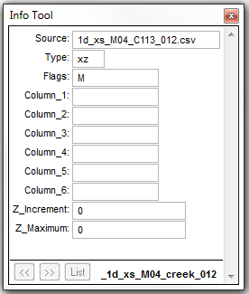
An additional third column is then added to the .csv source file, containing one or more Material ID values from within the Materials Definition File. In the figure below, a Material ID of 10 has been assigned to the whole cross-section.
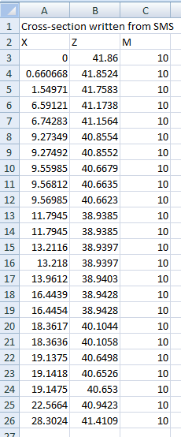
This correlates to a Manning’s n value of 0.08 as shown in the Materials Definition File.

When using the “M” flag to define material values, the “n_nF_Cd” attribute in the 1d_nwk becomes a multiplier (refer to Table 20). In most cases, this should be set to 1, as has been carried out for this example.
Once the model has been compiled, a check of the Manning’s n values applied to each cross-section may be viewed in the _ta_tables_check.csv.
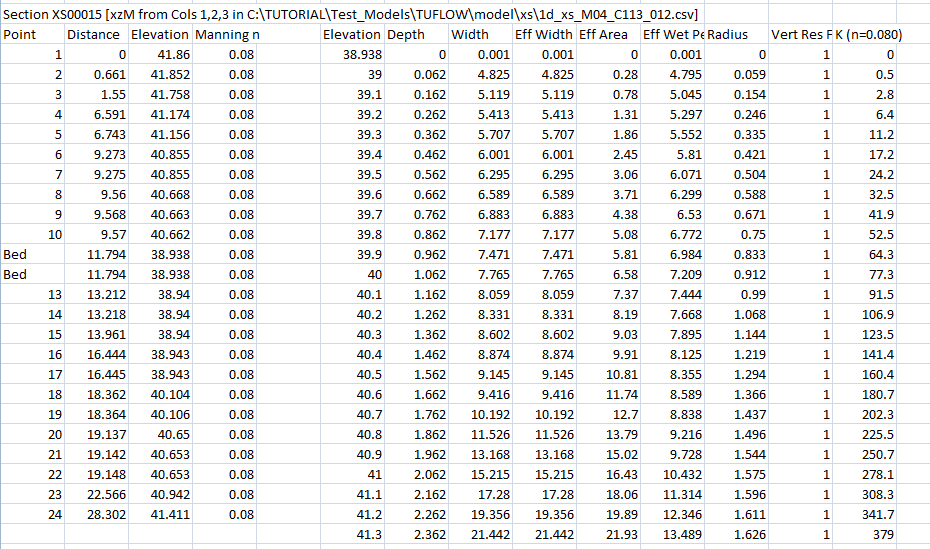
5.7.1.1.3 Manning’s n Values (N)
If using Manning’s n values (N), the n value is specified directly, noting that the n_or_n_Cd value in the 1d_nwk layer becomes a multiplier and should be set to one (1.0). See discussion above for using material values. A value of ‑1 ignores that section of the profile. For information on how negative “M”, “N” and “R” differ, please refer to the TUFLOW Wiki.
5.7.1.1.4 Position Flag (P)
The position values are used to indicate whether an XZ point is left bank (1), mainstream (2) or right bank (3). The P value is used to indicate where the mainstream sub-channel is located. If the materials (M flag) is used, the primary material is taken as that at the lowest Z value in the mainstream sub-channel. If the P flag and values are not specified, the primary material is that at the lowest Z value across the whole section.
5.7.2 Type “HW” Optional Flags
5.7.2.1 Flow Area (A)
The effective flow area in m2 or ft2 (depending on the model’s units). If omitted, the area is calculated based on the elevations and widths starting at an area of zero at the lowest elevation.
5.7.2.2 Wetted Perimeter (P)
The wetted perimeter in metres or feet (depending on the model’s units). If omitted, the area is calculated based on the elevations and widths assuming a symmetrical channel.
5.7.2.3 Manning’s n Values (N)
If using Manning’s n values (N), the n value is specified directly, noting that the n_or_n_Cd value in the 1d_nwk layer becomes a multiplier and should be set to one (1.0). See discussion above for using material values. A value less than zero is set to 0.001.
5.7.2.4 Manning’s n Values (F)
If using Manning’s n value mulipliers (F), the n value specified in the “n_or_n_Cd” value in the 1d_nwk layer is multiplied by the specified factor. A value less than zero is set to 0.001.
5.7.3 Parallel Channel Analysis
To calculate total conveyance, a cross-section needs to be sub-divided into panels for which the velocity is uniformly distributed. Conveyance for each panel is calculated using the Manning’s equation:
\[\begin{equation} K = \ \frac{1.0}{n}\ AR^{\frac{2}{3}} \tag{12} \end{equation}\]
Where:
- \(K\) = conveyance of panel
- \(n\) = Manning’s n roughness coefficient
- \(A\) = Flow Area (m2)
- \(R\) = Hydraulic Radius (m) – area / wetted perimeter
The conveyance of a cross-section may reduce with height where there is a sudden increase in the wetted perimeter compared with a relatively small increase in flow area, causing the hydraulic radius to reduce despite the water level increasing. A WARNING is issued if this occurs and it is strongly recommended that the cross-section be reviewed and corrected.
The most common cause for the reduction in conveyance with height occurs when the extent of inundation across the cross-section increases markedly during the transition from in-bank to out-of-bank flow. The reducing conveyance with height problem is usually resolved by forcing a parallel channel analysis by specifying a change in resistance using the R, M or N flag discussed in the sections above.
Figure 23 illustrates the ALL PARALLEL method of conveyance calculation.
Figure 23: ‘All Parallel’ Conveyance Calculation Method
Figure 24: ‘Change in Resistance’ Conveyance Calculation Method
It should be noted that differences in results are expected between the two methods of conveyance calculation. The total number of panels for each calculation method will be different as demonstrated, thereby influencing the total conveyance.
The ALL PARALLEL approach has been chosen as the current default conveyance calculation method for ESTRY. This is not to imply that this method produces the more accurate result, rather it has been chosen as it generally does not cause conveyance reducing with height warnings.
5.7.4 Effective Area versus Total Area
For XZ (offset elevation) Cross-Sections, the flow area is calculated as an effective area (E flag) or a total area (T flag). Use of the flag will override the global setting set by Flow Area where the default approach is to use the effective area.
If there is no variation in relative resistance across the cross-section there is no difference between effective and total areas. This is dependent on the relative resistance being 1.0 across the whole section. ERROR 1070 is produced if the relative resistance is not 1.0 somewhere along the cross-section when using effective area.
For an open channel, the total conveyance of a cross-section is not affected by whether effective or total area is used. In the case of effective area the wetted perimeter is adjusted to compensate for the change in flow area so as to produce the same conveyance as would occur for total area. For special channels that use cross-sections such as bridges, weirs and irregular culverts, the flow area used is the effective or total area as specified. This can be useful if the effects of blockage or congestion within the section needs to be modelled.
The primary differences between using effective and total area are:
- The channel velocity calculated is the depth and width average of the
primary (normally mainstream) parallel sub-channel if using effective
area, and the averaged depth and width of the whole cross-section if
using total area.
- Where the effective and total areas are significantly different, the channel velocities used in the 1D momentum equation will be significantly different. If the channel velocity is sufficiently high and different depending on whether effective or total area is used, the inertia terms in the 1D momentum equation may affect the results. Note the frictional (bed resistance) term in the momentum equation is NOT affected as the hydraulic properties for the cross-section are adjusted so that the total conveyance is the same irrespective of whether effective or total area is used.
- Effective area gives a more reliable calculation of the mainstream velocity, and therefore, a more accurate estimate of approach and exit velocities of structures, and more appropriate velocities for advection-dispersion and sediment transport calculations. Where velocities are not high or significantly changed when using effective or total area, the water level and flow results are usually identical or very similar.
5.7.5 Mid Cross-Sections
Cross-sections may be specified using lines digitised within a 1d_xs layer partway along the channel. The upstream and downstream invert levels of the channel are both assigned the invert level of the cross-section if a value of -99999 has been specified within the 1d_nwk channel (refer to Table 20). If either of these attributes is greater than ‑99999, the invert of the channel is set to the GIS attribute value rather than that of the cross-section bed elevation.
The mid cross-section approach is the only approach available for structures such as bridges, weirs and irregular shaped culverts. It can also be used for open channels, however the digitisation of cross-section lines within a 1d_xs layer that have been snapped to the channel ends (as described in Section ?? below) has added advantages and is recommended.
If using a mid cross-section 1d_xs line with more than two vertices, a intermediate vertex must be snapped to the 1d_nwk channel.
5.7.6 End Cross-Sections
Cross-sections for open channels (S channels and the superseded G channels) can be specified using lines digitised within a 1d_xs layer at the channel ends, rather than a single cross-section midway along the channel as described above. This approach has the following benefits:
- The upstream and downstream inverts can be based on the beds of the
cross-sections, thereby saving some effort to enter this information
within the 1d_nwk file. To do this, set the US_Invert and DS_Invert
attributes in the 1d_nwk layer to ‑99999. If either of these
attributes is greater than ‑99999, the invert is set to the attribute
value rather than that of the cross-section bed.
- Cross-section surveys from some other 1D models often have the cross-sections at the channel ends, therefore, this makes it easier to use these external data sources.
There are a few rules on how end cross-sections are interpreted and applied, as follows:
- The 1d_xs cross-section lines must have a vertex snapped to the
channel end.
- If a 1d_xs cross-section line occurs elsewhere along an open channel
with end cross-sections, the midway cross-section prevails. This is
particularly useful where two channels’ ends are snapped to an end
cross-section, but the end cross-section is to be applied to only one
of the channels (e.g. one channel is a river channel using end
cross-sections, and the other is an overbank channel). For the
overbank channel, specify a cross-section line somewhere along the
channel, and preference will be given to this cross-section rather
than the end cross-section. Alternatively, an X connector can be used
if end cross-sections are required for both channels. See Section
??.
- End cross-sections cannot be used to override previously defined
cross-section properties for a G or S channel. You can override the
end cross-sections using a midway cross-section.
- For channels other than S and G channels, end cross-sections are ignored.
5.7.7 Interpolated Cross-Section Protocols
Cross-sections may be interpolated for channels (excluding C and R culvert channels) that have not been assigned a cross-section. A series of channels may now be digitised between two cross-sections, and the cross-section properties at each channel are linearly interpolated between the two cross-sections. The protocols applied when interpolating cross-sections and setting Manning’s n values are:
- If a channel has a cross-section at each end, the processed data of
these cross-sections is averaged.
- If a channel has a cross-section midway, this cross-section takes
priority over any end cross-sections.
- If a channel only has one end cross-section, TUFLOW traverses
upstream/downstream to find the next available cross-section, and uses
this to interpolate the cross-section properties for that channel. The
next available cross-section can be a midway or end cross-section.
- If a channel has no cross-sections attached to it, TUFLOW traverses
upstream and downstream to find the nearest cross-sections and
interpolates the channel properties based on these cross-sections.
- When traversing upstream/downstream to find a cross-section:
- If a junction (three or more channels snapped together) is reached
(excluding pits and connectors), an ERROR is issued as it is not
possible to determine which branch to follow. Note, channels
connected to a junction using a connector (Type “X”) are not used
for traversing, therefore use connectors to connect side channels to
the main branch to avoid interpolating sections from side channels
- The digitised direction of the channel is important and controls the
direction used to traverse upstream and downstream. Ensure the
channels are digitised in a consistent direction (usually from
upstream to downstream).
- If a junction (three or more channels snapped together) is reached
(excluding pits and connectors), an ERROR is issued as it is not
possible to determine which branch to follow. Note, channels
connected to a junction using a connector (Type “X”) are not used
for traversing, therefore use connectors to connect side channels to
the main branch to avoid interpolating sections from side channels
- If a channel has an end cross-section only at one end, and no
cross-section is found when traversing, this end cross-section is used
at both ends for that channel only.
- The inverts are also interpolated using the cross-section beds (unless
the inverts have been manually entered into the 1d_nwk attributes).
Specify -99999 for the 1d_nwk channel inverts to be interpolated from the cross-sections.
- Cross-sections that are interpolated can be of any format, including CS or HW
1d_xs formats (see Table 21).
- The Manning’s n value assigned to the channel’s cross-section is as
follows:
- If the cross-sections used for interpolation have no Manning’s n
values (i.e. for XZ cross-sections, M or N was not specified, or for
CS/HW cross-sections, N was not specified), the 1d_nwk Manning’s n
attribute of the channel is used.
- If the cross-sections used for interpolation have Manning’s n
values, the value is interpolated from the cross-section n values
(at the bed) and multiplied by the 1d_nwk Manning’s n attribute of
the channel. In this case the 1d_nwk n_or_n_F attribute is a
multiplier that can be used to calibrate the model.
- If one of the two cross-sections used for interpolation has a Manning’s n value, and the other does not, the n value used is interpolated using the channel’s 1d_nwk Manning’s n value and the cross-section’s n value. Ideally, the model should be set up using the same approach everywhere so that this situation does not arise as it may cause undesirable results. A WARNING is issued if this occurs.
- If the cross-sections used for interpolation have no Manning’s n
values (i.e. for XZ cross-sections, M or N was not specified, or for
CS/HW cross-sections, N was not specified), the 1d_nwk Manning’s n
attribute of the channel is used.
The interpolation of cross-sections is the default. Interpolate Cross-Sections can also be used to switch this feature ON or OFF.
5.8 Structures
Hydraulic structures in the 1D domain are modelled by replacing the momentum equation with standard equations describing the flow through the structure. The structures available are described in the following sections. A discussion on the choice of a 1D or 2D representation of the structure is presented in Section ??.
A channel is flagged as a hydraulic structure using the Type attribute as described in Table 18. Except for culverts, a structure has zero length, i.e. there is no bed resistance. If a non-zero length is applied to a “zero length” structure, this is only used in the calculation of the storage (nodal area).
5.8.1 Culverts and Pipes
Culvert or pipe channels can be either rectangular, circular (pipe) or irregular in shape. A range of different flow regimes is simulated with flow in either direction. Adverse slopes are accounted for and flow may be subcritical or supercritical. Figure 25, Figure 26 and Table 23 present the different flow regimes which can be modelled. The regimes that occur during a simulation are output to the .eof file next to the velocity and flow output values, and to the _TSF GIS layer (see Sections ?? and ??), and can be displayed on time-series plots in the QGIS TUFLOW Viewer plugin.
For all culvert types the length, upstream and downstream inverts, Manning’s n, bend loss, entrance and exit losses, and number of barrels are entered using the 1d_nwk attributes (see Table 22). For type “C” circular or type “R” rectangular culverts, the dimensions are also specified within the 1d_nwk attributes. For an “I” irregular shaped culvert, the cross-sectional shape is specified in the same manner as for open channels using a 1d_xs GIS layer (refer to Section ?? and Table 21) and the command Read GIS Table Links. The line is digitised across the 1d_nwk channel line.
The four culvert coefficients are as follows:
- The height contraction coefficient for box culverts. Usually 0.6 for
square edged entrances to 0.8 for rounded edges. This factor is not
used for circular culverts.
- The width contraction coefficient for box culverts. Typically values
from 0.9 for sharp edges to 1.0 for rounded edges. This factor is
normally set to 1.0 for circular culverts.
- The entry loss coefficient. The standard value for this coefficient is
0.5. Variations to this value may be applied based on manufacturer
specifications.
- The exit loss coefficient, normally recommended as 1.0.
The calculations of culvert flow and losses are carried out using techniques from “Hydraulic Charts for the Selection of Highway Culverts” and “Capacity Charts for the Hydraulic Design of Highway Culverts”, together with additional information provided in Henderson (1966). The calculations have been compared and shown to be consistent with manufacturer’s data provided by both “Rocla” and “Armco”.
Note: By default, the entrance and exit losses above are adjusted every timestep according to the approach and departure velocities based on the equations in Section ??.
For benchmarking of culvert flow to the literature, see “TUFLOW Validation and Testing” (Huxley, 2004).
| No. | Default GIS Attribute Name | Description | Type |
|---|---|---|---|
| 1 | ID |
Unique identifier up to 12 characters in length. It may contain any character except for quotes and commas, and cannot be blank. As a general rule, spaces and special characters (e.g. “\”) should be avoided, although they are accepted. The same ID can be used for a channel and a node, but no two nodes and no two channels can have the same ID. When automatically creating nodes (default) “.1” and “.2” are added to the channel names for the upstream and downstream node names respectively. IDs over 10 characters long are not recommended as the appending of .1 and .2 can cause duplicate node ID’s to be created. |
Char(12) |
| 2 | Type |
The culvert type:
|
Char(4) |
| 3 | Ignore | If a “T”, “t”, “Y” or “y” is specified, the object will be ignored (T for True and Y for Yes). Any other entry, including a blank field, will treat the object as active. | Char(1) |
| 4 |
UCS (Use Channel Storage at nodes) |
If left blank or set to Yes (“Y” or “y”) or True (“T” or “t”), the storage based on the width of the channel over half the channel length is assigned to both of the two nodes connected to the channel. If set to No (“N” or “n”) or False (“F” or “f”), the channel width does not contribute to the node’s storage. See Section ?? for further discussion. | Char(1) |
| 5 | Len_or_ANA | The length of the culvert in metres. If the length is less than zero, except for the special values below, the length of the line is used. | Float |
| 6 | n_nF_Cd |
The Manning’s n value of the culvert. If using materials to define the bed resistance from XZ tables (only for Irregular culvert, see Section ??), n_nF_Cd should be set to one (1) as it becomes a multiplication factor of the materials’ Manning’s n values. It may be adjusted as part of the calibration process. |
Float |
| 7 | US_Invert |
The upstream bed or invert elevation of the culvert in metres. If a culvert invert has a value of 99999 (after any application of node/pit DS_Invert values), the invert is interpolated by searching upstream and downstream for the nearest specified inverts, and the invert is linearly interpolated. Interpolate Culvert Inverts can also be used to switch this feature ON or OFF. |
Float |
| 8 | DS_Invert | Sets the downstream invert of the culvert using the same rules as for described for the US_Invert attribute above. | Float |
| 9 | Form_Loss |
Specifies an additional dynamic head loss coefficient that is applied when the culvert flow is not critical at the inlet. Note, this loss coefficient is not subject to adjustment when using |
Float |
| 10 | pBlockage |
C, R Channel Type: Not used. |
Float |
| 11 | Inlet_Type | Not used. | Char(256) |
| 12 | Conn_1D_2D | Not used. | Char(4) |
| 13 | Conn_No | Not used. | Integer |
| 14 | Width_or_Dia |
C Channel Type: R Channel Type: Not used. |
Float |
| 15 | Height_or_WF |
R Channel Type: Not used. |
Float |
| 16 | Number_of | The number of culvert barrels. If set to zero, one barrel is assumed. | Integer |
| 17 | HConF_or_WC |
I, R Channel Type: Not used. |
Float |
| 18 | WConF_or_WEx |
The width contraction coefficient for inlet-controlled flow. Usually 0.9 for sharp edges to 1.0 for rounded edges for R culverts. Normally set to 1.0 for C culverts. If value exceeds 1.0 or is less than or equal to zero, it is set to 1.0 for C and 0.9 for R culverts. Not used for outlet controlled flow regimes. |
Float |
| 19 | EntryC_or_WSa |
The entry loss coefficient for outlet controlled flow (recommended value of 0.5). If value exceeds 1.0, it is set to 1.0. If value is less than zero (0), it is set to zero (0). If |
Float |
| 20 | ExitC_or_WSb |
The exit loss coefficient for outlet controlled flow (recommended value of 1.0). If value exceeds 1.0, it is set to 1.0. If value is less than zero (0), it is set to zero (0). If |
Float |
| Regime | Description |
|---|---|
| A | Unsubmerged entrance and exit. Critical flow at entrance. Upstream controlled with the flow control at the inlet. |
| B |
Submerged entrance and unsubmerged exit. Orifice flow at entrance. Upstream controlled with the flow control at the inlet. For circular culverts, not available for |
| C | Unsubmerged entrance and exit. Critical flow at exit. Upstream controlled with the flow control at the culvert outlet. |
| D | Unsubmerged entrance and exit. Sub-critical flow at exit. Downstream controlled. |
| E | Submerged entrance and unsubmerged exit. Full pipe flow. Upstream controlled with the flow control at the culvert outlet. |
| F | Submerged entrance and exit. Full pipe flow. Downstream controlled. |
| G | No flow. Dry or flap-gate active. |
| H | Submerged entrance and unsubmerged exit. Adverse slope. Downstream controlled. |
| J | Unsubmerged entrance and exit. Adverse slope. Downstream controlled. |
| K |
Unsubmerged entrance and submerged exit. Critical flow at entrance. Upstream controlled with flow control at the inlet. Hydraulic jump along culvert. Not available for |
| L |
Submerged entrance and exit. Orifice flow at entrance. Upstream controlled with the flow control at the inlet. Hydraulic jump along culvert. Not available for |
Figure 25: 1D Inlet Control Culvert Flow Regimes

Figure 26: 1D Outlet Control Culvert Flow Regimes
5.8.1.1 Blockage Matrix
This feature allows for blockage of culverts to be varied based on the Average Recurrence Interval (ARI) of the flood simulation. This applies to C (circular) and R (rectangular) type culverts. For Australian users, this hydraulic structure blockage option is consistent with Project 11 of Australian Rainfall & Runoff (Weeks et al., 2013).
Two different blockage methods are available:
- The first method reduces the area in the culvert;
- The second applies a modified energy loss value to account for the blockage.
Please refer to Ollett & Syme (2016) for background information on the loss approaches.
Each culvert can be assigned a blockage category, which is defined in the 1d_nwk pBlockage attribute as a character field. A matrix of blockage category and percentage blockage for a range of ARIs is defined. Please see Section ?? for guidance on implementation.
5.8.1.1.1 Reduced Area Method
For the reduced area method, the culvert area is reduced to match the specified blockage in the same manner as varying the pBlockage attribute on the 1d_nwk layer (refer to Table 22). For example, with a blockage value of 10 the culvert area is reduced by 10%.
5.8.1.1.2 Energy Loss Method
For this method the area of the culvert is not modified, however, an increased entrance energy loss is applied. The modified energy loss is based on the specified culvert entry loss and the blockage ratio as per equation (13) (Witheridge, 2009):
\[\begin{equation} C_{ELC\_ modified} = \left( \frac{1 + \sqrt{C_{ELC}}}{BR} - 1 \right)^{2} \tag{13} \end{equation}\]
Where:
- \(C_{ELC\_ modified}\) = Modified culvert entry loss value
- \(C_{ELC}\) = Specified culvert entry loss value
- \(BR\) = Blockage ratio (area of blocked culvert / area unblocked culvert)
When BR is 1 (unblocked), the modified entry loss coefficient becomes the specified entry loss coefficient. The modified coefficients for a range of blockages are provided in Table 24.
| CELC | ||||
|---|---|---|---|---|
| 0.3 | 0.5 | 0.7 | ||
| Specified % Blockage | BR | CELC_modified | ||
| 0 | 1 | 0.3 | 0.5 | 0.7 |
| 10 | 0.9 | 0.5 | 0.8 | 1.1 |
| 25 | 0.75 | 1.1 | 1.6 | 2.1 |
| 50 | 0.5 | 4.4 | 5.8 | 7.1 |
| 75 | 0.25 | 27 | 34 | 40 |
| 90 | 0.1 | 210 | 260 | 300 |
| 95 | 0.05 | 900 | 1100 | 1280 |
| 100 | 0 | ∞ | ∞ | ∞ |
Whilst loss values of greater than 1.0 may appear counter-intuitive, it is appropriate in this situation. In conduit hydraulics there are two types of loss coefficients that are used to represent constrictions, one type being applied to the velocity at the constriction itself (these are always <=1), and the other type which are applied to the full-barrel velocity downstream of the blockage where the loss coefficient may approach infinity. The second type is convenient as the velocity downstream of the blockage is readily available and requires no manipulation of culvert geometry, and follows in principle the same application of valve coefficients. The equation above simply gives the conversion between these two types of loss coefficients.
Note: The minimum blockage ratio is set to 0.001 or 0.1%. This is required to avoid a divide by zero error in the calculations. This loss method only applies when the culvert is operating under outlet control. For an inlet control flow regime no energy loss is applied, the reduced area method is used instead.
5.8.1.1.3 Blockage Matrix Commands
The commands available for the Blockage Matrix method are listed in Table 25.
| Command | Description |
|---|---|
| Blockage Matrix | Turns on or off the blockage matrix functionality outlined in this section. The default is for this feature to be off. |
| Blockage Matrix File | Specifies a blockage file containing the blockage values for the various blockage categories and ARI values. |
| Blockage Method | Specifies whether to use RAM (Reduced Area Method) or ELM (Energy Loss Method). No default approach is applied. This command must be specified if using the blockage matrix functionality. |
| Blockage ARI | Specifies the ARI for the current simulation. This would typically be defined in an event file (.tef). |
| Blockage Override | Sets the blockage for all culverts with the specified blockage category. This option is useful for running simulations under an “all clear” case. |
| Blockage Default | Sets the blockage category for culverts that do not have a blockage type specified (including those that have a numeric pBlockage defined) |
| Blockage PMF ARI | If PMF has been specified in the ARI column of the blockage matrix, this command sets an ARI to be used for the PMF. This allows for interpolation of blockages for ARI values up to the PMF. |
5.8.1.1.4 Implementation
To make use of this feature the pBlockage attribute of the 1d_nwk GIS layer needs to be changed from a float (numeric) type to a character field, with maximum width of 50. This has not been made the default field type in the empty (template) files that TUFLOW produces, for two main reasons:
- A character field is bigger and less efficient to read, this could slow down simulation start-up for models not using the blockage categories; and
- A numeric field (in almost all GIS packages) defaults to 0.0, i.e. no blockage. This is not the case for a character field.
Instructions on how to change the GIS layer attribute type in QGIS, ArcMap and MapInfo are provided in the TUFLOW Wiki as per the links below:
For each culvert the pBlockage attribute can be set to either; a numeric value (in which case this is used as per the standard simulation), a blockage category name (as a character string e.g. “A”), or left blank (in which case the Blockage Default would apply). In the example below, the pBlockage attribute has been set to a category named “B”.

Each blockage category must be defined in the Blockage Matrix File. The first column should contain the Average Recurrence Interval (ARI) for a range of events, any additional columns contain percentage blockages for each of the ARIs. An example blockage matrix file is provided in Table 26 containing 5 different blockage categories (A, B, C, D, E). For blockage category A the culvert is unblocked for all ARIs, for category E the culvert is fully blocked for all ARIs. For the categories B, C, and D the blockage varies by ARI.
If the specified ARI sits between the defined ARI values in the blockage matrix file a linear interpolation is used. For example, in the table below for a 50-year ARI, blockage category “C” will have a blockage of 13.75%.
| ARI | A | B | C | D | E |
|---|---|---|---|---|---|
| 1 | 0 | 10 | 10 | 10 | 100 |
| 20 | 0 | 10 | 10 | 20 | 100 |
| 100 | 0 | 10 | 20 | 50 | 100 |
| 2000 | 0 | 20 | 50 | 70 | 100 |
| 10000 | 0 | 50 | 70 | 100 | 100 |
The ARI values for the blockage matrix file should be in ascending order. “PMF” can be defined in the ARI column, if this is done, an ARI must be assigned to the PMF using the command Blockage PMF ARI.
Example TUFLOW commands
.tcf file commands
.tef file commands
A working example of a blockage matrix model is provided in the example models on the TUFLOW Wiki.
5.8.1.2 Limitations
For the energy loss method, the loss value only applies to the culverts when flowing in outlet control flow regimes. When the flow conditions are inlet controlled TUFLOW reverts to using the reduced area method. This is required, as there is no guidance how to adjust the contraction coefficients or otherwise as used by the inlet controlled culvert equations.
5.8.2 Bridges
5.8.2.1 Bridges Overview
Bridge channels do not require data for length, Manning’s n, divergence or bed slope (they are effectively zero-length channels, although the length is used for automatically determining nodal storages – see Section ??). The bridge opening cross-section is described in the same manner to a normal channel.
Two types of bridge channels can be specified:
- “B” bridges require the user to specify an energy loss versus elevation table, usually derived from loss coefficients in the literature such as “Hydraulics of Bridge Waterways” (Bradley, 1978) or “Guide to Bridge Technology Part 8, Hydraulic Design of Waterway Structures” (Austroads, 2018). The energy loss table can be generated automatically via the 1d_nwk Form_Loss attribute if the energy loss coefficient is constant up to the underside of the bridge deck.
- “BB” bridges automatically calculate the form (energy) losses associated with the approach and departure flows as the water constricts and expands. It also automatically applies bridge deck losses associated with pressure flow. The only user specified loss coefficients required for BB bridges are the pier losses and the deck losses once fully submerged. If the pier loss coefficient is constant through the vertical the coefficient can simply be specified via the 1d_nwk Form_Loss attribute as described further below.
For B bridges, two bridge flow approaches are offered using Bridge
Flow. Method B is an enhancement on Method A by
providing better stability at shallow depths or when wetting and drying.
There are also some subtle differences between the methods in how the
loss coefficients are applied at the bridge deck. This is discussed
further below. Method B is the approach recommended with Method A
provided for legacy models. For
5.8.2.2 Bridge Cross-Section and Loss Tables
The cross-sectional shape of the bridge is specified in the same manner as for open channels using a 1d_xs GIS layer (refer to Section ?? and Table 21) and the command Read GIS Table Links. The line is digitised midway across the 1d_nwk channel line (do not specify as an end cross-section, i.e. a cross-section line snapped to an end of the bridge channel). As per the open channel, the cross-section data can be in offset-elevation (XZ) or height-width (HW) format.
Bridge structures are modelled using a height varying form or energy loss coefficient. A table (referred to as a Bridge Geometry “BG” or Loss Coefficient “LC” Table) of backwater or form loss coefficient versus height is required. The interpretation of loss coefficients provided by the user differs depending on whether the bridge channel is of a B or BB type as discussed in the following sections.
BG Tables can be entered using .csv files via a 1d_bg GIS layer (see Table 28) using the command Read GIS Table Links. A line is digitised crossing the 1d_nwk channel in the same manner as for the 1d_xs GIS layer used to define the cross-sectional shape of the bridge. The line does not have to be identical to the cross-section line.
Where the loss coefficient is constant through to the bridge deck (e.g. no losses such as a clear spanning bridge, or pier losses only – see BB bridges), the BG table can automatically be created by specifying a positive non-zero value for the Form_Loss attribute in the 1d_nwk layer (see Table 27). How the Form_Loss attribute is interpreted differs between B and BB bridge channels as discussed in the following sections.
Any wetted perimeter or Manning’s n inputs in the hydraulic properties table are ignored. If the flow is expected to overtop the bridge, a parallel weir channel should be included to represent the flow over the bridge deck, or a BW or BBW channel can be specified (see Section ??).
5.8.2.3 B Bridge Losses Approach
The coefficients for B bridges are usually obtained from publications such as “Hydraulics of Bridge Waterways” (Bradley, 1978) or “Guide to Bridge Technology Part 8, Hydraulic Design of Waterway Structures” (Austroads, 2018), through the following procedure.
- The bridge opening ratio (stream constriction ratio), defined in
Equations 1 and 2 of “Hydraulics of Bridge Waterways” (Bradley, 1978), is estimated
for various water levels from the local geometry. Alternatively, the
bridge opening ratio is estimated with the help of a trial modelling
run in which the stream crossed by the bridge is represented by a
number of parallel channels, providing a more quantitative basis for
estimating the proportion of flow obstructed by the bridge abutments.
- For each level this enables the value of Kb to be obtained
from Figure 6 of “Hydraulics of Bridge Waterways” (Bradley, 1978). Additional factors,
for piers (Kp from Figure 7), eccentricity (Ke
from Figure 8) and for skew (Ks from Figure 10) make up the
primary contributors to Kb.
- The backwater coefficient Kb input into the LC table is the sum of the relevant coefficients at each elevation. The velocity through the bridge structure used for determining the head loss is based on the flow area calculated using the water level at the downstream node.
Backwater coefficients derived in this manner have usually taken into
account the effects of approach and departure velocities (via
consideration of the upstream and downstream cross-section areas), in
which case the losses for the B channel should be fixed. This is the
default setting or can be manually specified using the “F” flag (i.e. a
“BF” channel) in the 1d_nwk Type attribute, or use
For
The value of 1.5625 is derived from the following equation (14) presented in Waterway Design - A Guide to the Hydraulic Design of Bridges, Culverts and Floodways (Austroads, 1994):
\[\begin{equation} Q = {C_d}{b_N}Z\sqrt{2gdH} \tag{14} \end{equation}\]
Where:
- Q = Total discharge (m3/s)
- Cd = Coefficient of discharge (0.8 for a surcharged bridge
deck)
- bN = Net width of waterway (m)
- Z = Vertical distance under bridge to mean river bed (m)
- dH = Upstream energy (or water surface) level minus downstream water surface level (m)
Assuming \({V} = \frac{Q}{b_{N}Z}\) and \(dh = K\frac{V^2}{2g}\), the equation rearranges to give \(K = \frac{1}{C_d^2}\), where a Cd value of 0.8 equates to a K energy loss value of 1.5625.
5.8.2.4 BB Bridge Losses Approach
BB bridges break down the energy losses into the following categories:
- Bridge pier losses;
- Losses due to flow contraction and expansion;
- Bridge deck losses when the bridge is submerged but not under pressure flow condition; and
- If under pressure flow, the pressure flow equation is applied as described further below.
BB bridges differ from B bridges in that the losses due to flow contraction and expansion, and the occurrence of pressure flow are handled automatically. The only loss coefficient required to be specified is that due to piers (via the Form_Loss attribute value or a LC table). Other loss parameters can be either set based on the default parameters, or can be specified by users. The parameters used by the BB bridge routine are:
- Cd = the Bridge Deck surcharge coefficient (Default = 0.8).
- DLC = the Deck loss coefficient (Default = 0.5) and only applies when
no LC table exists and an automatically generated table using the
1d_nwk Form_Loss attribute is created.
- ELC = the unadjusted entry loss coefficient (Default = 0.5).
- XLC = the unadjusted exit loss coefficient (Default = 1.0).
The .ecf command “
The above values can also be changed for an individual bridge using the following 1d_nwk attributes. If the attribute value is zero then the default value or the value specified by Bridge Zero Coefficients is used.
- CD = HConF_or_WC
- DLC = WConF_or_WEx
- ELC = EntryC_or_WSa
- XLC = ExitC_or_WSb
The entrance and exit losses are adjusted every timestep according to the approach and departure velocities based on the equations below from Section ??. This approach yields similar results to the approach for determining contraction and expansion losses in publications such as “Hydraulics of Bridge Waterways” (Bradley, 1978) or “Guide to Bridge Technology Part 8, Hydraulic Design of Waterway Structures” (Austroads, 2018).
\[\begin{equation} C_{ELC\text{_}adjusted} = C_{ELC}\left\lbrack 1 - \frac{V_{approach}}{V_{structure}} \right\rbrack \tag{15} \end{equation}\]
\[\begin{equation} C_{XLC\text{_}adjusted} = C_{XLC}\left\lbrack 1 - \frac{V_{departure}}{V_{structure}} \right\rbrack^{2} \tag{16} \end{equation}\]
Where:
- V = Velocity (m/s)
- C = Energy Loss Coefficient
Pressure flow is handled by transitioning from the equation described in the previous section (to derive the K value of 1.5625 from a coefficient of discharge value of 0.8) to a fully submerged situation where a deck energy loss is applied. The flux is calculated based on both the fully submerged situation and the pressure flow situation, and the lesser of the two fluxes is applied. The 1d_nwk HConF_or_WC attribute can be used to vary Cd (default value is 0.8) and the WConF_or_WEx attribute to set the submerged deck loss coefficient. When pressure flow results the “P” flag will appear in the .eof file and _TSF layer.
Optionally, LC tables can be specified for BB bridges. If a LC table exists, the Deck loss coefficient (DLC) will be ignored, while the other 3 parameters (CD, ELC and XLC) are not affected. The LC tables for BB bridges should therefore only be the losses due to piers and bridge decks. The LC table should not include any losses for contraction, expansion and pressure flow. Note the Form_Loss value is added to the LC table loss values.
If no LC table exists for the BB bridge, and the 1d_nwk Form_Loss attribute is greater than 0.0001, a LC table is automatically generated using Form_Loss for the pier losses and the WConF_or_WEx for the Deck Loss coefficient (DLC).
Other notes are:
- BB bridges are only available if
Structure Routines == 2013 (the default).
- The unadjusted entry and exist losses (ELS and XLC) cannot be below 0
or greater than 1, and will be automatically limited to these values.
- _TSF and _TSL layers contain the following flags/values for BB
bridges:
- For normal flow (“ ” or “D” if drowned out): fixed / adjusted
components
- For Pressure (“P”) flow: Deck surcharge Coefficient / 0.0
- Other flags:
- “U” for upstream controlled flow – only occurs when downstream
water level is below the bridge bed level.
- “Z” for zero or nearly zero flow.
- “U” for upstream controlled flow – only occurs when downstream
water level is below the bridge bed level.
- For normal flow (“ ” or “D” if drowned out): fixed / adjusted
components
| No. | Default GIS Attribute Name | Description | Type |
|---|---|---|---|
| 1 | ID | Unique identifier up to 12 characters in length. It may contain any character except for quotes and commas, and cannot be blank. As a general rule, spaces and special characters (e.g. “\”) should be avoided, although they are accepted. The same ID can be used for a channel and a node, but no two nodes and no two channels can have the same ID. | Char(12) |
| 2 | Type | “B” or “BB” as specified in Table 18. | Char(4) |
| 3 | Ignore | If a “T”, “t”, “Y” or “y” is specified, the object will be ignored (T for True and Y for Yes). Any other entry, including a blank field, will treat the object as active. | Char(1) |
| 4 |
UCS (Use Channel Storage at nodes). |
If left blank or set to Yes (“Y” or “y”) or True (“T” or “t”), the storage based on the width of the channel over half the channel length is assigned to both of the two nodes connected to the channel. If set to No (“N” or “n”) or False (“F” or “f”), the channel width does not contribute to the node’s storage. See Section ?? for further discussion. | Char(1) |
| 5 | Len_or_ANA | Only used in determining nodal storages if the UCS attribute is set to “Y” or “T”. Not used in conveyance calculations. | Float |
| 6 | n_nF_Cd | Not used. | Float |
| 7 | US_Invert | Sets the upstream and downstream inverts. Note that the invert is taken as the maximum of the US_Invert and the DS_Invert attributes. Use -99999 to use the bed of the cross-section as the invert. | Float |
| 8 | DS_Invert | Sets the downstream invert of the channel using the same rules as for described for the US_Invert attribute above. | Float |
| 9 | Form_Loss |
If a LC table exists, for BB bridges adds the value specified to the loss coefficients in the LC table. Not added to LC tables for B bridges. If no LC table exists, and the value is greater than zero, TUFLOW automatically generates a LC table of constant loss coefficient up until the bridge deck (i.e. the top of the cross-section). The interpretation of the LC table generated from the Form_Loss value differs depending on whether a B or a BB bridge as follows: For B bridges (with no LC table):
For BB bridges (with no LC table):
|
Float |
| 10 | pBlockage | Not used. Reserved for future builds to fully or partially block B channels. The 1d_xs Skew attribute can be used to partially block cross-sections of these channels – see Table 21. | Float |
| 11 | Inlet_Type | Leave blank unless using the legacy MIKE 11 1D cross-section data feature. | Char(256) |
| 12 | Conn_1D_2D | Leave blank unless using the legacy MIKE 11 1D cross-section data feature, or if accessing a Flood Modeller cross-section database (.pro file), enter the label in the .pro file. | Char(4) |
| 13 | Conn_No | Leave blank unless using the legacy MIKE 11 1D cross-section data feature. | Integer |
| 14 | Width_or_Dia | Not used. | Float |
| 15 | Height_or_WF | Not used. | Float |
| 16 | Number_of | Not used. | Integer |
| 17 | HConF_or_WC |
B bridges: Not used. BB bridges: Bridge deck pressure flow contraction coefficient (Cd). If set to zero the default of 0.8 or that specified by Bridge Zero Coefficients is used. |
Float |
| 18 | WConF_or_WEx |
B bridges: Not used. BB bridges: Bridge deck energy loss coefficient (DLC) for fully submerged flow. If set to zero the default of 0.5 or that specified by Bridge Zero Coefficients is used. |
Float |
| 19 | EntryC_or_WSa |
B bridges: Not used. BB bridges: Unadjusted entrance energy loss coefficient (ELC). If set to zero the default of 0.5 or that specified by Bridge Zero Coefficients is used. |
Float |
| 20 | ExitC_or_WSb |
B bridges: Not used. BB bridges: Unadjusted exit energy loss coefficient (XLC). If set to zero the default of 1.0 or that specified by Bridge Zero Coefficients is used. |
Float |
| No. | Default GIS Attribute Name | Description | Type |
|---|---|---|---|
| 1 | Source | Filename (and path or relative path if needed) of the file containing the tabular data. Must be a comma or space delimited text file such as a .csv file. | Char(50) |
| 2 | Type | “BG” or “LC”: Bridge energy loss coefficients (second column) versus elevation (first column) for bridge structures. | Char(2) |
| 3 | Flags | No optional flags. | Char(8) |
| 4 | Column_1 |
Optional. Identifies a label in the Source file that is the header for the first column of data (ie. elevation). Values are read from the first number encountered below the label until a non-number value, blank line or end of the file is encountered. If this field is left blank, the first column of data in the Source file is used. |
Char(20) |
| 5 | Column_2 |
Optional. Identifies a label in the Source file that is in the header for the second column of data (ie. loss coefficient). If this field is left blank, the next column of data after Column_1 is used. |
Char(20) |
| 6 | Column_3 | Not used. | Char(20) |
| 7 | Column_4 | Not used. | Char(20) |
| 8 | Column_5 | Not used. | Char(20) |
| 9 | Column_6 | Not used. | Char(20) |
| 10 | Z_Increment | Not used. | Float |
| 11 | Z_Maximum | Not used. | Float |
| 12 |
Skew (in degrees) |
Not used. | Float |
5.8.3 Arch Bridge
The 2023-03 release introduced support for arch bridges as 1D channels. The approach is based on the ‘Afflux at Arch Bridges’ (HR Wallingford, 1988). Arch bridges are defined in the 1d_nwk layer as a “BArch” type. The 1d_nwk attributes specific to an arch bridge are outlined below in Table 29.
| No. | Default GIS Attribute Name | Description | Type |
|---|---|---|---|
| 1 | ID | Unique identifier up to 12 characters in length. It may contain any character except for quotes and commas, and cannot be blank. As a general rule, spaces and special characters (e.g. “\”) should be avoided, although they are accepted. The same ID can be used for a channel and a node, but no two nodes and no two channels can have the same ID. | Char(12) |
| 2 | Type | “BArch” as specified in Table 18. | Char(4) |
| 3 | Ignore | If a “T”, “t”, “Y” or “y” is specified, the object will be ignored (T for True and Y for Yes). Any other entry, including a blank field, will treat the object as active. | Char(1) |
| 4 |
UCS (Use Channel Storage at nodes). |
If left blank or set to Yes (“Y” or “y”) or True (“T” or “t”), the storage based on the width of the channel over half the channel length is assigned to both of the two nodes connected to the channel. If set to No (“N” or “n”) or False (“F” or “f”), the channel width does not contribute to the node’s storage. See Section ?? for further discussion. | Char(1) |
| 5 | Len_or_ANA | Only used in determining nodal storages if the UCS attribute is set to “Y” or “T”. Not used in conveyance calculations. | Float |
| 6 | n_nF_Cd | Not used. | Float |
| 7 | US_Invert | Sets the upstream and downstream inverts. Note that the invert is taken as the maximum of the US_Invert and the DS_Invert attributes. Use -99999 to use the bed of the cross-section as the invert. | Float |
| 8 | DS_Invert | Sets the downstream invert of the channel using the same rules as for described for the US_Invert attribute above. | Float |
| 9 | Form_Loss | Not used. | Float |
| 10 | pBlockage | Not used. | Float |
| 11 | Inlet_Type | The relative path to the arch properties file (must be a .csv file). See Section ??. | Char(256) |
| 12 | Conn_1D_2D | Not used. | Char(4) |
| 13 | Conn_No | Not used. | Integer |
| 14 | Width_or_Dia | Optional skew parameter. | Float |
| 15 | Height_or_WF | Optional calibration coefficient. | Float |
| 16 | Number_of | Not used. | Integer |
| 17 | HConF_or_WC | Discharge coefficient for orifice flow - use negative value to switch on. | Float |
| 18 | WConF_or_WEx | Not used. | Float |
| 19 | EntryC_or_WSa | Lower transition distance for orifice flow. | Float |
| 20 | ExitC_or_WSb | Upper transition distance for orifice flow. | Float |
The .csv for the arch properties should contain the columns outlined in Table 30.
| Column | Description |
|---|---|
| 1 | Start chainage for arch opening. |
| 2 | End chainage for arch opening. |
| 3 | Springing level. |
| 4 | Start chainage for arch opening. |
5.8.3.1 Arch Bridge Editor
An arch bridge creator and editor tool has been developed for the QGIS TUFLOW Plugin. This tool is available from the TUFLOW Plugin Version 3.7 or later. The documentation and examples for this tool can be found on the TUFLOW Wiki.

Figure 27: Arch Bridge Editor Tool
5.8.3.2 Arch Minimum Blockage
The flume experiments in the ‘Afflux at Arch Bridges’ (HR Wallingford, 1988) were done using medium to high bridge blockages (20%~70%), and this approach can generate extremely high velocity when the bridge blockage is close to zero percent. The 2023-03-AF release introduced a minimum blockage of 5% to stabilise the flow. This default value can be changed using the following command:
5.8.4 Weirs
5.8.4.1 Weirs Overview
A range of weir types are available as listed in Table 31. Weir channels do not require data for length, Manning’s n, divergence or bed slope (they are effectively zero-length channels, although the length is used for automatically determining nodal storages – see Section ??).
All weirs have three flow regimes of zero flow (dry), upstream controlled flow (unsubmerged) and downstream controlled flow (submerged).
| Weir Type | Description |
|---|---|
| W |
The original ESTRY weir based on the broad-crested weir formula with the Bradley submergence approach (see |
| WB | Broad-crested weir. A rectangular section shape is assumed. |
| WC | Crump weir. |
| WD | User-defined weir. |
| WO | Ogee-crested weir. |
| WR | Rectangular weir (sharp crested). |
| WT | Trapezoidal weir or Cippoletti weir. |
| WV | V-notch weir. |
| WW | Similar to the original W weir channel, but has more options allowing the user to customise the weir sub-mergence curve and other parameters. Can be based on either a rectangular shape using the 1d_nwk Width attribute or on a cross-section. |
5.8.4.2 Original Weirs (W)
For a “W” type weir, a standard weir flow formula is used as per the equation below. The weir is assumed to be broad-crested. Weirs with different characteristics should be modelled using one of the other weir types listed in Table 31 and discussed in Section ??.
\[\begin{equation} Q_{weir} = \ \frac{2}{3}CW\sqrt{\frac{2g}{C_{f}}}H^{\frac{3}{2}} \tag{17} \end{equation}\]
\[\begin{equation} V_{approach} = \ \frac{2}{3}C\sqrt{\frac{2gH}{C_{f}}} \tag{18} \end{equation}\]
Where:
- \(Q_{weir}\) = Unsubmerged flow over the weir (m3/s)
- \(V_{approach}\) = Velocity approaching the weir (m/s)
- \(C\) = Broad-crested weir coefficient of 0.57
- \(W\) = Flow width (m)
- \(C_{f}\) = Weir calibration factor (default of 1.0 – refer to 1d_nwk “Height_or_WF” attribute)
- \(H\) = Depth of water approaching the weir relative to the weir invert (m)
The calibration factor Cf, is available for modifying the flow. For a given approach velocity the backwater (head increment) of the weir channel is proportional to the inverse of the factor. It is normally set to 1.0 by default and modified if required for calibration or other adjustment. Note, this factor is not the weir coefficient, rather a calibration factor to adjust the standard broad-crested weir equation. The factor can be used to model other types of weirs through adjustment of the broad-crested weir equation, although use of the other weir types listed in Table 31 is recommended.
Huxley (2004) contains benchmarking of unsubmerged and submerged weir flow to the literature.
Note that the velocity output for a weir is the approach velocity, Vapproach, in the above equations, not the velocity at critical depth (when the flow is unsubmerged).
For submergence of W weir channels, it is recommended that Weir Approach is set to METHOD A or METHOD C. Both METHOD A and METHOD C utilises the Bradley submergence approach (METHOD C is a slight enhancement that only affects WW weir channels). The Bradley Submergence approach (Bradley, 1978), Figure 24, is handled by fitting the equation below to Bradley’s submergence curve reproduced in Figure 28 and applying the submergence factor to the weir equation above.
Once the percentage of submergence exceeds 70%, the submergence factor applied is given by the equation below (19). The Bradley curve (as digitised) and the resulting curve from the equation below are shown alongside the submergence curves used for other weir types. The submergence factor transitions the flow from weir flow to zero flow as the water level difference (dH) approaches zero.
\[\begin{equation} C_{sf} = \ 1 - \left( 1 - \frac{dH}{H} \right)^{20} \tag{19} \end{equation}\]
![**Bradley Weir Submergence Curve [@Bradley1978]**](images/image22.png)
Figure 28: Bradley Weir Submergence Curve (Bradley, 1978)
5.8.4.3 Advanced Weirs (WB, WC, WD, WO, WR, WT, WV, WW)
The advanced weirs, as listed in Table 31, offer greater variety, flexibility and can be customised by the user. Most of these weirs can also be operated, see Section ??.
The weir flow is determined by the following equation.
\[\begin{equation} Q = {\frac{2}{3}\ {\ C}_{f\ }C}_{sf}{\ C}_{d\ }W\ \sqrt{2g}{\ H}^{Ex} \tag{20} \end{equation}\]
Where:
- \(Q\) = Flow over the weir (m3/s)
- \(C_{d}\) = Weir coefficient
- \(C_{sf}\) = Weir submergence factor
- \(C_{f}\) = Weir calibration factor (default of 1.0 – refer to 1d_nwk “Height_or_WF” attribute)
- \(W\) = Flow width (m)
- \(H\) = Upstream water surface or energy depth relative to the weir invert (m) – see note 5 below
- \(Ex\) = Weir flow equation exponent
Notes
- The default values for Cd are provided in Table 32, and
documented further below for weirs where Cd is
recalculated each timestep.
- The approach taken for calculating the weir submergence factor
\(C_{sf}\) each timestep is documented below.
- The weir calibration factor, Cf, is by default 1.0 and
should only be changed should there be a good justification.
- For weirs where the flow width (W) varies (e.g. a V-notch WV weir)
the formula for that weir takes into account the varying width.
- Whether water surface depth or the energy level is used for H
depends on the Structure Flow Levels
setting, which can be changed on a structure by structure case using
the E or H flag (see Table 19).
- The default values for Ex are provided in Table 32 .
Table 32 presents the weir coefficient \(C_{d}\) and weir flow exponent \(Ex\) used for each weir. Some of these values are derived from dimensional forms of the weir equations. Values other than the default values shown in Table 32 may be used by altering the attributes of the 1d_nwk layer. Refer to Table 33 for further information.
Note that Cd for WO and WV weirs is recalculated every timestep as described in the following sections. It is possible to override this by specifying a non-zero positive value for the “HConF_or_WC” attribute in the 1d_nwk layer. For WD weirs the user must specify a non-zero positive value.
| Channel Type |
Cd (HConF_or_WC) |
Ex (WConF_or_WEx) |
a (EntryC_or_WSa) |
b (ExitC_or_WSb) |
Default Submergence Curve (Figure 31 and Figure 31) |
|---|---|---|---|---|---|
| SP | 0.75 | 1.5 | 6.992 | 0.648 | Ogee / Nappe (Miller, 1994; USBR, 1987) |
| WB | 0.577 | 1.5 | 8.550 | 0.556 | Broad-crested from Abou Seida & Quarashi, 1976 (Miller, 1994) |
| WC | 0.508 | 1.5 | 17.870 | 0.590 | Crump H1/Hb=1.5 (Bos, 1989) |
| WD | User Defined | 1.5 | 3.000 | 0.500 | User Defined default settings |
| WO | Recalculated every timestep | 1.5 | 6.992 | 0.648 | Ogee / Nappe (Miller, 1994; USBR, 1987) |
| WR | 0.62 | 1.5 | 2.205 | 0.483 | Sharp Crest Thin Plate from Hagar, 1987a (Miller, 1994) |
| WT | 0.63 | 1.5 | 2.205 | 0.483 | Sharp Crest Thin Plate from Hagar, 1987a (Miller, 1994) |
| WV | Recalculated every timestep | 2.5 | 2.205 | 0.483 | Sharp Crest Thin Plate from Hagar, 1987a (Miller, 1994) |
| WW | 0.542 | 1.5 | 21.150 | 0.627 | Bradley 1978 Broad-crested (Bradley, 1978) |
5.8.4.3.1 Ogee Crest Weir (WO)
For WO (Ogee crest) weirs, the charts developed in USBR (1987) are used by fitting the relationship presented and plotted on the USBR curve below (Figure 29). The relationship falls within ±0.5% of the curve. Note that the relationship below is for US Customary Units, which is converted to metric if running the simulation in metric units. The USBR (1987) method consists of two steps:
- The ogee crest coefficient \(C_{0}\) (i.e. the discharge coefficient when the actual upstream head \(H_{e}\) = design head \(H_{0}\)) is set based on \(H_{0}\) and the height of the weir above its sill (\(P\)) as per Figure 9-23 of USBR (1987). Note that for setting the value of \(P\) the absolute difference in height between the US_Invert and DS_Invert attributes is used.

![**Ogee Spillway Discharge Coefficient, based on Figure 9-23 [@USBR1987]**](images/image24.png)
Figure 29: Ogee Spillway Discharge Coefficient, based on Figure 9-23 (USBR, 1987)
- When the actual head (\(H_{e}\)) is different from the design head (\(H_{0}\)) during the simulation, the discharge coefficient differs from that shown on Figure 29. At each simulation timestep, the discharge coefficient is adjusted based on \(H_{e}\)/\(H_{0}\) as per the chart below. The final discharge coefficient applied is \(C_{0}\) × \(C\)/\(C_{0}\) in this chart.
Figure 30: Adjustment of Discharge Coefficient based on \(H_{e}\)/\(H_{0}\), Figure 9-24 (USBR, 1987)
Three options to calculate the final discharge coefficient are offered based on the input value of the 1d_nwk HConF_or_WC attribute:
- If the discharge coefficient has already been obtained by hand calculation, a positive HConF_or_WC value can be used to apply a constant discharge coefficient, i.e. \(C\) = \(C_{0}\) = HConF_or_WC.
- If the design head (\(H_0\)) is known for an ogee crest weir, a negative HConF_or_WC value can be used to specify \(H_0\). The two-step USBR (1987) method stated above will be applied to estimate the final discharge coefficient. Note this option is only available in the 2023-03-AB build or later.
- If HConF_or_WC is zero (0) or left as blank (the default), the actual head \(H_e\) at each simulation timestep will be used to estimate \(C\) from Figure 9-23 of USBR (1987), with no further adjustment based on Figure 9-24 of USBR (1987). This approach should be used when the design head (\(H_0\)) is unknown.
5.8.4.3.2 V-Notch Weir (WV)
For WV (V-notch) weirs, the approach taken is to use the formulae derived by LMNO Engineering as shown below. For metric models the flow is calculated in ft3/s and converted to m3/s. The top height of a V-notch weir cannot be specified, the angle continues with the increasing water level.

5.8.4.4 Advanced Weir Submergence Curves
Weir submergence factors \(C_{sf}\) were sought from two sources: “Discharge Characteristics” (Miller, 1994) and “Discharge Measurement Structures” (Bos, 1989). The submergence charts for each weir type, relating the weir submergence factor to the ratio between downstream and upstream water level were reproduced from the literature in Excel and are shown in Figure 32.
Two methods were utilised to fit equations to these curves. These are:
The Rational Function expressed as:
\[\begin{equation} C_{sf} = \frac{a + b\left( \frac{H_{d}}{H_{u}} \right)}{1 + c\left( \frac{H_{d}}{H_{u}} \right)\ + \ d\left( \frac{H_{d}}{H_{u}} \right)^{2}} \tag{21} \end{equation}\]
The Villemonte equation, expressed as:
\[\begin{equation} C_{sf} = \left( 1 - \ \left( \frac{H_{d}}{H_{u}} \right)^{a} \right)^{b} \tag{22} \end{equation}\]
Where:
- \(H_{u}\) = Upstream energy or water level above the weir crest (m or ft)
- \(H_{d}\) = Downstream energy or water level above the weir crest (m or ft)
- \(a, b\) = Model coefficients
“Discharge Measurement Structures” (Bos, 1989) applies upstream energy and downstream water level to calculate \(C_{sf}\). This can be specified globally using the
For each submergence curve, the above equations were solved to obtain values for each of the variables that produced the best fit with the curves provided in the literature. After a comparison of the results, the equation from Villemonte was chosen for several reasons:
- The Rational Function was found to be sensitive to variables and
therefore required a greater number of decimal places. Villemonte was
found to provide accurate results with variables requiring only 2
decimal places.
- The Villemonte equation contains only two variables, compared to four
used in the Rational Function, making it simpler and less susceptible
to error.
- The Villemonte equation may be solved exactly at the extremities of the curves (i.e. where \(\frac{H_{d}}{H_{u}} = \ 1\) and \(C_{sf} = 0\), and when \(\frac{H_{d}}{H_{u}}\) = 0 and \(C_{sf} = 1\)). The Rational Function required further manipulation through inclusion of additional points to achieve this outcome.
The default variables a and b used to determine the submergence factor \(C_{sf}\) for each weir type are presented in Table 32. Figure 32 shows the submergence curves produced using the default values in Table 32 to calculate \({\ C}_{sf}\).

Figure 31: Weir Submergence Curves from the Literature
Figure 32: Weir Submergence Curves using Villemonte Equation
| No. | Default GIS Attribute Name | Description | Type |
|---|---|---|---|
| 1 | ID | Unique identifier up to 12 characters in length. It may contain any character except for quotes and commas, and cannot be blank. As a general rule, spaces and special characters (e.g. “\”) should be avoided, although they are accepted. The same ID can be used for a channel and a node, but no two nodes and no two channels can have the same ID. | Char(12) |
| 2 | Type | The weir channel type as specified using the flags in Table 18 and 31. For example, a V-notch weir would be entered as “WV”. | Char(4) |
| 3 | Ignore | If a “T”, “t”, “Y” or “y” is specified, the object will be ignored (T for True and Y for Yes). Any other entry, including a blank field, will treat the object as active. | Char(1) |
| 4 |
UCS (Use Channel Storage at nodes). |
If left blank or set to Yes (“Y” or “y”) or True (“T” or “t”), the storage based on the width of the channel over half the channel length is assigned to both of the two nodes connected to the channel. If set to No (“N” or “n”) or False (“F” or “f”), the channel width does not contribute to the node’s storage. See Section ?? for further discussion. | Char(1) |
| 5 | Len_or_ANA | Only used in determining nodal storages if the UCS attribute is set to “Y” or “T”. Not used in conveyance calculations. | Float |
| 6 | n_nF_Cd | Not used. | Float |
| 7 | US_Invert |
All Weir (excluding WO) Channel Types: The absolute difference in height between the US_Invert and DS_Invert is used to set the height of the weir above its sill (usually denoted as P), which is used for recalculating the weir’s discharge coefficient each timestep. If the US_Invert and DS_Invert are the same value the primary upstream channel bed will be used to set the value of P. |
Float |
| 8 | DS_Invert | See comments above for US_Invert. | Float |
| 9 | Form_Loss | Not used. | Float |
| 10 | pBlockage |
W Channel Type: WB, WC, WD, WO, WR, and WS Channel Type: WT Channel Type: The V-notch angle is adjusted proportionally by the % blockage. |
Float |
| 11 | Inlet_Type | Leave blank unless using the legacy MIKE 11 1D cross-section data feature. | Char(256) |
| 12 | Conn_1D_2D | Leave blank unless using the legacy MIKE 11 1D cross-section data feature, or if accessing a Flood Modeller cross-section database (.pro file), enter the label in the .pro file. | Char(4) |
| 13 | Conn_No | Leave blank unless using the legacy MIKE 11 1D cross-section data feature. | Integer |
| 14 | Width_or_Dia |
All Weir (excluding WT and WV) Channel Types: Note: For W and WW weirs if a cross-section for the channel exists, the cross-section profile will prevail over the automatic rectangular shape. Note: For operational weirs, the width of the weir when fully open. WT Channel Type: Angle of the V-notch in degrees. Must be between 20º and 100º. |
Float |
| 15 | Height_or_WF |
For non-operated weirs, this value can be used as a weir coefficient adjustment factor to be primarily used for model calibration or sensitivity testing. The weir coefficient is multiplied by this value. The resulting weir coefficient can be viewed in the .eof file and over time in the _TSL GIS layer. If zero or negative an adjustment factor of 1.0 (i.e. no adjustment) is applied. For operational weirs, the height of the weir above the crest when fully up. |
Float |
| 16 | Number_of | Not used. | Integer |
| 17 | HConF_or_WC |
W Channel Type: All Weir (excluding W) Channel Types: Note that for WV weirs the default is to recalculate Cd every timestep. Entering a value greater than zero (0) will override this and apply a fixed Cd. For WO weirs, the default is to recalculate Cd every timestep based on the actual head, while entering a value less than zero (0) will specify a design head for Cd calulation. Entering a value greater than zero (0) will apply a fixed Cd. Please see Section ?? for the detailed ogee crest weir approach. For WD weirs the user must specify a non-zero positive value. Note that published weir coefficients may be based on other non-dimensional or dimensional forms of the weir equation, therefore care should be taken in ensuring the coefficient is compatible with the form of the weir flow equation presented in Section ??. |
Float |
| 18 | WConF_or_WEx |
W Channel Type: Weir flow equation exponent Ex in the weir flow equation presented in Section ??. If less than or equal to zero the default value for the weir type in Table 32 is used. The default value is 1.5 for all weir types except for WV which is 2.5. |
Float |
| 19 | EntryC_or_WSa |
W Channel Type: Sets the submergence factor “a” exponent in the Villemonte Equation for calculating the weir submergence factor Csf (refer to equations in Section ?? and ??). If less than or equal to zero the default value for the weir type in Table 32 is used. |
Float |
| 20 | ExitC_or_WSb |
W Channel Type: Sets the submergence factor “b” exponent in the Villemonte Equation for calculating the weir submergence factor Csf (refer to equations in Section ?? and ??). If less than or equal to zero the default value for the weir type in Table 32 is used. |
Float |
5.8.4.5 Automatically Created Weirs
Weirs representing overtopping of structures such as culverts and bridges may be automatically created without the need to digitise a separate line within a 1d_nwk layer. The structure must be digitised within a 1d_nwke layer (as opposed to a 1d_nwk layer) and a “W” specified alongside the original structure type. For example, to model a bridge and a weir representing overtopping of the road deck, specify type “BW”. The weir crest level and dimensions are specified within the additional attributes contained within a 1d_nwke layer and are explained in Table 34. The original W weir approach is adopted for calculating the flow (see Section ??).
The weir’s shape is assumed to be two rectangles on top of each other. The lower rectangle is reduced in width according to the percent blockage applied to the rail (i.e. the EN4 attribute in Table 34), and its height is the EN3 attribute. The upper rectangle is the full flow width and extends indefinitely in the vertical.
Alternatively, the flow over a structure can be manually digitised as a separate 1d_nwk weir channel parallel to the original bridge or culvert structure (i.e. the weir is connected to the ends of the bridge/culvert). Any of the available weir types can be used in this instance.
| No. | Default GIS Attribute Name | Description | Type |
|---|---|---|---|
| 21 | ES1 | Not yet used (leave blank). | Char(50) |
| 22 | ES2 | Not yet used (leave blank). | Char(50) |
| 23 | EN1 | For BW, CW and RW channels, the flow width of weir (m) over the top of the B, C or R structure. If < 0.001, uses width multiplied by the number of culverts attribute for C and R channels. | Float |
| 24 | EN2 | For BW, CW and RW channels, the depth (m) of the bridge deck or culvert overlay. | Float |
| 25 | EN3 | For BW, CW and RW channels, the depth of the hand rail (m). If < 0.001 assumes solid or no rail, depending on the EN4 attribute entry. | Float |
| 26 | EN4 | For BW, CW and RW channels, % blockage of the rail (e.g. 100 for solid rail, 50 for partially blocked, 0 for no rail). | Float |
| 27 | EN5 | For BW, CW and RW channels, the weir calibration factor. Is set to 1.0 if < 0.001 is specified. | Float |
| 28 | EN6 | Not yet used (leave as zero). | Float |
| 29 | EN7 | Not yet used (leave as zero). | Float |
| 30 | EN8 | Not yet used (leave as zero). | Float |
5.8.4.6 VW Channels (Variable Geometry Weir)
The VW (variable weir) channel allows the modeller to vary the cross-section geometry of a W weir over time using a trapezoidal shape. To set up a VW channel follow the steps below.
In the 1d_nwk layer, the following attributes are required:
- ID = ID of the channel;
- Type = “VW”;
- Len_or_ANA = Nominal length in m (only used for calculating nodal
storage if UCS is on);
- US_Invert = -99999 (the invert level is specified in the .csv file
discussed below);
- DS_Invert = -99999 (the invert level is specified in the .csv file
discussed below);
- Inlet_Type = relative path to a .csv file containing information on
how the weir geometry varies; and
- Height_Cont = Trigger Value (the upstream water level to trigger the start of the failure; upstream water level is determined as the higher water level of the upstream and downstream nodes).
The .csv file must be structured as follows (also see example below):
- TUFLOW searches through the sheet until more than 4 numbers are
found at the beginning of a row (Row 2 in the example below).
- Each row of values is read until the end of the file or a row with
no or less than four numbers is found. There is no limit on the
number of rows of data.
- The four columns must be as follows and in this order. The labels
for the columns are optional.
- Time from start of breach in hours.
- Weir bed level in metres.
- Weir bed width in metres.
- Side slope (enter as the vertical distance in metres for one metre horizontal). For example, a value of 0.5 means a slope of two horizontal to one vertical.
- Time from start of breach in hours.
In the example below, the weir once triggered will erode from a bed level of 270m to 254m, widen from a bed width of 0 to 20m and the side slope will remain constant at 0.5. The period of time for the erosion is 0.5hours.
Although in most cases the weir is eroded, the weir can also be raised/accreted as well or a combination of the two. Simply enter the change over time using as many rows as needed.
The original W weir approach is adopted for calculating the flow (see Section ??).

5.8.5 Spillways (SP)
Spillways (‘SP’) were introduced for the TUFLOW 2013-12 release and may also be used in operational mode as a gated spillway (see Section ??). Spillways may also be simulated and operated as Q or QO channels where the user provides the stage discharge relationships (see Section ?? and Section ??). The 1d_nwk attributes are presented in Table 35.
Spillways use the same equation as for advanced weirs (Section ??). For ungated spillways (i.e. SP, non-operated spillways) the same parameters as for Ogee Weirs are the default (see Table 32), except for Cd, which is fixed with the default value of 0.75. For Ogee Weirs, Cd is recalculated every timestep (see Section ??). The 1d_nwk attributes in Table 32 can be used to modify the flow equation parameters for SP channels in a similar manner for advanced weirs.
SPO channels also use the same equation when the gate is not affecting the flow (for more information on SPO channels refer to Section ??).
SP and SPO channels can also drown out as per the submergence curves for advanced weirs.
5.8.6 Sluice Gates (SG)
For sluice gates refer to Section ??. The same approach applies as for SGO operated gates, except that the gate is assumed to be in a fixed position based on the 1d_nwk Height_or_WF attribute value. The 1d_nwk attributes are presented in Table 35.
5.8.7 Adjustment of Contraction and Expansion Losses
The energy losses associated with the contraction and expansion of flow lines into and out of a structure, can be automatically adjusted according to the approach and departure velocities in the upstream and downstream channels. This is particularly important where:
- There is no change in velocity magnitude and direction as water flows
through a structure. In this situation, there is effectively no
entrance (contraction) or exit (expansion) losses and the losses need
to be reduced to zero. Examples are:
- A clear spanning bridge over a stormwater channel where there are no
losses due to any obstruction to flow until the bridge deck becomes
surcharged.
- Flow from one pipe to another where the pipe size remains unchanged
and there is no significant bend or change in grade.
- A clear spanning bridge over a stormwater channel where there are no
losses due to any obstruction to flow until the bridge deck becomes
surcharged.
- There is a change in velocity, but the change does not warrant application of the full entrance and exit loss. This is the most common case where the application of the full entrance and exit loss coefficients (typically 0.5 and 1.0) will overestimate the energy loss through the structure. The full values are only representative of the situation where the approach and departure velocities are close to zero, for example, a culvert discharging from a lake into another lake where the velocity transitions from still water to fast flowing and to still water.
The entrance and exit losses are adjusted according to the equations below to take into account the change in velocity caused by the structure. The first equation is empirical, while the second equation to adjust exit losses can be derived from first principles.
\[\begin{equation} \text{C}_{\text{entrance_adjusted}} = \text{C}_{\text{entrance}}\left\lbrack 1 - \frac{\text{V}_{\text{approach}}}{\text{V}_{\text{structure}}} \right\rbrack \tag{23} \end{equation}\]
\[\begin{equation} \text{C}_{\text{exit_adjusted}} = \text{C}_{\text{exit}}\left\lbrack 1 - \frac{\text{V}_{\text{departure}}}{\text{V}_{\text{structure}}} \right\rbrack^{2} \tag{24} \end{equation}\]
Where:
- V = Velocity (m/s)
- C = Energy Loss Coefficient
As the structure velocity approaches the incoming and/or outgoing velocities, the loss coefficient approaches zero. When the incoming and/or outgoing velocity approaches zero (i.e. water is leaving/entering a large body of water), the loss coefficients approach their full value.
Tullis & Robinson (2008) provide an excellent proof for the need to adjust losses for different flow regimes using the exit loss equation above. The paper benchmarks different exit loss equations used within the industry methods against experimental flume test results.
The adjustment of losses feature is available to structures that require entrance and exit loss coefficients, namely culverts and bridges. For culverts, the adjusted entrance loss coefficient only applies where the flow is not inlet controlled (i.e. Regimes C, D, E, F, H and J in Table 23), and the adjusted exit loss is only influential where the flow is downstream controlled (i.e. Regimes D, F, H and J (subcritical at exit) in Table 23). For bridges, the application varies as discussed below.
If
For BB bridges, the LC table should only represent the pier and submerged deck losses (see Section ??), as the adjustment of entrance and exit losses every timestep as per the equations above is always applied irrespective of the Structure Losses setting. The equations above conform with the approach for determining contraction and expansion losses in publications such as Hydraulics of Bridge Waterways.
For B bridges and culverts, if Structure Losses is set to “ADJUST”, or “A” has been specified in the 1d_nwk Type attribute (e.g. BA, CA, IA or RA), the entrance and exit losses are adjusted according to the equations above. For B bridges, because the entrance and exit losses are combined as one loss coefficient, the entrance and exit loss components are proportioned one-third / two-thirds respectively when applying the above equations. For the new BB bridge, entrance and exit losses are always adjusted as per the equations above and the Structure Losses setting is not relevant (also see Section ??).
The selection of the upstream and downstream channels on which to base the approach and departure velocities is as follows:
- The upstream channel is determined as the channel which has a positive
flow direction into the structure whose invert is closest to that of
the upstream invert of the structure. If no channel exists, no
adjustment of losses is made (this includes structures connected to a
2D domain). Note that the upstream channel must be digitised so that
it has the same positive flow direction to that of the structure.
- The downstream channel is selected on a similar basis to that for the
upstream channel.
- The selected upstream and downstream channels are listed in the .eof
file for cross-checking (search for “Primary Channel”).
- X channels can be used to connect additional channels and ensure that these are not considered the primary channel.
TUFLOW has no requirement of a minimum loss coefficient value for stability, and therefore allows the adjusted coefficient to approach zero allowing this feature to correctly model the structure losses when the structure causes no disturbance to flow, or when one pipe discharges into another of identical size, grade and alignment.
The adjustment of loss coefficients does not apply to:
- Any bend or additional loss for a culvert entered using the Form_Loss
attribute in the 1d_nwk layer. This coefficient can be used to apply
additional losses (e.g. pit or bend losses) that are not affected by
changes in the relativity of the approach/departure and structure
velocities.
- Any additional loss coefficient component for BB bridges entered using
the Form_Loss attribute in the 1d_nwk layer. This coefficient can be
used to apply additional losses (e.g. pier losses) that are not
affected by changes in the relativity of the approach/departure and
structure velocities.
- The ends of culverts and bridges that are connected to 2D SX or HX cells as the approach or departure velocity needs to be derived in some manner from the 2D velocity field. It is important not to be duplicating energy losses by applying exit losses to a 1D structure and simulating the same energy losses due to the flow expansion in the 2D domain – for further information see the Modelling Energy Losses at Structures AWS Webinar.
If Structure Losses is set to FIX, or “F” has been specified in the 1d_nwk Type attribute (e.g. BF, CF, IF or RF), the loss coefficients for B bridges and culverts are not adjusted. Fixing the entrance and exit losses for BB bridges is not available – use a B bridge instead.
The variation in time of the loss coefficients can be viewed using the _TSL output layer (see Section ??) or charted in the QGIS TUFLOW Viewer plugin.
If there is a manhole at the culvert end, a manhole energy loss approach (see Section ??) is used instead of the culvert’s contraction/expansion loss, and the above description does not apply.
5.9 Special Channels
5.9.1 M Channels (User Defined Flow Matrix)
M channels allow the modeller to define the flow through a channel (usually a structure) based on a user specified flow matrix. To set up M channels follow the steps below:
- In the 1d_nwk layer, populate the required attributes as shown in Table 35
- Create the flow matrix as shown in the image below and save the
file as a .csv. The .csv file is referenced in
the 1d_nwk Inlet_Type attribute. Notes using the example in the
below image are:
- TUFLOW searches through the sheet until more than 3 numbers are
found at the beginning of a row (Row 3 in the example).
- This first row contains a multiplication factor (in Cell A3)
followed by upstream depth values (in the direction that the
channel is digitised). The depth values are added to the channel
invert to set the water level.
- The next rows have the downstream depth in Column A. Flows are
listed in the adjacent columns relating to the above upstream
depth value (Row 3).
- Note: at present the matrix must be square and that the u/s and
d/s depths must be the same values. The flows along the diagonal
must be zero, and to the left of the diagonal negative (or zero)
and to the right positive (or zero).
- TUFLOW searches through the sheet until more than 3 numbers are
found at the beginning of a row (Row 3 in the example).
- Optionally create a flow area matrix of the same dimensions and
depth values as for the flow matrix. Note:
- The path to the area.csv file is specified after the flow.csv
file in the Inlet_Type attribute (separate the two filenames
using a “|”; eg. “..\UD_Q.csv | ..\UD_A.csv”).
- The factor value in the A3 cell is not used in the flow area
matrix (the value in the flow matrix is used to factor
the areas).
- The area values are only used for outputting the channel
velocity (they are not used for the hydraulic computations other
than when the channel velocity is used for other channels, eg.
adjusting structure losses).
- If an area matrix is not provided, TUFLOW will calculate the area based on the channel width multiplied by the pBlockage and the average of the upstream and downstream depths.
- The path to the area.csv file is specified after the flow.csv
file in the Inlet_Type attribute (separate the two filenames
using a “|”; eg. “..\UD_Q.csv | ..\UD_A.csv”).

5.9.2 Q Channels (Upstream Depth-Discharge Relationship)
Q channels are used to model flow through a channel using an .ecf Depth Discharge Database. The Depth Discharge Database is the same as the Pit Inlet Database used for Q pits, with the same database used for both Q channels and Q pits. Refer to Section ??.
In the 1d_nwk layer, the following attributes can be used to set up a Q channel (also see Table 35).
- ID = Unique Channel ID.
- Type = “Q”.
- US_Invert = Elevation corresponding to zero depth in the
depth-discharge curve.
- Inlet_Type = The depth discharge curve in the Depth Discharge
Database or Pit Inlet
Database. This is analogous to a Q pit (see
Section ??). Note that the flow is automatically adjusted for
being drowned out using the Bradley relationship for weirs (see
Section ?? or Figure 28), and if the flow reverses the same
depth discharge curve is used.
- Width_or_Dia = For Q channels can be used as a flow multiplier – this
is useful if the depth-discharge curve is a unit flow (i.e. flow per
unit width). Therefore, if the discharge is unit flow specify the
width of the flow, otherwise specify a value of 1.0 (noting that a
zero value is treated as 1.0).
- Number_of = The number of parallel Q channels (a zero value is interpreted as one channel).
5.9.3 X Connectors
X connectors are used for connecting a side tributary or pipe into the main flow path. They are digitised as a line within a 1d_nwk GIS layer with type “X”. No other attributes are required.
Use of an X connector has the advantage of allowing different end cross-sections (see Section ??) or WLLs (see Section ??) to be specified for the side channel, rather than using the end cross-section on the main channel.
They can also be used in pipe networks to ensure that the angle of the inlet and outlet culverts has been digitised appropriately as this influences the manhole losses calculated when using the Engelund loss approach (see Section ??). The angle of the pipe channel line is used for determining manhole losses, not that of the X connector.
The direction of the X Connector must be digitised starting from the side channel and ending at the main channel. If two or more connectors are used at the same location (i.e. to connect two or more side channels to a main channel) their ends must all snap to the same main channel.
5.9.4 Legacy Channels
For backwards compatibility, gradient (type ‘G’) and normal (type ‘blank’) channels remain supported in the current release of TUFLOW. Sloping (type ‘S’) open channels are the preferred method of modelling open channels as it incorporates the flow regimes covered by normal and G channels and include the additional ability of handling super-critical flow. Refer to Section ?? for further information.
A normal flow channel is defined by its length, bed resistance and hydraulic properties. The channel can wet and dry, however, for overbank areas (e.g. tidal flats or floodplains) G or S channels should be used. Note: For open channels it is recommended to use the S Type for the reasons given above.
Gradient channels were designed for overbank areas such as tidal flats and floodplains. The upstream and downstream bed invert attributes must be specified to define the slope of the channel. They are like normal channels, except when the water level at one end of the channel falls below the channel bed, the channel invokes a free-overfall algorithm that keeps water flowing without using negative depths. The algorithm takes into account both the channel’s bed resistance and upstream controlled weir flow at the downstream end. Note: For overbank areas it is recommended to use the S Type for the reasons given above.
5.9.5 1d_nwk Attributes (M, P, Q, SG, SP Channels)
The table below covers the 1d_nwk attributes for all channels not covered in other 1d_nwk attribute tables.
| No. | Default GIS Attribute Name | Description | Type |
|---|---|---|---|
| 1 | ID | Unique identifier up to 12 characters in length. It may contain any character except for quotes and commas and cannot be blank. As a rule, spaces and special characters (e.g. “\”) should be avoided, although they are accepted. The same ID can be used for a channel and a node, but no two nodes and no two channels can have the same ID. | Char(12) |
| 2 | Type |
The channel type as specified using the flags in Table 18. For X (connectors), no other attributes are required. |
Char(4) |
| 3 | Ignore | If a “T”, “t”, “Y” or “y” is specified, the object will be ignored (T for True and Y for Yes). Any other entry, including a blank field, will treat the object as active. | Char(1) |
| 4 |
UCS (Use Channel Storage at nodes). |
M, P, Q Channel Type: If left blank or set to Yes (“Y” or “y”) or True (“T” or “t”), the storage based on the width of the channel over half the channel length is assigned to both of the two nodes connected to the channel. If set to No (“N” or “n”) or False (“F” or “f”), the channel width does not contribute to the node’s storage. See Section ?? for further discussion. |
Char(1) |
| 5 | Len_or_ANA |
M, P, Q Channel Type: Only used in determining nodal storages if the UCS attribute is set to “Y” or “T”. Not used in conveyance calculations. |
Float |
| 6 | n_ nF_Cd |
M, P, Q Channel Type: Discharge coefficient for the structure if using a fixed coefficient. If the value is less than or equal to zero, the default Cd value of 0.6 for SG and 0.75 for SP is used. |
Float |
| 7 | US_Invert |
M Channel Type: P Channel Type: Q Channel Type: US_Invert sets the level from which the upstream depth is to be calculated for interpolation into the depth-discharge curve. SG Channel Type: Sets the spillway crest |
Float |
| 8 | DS_Invert |
M Channel Type: P Channel Type: Q Channel Type: SG Channel Type: Sets the level of the gate seat (if SP is operated, i.e. a SPO channel). |
Float |
| 9 | Form_Loss |
M, P, Q, SP Channel Type: If no weir is specified in the Type attribute, it is assumed that the gate seats on to the bottom of the channel. For this case the flow calculations where the gate is not surcharged uses the Form_Loss attribute to apply an energy loss to the structure to represent contraction/expansion losses. |
Float |
| 10 | pBlockage |
Q Channel Type: M Channel Type: The channel’s dimensions and flow capacity are reduced as per the pBlockage value. |
Float |
| 11 | Inlet_Type |
M Channel Type: P, SG, SP Channel Type: Q Channel Type (for QO see further below): For operated Q channels the filename of a .csv file containing a flow matrix table in the same format as used for M channels. See Section ??. |
Char (max 256) |
| 12 | Conn_1D_2D | Not used. | Char |
| 13 | Conn_No | Not used. | Integer |
| 14 | Width_or_Dia |
P Channel Type: M Channel Type: Q Channel Type (for QO see further below): QO Channel Type: The width of the gate/spillway. The flow area is assumed to be rectangular in shape. |
Float |
| 15 | Height_or_WF |
M, Q Channel Type: P Channel Type: SG Channel Type: For an operated (gated) spillway (SPO), sets the vertical height of the gate in its fully open position. The fully open height can also be changed during the simulation using the .toc file operating control commands. This is useful where the operating control definition is generic (i.e. non-structure specific). Not used if channel is non-operational (i.e. a SP channel). |
Float |
| 16 | Number_of |
P, SG, SP Channel Type: Number of parallel channels (flow and area matrices are multiplied by this value). If zero is set to one. |
Integer |
| 17 | HConF_or_WC |
M, Q Channel Type: SP Channel Type: \[Q = \frac{2}{3}\:C_{sf}\:C_{d}\:B\:\sqrt{2g}\:H^{Ex}\] SG Channel Type:As for the weir channel in Table 33 if a weir has been specified (e.g. a “SG WB” channel). |
Float |
| 18 | WConF_or_WEx |
M, Q Channel Type: SP Channel Type: As for the weir channel in Table 33 if a weir has been specified (e.g. a “SG WB” channel). |
Float |
| 19 | EntryC_or_WSa |
M, Q, SPO Channel Type: SP Channel Type: \[C_{sf} = \left(1 - \left(\frac{H_{d}}{H_{u}}\right)^a\right)^b\] SG Channel Type:As for the weir channel in Table 33 if a weir has been specified (e.g. a “SG WB” channel). |
Float |
| 20 | ExitC_or_WSb |
M, Q, SPO Channel Type: SP Channel Type: As for the weir channel in Table 33 if a weir has been specified (e.g. a “SG WB” channel). |
Float |
5.10 Operational Channels
Gated rectangular culverts, pumps, sluice gates, gated spillways, weirs and Q channels can be operated using logical scripts. An “O” Type flag is required within the 1d_nwk layer for structures that are to be operated using an operating control definition. For example, an operated pump would have a Type attribute of “PO” or “OP”.
Operating rules are contained within a .toc file (TUFLOW Operations Control) with each set of rules contained within a control definition. More than one structure/device can use the same control definition. The .toc file is referenced using Read Operating Controls File via the .ecf file, or via the .tcf file within a Start 1D Domain block or by preceding the command with “1D”.
The operating rules for a control can only occur within a .toc file. More than one .toc file can be set up and accessed should there be a need to break the control definitions into several files (for example, all pump controls could be placed in one file and sluice gate controls in another).
Operational structure time-series data are output to the _1d_O.csv file. The file reports the time varying status of the structure and the resulting flow rate. Values of user defined variables and other information are also output to this file. This is discussed in greater detail within Section ??.
5.10.1 .toc File Commands and Logic
5.10.1.1 Define Control Command
A .toc file can only contain Define Control and End Define blocks.
Each Define Control must include a keyword indicating the type of structure/device as per below:
…
Where
Within the control definition, commands specific to the type of structure/device can be used to adjust the structure/device’s operation. The commands available for each type of control are described below.
Each Define Control block consists of three sections:
- The default settings for the control’s commands. These are usually
placed at the top of the definition and prior to the logical rules.
These default settings are used at the start of the
simulation/operation and during the operation unless changed by the
logical rules.
- User defined variables as described further below.
- One or more logical rules as described further below.
An example of a definition control with the three sections is provided below.
5.10.1.2 User Defined Variables
If a line in the control definition cannot be processed as one of the commands described above, and it is not within an If…End If block, it is treated as a variable definition using the syntax:
Where
| Variable Value | Description |
|---|---|
| constant | Sets the variable to the value of <constant>. Must be a number. |
| Time of Model | Sets the variable to the simulation time in hours. |
| Time in 24H | Sets the variable to the simulation time in hours on a 24-hour clock (i.e. will always be between 0 and 24 hours). A simulation time of zero is equivalent to midnight. |
| Time Stamp | Sets the variable to the current simulation time and keep the variable constant until the variable is changed by a repeat execution of “Time Stamp”. |
| Day of Week | Sets the variable to the day of the week where Sunday is 1 and Saturday is 7. The keywords “Sun”, “Mon”, “Tue”, “Wed”, “Thu”, “Fri” and “Sat” can also be used when using the variable in a logic rule. |
| Period No Change | Sets the variable to the time in hours since there was last a change in operation. |
| H1D <node_id> | Sets the variable to the water level at the 1D node named <node_id>. |
| Q1D <channel_id> | Sets the variable to the flow in the 1D channel named <channel_id>. |
| H2D <x>,<y> | Sets the variable to the water level at the 2D cell located at the XY coordinates <x>,<y> |
| H2D <2d_po_ID> | Sets the variable to the water level at the 2D plot output location given by the plot output ID. |
| HU | Sets the variable to the 1D water level at the upstream node of the channel, based on the digitised direction of the channel. |
| HD | Sets the variable to the 1D water level at the downstream node of the channel based on the digitised direction of the channel. |
| dHUD | Sets the variable to the difference in water level between the upstream and downstream nodes based on the digitised direction of the channel. Will be negative if flow is in opposite direction to digitised direction. |
| H1 | Sets the variable to the upstream water level of the channel based on the flow direction. |
| H2 | Sets the variable to the downstream water level of the channel based on the flow direction. |
| dH12 | Sets the variable to the difference in water level between the upstream and downstream nodes based on the flow direction of the channel. Will always be positive. |
| YU | Sets the variable to the depth above the structure invert of the upstream node based on the digitised direction of the channel. |
| YD | Sets the variable to the depth above the structure invert of the downstream node based on the digitised direction of the channel. |
| Y1 | Sets the variable to the upstream depth relative to the structure invert based on the flow direction. |
| Y2 | Sets the variable to the downstream depth relative to the structure invert based on the flow direction. |
The 2020-10 release introduced a feature to allow operational control channels to refer to the status/variables from other operational control channels. This makes coordinated operations possible between multiple operational structures. The supported status/variables include:
- “Period No Change” returns the time in hours since there was a change
in operation in another operational channel.
- “Status” returns the operational status keywords in text format for
different types of operational channels. The full list of keywords is
summarised in Table 37.
- “Operational Variables” returns the numeric values of operational variables from other operational channels, such as “Gate Height”, “Weir Width”, etc. The full list of keywords is summarised in Table 38.
The operational control channel ID (1d_nwk attribute) must be added at the end of user defined variable commands listed above to refer to the “Period of No Change”, “Status” or “Operational Variable” from other operational channels, e.g.:
| Operational Channels | Status Strings |
|---|---|
| Pumps (PO) | “Off”, “Dry”, “Below Soffit”, “Starting”, “Stopping”, “Constant”, “Pump Curve” |
|
Gated Drowned Rectangular Culverts (RO) Sluice Gates (SGO) Spillways with Gates (SPO) Weirs (WBO, WCO, WDO, WOO, WRO, WTO) Dam failure (DF) Pipe failure (PF) |
“Opening”, “Closing”, “Steady”, “Closed”, “Fully Open” |
| Operational Channels | Operational Variables |
|---|---|
| Pumps (PO) | Pump Flow |
| Q channel (QO) | Q Opening, Q Fully Open |
| Gated Drowned Rectangular Culverts (RO) | Gate Height, Gate Width |
| Sluice Gates (SGO) | Gate Opening |
| Spillways with Gates (SPO) | Gate Opening |
| Weirs (WBO, WCO, WDO, WOO, WRO, WTO) | Weir Height, Weir Width |
| Dam failure (DF) | Breach Depth, Top Width |
| Pipe failure (PF) | Orifice Height, Orifice Width |
In the example below, the model has an operational sluice gate (“SGate1”) and an operational pump (“Pump1”). Pump1 calls the “status” of SGate1 and operates only if SGate1’s status is “Closed”.
5.10.1.3 Logic Rules
The logic rules consist of using If…End If blocks using the construct below.
- A “+”, “-“, “*” or “/” and a constant value. For example, a condition
could be “x + 2 < 3”; or
- Specifying “HIGHER” or “LOWER” to compare the current value of the variable to its value at the start of the current period of no change in operation. For example, “x == LOWER” will be true if the current value of ‘x’ is less than its value at the last time there was a change in operation.
If more than one condition is to be applied, the conditions must be separated by either an “and” or “or”. <condition_2>, <condition_3>, etc. have the same format as for <condition_1> above.
If…End If blocks can be nested inside other If…End If blocks. Indenting is strongly recommended to make the control file easier to read.
5.10.1.4 Incremental Operators
For the majority of the parameters / variables within a control block these can be manipulated using simple arithmetic. For example, within a control block, rather than opening a gate to a set opening height or percentage it is possible to open by a set amount:
- Gate Opening % == 50 will open the gate to 50% open
- Gate Opening % == ++ 10 will open the gate by 10% from its previous position
Four incremental / arithmetic operators are available, these are:
- ++ increment up
- -- increment down
- ** multiply
- // divide
These can be used with or without the percentage operator. Gate Opening % == ++10 will open a gated structure by 10%, Gate Opening == ++ 1.0 will open a gated structure by a height of 1m.
The example below shows the control definition for a pump that operates between 6am and 6pm Monday to Friday and 10am and 4pm on the weekends.
The example below shows the control definitions for a gravity released discharge to a power station (modelled as a pump) and the gated discharge through the reservoir (courtesy of Natural Resources Department, Wales).

5.10.2 Pumps (P and PO)
Pumps can be modelled as a “P” or “PO” type channel. In non-operational mode (P channel), the pump flow is interpolated from a head discharge curve in the Depth Discharge Database defined via a head difference versus flow relationship – see Section ??. In operational mode, PO, the pump flow can be varied using functions such as: switching on and off over a start-up and shutdown period; and changing the pump capacity and/or discharge curve according to time, day of the week, hydraulic conditions and other variables. Pumps do not contribute to any model storage.
In the 1d_nwk layer, the following attributes can be used to set up the pump (also see Table 35).
- ID = Unique Channel ID.
- Type = “P” or “PO”.
- US_Invert = Intake elevation of the pump.
- DS_Invert = Outlet elevation of the receptor.
- Inlet_Type = For non-operated (P) pumps the pump discharge curve in
the Depth Discharge Database. This curve
is a head difference versus discharge curve, therefore, for a pump
this curve would usually have greater flows for smaller head
differences. If the head difference is negative (i.e. the receptor
water level is below the intake water level) the discharge used is
that for a zero head difference. For operational (PO) pumps Inlet_Type
refers to the Pump operational control definition (see Define
Control).
- Width_or_Dia = Diameter of the pump’s outlet pipe/hose. Used to
trigger dry conditions (see below) and for calculating the velocity.
- Height_or_WF = For PO pumps the initial operating pump capacity for
fixed (constant) flow pumps (subject to not being overridden by an
operational control command).
- Number_of = Number of (identical) pumps represented by the channel.
P and PO pumps are simulated as dry (zero flow) if the upstream (intake) node is dry or the upstream water level is below the intake elevation plus the output pipe diameter (i.e. the upstream (intake) water level is below the intake soffit, which equals the US_Invert + Width_or_Dia).
P pumps always produce a flow in the direction the P channel is digitised based on that interpolated from the pump discharge curve; the exception being when dry as described above.
PO pumps are typically operated on a time basis or based on hydraulic conditions elsewhere in the model. Operational control commands specific to the Define Pump Control command are provided below. Subject to not being overridden by an operational control command, PO pumps are assumed to be OFF at the start of the simulation.
- Pump Operation turns the pump on or off.
- Period Startup/Shutdown sets the time
taken to start the pump up or shut it down.
- Pump Capacity sets the flow capacity of the pump.
It is possible to set a constant flow rate or a head-discharge curve
referenced within the Depth Discharge Database.
- Pump Number sets the number of pumps in parallel.
The operational status of each pump is reported over time in the _O.csv output (see Section ??). Possible status conditions include:
- “Off” is the pump is switched off.
- “Dry” if the upstream (intake) node is dry.
- “Below Soffit” if the upstream (intake) water level is below the
intake soffit.
- “Starting” and “Stopping” indicate the pump is starting up or stopping
within Period Startup/Shutdown.
- “Constant” indicates the pump has reached full flow capacity after starting up and is operating at its constant (fixed) flow rate, or “Pump Curve”, which indicates the pump is operating at a flow rate based on interpolating into its head discharge curve.
5.10.3 QO Channels
For QO channels, depth discharge curves for different structure openings are used to vary and control the discharge. The relationships are contained in a csv file in a similar format as used for M channels (see Section ??). The vertical axis is the depth above the channel’s invert and the horizontal axis is the percentage opening as shown in the example below. In the example, Column A contains the depth above invert values and Row 2 the % opening values. Note that the value in cell A2 is a flow multiplier. If this value is empty, negative or set to zero (0), a multiplier of one (1) is used. The flow through the channel is interpolated from this table at each timestep based on the structure’s opening and upstream depth above the invert.

In the 1d_nwk layer, the following attributes can be used to set up a QO channel.
- ID = Unique Channel ID.
- Type = “QO”.
- US_Invert = Elevation corresponding to zero depth in the
depth-discharge curve.
- Inlet_Type = Contains both the control_ID and the link to the csv file containing the matrix of flows for different openings and upstream water level as per discussion above. For example, “DS_Gate | QChannel.csv”.
- Width_or_Dia = Not used other than to estimate the velocity and contribute to nodal storage.
The following commands are specific to the Define Q Channel Control command used for QO channels.
- Gate Speed sets the speed the gate moves.
- Period Opening/Closing sets the time taken
to transition from zero to 100% opening or vice versa.
- Gate Opening sets the position of the opening to be operated towards. This can be specified incrementally or as an absolute value.
- Discharge Curve Type sets how the depth/head discharge curves are calculated.
An example of the GIS attributes and .toc commands for a QO channel are provided below.

5.10.4 Gated Drowned Rectangular Culverts (RO)
Rectangular culverts with a gate on the exit can be operated using the .toc commands below for a Define Culvert Control block. The command is applicable for operated rectangular (RO) culverts only, and uses the equation below as implemented into TUFLOW for a project based in Florida. The equation below is for US Customary Units, but RO culverts can be used in metric or US Customary units. Note that the equation is for submerged culverts only, therefore the user must ensure that the culvert is drowned at all times.

- Gate Type sets the type of gate arrangement.
- Gate Speed sets the speed at which the gate moves.
- Period Opening/Closing sets the time taken
to fully open a closed gate or to fully close an open gate.
- Gate Height Fully Open sets the height (not
elevation) of the gate when fully open above the gate’s seat for
vertically moving gates. If not set, the 1d_nwk “Height” attribute is
used.
- Gate Width Fully Open sets the width of the
gate(s) when fully open for horizontally moving gates. If not set, the
1d_nwk “Width_or_Dia” attribute is used.
- Gate Opening sets the position the gate is to be
operated towards. This can be specified incrementally or as an absolute
value.
- Cd sets the discharge coefficient Cd in the equation above.
5.10.5 Sluice Gates (SG and SGO)
Sluice gates can be operated using the .toc commands further below for a Define Sluice Control block. The approach to calculating the flow through the gate is based on that documented in the HEC-RAS 4.0 Reference Manual as described below. For non-operated sluice gates (SG) the gate is assumed to be in a fixed position based on the 1d_nwk Height_or_WF attribute value.
For a free-flowing sluice gate (i.e. upstream controlled) Q is calculated using: \[\begin{equation} Q = C_{d}WB\sqrt{2gH_{1}} \tag{25} \end{equation}\]
Where:
- \(Q = \ \)Discharge
- \(C_{d} = \ \)Discharge coefficient upstream controlled flow (default = 0.6)
- \(W = \ \)Width
- \(B = \ \)Height of gate opening above crest level
- \(H_{1} = \ \)Upstream energy level – Crest level
For downstream controlled flow:
\[\begin{equation} Q = C_{s}WB\sqrt{2g\mathrm{\Delta}H} \tag{26} \end{equation}\]
Where:
- \(C_{s} = \ \)Submerged discharge coefficient (default = 0.8)
- \(\mathrm{\Delta}H = \ \)Upstream energy level – Downstream level
For the transition between upstream controlled and full submergence downstream controlled flow:
\[\begin{equation} Q = C_{d}WB\sqrt{2g3\mathrm{\Delta}H} \tag{27} \end{equation}\]
The transition between downstream and upstream controlled flow equations is based on the degree of submergence calculated as the tailwater depth above the spill crest divided by the upstream energy depth. For a ratio below 0.67 upstream controlled flow applies, above 0.8 downstream controlled flow and in between the transition equation applies.
Note that by default the energy level is used for calculating H1 and \(\mathrm{\Delta}H\), however, this can be changed as follows:
- Setting the global default to water surface level using
Structure Flow Levels == WATER or by using the “H” flag for the Type attribute (see Table 19). - Setting the global default to energy at the upstream node and water level at the downstream node using
Structure Flow Levels == ENERGY UPSTREAM or by using the “EH” flag for the Type attribute (see Table 19). This option was introduced in the 2023-03-AC build.
When the flow is not in contact with the gate one of the following options apply:
- One of the advanced weir types (see Section ??) can be
specified for the sill by adding the weir type to the 1d_nwk Type
attribute (e.g. “SGWB” or “SG WB” are accepted). The weir equation for
the weir type is applied when the gate is not controlling the flow.
It is recommended that one of the rectangular weir shapes is used
(i.e. WB, WD, WO or WR).
- If no weir is associated with the SG channel, the flow is calculated using a zero length rectangular culvert channel with adjusted entrance and exit losses as per a zero length culvert. Note the total of the entrance and exit losses is defined by the ‘Form_Loss’ attribute (see Table 35), where 1/3 and 2/3 of the ‘Form_Loss’ value are assigned as entrance and exit losses, respectively (typically 0.5 and 1.0).
In the 1d_nwk layer, the following attributes can be used to set up the SG or SGO channel.
- ID = Unique Channel ID.
- Type = “SG” or “SGO”.
- US_Invert and DS_Invert: The higher value is used for the sill crest.
- Width_or_Dia = Width of the gate.
- Height_or_WF = The height above the sill crest of the gate when fully
opened (subject to not being overridden by an operational control
command).
- Number_of = Number of (identical) parallel gates.
The following commands can be used within the Define Sluice Control block.
- Gate Speed sets the speed the gate moves.
- Period Opening/Closing sets the time taken
to fully open a closed gate or to fully close an open gate.
- Gate Height Fully Open sets the height (not
elevation) of the gate when fully open above the gate’s seat for
vertically moving gates. If not set, the 1d_nwk “Height” attribute is
used.
- Gate Opening sets the position the gate is to be
operated towards. This can be specified incrementally or as an
absolute value.
- Cd Gate sets the discharge coefficient of the gate,
Cd.
- Cd Gate Submerged sets the submerged discharge coefficient, Cs.
5.10.6 Spillways with Gates (SPO)
Gated spillways can be operated using the approach documented in the USACE Hydraulic Design Criteria Sheet 312 (USACE, 1977) for Vertical Lift Gates on Spillways.
For flow over the spillway unaffected by a gate the following equation applies:
\[\begin{equation} Q = {\frac{2}{3}C}_{d}WH\sqrt{2gH} \tag{28} \end{equation}\]
Where:
- \(Q = \ \)Discharge
- \(C_{d} = \ \)Discharge coefficient (default = 0.75)
- \(W = \ \)Width of the spillway (rectangular cross-section assumed)
- \(H = \ \)Upstream energy level – Crest level
NOTE: Cd prior to the 2016-03 release was based on \(\mathbf{Q =}\mathbf{C}_{\mathbf{d}}\mathbf{WH}\sqrt{\mathbf{2}\mathbf{gH}}\) (as per Sheet 312), with a default Cd value of 0.5. As of the 2016-03 release, SPO channels now use the same formula as SP and weir channels and use a default value of 0.75.
The ratio of the gated discharge to the ungated discharge is derived as:
\[\begin{equation} \frac{Q_{G}}{Q} = \frac{C_{G}}{C_{d}}\left( \frac{H_{2}^{\frac{3}{2}} - H_{1}^{\frac{3}{2}}}{H^{\frac{3}{2}}} \right) \tag{29} \end{equation}\]
Where:
- \(C_{G}\) = Discharge coefficient (default = \(C_{d}\))
- \(H_{1}\) and \(H_{2}\) = See diagram below from Sheet 312
If QG is less than Q, QG is used for the flow through the structure. The structure is also tested for submergence using the same setting as for Ogee Weirs (see Section ??).
Note that by default the energy level is used for calculating H1 and \(\mathrm{\Delta}H\), however, this can be changed as follows:
- Setting the global default to water surface level, using
Structure Flow Levels == WATER , or by using the “H” flag for the Type attribute (see Table 19). - Setting the global default to energy at the upstream node and water level at the downstream node, using
Structure Flow Levels == ENERGY UPSTREAM , or by using the “EH” flag for the Type attribute (see Table 19). This option was introduced in the 2023-03-AC build.
In the 1d_nwk layer, the following attributes can be used to set up a SPO channel. Note that the 1d_nwk values can be overridden by their equivalent operational control command.
- ID = Unique Channel ID.
- Type = “SPO”.
- US_Invert = Spillway crest level.
- DS_Invert = Gate seat level (see GATE SEAT EL in diagram from Sheet
312). If DS_Invert is higher than US_Invert ERROR 1050 results.
- Width_or_Dia = Width of the gate.
- Height_or_WF = The height of the gate above the gate seat when fully
opened.
- Number_of = Number of (identical) parallel spillways.
The following section lists commands specific to the Define Spillway Control commands.
- Gate Speed: sets the speed the gate moves.
- Period Opening/Closing: sets the time taken to fully open a closed gate or to fully close an open gate.
- Gate Height Fully Open: sets the height (not elevation) of the gate when fully open above the gate’s seat for vertically moving gates. If not set, the 1d_nwk “Height” attribute is used.
- Gate Seat Vertical Offset: sets the difference in height between the spillway crest and the seat of the gate (i.e. the CREST EL minus GATE SEAT EL in the diagram above from Sheet 312).
- Gate Opening: sets the position the gate is to be operated towards. This can be specified incrementally or as an absolute value. This value is GO in the diagram above from Sheet 312.
- Cd Spillway: sets the discharge coefficient of the spillway, Cd. Default value is 0.75.
- Cd Gate: sets the discharge coefficient of the gate, CG. By default assumed to be the same as Cd Spillway see Sheet 312.
5.10.7 Weirs (WBO, WCO, WDO, WOO, WRO, WTO)
Weirs can be operated to simulate structures such as fabri (inflatable) dams for the WB, WC, WD, WO, WR and WT weir types.
In addition to the 1d_nwk attributes for non-operated weirs (see Section ??) the following criteria is used to set the limiting dimensions via the 1d_nwk attributes as follows:
- Width_or_Dia = The width of the weir when fully open, or if the width
remains unchanged throughout.
- Height_or_WF = The maximum height the weir can be raised above the
weir invert during operation. The weir invert level is defined by the
maximum of the US_Invert and DS_Invert attributes and represents the
elevation of the weir when fully lowered. Note that for operational
weirs the Height_or_WF attribute cannot be used to set the Weir
Calibration Factor, for which a value of 1.0 is used. For example, if
we wish to operate a weir up to an elevation of 15m for a structure
with 1d_nwk attributes US_Invert = 9.9m and DS_Invert = 10m the
following would apply:
- The weir invert would be at an elevation of 10m (which corresponds
to a weir height of zero (0) m).
- The Height_of_WF attribute would be 5m (i.e. a height of 5m above the weir invert).
- The weir invert would be at an elevation of 10m (which corresponds
to a weir height of zero (0) m).
The following are the commands specific to Define Weir Control blocks for operating weirs.
- Weir Height: sets the height above the weir crest to
operate towards.
- Weir Width: sets the width of the weir to operate
towards.
- Weir Height Speed: sets the speed of the weir in
the vertical.
- Weir Width Speed: sets the speed of the weir in
the horizontal.
- The generic commands Operation and Period Opening/Closing also apply.
- Cf sets the weir calibration factor (default = 1.0). Note the “Height_or_WF” attribute is used to define the height of the operational weir above the crest level. This .toc command was added in the 2020-10 release to specify the weir calibration factor (Cf) for an operational weir.
Note the default values of Weir Height and Weir Width are both zero (0). To set the initial position of the weir, specify these commands before the if logic block in the .toc file.
The 2023-03-AB build introduced three new commands, based on Section 9.11 of USBR (1987), which includes an allowance for side or horizontal flow contraction caused by piers and abutments that contract the flow and reduces the flow width over the weir (\(W\)) to an effective flow width (\(W'\)) using:
\[\begin{equation} W' = W - 2(NK_{p} + K_{a})H_{e} \tag{30} \end{equation}\]
Where:
- \(H_{e}\) = Upstream energy or water level (see Structure Flow Levels command).
- \(N\) = Number of piers.
- \(K_{p}\) = Pier contraction coefficient.
- \(K_{a}\) = Abutment contraction coefficient.
The new .toc file commands to specify the parameters are:
- Number of Piers: Sets the number of piers over a weir (the default is zero, 2023-03-AB build and onwards).
- Kp: Sets the pier contraction coefficient (the default is zero, 2023-03-AB build and onwards).
- Ka: Sets the abutment contraction coefficient (the default is zero, 2023-03-AB build and onwards).
Section 9.11 of USBR (1987) recommends the following values for the pier contraction coefficient \(K_{p}\):
- Square-nosed piers with corners rounded on a radius equal to about 0.1 of the pier thickness: \(K_{p}\) = 0.02
- Round-nosed piers: \(K_{p}\) = 0.01
- Pointed-nose piers: \(K_{p}\) = 0.0
The recommended values for the abutment contraction coefficient \(K_{a}\) depends on the shape of the abutment, the design head (\(H_{0}\)) and the radius of abutment rounding:
- Square abutments with headwall at 90° to direction of flow: \(K_{a}\) = 0.20
- Rounded abutments with headwall at 90° to direction of flow, when 0.15\(H_{0}\) ≤ \(r\) ≤ 0.5\(H_{0}\): \(K_{a}\) = 0.10
- Rounded abutments where \(r\) > 0.5\(H_{0}\), and headwall is placed not more than 45° to direction of flow: \(K_{a}\) = 0.0
Note that in the relationship above, the effective flow width (\(W'\)) reduces linearly as the upstream head (\(H_{e}\)) increases. The ratio of contraction calculated by this equation is usually small relative to the actual width of weir (\(W\)). But to avoid unreasonable contraction ratios, a lower limit of 0.6\(W\) is applied.
5.10.8 Piping and Dam Failure
The 2020-10-AB build introduced two new operational channels for piping and dam failure:
- “PF” type: can be used to model the pipe failure process, as discussed in Section ??; and
- “DF” type: can be used to model a dam/levee break, as discussed in Section ??.
In the 1d_nwk layer, the attributes in Table 39 can be used to set up the channel parameters.
| No. | Default GIS Attribute Name | Description | Type |
|---|---|---|---|
| 1 | ID | Unique identifier up to 12 characters in length. It may contain any character except for quotes and commas and cannot be blank. As a rule, spaces and special characters (e.g. “\”) should be avoided, although they are accepted. | Char(12) |
| 2 | Type |
“PF”: Piping Failure “DF”: Dam Failure |
Char(4) |
| 3 | Ignore | If a “T”, “t”, “Y” or “y” is specified, the object will be ignored (T for True and Y for Yes). Any other entry, including a blank field, will treat the object as active. | Char(1) |
| 4 | UCS | Not used. | Char(1) |
| 5 | Len_or_ANA | Not used. | Float |
| 6 | n_nF_Cd | Not used. | Float |
| 7 | US_Invert |
“PF”: Inlet elevation of the piping. “DF”: Elevation of the dam crest level before failure. |
Float |
| 8 | DS_Invert |
“PF”: Outlet elevation of the piping. “DF”: Not Used. |
Float |
| 9 | Form_Loss | Not used. | Float |
| 10 | pBlockage | Not used. | Float |
| 11 | Inlet_Type |
“PF”: Refers to the Piping Failure operational control definition in .toc file. “DF”: Refers to the Dam Failure operational control definition in .toc file. |
Char(256) |
| 12 | Conn_1D_2D | Not used. | Char(4) |
| 13 | Conn_No | Not used. | Integer |
| 14 | Width_or_Dia |
“PF”: Width of the piping orifice when fully breached. “DF”: Top width of the dam failure channel. |
Float |
| 15 | Height_or_WF |
“PF”: Height of the piping orifice when fully breached. “DF”: Weir coefficient Cd of the intact part. |
Float |
| 16 | Number_of | Not used. | Integer |
| 17 | HConF_or_WC | Not used. | Float |
| 18 | WConF_or_WEx | Not used. | Float |
| 19 | EntryC_or_WSa | Not used. | Float |
| 20 | ExitC_or_WSb | Not used. | Float |
5.10.8.1 Piping Failure (PF)
Dam/levee breaks can be initiated by flow overtopping, or by internal erosion (often called “piping” or “piping failure”) when water seeps through the embankment forming a tiny flow path. This “pipe failure” process can be modelled using a “PF” type 1D operational channel. In the 1d_nwk layer, the attributes in Table 39 can be used to set up the channel parameters.
Figure 33: Schematisation of 1D Piping Failure
Operational control commands (.toc file) specific to the Piping Failure channel are provided below:
- Period Failure: sets the time taken to reach the
full size of piping failure.
- Orifice Width Fully Open: sets the width
or the diameter of the piping orifice when fully breached. If omitted,
the value set by the 1d_nwk Width_or_Dia attribute is used.
- Orifice Height Fully Open: sets the
height of the piping orifice when fully breached. If omitted, the
value set by the 1d_nwk Height_or_WF attribute is used.
- Period Collapse: sets the time taken to ‘shut
down’ the piping failure channel after it reaches the full extent due
to the channel collapsing.
- Orifice Opening: sets the piping failure status.
- Cd: sets the discharge coefficient in the orifice flow equation below.
The flow rate through a piping failure channel is calculated using the orifice flow equation as provided below. Note that zero flow is assumed should the upstream water level fall below the orifice obvert, i.e. no partial flow of the orifice is assumed to occur.
\[\begin{equation} Q = C_{d}A\sqrt{2g\left( H_{up} - H_{down} \right)} \tag{31} \end{equation}\]
Where
- \(C_{d}\) is the discharge coefficient set by Cd command
- \(A\) is the cross-sectional area of the orifice
- \(H_{up}\) is the upstream water level
- \(H_{down}\) is the higher of the downstream obvert or downstream water level
It is assumed the orifice shape is rectangular, and the orifice size increases linearly with time. The expansion of the orifice is assumed to be centrally around the upstream and downstream inverts.
An example of a .toc file Define Pipe Failure Control block is provided below:
5.10.8.2 Dam Failure (DF)
The dam failure “DF” type 1D operational channel can be used to model dam/levee breaks in 1D. This channel can commence independently, or be triggered by a 1D pipe failure using “PF” type trigger. The flow rate is calculated based on the advanced weir flow equation (Section ??). Either a rectangular or trapezoidal cross-section can be applied, and the opening size is assumed to increase linearly with time. In the 1d_nwk layer, the attributes in Table 39 can be used to set up the channel parameters.

Figure 34: Schematisation of 1D Dam Failure
Operational control commands specific to the Dam Failure channel are provided below:
- Period Failure: sets the time taken to reach the
full size of the dam failure.
- Top Width Fully Breached: Same as the
“Height_or_WF” attribute.
- Depth Fully Breached: Same as the
“Width_or_Dia” attribute.
- Side Slope (degree): Sets the angle of the side slopes.
This is used for calculating the bottom width and flow area.
- Period Collapse: Defines the time taken to
form the dam breach opening at the start of the dam
break.
- Depth Collapse: defines the depth of the dam
crest collapse during Period Collapse at the
beginning of the dam break.
- Breach Opening: Sets the dam failure status.
During any period of the dam failure, the Side Slope is set as constant. If the bottom width calculated from the width, depth and the side slope becomes negative, a V shaped cross-section is assumed based on the width and the side slope. A DF channel can be subject to one of the following three flow phases, depending on the upstream water level and state of the breach:
Flow overtopping above the crest level can occur before the dam break. At this stage, all the water is flowing through the “Intact” section of the dam crest.

After the dam break commences, the water can flow through both the “Intact” section of the dam crest (provided the upstream water level is greater than the invert of the intact section), and the “failed” section. The total flow is reported in the .eof file and the _1d_Q.csv output file, while the flow rate for each section is reported separately in the _1d_O.csv output file.

Once the maximum breach width is reached or there is no flow over any remaining intact sections, the flow is confined entirely within the “Failed” section.

The flow calculation through a 1D dam break channel is computed for both the intact and failed sections, with the user able to set the weir flow equation parameters separately for both sections as per the table below.
| “Intact” Section | “Failed” Section | Description |
|---|---|---|
| Weir Type Intact | Weir Type Failed | Sets the weir channel type using the flags in Table 31. If this command is not specified, the defaults are “WB” for the Intact section and “WW” for the failed section. Note that the “Side Slope” is not considered in the cross-section calculation for non-WW type weirs. |
| Cd Intact | Cd Failed | Sets the weir coefficient, Cd, in its dimensionless form. |
| Cf Intact | Cf Failed | Sets the weir coefficient adjustment factor Cf. |
| Ex Intact | Ex Failed | Sets the weir flow equation exponent Ex. |
| Sa Intact | Sa Failed | Sets the submergence factor “a” exponent in the Villemonte Equation for calculating the weir submergence factor Csf. |
| Sb Intact | Sb Failed | Sets the submergence factor “b” exponent in the Villemonte Equation for calculating the weir submergence factor Csf. |
An example of a Define Dam Failure Control block is provided below:
The USBR (1987) approach to include an allowance for side or horizontal flow contraction caused by piers and abutments can be optionally applied for the “Intact” part of a DF channel (see Section ??). The 2023-03-AB build introduced the following three new commands:
- Number of Piers: Sets the number of piers over the weir (the default is zero, 2023-03-AB build and onwards).
- Kp Intact: Sets the pier contraction coefficient (the default is zero, 2023-03-AB build and onwards).
- Ka Intact: Sets the abutment contraction coefficient (the default is zero, 2023-03-AB build and onwards).
5.11 Pipe Networks
Pipe networks can be modelled using two different approaches, or a combination of these approaches:
- Detailed modelling by defining the physical
features of the pipe network using 1d_nwk channels to represent
pipes, 1d_pit or 1d_nwk nodes to represent pits, and 1d_mh nodes to
represent manholes, as discussed within this Section.
- An approximate approach termed Virtual Pipes is also available if the pipe details are unknown though inlet and outlet information is available. A Virtual Pipe network can be modelled using 1d_pit or 1d_nwk nodes to represent inlets and outlets between which flow is instantaneously transferred or exits the model (i.e. no physical routing is calculated). Virtual pipes are discussed in Section ??.
Complete 1D pipe networks and Virtual pipe pits can coexist in the same model. From the 2020-10 release and onwards, in TUFLOW HPC, virtual pipe outputs can connect to, and discharge into, the upstream or downstream end of a channel.
TUFLOW 1D produces a true HGL, with all losses accounted for. Different methods are available to quantify the losses at junctions and manholes, with the default setting being the Englehund approach, which automatically adjusts losses every timestep according to the expansion/contraction of flow, and changes in pipe direction, slope, inverts, etc.
Note that care should be taken in interpreting the HGL profile as the water level output currently only supports one level, which is the level in the manhole chamber (ie. after expansion losses into the chamber have been accounted for, or after a free-overfalling pipe outlet discharges into the manhole). Therefore, especially where upstream controlled flow regimes occur (eg. free outflow), the profile may appear to intersect the pipe invert profile.
5.11.1 Pipes
Culverts within a pipe network are created by digitising lines within one or more 1d_nwk GIS layers and assigning a type C, R or I (refer to Section ??). The culverts are considered linked when the channel ends are snapped to one another or they are connected by a connector (“X” channel). Connectivity between the underground pipe with the surface above is defined using pits (see Section ??). Pipe junctions are referred to as manholes in TUFLOW terminology and can occur with or without pits (see Section ??). TUFLOW includes a range of energy dissipation options at junctions. These are also discussed in Section ??.
5.11.2 Pits
Pits are used for two purposes.
- In pipe network models (Section ??), pits transfer water
between the 2D domain on the surface and a 1D pipe network
underground.
- In virtual pipe networks (Section ??), pits define inlet and outlet locations.
Pits are defined by digitising points within one or more 1d_pit or 1d_nwk layers. Of these two alternatives the 1d_pit layer is the most efficient option. It excludes superfluous attributes included in the 1d_nwk format that are required for other uses (such as 1D pipe or open channel details). Both options are described in the following sections.
The following notes apply to pits:
- For pits connected to a channel start or end (usually a pipe), either
by snapping or via an “X” channel, or are within the Pit Search
Distance, the pit calculations are carried out
by ESTRY and it is assumed a pipe network is being modelled.
- Under this scenario TUFLOW/ESTRY will automatically create a short
channel called a “pit channel” to connect the 2D domain (surface) to
the underground 1D pipe network. The pit channel is computationally
“zero length” and does not contribute to any storage in the system
(noting that the Len_or_ANA attribute is used to specify the surface
area or storage of the pit chamber).
- The pit inlet capacities curves are specified in a Pit
Inlet Database (see Section ??) for
“Q” type pits in Table 41.
- Under this scenario TUFLOW/ESTRY will automatically create a short
channel called a “pit channel” to connect the 2D domain (surface) to
the underground 1D pipe network. The pit channel is computationally
“zero length” and does not contribute to any storage in the system
(noting that the Len_or_ANA attribute is used to specify the surface
area or storage of the pit chamber).
- Unconnected pits, (i.e. pits not snapped/connected to a channel end or within the Pit Search
Distance of a channel end), or VPI and VPO pits,
are used for virtual pipe modelling and the following
logic applies:
- The virtual pipe pit inlet capacity curves are specified in a Pit
Inlet Database (see Section ??) for
a “VPI” or “Q” type pit in Table 42.
- VPI and VPO type pits are always treated as disconnected (i.e.
virtual pipe inlets or outlets), even if snapped or within a Pit
Search Distance.
- For Classic, all unconnected pits and VPI pits are treated as being
connected to a virtual pipe. The pit’s discharge is extracted from
the model on the assumption there are no backwater or surcharging
effects at that pit. For example, free flow into the ocean. Note:
VPO pits are not supported in Classic and will show zero flow.
- For HPC, all VPI and VPO discharges are calculated by the HPC solver
as per the virtual pipe feature. For all other unconnected pits,
their discharges are calculated by the TUFLOW 1D solver (ESTRY) in
the same manner as for Classic above.
- For Classic, all unconnected pits and VPI pits are treated as being
connected to a virtual pipe. The pit’s discharge is extracted from
the model on the assumption there are no backwater or surcharging
effects at that pit. For example, free flow into the ocean. Note:
VPO pits are not supported in Classic and will show zero flow.
- The virtual pipe pit inlet capacity curves are specified in a Pit
Inlet Database (see Section ??) for
a “VPI” or “Q” type pit in Table 42.
- A CHECK 1626 message is issued for unconnected pits (excluding VPI and VPO
pits), alerting the modeller to the possibility of a pit possibly
being inadvertently not snapped or within the Pit Search
Distance. If all the pits should be connected
(excluding VPI and VPO pits), the user can specify the .ecf command
Pit No 1D Connection to force an ERROR 1626
in the case of a pit not being connected by snapping or within the
Pit Search Distance.
- If a pit cannot be connected to an overland 2D domain (because, for example, it does not fall on an active cell), a WARNING is issued and the pit channel will remain unconnected.
- In the various 1D output and the 1d_nwk check files, the pit channels
that are snapped to a channel end are displayed as a small channel
orientated in the north-south axis, not a node (point). The display
length of the channel is, by default, set to 10 m, however, this can
be changed using Pit Channel Offset. For pits
connected using Pit Search Distance, the pit
is displayed as extending from its connected node.
- Flow through unconnected pits will appear in the mass balance
reporting as follows:
- Within the _MB2D.csv or _HPC.csv “As SX V In” and “Es SX V Out” SX
in and out flow columns.
- For unconnected pits calculated by ESTRY the discharge exiting the
model is included in the _MB1d.csv or _MB.csv “H Vol Out” column.
- For HPC VPI and VPO pits the volumes exiting or entering the model
are included in the SX Volumes.
- Within the _MB2D.csv or _HPC.csv “As SX V In” and “Es SX V Out” SX
in and out flow columns.
- The downstream node of an unconnected pit channel will have a boundary
type “V” in the .eof file as shown below.

- For an unconnected pit, which must have an ID, the upstream and
downstream nodes are assigned .1 and .2 extensions respectively.
- If a connected pit’s node ID is left blank the pit channel ID is given
a “.P” extension based on the pit node’s automatically assigned ID
(see Section ??). The upstream (ground) node ID of the pit
channel is given the pit channel’s ID with a “.0” extension.
- Minimum NA Pit sets the minimum NA (Nodal Area) of the upstream (ground) nodes for all pit channels. This command was introduced to differentiate upstream pit channel nodes from the Minimum NA setting.
5.11.2.1 1d_nwk Pits
Pits are created by digitising points within one or more 1d_nwk GIS layers and setting the “Type” attribute to C, Q, R or W (refer to Table 46). Table 41 describes the 1d_nwk attributes required for pits defined in the 1d_nwk format.
| No. | Default GIS Attribute Name | Description | Type |
|---|---|---|---|
| 1 | ID |
Unique identifier up to 12 characters in length. For pits connected to a 1d_nwk channel, either by being snapped or connected using Pit Search Distance, if ID is blank the pit channel’s ID is automatically assigned based on one of the connecting channel IDs. For pits not connected to a channel, ID cannot be blank and must be unique. ID may contain any character except for quotes and commas. As a general rule, spaces and special characters (e.g. “\”) should be avoided, although they are accepted. The same ID can be used for a channel and a node, but no two nodes and no two channels can have the same ID. |
Char(12) |
| 2 | Type | Used to specify a Pit Channel as one of C, Q, R or W as per Table 46. | Char(4) |
| 3 | Ignore | If a “T”, “t”, “Y” or “y” is specified, the object will be ignored (T for True and Y for Yes). Any other entry, including a blank field, will treat the object as active. | Char(1) |
| 4 |
UCS (Use Channel Storage at nodes). |
Not used. | Char(1) |
| 5 | Len_or_ANA |
Adds the value specified as additional nodal area (surface area in m2). If no nodal area data exists for the node, either via the UCS attribute from the connected 1d_nwk channels, or via a NA table, TUFLOW automatically creates an NA table of constant surface area. If a negative value is specified, this value is used as a multiplier of the node storage. For example, a value of -1.5 increases the nodal storage table (NA table) by 50% (or to reduce storage use a value between -1 and 0). Increasing storage can be useful to stabilise problematic 1D nodes, provided that the added storage does not adversely distort the results. This multiplication is applied after any effect of Minimum Channel Storage Length. Minimum NA is applied after the multiplication. |
Float |
| 6 | n_nF_Cd | Not used. | Float |
| 7 | US_Invert |
Used to specify the ground elevation of the pit. This is used to set the upstream and downstream elevation of the pit channel. If set to -99999, the ground elevation is set to the ZC elevation of the 2D cell that the pit falls within, or the lowest elevation sampled if using SGS (provided there is a 2D SX connection – see Conn_1D_2D attribute below). If Conn_1D_2D is set to “SXL”, US_Invert is used as the amount by which to lower the 2D cell and the pit channel invert is set to this level. |
Float |
| 8 | DS_Invert | The bottom elevation of the pit. Can also be used to set the upstream and downstream inverts of connected channels – see discussion for US_Invert for channels above. If set to -99999, not used. | Float |
| 9 | Form_Loss | The Form_Loss value is applied as an energy loss to all outgoing culverts (i.e. culverts that are digitised as leaving the pit/node), so the Form_Loss value should be based on the outgoing pipe velocity (e.g. the K values). Note, it may be necessary to zero or reduce the Entry_Loss and/or Exit_Loss attributes of culverts connected to the pit/node so that duplication of losses does not occur. This loss coefficient is not adjusted according to the approach and departure velocities as documented in Section ??. | Float |
| 10 | pBlockage | The percentage blockage (%) of the pits. Reduces the flow capacity through the pit by the specified amount. | Float |
| 11 | Inlet_Type | For Q pit channels, the name of a pit inlet type in the Pit Inlet Database (see Section ??). Otherwise not used. | Char(256) |
| 12 | Conn_1D_2D |
Used to specify a “SX” flag that automatically creates a 2D SX cell and 1D/2D connection where the 1D pit occurs. This negates the need to create SX objects in a 2d_bc layer. The following options/changes are available:
|
Char(4) |
| 13 | Conn_No |
If “SX” is specified for Conn_1D_2D, can be used to control the number of 2D cells connected. See Section ?? for a discussion on how the 2D cells are selected.
|
Integer |
|
14 |
Width_or_Dia |
C, R, W Pit Type: Q Pit Type: |
Float |
|
15 |
Height_or_WF |
Sets the height of an R pit inlet channel. Not used for other pit types. |
Float |
|
16 |
Number_of |
C, R, W Pit Type: Used as a multiplier of the flow derived from the depth-discharge curve. For example, if Number_of equals 3, this assumes there are three pits lumped together and the flow is tripled. If set to zero (0) a value of 1 is used (i.e. a single inlet pit is assumed). Multiplies the flow only, additional storage defined by the Len_or_ANA attribute is not multiplied. Where a pit is connected to a manhole, increasing the Number_of attribute will not increase the number of manholes, or its dimensions; the pits remain connected to only one manhole. |
Integer |
| 17 | HConF_or_WC | R Pit Type: Sets the height contraction coefficient, otherwise not used for other pit types. Usually 0.6 for square edged entrances to 0.8 for rounded edges. If value exceeds 1.0 or is less than or equal to zero, it is set to 0.6. | Float |
| 18 | WConF_or_WEx | C, R Pit Type: Sets the width contraction coefficient, otherwise not used for other pit types. Usually 0.9 for sharp edges to 1.0 for rounded edges for R culverts. Normally set to 1.0 for C pits. If value exceeds 1.0 or is less than or equal to zero, it is set to 1.0 for C and 0.9 for R pits. | Float |
| 19 | EntryC_or_WSa | C, R Pit Type: Sets the entry loss coefficient, otherwise not used for other pit types. | Float |
| 20 | ExitC_or_WSb | C, R Pit Type: Sets the exit loss coefficient, otherwise not used for other pit types. | Float |
5.11.2.2 1d_pit Pits
The 1d_pit layer can be used for all types of pits in Classic and HPC, whether connected to a 1d_nwk or a virtual pipe system. Table 42 presents the attributes associated with 1d_pit GIS layer. The 1d_pits attribute table excludes superfluous attibutes included in the 1d_nwk format that are required for other uses (e.g. pipes and open channels).
| No. | Default GIS Attribute Name | Description | Type |
|---|---|---|---|
| 1 | ID |
Unique identifier up to 12 characters in length. For pits that connect to a 1d_nwk channel, either by being snapped or connected using Pit Search Distance, if ID is blank the pit channel’s ID is automatically assigned based on one of the connecting channel IDs. Note VPI and VPO pits are never connected to a 1d_nwk channel, therefore, they always require unique IDs. For any pit not connected to a channel, ID cannot be blank and must be a unique (channel) ID. ID may contain any character except for quotes and commas. Generally, spaces and special characters (e.g. “\”) should be avoided, although they are accepted. The same ID can be used for a pit (which is converted to a channel) and a node, but no two nodes and no two channels can have the same ID. |
Char (12) |
| 2 | Type |
“VPI” or “I” (Virtual Pipe Inlet): “VPO” or “O” (Virtual Pipe Outlet): As of Build 2018-03-AA, the standard C, Q, R and W pits can be specified via a 1d_pit layer, and can be connected, or disconnected, to a 1d_nwk. If a C, Q, R or W pit is not connected to a 1d_nwk channel, either by snapping or using Pit Search Distance, the discharge through the pit is permanently extracted from the 2D domain. Alternatively, unconnected C, Q, R or W pits can be treated as an ERROR. For C, R and W pits, the default width, contraction and weir coefficients are used – to vary from these use a 1d_nwk layer for the pits. |
Char (4) |
| 3 | VP_Network_ID | VP_Network ID (as an integer) used to determine which outlet(s) the flow into the inlet pits discharges from (if any). Separate or independent networks should have a different network ID. VP_Network_ID should be a positive integer as some negative integer numbers are reserved for special purposes. |
(Positive) Integer |
| 4 | Inlet_Type | For a VPI or Q pit, the name of a pit inlet type in the Pit Inlet Database (see Section ??). Not used for other pits. | Char (32) |
| 5 | VP_Sur_Index |
Only used for VPI pits if using the HPC solver (not used by the Classic solver). If the total flow into the VPIs on the same VP_Network_ID exceeds the maximum outflow capacity of the VPOs of that VP_Network_ID (see Qmax below), one or more of the VPI flow rates must be modified. The surcharge index is used to determine how VPI flows are adjusted. The VPIs with the lowest surcharge index are given priority. When the total inflow of all VPIs exceeds the total capacity of all VPOs for a VP_Network_ID, the VPI inflow with the lowest surcharge index is reduced. If this VPI’s inflow is reduced to zero, this VPI is permitted to become an outlet (i.e. surcharge) with the flow rate up to but not exceeding its maximum outflow (see QMax below). If the total inflow of all remaining VPIs exceeds the maximum outflow plus the maximum outflow of this VPI, then the VPI with the next highest surcharge index is adjusted using the same methodology. To prevent a VPI from surcharging, set QMax to zero. For example, the ground level at the VPI could be used for the surcharge index, in which case the lowest VPIs surcharge first. However, if you have reliable data for the order in which they tend to surcharge this could be used. The virtual pipe network is flow conserving, but not necessarily energy conserving. The highest VPI could be incorrectly specified with the lowest surcharge index in which case water would be flowing uphill! VPI for the Classic solver: Not used. VPO, C, Q and W: Not used. |
Float |
| 6 | VP_QMax |
VPI and VPO if using the HPC solver: If the total flow capacity (sum of QMax values for VPOs on the same VP_Network_ID) of the VPOs is reached, the inflow to VPIs is restricted and/or surcharged at the VPIs using VP_Sur_Index value above. R pits: Sets the height of the pit section in the vertical plane. VPI and VPO for the Classic solver: Not used. C, Q and W: Not used. |
Float |
| 7 | Width |
For C pits the diameter of the pit inlet cross-section in the vertical plane. For R and W pits, the width of the pit inlet section in the vertical plane. For Q and VPI pits the multiplier of width in Pit Inlet Database. For all pits the width is also used to determine the number of 2D cells to connect. |
Float |
| 8 | Conn_2D |
Used to control the connection type. For pits this field must be blank or set to “SX”. If set to blank, is treated as a SX connection. Other options may be provided in the future. |
Char (8) |
| 9 | Conn_No |
Overwrite the automatically determined number of connected 2D cells (see Width attribute above).
|
Integer |
| 10 | pBlockage | The percentage blockage (%) of the pits. Reduces the flow capacity through the pit by the specified amount. For VPI and VPO pits this feature was introduced for Build 2016-03-AB, and for C, Q, R and W pits it was introduced for Build 2018-03-AA. Prior to these builds the pBlockage attribute was reserved and not used. | Float |
| 11 | Number_of | Number of (same type of) pits represented by the pit channel. This optional attribute was introduced for Build 2018-03-AA. This value will also affect the width value used to determine how many 2D cells to connect to. For example, a value of 2 will double the connection width. | Integer |
| 12 | Lag_Approach |
Sets the lag approach, as described in Section ??:
|
Char (8) |
| 13 | Lag_Value | Lag value in hours. This optional attribute was introduced for Build 2023-03-AB. | Float |
5.11.2.3 Connecting Pits and Nodes to 2D Domains
Both pits and nodes can be automatically connected to 2D domains using the 1d_nwk Conn_1D_2D attribute (see Table 42 and Table 41). If Conn_1D_2D is set to “SX”, TUFLOW automatically connects the upstream end of the pit channel or node to the 2D domain. The 2D cell must be active (Code = 1). If no active 2D cells are found a WARNING 2122 or 2123 is issued. For Classic M2D models WARNING 2037 is given if there is overlapping 2D domains and more than one 2D cell is active.
The command Pit Default 2D Connection can be used to set the global default value for the 1d_nwk Conn_1D_2D attribute.
By default TUFLOW will connect the 1D pit channel or node to one or more 2D cells at pit connections. The number of 2D cells selected is a function of the flow (connection) width of the pit inlet (including the effects of the Number_of and Width_or_Dia 1d_nwk attributes), or the total flow width of the channels connected to the node. The total width of the 2D cells selected is always more than the pit inlet width or width of channels. For example, a width of 3.6m on a 2m grid selects two cells. The advantage of selecting more than one 2D cell is to provide enhanced stability at the 1D/2D connection when the 1D flow width exceeds the 2D cell size. The number of 2D connection cells is limited to 10 per pit inlet.
The 1d_nwk Conn_No attribute can be used to change the number of 2D cells connected as follows.
- A positive value adds that number of 2D cells to the automatic number.
In the example above, if Conn_No is set to 1, three (2 + 1) 2D cells
are connected. The upper limit is 10 connected cells.
- If Conn_No is negative, this ignores the automatic approach and fixes the number of 2D cells connected to the absolute value of Conn_No. For example, a value of -1 would only connect the pit or node to one (1) 2D cell irrespective of the connection width.
If more than one 2D cell is being connected, there are two approaches available for how the 2D cells are selected.
- For pits, the default is the G (on Grade) option that selects the 2nd, 3rd, etc… cells by traversing to the next highest 2D cell that neighbours the 2D cell(s) already selected (this includes diagonal cells, i.e. all 8 cells around a cell are considered). These cells are also automatically lowered to the same height as the first cell so that their ZC value is at or below the pit inlet.
- For nodes, the default is the S (Sag) option that selects the 2nd,
3rd, etc… cells by traversing to the next lowest 2D cell. The ZC
values of these cells are not changed as they are already at or below
the node invert.
- The above approaches can be changed using the G (Grade) and S (Sag)
flags for the 1d_nwk Conn_1D_2D attribute. The G approach is that
adopted by default for pits and S for nodes. To override the default
approach, specify G or S as appropriate. For example, if the S
approach is preferred for a pit that is draining a depression, specify
an S flag for the Conn_1D_2D attribute (i.e. “SXS”). Note SX must come
first before an optional flag is specified.
- Note: If Defaults == PRE 2008-08 is specified, the original approach of only selecting one 2D cell is used, irrespective of the Conn_1D_2D and Conn_No values.
- If using SGS, the on Grade and Sag approaches are applied based on the minimum SGS elevations of the cells.
Note that the conventional approach of using 2d_bc SX points or lines can still be used to connect 1D channel ends. This gives the user complete control over which 2D cells are selected and is often preferred in situations where large 1D structures are being connected to 2D cells.
5.11.3 Pit Inlet and Depth/Stage vs Discharge Databases
Pit channels can be specified as a Q Type, where flow through the pit is controlled by a depth-discharge curve defined within the Pit Inlet Database. The database is similar to the BC Database and is described below. The alternative naming convention Depth Discharge Database performs the exact same function and can be used instead of Pit Inlet Database. Only a single Depth Discharge or Pit Inlet Database should be used.
The database is a .csv file usually set up and managed in a Microsoft Excel spreadsheet. The database file sources depth-discharge curves in other .csv files that are also usually set up and managed within the same Excel spreadsheet. The TUFLOW Microsoft Excel macro can be used to export these csv files from the parent spreadsheet. It is available to download at no cost from www.tuflow.com. The format of the Pit Inlet Database is described in Table 43.
| Column No. | Description |
|---|---|
| 1 | Contains the pit inlet type as referenced by the 1d_nwk Inlet_Type attribute (see Table 41). |
| 2 | Contains the name of the source .csv file that contains the depth-discharge curve. |
| 3 | The heading label of the column containing depth within the source .csv file. |
| 4 | The heading label of the column containing flow within the source .csv file. |
| 5 | The pit inlet’s nominated full flow area in m2 . Note that the flow area is only used to output a velocity for the pit channel (i.e. it does not have any influence over the hydraulic calculations). |
| 6 |
The pit inlet’s nominated flow width in m. The width is used for the automatic selection of 2D cells when connecting to a 2D domain (see Section ??) and for extending the depth discharge curve. Note: When width is set in 1d_nwk or 1d_pit layer for Q and VPI pits the width will multiply width in the Pit Inlet Database. |
Figure 35 shows an example of a Pit Inlet Database .csv file. For the example, if the 1d_nwk Inlet_Type attribute is set to “M”, TUFLOW searches the first column (Name) until it finds “M” as highlighted in green in the image below. The source .csv file, pit_inlet_curves.csv is opened and the occurrence of the labels “Depth” (shaded yellow) and “Type M” (orange) on the same line in pit_inlet_curves.csv are searched for. The numeric values for these two columns, as shown in the second image below in yellow and orange, are read and applied as the depth-discharge relationship for the Q pit channel.
Figure 35: Example of Pit Inlet Database
The depth-discharge curve is applied and extrapolated as follows:
- The first coordinate on the curve must be 0, 0 (i.e. zero flow at zero depth).
- The depth and flow must be in metres and m3/s or feet and ft3/s if the model is running in US Customary Units (see Units).
- The depth and flow data entries should be specified as positive values.
- The depth value used to derive the discharge through the pit channel is taken as the water level in the 2D domain less the pit invert (usually the ground/2D level). If the downstream water level of the pit channel rises above the pit invert, the depth value used for deriving the pit channel flow is the difference in water level. This provides a smooth transition from upstream controlled flow to drowned flow. If the pit channel starts to be surcharged (i.e. flow is reversed), the flow is extracted from the depth-discharge curve using the downstream water level less the upstream water level (pit invert if dry) as the depth value, and is applied as a negative discharge so that flow surcharges from the pipe network onto the 2D domain.
- If required the curve is extrapolated. An “effective” flow width of the pit inlet is calculated that gives the same flow at the top of the curve as would orifice flow. The orifice flow equation is then used to extend the curve indefinitely, using the equation:
\[\begin{equation} Q = 0.6\frac{2}{3}y_{top}w_{effective}\ \sqrt{2g(y - 0.6\ \frac{2}{3}\ y_{top)}} \tag{31} \end{equation}\]
Table 44 presents the different Q pit flow regimes. These are output to the .eof file next to the velocity and flow values, and to the _TSF and _TSL output layers (see Sections ?? and ??).
| Regime | Description |
|---|---|
| N | The depth-discharge point is within the bounds of the Q pit curve provided. |
| O | The depth is over (exceeds) the highest depth in the Q pit curve and the extrapolated orifice flow equation is being used. |
| R | Reverse (negative) flow is occurring. |
5.11.3.1 Road Crossfall Options
The command Pit Default Road Crossfall increases the depth at Q pits based on the crossfall slope of the road cross-section. This approach aims to account for changes in ground elevation that occur at a finer scale than the 2D cell resolution. TUFLOW calculates the water depth that is used by the Pit Inlet Database using an adjacent side triangle depth approach, instead of the actual cell flow depth. This is shown in Figure 36. The resulting triangle has the same area as the vertical flow area in the 2D cell the pit is connected to (i.e. the triangle’s area is the depth in the 2D cell times the width of the cell).

Figure 36: Road Crossfall Option
Use of this command can improve the ability to capture water from 2D cells into pits feeding the pipe network. Especially for larger cell sizes, the shallow depth that can occur in the cell can be unrepresentative of the depth at the entrance to the pit, therefore restricting the amount of flow entering the pit. The larger depth using an equivalent triangle will push more water into the pit providing a more realistic representation of the pit’s capture.
Note: If using the Sub-Grid Sampling (SGS), and the underlying DEM has good representation of the road cross-profile, this feature is not needed and should not be used.
5.11.4 Manholes
Manholes are used at pipe junctions for maintenance access and where there is a change in pipe configuration and/or inlet pit flow entry. Flow energy is dissipated due to:
- Expansion/contraction of flow within the manhole chamber and outlet
culverts, see Figure 37.
- Change in direction of the culverts (e.g. at a bend), see Figure 38.
- Change in height and/or invert level of the adjoining culverts, see Figure 39.
Figure 37: Flow Expansion/Contraction at a Manhole
Figure 38: Change in Flow Direction at a Manhole
Figure 39: Change in Inlet/Outlet Height at a Manhole
The presence of a manhole will override the exit loss of any culvert discharging into the manhole and the entrance loss of any culvert taking flow out of the manhole. Therefore, the corresponding Entry_Loss and Exit_Loss attributes of the culverts in the 1d_nwk layer are not used (see Section ?? and the notes on these attributes in Table 22 for more information).
There are three different types of manholes:
- “C” for circular chambers.
- “R” for rectangular chambers.
- “J” for culvert junctions without a chamber.
And three different energy loss approaches:
- “NO” no special manhole losses (the standard entry/exit losses of the
connected culverts apply).
- “EN” for the Engelund loss approach (this is the default approach).
- “FX” for the Fixed loss approach.
The manhole loss approach can be selected globally using the command, Manhole Default Loss Approach.
The manhole types, loss methods and dimensions are output in the _mhc_check file.
5.11.4.1 Automatically Assigned Manholes
By default, manholes are automatically created at all culvert junctions (nodes) where the following conditions are met.
- There is at least one incoming and one outgoing culvert – a culvert is
a C, I or R channel.
- There are no open channels connected (i.e. no bridges, weirs or any
other channel that is not a culvert/pipe).
- Pit channels can be connected, but are not included in any of the calculations for determining manhole energy losses. Note, however, that the connection of a pit to a manhole (or multiple pits via the Number_of 1d_nwk pits attribute) may influence the default Engelund losses indirectly via the introduction of additional flow to the pipe network.
Three different approaches to the sizing of automatic manholes and the application of losses are available through the .ecf command Manhole Approach. The current default is Method C. This is the preferred approach unless backward compatibility is required for legacy reasons. Further details on Methods A and B may be found by referring to the 2018 Manual, Release Notes of previous TUFLOW builds, or by contacting support@tuflow.com.
The type of manhole assigned is set using Manhole Default Type. If Manhole Default Type is not specified the default is to assign a C, R or J types based on the size and configuration of culverts connected to the manhole (see Manhole Default Type for more information).
The minimum diameter/width of a manhole chamber is controlled by Manhole Minimum Dimension, and the default side clearance and clearance between culverts is set using Manhole Default Side Clearance.
The default energy loss approach is controlled by Manhole Default Loss Approach.
5.11.4.2 Manually Assigned Manholes (1d_mh Layer)
Manholes are manually assigned at channel ends (nodes) using a 1d_mh layer and Read GIS Manhole. Any number of 1d_mh layers can be specified. The attributes of a 1d_mh layer are described below in Table 45.
A manhole in a 1d_mh layer will override any automatically created manhole. If a manually specified manhole occurs at the same location more than once, the last occurrence will prevail (i.e. the last manhole at a node will override any previously specified manholes at the same node).
To remove an automatically created manhole, digitise a point at the node in a 1d_mh layer and set the Loss_Approach to “NO” (i.e. no manhole energy losses). Note that culvert inlet/outlet losses will apply instead in accordance with Section ??.
| No. | Default GIS Attribute Name | Description | Type |
|---|---|---|---|
| 1 | ID | Unique identifier up to 12 characters in length (see ID for 1d_nwk layers). The ID is used to label the node that is created at the location of the manhole. If left blank, then the ID will be automatically assigned according to the rules for an automatically created node as discussed in Section ??. | Char(12) |
| 2 | Type |
“C” for circular shaped chamber. “J” for a junction, but no manhole chamber. “R” for rectangular shaped. If left blank, the global default type set by Manhole Default Type is used. |
Char(4) |
| 3 | Loss_Approach |
“NO” for no manhole loss approach (the standard entry/exit losses of the connected culverts apply). “EN” for the Engelund loss approach. “FX” for the Fixed loss approach. If left blank, the global default type set by Manhole Default Loss Approach is used. |
Char(4) |
| 4 | Ignore | If set to true (i.e. “T”), the manhole is ignored and makes no contribution to the final network. Otherwise set to “F”. | Char(1) |
| 5 | Invert_Level | The bottom or bed elevation of the manhole. This attribute is also used to set the upstream and downstream inverts of connected culverts if the culverts have not been assigned an invert. If set to -99999, not used. | Float |
| 6 | Flow_Width | The flow width in metres of the manhole (i.e. the width of the manhole perpendicular to the dominant direction of flow). For a C manhole this would be the diameter. Used to calculate the manhole flow area and velocity through the manhole. | Float |
| 7 | Flow_Length | The flow length in metres of the manhole (i.e. the length of the manhole in the dominant direction of flow). For a C manhole this attribute is not used and the diameter (Flow_Width attribute) is used. Only used to calculate the storage of the node at the manhole. | Float |
| 8 | ANA |
Additional storage surface area in m2 for the node at the manhole. Usually set to zero. |
Float |
| 9 | K_fixed | Fixed component of the calculated manhole loss coefficient. If using the Fixed approach, this is the only coefficient applied. | Float |
| 10 | Km |
Manhole exit coefficient used by the Engelund approach. If set to zero (0), for C manholes the Manhole Default C Exit Coefficient is applied, and for R manholes Manhole Default R Exit Coefficient is used. |
Float |
| 11 | K_Bend_Max |
The upper limit of the combination of KƟ and Kdrop in the Engelund approach. If set to zero (0), Manhole K Maximum Bend/Drop is applied. |
Float |
| 12 | C_reserved | Reserved for future use – leave blank. | Char(12) |
| 13 | N1_reserved | Reserved for future use – leave as zero (0). | Float |
| 14 | N2_reserved | Reserved for future use – leave as zero (0). | Float |
| 14 | N3_reserved | Reserved for future use – leave as zero (0). | Float |
5.11.4.3 Digitising Culverts Connected to Manholes
During the simulation, a culvert is determined to be an inlet or outlet culvert based on the flow direction, not the digitised direction of the 1d_nwk object. Therefore, if reverse flow occurs this is taken into account in determining the appropriate loss coefficients. However, the pre-processing of the model assumes that the culverts have been digitised in the predominant direction of flow. A variety of checks are made such as whether both an inlet and an outlet culvert are connected to a manhole, and ERRORs or WARNINGs and CHECKs are issued if there is an incompatibility. Therefore, it is strongly recommended that the culverts are digitised consistently in the downstream direction (i.e. from upstream to downstream).
5.11.4.4 Engelund Manhole Loss Approach
The Engelund energy loss approach at manholes is based on the work of F.A. Engelund, and used by the MOUSE software (DHI, 2009). The adopted approach has been further enhanced through advice from, and discussions with, staff from Technical Services Branch of the Gold Coast City Council, Queensland, Australia. This is the default manhole loss approach.
The Engelund approach provides an automatic method for determining the energy loss coefficients presented below. Of note is that the coefficients are recalculated every timestep, and therefore vary depending on the flow distribution between inlet and outlet culverts and the depth of water within the manhole. The calculated values are output to the _TSL layer so they can be reviewed/checked over time.

Figure 40: Engelund Energy Loss Approach at Manholes
- Kentry covers the expansion of flow within the manhole at
the outlet of an inlet culvert. The coefficient overrides the exit
loss of the inlet culvert. Its time varying value is shown as the
third value for inlet culvert in the _TSL output layer.
- KƟ represents the losses due to a change in direction (i.e.
a bend) between inlet and outlet culverts. KƟ is based on
the angle of the digitised lines of the culverts. For the inlet
culvert the last two vertices of the line are used and for the outlet
culvert the first two vertices. If the culvert line is digitised so
that it has an unrepresentative first/last segment angle (this may
occur where two parallel culverts have been digitised apart to make it
easier to visualise), a 1d_nwk connector (X Type) can be used to
connect the start/end of the culvert to the node, so that the
first/last segment is a correct representation of the culvert angle
relative to the other culverts. Refer to Section ?? for
further information.
- Kdrop is the loss coefficient due to a change in invert
level and culvert height between inlet and outlet culverts.
- KƟ and Kdrop are added and applied as an energy
loss for each outlet culvert. The calculated value is reported as the
middle value for outlet culverts in the _TSL output layer. Any
Form_Loss value assigned to the outlet culvert via the 1d_nwk layer is
also applied and will also be included in the _TSL middle value.
- Kexit covers the contraction from the manhole and
re-expansion of flow within the entrance of an outlet culvert. It overrides
the entrance loss of the outlet culvert and is the first
value for outlet culverts in the _TSL output layer.
- Km is the manhole exit coefficient used to calculate Kexit. The default value for Km is dependent on whether the manhole is of a C or R type, and is set using Manhole Default C Exit Coefficient or Manhole Default R Exit Coefficient.
The equations used for the Engelund loss approach are provided below.
\(Q_{p}\) = Flow in culvert
\(Q_{im}\) = Total flow in to manhole
\(Q_{om}\) = Total flow out of manhole
\(y_{i}\) = Height of inlet culvert
\(y_{o}\) = Height of outlet culvert
\(h_{i}\) = Inlet culvert invert
\(h_{o}\) = Outlet culvert invert
\(\theta\) = Angle in degrees of inlet culvert relative to outlet
culvert
(\(\theta = 0{^\circ}\) when the culverts are in line,
\(\theta = 90{^\circ}\) when the outlet culvert is at right angles)
\(Q_{p}\) = Flow in outlet culvert
\(W_{m}\) = Flow width in manhole = 1d_mh width attribute
\(y_{m}\) = Depth of water in manhole
\(A_{m}\) = Flow area in manhole
\(A_{m}^{'}\) = Effective flow area in manhole
\(A_{p}\) = Flow area of culvert
\(K_{m}\) = Km 1d_mh attribute
\(K_{b}\) = Bend loss coefficient (1d_nwk Form_Loss attribute)
\(K_{f}\) = Fixed loss (1d_mh K_Fixed attribute)
\(K_{Bend\_ Max}\) = Upper limit to sum of \(K_{\theta}\) and \(K_{drop}\)
(1d_mh K_Bend_Max attribute)
\({V_{m} = \frac{Q_{om}}{A_{m}}}\)
\({Q_{f} = min\left( \frac{Q_{p}}{Q_{om}},1.0 \right)}\)
\({{A^{'}}_{m} = \frac{W_{m}y_{m}Q_{om}}{Q_{im}}}\)
\({K_{entry} = \left\lbrack 1 - min\left( \frac{V_{m}}{V_{p}},1 \right) \right\rbrack^{2}}\)
(applied as an exit loss on the inlet culvert)
\({K_{\theta} = \sum_{inletpipes}^{}\left\lbrack Q_{f}\min\left( \frac{\theta^{2}}{90^{2}},\ 4\right)\right\rbrack}\)
\({K_{drop} = \sum_{inletpipes}^{}\left\lbrack \min\left( \max\left( \frac{Q_{f}(h_{o} - h_{i})(h_{o} + y_{o} - h_{i} - y_{i})}{y_{o}y_{i}},0 \right),2 \right) \right\rbrack}\)
\({K_{exit} = K_{m}\left( 1 - min\left( \frac{A_{p}}{{A^{'}}_{m}},1 \right) \right)}\)
(applied as inlet loss on the outlet culvert)
\({K_{outlet\ pipe} = \min\left( K_{\theta} + K_{drop},K_{Bend_{Max}} \right) + K_{b} + K_{f}}\)
(applied as loss using outlet culvert velocity)
5.11.4.5 Fixed Manhole Loss Approach
The Fixed loss approach applies the 1d_mh K_fixed coefficient as an energy loss on the outlet culvert(s). This is in accordance with publications that quote K values for different manholes based on the velocity in the outlet culvert.
The energy loss is applied as an inlet loss to the outlet culvert if K_fixed is 0.5 or less. If K_fixed exceeds 0.5, 0.5 is applied as an inlet loss, and the remainder is applied as a form or bend loss. The inlet loss component is shown as the first value in the _TSL output layer, and any remainder as the second (middle) value. Any Form_Loss value assigned to the outlet culvert via the 1d_nwk layer is also applied and will be included in the _TSL middle value.
By default, K_fixed is set to zero. Therefore, to assign a K_fixed value to any manhole using the Fixed loss approach will require using a 1d_mh layer.
Note that K_fixed is also used by the Engelund loss approach as an additional (calibration) energy loss if required.
5.11.4.6 Discussion on Approaches to Modelling Pipe Junction Losses
The approach taken to modelling junctions and manhole losses affects the pipe network’s energy losses and overland flood levels, especially if a large proportion of the flow is within the pipe network. As a general guide, the following approaches available in TUFLOW will produce the following outcomes:
- Ideal Scenario: If you are fortunate to have the details and
budget to include manholes using 1d_mh layers, this will produce the
most reliable results. Either the Engelund approach or application
of fixed losses based on guidance within the literature, or a
combination of these, is recommended. However, in the absence of
manhole details, one of the following approaches, or a combination,
needs to be adopted.
- Least Conservative (flatter hydraulic grade lines along pipes
with lower flood levels overall): No manholes (Manholes at All
Culvert Junctions is set to “OFF”
and no 1d_mh layers are specified) and adjustment of structure losses
(the default) applies. In this case there will be minor losses at pipe
junctions, because the Structure Losses by
default will adjust the entrance and exit losses at pipe connections
down according to the approach/departure velocities (see equations
in Section ??). As the velocities are usually similar from one
pipe to the next the entrance and exit losses are reduced downwards,
often close to zero (as would be expected for a junction of two
pipes with no manhole, no change in direction and no change in
invert level).
- Middle Ground: Automatically create and size manholes and apply
the Engelund approach (the default setting). The automatic creation
of manholes may be slightly conservative as a manhole (including
junctions) is created at every closed node (a closed node occurs
where only culverts/pipes and pits are connected). If there are many short
pipes in the network an excess of manholes may result in
causing greater energy losses. However, if single very long culvert
channels are used to represent lengths of same sized pipes, any
manholes along the long pipes will not be modelled and losses will
be underestimated. In this case it is generally good practice to
split the long culvert channels into several channels (this will
also produce an improved hydraulic grade line along the pipe).
- Most Conservative (steeper hydraulic grade lines along pipes with higher flood levels overall): No manholes (Manholes at All Culvert Junctions set to “OFF” and no 1d_mh layers specified); fixed structure losses on all culverts (Structure Losses set to “FIX” is specified or 1d_nwk “F” flag is used); and the entrance and exit loss coefficients are not adjusted. For example if 0.5 and 1.0 are used, this will apply the full (e.g. 0.5 and 1.0) entrance and exit loss coefficients at the pipe junctions. It typically produces the greatest energy losses along pipe networks, and therefore, produces higher flood levels in upper areas.
5.12 Virtual Pipes
Virtual pipes can be used to simulate flows in drainage networks without full linking to a 1D model network. A depth flow relationship is applied at inlet locations and the flow is instantaneously transferred to the outlet location or out of the model (eg. to the ocean). No pipe details are entered, all model inputs are defined using points defining the pit locations (refer to Section ?? below) and references to depth flow curves:
- The inlet depth discharge capacity curves are specified in a Pit Inlet
Database (see Section ??) as per a
“VPI” or “Q” type pit in Table 42.
- Using virtual pipes, the flows at the inlet and outlet can be limited.
If the outlet becomes limited, the inlet capacity is reduced and pits
can surcharge. The order in which pits are limited / surcharge is
discussed in Section ??).
- The flows and water levels for each inlet and outlet are output to .csv files and _TS GIS layers. Note that the downstream pit level is not known nor is needed for the calculations as the pit is always assumed to have no downstream influence, therefore, the downstream levels are output as 10m below the upstream level.
Virtual Pipes were introduced to TUFLOW Classic and HPC in the 2018-03-AA release. Prior to build 2018-03-AA virtual pipes were only available in TUFLOW HPC / GPU.
From build 2023-03-AB or later it is possible to lag virtual pipe flows from the inlet to the outlet. Two additional attributes are required, and these are output in empty files written with the 2023-03-AB or later build of TUFLOW. These additional 1d_pit attributes are described in Table 42 below. These data are input on the inlets (VPI).
Two approaches are available for lagging flows, these are “Shift” and “Decay”. For the shift method, the outflow is lagged (shifted) by the lag value time, but is otherwise unchanged.
The decay method is based on exponential filtering of the inflow. A “current internal volume” is tracked:
\[\begin{equation} Q(T) = \int_{0}^{T} [\dot{Q}_{in}\,(t)-\dot{Q}_{out}\,(t)]dt \tag{32} \end{equation}\]
The outflow rate is computed from the internal volume and the time constant (the Lag_Value attribute):
\[\begin{equation} \dot{Q}_{out}\,(t) = \frac{Q(t)}{Lag\_Value} \tag{33} \end{equation}\]
Figure 41 below shows the lag approaches applied with a lag value of 60 seconds which is input as 0.0167 hours. All pits with the same VP Network ID (i.e. form a local network) must use the same approach and Lag_Value.
Figure 41: Virtual Pipe Lag Methods
5.13 Nodes
Nodes must be defined (either automatically or manually) at the ends of channel elements. They provide storage information, and the 1D water level (the mass balance equation) is calculated at the nodes. Nodes are created in several ways:
- Automatically, at channel ends (Section ??).
- Manually, as digitised points in a 1d_nd or 1d_nwk layer (Section ??).
- From a pit in a 1d_pit or 1d_nwk layer (Section ??).
- From a manhole in a 1d_mh layer (Section ??).
Note: The use of the term “node” in this manual refers to both manually digitised nodes and nodes that are automatically created at the ends of channels where no digitised nodes exist.
Table 46 below lists the available node types.
| Channel/Node | Type | Description |
|---|---|---|
| Node |
Node (or leave blank) |
Used for manually assigning nodal storage or invert levels. |
| Circular Culvert | C | Circular (in the vertical) pit channel inlet (see Section ??). |
|
Depth-Discharge Pit or Channel |
Q | A pit channel whose flow is defined by a depth-discharge curve from a database of curves (see Section 43). |
| Rectangular Culvert | R | A rectangular (in the vertical) pit channel inlet (see Section ??). |
| Weir | W | A weir (in the vertical) pit channel inlet (see Section ??). |
Storage at a node is defined either:
- automatically via:
- the widths and lengths of the connected channels (see Section ??);
- the widths and lengths of the connected channels (see Section ??);
- manually via:
- a combination of the above using the Len_or_ANA attribute to add additional storage to the automatic storage.
All nodes must have their storage defined by one of these approaches.
Note that checks are also made for the following.
- The lowest elevation of a node must be below the lowest channel
connected to the node.
- The highest elevation of a node is used to detect instabilities.
Therefore, the highest elevation should be above the highest expected
water level, unless Depth Limit Factor is used
to extend storage properties above the highest elevation.
- The storage (surface area) of a node must not be zero at any level.
It is important to note the logic in assigning node storage:
- User defined NA tables take precedence (see Section ??).
The overwrite principle applies, so that if a NA table has been
previously defined, the latter NA table prevails.
- Nodes without any NA tables assigned as for Step 1 above, and which
have one or more connected channels that have the UCS attribute left
blank or set to “Y” or “T”, have their NA table automatically
calculated from the channel widths (see Section ??).
- The Len_or_ANA attribute of a node (or pit) in a 1d_nwk layer can be
used to add additional surface area to the NA table. If no NA table
exists after the above steps, and the Len_or_ANA attribute is
greater than zero, a NA table of constant surface area is created.
- If there are any nodes remaining without a NA table, an ERROR occurs.
5.13.1 Automatically Defined Nodes
If a node has not been digitised at the end of a channel a new node is automatically created. The ID of the automatic node is the first ten characters of the Channel ID with a “.1” or “.2” extension. “.1” is used if the node is at the start of the channel and “.2” if at the end in the direction digitised. If more than one channel is connected to the created node, the Channel ID that occurs first alphanumerically is used. The automatic creation of nodes can be switched off using Create Nodes. If automatic creation of Nodes is turned off, a manually defined node must be specified at the ends of each channel in the model.
The automatic node approach is used in Tutorial Module 5.
The nodal storage for the automatically created nodes consists of 3 parts:
- Storage calculated from channel/pipe widths;
- Storage added from the len_or_ANA attribute of the connected pits/nodes/manholes; and
- Storage above the top of channels (Section ??).
5.13.1.1 Storage Calculated Automatically from Channel Widths
The channel storage is, by default, automatically assigned to the nodes at the channel’s ends. The channel storage approach is invoked using the 1d_nwk UCS attribute, see Table 35. If the attribute is left blank or set to “Y” (yes) or “T” (true), the channel storage is assigned to the two nodes at the channel’s ends, with the storage split equally between the nodes. For each node the surface area at different elevations is calculated as the product of the channel width by half the channel length. The channel slope is taken into account when distributing the storage. This approach applies for both 1D open channel networks and 1D pipe networks.

Figure 42: Nodal Storage in Open Channel & Pipe Networks
This approach does not require any specification of a NA table and is therefore the easiest to implement. It is suited to open channel or pipe network nodes where the storage is accurately defined using the channel widths. For example, nodes connecting channels that model the in-bank flow paths of a river. It may not be suited to, for example, floodplain areas where the storage may differ significantly from that calculated using the widths of the floodplain channels.
Care should be taken using this option for G or S channels that have very steep slopes – check that the resulting calculated NA table in the .eof file is satisfactory.
Some structures such as pits, weirs, gates and etc., are treated as ‘zero-length’ channel. These channels do not add storage to the connected nodes, unless a non-zero ‘Len_or_ANA’ value is specified (See Section ??).
Nodal storage is not automatically calculated based on the channel width and length if the 1d_nwk UCS attribute is set to “N” (no) or “F” (false). This would require manual specification of an NA table (see Section ??).
5.13.1.2 Additional Storage Added from Len_or_ANA Attribute
The Len_or_ANA attribute can be used to add extra storage to the connected nodes. For example, the Len_or_ANA attribute of a 1D_nwk pit layer can be used to specify the additional nodal storage of a manhole chamber. Similarly, the Len_or_ANA attribute of a 1D_nwk weir layer can be used to set the additional nodal storages of a broad crest weir. This extra storage may also be useful for stabilising a 1D node provided relatively negligible additional amounts of storage are added. Below is the summary of 1D layers that support the Len_or_ANA attribute:
- 1D_nwk pit or node layer;
- 1d_nd and 1d_mh layer;
- 1d_nwk weir, gate, spillway and etc.; and
- 1d_bg layer.
Please see the attribute table of each layer for more details.
Note that a minimum storage area of 1 m2 applies to all nodes (except for the upstream (ground) nodes of pit channels) for simulation stability. If any ‘Len_or_ANA’ value is less than 1 m2 it might not be reflected in the NA table. This minimum value can be adjusted using the Minimum NA and the Minimum NA Pit commands.
5.13.2 Manually Defined Nodes
Table 47 lists the attributes required for manually created nodes in the 1d_nwk layer format, used with the Read GIS Network command. Table 48 lists the attributes required for manually created nodes in the 1d_nd format with the Read GIS Node command – essentially an updated, cutdown version of the 1d_nwk format that removes unnecessary input fields. Both formats remain supported.
These attribute descriptions are for basic “Node” type 1d_nwk point objects. These may be used for assigning storage and invert levels to channels. They can also be used to automatically link 1D nodes to the 2D domains (without the need to digitise objects within a 2d_bc layer). The 1D/2D link functionality is discussed in detail within Section ??.
If an ID is specified it must be unique amongst all nodes, and up to 12 characters in length. It may contain any character except for quotes and commas. As a rule, spaces and special characters (e.g. “\”), should be avoided although they are accepted. A node ID can be used for a channel (i.e. a channel and node can have the same ID), but not for another node. The Ignore attribute can be used to ignore a node. It is recommended for the 1d_nwk Type attribute that “Node” is entered to easily distinguish nodes from channels when querying objects in the GIS, or alternatively place the nodes and pits in separate 1d_nwk layers.
This section does not provide information on pit type nodes (C, Q, R or W) that also use the 1d_nwk file format. Refer to Section ?? for information about pit type nodes.
| No. | Default GIS Attribute Name | Description | Type |
|---|---|---|---|
| 1 | ID |
Unique identifier up to 12 characters in length. It may contain any character except for quotes and commas and cannot be blank. As a rule, spaces and special characters (e.g. “\”) should be avoided, although they are accepted. The same ID can be used for a channel and a node, but no two nodes and no two channels can have the same ID. Digitised nodes can have their ID left blank and TUFLOW will assign an ID. |
Char(12) |
| 2 | Type | Leaving this attribute blank or specifying “Node” will define the point feature as a Node type. “Node” is recommended for easy identification. | Char(4) |
| 3 | Ignore | If a “T”, “t”, “Y” or “y” is specified, the object will be ignored (T for True and Y for Yes). Any other entry, including a blank field, will treat the object as active. | Char(1) |
| 4 | UCS | Not used. | Char(1) |
| 5 | Len_or_ANA |
Adds the value specified as additional nodal area (surface area in m2). If no nodal area data exists for the node, either via the UCS attribute from the connected 1d_nwk channels, or via NA table, TUFLOW automatically creates an NA table of constant surface area set to this value with an elevation range based on the US_Invert and DS_Invert values. If a negative value is specified, the absolute of this value is used as a multiplier of the node storage. For example, a value of -1.5 increases the nodal storage table (NA table) by 50% (or to reduce storage use a value between -1 and 0). Increasing storage can be useful to stabilise problematic 1D nodes, provided that the added storage does not adversely distort the results. This multiplication is applied after any effect of Minimum Channel Storage Length. Minimum NA is applied after the multiplication. |
Float |
| 6 | n_nF_Cd | Not used. | Float |
| 7 | US_Invert | If no NA table exists and Len_or_ANA is greater than zero, used to set the upper elevation of the NA table. Note that in this case if US_Invert is less than DS_Invert, US_Invert is set to the DS_Invert plus 5 metres. | Float |
| 8 | DS_Invert |
If no NA table exists and Len_or_ANA is greater than zero, used to set the bottom elevation of the NA table. Also used to set the upstream and downstream inverts of connected open channels, culverts/pipes and other channel types – as an example see discussion for US_Invert in Table 20. Also see Section ??. If set to -99999, not used. |
Float |
| 9 | Form_Loss | Not used. | Float |
| 10 | pBlockage | Not used. | Float |
| 11 | Inlet_Type | Not used. | Char(256) |
| 12 | Conn_1D_2D |
Used to specify a “SX” or “SXZ” flag that automatically creates a 2D SX cell and connection at the 2D cell within which the 1D node occurs. This negates the need to create SX objects in a 2d_bc layer (see Flags attribute in Table 78). Notes:
|
Char(4) |
| 13 | Conn_No |
If “SX” is specified for Conn_1D_2D, can be used to control the number of 2D cells connected. See Section ?? for a discussion on how the 2D cells are selected.
The number of 2D cells connected can be controlled by using:
|
Integer |
| 14 | Width_or_Dia | If “SX” is specified for Conn_1D_2D, can be used to control the number of 2D cells connected. For example, if a width of 3.6m is entered on a 2m grid, two boundary cells are automatically created and connected. | Float |
| 15 | Height_or_WF | Not used. | Float |
| 16 | Number_of | Not used. | Integer |
| 17 | HConF_or_WC | Not used. | Float |
| 18 | WConF_or_WEx | Not used. | Float |
| 19 | EntryC_or_WSa | Not used. | Float |
| 20 | ExitC_or_WSb | Not used. | Float |
| No. | Default GIS Attribute Name | Description | Type |
|---|---|---|---|
| 1 | ID |
Unique identifier up to 12 characters in length. It may contain any character except for quotes and commas and cannot be blank. As a rule, spaces and special characters (e.g. “\”) should be avoided, although they are accepted. The same ID can be used for a channel and a node, but no two nodes and no two channels can have the same ID. Digitised nodes can have their ID left blank and TUFLOW will assign an ID. |
Char(12) |
| 2 | Type | Not used for Nodes although it can be recommended to type in “Node” for easy identification. | Char(4) |
| 3 | Ignore | If a “T”, “t”, “Y” or “y” is specified, the object will be ignored (T for True and Y for Yes). Any other entry, including a blank field, will treat the object as active. | Logical |
| 4 | Bed_Level |
If no NA table exists and Len_or_ANA is greater than zero, used to set the bottom elevation of the NA table. Also used to set the upstream and downstream inverts of connected open channels, culverts/pipes and other channel types – as an example see discussion for US_Invert in Table 20. Also see Section ??. If set to -99999, not used. |
Float |
| 5 | ANA |
Adds the value specified as additional nodal area (surface area in m2). If no nodal area data exists for the node TUFLOW automatically creates an NA table of constant surface area using this value. If a negative value is specified, the absolute of this value is used as a multiplier of the node storage. For example, a value of 1.5 increases the nodal storage table (NA table) by 50% (or to reduce storage use a value between -1 and 0). Increasing storage can be useful to stabilise problematic 1D nodes, provided that the added storage does not adversely distort the results. This multiplication is applied after any effect of Minimum Channel Storage Length. Minimum NA is applied after the multiplication. |
Float |
| 6 | Conn_1D_2D |
Used to specify a “SX” or “SXZ” flag that automatically creates a 2D SX cell and connection at the 2D cell within which the 1D node occurs. This negates the need to create SX objects in a 2d_bc layer (see Flags attribute in Table 78). Notes:
|
Char(4) |
| 7 | Conn_Width |
If “SX” is specified for Conn_1D_2D, can be used to control the number of 2D cells connected as follows. See Section ?? for a discussion on how the 2D cells are selected.
The number of 2D cells connected can be controlled by using:
|
Float |
| 8 | R1 | Reserved for future use | Float |
| 9 | R2 | Reserved for future use | Float |
| 10 | R3 | Reserved for future use | Float |
5.13.2.1 Storage Nodes (User Defined NA Tables)
Storage at an existing node can be manually defined using an elevation versus surface area table (NA table – NA stands for Nodal surface Area). This provides the opportunity to accurately define the storage of the floodplain including any backwater areas that do not act as flow paths.
The NA table must be in a comma delimited file (.csv). By default, unique NA table csv files should be defined for each individual location where desired. Within the NA table csv file the first column lists the elevation (m or ft) information and the second column lists the corresponding surface area (m2 or ft2). TUFLOW uses these inputs to define storage volume variation with height.
The NA table is associated with a spatial location with the model via a 1d_na layer using the ECF command Read GIS Table Links. Similar to the other table link GIS layers (1d_xs and 1d_bg), 1d_na GIS layers and .csv files are often stored in a separate folder underneath the model folder (i.e. same level as the gis folder):
- 1d_na for nodal surface area tables in TUFLOW\model\na
- 1d_xs for cross-section tables in TUFLOW\model\xs
- 1d_bg for bridge loss tables in TUFLOW\model\bg
Unlike the other table link GIS layers (1d_xs and 1d_bg) the 1d_na layer must be digitised as a point, not a line. Table 49 presents the attributes of a 1d_na GIS layer.
1d_na point objects do not create a 1d_nwk node, but they do assign additional storage where nodes already exist. As such, 1d_na point objects must be snapped to a 1d_nwk node point object, or the end of a channel (where automatic nodes are created).
Minimum NA is useful for stabilising 1D nodes that have small surface areas, particularly at shallow depths or when wetting and drying. The Minimum NA value is not applied to automatically created NA tables for any node with a 1d_nwk Length_or_ANA value that is greater than 0.001m2, provided there is no NA table that has been manually specified or created from channel storages. See also Minimum NA Pit.
Minimum Channel Storage Length can be useful to add additional storage for stability reasons to nodes at the ends of very short channels.
| No. | Default GIS Attribute Name | Description | Type |
|---|---|---|---|
| 1 | Source | Filename (and path if needed) of the file containing the tabular data. Must be a comma or space delimited text file such as a .csv file. | Char(50) |
| 2 | Type | “NA”: Nodal surface area versus height table. The first column is elevation and the second surface area in m2. | Char(2) |
| 3 | Flags | No optional flags available | Char(8) |
| 4 | Column_1 |
Optional. Identifies a label in the Source file that is the header for the first column of data. Values are read from the first number encountered below the label until a non-number value, blank line or end of the file is encountered. If this field is left blank, the first column of data in the Source file is used. |
Char(20) |
| 5 | Column_2 |
Optional. Identifies a label in the Source file that is in the header for the second column of data. If this field is left blank, the next column of data after Column_1 is used. |
Char(20) |
| 6 | Column_3 | Not used. | Char(20) |
| 7 | Column_4 | Not used. | Char(20) |
| 8 | Column_5 | Not used. | Char(20) |
| 9 | Column_6 | Not used. | Char(20) |
| 10 | Z_Increment | Not used. | Float |
| 11 | Z_Maximum | Not used. | Float |
| 12 |
Skew (in degrees) |
Not used. | Float |
5.13.2.2 Using Nodes to Define Channel Inverts
1D nodes can be used to set the inverts of connected channels. Channel inverts are sourced from either, end cross-sections (see Section ??) or nodes if an upstream or downstream channel invert of -99999 is specified within the 1d_nwk file.
For this option, the basic “Node” type point objects (see Table 47 and Table 48) can be used to set the upstream and downstream inverts of any connected channels via the “DS_Invert” attribute in the 1d_nwk format, or “Bed_Level” attribute in the 1d_nd format. If both nodes and cross-sections are specified the cross-section is given higher priority (refer to Section ??). This feature is useful during pipe network modelling, where cross-sections are not required (the shape is defined by the culvert type). The downstream inverts (of incoming channels) and upstream invert (of outgoing channels) will be set to the node elevation. In order to model different incoming and outgoing inverts (for manhole drop losses) these need to be specified on the channels.
5.13.2.3 Automatically Connecting Nodes to 2D domains
1D nodes may be automatically connected to 2D domains using the Conn_1D_2D attribute in either the 1d_nwk (see Table 47) or 1d_nd (see Table 48) layers. The approach is similar to the connection of 1D pits to a 2D domain and further discussion may be found in Section ??.
5.13.3 Storage Above Top of Channels
For 1D open channels, the storage area above the highest elevation in the CS or NA table is extended by 10 times the depth the CS or NA table. If the water level exceeds that limit, TUFLOW will exit with an ‘UNSTABLE’ 1D water level error. This limit can be adjusted using the Depth Limit Factor command (the default value is 10).
For 1D pipes/culverts, the storage above the structure obvert is extended by 5m. By default, it applies 5% of the maximum surface area of the node. This small nodal area is needed to simulate the pressurised flow through pipes/culverts, noting it does not affect the conveyance of the pipe/culvert. For models where the storage contributed by culverts and bridges is significant (e.g. an urban pipe model), use Storage above Structure Obvert to minimise the storage contributed by these channels above their obvert (note that some storage is necessary to prevent a divide by zero in the equations). Note that this additional storage rarely has any demonstrable affect on the hydraulics as pipe systems tend to be conveyance dominated and the conveyance is not affected by this feature. This is easily checked by running a sensitivity test that, for example, halves (or doubles) the additional storage by changing the Storage above Structure Obvert value.
6 1D Network Domains - EPA SWMM
6.1 Introduction
This chapter of the manual is written in USA English for the predominantly USA centered SWMM user base.
TUFLOW has supported 1D/2D dynamic coupling since its initial 2D solver development in 1989. Traditionally, 1D (1 Dimensional) linking and associated modeling has been applied using the ESTRY 1D solver (see Section ??). New in the 2023-03-AF release, TUFLOW’s 1D linking and solver options have been expanded to support the EPA Storm Water Management Model (referred to herein as SWMM). As such, 1D pipe networks can now be modeled using either the ESTRY, SWMM, or a combination of the two 1D solvers. In addition to this, extra functionality, such as SWMM hydrology and SWMM Low-impact developments (LIDs) features, can now be used in TUFLOW.
SWMM is a widely used software program for simulating urban and non-urban watersheds’ hydrologic and hydraulic behavior. Developed in the early 1970s by the Environmental Protection Agency (EPA), the model has since undergone numerous updates and enhancements to become one of the most used 1D stormwater runoff and water quality analysis tools globally, particularly in North America.
The primary uses of SWMM include designing and evaluating stormwater management practices, planning, and assessing low-impact development techniques, and developing models for floodplain mapping and emergency response planning. The software allows users to simulate a wide range of storm events and analyze the impact of a range of factors, such as land use changes, climate variability, and water quality control measures, on the performance of stormwater management systems. More information about SWMM can be found on the EPA website.
6.1.1 TUFLOW-SWMM Capabilities
Combined TUFLOW (2D) and SWMM (1D) models have a variety of applications and capabilities. Features built into TUFLOW-SWMM include:
- 1D/2D SWMM/TUFLOW linkage through direct connections (TUFLOW HX and SX).
- All inbuilt SWMM stormwater inlet types are supported, including a wide variety of shapes. Both on-sag and on-grade stormwater inlet connections are also supported.
- SWMM Inlets can surcharge into the TUFLOW 2D domain if the 1D pressure head exceeds the 2D water level.
- SWMM 1D inflows can be sourced from: external boundary conditions specified in SWMM, rainfall routed through SWMM subcatchments, or via 2D linkages from TUFLOW to SWMM.
- SWMM hydrology subcatchment routing, including allowance for infiltration, groundwater levels, evaporation, and snow melt.
- Low-impact developments (LIDs) features for modeling green infrastructure.
- Scenario support through the ability to combine multiple SWMM project files (inp) in a single TUFLOW model. This feature is a powerful way to explore multiple setup options without duplicating information.
The TUFLOW QGIS Plugin has been expanded to assist with building SWMM models, linking TUFLOW-SWMM models, and viewing SWMM outputs in a GIS environment. The SWMM GIS tools are discussed in Section ??.
Currently, TUFLOW does not connect the AD (advection-diffusion) module or the TUFLOW groundwater (interflow) capability to the SWMM network.
6.1.2 Additional SWMM User Resources
This manual documentation does not duplicate SWMM information available elsewhere. Useful additional SWMM resources are listed below:
- TUFLOW-SWMM Tutorials: Topics covered by the free tutorials include:
- TUFLOW-SWMM Module 1 - 1D SWMM Culverts.
- TUFLOW-SWMM Module 2 - 1D SWMM Pipe Network / 2D TUFLOW Direct Rainfall Hydrology.
- TUFLOW-SWMM Module 3 - 1D SWMM Pipe Network / 1D SWMM Urban Hydrology.
- TUFLOW-SWMM Module 4 - 1D SWMM Pipe Network / 1D SWMM Urban Hydrology: Executing multiple different event simulations from a single model control file.
- XPSWMM to TUFLOW-SWMM - How to convert an XPSWMM model to TUFLOW SWMM.
- SWMM Manuals: The following documents may be useful:
6.2 Model Setup
6.2.1 SWMM Model
The SWMM portion of a TUFLOW-SWMM model is read from one or more SWMM project files (inp). These files can be created within the EPA SWMM GUI, the TUFLOW GIS tools described in Section ??, or other tools (for example, exported from other software that have adopted SWMM 5 as their 1D solver).
The EPA Website provides documentation on SWMM model theory and setup. This manual does not contain a description of how to build SWMM models or the SWMM file formats since this information is readily available from the resources provided in Section ??. The TUFLOW-SWMM Tutorials demonstrate how to build TUFLOW-SWMM models using the TUFLOW GIS tools.
6.2.2 TUFLOW-SWMM Model Simulation
When running a TUFLOW-SWMM model, TUFLOW controls the execution of the simulation. SWMM input commands are specified within a SWMM Control File (*.tscf), documented in Appendix ??. The SWMM Control File is referenced in the TUFLOW Control File (*.tcf) using the “SWMM Control File ==” command, documented in Appendix ??.
The SWMM Control File can reference one or more SWMM input inp files using the “Read SWMM ==” command. If multiple input inp files are used, TUFLOW merges the files into a single input inp before simulation. During the merger, if there are SWMM objects that are duplicate in terms of location and “Name” the item that was defined lower in the SWMM Control File (*.tscf) takes precedence. This merger approach has been adopted to allow modellers to override existing objects easily for options assessments (such as, to assess the upgrade of a section of pipe network). After the input files are merged, the final SWMM model in inp format is placed in the TUFLOW output folder. The SWMM model runs from the output folder. The SWMM report and output files are also written to the TUFLOW output folder.
6.2.3 Linking SWMM to TUFLOW 2D and ESTRY
For information relating to the linking of SWMM 1D with TUFLOW 2D, and the linking of SWMM 1D to TUFLOW 1D (ESTRY), see Section ??.
6.2.4 SWMM Simulation Option Settings
The SWMM model settings are primarily dependent on the settings defined in the Project–Options section of the SWMM inp file. However, some settings are controlled by TUFLOW when running a TUFLOW-SWMM model, including:
- END_DATE/END_TIME: Set based upon the SWMM START_DATE/START_TIME and the TUFLOW simulation duration.
- FLOW_UNITS: the flow units are set to match the TUFLOW simulation, either to CFS for US Customary units or CMS for metric units.
- FLOW_ROUTING: Flow routing is set to DYNWAVE.
- ALLOW_PONDING: Allow ponding is set to YES. Ponding can be prevented by setting a high Junction attribute value for “YSur” (higher than the maximum water elevation) or setting a Junction “Apond” value to 0.0. Note, it is recommended that only Junctions with TUFLOw 1D/2D HX or SX boundaries should have the Apond attribute set to 0.0, which will create flooding in the 2D domain when the Junction is surcharged.
- END_DATE/END_TIME: These are set based on the TUFLOW end time and the SWMM start time (simulation duration + start date/time = specified end date/time).
- VARIABLE_STEP: This is turned off (0). TUFLOW will control the timestep based on the HPC (Heavily Parallelised Compute) timestep and the SWMM Iterations command.
6.2.5 Using the TUFLOW BC Database in SWMM
The fixed structure of SWMM restricts it to the simulation of a single event per SWMM inp file. Manual definition of SWMM boundary condition inputs would become an onerous task during the execution of a project requiring simulation of multiple events. TUFLOW-SWMM has overcome this SWMM limitation by enabling the communication of boundary condition timeseries data from the TUFLOW Boundary Condition Database to SWMM. This feature upgrades SWMM to use TUFLOW’s powerful and flexible event management options. Any number of event simulations can now be executed from a single SWMM inp input file. TUFLOW automatically assigns the chosen boundary condition inputs.
The connection between the TUFLOW Boundary Condition Database and the SWMM model is established by using the SWMM Control File (*.tscf) command, “Read BC <curve_type> ==”. The “SourceType” in the SWMM inp file also needs to be set to TIMESERIES for time varying data, such as rainfall depth vs time or discharge vs time to be passed seamlessly to SWMM from TUFLOW. The SWMM Timeseries name must also be specified (matching the TUFLOW Boundary Condition Database Name). TUFLOW writes the event specific information to the SWMM inp file it creates, prior to its simulation.TUFLOW-SWMM Tutorial 4 is a demonstration of this TUFLOW-SWMM boundary condition model configuration.
6.3 SWMM GIS Tools
SWMM tools have been added to the TUFLOW QGIS Plugin to provide users with the ability to build TUFLOW-SWMM models in a GIS environment. The tools assist with building SWMM models, linking TUFLOW-SWMM models, and viewing SWMM outputs.Three major items within the TUFLOW QGIS Plugin that are specifically relevant to SWMM include the TUFLOW QGIS plugin SWMM Processing Tools, 1D Pipe Integrity Tools, and TUFLOW Viewer.
The TUFLOW QGIS Plugin SWMM Processing Tools have been created to support workflow efficient model building. Tools available within the SWMM Processing Toolbox can be used for the following:
- Conversion of SWMM input files (inp) to and from SWMM GeoPackage file format. These converters are central to all the SWMM processing tools. They enable the conversion of SWMM inp text files into a visual GIS GeoPackage format for spatial and tabular editing. Also, the GeoPackage files can be exported to SWMM inp text file format, for use as inputs into the TUFLOW-SWMM model. The Geopackage format representation of the SWMM inp file is discussed in Section ??
- Creation of SWMM Template GeoPackage GIS files. These files include all the data required by a SWMM model, if building a model from scratch.
- Setting of unique SWMM Junction parameters based on Junction usage and location.
- Setting unique SWMM conduit losses, dependent on location of the object in the network and whether the conduit is connected directly to the 2D, another pipe or a stormwater inlet.
- Semi-automatic creation of TUFLOW-SWMM 1D/2D linkages.
- Tools to assist in the conversion of XPSWMM models to TUFLOW-SWMM.
- Conversion of ESTRY layers to SWMM.
The TUFLOW QGIS plugin 1D Pipe Integrity Tools are a suite of tools that help modelers find and fix potential errors in 1D networks prior to running TUFLOW. The 1D integrity tool can be used for ESTRY or SWMM pipe networks.
The TUFLOW Viewer enables GIS viewing of SWMM time-series results. The following are supported.
- Time-series plotting of 1D SWMM results.
- Long-profile plotting of 1D SWMM network results.
- Dynamic plan view symbology. This feature enables the object symbology to change based on the result magnitude at the current simulation output time.
- The above result display options can be used within animations created by TUFLOW Viewer.
6.3.1 GeoPackage File Format
The SWMM GeoPackage representation is mostly a simple conversion of the table oriented SWMM input file (inp). Some GeoPackage tables are modified versions of the SWMM input file, often combining multiple inp sections into a single GeoPackage table to streamline editing features. Some of the GeoPackage tables have spatial components (points, lines, and polygons) and others are tables of data with no geometry attributes.
Generally, modified tables are a “wide” form of the tables to represent distinct categories of options without using the same column for multiple input parameters. For example, the “[XSECTIONS]” table has a variety of inputs depending upon whether the shape is from a list of shapes, a custom shape (a closed shape with a Height vs Width table), irregular shape (cross-section-based open channel), or a street cross-section. In the SWMM input file, attributes from multiple types use the same columns while the GeoPackage representation creates a column for each input field. There are separate columns for specified shapes and irregular culvert curves. Depending upon the option selected, many of the fields will not be used.
To make things simpler, the subcatchment and subarea SWMM table columns are combined into the subcatchment table. The subarea columns use the prefix “subarea_” and are written to a separate table when exported to the SWMM inp file.
SWMM inp files can be converted to a GeoPackage format using the processing tool SWMM >> GeoPackage - Create from SWMM inp. GeoPackage format files can be exported to SWMM inp files using the processing tool SWMM >> GeoPackage - Write to SWMM inp. When a GeoPackage file is read into QGIS, by default a folder will be created for all of the loaded layers. Right-clicking on this folder will bring-up a menu item to export the GeoPackage file as a SWMM inp file.
A full description of the layers that can be included in SWMM GeoPackage files can be found in Appendix ??.
6.4 SWMM Outputs
Model outputs are written by both SWMM and TUFLOW, which can be used to visualize model results. SWMM writes a report file (rpt) and an output file (out) in the TUFLOW results folder with the simulation prefix followed by “_swmm.” The report file can be viewed with a text editor. The output file can be viewed in EPA SWMM or 3rd party tools that support this format, such as PySWMM.
TUFLOW-SWMM models also output a GeoPackage time-series output file. The file is written with the other result files in the results folder, and ends with “_ts.gpkg.” This file can be read into the QGIS TUFLOW Viewer using the Load Results - Time series option from the File menu of the QGIS TUFLOW Viewer. When this file is loaded, point and line layers will be loaded, representing the node and channel results. The layer symbology can be modified to dynamically represent the model result magnitude for the current QGIS time. Profiles can be also be generated for the 1D network. Animations can be created from these results (in combination with 2D results if desired). These layers can also be used to select channels or nodes to display time series results in the TUFLOW Viewer plot windows, and can be combined with ESTRY or PO outputs. Documentation for the QGIS TUFLOW Plugin and TUFLOW Viewer are available in the TUFLOW Wiki.
The GeoPackage time-series file contains all of the SWMM output for nodes and links (polylines). For nodes this includes, “Depth”, “Water Level”, and more. For Conduits this includes, “Flow”, “Channel Depth”, “Velocity”, “Channel Capacity” and more. Descriptions of these datasets are in the SWMM documentation. In addition, TUFLOW writes two datasets for nodes that describe flow between the 1D and 2D domains. “Flow from 2D” represents the inflow from the 2D model to the node where negative values represent flows from the 1D domain to the 2D. “Cumulative Volume from 2D” represents the total volume that goes into (positive) or out of the 1D domain from the 2D.
6.5 SWMM Inclusion in TUFLOW
6.5.1 SWMM Library Version
TUFLOW runs SWMM as a library, passing data between SWMM 1D and the TUFLOW 2D domains. The SWMM version used for the hydraulic calculations was created by Open Water Analytics (McDonnell et al., 2021), which is a modified version of the SWMM code.
6.5.2 Embedded SWMM Code in TUFLOW
TUFLOW has modified SWMM code (not from Open Water Analytics) primarily to enable calculation of pit (inlet) discharges and to include additional TUFLOW functionality for linking SWMM 1D to TUFLOW 2D. Details are provided below.
- Changes were made to how inlets are handled to better correspond to how “rating curve” based pits are treated in ESTRY and provide better handling when the water level is above the inlet invert. Pit rating curves use a depth vs discharge relationship to determine the volume of flow that passes from the 2D domain into the 1D domain. If the pipe water level is above the inlet invert, but the 2D water level is higher the discharge will be based on the 2D water level minus the 1D water level in the pipe. If the 1D pipe water level is higher, a surcharging discharge is computed using the same curve based on the 1D pipe water level minus the 2D water level. This matches the ESTRY implementation and ensures a smooth transition between inflow and surcharging.
- The discharge for On-Grade inlets was modified to use a velocity passed from the 2D domain rather than calculating a velocity based on the SWMM 1D street cross-section and slope at the inlet.
- The methodology for assigning On-Grade or On-Sag handling of pits (inlets) was modified in the embedded code. In SWMM, a pit (inlet) placement defined as “AUTOMATIC” determines whether a pit should be On-Sag or On-Grade based upon the topography of the SWMM 1D street layout. In a combined TUFLOW-SWMM model 1D streets may not be fully described because only the cross-section information at inlets is required because 2D flows are modeled in TUFLOW. When running SWMM inside of TUFLOW, whether to treat an automatic placement as On-Sag or On-Grade is determined dynamically based on the inflows to the connected 2D cells. The 2D model provides the approach discharge (along the street) and total discharge for the connected cells. If the approach discharge is over 85% of the total discharge, the pit is modeled as an On-Grade inlet. Otherwise, it is modeled as On-Sag. Note: This approach is currently being tested and is subject to change. For production models it is recommended that users assign inlets as On-Grade or On-Sag.
7 2D Domains
7.1 Introduction
This chapter of the Manual discusses features specifically related to 2D model domains. 1D domain features are discussed separately in Chapter ?? and 1D/2D linking is discussed in Chapter ??.
7.2 Solvers
TUFLOW solves the depth averaged 2D Shallow Water Equations (SWE). The SWE are the equations of fluid motion used for modelling long waves such as floods, urban stormwater inundation, dam failure hydraulics, ocean tides and storm surges. They are derived using the assumption of vertically uniform horizontal velocity and negligible vertical acceleration (i.e. a hydrostatic pressure distribution). These assumptions are valid where the wave length is much greater than the depth of water. In the case of the ocean tide, the wavelength is long, and even at the deepest parts of the ocean the SWE are applicable.
The 2D SWE in the horizontal plane are described by the following partial differential equations of mass continuity and momentum conservation in the X and Y directions for an in-plan Cartesian coordinate frame of reference. The equations are:
2D Continuity:
\[\begin{equation} \frac{\partial h}{\partial t} + \frac{\partial(hu)}{\partial x} + \frac{\partial(hv)}{\partial y} = S \tag{34} \end{equation}\]
X Momentum:
\[\begin{equation} \frac{\partial (hu)}{\partial t} + \frac{\partial (huu)}{\partial x} + \frac{\partial (hvu)}{\partial y} - \frac{\partial \left( h \nu_t \frac{\partial u}{\partial x} \right)}{\partial x} - \frac{\partial \left( h \nu_t \frac{\partial u}{\partial y} \right)}{\partial y} + gh\frac{\partial (z + h)}{\partial x} + gh\frac{n^2\sqrt{u^2+v^2}}{h^\frac{4}{3}}u = S_u - \frac{h}{\rho}\frac{\partial P_a}{\partial x} - c_f h v + \frac{\tau_{x,wind}}{\rho} \tag{35} \end{equation}\]
Y Momentum:
\[\begin{equation} \frac{\partial (hv)}{\partial t} + \frac{\partial (huv)}{\partial x} + \frac{\partial (hvv)}{\partial y} - \frac{\partial \left( h \nu_t \frac{\partial v}{\partial x} \right)}{\partial x} - \frac{\partial \left( h \nu_t \frac{\partial v}{\partial y} \right)}{\partial y} + gh\frac{\partial (z + h)}{\partial y} + gh\frac{n^2\sqrt{u^2+v^2}}{h^\frac{4}{3}}v = S_v - \frac{h}{\rho}\frac{\partial P_a}{\partial y} + c_f h u + \frac{\tau_{y,wind}}{\rho} \tag{36} \end{equation}\]
Where:
- \(h\) = Depth of water
- \(u\) and \(v\) = Depth averaged velocity components in X and Y directions
- \(t\) = Time
- \(x\) and \(y\) = Distance in X and Y directions
- \(z\) = Bed elevation
- \(n\) = Manning’s bed friction coefficient
- \(c_f\) = Coriolis force coefficient (available for TUFLOW Classic only)
- \(\nu_t\) = Turbulent kinematic viscosity
- \(P_a\) = Atmospheric pressure
- \(\rho\) = Density of water
- \(S\) = Areal volume source (volume per unit time per unit area), used for rain and infiltration
- \(S_u\) and \(S_v\) = Areal momentum source terms (force per unit area per unit fluid density), used for local energy losses
The terms of the SWE can be attributed to different physical phenomena. These are:
- Propagation of the wave due to gravitational forces.
- Transport of momentum by advection.
- Horizontal diffusion of momentum or sub-grid scale turbulence (see
Section ??).
- External forces such as bed friction, rotation of the earth, wind, wave radiation stresses, and barometric pressure.
For further discussion relating to the SWE, please see Section ??.
TUFLOW Classic and TUFLOW HPC use different solution schemes to solve the SWE. Both approaches are discussed in the following Sections.
7.2.1 TUFLOW HPC 2D Solver
TUFLOW HPC is an explicit solver using a finite volume method. It computes the volume flow across cell boundaries. Volume cannot leave one cell without being placed in its neighbour. As a result, 2D volume is conserved and 2D mass error is 0%. The transfer of momentum across cell boundaries is computed in the same way and once external forces are considered (bed slope, bottom friction, and wet perimeters of non-uniform depth) momentum is conserved.
The explicit finite volume scheme applies the conservation of mass over the cell for calculating the rate of change of cell depth. In Figure 43, the cell centre (for the cell in question) is given the notation cc, while the surrounding neighbours are given the notation n1..n4. The u velocity at the left and right faces are notated u1 and u2, and the v velocities at the bottom and top faces are notated v3 and v4. The cell width and height are Δx and Δy respectively.
TUFLOW HPC uses an automatic adaptive timestep to achieve unconditional stability, as mentioned in Section ??. It solves the 2D SWE on a uniform Cartesian grid. Water depth/level is calculated at the cell centres, and velocity components at the cell mid-sides or faces in the same manner as TUFLOW Classic.

Figure 43: TUFLOW HPC 2D SWE Finite Volume Scheme Approach
The time rate of change for the cell averaged depth is shown in Equation (37).
\[\begin{equation} \frac{A\partial h}{\partial t} = \Phi_{1} - \Phi_{2} + \Phi_{3} - \Phi_{4} + S_{Q} \tag{37} \end{equation}\]
Where:
- \(A\) = cell area
- \(h\) = depth
- \(t\) = time
- \(\Phi_{1}\) to \(\Phi_{4}\) = the four face fluxes
- \(S_Q\) = sources (rain and infiltration)
The volume fluxes across the four cell sides and the net volume from source boundaries determine the rate of volume change and the change in depth. Source boundaries include SA, ST and RF boundaries, soil infiltration, evaporation, and any flow linkages to 1D elements via SX links. By computing the face fluxes for all model faces, and referencing these when computing the depth derivative for each cell, volume conservation is guaranteed to numerical precision. At “Head” boundaries, the above equation does not apply. Rather, the defined head (level) is directly used to calculate the water volume and associated depth in the cell.
The calculation of the cell side volume fluxes is available in either 1st or 2nd order spatially. For the 1st order scheme, this uses depth of the upstream cell (often referred to as upwinding), bounded to be greater than or equal to 0, and less than or equal to the surface elevation of the upstream cell less the bed elevation at the cell side mid-point. For the 2nd order scheme the depth at the face is computed as the average of the two cell averaged depths, however, this method in its simplest form is not total variation diminishing (TVD) and is known to be unstable. A hybrid method is implemented in which the depth at the cell face transitions from interpolated depth to the upstream depth (1st order upwinding) when the solution shows short scale reversal or upstream controlled supercritical flow.
The solution of the cell side fluxes includes the inertia and sub-grid scale turbulence (eddy or kinematic turbulent viscosity) term. Turbulence is detailed further in Section ??. The cell side fluxes may also be factored down by flow constriction factors where sub-grid-scale obstructions exist.
Due to the explicit scheme, the calculation of flux for one cell face may be performed independently of the other faces, and likewise the summation of flux for each cell volume may be performed independently of the other cell volumes. Applying the same algorithm to millions of data elements is well suited to modern multi-core CPUs, and particularly suited to GPU hardware acceleration.
The 1st order approach can experience numerical diffusion, like all 1st order schemes, and does not resolve strongly two-dimensional hydraulics (e.g. flow expansion downstream of a constriction) as well as a 2nd order solution. The 2nd order solution demonstrates no discernible numerical diffusion, and resolves complex 2D hydraulics, including hydraulic jumps as demonstrated using the UK EA Benchmark Flume Test 6A Collecutt & Syme (2017). When running HPC solver the 2nd order spatial scheme is the default and recommended approach.
For further details on the scheme, refer to Collecutt & Syme (2017). Note that at the time this paper was written, the scheme utilised cell centre definitions for velocity, which was prone to a zero-energy ‘checker-board’ mode in the solution. Subsequent to the paper, cell mid-side points were adopted for the definition of u and v velocities which has eliminated the checker-board mode with only very minor changes to the results.
7.2.2 TUFLOW Classic 2D Solver
The scheme is unlike the TUFLOW HPC solution in that it solves the same shallow water equations implicitly using matrices, allowing much larger timesteps (hence why it is important to monitor mass error in implicit schemes such as TUFLOW Classic to check that the solution is converging).
An Alternating Direction Semi-Implicit (ADI) finite difference method is used for TUFLOW Classic’s computational procedure. It was originally based on the work of Stelling (1984). The method involves two stages per timestep, each having two steps, giving four steps overall. Two of the steps sweeps through the model domain solving tri-diagonal matrices, hence the “semi-implicit”. Due to the implicit solution, TUFLOW Classic is not suited to being parallelised for multi-core CPUs or for GPU acceleration.
Step 1 solves the momentum equation in the Y-direction for the Y-velocities. The equation is solved using a predictor/corrector method, which involves two sweeps. For the first sweep, the calculation proceeds column by column in the Y-direction. If the signs of all velocities in the X-direction are the same the second sweep is not necessary, otherwise the calculation is repeated sweeping in the opposite direction.
The second step of Stage 1 solves for the water levels and X-direction velocities by solving the equations of mass continuity and of momentum in the X-direction. Tri-diagonal equations are generated and solved across the 2D domain by substituting the momentum equation into the mass equation and eliminating the X-velocity. The water levels are calculated and back substituted into the momentum equation to calculate the X-velocities. This process is repeated for a recommended two iterations. Testing on a number of models showed there to be little benefit in using more than two iterations unless there are rapid changes in the hydraulic conditions per timestep as may occur with modelling inundation from a dam break.
Stage 2 proceeds in a similar manner to Stage 1 with the first step using the X-direction momentum equation and the second step using the mass equation and the Y-direction momentum equation.
The solution as formulated by Stelling has been enhanced and improved to provide much more robust wetting and drying of elements, upstream controlled flow regimes (e.g. supercritical flow and upstream controlled weir flow), modifications to cells to model structure obverts (e.g. bridge decks) and additional energy losses due to fine-scale features such as bridge piers.
TUFLOW Classic solves the 2D SWE on the same uniform Cartesian grid as used by TUFLOW HPC. Water depth/level is calculated at the cell centres, and velocity components at the cell mid-sides or faces.
7.2.3 Cell Schematisation
TUFLOW 2D models discretise the real world as a grid of connected square cells. A fixed grid 2D domain is defined by a bounding rectangle in the same manner a computer screen or digital photo is made up of a grid of pixels.
The physical properties (i.e. ground elevations, surface roughness, etc) of a 2D cell are defined as a minimum at the cell’s centre, mid-sides and corners as described in Section ??. High resolution topographic detail for the cell’s storage and conveyance across the cell sides (faces) can be incorporated by using the Sub-Grid Sampling (SGS) feature available in TUFLOW HPC, as documented in Section ??. SGS has substantial accuracy benefits. It enables the use of much larger cell sizes without loss of hydraulic conveyance accuracy. It also results in less output sensitivity to the grid orientation.
7.2.3.1 Computational Points
To fully understand how TUFLOW functions, understanding of the computational role of the 2D cell and its four sides (also referred to as faces) is important. In the following sections, these model components are referred to as the ZC, ZU, ZV and ZH points, as shown in Figure 44. The description of these points are:
- ZC – the cell centre with ZC being the elevation used computationally within the cell.
- ZU – middle of the cell side of the Y-axis face with ZU being the elevation used computationally along the cell side.
- ZV – middle of the cell side of the X-axis face with ZV being the elevation used computationally along the cell side.
- ZH – corner of the cell. The ZH point plays no role in the computational hydraulics but is used for some output formats that require output at the cell corners.

Figure 44: Location of Zpts and Computation Points
7.2.3.1.1 ZC Point
The cell centre or ZC point:
- Defines the location where water levels are computed based on mass
balance equation. Simply put, the net volume of water entering (or
leaving) the cell across the four cell sides (or faces) must equal the
change in volume of the cell over a timestep.
- The volume of a cell can either be simply based on the depth of water
multiplied by the cell area or, if Sub-Grid Sampling (SGS) (Section ??) has been
applied, a curve of volume versus depth.
- The ZC value is typically the elevation at the cell centre or, if
using SGS, elevations are sampled across the cell, as outlined in Section ??. The ZC value
plus the Cell Wet/Dry Depth is the water
surface elevation that controls when a cell becomes wet or dry (note
that cell sides can also wet and dry).
- The ZC value also determines the bed slope when testing for the upstream controlled flow regime in TUFLOW Classic (see Section ??) and TUFLOW HPC (Section ??).
7.2.3.1.2 ZU and ZV Points
The cell sides or faces:
- Control how water is conveyed from one cell to another using the momentum equation, or when upstream controlled flow occurs, the relevant flow equation (eg. weir equation).
- Are deactivated if the whole of the cell has dried based on the ZC
elevation as described above.
- Can wet and dry when the whole cell is wet (see Cell Wet/Dry Depth). This allows for the modelling of “thin” obstructions such as fences and thin embankments relative to the cell size (e.g. a concrete levee).
- Surface roughness information (e.g. Manning’s n) is inspected at the ZU and ZV points. See Bed Resistance Cell Sides
7.2.3.1.3 ZH Point
The cell corners:
- Play no role in the computational hydraulic calculations.
- Are used by the more common map output formats to map results due to mesh based outputs requiring elevations and results at the element (cell) vertices.
7.2.4 Turbulence
Turbulence within rivers plays a significant role in determining the mean flow velocity field and is integral to the overall energy loss mechanism. During a significant flood event, the majority of the flow is carried within, or near to, the river or open channel system (the primary flow path), and the water levels on the surrounding floodplains are principally determined by the energy losses along this flow path. Manning’s equation is accurate for straight or slowly varying channels but does not calculate energy losses due to sudden changes in flow direction or velocity, and it does not capture super-elevation at bends. To automatically and accurately capture these additional energy losses, a scheme must be physics based with a turbulence closure model. The turbulence closure model must be thoroughly bench-marked against appropriate test cases at a range of resolution scales. It is important that the turbulence closure model is cell size and timestep independent (i.e. the turbulence closure model parameters do not need to be adjusted if cell size or timestep changes). Collecutt et al. (2020) provides benchmarking of the TUFLOW turbulence schemes.
There are three approaches available to model losses associated with turbulence when using TUFLOW HPC, these are discussed in Section ??. The default scheme for TUFLOW HPC is the Wu approach (Section ??). There are two approaches available to model turbulence when using TUFLOW Classic, these are discussed in Section ??. The default scheme for TUFLOW Classic is a hybrid approach that includes elements of both the Constant and Smagorinsky approaches (Section ??).
7.2.4.1 Dry Wall Treatment
All of TUFLOW’s viscosity approaches feature an enhanced treatment of the viscosity term at dry boundaries. The enhanced boundary treatment corrects for unrealistic flow separation that would otherwise occur at the wet/dry interface. Figure 45 presents a example of a benchmark model test with and without the enhanced boundary treatment. The top image is the result without the enhanced boundary treatment. Non-physical flow separation is observed along the oblique wet/dry boundary.The enhanced approach is shown in the bottom image. It does not suffer from the flow separation, and the velocity increases gradually from left to right as the water depth gradually shallows (the model has a horizontal bed). The correct water surface slope is produced when compared with theory.
All of the viscosity approaches are cell-centred. This guarantees symmetry is achieved in hydraulic results when using a symmetrical model.
The top image in Figure 45 shows flow separation along a dry oblique boundary without enhanced treatment of viscosity term. The bottom image shows a correct velocity distribution using enhanced treatment of viscosity term at dry boundaries.

Figure 45: Effect of Enhanced Dry Boundary Viscosity Term Treatment
7.3 Common Functionality
The following sections are the same (or mostly so) between TUFLOW HPC and TUFLOW Classic.
7.3.1 Defining the Domain
Each fixed grid 2D domain is treated as a rectangle at any orientation. The orientation and dimensions of each 2D domain are defined using .tgc file commands. For the orientation it is recommended that the X-axis falls between 90° and –90° of East due to some post-processing software only operating within this range.
Several options are available for setting the 2D domains grid location and orientation. The options are:
- Using a four-sided polygon in a GIS layer to define the 2D grid
orientation and dimensions (see Read GIS
Location).
- Using a line (two vertices only) in a 2d_loc GIS layer (attributes shown in Table 50) to define the origin (first point of line) and orientation (based on the second point of the line) of the X-axis (see Read GIS Location), and Grid Size (N,M) or Grid Size (X,Y) to set the 2D grid X and Y
dimensions.
- Using Origin, Orientation or Orientation Angle, and Grid Size (N,M) or Grid Size (X,Y). No GIS layers are required for this option. This option is used in Tutorial 1 of the TUFLOW Wiki Tutorials.
- Using a DEM to set the size and location of a 2D domain (see Read Grid Location). This option is useful where the model extent is the same as the DEM.
It is recommended during the initial model build process, to view the _dom_check file to ensure that the model domain is set up as intended.
Note, if using the TUFLOW HPC Quadtree functionality, the 2D domain is set up in the Quadtree Control File (.qcf), see Section ??.
| No | Default GIS Attribute Name | Description | Type |
|---|---|---|---|
| 1 | Comment | Optional field for entering comments. Not used. | Char(250) |
After establishing the domain’s origin, orientation and extent, the .tgc
command Cell Size is used to define the domain’s fixed
grid resolution. For example, the below command in the .tgc sets the cell size to 10m (or 10ft is using
Note, it is not necessary to specify domain dimensions that are an exact multiple of the domain’s Cell Size (e.g. when using the Grid Size (X,Y) command).
Within this computational domain, 2D cells can be set to be active or inactive, as described in Section ??. The redundant (inactive) areas around the edges of the domain’s bounding rectangle are automatically removed from the computation. However, when allocating memory for processing of the arrays this is still accounted for. To determine the redundant area, search the TUFLOW log file (.tlf) for “redundant”, as shown in Figure 46. If the redundant value is large, revising the model domain dimensions will reduce the memory usage during startup.
Figure 46: Redundant Perimeter Sections Reported in the TLF
7.3.2 Active / Inactive Cells
Each 2D cell is assigned a code to indicate its role. The available code types are listed in Table 51. The default value is one (1) for active (i.e. the cell can be wet or dry during a simulation).
Commands used to modify the cell codes are:
- Set Code in the .tgc file. This option sets the cell codes for the entire domain.
- Read GIS Code in the .tgc file. This option sets the cell codes based on the value in 2d_code input polygons, see Table 52.
- Read Grid Code in the .tgc file. This option sets the cell codes based on the values of an input raster grid.
- Read GIS Code BC in the .tgc file. This option sets the cell codes from the 2d_bc input polygon. The Type attribute must be set to “CD” and the code value is taken from the 2d_bc f attribute, see Table 78.
Note when using the Read GIS Code command, code values are extracted from objects in a 2d_code layer (see Table 52). When using the Read GIS Code BC, code values are extracted from objects in a 2d_bc layer (see Table 78). Confusing the two GIS layer types and commands will result in WARNING 2320 message being issued.
A typical approach is to set all the cells to be inactive using
Boundary Cells are automatically set to 2 along external boundaries and links (e.g. HX, HS, HT, QT boundaries). This code value of 2 (see Table 51), is output in the TUFLOW grid check file and a value of 2 should not be used in input commands. The _grd_check file can be used to view the active cells (and their code values e.g. 1, 2 or -1) within the domain.
For TUFLOW Classic models containing multiple 2D domains (see Section ??), a useful option for setting the cell codes is the INVERT flag (see Read GIS Code Invert or Read GIS Code BC Invert), which allows the same code layer/polygons to be used for activate and deactivate regions in multiple 2D domains using a single GIS input.
TUFLOW automatically strips any redundant rows and columns around the active area of the model to reduce simulation times. This is described in Section ??.
| Type | Code | Description |
|---|---|---|
| Inactive Cells | 0 |
Inactive cells are cells that are totally removed from the computation. Maximising the area of inactive cells reduces computation time and output file sizes. For a fixed grid 2D domain, inactive cells still consume memory during a simulation, as these domains are stored on a row column rectangular grid. For a quadtree grid, inactive cells will consume temporary memory (CPU RAM) during model startup, but do not consume memory (CPU or GPU) during the simulation. |
| Active Cells | 1 | Active cells are cells that can wet and dry during a simulation. |
| Boundary Cells | 2 |
Boundary cells indicate cells that are an external boundary (including some types of 1D/2D dynamic links). There should be an active cell on one side and an inactive or null cell on the other at an external boundary. If an external boundary is digitised inside an active area (i.e. not along the active area boundary), water can flow in both directions either side of the boundary line (only in rare situations would the modeller require this). Note: It is not necessary to manually specify boundary cells. Boundary lines are digitised in GIS layer(s) and TUFLOW automatically assigns the boundary code to the cells (see Section ?? and Read GIS BC). |
| Null Cells | -1 |
Inactive cells used to deactivate cells within the active domain. Null cells may be preferred to inactive cells as they are not excluded from the output mesh structure (eg. not excluded from the XMDF mesh). For two simulations to be compared in some post-processers (eg. SMS), they must have exactly the same mesh. For example, if an area in a model is removed (e.g. filling part of a floodplain), use null cells or raise the ground elevations in preference to using inactive cells so that the two simulations can be compared. Setting null cells is not supported when using the TUFLOW HPC Quadtree (see Section ??) functionality. |
| No | Default GIS Attribute Name | Description | Type |
|---|---|---|---|
| 1 | Code | The code value (see Table 51) to be assigned to cells falling on or within the object. | Integer |
7.3.3 Data Layering
TUFLOW models are set up using data layering. This is an important, and very useful concept.
Commands are applied in sequential order; therefore, it is possible to override previous information with new data to modify the model in selected areas. For topography modifications, this is extremely useful where a base dataset exists, over which areas need to be modified to represent other scenarios such as a proposed development. This eliminates or minimises data duplication. This concept of layering datasets may also be applied to other GIS , including (but not limited to) 2d_mat, 2d_code and 2d_soil layers. For example, setting all cell codes inactive, then reading in a GIS polygon covering the active cells (as discussed in Section ??).
Figure 47 shows a visual representation of how TUFLOW interprets the following set of .tgc commands:
The command lower in the TGC will take precedence over a command above where data overlaps and the command has the same functional purpose (eg. topography definition).
The DEM_5m layer is read in first. The elevations are then replaced by the overlapping Bathy_1m layer. A 2D Z Shape (2d_zsh_buildings) is then read in which raises all elevations inside the polygon by 5m. The result is shown in the DEM_Z. The DEM_Z is a check file representing the elevation data that TUFLOW has used for the hydraulic calculations. For more information on check files see Section ??.
Figure 47: Visual Representation of Data Layering in TUFLOW
Data layering is discussed in further detail for elevation updates in Section ??.
7.3.4 Sampling of Data Sets
To setup the boundary of the 2D grid and assign data values to the cells from DEMs, TINs, land-use polygons, soil polygons and so forth, these data layers need to sampled, interrogated or interpolated. There are two approaches to sampling datasets in TUFLOW:
The traditional approach by 2D solvers is to sample a single value at the 2D cell centre (ZC). TUFLOW also supports sampling values, for some data types, at the centre of each cell side (ZV and ZU) and the corner of the cell (ZH). The cell side sampling for example, enables a cell side to be set to the height of a levee that is narrower in width than the 2D cell. Subsequently controlling when water can move from adjacent cells depending on the water level relative to the levee crest elevation. The traditional sampling approach is explained in Section ??.
As of the 2020-01 TUFLOW release, TUFLOW HPC supports the sampling of elevations at sub-grid locations, referred to as Sub-Grid Sampling (SGS). The TUFLOW Classic solver does not support SGS due to the nature of the implicit solution and preferred use of a fixed timestep. The many benefits of using SGS are detailed in Section ??, implementing the SGS approach is described in Section ??.
7.3.4.1 Traditional Sampling Approach
Topographically, the cell is treated as having a flat horizontal bed at a height set to the cell centre (ZC) elevation, and the cell faces as having flat, rectangular shaped sides at a height set to the cell mid-side (ZU and ZV) sampled elevations as illustrated in Figure 48. Using the traditional sampling approach, the topography of a cell is treated as follows:
- The cell volume is represented as a square bucket with a flat
horizontal bed, and simply calculated as the cell centre depth times
the cell area.
- The flow area across a cell face used for the momentum and mass
balance equations is simply represented as a rectangular section (i.e.
cell side centre depth times the cell width).
- The bed resistance term in the momentum equation (e.g. Manning’s equation) uses the Resistance Radius approach (i.e. the cell face radius value as used in Manning’s equation is set to the depth and the cell width or cell size is used for the wetted perimeter).

Figure 48: 2D Cell Topography - Traditional Approach
7.3.5 Elevations
2D domain elevations are defined in the .tgc file. As mentioned in Section ??, a powerful feature of TUFLOW is its capacity to build the 2D elevations from any number of GIS layers and/or TINs. The typical approach adopted is as follows:
- All elevations in the model start with an un-initialised value of 99999. TUFLOW will output an error if any elevations of 99999 (or higher) occur after the processing of the elevations. This is to indicate that elevations in active cells have not been initialised or set.
- A default elevation is specified first in the .tgc file using Set Zpt. An inundation free elevation is usually specified. If your elevation data sets are intended to cover your entire active area this step can be omitted so as to trigger the error described above in case elevation data are unintentionally missing (e.g. unintended null areas in a DEM or accidental omission of a layer).
- The elevations read directly from a DEM using Read Grid Zpts, or read from TIN in the SMS, 12D or LandXML TIN formats (see Read TIN Zpts).
- If there are areas where data is either missing or erroneous, these can easily be corrected via interpolation using Read GIS Z Shape regions or polygons. This is achieved by digitising a polygon around the missing or erroneous data. TUFLOW interpolates elevations across the region based on the existing Zpts around the perimeter of the polygon. An example is shown in Section ??. Missing or erroneous data often occurs with aerial surveys where the sampling is in areas of thick vegetation, water or where post processing has poorly filtered the removal of elevated objects (e.g. buildings).
- Sometimes there is a need to remove cut and fill works from the topography. For example, model calibration often requires the removal of infrastructure, such as levees, road embankments and developments that may not have existed at the time of the historic event to back date the topography within the model. This is easily done using Read GIS Z Shape by simply digitising polygons around the various features.
- The base elevations set up in the previous step(s) can be modified
to represent hydraulic controls, proposed works, failure of a flood
defence wall, etc. Some examples are:
- The crests of road/rail embankments, levees, fences and other solid obstructions are easily inserted using Read GIS Z
Line, Read GIS Z Shape or Read GIS Z HX Line.
Read GIS Z Shape is particularly powerful as 3D
lines can be given a thickness making it very easy to quickly raise,
or lower, elevations along a road alignment or a diversion channel
where the width of the embankment/channel is wider than the 2D cell
size.
- The proposed cut and fill for a development or other works can be
incorporated using Read GIS Zpts, Read GIS Z
Shape, Read TIN Zpts or Create
TIN Zpts. These powerful commands can set
elevations based on regions. Within regions TINs can be generated from
points and lines, and the perimeter of the TIN can be automatically
merged with the existing Zpts. A TIN of the cut and fill produced by
SMS or 12D can be read directly into TUFLOW using Read GIS
Zpts.
- The crests of road/rail embankments, levees, fences and other solid obstructions are easily inserted using Read GIS Z
Line, Read GIS Z Shape or Read GIS Z HX Line.
Read GIS Z Shape is particularly powerful as 3D
lines can be given a thickness making it very easy to quickly raise,
or lower, elevations along a road alignment or a diversion channel
where the width of the embankment/channel is wider than the 2D cell
size.
- If there is a need to simulate the failure of a flood defence wall or road/rail embankment, or the collapse of fences, Read GIS Variable Z Shape can be used to control the collapse of the embankment or fences over time. The collapse can be triggered to occur at a specified time, when a water level reached somewhere within the model, or based on the water level difference between two locations.
A 2D domain’s Zpts are built up using one or more of the commands shown in Table 53 and discussed in the following sections.
| Command | Description |
|---|---|
| Set Zpt | Sets all Zpts over the whole 2D domain to the same value. Useful for providing an initial elevation prior to other commands as some Zpts in inactive (land) parts of the model may not receive a value. The default value for all Zpts is 99999. Every Zpt must be assigned a value, essentially making this command mandatory. |
| Read Grid Zpts | Directly interrogates a raster grid (e.g. tif, .flt or .asc) to define Zpt elevations. This command is similar to Read TIN Zpts but works on a grid rather than a TIN. |
| Read TIN Zpts | Reading of a TIN to set the Zpt values within the TIN. |
| Read GIS Z Shape |
Powerful command to modify Zpt values using points, lines and polygons. Lines can vary in width from just the cell sides (thin), whole cells (thick) or be assigned a width (thickness). TINs are created within the polygons and incorporate elevations from points and lines that fall within the polygon. The perimeter of the polygon can be merged with the current Zpt values in part, or in its entirety. Read GIS Z Shape and Create TIN Zpts are excellent for removing bad data areas and for filling in null areas where the aerial survey has provided poor or no data. Another example is to remove buildings from a DEM. |
| Read GIS Variable Z Shape | Allows the user to define the eroded 3D shape of a section of the 2D domain, specify the period for collapse, and how the collapse is triggered (i.e. at a specified time or when a water level is reached or when a water level difference is exceeded). Raising of the Zpts over time is also permitted (e.g. to model the influence of flood defences during an event or a landslide filling a river). |
| Create TIN Zpts | Useful for having TUFLOW create a TIN using polygons for TIN boundaries and points and lines within the polygons to create the TIN. If no points are snapped to the perimeter vertices of a polygon, the elevations around the polygon’s perimeter are merged with the current Zpt values. The resulting TIN can optionally be exported to SMS and 12D TIN formats. |
| Read GIS Z Line | This is a legacy feature and it is recommended to use the Z Shape functionality (Section ??) instead. |
| Read GIS Z HX Line | Similar to Read GIS Z Line, but uses HX lines and ZP points in a 2d_bc layer (see Table 78) to adjust the 2D cell elevations along HX lines. |
| Read GIS Zpts |
Typically used for simple modifications of sections of the topography. Examples are filling an area (defined by a region or polygon object) to the same elevation or dredging (lowering) a section of river using Read GIS Zpts ADD. Read GIS Z Shape offers greater functionality and may be preferable to using Read GIS Zpts to modify Zpts. |
|
Maximum Points Maximum Vertices |
Use these commands to increase the maximum number of elevation points or maximum number of vertices in a single line or polygon. |
| Default Land Z | Now rarely used in lieu of Set Zpt. |
|
Interpolate ZC Interpolate ZHC Interpolate ZUV Interpolate ZUVC Interpolate ZUVH |
Allows the interpolation of Zpts from other types of Zpts. Now rarely used as nearly all models assign values directly to all the Zpts. The original TUFLOW code only required input of ZH points, and Interpolate ZUVC provided a tool for interpolating the other Zpts. Models with “bumpy” terrain, such as that from airborne laser surveys, might benefit from using Interpolate ZHC or Interpolate ZUV. Models through urban areas where the DTM includes the buildings may benefit from using Interpolate ZC ALL LOWER, which reduces the amount of cells that become blocked out due to high ZC elevations from buildings. |
|
ZC |
Rarely used. Sets the ZC (cell centre elevation) to the lower of the ZU and ZV (cell sides). |
7.3.5.1 Direct Reading of DEM Grids
The use of the .tgc command Read Grid Zpts allows TUFLOW to directly interrogate (point inspect) a DEM to set the Zpt elevations. This command is similar to Read TIN Zpts but works on a grid rather than a TIN.
Grid formats currently supported are:
- GeoTIFF (.tif)
- Geopackage raster (.gpkg)
- Binary grid format (.flt/.hdr)
- ESRI ASCII Grid format (.asc)
Nearly all GIS software will support one of the above grid formats.
The GeoTIFF format is the default output format and preferred input format. It is faster to read and write compared to the .flt and .asc formats, and also supports compression. The format of grids can be converted (e.g. from .flt to .tif), the Raster Format Conversion TUFLOW Wiki page details how to do this.
Like other .tgc commands, the command Read Grid Zpts can be specified multiple times. An option to specify ADD, MIN or MAX in the same way as for other similar commands is also available.
Clip regions can be specified as a second argument in the command Read Grid Zpts (and also Read TIN Zpts) by reading in a GIS layer containing one or more polygons to clip the area of Zpts to be inspected. For example, the command below will only assign elevations to Zpts that lie inside polygons within the 2d_clip_DEM layer:
The attributes of the clip layer are not used, and only polygons are processed. As such, any of the TUFLOW empty files can be used as the template for this layer. Polygons can have holes in them if required.
This is particularly useful for clipping out a TIN or DEM due to unwanted or irregular triangulation around the periphery, especially for secondary TINs/DEMs of proposed developments lying within the primary TIN/DEM.
Note: For your base Zpts from the primary DEM or TIN, do not clip this with your active 2d_code layer as this will cause problems with Zpts along any external 2d_bc boundaries. If no clip layer is specified, the Read Grid Zpts or Read TIN Zpts commands assign all Zpts falling within the Grid / TIN an elevation irrespective of whether a cell is active or inactive.
When reading grids into TUFLOW, the same interpolation approach occurs for all formats. The procedure TUFLOW follows is:
- The DEM elevation is assumed to be in the centre of the DEM grid cell (pixel), as shown by the four red circles in the picture below.
- A midpoint vertex (green circle) is defined in the middle of the four DEM elevations.
- The elevation of the midpoint vertex (green circle) is equal to the average of the four DEM elevations (red circles).
- The DEM grid cell centre points (red circles) and midpoint vertex (green circle) are used to create a TIN.
- Elevations within the TIN are interpolated from the associated TIN points. For example, a Zpt is included in the image below as a yellow point. The elevation assigned to that Zpt is the planar (linear) interpolation of the surrounding three elevation points associated with the top TIN triangle in the image.
7.3.5.2 Z Shape Layers (2d_zsh)
Read GIS Z Shape offers a wide range of options for manipulating and modifying the Zpt values. These include 3D breaklines and TINs. Table 54 provides a description of the different 2d_zsh GIS layer attributes.
When a mixture of different shapes and shape options occur within the same layer the following protocols are used to control how Zpt values are modified.
- The order in which objects are processed is:
- Polygons: All polygons are triangulated according to the
process described for Create TIN Zpts in
Section ??. The only difference to note is that if a
line is to be used for the TIN generation, the Shape_Options
attribute for the line must include the keyword “TIN”.
- Wide Lines: Wide lines are lines that have a
Shape_Width_or_dMax attribute value greater than 1.5 times the
2D Cell Size. A buffer polygon is created along
the line, and all Zpts falling within the buffer polygon are
assigned elevations based on a perpendicular intersection with
the line. Note that wide lines are processed in the order that
they occur in the GIS layer, so if the buffer polygons of two
wide lines overlap each other, the latter one prevails. In this
situation it would be wise to separate the two lines into two
different layers. Buffer polygons can be viewed in the
_sh_obj_check layer.
- Thin and Thick Lines: Thin lines have a Shape_Width_or_dMax
value of zero and Thick lines a value less than or equal to 1.5
times the 2D Cell Size. For a more detailed
description of Thin and Thick lines see Read GIS Z
Line. Thin and Thick lines are applied
depending on the Shape_Options attribute setting as follows:
- All ADD lines are applied first.
- Followed by lines without any option (these will modify all
Zpts affected by the line).
- Followed by GULLY, LOWER or MIN lines.
- And finally, any RIDGE, RAISE or MAX lines.
- All ADD lines are applied first.
- Polygons: All polygons are triangulated according to the
process described for Create TIN Zpts in
Section ??. The only difference to note is that if a
line is to be used for the TIN generation, the Shape_Options
attribute for the line must include the keyword “TIN”.
- The priority can of course be further controlled by using different layers and controlling the order which layers are listed and subsequently processed in the .tgc file.
Some examples of using Read GIS Z Shape are given below. Models set up using these topography update features are provided in the Topography Features Example Model Dataset
Example 1: Triangulating Elevations over a Null Area
The image below shows an example of a DEM that is missing data over a small area within the 2D domain. Gaps in DEM coverage can sometimes occur over water bodies and occasionally between the tiles of ALS or LiDAR data received from a third-party provider. An example of using the MERGE topography update feature is provided in the TUFLOW Tutorial Module 2
| 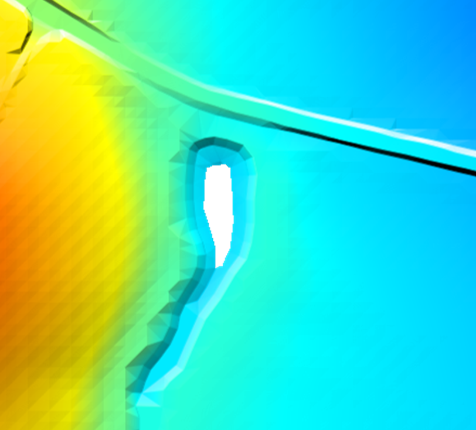 |
The .tgc command Set Zpt may be used to quickly and easily assign elevations to Zpts falling within these areas, however the limitations of the command mean the same elevation will be assigned to all null Zpts across the entire 2D domain. This may not be suitable in situations where there are multiple gaps in coverage or where the gap is located on steep terrain. Read GIS Z Shape with 2d_zsh polygons may instead be used to triangulate Zpt values based on the Zpt elevations of the polygon perimeter. |
| 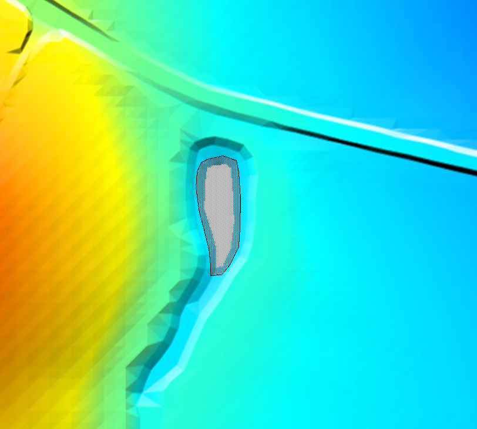 |
Import in an empty 2d_zsh GIS layer, and digitise a polygon around the gap in coverage as shown. Ensure there is a reasonable buffer around the null area. The attributes of the polygon may be left blank. Alternatively, a value may be entered in the “Shape_Width_or_dMax” attribute to control the maximum distance between intermediate points inserted around the polygon’s perimeter to interpolate elevations. When left blank, this distance is half the 2D cell’s size. |

|
This image shows the resulting _DEM_Z.flt check file. The _zsh_zpt_check layer can be used to view the final Zpt elevation assigned |
Example 2: Use of the NO MERGE and ADD Shape Options
The 2d_zsh NO MERGE option can be used to assign a single elevation to all Zpts falling within the 2d_zsh polygon (read by the Read GIS Z Shape command). An example of using the NO MERGE topography update feature is provided in TUFLOW Tutorial Module 2. This may be useful to set the elevation of a polygon to a known finished floor level of a proposed development. Digitise a polygon within an empty 2d_zsh GIS layer, and populate the “Z” attribute of each object with the desired elevation. Set the “Shape_Options” attribute to NO MERGE. The example below will assign an elevation of 42.1mAHD to all Zpts located within the 2d_zsh polygon.
Note that if the NO MERGE option is omitted and no points are snapped to the perimeter of the polygon, the Z attribute will be ignored and the Zpt elevations will be triangulated based on the Zpt elevations of the polygon perimeter.
Alternatively, to raise the polygon by a fixed value (i.e. to represent the slab height of a building) enter this value in the Z attribute and set the “Shape_Options” to ADD. An example of using the ADD topography update feature is also provided in TUFLOW Tutorial Module 2.

TUFLOW will add the value entered in the Z attribute to the existing Zpt elevations within the polygon. The entry within the figure to the left will raise Zpt elevations by 0.15m. The use of a negative value will lower the Zpt elevations by the value of the “Z” attribute. The _zsh_zpt_check layer can be used to view the elevation points (Zpts) that have been modified.
Example 3: Raising an Embankment
The ADD option may also be used when the 2d_zsh object has been digitised as a line. An example of using the ADD topography update feature is provided in TUFLOW Tutorial Module 2. Populate the Z attribute with the amount the embankment is to be raised by. Populate the “Shape_Options” attribute with ADD as shown in the second figure of Example 2 above. This will raise the existing Zpt elevations by the value of the Z attribute. By default, TUFLOW will assume a thin line, and only alter the ZH, ZU and ZV Zpt elevations of a cell. The “Shape_Width_or_dMax” attribute may be optionally specified to represent a THICK or a WIDE line (refer to Section ??).
Alternatively, if a 3D breakline has been digitised, the dZ attribute on the snapped points may be used to raise or lower the embankment. The dZ attribute increases or decreases the elevation of the point’s Z attribute by the amount of dZ. In the example below, a 3D breakline has been created by snapping points to either end of the line. The elevations along the line are determined by a linear interpolation of the Z attribute of the points. Entering a positive dZ value at each point will raise the elevations at the points by the amount of dZ at each point (0.2m for one of the points in the figure below). The elevations along the line are then interpolated based on these revised values. The _zsh_zpt_check layer can be used to view the final Zpt elevation assigned.


Example 4: Removing ridges from a poorly triangulated DEM.
| 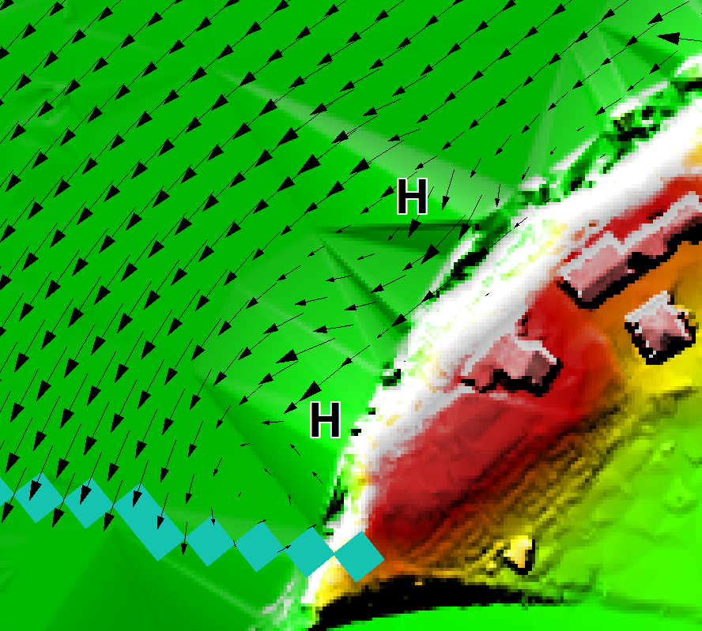 |
The image shows two false ridges indicated by the H letters. These were caused by a poor triangulation by the TIN software used to create the DEM. These ridges caused unrealistic flow patterns, as shown by the velocity vectors. Note, The blue cells at the bottom are the downstream boundary cells. |

|
This image is of the DEM_Z and _zpt_check check file layers from the TUFLOW simulation. This is how TUFLOW interprets the DEM data. The false ridges are clearly shown. |

|
To remove the ridges, import an empty 2d_zsh layer, and digitise a polygon around the ridges as shown. By default (i.e. using the default attribute values), the elevations assigned around the perimeter of the polygon are interpolated from the current Zpt values. One problem with this approach is that the elevations along the right-hand side (i.e. along the edge of the floodplain between Locations A and B) are interpolated from the high Zpts along this boundary. |

|
To solve this problem, digitise points either into the 2d_zsh layer or into a 2d_zsh…_pts layer that snap to the vertices of the polygon where the high elevations occur. Assign a Z attribute of -99999 to each point, as shown in the image. The -99999 indicates to not interpolate an elevation from the existing Zpts. Instead, the elevations at Locations A and B are used to interpolate elevations at vertices where -99999 has been assigned. |
| 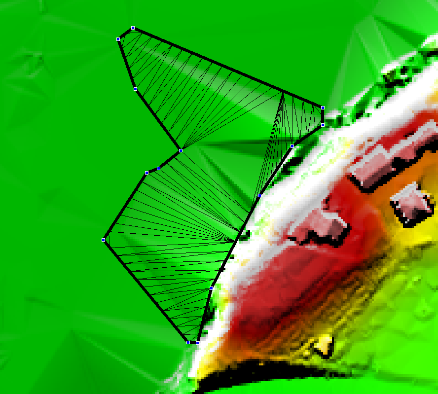 | Use Read GIS Z Shape to process the polygon and points and generate the TIN as shown in the image. The TIN can be viewed by importing the _sh_obj_check GIS layer. |
| 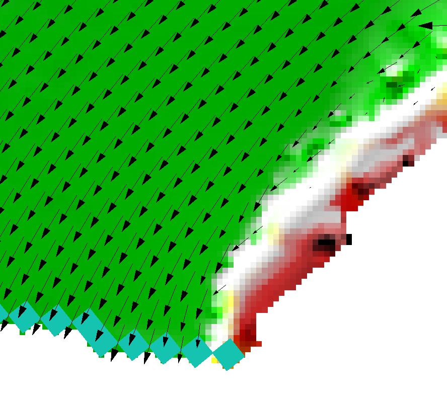 | This image shows the new DEM_Z check file after the above 2d_zsh layer has been applied. As can be seen, the ridges have been removed and the flow patterns are now realistic. |
Example 5: Highway Embankment Removal Example
The figures below present another example where a new highway, which exists in the DEM, needed to be removed because the calibration flood events occurred before the highway was built. Removal of the highway only required the digitising of a 2d_zsh polygon around the highway. All attributes were left as their defaults, and there was no need to specify any elevation points. This example then used an additional Z shape line and point feature to reflect the existing highways topography (using the method discussed in Example 3). Either Read GIS Z Shape or Create TIN Zpts can be used for this purpose.
| No. | Default GIS Attribute Name | Description | Type |
|---|---|---|---|
| 1 | Z |
Point: An elevation of -99999 has a special meaning when the point is snapped to a vertex of a polygon. The -99999 indicates to ignore the elevation at that vertex and of any automatically inserted vertices between that vertex and the two neighbouring vertices. Instead the elevations are based on the elevations of the neighbouring vertices. If a neighbouring vertex also has a -99999 point snapped to it, the next vertex is used, and so on. This feature is very useful, as illustrated in the example above. Line: If the ADD option is specified, the value entered is used to increase (positive ‘Z’ values) or decrease (negative ‘Z’ values) the elevation of the Zpt values by the amount specified (i.e. a value of 0.5 will raise existing Zpt values by 0.5m). Otherwise ignored. Polygon: If the ADD option is specified, the value entered is used to increase (positive ‘Z’ values) or decrease (negative ‘Z’ values) the elevation of the Zpt values by the amount specified. Otherwise ignored. |
Float |
| 2 | dZ |
Point: Line: Not used. Recommend setting to zero. |
Float |
| 3 | Shape_Width_or_dMax |
Point: Not used. Line (no TIN): Line (TIN): Polygon: |
Float |
| 4 | Shape_Options |
Point: Not used. Line or Polygon: MAX, RIDGE or RAISE: Only changes a Zpt elevation if the Z Shape elevation at the Zpt is higher. MIN, GULLY or LOWER: Only changes a Zpt elevation if the Z Shape elevation at the Zpt is lower. Line Only: Polygon Only: MERGE ALL: Ignores elevations from any points snapped to the perimeter and merges all perimeter vertices with the current Zpt values. NO MERGE: Does not merge the perimeter elevations with the current Zpt values. |
Char(20) |
7.3.5.3 Variable Z Shape Layer (2d_vzsh)
TUFLOW 2D model topography can be varied over time to simulate breaching of embankments, raising of flood defences during an event, or the filling of a river due to a landslide, by using Read GIS Variable Z Shape. The 2d_vzsh layer is used to define the final topographic shape at the end of the topography change period. As summary of the GIS layer attributes is provided in Table 55. The first four attributes of 2d_vzsh are the same as the 2d_zsh layer. They are used to define the finished state of the variable geometry. Additional attributes have been added to allow the user to define how/when the breach commences and for how long. The breach/fill can be triggered using a number of methods:
- At a specified time (example provided in TUFLOW Tutorial Module 10 - Part 1);
- When the water level reaches a specified height at a specified
(trigger) location (example provided in TUFLOW Tutorial Module 10 - Part 2); or
- When the water level difference between two triggers exceeds a specified amount.
Variable Z Shapes can be restored once or repeatedly. Examples would be a breach of a flood defence wall or levee that is reinstated 6 hours later, or a sand bar of a creek entrance that repeatedly opens and closes. To use the restore feature, two additional attributes Restore_Interval and Restore_Period are required as described below in Table 55. For a single restoration event, only these two additional attributes are required. To restore repeatedly, “REPEAT” must be specified in the Shape Options in column 4. Repeated restoration is only possible for the water level and water level difference trigger methods, as a time trigger will not be able to be reached on a second occasion.
Note, this variable geometry feature should be used instead of the 2d_bc VG option (unless the rate of change of the erosion/fill is non-linear) as 2d_vzsh layers are easier to define and manage.
| No. | Default GIS Attribute Name | Description | Type |
|---|---|---|---|
| 1 | Z | Same as for Table 54. | Float |
| 2 | dZ |
Same as for Table 54. |
Float |
| 3 | Shape_Width_or_dMax | Same as for Table 54. | Float |
| 4 | Shape_Options |
Point: TRIGGER or TRIGGER 1D: Indicates the point is not an elevation point, but a trigger location. The trigger must be given a name using the Trigger_1 attribute. TRIGGER 1D is required if a 1D node water level is used to trigger a 2D variable Z-Shape. The trigger point must be snapped to the 1D node or channel end in the 2d_vzsh layer to achieve this. Line or Polygon: Same as for Table 54. Except the ADD option is not supported. REPEAT: Specify this option for the variable Z shape to repeatedly function indefinitely based on the below trigger and restore attributes. Thin Line: NO MERGE: For thin lines (Shape_Width_or_dMax = 0), the final elevations along the line are as specified. If NO MERGE is not specified for a thin line, the final elevations are set to be the same as the current Zpt values plus the dZ value. REPEAT: Specify this option for the variable Z shape to repeatedly function indefinitely based on the below trigger and restore attributes. |
Char(20) |
| 5 | Trigger_1 |
Point: If Shape_Options is set to TRIGGER or TRIGGER 1D, enter the name of the trigger location. The name can contain any characters and can include spaces. Otherwise not used. Line or Polygon: To commence the failure at a specified time leave blank. To commence failure based on reaching a water level elsewhere in the model, enter the name of the trigger location. Thin Line: For thin lines there are two special options as follows. Specify DEPTH to have the failure commence once the depth of water adjacent to the cell side exceeds the amount specified for Trigger_Value. Specify DEPTH DIFF to have the failure commence once the difference in water level across the cell side exceeds the amount specified for Trigger_Value. |
Char(20) |
| 6 | Trigger_2 |
Point: Not used. Line or Polygon: The name of a second trigger location (only needed if the breach is to be initiated on a water level difference between two trigger locations). |
Char(20) |
| 7 | Trigger_Value |
Point: Not used. Line or Polygon: If Trigger_1 is blank, the simulation time in hours that the breach is to commence. If Trigger_1 is specified and Trigger_2 is left blank, the water level at Trigger_1 that needs to be reached to trigger the failure. If both Trigger_1 and Trigger_2 are specified, the water level difference between Trigger_1 and Trigger_2 that needs to be exceeded to trigger the failure. The water level difference is taken as the absolute of the difference between Trigger_1 and Trigger_2, so there is no need to specify a negative value. Thin Line: If “DEPTH” is specified for Trigger_1, the depth in metres adjacent to the cell side that needs to be exceeded to trigger the failure at the cell side. If “DEPTH DIFF” is specified for Trigger_1, the water level difference in metres across the cell side that needs to be exceeded to trigger the failure. For all of the above options the length units are metres if modelling in SI units, or feet, if using |
Float |
| 8 | Period |
Point: Not used. Line or Polygon: Time in hours over which the variation in Zpt elevations occurs. |
Float |
| 9 | Restore_Interval |
The time in hours between when the variable Z shape has finished altering the geometry and when to start restoring the Zpts back to their original values. Note: “REPEAT” must be specified in Column 4 to allow repeated triggering and restoration of the Variable Z Shape (for the water level and water level difference options), otherwise restoration will only occur once. |
Float |
| 10 | Restore_Period | Time in hours over which the variation in Zpt elevations occurs to restore the Zpts back to their original values. | Float |
Example 1: Variable Z Shape Example: Breaching of an Embankment
The image below shows an example of a 2d_vzsh layer. The solid magenta line is the polygon, the magenta dashed lines are lines used to enforce TIN breaklines, and the four magenta points all have an elevation of 41.0m. The Shape_Options attribute for the polygon was set to MIN (this means that the Zpt elevation can only be lowered (i.e. eroded), and the dashed lines have Shape_Options of TIN (to indicate that they are to be used for TIN generation, and not for Z lines). The vertices of the polygon that do not have a point snapped to them will be automatically assigned an elevation based on the existing Zpt values. The polygon vertices with the points snapped to them are assigned the elevation of the point (in this case, all at 41.0m). The elevation of the dashed lines will be constant at 41m as they are snapped to the 41m points.
The only other object in the layer is the yellow pin point labelled A. This is a trigger point. Its only attribute values are: TRIGGER for the Shape_Options attribute; and A for the Trigger_1 attribute. This sets the point as a trigger point and the “A” is the name of the trigger point. The magenta polygon also has attribute values of: A for Trigger_1 (this indicates that the erosion trigger is based on the water level at Trigger Location A); a Trigger_Value of 42.0 (i.e. when the water level at location A reaches 42m, start the erosion); and a Period value of 1.0 indicating that the erosion takes one hour to complete.

The final eroded Zpt values are based on the TIN created by TUFLOW (the grey triangles in the image below). The central section will be horizontal at 41m, sloping up either end to elevations based on the road level. The _vzsh_zpt_check layer is useful to view the Zpts affected by the variable Z shape. This layer is also shown in the image below. The green triangles indicate that the Zpt level is to be eroded, and the crosses indicate no change (this is because of the MIN Shape_Options). The final eroded Zpt values are labelled in the image below. Other useful attributes are also available in this layer.

The images below show the modelled breach which occurs using the example above. Each image is in half hour intervals. The colour shading is of the elevations (specify ZH as a Map Output Data Types to view the changes in ground level over time).
 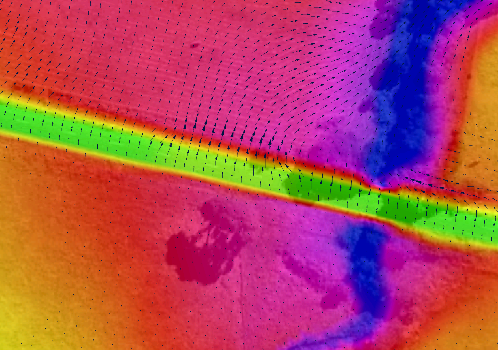
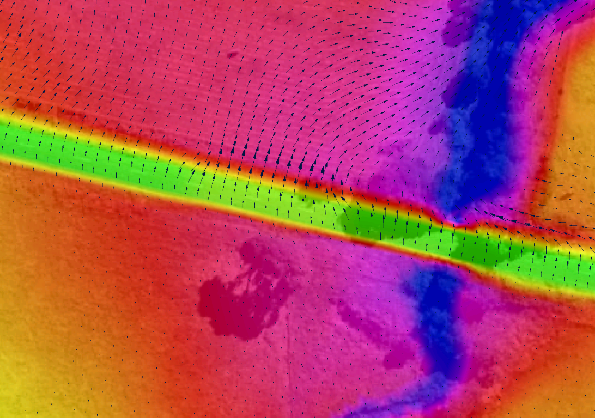


7.3.5.4 3D TIN Layers (2d_ztin)
TINs (triangulations) of elevation points and 3D lines within a polygon can be carried out using Create TIN Zpts. This is particularly useful for modifying the Zpt elevations where there have been, or are proposed, changes to the base DEM Zpt values.
Note, for large datasets it is likely to be much more efficient to use GIS or 3D surface modelling software to triangulate the data, and read triangulated data in a supported format (see Read TIN Zpts) or to convert to raster (see Read Grid Zpts).
The protocols applied to the Create TIN Zpts command are:
- A TIN is created for each polygon in the 2d_ztin layer.
- Any points found within a polygon are used when generating the TIN.
- Any lines are converted to points, and those points falling within
the polygon are used for the TIN creation. Lines are converted to
points as follows:
- All vertices (nodes) of the line are converted to points.
- The dMax attribute is used to insert additional vertices between
the line’s vertices. For example, if dMax is set to 10, then
additional intermediate vertices are inserted at least every 10
metres (or feet if using
Units == US Customary ) between the existing vertices where the distance between the existing vertices exceeds this value. If the dMax attribute does not exist or is zero, half the 2D domain’s Cell Size is used as the dMax value.
- If there are any points snapped to the line’s vertices, the
elevations of these points are used to set the elevations at all
the vertices generated along the line. In this way, a 3D
breakline effect can be produced within the TIN. If there are no
points snapped to the line, the line’s Z attribute elevation is
used giving the effect of a horizontal line.
- All vertices (nodes) of the line are converted to points.
- The perimeter of the polygon/TIN can either be merged with the
current Zpt values or have its own values as follows:
- If there are no points snapped to the perimeter of the polygon,
the elevations of the polygon’s perimeter vertices, and of any
automatically inserted vertices, are based on the current Zpt
values (i.e. the Zpt values assigned by any prior commands).
- If there are one or more points snapped to the polygon’s
perimeter vertices, the perimeter is not merged with the Zpt
values, and the elevations of the snapped points are used to
assign elevations to the perimeter vertices and any
automatically inserted vertices.
- The frequency of any automatically inserted points around the perimeter is controlled by the dMax attribute. If the dMax attribute does not exist or is zero, half the 2D domain’s Cell Size is used.
- If there are no points snapped to the perimeter of the polygon,
the elevations of the polygon’s perimeter vertices, and of any
automatically inserted vertices, are based on the current Zpt
values (i.e. the Zpt values assigned by any prior commands).
Models using the Create TIN Zpts functionality are provided in the Static Topography Updates Example Model Dataset on the TUFLOW Wiki.
A useful quality control option of Create TIN Zpts is the WRITE TIN option. If this option is specified, a SMS .tin file is written for each TIN generated, and the triangles are written to the _sh_obj_check layer. This means that the TIN can be cross-checked in SMS, viewed in 3D, and edited and modified if desired. Read TIN Zpts can be used to assign Zpt elevations from the modified SMS TIN.
A second argument to specify a GIS layer containing one or more polygons to clip the area of Zpts to be inspected can be used with the Read TIN Zpts command. Refer to Section ?? for more information.
| No. | Default GIS Attribute Name | Description | Type |
|---|---|---|---|
| 1 | Z |
Point: Elevation of the point. Line: Elevation of the line. Ignored if there are any points snapped to the line’s vertices. Polygon: Not used. |
Float |
| 2 | dMax (optional) |
Point: Not used. Line: Maximum distance between automatically created intermediate vertices. If set to zero or this attribute does not exist, half the 2D domain’s Cell Size is used. If less than zero no intermediate vertices are inserted. Polygon: Same as for Line above. |
Float |
7.3.5.5 3D Breakline Layers (2d_zln)
This is a legacy feature and it is recommended to use the Z Shape functionality (Section ??) instead. For details on this feature see Read GIS Z Line in Appendix ??.
7.3.5.6 Zpt Layers (2d_zpt)
This is a legacy feature, to define base elevations it is recommended to use the Read Grid Zpts functionality (Section ??) instead. For details on this legacy feature see Read RowCol Zpts in Appendix ??.
Similarly, Read GIS Zpts is also a legacy command. It is recommended to use the Z Shape functionality (Section ??) instead of it.
7.3.5.7 Using Multiple Layers and Points Layers
GIS layers used for Read GIS Z Shape, Read GIS Variable Z Shape, Create TIN Zpts, Read GIS Layered FC Shape, Read GIS Z Line (legacy), Read GIS Z HX Line (legacy) and Read GIS FC Shape (legacy) can be split into more than one layer to better manage the variety of data these commands sometimes require.
For example, one layer may contain the elevation points, another the TIN lines and polygons and another the 3D Z lines. This is useful in terms of managing the data, and especially when interrogating and/or viewing the data in GIS. It is a requirement of the shapefile format that the different geometries (points, lines and regions) are in separate shapefiles. The TUFLOW empty template files include the following filename suffixes to differentiate which files are suitable for point, line or region features.
- _P for point features (e.g. 2d_zsh_M03_002_P.shp)
- _L for line features (e.g. 2d_zsh_M03_002_L.shp)
- _R for region or polygon features (e.g. 2d_zsh_M03_002_R.shp)
This is optional for MapInfo users; the different geometries can occur in the same MapInfo file or can be separated if preferred.
A maximum of nine (9) layers per command line is allowed, and each layer is separated by a vertical bar (“|”). For example, to read a Z Shape layer which has both line and points, the command may be:
If using the GeoPackage format && is also used to specify more than one layer from a common database in the same command line. An example is provided below. See Section ?? for further details.
7.3.5.7.1 Point Only Layers
To minimise the number of attributes, some/all points may optionally be placed into a separate layer with less attributes as discussed below. This simplifies the datasets making them easier to manage and interrogate.
A layer is treated as a separate points layer if:
- It has less attributes than the minimum required for the command.
For most commands there is only one attribute for the points layer
(i.e. Elevation or Z) as described in Table 57. The
exception is Read GIS FC Shape, which
requires the first two attributes. This option requires that the
points layer be defined within the command line syntax. For example:
Read GIS Z Shape == gis\2d_zsh_M03_002_L.shp | gis\2d_zsh_M03_002_P.shp
- The points file uses the same filename as the associated line or
region file with the addition of “_pts” as a suffix to its filename
(for example 2d_zsh_M03_002_pts.shp will be automatically associated
with the line file 2d_zsh_M03_002.shp). This option is supported for
backward compatibility; however, it’s recommended that this option
not be used (it is preferable to enter the filename of the second
layer so that it is clear as to which layers are being used).
Read GIS Z Shape == gis\2d_zsh_M03_002.shp
The data processing logic for points layers is outlined below:
- The specified layer, 2d_zsh_M03_002.shp, is opened. This layer may
or may not contain elevation points. If any elevation points exist
they are used.
- A separate points layer can optionally be used to specify additional
points or all of the points. The layer can be specified in one of
two ways:
- Entering the pathname of the points layer after the main layer.
A “|” must be used to separate the two layers. The points layer
must be the second layer specified. For example:
Read GIS Z Shape == gis\2d_zsh_M03_002_L.shp | gis\2d_zsh_M03_002_P.shp - Alternatively, name the points layer the same as the main layer, but
with a “_pts” extension. If a layer exists with the “_pts”
extension, TUFLOW automatically assumes this layer is associated
with the main layer and includes all points within this layer when
applying the above commands. For this example, the layer would be
named 2d_zsh_M03_002_L_pts.shp.
- Entering the pathname of the points layer after the main layer.
A “|” must be used to separate the two layers. The points layer
must be the second layer specified. For example:
- The first approach (i) above prevails over the second (ii) if both
apply.
- If neither (i) or (ii) apply, TUFLOW assumes there is no separate points layer.
Multiple points layers can be specified. The points layer can be referenced in any location except for the first layer within the command line entry. For example, the below syntax will produce an error due to the points file being the first entry.
Incorrect:
Correct:
| No. | Default GIS Attribute Name | Description | Type |
|---|---|---|---|
| 1 | Z | Elevation (or change in elevation for ADD option) of the point. | Float |
7.3.6 Land Use (Materials)
7.3.6.1 Bed Resistance
The bed resistance values for 2D domains are created by using GIS layer polygons or rasters of different bed resistance zones. The default and recommended bed resistance formulation is Manning’s n. Manning’s n values can be varied with depth (as user specified curve or using the Log Law formula (see Section ??)) or varied with velocity-depth product (VxD).
For TUFLOW Classic, bed resistance can also be set to use either Manning’s M values (1/n) or Chezy coefficients using the Bed Resistance Values command in the .tcf file. As this is a TUFLOW Classic feature only, it is further discussed in Section ??.
The recommended approach is to use materials to define how the bed roughness varies over the model. Each material is defined by a positive integer ID which represents a different roughness category. GIS layers of land-use or vegetation often make excellent material layers. Examples of different material categories are river in-bank, bank vegetation, pasture, maintained grass, roads, buildings, forest, mangroves, etc. Each material is assigned a constant Manning’s n value, depth or VxD varying Manning’s n. The material layer can also be used to set rainfall losses (if using direct rainfall - see Section ??), fraction impervious, storage area and land-use hazard categories (see Section ??).
Material/roughness values are used by TUFLOW during conveyance calculations at the cell mid-sides (refer to Section ?? and ??). However, rainfall losses and fraction impervious are applied to the cell and not cell sides, therefore, materials ID values are sampled at both cell mid-sides and cell centres.
The most common approach is to digitise one or more 2d_mat materials layers (see Table 58) and assign Manning’s n values to the materials using Read Materials File. This approach allows the easy adjustment of Manning’s n values, for example during model calibration or sensitivity testing.
When creating the base 2d_mat layer, it is common practice to not digitise the most common or the most difficult to digitise material, and instead use the following data layering of commands in the .tgc file (see Section ??).
- Use Set Mat to set the most common material to all cells in a 2D domain.
- Use Read GIS Mat or Read Grid Mat to allocate the remaining material values.
The Read GIS Mat and Read Grid Mat commands may be used as many times as required to further modify the materials in parts of a 2D domain. Each subsequent dataset will overwrite the preceding assigned material value, as described in Section ??.
The default material value is zero. As a material value of zero is not allowed, every cell and cell-side must be assigned a material value using Set Mat, Read GIS Mat and/or Read Grid Mat in the .tgc file (it is good practice to always set a default materials value using the Set Mat as the first material command in the .tgc file). The assigned material ID values do not need to be contiguous but must be within the range 1 to 32,767.
| No. | Default GIS Attribute Name | Description | Type |
|---|---|---|---|
| 1 | Material | The material ID value referenced within a Materials File (see Section ??). | Integer |
7.3.6.2 Log Law Depth Varying Bed Resistance
At very shallow depths the Manning’s n value and/or equation may not be a reliable estimate of bed resistance. The Log Law or “Law of the Wall” approach offers a theoretically based derivation of resistance based on a bed shear analysis. This relationship along with benchmarking against flume test results was used by Boyte (2014) to derive the following equation that varies Manning’s n with depth based on the roughness height of the surface. A limiting Manning’s n value based on the n value that would normally be applied is also specified to transition to conventional n values at greater depths.
\[\begin{equation} n = \max_{}\left\lbrack \frac{\kappa y^{\frac{1}{6}}}{\sqrt{g}\ln\left( \frac{y}{z_{0}e} \right)},n_{limit}\ \right\rbrack \tag{38} \end{equation}\]
\[\begin{equation} z_{0} = \ \frac{k_{s}}{30} + \frac{0.11\nu}{U_{f}} \tag{39} \end{equation}\]
Where:
- \(k_s\) is the roughness height in m
- \(\kappa\) is typically in the range 0.38 to 0.42 (recommend 0.4)
- \(y\) is depth
- \(\nu\) is the kinematic viscosity and is set to 10-6 m2/s
- \(U_f\) is the friction velocity defined as \(\sqrt{Sgy}\) where \(y\) approximates \(A/P\) and \(S\) is the water surface slope
- \(n_{limit}\) is the limiting n value, ie. the Manning’s n value applicable to greater depths
Figure 49 illustrates how the equivalent Manning’s n varies with depth using the log law for a roughness height of 10mm (0.01m) that would be applicable to a small pebble bed. The different series are the variations in the slope, \(S\), where 0.001 is 0.1% slope, 0.02 is 2% slope and 0.1 is a 10% slope. As can be seen there is a significant variation in Manning’s n below 2cm (0.02m) and a trend to a n value of around 0.018, with only a minor variation due to slope.
In terms of applying a limiting n value, if, for example, \(n_{limit}\) was set to 0.02, then the Manning’s n value would not fall below 0.02.
Figure 50 shows a comparison using the Log Law versus a constant Manning’s n value (Boyte, 2014). The thesis investigated the use of the Law of the Wall for direct rainfall modelling using TUFLOW. The flow depths in this example range from 4 to 20cm and the roughness height, \(k_s\), was 3cm.
The Log Law Depth Varying Bed Resistance is activated by entering special characters in the 2nd column of the Materials File. See Section ?? and Table 59.
Figure 49: Example of Log Law Variation of Manning’s n with Depth
Figure 50: Example of Log Law versus Constant Manning’s n with Depth
7.3.6.3 Materials File
Materials file(s) contain information on a material’s roughness and, optionally, rainfall losses if using direct rainfall. The file is referenced within the .tcf file using Read Materials File and can be in one of two formats (.csv or .tmf). The .csv format is the recommended of the two options. It supports all functionality. The .tmf format does not. For example, the log law bed resistance option is only available via the .csv format. The .csv format also supports curves of Manning’s n versus depth.
More than one materials file may be specified by repeat occurrences of the command Read Materials File however, most models will use only a single materials file. Any combination of .tmf and .csv files can be used and up to 1,000 materials are allowed in total.
If a second argument is provided with Read Materials File, this value is used to factor all Manning’s n values. For example, the following command increasing all Manning’s n values by 10%:
7.3.6.3.1 .csv Format
The .csv format materials file is a comma delimited text file containing Manning’s n and other information for different materials (e.g. land-uses). The format is intended to be generated from an Excel file database of materials and associated data in a similar manner to BC databases (with the option of using the Excel TUFLOW Macro .xlam macros to export to the .csv format - the Excel TUFLOW Tools.xlam can be downloaded from here). The .csv can also be written from text editor if preferred.
The format of the materials.csv file is described in Table 59.
Note: The .csv format offers access to all materials features, whereas the .tmf format does not.
| No. | Description |
|---|---|
| 1 | Mat (Material ID) number, which must be an integer. |
| 2 |
Contains information on the bed resistance values (usually Manning’s n). The options available are:
|
| 3 | Sets the rainfall loss parameters using the initial loss/continuing loss option. The initial/continuing loss is entered as two comma delimited numbers in a similar manner to the third and fourth column values in the .tmf format. See Table 60. Refer to Section ??. |
| 4 | Reserved. |
| 5 | Defines the Storage Reduction Factor (SRF) value. If no fifth column entry exists, no SRF is applied. The default is an SRF of 0 (i.e. no change in storage). See Section ?? for more information. |
| 6 | Defines the Fraction Impervious of the overlying material type. The value entered should be a number from 0.0 to 1.0 where 0.0 is fully pervious and 1.0 is fully impervious. The default is a value of 0.0, assuming that the overlying material is 100% pervious. This feature is used to influence the amount of water that is infiltrated into the ground with the soil infiltration feature. Refer to Section ?? for more information. Note: This option works with the Soli Infiltration feature (see Section ??). It does not apply to materials rainfall losses (Column No 3 above) when applying direct rainfall (see Section ??). |
An example of a materials.csv is provided in Figure 51. To give a description of the material, this must be done after all inputs for that material and must be preceded by a “!” or “#”.
In the example shown in Figure 51:
- Material 1 has a constant n value of 0.03 and no rainfall loss
parameters.
- Material 5 varies n with depth using the four y1,
n1, y2, n2 values (as per .tmf format
approach) and no rainfall loss parameters.
- Materials 11 and 12 use depth vaying n sourced from a file called
Grass.csv. As only one column label has been specified, the y values
must occur under that label and the n values must occur in the next
adjoining column (see Figure 52). An IL of 10mm and CL of 2mm/h for both materials will be used for any direct rainfall.
- Materials 21 and 22 use depth vaying n sourced from a file called Trees.csv. As two column labels have been specified, the y and n values must occur under
the specified labels (see 52). An IL of 20mm
and CL of 2mm/h for Material 21, and 25 and 2 for Material 22, will be
used.
- Material 31 uses the log law approach (Section ??) with a roughness height of 0.01m, Kappa value of 0.4 and limiting Manning’s n of 0.02. IL = 0mm and CL = 0mm. The fraction impervious value is set to 1.0 (fully impervious).
- Material 32 use depth vaying n sourced from a file called Buildings.csv. In Buildings.csv Column A is used for y values and Column B for n values. IL = 0 and CL = 0. The storage reduction factor is set to 0.3 (30% reduction in storage) and the fraction impervious value is set to 1 (fully impervious).

Figure 51: Example of Materials .csv File Format

Figure 52: Example of the Grass.csv file read into the Materials.csv

Figure 53: Example of the Trees.csv file read into the Materials.csv
7.3.6.3.2 .tmf Format
The .tmf format is a text file containing Manning’s n and other information for different materials (e.g. land-uses). The file can contain comments using the “#” and/or “!” comment characters at any location. When comment characters are specified, the remainder of the line is ignored. The format of the materials .tmf file is described in Table 60. The first two columns are mandatory and must be specified. All other columns are optional. A maximum of 100 different materials can be specified in this format.
Note: The .tmf format does not offer all materials functionality, whereas the .csv format in the above section does.
| No. | Description |
|---|---|
| 1 | Mat (Material ID) number, which must be an integer. |
| 2 |
Manning’s n value. Note, if the four values in columns 5 to 8 are specified, the Manning’s n value in this column is ignored and not used. |
| 3 |
Sets the initial loss if using a direct rainfall boundary (via Read GIS RF or Rainfall Control File). Refer to Section ??. This does not apply to Global Rainfall BC. The units are mm, or if |
| 4 |
Sets the continuing loss rate if using a direct rainfall boundary (via Read GIS RF or Rainfall Control File). Refer to Section ??. This does not apply to Global Rainfall BC. The units are mm/hr, or if |
| 5 | y1 – The depth below which the Manning’s n value n1 (column 6) is applied. |
| 6 | n1 –The Manning’s n value applied below depth y1 (column 5). |
| 7 | y2 – The depth above which the Manning’s n value n2 (column 8) is applied. |
| 8 |
n2 –The Manning’s n value applied above depth y2 (column 7). Between y1 and y2, the Manning’s n value is interpolated between n1 and n2 according to Bed Resistance Depth Interpolation. When specifying values for columns 5 to 8, initial and continuing loss values must be specified in columns 3 and 4 as described above (use zero values if not using direct rainfall). |
| 9 | Reserved. |
| 10 | Defines the Storage Reduction Factor (SRF) value. The default is an SRF of 0. Enter 0 to ensure there is no change in 2D cell storage for the material type. See Section ?? for more information. |
| 11 |
Defines the fraction impervious of the overlying material type. The value entered should be a number from 0.0 to 1.0 where 0.0 is fully pervious and 1.0 is fully impervious. The default is a value of 0.0, assuming that the overlying material is 100% pervious. This feature is used to influence the amount of water that is infiltrated into the ground with the soil infiltration feature. Refer to Section ?? for more information. Note: This option works with the Soli Infiltration feature (see Section ??). It does not apply to materials rainfall losses (Column No 3 above) when applying direct rainfall (see Section ??). |
The .tmf file format is shown in the examples below. See Set Mat, Read GIS Mat and Read Grid Mat for assigning the material IDs to the 2D domains. These material values may also be used to define bed resistance values across 1D XZ cross-sections (see Section ??).
To include the initial loss (mm) and the continuing loss rate (mm/h) optionally enter a third and fourth value as shown below. If an IL is specified, a CL must also be specified otherwise an ERROR occurs. Both can be omitted, in which case, they are both set to zero.
To vary n values with depth (m) using two pairs of values optionally enter values in the fifth to eighth columns as shown below in lines 2 and 3 (Materials 2 and 11) below. IL and CL values must be entered (use zero if not relevant). If depth varying manning’s n is not used, column 5 to 8 should be left blank, not set to zero.
To reduce the storage of cells, enter a SRF value in the tenth column as shown in line 7 for Material 15 below. The example shown reduces the storage of all cells with Material ID of 15 by 20%. Note that a value of -1 has been entered for the ninth column as this field has been reserved. If not used, specify 0 to ensure no change in storage for the material.
To specify a fraction impervious, enter a value between 0.0 and 1.0 in the eleventh column as shown in line 4 for Material 12 below. The example shown partially restricts the rate of infiltration by applying a fraction impervious of 0.1 or 10%.
7.3.6.4 Rainfall Losses
Rainfall losses applied through the Materials file (.tmf or .csv format) remove the loss depth from the rainfall before it is applied as a boundary on the 2D cells. Rainfall losses are ideal for modelling situations in which water is prevented from reaching the ground, such as through the interception by trees.
Note that the ILCL rainfall losses are different to the ILCL infiltration losses that can be applied using the .tsoilf file (refer to Section ??). The ILCL soil infiltration losses will infiltrate ponded water into the ground. It is possible to use both methods in the same simulation – for example, rainfall that doesn’t reach the ground would be modelled as a material IL/CL (applied as a loss to the rainfall) and infiltration into the ground as IL/CL via soil types. The log file (see Section ??) will report the material and soil properties separately as shown in the example below:
Example Material Properties:
IL = 1.0mm, CL = 0.0mm/h
Landuse Hazard ID not set.
SRF (Storage Reduction Factor) = 0.
Fraction Impervious = 0.
Example Soil Properties:
HydCond = 117.8 mm/hr
Porosity = 0.417
Initial Moisture = 0.2
Soil Capacity = 0.217
Specifying the “fraction impervious” on the material allows the materials and the soils to be independent (i.e. the same soil can be present under both road and forest). This fraction impervious only applies to the infiltration into the soil, not to the Materials file rainfall losses.
7.3.7 Infiltration
Three methods are available to infiltrate ponded water from the surface into the ground:
- Green-Ampt (GA);
- Horton (HO); and
- Initial Loss/Continuing Loss (ILCL).
When using TUFLOW HPC, it is possible to model multiple vertical groundwater layers, as well as enable horizontal flow of groundwater. As these features are only available in TUFLOW HPC, they are discussed in Section ??.
All three methods mentioned above monitor the amount of water infiltrated and if the ground becomes saturated, infiltration ceases. The amount of water that can be infiltrated depends on:
- The infiltration approach and soil parameters used for the top most
(infiltration) soil layer.
- The number, thickness, porosities, and initial moisture of the
groundwater layers.
- The fraction impervious value of the overlying material layer.
The cumulative infiltration data is stored and computed at cell centres. As such all soil data and groundwater layer geometry is sampled from the GIS / Grid layers at cell centres. Likewise the material “fraction impervious” data is sampled at cell centres (unlike the Manning’s values which are sampled at face centres).
The following .tgc commands are used to set the ID for the soil type referenced in the TUFLOW soils file (.tsoilf) (Section ??):
- Set Soil;
- Read GIS Soil; and
- Read Grid Soil.
Each of these commands has the option of specifying which soil layer(s) the command applies to. Note that 2D infiltration is activated by the occurrence of one of these commands. If none of the commands exists for a 2D domain, soil infiltration does not occur for that domain.
If soils are specified, the soil ID for each cell are written to the _grd_check layer. The .tlf file contains the parameters for each Soil ID.
7.3.7.1 Infiltration Layer
Only wet 2D cells can infiltrate water into the ground. If using soil infiltration with a single groundwater layer, the default groundwater depth is infinite. The depth (thickness) of the groundwater layer can be set globally using the following commands:
They can also be set spatially with the following GIS and Grid commands:
- Read GIS Soil Thickness
- Read GIS Soil Base Elevation
- Read Grid Soil Thickness
- Read Grid Soil Base Elevation
The soil thickness sets the layer depth from the surface elevation. The soil base elevation sets the absolute elevation of the bottom of the layer. If both methods are specified for a given grid cell, the highest of the two will be adopted. The input units should be in metres or feet. To set an initial groundwater level within the soil layer, see Section ??.
In releases prior to 2023-03, the groundwater level (or depth) was set to represent a water table. For backward compatibility, it is still possible to the set a water table, using these commands:
The amount of water that enters the soil is also dependent on the fraction impervious value of the overlying material layer. The default is that the overlying material is 100% pervious (i.e. 0% impervious). However, if, for example, a concrete parking lot overlies a sandy soil, the imperviousness of the parking lot can be specified as 100% (i.e. totally), or 90% (i.e. partially) restrict the rate of infiltration. This is described in the materials file in Section ??.
If using TUFLOW HPC’s SGS functionality (Section ??), cells can be considered “partially wet”. This necessitated options for factoring down the rate of infiltration into the topmost groundwater layer, the methods are discussed in Section ??.
7.3.7.1.1 Green-Ampt (GA)
The Green-Ampt approach varies the rate of infiltration over time based on the soil’s hydraulic conductivity, suction, porosity and initial moisture content. The method assumes that as water begins to infiltrate into the soil, a line develops differentiating between the “dry” soil (with moisture content\(\ \theta_{i}\)) and the “wet” soil (with moisture content equal to the porosity of the soil η). As the infiltrated water continues to move through the soil profile in a vertical direction, the soil moisture changes instantly from the initial content to a saturated state. This concept is presented in Figure 54.
Figure 54: Green-Ampt Model Concept2
The basic form of the Green-Ampt equation is expressed as follows:
\[\begin{equation} f(t) = K\left( 1 + \ \frac{\mathrm{\Delta}\theta\left( \varphi + h_{0} \right)}{F(t)} \right) \tag{40} \end{equation}\]
Where:
- \(t\) = time
- \(K\) = saturated hydraulic conductivity
- \(\mathrm{\Delta}\theta\) = defined as the soil capacity (the difference between the saturated and initial moisture content)
- \(\varphi\) = soil suction head
- \(h_{0}\) = depth of ponded water
- \(F(t)\) = cumulative infiltration calculated from:
\[F(t) - \ \mathrm{\Delta}\theta\left( \varphi + h_{0} \right)\ln\left( 1\ + \ \frac{F(t)}{\mathrm{\Delta}\theta\left( \varphi + h_{0} \right)} \right) = Kt\]
The TUFLOW Wiki provides a detail description of the various Green-Ampt parameters, including how each influences the soil infiltration behaviour.
United States Department of Agriculture (USDA) soil types have been hardwired into TUFLOW and are presented in Table 61, along with the soil parameters. Alternatively, it is possible to define a customised soil type by specifying user defined values as shown in Table 62.
| USDA Soil Type | Suction (mm) | Suction (inches) | Hydraulic Conductivity (mm/hr) | Hydraulic Conductivity (in/hr) | Porosity (Fraction) |
|---|---|---|---|---|---|
| Clay | 316.3 | 12.453 | 0.3 | 0.012 | 0.385 |
| Silty Clay | 292.2 | 11.504 | 0.5 | 0.020 | 0.423 |
| Sandy Clay | 239.0 | 9.409 | 0.6 | 0.024 | 0.321 |
| Clay Loam | 208.8 | 8.220 | 1.0 | 0.039 | 0.309 |
| Silty Clay Loam | 273.0 | 10.748 | 1.0 | 0.039 | 0.432 |
| Sandy Clay Loam | 218.5 | 8.602 | 1.5 | 0.059 | 0.330 |
| Silt Loam | 166.8 | 6.567 | 3.4 | 0.134 | 0.486 |
| Loam | 88.9 | 3.500 | 7.6 | 0.299 | 0.434 |
| Sandy Loam | 110.1 | 4.335 | 10.9 | 0.429 | 0.412 |
| Loamy Sand | 61.3 | 2.413 | 29.9 | 1.177 | 0.401 |
| Sand | 49.5 | 1.949 | 117.8 | 4.638 | 0.417 |
The 2023-03 release introduces a slight change to the soil moisture
initialisation which impacts the computation of the Green-Ampt
infiltration rate. In previous TUFLOW releases, the initial moisture was
used to revise the soil porosity downwards, and the cumulative
infiltration was initialised to zero. In the 2023-03 release the soil
porosity is not modified, and the cumulative infiltration is initialised
as the lesser of the initial moisture fraction and the soil porosity,
times the thickness of the layer. These two approaches produce slightly
different results for the infiltration rate with the Green-Ampt method.
The new approach is perhaps more logical, and was necessary for the
purpose of initialising to a groundwater table. If the previous approach
is required, and the model has only one soil layer and no horizontal
advection, then it can be selected by using the
7.3.7.1.2 Horton (HO)
The Horton approach to infiltration uses the following equation:
\[\begin{equation} {f = f}_{c} + \left( f_{0} - f_{c} \right)e^{- kt} \tag{41} \end{equation}\]
Where:
- \(f_0\) is the initial infiltration rate in mm/hr or inches/hr (if using
Units == US Customary )
- \(f_c\) is the final (indefinite) infiltration rate
- \(t\) is time in hours (period of time that the cell is wet)
- \(k\) is the Horton decay rate.
If an initial loss (IL) is specified, the initial loss is applied first, followed by the Horton infiltration. Figure 55 shows an example of how the infiltration rate varies over time for \(f_0\) equal to 3, \(f_c\) equal to 1 and \(k\) equal to 0.1.

Figure 55: Example of Horton Infiltration Rate over Time
7.3.7.1.3 Initial Loss/Continuing Loss (ILCL)
The Initial Loss/Continuing Loss (IL/CL) method is a more simplistic approach compared to the Green-Ampt and Horton infiltration methods. The IL/CL method infiltrates water based on an initial volume (at any rate) then transitions to a constant rate after the initial loss volume is exceeded.
Note that the IL/CL infiltration is separate to the IL/CL materials values used to generate excess rainfall for direct rainfall simulations (refer to Section ?? for further information).
7.3.7.2 Soils File (.tsoilf)
Soils infiltration is applied to the model by defining a soils (.tsoilf) file, which is read into the .tcf using the Read Soils File command. Table 62 presents the parameters of the .tsoilf file and Figure 56 shows an example of a completed file. A number of example models demonstrating the various soil options are available on the TUFLOW Wiki - Soil Options. The soils (.tsoilf) file is similar to the materials file where you assign a positive integer ID to each soil, define the infiltration method (options are “NONE”, “GA”, “HO” and “ILCL”) followed by the soil parameters as the remaining values. The Porosity (saturated moisture content), Initial Moisture (fraction of the soil that is initially wet), Max Ponding Depth and Horizontal Hydraulic Conductivity are all optional with default values of 1.0, 0.0, 0.0 and 0.0 respectively.
Note: Table 62 does not include the additional attributes (in regards to horizontal advection) and soil type (convection) available when using TUFLOW HPC. For groundwater modelling including horizontal and vertical subsurface fluid movement, refer to Table 70 instead.
| Column No. | No Intriltration | Green-Ampt | Green-Ampt | Horton | Initial/Continuing Loss |
|---|---|---|---|---|---|
| 1 | Soil ID | Soil ID | Soil ID | Soil ID | Soil ID |
| 2 | NONE | GA | GA | HO | ILCL |
| 3 |
USDA Soil Type (see Table 61) |
Suction (mm or in) |
Initial Loss (mm or inches) |
Initial Loss (mm or inches) |
|
| 4 |
Initial Moisture (Fraction) |
Hydraulic Conductivity (mm/h or in/h) |
Initial Loss Rate (\(f_0\)) (mm/h or in/h) |
Continuing Loss (mm/h or in/h) |
|
| 5 |
Max Ponding Depth (m or ft) |
Porosity (Fraction) |
Final Loss Rate (\(f_c\)) (mm/h or in/h) |
Porosity (Fraction) |
|
| 6 |
Initial Moisture (Fraction) |
Exponential Decay Rate (k) (h-1) |
Initial Moisture (Fraction) |
||
| 7 |
Max Ponding Depth (m or ft) |
Porosity (Fraction) |
|||
| 8 |
Initial Moisture (Fraction) |
Note for the Green-Ampt method:
- the initial moisture and porosity values in Table 62 above are fractions. The soil capacity is defined as the difference between the saturated moisture content (porosity) and the initial moisture content, hence the initial moisture should not exceed the porosity otherwise the soil capacity is set to zero and no infiltration will occur for that soil type. A WARNING 2508 is issued if this occurs.
- the max ponding depth value is an optional value that can be used, if desired, to set a limit for the depth of ponded water (\(h_0\)) value used in the Green-Ampt equation (40). The minimum of the water depth and the max ponding depth value is used as the \(h_0\) value. The default max ponding depth value is 0, to be consistent with the basic form of the Green-Ampt equation, as hydrology models do not necessarily have a depth calculated at cells.

Figure 56: Example Soils .tsoilf File Format
One or more soils need to be specified globally and/or via GIS layers/raster grids to activate the infiltration feature. The first attribute of the GIS layer/s must be the Soil ID referenced within the .tsoilf file, in the same way that a 2d_mat layer references a Material ID stored within the materials .tmf or .csv file.
| No. | Default GIS Attribute Name | Description | Type |
|---|---|---|---|
| 1 | Soil | The soil ID value referenced within a Soils File (see Table 62). | Integer |
Each soil type can have a different infiltration method and infiltration parameters assigned to it, including a no infiltration option, as shown in Table 62. Other parameters that can optionally be set are:
- The imperviousness of the surface (see Fraction Impervious parameter
within the materials definition in Table 60 or Table 59); and
- Groundwater or impervious level beneath the ground surface (refer to Section ??).
The current limit to the number of soils types is 1,000 for TUFLOW classic simulations and 255 for TUFLOW HPC simulations.
7.3.8 Hydraulic Structures
7.3.8.1 Introduction
Bridges, box culverts and other structures that constrict flow can be modelled in 2D directly, rather than using 1D elements, provided the flow width of the structure is of a similar or larger size than the 2D cell size. Cells are modified in their height (invert and obvert) and width. For bridges, additional losses associated with piers and flow reaching the underside of the deck are specified. For box culverts, the additional resistance for vertical walls is specified. Additional form losses (energy head losses) can be specified for all flow constrictions.
Weir flow (across levees and other embankments) is modelled in 2D domains by default, this is handled differently between TUFLOW Classic and TUFLOW HPC. Refer to Sections ?? and ?? respectively.
Modelling hydraulic structures in 2D domains must be carried out with a good understanding of the limitations of different approaches and the different flow regimes possible. The modeller must understand why and where the energy losses occur when assigning form losses to a 2D cell or contraction and expansion losses to a 1D element (Syme, 2001b).
It is important to note that contraction and expansion losses associated with structures are modelled differently in 1D and 2D schemes. 1D schemes rely on applying form loss coefficients, as they cannot simulate the horizontal or vertical changes in velocity direction and speed. 2D schemes model these horizontal changes and, therefore, do not require the introduction of form losses to the same extent as that required for 1D schemes. 2D schemes still however require the introduction of additional form losses since they do not model losses in the vertical or fine-scale horizontal effects (such as around a bridge pier). See Syme (2001b) for further details.
The following webinars by Bill Syme and Greg Collecutt (two TUFLOW Developers) discuss the theory behind the energy losses and affluxes modelling associated with hydraulic structures.
Additionally, the 2D Hydralic Structures Wiki Page contains information regarding 2D hydraulic structures, including theory, setup and Frequently Asked Questions (FAQs).
It is recommended that the losses through a structure be validated through:
- Calibration to recorded information (if available).
- Cross-checked using desktop calculations based on theory and/or standard publications (e.g. “Hydraulics of Bridge Waterways” (Bradley, 1978) or “Guide to Bridge Technology Part 8, Hydraulic Design of Waterway Structures” (Austroads, 2018).
- Crosschecked with results using other hydraulic software.
To validate structure flows and energy losses:
- Specify time-series output (PO) lines of flow (Q_) and flow area (QA)
across the structure (see Section ??). Upstream and
downstream water levels may also be specified using PO points or
extracted from the map (e.g. XMDF) output.
- Using the upstream and downstream water levels, determine whether flow
is upstream or downstream controlled and estimate the flow using
theoretical equations or other methods.
- Using publications such as “Hydraulics of Bridge Waterways”
(Bradley, 1978) or “Guide to Bridge Technology Part 8, Hydraulic
Design of Waterway Structures” (Austroads, 2018), determine the energy
loss coefficient and compare this with the total energy loss
calculated in the model. The total energy loss is given below.
Clearly, any energy losses associated with bed resistance (e.g.
Manning’s equation) need to be allowed for by subtracting this term
from the calculated head difference \({(h}_{1} - h_{2})\).
\[\zeta_{total} = {(h}_{1} - h_{2})\frac{2g}{V^{2}}\]
Where:- \(\zeta_{total}\) = total energy loss
- \(h_{1}\) = upstream head
- \(h_{2}\) = downstream head
- \(V\) = depth and width averaged velocity (i.e. \(\frac{Q\_}{QA}\))
- \(\zeta_{total}\) = total energy loss
Table 64 lists the recommended approaches for modelling 1D and 2D structures using TUFLOW. This is discussed further in the following paragraphs.
| Structure | 1D Approach | 2D Approach |
|---|---|---|
|
Box Culvert (For culverts with a steep slope, use a 1D element) |
OK | OK |
| Circular Culvert | OK | N/A |
| Bridge | OK | OK |
| Weirs | OK | OK |
1D Approach
1D structures are discussed in Section ??. 1D modelling is the preferred approach where the total structure width is less than one or two 2D cells. Entry and/or exit losses are defined for each structure. Testing has shown that these losses may need to be reduced where the structure width is significant compared with the cell size (Syme, 2001b).
1D structures can be linked to the 2D domain using either an SX or HX connection, as outlined in (see Section ??). The influence of these connection types on the modelled flow behaviour is shown in Figure 59.
SX Link: Momentum is not transferred into or out of the 1D element to/from the 2D domain. “Suppressed” flow patterns in the 2D domain occur at the structure outlet when using 1D elements, especially if the structure width is significant compared with the cell size. The water tends to spread, rather than jet out, as there is no inertia across the link. The effect of this is illustrated in Figure 58, which shows the effect on flow patterns and the preservation of inertia across 1D/2D links when modelling a structure. Figure 58 (red velocity arrows) is that using SX links, whilst Figure 57 (green arrows) is that using a fully 2D solution. As can be seen, using a SX link the water tends to spread from the structure outlet, as opposed to forming a jet as in the fully 2D solution which is conserving momentum. When using the SX link, a jet like effect can be created using “wing walls” in the 2D domain at the structure outlet by assigning flood free elevations to the ZU and ZV Zpts either side of where the 1D element discharges into the 2D domain.
HX Link: Momentum is not transferred into or out of the 1D element to/from the 2D domain, however the velocity field across the HX link is assumed to be undisturbed. Provided the HX link is appropriately located (i.e. perpendicular to the flow field) this produces the effect of preserving momentum, as illustrated by the dark blue arrows (Figure 59). Use of HX links at a structure may require a smaller 1D timestep than that required by a SX link.
2D Approach
2D representation of structures is preferred where the total structure width is greater than one or two 2D cells. The flow area must be adequately represented by the 2D Zpts and any adjustments to cell widths (see Section ?? and ??. The head drop across the structure during different flow regimes should be validated against other methods and/or literature. Some additional form losses are normally required to achieve correct head drop (see Syme (2001b)). Momentum is transferred through the structure as shown in the top image (green arrows) in Figure 57, providing more realistic flow patterns than using a 1D element with a SX link, as illustrated by the middle image (red arrows) in Figure 58.

Figure 57: Flow patterns using 2D FC cells (i.e. a fully 2D solution)
Figure 58: Flow patterns using a 1D element connected to 2D SX links

Figure 59: Flow patterns using a 1D element connected to 2D HX links
7.3.8.2 2D Bridge Structures (2d_bg)
Modelling bridge structures in the 2D domain is possible using the BG Shape input layer (2d_bg). The 2d_bg layer facilitates the modelling of bridge structures based on research on energy losses (Collecutt et al., 2022). This method is similar to the Layered Flow Constrictions (described below in Section ??), however, some key updates have been made. The layers in a 2d_bg are called the “pier layer” and the “super structure layer”, which consists of the “deck layer” and the “rail layer”.
Bridges can be defined as either a line or polygon GIS feature using the .tgc command Read GIS BG Shape. The layer attribute description is provided in Figure 60 and Table 65.
Points can be used to spatially vary the bridge soffit, deck depth and rail depth, with the BG Shape points input layer (2d_bg_pts). The layer attribute description is provided in Table 66. This can be used to model an arch bridge or sloping deck. The point objects can be placed in a separate layer to the line or polygon GIS features.
The 2d_bg layer adjusts the FLC value in the vertical as follows:
\[\zeta_{total} = \left( \zeta_{pier} + \zeta_{SuperS}\frac{y_{SuperS}}{D_{IP}} \right)\frac{(y_{pier} + y_{SuperS})}{y_{total}}\]
Where:
- \(\zeta_{pier}\) = FLC of the pier layer.
- \(\zeta_{SuperS}\) = FLC to the superstructure layer.
- \(y_{SuperS}\) = depth of water in the superstructure layer (cannot exceed
- \(D_{IP}\)).
- \(D_{IP}\) = depth to the inflection point from the bridge soffit.
- \(y_{pier}\) = depth of water in the pier layer (cannot exceed
- \(D_{pier}\)).
- \(D_{pier}\) = depth of the pier layer, i.e. from the bed elevation to the bridge soffit.
- \(\zeta_{total}\) = overall form loss coefficient applied
The vertical distribution of the form loss coefficient has the following characteristics:
- Water level below the deck layer: The same result as the 2d_lfcsh
approaches, i.e. a constant form loss based on that specified for the
pier layer (\(\zeta_{pier}\)) is applied.
- Water level between the deck soffit and the inflection point: The FLC
value is linearly increased from \(\zeta_{pier}\) to
\(\zeta_{pier} + \zeta_{SuperS}\). The observations from the CFD and the
field measurement indicate the inflection point is located around 1.6
times the bridge deck depth above the bridge soffit. The “Inflection
Depth” (\(D_{IP}\)) is assumed as:
\[D_{IP} = {IPf}_{SuperS}\left( D_{deck}\phi_{Deck} + D_{Rail}\phi_{Rail} \right)\]
Where:- \({IPf}_{SuperS}\) = A factor to set the elevation of the inflection point
(IP).
- \(D_{deck}\) = depth of the bridg deck layer.
- \(\phi_{Deck}\) = blockage of the deck layer.
- \(D_{Rail}\) = depth of the rail layer.
- \(\phi_{Rail}\) = blockage of the rail layer.
- \({IPf}_{SuperS}\) = A factor to set the elevation of the inflection point
(IP).
- Note that the effect of partial blockage at the rail layer is
considered by adding the rail layer depth (\(D_{Rail}\)) to the
inflection depth proportionally based on the rail layer blockage
(\(\phi_{Deck}\)).
- Above the inflection point the FLC gradually reduces with increasing depth (in a similar manner to the 2D Layered Flow Constrictions METHOD B and METHOD C approaches). This is to simulate the transition to drowned flow and tendency to zero energy losses with increasing depth over the bridge deck.

Figure 60: 2D BG Shape Attributes and Vertical Distribution of Form Loss Coefficient
The 2023-03-AD build implemented three extra approaches to adjust the FLC value between in the deck soffit and the inflection point:
- LINEAR: the default option introduced above. The depth averaged FLC value is linearly increased from the bottom of the bridge deck to the inflection point. After the inflection point it gradually reduces.
- LINEAR-CONSTANT: the depth averaged FLC is linearly increased from the bottom of the bridge deck to the top of the bridge deck. Between the top of the bridge deck and the inflection point, the FLC is kept constant. After the inflection point it gradually reduces.
- PARABOLIC: the depth averaged FLC is increased using a parabolic function from the bottom of the bridge deck to the inflection point. After the inflection point it gradually reduces.
- INVERTED-PARABOLIC: the depth averaged FLC is increased using an inverted parabolic function from the bottom of the bridge deck to the inflection point. After the inflection point it gradually reduces.
This approach can be changed for individual BG structure using the Options attribute (see Table 65). The vertical profiles of the depth averaged FLC values applied by the four methods are illustrated in the figure below:
Figure 61: Depth Averaged FLC Applied Using Four Adjustment Approaches
Other key features of the BG layer that are different from the Layered Flow Constriction are:
- The BG layer does not apply geometry updates. This not only offers
simplicity, but also is a desirable option considering that the size
of TIN polygons used to modify the bridge bed elevations are often
different from the size of polygon used to select BG cell faces.
- For a line layer a “Deck_Width” value of zero sets the layer as a thin
line. It selects one row of faces in the direction of flow, and the
FLC value is applied to the faces unchanged. A “Deck_Width” value
larger than zero sets the layer as a thick line that selects a whole
cell, i.e. two faces in the direction of flow. The FLC values at the
faces are divided by two. The wide line feature is not supported by
the BG layer. BG polygon shapes are recommended if more than 3 rows of
faces must be selected.
- For a polygon layer, the “Deck_Width” defines the bridge width in the
predominant direction of flow. This value is used to distribute the
total FLC value to the selected faces, i.e.:
\[\zeta_{face} = \zeta_{total} \times Deck\_Width \times Cell Size \] This means users no longer need to convert the FLC value to “form loss per metre”, which is required by the Layered Flow Constrictions polygons.
The overall blockage of the face is calculated using the same method as the Layered Flow Constriction:
\[\phi_{total} = \frac{{(y}_{pier}\phi_{pier} + y_{deck}\phi_{deck} + y_{rail}\phi_{rail})}{y_{total}}\]
Where:
- \(\phi_{n}\) = layer n blockage.
- \(y_{n}\) = layer n water depth (set to zero if dry and cannot exceed
depth of layer).
- \(\phi_{total}\) = overall cell face blockage applied.
The FLC value applies an energy loss across 2D cell faces as:
\[\mathrm{\Delta}h = \zeta_{total}\frac{V^{2}}{2g}\]
where \(V\) is the 2D cell face velocity in the presence of the blockage. When setting the blockage values, considerations need to be taken into account whether the source of the FLC value is based on the approach velocity (the velocity in the absence of piers blockage) or structure velocity (the velocity with area blocked out by the piers). For example, Hydraulics of Bridge Waterways (Bradley, 1978) or Guide to Bridge Technology (Austroads, 2018) derives FLC value based on the cross-sectional averaged velocity in the absence of piers, and thus it is recommended to set the Layer 1 blockage value as zero (0). For more information, please see the 2D Hydraulic Structures TUFLOW Wiki page.
| No. | Default GIS Attribute Name | Description | Type |
|---|---|---|---|
| 1 | ID | Unique identifier up to 32 characters in length. It may contain any character except for quotes and commas, and cannot be blank. As a general rule, spaces and special characters (e.g. “\”) should be avoided, although they are accepted. The same ID can be used for a channel and a node, but no two nodes and no two channels can have the same ID. | Char(32) |
| 2 | Options | This attribute can be used to overwrite the global setting specified with the .tcf command BG FLC Default Approach to change FLC calulation method individually. | Char(32) |
| 3 | Pier_pBlockage |
The percentage blockage of the pier Layer. For example, enter ‘5’ for a blockage of 5%. Note: there is no need to apply a blockage value if the FLC is estimated based on the approach velocity (the velocity in the absence of piers). For more discussion, please see the TUFLOW Wiki page on the 2D Hydraulic Structures. |
Float |
| 4 | Pier_FLC | Pier layer form loss coefficient. | Float |
| 5 | Deck_Soffit | The elevation of the bridge soffit (m or ft). | Float |
| 6 | Deck_Depth | The thickness of the bridge deck (m or ft). | Float |
| 7 | Deck_Width |
Line: If equal to zero, sets the layer as a thin line and selects one row of faces in the direction of flow. The FLC value is applied to the faces unchanged. If larger than zero, sets the layer as a thick line that selects a whole cell, i.e. two faces in the direction of flow. The FLC values at the faces are divided by two. Polygon: Defines the bridge width in the predominant direction of flow (m or ft). This value is used to distribute the total FLC value to the selected faces. |
Float |
| 8 | Deck_pBlockage | The percentage blockage of the deck layer. Enter ‘100’ for a solid bridge deck obstruction. | Float |
| 9 | Rail_Depth | The depth of the rail layer (m or ft). | Float |
| 10 | Rail_pBlockage | The percentage blockage of the rail layer. | Float |
| 11 | SuperS_FLC | The combined form loss coefficient for the deck and the rail layers. Two layers are treated as a single “super structure” layer in this new bridge method. | Float |
| 12 | SuperS_Ipf | A factor to set the elevation of the inflection point (IP) at which the transition from pressure flow to drowned flow commences. The default value is 1.6. | Char(64) |
| 13 | Cf | A calibration factor used to adjust the automatically generated FLC (default = 1.0). | Float |
| No. | Default GIS Attribute Name | Description | Type |
|---|---|---|---|
| 1 | Deck_Soffit | The elevation of the bridge soffit (m or ft). | Float |
| 2 | Deck_Depth | The thickness of the bridge deck (m or ft). | Float |
| 3 | Rail_Depth | The depth of the rail layer (m or ft). | Float |
7.3.8.2.1 Automatic Generation of Superstructure FLC
The 2023-03-AD build implemented a feature to automatically generate the superstructure FLC value based on the CFD benchmarking study (Collecutt et al., 2022) if the SuperS_FLC attribute is left blank.
- NONE: The default approach, i.e. the superstructure FLC must be specified manually.
- METHOD A: The blank superstructure FLC values will be calculated based on the ratio of the depth of the pier layer (\(D_{Pier}\) in the equations above) and the thickness of the super structure layer:
\[T_{SuperS} = D_{Deck}{Blockage}_{Deck} + D_{Rail}{Blockage}_{Rail}\]
- METHOD B: The blank superstructure FLC values will be calculated based on the ratio of the depth of the pier layer (\(D_{Pier}\)) and the thickness of the deck layer:
\[T_{SuperS} = D_{Deck}{Blockage}_{Deck}\]
With Method A and B, the superstructure FLC value is linearly interpolated within the \(D_{Pier}\)/\(T_{SuperS}\) range of 1~10 and capped at 0.6 and 0.16 outside this range, as shown in the Figure 62.
A calibration factor specified by the 2d_bg ‘Cf’ attribute is applied as a multiplier to the automatically generated superstructure FLC (Cf = 1 if not specified).
Figure 62: CFD benchmarking study of FLC vs \(D_{Pier}\)/\(T_{SuperS}\) ratio (\(h_{B}\)/\(T\) in the original paper)
7.3.8.3 Layered Flow Constrictions (2d_lfcsh Layers)
Layered flow constrictions allow losses and blockages to be varied with water depth. This provides the opportunity to model the flow under and over a bridge deck, or a pipeline crossing a waterway.
Note: The 2023-03-AA release introduced the 2d_bg layer, see 2D Bridge Structures. It is recommended that it be used for representation of bridges. Prior to this, bridges were commonly modelled using a 2d_lfcsh.
Four vertical layers within a layered flow constriction (not GIS layers) are represented. The lower three layers each have their own attributes. Each layer is assigned its own percentage blockage and form loss coefficient. The top (fourth) layer assumes the flow in Layer 4 is unimpeded. Within the same shape, the invert of the bed, and thickness of each layer can vary in 3D.
For example, the layers of a bridge structure could be defined as follows.
- Layer 1: Beneath the bridge deck. Might be 5% blocked due to the
bridge piers and have a small form loss for the energy losses
associated with the piers.
- Layer 2: The bridge deck. This would be 100% blocked and the form
loss coefficient would increase due to the additional energy losses
associated with flow surcharging the deck.
- Layer 3: The bridge rails. These might be anything from 100%
blocked (solid concrete rails) to 10% blocked (very open rails). Some
form losses would be specified depending on the type of rails.
- Layer 4: Flow over the top of the rails - flow is assumed to be unimpeded.
Layered flow constrictions function by adjusting the flow width of the 2D cell so as to represent the combination of blockages of the four layers. When the flow is only within Layer 1, only the attributes of Layer 1 are applied. As the water level rises into Layer 2, the influence of the Layer 2 attributes increase as the water continues to rise. Similarly, for Layer 3 and Layer 4.
The cell side flow width is calculated by summing the flow areas of each layer (including the effects of layer blockages) and dividing by the water depth.
As of the 2020-10 release three options are available to specify the method in which form losses are applied:
- METHOD A (CUMULATE in releases prior to 2020-10): Accumulates losses through each of the layers in the 2d_lfcsh as the depth of water increases.
- METHOD B (PORTION in releases prior to 2020-10) – the default: Proportions the losses through each of the layers in the 2d_lfcsh based on the depth of water. - METHOD C: Combines the METHOD A and METHOD B approaches by utilising METHOD A through to the top of Layer 3 and METHOD B above Layer 3.
The following .tcf command can be used to set the default method to be applied to all structures in the model:
To specify the method on a structure by structure basis, populate the Shape_Options attribute (refer to Table 67) with either “Method A”, “Method B” (the default) or “Method C”.
Whilst the default approach of using METHOD B is unchanged for backward compatibility purposes, it is recommended the new approaches of METHOD C or the TUFLOW HPC’s 2d_bg layer approach be considered as they are shown to emulate behaviour from CFD modelling more closely for pressurised flow conditions (Collecutt et al., 2022).
Detailed explanation outlining how the losses are applied is provided in the following sections.
METHOD A
If the form loss method has been set to METHOD A (CUMULATE), the losses are accumulated as the water level rises through the layers according to the following equation. This approach was replaced as the default setting for the 2016-03 release due to it producing inconsistent results where the bridge is substantially overtopped (drowned out) with a large percentage of the flow occurring through Layer 4, and the overall energy loss reducing with increasing water depth once the structure is submerged.
\[\zeta_{total} = \zeta_{1} + \zeta_{2}\frac{y_{2}}{D_{2}} + \zeta_{3}\frac{y_{3}}{D_{3}}\]
Where:
- \(\zeta_{n}\) = layer n FLC
- \(D_{n}\) = depth of layer n
- \(y_{n}\) = layer n water depth (set to zero if dry and cannot exceed depth of layer)
- \(\zeta_{total}\) = overall form loss coefficient applied
METHOD B
If the form loss method has been set to METHOD B (PORTION), the losses are applied pro-rata according to the depth of water in each layer using the equation below. Note that Layer 4 (e.g. above the bridge deck rails) is always assumed to contribute a zero FLC. If a layer is not flooded the depth for that layer, yn, is set to zero.
\[\zeta_{total} = \frac{{(y}_{1}\zeta_{1} + y_{2}\zeta_{2} + y_{3}\zeta_{3})}{y_{total}}\]
\[y_{total} = y_{1} + y_{2} + y_{3} + y_{4}\]
Where:
- \(\zeta_{n}\) = layer n FLC
- \(y_{n}\) = layer n water depth (set to zero if dry and cannot exceed depth of layer)
- \(\zeta_{total}\) = overall form loss coefficient applied
METHOD C
METHOD C effectively combines the METHOD A (CUMULATE) and METHOD B (PORTION) approaches by utilising METHOD A through to the top of Layer 3 and METHOD B above Layer 3. METHOD C adjusts the FLC value in the vertical as follows.
- Water level below Layer 2: The same result as for all other
approaches (i.e. a form loss based on that specified for Layer 1 is
applied). This is typically used for the energy losses associated with
bridge piers.
- Water level below top of Layer 3: Same approach as for METHOD A.
- Water level above Layer 3: Gradually reduces the energy loss with
increasing depth by proportioning with depth. The energy loss is
calculated as that accumulated from Layers 1 to 3 pro-rated by the
depth of Layers 1 to 3, plus no losses pro-rated by the depth above
the Layer 3.
\[\zeta_{total} = \left( \zeta_{1} + \zeta_{2}\frac{y_{2}}{D_{2}} + \zeta_{3}\frac{y_{3}}{D_{3}} \right)\frac{{(y}_{1} + y_{2} + y_{3})}{y_{total}}\]
\[y_{total} = y_{1} + y_{2} + y_{3} + y_{4}\]
Where:- \(\zeta_{n}\) = layer n FLC
- \(y_{n}\) = layer n water depth (set to zero if dry and cannot exceed depth of layer)
- \(\zeta_{total}\) = overall form loss coefficient applied
- \(D_{n}\) = layer n thickness
- \(\zeta_{n}\) = layer n FLC
Regardless of the FLC approach, the FLC value applies an energy loss across 2D cell faces as:
\[\mathrm{\Delta}h = \zeta_{total}\frac{V^{2}}{2g}\]
where V is the 2D cell face velocity in the presence of the blockage. When setting the blockage values, considerations need to be taken into account whether the source of the FLC value is based on the approach velocity (the velocity in the absence of piers blockage) or structure velocity (the velocity with area blocked out by the piers). For example, Hydraulics of Bridge Waterways (Bradley, 1978) or Guide to Bridge Technology (Austroads, 2018) derives FLC values based on the cross-sectional averaged velocity in the absence of piers, and thus it is recommended to set the Layer 1 blockage value as zero (0). For more information, please see the 2D Hydraulic Structures TUFLOW Wiki page.
Layered FC shapes are defined as either a line or polygon GIS objects using the .tgc command Read GIS Layered FC Shape. The file attribute description is provided in Table 67.
Points can be used to vary the invert of the bed, and thickness of each layer in 3D. In this case, four attributes are required as outlined in Table 68. This can for example be used to model an arched bridge or sloping deck. The point objects can be placed in a separate layer to the line or polygon GIS features.
Please note, overlapping flow constriction inputs is not supported.
| No. | Default GIS Attribute Name | Description | Type |
|---|---|---|---|
| 1 | Invert |
Performs same function as described for the Z attribute in Table 54 and is applied to the Invert elevation values. To leave the Zpt levels unchanged (i.e. use the existing Zpt elevations), enter a value of 99999. Point or Line: |
Float |
| 2 | dZ | Performs same function as described for dZ in Table 54 and is applied to the Invert elevation values. | Float |
| 3 | Shape_Width_or_dMax | Same as for the same attribute in Table 54. | Float |
| 4 | Shape_Options |
Point: Not used. Line or Polygon: ADD: Add the shape’s ‘Z’ attribute value to the current Zpts. If ADD is specified, any automatic merging around the region perimeter is ignored. MAX, RIDGE or RAISE: Only changes a Zpt (Invert) elevation if the Z Shape elevation at the Zpt is higher. MIN, GULLY or LOWER: Only changes a Zpt (Invert) elevation if the Z Shape elevation at the Zpt is lower. METHOD A (CUMULATE in releases prior to 2020-10): Accumulates losses through each of the layers in the 2d_lfcsh as the depth of water increases. This will overwrite the global setting specified with the .tcf command Layered FLC Default Approach. METHOD B (PORTION in releases prior to 2020-10): Proportions the losses through each of the layers in the 2d_lfcsh based on the depth of water. This will overwrite the global setting specified with the .tcf command Layered FLC Default Approach. METHOD C: Combines the METHOD A and METHOD B approaches by utilising METHOD A through to the top of Layer 3 and METHOD B above Layer 3. This will overwrite the global setting specified with the .tcf command Layered FLC Default Approach. Line: NO MERGE: For thin lines (Shape_Width_or_dMax = 0), the final elevations along the line are as specified. If NO MERGE is not specified for a thin line, the final elevations are set to be the same as the current Zpt values plus the dZ value. TIN: Indicates the line is to only be used for generation of TINs within polygons (only sections of TIN lines that fall within polygons are used). Polygon: If none of the options below are specified, the Invert elevations at perimeter vertices that do not have an elevation point snapped to them are merged with the current Zpt values (provided Invert does not equal 99999). MERGE ALL: Ignores invert elevations from any points snapped to the perimeter and merges all perimeter vertices with the current Zpt values. NO MERGE: Does not merge the perimeter elevations with the current Zpt values. |
Char(20) |
| 5 | L1_Obvert | The obvert (soffit) of Layer 1. | Float |
| 6 | L1_pBlockage | The percentage blockage of Layer 1. For example, enter 5 for a blockage of 5%. | Float |
| 7 | L1_FLC |
Layer 1 form loss coefficient. Used for modelling fine-scale “micro” contraction/expansion losses not picked up by the change in the 2D domain’s velocity patterns (e.g. bridge pier losses, vena-contracta losses, 3rd (vertical) dimension etc.). This parameter should be used as a calibration parameter. Note: So that this attribute is independent of 2D cell size it has different treatment depending on the object it is attached to as follows:
However, if a negative FLC value is specified, the absolute value is taken and applied unadjusted to all cell-sides affected by the shape. The form loss coefficient is applied as an energy loss based on the dynamic head equation below where \(\displaystyle \zeta_{a}\) is the FLC vlaue. \[\Delta h = \zeta_{a}\:\frac{V^2}{2g}\] |
Float |
| 8 | L2_Depth |
The depth of Layer 2. Depth units are in metres, or feet if using |
Float |
| 9 | L2_pBlockage | The percentage blockage of Layer 2. For example, enter 100 for a solid obstruction such as a bridge deck or pipe. | Float |
| 10 | L2_FLC | Layer 2 form loss coefficient. See notes for L1_FLC | Float |
| 11 | L3_Depth |
The depth of Layer 3. Depth units are in metres, or feet if using |
Float |
| 12 | L3_pBlockage | The percentage blockage of Layer 3. | Float |
| 13 | L3_FLC | Layer 3 form loss coefficient. See notes for L1_FLC | Float |
| 14 | Notes | Optional field for entering comments. Not used. | Char(40) |
| No. | Default GIS Attribute Name | Description | Type |
|---|---|---|---|
| 1 | Invert |
Invert of constriction (metres above datum, or feet above datum if using |
Float |
| 2 | L1_Obvert | The obvert (soffit) of Layer 1. | Float |
| 3 | L2_Depth |
The depth of Layer 2. Depth units are in metres, or feet if using |
Float |
| 4 | L3_Depth |
The depth of Layer 3. Depth units are in metres, or feet if using |
Float |
7.3.9 Cell Modification
7.3.9.1 Storage Reduction (2d_srf)
The storage of 2D cells may be reduced (e.g. to model hypothetical filling, or reduced storage from buildings), or increased (e.g. for stability). For example, if a cell has a Storage Reduction Factor (SRF) value of 0.1, then its storage (surface area) is reduced by 10%. If the SRF value is less than zero, the storage is increased. The default SRF value is zero (i.e. no change in storage).
SRF values are assigned to cells in one or both of the following ways:
- Using the Set SRF and Read GIS SRF .tgc commands. The 2d_srf layer has only one attribute, a float or real value nominally called SRF.
- Assigned to materials .csv/.tmf files as the 5th and
10th column values respectively (refer to Table 59 and Table 60).
- Using the .tgc command Read Grid SRF to assign SRF values from a raster input grid.
- Via SX connections to 1D. The default approach increases the storage in the 2D cells by the average associated 1D node storage. Refer to Section ?? and .tcf command SX Storage Approach.
The applied SRF value is reported in the SRF attribute of the _grd_check layer.
Note that a user can apply a combination of material SRF values and Read GIS SRF layers. The item that is used by the simulation depends on the order of commands in the .tgc file. The last read input takes precedence. For example, if a cell’s storage is adjusted by layers read in using both the Read GIS SRF and Read GIS Mat commands, thoughRead GIS Mat is lower in the .tgc file, it will prevail.
If a large reduction in cell storage is applied, for stability reasons it may be necessary to also reduce the cell conveyance using a higher roughness or cell flow width (see Section ??). For example, if a 10m cell size model has a SRF value of 0.99, without any SRF the cell area is 100m2 (10m x 10m), with a SRF of 0.99 this would be reduced to 1m2. If no reduction in conveyance for flow entering or leaving the cell is made, a significant volume of flow may enter the cell between timesteps, this would cause the water level in the cell to jump a large amount, potentially leading to oscillations in water levels.
7.3.9.2 Cell Width Factor (CWF)
The .tgc commands Set CWF, Read GIS CWF and Read Grid CWF can be used to adjust the 2D cell flow widths (in the same manner as for 2D flow constrictions (refer to Section ??). The CWF is a factor, for example 0.1 will limit the flow width to 10%. The changed flow width applies to all depths. When reading from a polygon object in GIS format, any cell sides that fall within the polygon will have the width factor applied. These factors can be reviewed within the uvpt_check file.
7.3.9.3 Form Loss Coefficient (FLC)
Form loss coefficients can be applied in the .tgc to add an additional energy loss at the 2D cell side (in the same manner as for 2D flow constrictions, see Section ?? and ??). Unlike flow constrictions, the FLC applied using this approach does not vary with depth. The form or energy loss can be applied as fixed values with the .tgc commands Set FLC, Read GIS FLC and Read Grid FLC or on a form loss per unit length basis with the .tgc commands Set FLC/L, Read GIS FLC/L and Read Grid FLC/L. The advantage to applying the FLC on a per unit length basis is that it makes these inputs independent of the 2D cell size when using regions (polygons). As such, if the 2D cell size is changed, the same energy loss will be applied to both models over the area of the region.
Any cell sides that fall within the polygon will have the additional form loss These loss can be reviewed within the uvpt_check file.
Section ?? provides a detailed discussion about the application of additional form losses.
7.3.9.4 Modify Conveyance
The. tgc command Read GIS Zpts Modify Conveyance can be used to modify the elevation of a series of cells based on an increase or decrease in conveyance. Three inputs are required for this operation. These are:
- A GIS layer containing a region / polygon object within which the
modification will apply;
- A conveyance multiplication factor; and
- A water level grid.
The command syntax is:
The terrain levels are adjusted based on the depth of water relative to the water surface provided. The elevations are modified by \(depth\left( 1 - f^{\frac{3}{5}} \right)\), which is effectively a change in conveyance of \(K\times f\) where \(K\) is conveyance and \(f\) is the multiplication factor. For example, f = 1.2 would be a 20% increase in conveyance resulting in a deepening of the waterway. The specified base water level grid is a grid surface in a supported input raster format. The grid does not need to be in the same resolution as the 2D domains, but is typically the _h_Max grid output by TUFLOW from a previous simulation (see Section ??).
This feature is useful for sensitivity testing the changes in flood behaviour due to a deepening or accretion of a river’s bed based on a change in conveyance.
This command would normally be applied in the .tgc, after all elevation (Zpt) commands as the Zpt adjustment is based on the Zpt elevations processed up until the location of this command in the .tgc file. An example is provided below:
Where:
- 2d_mod_river.shp contains polygons of the areas to be modified, in
this case along the river. This can be in any supported vector format (.gpkg, .shp or .mif).
- 0.9 is the factor change in conveyance compared to a base case (i.e.
10% decrease in conveyance).
- base_h_Max.tif is a raster grid of the peak water level grid from a base case simulation. It is recommended to copy this grid layer from the results folder and place it somewhere under model\grid\. If this grid layer varies with AEP, it is recommended to use the one .tcf with a Variable to define the AEP, or alternatively a Scenario variable.
7.3.10 Modelling Urban Areas
The modelling of urbanised floodplains presents many more challenges to hydraulic modellers than those of rural floodplains. It requires careful consideration of the representation of buildings, walls and fences to accurately replicate the overland flow routes. With the advancement of modern computing hardware and software, 2D solutions are increasingly being used over 1D solutions to represent urban areas.
This section of the manual discusses the various methods available in TUFLOW to represent the features within an urban area. It does not aim to identify the most appropriate method, however, discusses the pros and cons to provide the modeller with guidance on selecting the most suitable method for their study.
Syme (2008) explores modelling approaches for buildings and fences, it can be found along with other publications in the TUFLOW Library.
7.3.10.1 Buildings
A number of methods can be used for representing buildings in a TUFLOW 2D model. These are:
- Utilising a higher bed resistance (roughness);
- Raising the elevation of 2D cells where buildings exist;
- Deactivating the 2D cells (code = 0) where buildings exist;
- Reducing the cell storage;
- Restricting the flow using a cell width reduction or additional form loss; or
- Applying a breakline along the upstream faces of buildings.
Utilising a high bed resistance parameter for buildings is a commonly used method to encourage the development of preferential flow paths around buildings during urban flooding scenarios. This method is commonly used and preferred over others as it accounts for the storage that the building provides once it becomes inundated (Syme, 2008). Depth varying roughness is recommended if using this approach in combination with direct rainfall modelling. A low roughness value is recommended at shallow depths, representing the rapid run-off response associated with rainfall on building roofs. High bed roughness is recommended for deeper flows when the building structure impedes overland flow. The application of depth varying roughness is described in Section ??.
Buildings may also be “removed” from the 2D domain by categorising the buildings as “Land” cells (see Section ??) or raising the Zpt elevations above the predicted flood level (see Section ??). This method may be appropriate when the building/s have been designed to not flood. In this case, care should be taken to ensure the chosen cell size is able to appropriately represent the area of the building and therefore the storage ‘removed’ from the floodplain. Representing buildings in this fashion will not take into account any below ground storage, such as that provided by underground car parks or basement properties. If using a direct rainfall approach (rain on grid), this method is most likely not suitable. Any land (inactive) cells will have no rainfall applied, meaning the flow volume will be incorrect, artificially high cells (e.g. 10m above ground levels) may cause stability issues as flows exit the building.
Flood studies often require the simulation of extreme flood events, where a great number of buildings are expected to become inundated. It may not be appropriate in these cases to “remove” the building entirely from the 2D domain. A more suitable approach may be to raise the Zpt elevations (see Section ??) of the building polygons to match the finished floor level, thereby specifying the elevation at which the building is able to flood. This may allow for direct rainfall simulations using a modification of the cell elevations.
The use of a thin breakline around the edges of the building can be used to prevent the building becoming a flow path, whilst not removing the storage volume (see Section ??). For example, three sides of the building could be blocked, this will still allow water to enter the building but not flow through it.
Layered flow constrictions (see Section ??) or Cell Width Factor (see Section ??) may be used to impede the flow of water as it passes through the building. The sides of 2D cells may be partially blocked to represent obstructions such as internal or external walls. Additionally, a form loss can be applied using form loss coefficients (see Section ??).
A storage reduction factor can also be used to reduce the area in the cell available for water using the SRF options (see Section ??). This can be used in conjunction with the other methods, for example, a building may have the storage reduced by 20% by applying a SRF of 0.2, this could be combined with a Cell Width Factor of 0.8 (20% reduction in flow area through the building).
In the absence of guidelines in the literature it is recommend that the approaches for modelling buildings be sensitivity tested or calibrated, if possible.
7.3.10.2 Roads
Roads typically represent the main flow routes through urban areas. The chosen cell size of the 2D domain is a key factor in ensuring an appropriate number of cells have been used to represent the width of the roads, as previously discussed in Section ??. Choosing too coarse a resolution may result in the roads not being accurately represented and minor flow routes not being represented at all. An unnecessarily fine resolution may translate to excessively long simulation times and stability problems if the Courant condition is exceeded. Ideally, it is recommended that the main flow routes be represented with a width of approximately 3-4 cells across. Note, when using the TUFLOW HPC SGS functionality (see Section ??) identification of locations where a breakline should be used to represent a flow control crest may be important. The SGS Breakline Detection Delta tool (see Section ??) can assist modellers in identifying where breaklines may need to be added.
For overland flood studies where a high proportion of sheet flow is predicted, differentiation between the road and pavement elevations may influence the predicted areas of inundation. A DTM based on LiDAR or ALS data, may not necessarily pick up this detail, therefore requiring manual modification of the topography using breaklines.
It is possible to apply the Log Law rule for very shallow flow through automatically varying Manning’s n. This is of particularly interest for modelling flow over smooth surfaces such as roads and concrete (see Section ??).
7.3.10.3 Fences and Walls
Fences and walls can cause significant blockages during a flood event, influencing the direction that flood waters take. Walls act to deflect the path of flood waters and if overtopped, may act as weirs. Fences may partially impede the flow of water and can be prone to becoming blocked with debris. There is also the potential for both walls and fences to collapse during a flood event.
Fences and walls are typically included within a TUFLOW model by digitising a series of breaklines. The 2d_zsh GIS layer permits the width of the breakline to be specified (see Section ??). A “thin” line modifying only the ZU and ZV (cell side) elevations may be preferred to represent fences, in situations where the width of the cell size is notably greater than the width of the obstruction. A “thin” line does not modify the ZC (cell centre) elevations hence has no impact on the cell storage. A “thick” line on the other hand, modifies the ZU, ZV and ZC Zpt elevations and may be more appropriate to represent wider obstructions such as railway embankments.
The 2d_vzsh GIS layer (see Section ??) may be used to represent an embankment that collapses during the simulation. The breach may be triggered at a specified time, by the water level at a defined location or the water level difference between two locations exceeding a specified amount.
7.4 TUFLOW HPC Specific
This section describes 2D domain functionality that is unique to TUFLOW HPC.
7.4.1 Quadtree
Quadtree grid refinement functionality enables the user to vary the 2D cell resolution within a TUFLOW HPC model. Quadtree refinement allows for recursive division of square TUFLOW cells into four smaller square cells. Up to 9 levels of cell size refinement are permitted. All cells for all levels of refinement share a common orientation. Bill Syme, one of the TUFLOW author’s, discusses the benefits and implementation of Quadtree within the Future of 2D Hydraulic Modelling AWS Video. The How to Implement Quadtree video also useful. An example quadtree mesh is presented in Figure 63.

Figure 63: TUFLOW HPC Quadtree Grid
The Quadtree solver uses a modified version of the HPC solver. It uses an explicit finite volume solution that is 2nd order in space and 4th order in time, however there are some subtle differences between the HPC single grid and Quadtree solvers that mean they produce near identical, though not identical results if both run are over the same single grid (same cell size) grid – see Section ?? for further discussion.
TUFLOW Wiki Tutorial Module 7 provides a demonstration of quadtree. The followings Sections outline how to use the feature.
7.4.1.1 Quadtree .tcf Commands
To use a Quadtree grid, the solution scheme should be set to HPC and a Quadtree Control file specified using the command Quadtree Control File. GPU Hardware is also recommended. For example:
Note, the keyword “Single Level” can be used instead of a control file (e.g.
“
The Quadtree Control File (.qcf) is described in the next section.
7.4.1.2 Quadtree Control File (.qcf) – Mandatory Commands
The Quadtree Control File (.qcf) is used to define the grid refinement areas and optionally the model location and extent for a Quadtree grid. Appendix ?? lists and describes the available .qcf commands.
The following commands are mandatory in a .qcf file.
If set to “AUTO” the extents of the Level 1 GIS polygon are used to define the model origin and extents. If set to “TGC”, the model is located as per the commands in the .tgc file. Note, the angle of the model is defined in the .qcf file using the Orientation Angle command below. Also, if set to “AUTO” the GIS nesting polygons must have a Level 1 polygon defined, otherwise an ERROR is generated.
The Read GIS Nesting command can be used to define polygons of grid refinement (different levels) in the 2d_qnl format file, as described in Section ??.
7.4.1.3 Quadtree Control File (.qcf) – Optional Commands
The following commands are optional in the Quadtree Control File:
Base Cell Size sets the Level 1 (parent) cell size. This will be the largest cell size in the Quadtree grid. If set to a numerical value this will override the cell size command in the .tgc file. If this command is not specified or is set to “TGC”, the cell size defined in the .tgc file is used.
If set to a numerical value this defines the grid orientation angle and overrides any angle / location .tgc commands. If Set to “OPTIMISE” the parent Level 1 polygon is used to optimise the angle of the grid to minimise the area of the bounding rectangle, thereby minimising temporary memory requirements during the simulation startup (the memory footprint during the simulation is not affected). As such the GIS nesting polygon must have a Level 1 polygon defined. If the command is not specified or is set to “TGC”, the orientation angle in the .tgc is used.
When pre-processing the Quadtree grid, a hidden 2D domain is used for areas of refinement to allow fast processing of geometry on a regular grid. The default approach is that each nesting level is treated as a 2D rectangular domain, therefore, for example, with three levels of nesting the geometry control file is processed three times. To reduce initialisation memory demands it is possible to treat each GIS polygon in the 2d_qnl layer as a separate domain for the processing of geometry inputs. This is set using the optional .qcf control file command:
This allows changing to a more memory efficient approach to process each polygon in the 2d_qnl layer. However, whilst being more memory efficient during grid creation, the model startup may be slower. How the grid is processed has no effect on the speed of the hydraulic computations or the memory demand during the hydraulic calculations.
7.4.1.4 Defining Grid Refinement Polygons
A 2d_qnl (Quadtree Nesting Level) GIS layer (see Table 69) is used to define the location and levels of grid refinement. The 2d_qnl layers should only contain polygon / region objects, with all other GIS object types (lines, points, etc.) ignored.
The nesting level attribute must be in the range 1 to 9. A value of:
- 1: indicates that the cell size to be used for that polygon is the Level 1 or base cell size (see Base Cell Size).
- 2: indicates the cell size within the polygon would be at Level 2 (i.e. half the base cell size).
- 3: indicates the cell size within the polygon would be at Level 3 (i.e. 1/4th of the base cell size).
- 4: indicates the cell size within the polygon would be at Level 4 (i.e. 1/8th of the base cell size).
- …
- 9: so on up to a maximum of Level 9 (1/256th of the base cell size).
For numerical precision reasons when running single precision, the maximum nesting level of 9 or 1/256 of the base cell size has been adopted, but can be increased for double precision mode should there be a demand from users.
| No. | Default GIS Attribute Name | Description | Type |
|---|---|---|---|
| 1 | Nest_Level |
The value of the quadtree nested level used for grid refinement. The nesting level attribute must be in the range 1 to 9. For example:
|
Integer |
Note: there should only be one Level 1 polygon defined in the 2d_qnl layer, but for all other levels there is no limit on the number of polygons.
When refining grid areas, if a refinement polygon sits within a polygon of the next higher level (e.g. a Level 3 polygon is defined within a Level 2), as per Figure 64, no automatic grid refining is required.
Figure 64: Example of Quadtree Nesting Level Polygons
However, if a nesting level polygon does not sit within a polygon of the next higher level (e.g. a Level 4 polygon is defined within a Level 1 or Level 2 polygon), intermediate areas of refinement are automatically generated by TUFLOW. For example, Figure 65 show the grid generated when transitioning from a Level 1 to Level 3 and a Level 1 to Level 5.


Figure 65: Examples of Automatic Quadtree Refinement
No Level 1 polygon is required if the model origin and extent are defined in the .tgc file. In this situation the rectangle representing the .tgc computational domain is used as the Level 1 polygon. For example, if the .qcf file includes the following commands and the only 2d_qnl polygon is Level 3 (red polygon in Figure 68. The grid created is based on the rectangular computational domain in the .tgc file (as shown by the thick dashed black line) with inactive cells removed from the grid to reduce memory.

Figure 66: Example Showing Removal of Inactive Cells
7.4.2 HPC Turbulence
This section contains information relating to sub-grid-scale turbulence options for TUFLOW HPC.
7.4.2.1 Overview
For TUFLOW HPC, three options exist (Constant, Smagorinsky and Wu) for specifying eddy viscosity for the 2D domains to approximate the effect of sub-grid-scale turbulence. Collecutt et al. (2020) discusses the turbulence models in respect to model cell size sensitivity, resulting in the Wu approach (Section ??) becoming the default for TUFLOW HPC from the 2020-01 release and onwards. Discussion on the change in defaults is available in the HPC Turbulence FAQ TUFLOW Wiki Page.
The Viscosity Formulation and Viscosity Coefficient commands are used to set the formulation and coefficients. Note that these commands may also be used to select the non-Newtonian module, which is discussed in Section ?? since it is not a sub-grid turbulence model.
7.4.2.2 Constant Eddy Viscosity
The Constant approach (
7.4.2.3 Smagorinsky Approach
TUFLOW’s Smagorinsky approach (
However, this approach has two known limitations:
- It assumes that all turbulent kinetic energy with length scales greater than the
cell size is resolved within the velocity field. This assumption is
reasonable when the 2D cell size is larger than the physical depth of the
flow, but becomes incorrect when the 2D cell size is smaller than
the depth of the flow – turbulence in the vertical direction contributes
significantly to viscosity but is not resolved in the 2D velocity field.
As a result, once the 2D cell size becomes smaller than the flow depth
this approach can underpredict the viscosity, and therefore can underpredict
momentum coupling from river to flood plain.
- It assumes that the physical length scales of the sub-grid turbulence scale with the 2D cell size. This is reasonable when the 2D cell size is similar to the depth of the flow, but becomes incorrect when the 2D cell size becomes significantly larger than the depth of the flow – the bed resistance and the finite depth of the flow prevent large scale turbulence. As a result, once the 2D cell size becomes much larger than the depth of the flow, the Smagorinsky turbulence model can overpredict the viscosity, and therefore can overpredict the momentum coupling from river to flood plain.
The result of these two limitations, is that model results display some sensitivity to the 2D cell size. The Wu formulation (Section ??) has proven to be more capable in its ability to provide “out of the box” calibration and reduced sensitivity of model results to 2D cell size.
Note, if the formulation is changed, the user must also reset the coefficient using the command Viscosity Coefficient.
The Smagorinsky option remains the default when using TUFLOW Classic. The default viscosity coefficients are a Smagorinsky value of 0.5 plus a constant value of 0.05 m2/s. The 0.5 Smagorinsky coefficient is dimensionless. The viscosity coefficient can be output using the Map Output Data Types command.
The hybrid Smagorinsky formulation used by TUFLOW is:
\[\begin{equation} 𝜐 = C_{c} + C_{s}A_{c}\sqrt{\left( \frac{\partial u}{\partial x} \right)^{2} + \left( \frac{\partial v}{\partial y} \right)^{2} + {\frac{1}{2}\left( \frac{|\partial u|}{\partial y} + \frac{|\partial v|}{\partial x} \right)}^{2}} \tag{42} \end{equation}\]
Where:
- \(u\ and\ v = \ \)Depth averaged velocity components in the X and Y
directions
- \(x\ and\ y = \ \)Distance in the X and Y direction
- \(\nu = \ \)Horizontal diffusion of momentum (viscosity) coefficient,
m2/s or ft2/s
- \(A_{c} = \ \)Area of Cell
- \(C_{\ c} = \ \)Constant Coefficient (default = 0.05 m2/s)
- \(C_{s} = \ \)Smagorinsky Coefficient (dimensionless, default = 0.5)
7.4.2.4 Wu Approach
The Wu approach (
Like the Smagorinsky eddy viscosity model, it is a zero-equation model whereby the eddy viscosity coefficient can be diagnostically computed from the mean depth and velocity fields. However, unlike the Smagorinsky model, where the turbulent length scale is related to cell size, the length scales used in the Wu model are related to water depth, and hence the computed eddy viscosity is not related to or dependent on cell size. This has been shown to significantly improve the cell size convergence of the results compared to the Smagorinsky model (i.e. the results are nearly independent of the cell size provided there are enough cells across the waterways to adequately define the flows).
The computed eddy viscosity is the Pythagorean sum of 3D and 2D contributions:
\[\begin{equation} \nu_{T} = \sqrt{\nu_{3D}^{2} + \nu_{2D}^{2}} \\ \upsilon_{3D} = C_{3D}U^{*}L_{m} \\ U^{*} = |U|n\frac{\sqrt{g}}{d^{\frac{1}{6}}} \\ \upsilon_{2D} = C_{2D}L_{m}^{2}|\nabla U| \\ |\nabla U| = \sqrt{\left( \frac{\partial u}{\partial x} \right)^{2} + \left( \frac{\partial v}{\partial y} \right)^{2} + \frac{1}{2}\left( \frac{\partial u}{\partial y} + \frac{\partial v}{\partial x} \right)^{2}} \tag{43} \end{equation}\]
Where:
- \(\nu_{T}\ \) is the final total 2D viscosity
- \(\nu_{3D}\ \)is the vertical 3D viscosity contribution
- \(\nu_{2D}\ \)is the horizontal 2D viscosity contribution
- \(C_{3D}\) coefficient for 3D viscosity contribution
- \(C_{2D}\) coefficient for 2D viscosity contribution
- \(U^{*}\) is the friction velocity (is \(\sqrt{\frac{\tau_{bed}}{\rho}}\))
- \(L_{m}\) is the turbulent length scale (is lesser of flow depth or
distance to wet/dry boundary)
- \(n\) is Manning’s bed friction (see note below on treatment of high
Manning’s n materials)
- \(g\) is gravity
- \(d\) is water depth
- \(|\nabla U|\) is the magnitude of the 2D velocity strain tensor
The computed viscosity \(\nu_{T}\) can be output using the Map Output Data Types command. In our testing to date, we have found \(C_{3D} = 7\) and \(C_{2D} = 0\) to yield results that agree well with benchmark tests and that are not significantly dissimilar from those of the previous Smagorinsky method with its default coefficients for situations where the depth is not significantly greater than the cell-size. The values of \(C_{3D} = 7\) and \(C_{2D} = 0\) are the default values but can be changed using the Viscosity Coefficient command. This effectively ignores the 2D component in the Wu model. Alternatively, to use only the 2D component of the model (and ignore the 3D component), we have found \(C_{3D} = 0\) and \(C_{2D} = 4\) to be a suitable starting point. As always, calibration remains an essential step. If quality calibration data is available and all Manning’s values are within industry standard ranges, then we encourage the user to adjust the coefficients as necessary to achieve calibration. We anticipate that calibration should be possible with either \(C_{2D}\) or \(C_{3D}\) in the range 1 to 7. If values outside this range are required then this may indicate other errors (eg. boundary values or schematisation, poor input data, etc). As always, sensitivity testing of changes in parameters on the model results should also be performed.
It is a common practice to represent buildings in a model as roughness (i.e. cells with high Manning’s bed friction), see discussion on modelling buildings in Section ??. As the friction velocity includes the Manning’s value, this results in a very high viscosity value at those cells. This is not unreasonable, but for TUFLOW HPC, which handles the viscosity explicitly, this can drive the timestep down to small values. We have found that limiting the Manning’s values used in the Wu 3D model to a sensible maximum (for example 0.1) makes very little difference to the model results but can vastly improve solution time. This upper limit is included as an optional third value to the Viscosity Coefficient when using the Wu approach. Note that the original high Manning’s value, as defined in the materials database, is used in the momentum equation where its primary influence is effected.
7.4.3 Sub-Grid Sampling (SGS)
Sub-grid sampling (SGS) stores elevation points sampled at a finer resolution than the 2D cell to more accurately represent the variations in terrain inside the cell, as shown in Figure 68. SGS functionality is introduced in Section ??. Benchmark testing has shown the benefits of using SGS to be substantial, as discussed in Section ??.
SGS translates the high resolution sampled elevation data into cell curve functions for its hydraulic calculations.
- The cell volume is stored as a non-linear function of elevation (i.e. a
curve of cell volume versus elevation based on the wetted surface area
versus depth measured from the lowest sampled elevation within the 2D
cell).
- Across each cell side the flow area and flow width are calculated based on sampled elevations to produce a non-linear function of conveyance versus elevation (i.e. a curve of conveyance versus elevation. For determining the depth and
width averaged velocity across each cell face the flow area is also
retained as a curve of area versus elevation).
The elevation dataset sample resolution can be defined by the user. For example, using a 8m cell size and a 2m SGS Sample Target Distance the DEM is sampled at 5 points across each face. Shown in Figure 68 this translates to 25 elevation points being used to define the volume vs elevation relationship within the 2D cell, and 5 points along each cell side for defining the conveyance-elevation relationship of each face.

Figure 67: Traditional (non-SGS) Approach

Figure 68: SGS Approach
The flow or conveyance of water through 2D cells is determined through a full 2D solution of the momentum equation (see Section ??). The bed resistance term (e.g. Manning’s equation) and the determination of the 2D velocities are controlled by the conveyance properties of each cell face. If there are considerable variations in bed topography across the cell faces, SGS will provide a significantly more accurate representation of these variations, compared to a traditional 2D cell with a single elevation value per cell face.
If the resolution of the DEM data layer is coarser or similar to the 2D cell size, the use of SGS will have little or no benefit. For example, if the DEM resolution is 2m and the cell size is 2m there is little benefit in using SGS, although a slight improvement would result as the slope of the terrain across the cell would be picked up if using SGS. In contrast, if the cell size is 20m there would be considerable benefit in using SGS as the variations in terrain across the 2D cell will be represented. TUFLOW requires an odd number of sample locations across a cell face to ensure the cell mid-face and cell corners are sampled. The number of sample locations across a cell face is referred to as the SGS Sample Frequency.
Note, if the elevation input data has a reasonable representation of the channels, Read GIS Z Shape or Read GIS Z Line “MIN, GULLY or LOWER” lines are not required, or recommended, when using SGS. Including gully lines can overestimate conveyance in these channels.
The following section will focus on implementing SGS and options regarding SGS outputs.
7.4.3.1 SGS Methodology and Commands
To implement SGS the only additional command required in the .tcf is “
By default, using this command will set:
- the SGS Approach to Method C. Prior to 2023 release the default was Method B. The default Method C is the recommended approach and older versions are considered legacy though are still provided for backward compatibility.
- the SGS Sample Frequency to sample at the minimum grid elevation resolution that can be found from grids read in to the .tgc.
7.4.3.1.1 SGS Sample Distance
To manually set the SGS distance, the recommended approach is to use the .tcf SGS Sample Target Distance command. TUFLOW requires an odd number of sample locations across a cell face, the number of sample points is calculated from Equation (44)
\[\begin{equation} \text{Sample Frequency} = \frac{\text{TUFLOW Cell Size}}{\text{Target Distance}} + 1 \tag{44} \end{equation}\]
For example, using a cell size of 10m and a sample target distance of 1m, TUFLOW will use 11 sample points along the cell face. If the target distance specified gives an even number, TUFLOW will round up to the next odd number. For example, using a cell size of 5m and a sample target distance of 1m, TUFLOW will use 7 sample points instead of 6 points along the cell face. The adopted sampling frequency is reported in the .tlf.
It is also possible to specify the SGS Sample Frequency directly instead of the target distance. However, changing the cell size of the model would require a changing to the sample frequency to maintain the same sample distance. When using a target sample distance the same value can be used across all cell sizes.
To obtain the maximum resolution, the sampling frequency can be calculated as the TUFLOW cell size divided by the DEM resolution. If this yields an even number, then it should be rounded up as per Equation (44). Note, there is no benefit to specify an SGS target distance smaller than the DEM resolution.
If neither the SGS Sample Target Distance or SGS Sample Frequency commands are specified, a scan of the Geometry Control File (.tgc) is performed to find the minimum raster grid resolution used in any Read Grid Zpt commands, and this is used as the sampling target distance to compute the sampling frequency. If there are no gridded elevation datasets, a default sampling frequency of 11 is used. In summary, there are four ways for the SGS Sample Frequency to be defined; in decreasing order of priority they are:
- “
SGS Sample Frequency == ” command. - “
SGS Sample Target Distance == ” command. - Target distance automatically based on the minimum grid elevation resolution in the .tgc.
- Default Sampling Frequency of 11 per face / 121 per cell.
Note: the sampling frequency per face is capped at 31 by default to avoid long pre-processing times and high memory usage. In general, a sampling frequency of between 11 and 31 is sufficient for most natural water ways or artificial structures, and users may not benefit from applying a super fine sample distance against the model cell size. However, if required, high sampling resolution is possible and the set upper limit can be increased by using the following tcf command:
Note, a hard limit of 127 per face (16,129 samples per cell) still applies.
7.4.3.1.2 Advanced SGS Commands
As noted above, the only command required to implement SGS is “
When the SGS elevations are being processed, every cell face will store a curve of elevation versus flow width / flow area. Likewise, each cell has a curve defining the relationship of elevation versus cell volume. To make this memory efficient TUFLOW does not store information defining the specific locations within the cell or along the cell face where the low or high points in the topography occur. As a result, without breaklines, SGS will be more likely to allow “leaks” through a levee or embankment compared with running the model without SGS. For example, if a 2D cell straddles a levee, SGS will sample the low elevations on either side of the levee and will flow at a lower level than if SGS was not applied and the 2D cell centre was located on top of the levee, causing the 2D cell to block flow until the levee is overtopped. Therefore, whilst the need to have breaklines is paramount, regardless of whether SGS is used, it is even more important for SGS models to accurately represent hydraulic controls such as levees (artificial or natural), road/rail embankments, fences, etc.
SGS Breakline Detection Delta is designed to identify locations where ridge lines may be required. As noted in Section ??, Read GIS Z Shape or Read GIS Z Line “MIN, GULLY or LOWER” lines are not recommended for use.
The SGS breakline detection check processes each 2D cell to identify the minimum water surface elevation needed for a continuous wet connection through the cell traversing between left to right and top to bottom. The maximum invert elevation of the left and right faces is subtracted from the left-right minimum water level and reports it as “uDelta”. Similarly, the top to bottom value is reported as “vDelta”. uDelta and vDelta represent the depth of water over the cell face inverts by which a natural ridge (break) line would block any flow. The maximum of uDelta and vDelta is output to the _grd_check file in the SGS_Delta_Z attribute. If either uDelta or vDelta exceeds the
This command can add significant time to the initialisation process, it is recommended to perform this check during model set up only, and to turn it off once the creation of breaklines is complete.
Figure 69 shows an example of where CHECK 3543 indicates where the uDelta or vDelta has exceeded the

Figure 69: SGS Breakline Detection Delta Output
If set to Method A, cell faces modified by Read GIS Z Shape line are assumed flat (i.e. SGS is not applied and a rectangular section / flat cell is used). The default, Method B, applies a gradient along the face based on the cell corners and cell side Zpt values and for thick lines uses the ZC, ZU, ZV and ZH values to apply a sloping cell area for the cell volume.

Figure 70: Diagram of SGS Z Shape Line Approach Options
If set to Method A, cells that are lowered by the “Z” flag on 2d_bc SX connections are assumed flat (i.e. as per the approach for no SGS). The default Method B retains the SGS information, but shifts it all to match the lowered elevation, as per Figure 71.

Figure 71: Diagram of SGS SX Z Flag Approach Options
It is possible to control the cell area used when infiltration is applied with SGS, using the SGS Infiltration Approach command. The three available options are:
- AUTO (the default): uses total area if there is a rainfall boundary and wetted area if no rainfall boundaries are present.
- TOTAL AREA: uses the whole cell area, regardless of the portion of the cell that is wet.
- WETTED AREA: uses only the wetted portion of the cell, for direct rainfall boundaries this may under predict the infiltration.
It is also possible to control the cell area used when negative rainfall is applied in conjunction with SGS, using the SGS Negative Rainfall Approach command. The two options available are:
- TOTAL AREA: uses the whole cell area, regardless of the portion of the cell that is wet.
- WETTED AREA (the default): uses only the wetted portion of the cell.
With SGS enabled, for cells that are partially wet the treatment of infiltration and direct rainfall is:
- For positive rainfall (i.e. rainfall on to the 2D cell), the volume source for each cell is the total cell area times the rainfall irrespective of whether the cell is partially wet or not.
- For negative rainfall (evaporation), the volume of evaporation is factored by the wet area fraction of the cell. That is, if the cell is only 10% wet, only one tenth of the cell’s total area contributes to the negative source term.
- For models with soil infiltration the infiltration rate is proportional to the wet area fraction of the cell. However, initial infiltration losses are based on the total area of the cell (i.e. infiltration will proceed at the maximum possible rate until the cumulative infiltration – also based on total cell area - equals the initial loss value) even if the infiltration occurs with the cell partially wet. This approach is adopted to conform with that required for direct rainfall, which assumes the rainfall is applied over the entire cell irrespective of whether the cell is partially wet or not. Likewise, soil capacity is based on the total cell area (i.e. infiltration will cease once the cumulative infiltration equals soil capacity), and the cumulative wet time for the Horton model will also increment for cells that are partially wet.
7.4.3.2 SGS Output Options
7.4.3.2.1 Check Files
When running a model with SGS enabled there are additional attributes inserted into the _zpt check layer and an additional raster check file, the _DEM_Zmin.
If the _zpt check layer is output, with SGS turned on, the following additional attribute information is provided:
- The “Zmin” attribute for ZC points, previously called “Elevation”, now represents the minimum elevation within the cell. The “Zmin” for ZU/ZV points is the minimum along the cell face. Note, these points are still located at the centre of the cell or cell face, but the minimum value is not necessarily at this location.
- “ZExact” is the elevation at the exact location of cell centre, face mid-point, or cell corner.
- “ZAvg” is the average (mean) elevation of the sampled values.
- “ZMed” is the median elevation of the sampled values.
- The “ZMax” attribute is the maximum elevation (i.e. the elevation at which the cell area or cell face flow width is fully wet).
- “ZOut” is the elevation used for the SGS Depth Output (Section ??).
If the _DEM_Z layer is output, with SGS turned on, an additional raster output is produced, the _DEM_Z_min. The _DEM_Zmin contains a raster based on the minimum SGS elevations. When using SGS, the _DEM_Z contains a raster based on the SGS elevations used for the depth output interpolation (based on the SGS Depth Output command.)
7.4.3.2.2 Map Outputs
The following .tcf commands can be used to control the value of depth (d) map output when SGS is used.
- CELL AVERAGE (default): calculates the depth by dividing the cell volume by cell area.
- EXACT: the output depth is the water level minus the exact ZC and ZH elevations (i.e. the elevations that would be sampled exactly at the cell centre (ZC) and cell corner (ZH) locations if SGS was not applied).
- MEAN: the output depth is the water level minus the mean elevations of the cells and the cell corners from the SGS sampling. Note the MEAN depth output differs from the CELL AVERAGE depth for partially wet cells. For example, if the water level is smaller than the MEAN cell elevation, the MEAN depth output becomes negative (trimmed as zero), while the CELL AVERAGE depth (water volume / cell area) is still positive.
- MEDIAN: the output depth is the water level minus the median (50th percentile) elevation for the cells and the cell corners from the SGS sampling.
- MINIMUM: the output depth is the water level minus the minimum elevation for the cells and the cell corners from the SGS sampling (i.e. the map output shows the maximum depth within a cell / around a cell corner).
- PERCENTILE: the output depth is water level minus an elevation based on the specified set percentile. This requires a second argument, separated by vertical bar “|”, which is the percentile to use. For example, “
SGS Depth Output == Percentile | 25 ” will use the 25th percentile of the SGS elevations sampled within the cell / around the cell corner.
The elevations used for the SGS Depth Output are output in the _zpt_check file as the “ZOut” attribute, see Section ??.
Note that the water level (h) output is not affected by this command.
For the EXACT, MEAN, MEDIAN, MINIMUM, PERCENTILE approaches, the depth output is trimmed if the modelled water level is lower than the output elevations. Meanwhile, the water level output is not trimmed even if the output depth is below the output elevations, and this can produce different output extents for the water level and other outputs. For this reason, the CELL AVERAGE option is recommended for the consistency of the output extent. But if using the other options, the default trimming option can be changed using the SGS Map Extent
For the MEAN, MEDIAN, MINIMUM, PERCENTILE approaches, the corner output elevations depend on the size of the SGS sampling area around the cell corners. By default, cell corner elevations are sampled within a square that has the same size as the 2D cell. The size be manually adjusted using the SGS ZH Sample Ratio command.
By default the CELL AVERAGE depth is used to calculate the depth/velocity based map outputs, such as unit flow (q), bed shear stress (BSS), stream power (SP) and hazards, regardless of the SGS Depth Output setting. However, if desired, the depth used to calculate these map outputs can be changed using the following command:
If set to the “SGS DEPTH OUTPUT” option, the output depth specified by the SGS Depth Output command above is used. Note that the velocity (v) output is not affected by these commands.
7.4.3.2.3 High-Resolution Outputs
When using the default sub-grid sampling (SGS) approach the sampled elevations are retained, including topography modifiers such as breaklines, for result post processing. This allows a high-resolution grid to be written (for either depth (d) or water level (h)) and used for high resolution map outputs and also check grids such as the DEM_Z. High-resolution outputs, made available when using SGS Method C, are discussed in Section ??.
The following commands can be used to alter the high resolution output and are discussed further in Appendix ??.
- HR Interpolation Approach: can be used to control how the cell centre / corner data is interpolated across the cell.
- HR Thin Z Line Output Adjustment: for models with thin breaklines, the presence of breaklines can be used to alter the High Resolution output interpolation.
7.4.4 2D Upstream Controlled Flow (Weirs and Supercritical Flow)
The original weir flow approximation in TUFLOW HPC was to adjust the water level gradient where flow in the 2D domain becomes upstream controlled. The 2023-03 release (and onwards) defaults to applying the full weir equation in the 2D domain along thin and thick breaklines based on the advanced weir equation (Section ??). However, users can revert to the original approach using the command:
Where:
- “Method A” is the pre 2023-03 method that applies the water level gradient limiter only.
- “Method B” applies the weir equation and uses the upstream water level above the weir invert as Hu, and downstream water level above the weir invert as Hd.
- “Method B Energy” is the default approach. It applies the weir equation and uses the upstream energy level above the weir invert as Hu, and downstream water level above the weir invert as Hd.
The default weir parameters (Cd, Ex, a and b) are based on the parameters used for a broad crest weir, see Table 32 (i.e. 0.577, 1.5, 8.55 and 0.556, respectively). The following .tcf commands can be used to change the coefficients globally.
For a thin breakline:
For a thick breakline:
In addition, the weir calibration factor, Cf ,can be adjusted globally using the using the Set WrF command, or adjusted locally using the Read GIS WrF command. The default value of Cf is 1.0.
7.4.5 Groundwater Flow
Infiltration of the surface water into the ground/soil has been supported in previous releases, however, as discussed in Section ??, this functionality was limited to vertical movement of water, and one vertical soil layer (the soil type could vary spatially across the model).
The 2023-03 release permits horizontal flow (advection) of water (Section ??) and multiple vertical groundwater layers (Section ??) when using TUFLOW HPC. Up to 10 vertical layers are supported, each with horizontal advection within the layer possible, and vertical fluid movement between groundwater soil layers. Movement of water within the ground in the real world is complex. The functionality introduced in the 2023-03 release is not intended to replace detailed groundwater modelling, but provides a functional mechanism by which:
- Catchment response for 2D direct rainfall (“rain on grid”) models can
be better calibrated to available river flow data.
- Long-term catchment models can be constructed that offer some
prediction of stream-flows long after rainfall events.
- The accuracy of real-time flood forecasts can be improved by taking
into account the drying and draining of catchments that has occurred
since the last rainfall event.
- Groundwater seepage can cause inundation, such as seepage under a levee bank through a porous layer (e.g., old gravel river course), resulting in flooding on the protected side of the levee.
The basic groundwater modelling approach is conceptualised by dividing the ground into vertical layers, each with a defined thickness (alternatively a z elevation for the bottom of each layer), soil type, and cumulative infiltration of water within the layer. The cumulative infiltration, combined with the porosity defined by the soil type, allows a theoretical “groundwater elevation” (also known as a “water table”) to be computed within the layer. Figure 72 illustrates the soil layers in adjoining cells with convective and advective fluxes.

Figure 72: Illustration of soil layers and flows in adjoining cells
The horizontal movement of water, \(Q^{h}\), is governed by the horizontal hydraulic conductivity value set in the tsoilf file (see Table 70). All groundwater layers allow for horizontal advection of the water within the layer. Horizontal advection is disabled if all horizontal hydraulic conductivities are set to zero (which is the default if they are not specified). An example of a model using horizontal hydraulic conductivity, is provided in the TUFLOW Example Model Dataset.
The vertical flow of water, \(Q^{z}\), from the surface water layer into the first (or top) groundwater layer is governed by the soil infiltration model. The infiltration into the top soil can use any of the Green-Ampt (GA), Horton (HO) and Initial/Continuing Loss (IlCL) infiltration methods, as listed in Table 70. For layers below the top vertical soil layer then the Convective (CO) type must be used, see Section ??. An example of a model using two vertical soil layers (i.e. the “CO” type), is provided in the TUFLOW Example Model Dataset.
The cumulative infiltration data and the vertical movement of water are stored and computed at cell centres. As such, all soil data and groundwater layer geometry is sampled from the GIS / Grid layers at cell centres. Likewise the material “fraction impervious” data is sampled at cell centres (unlike the mannings values which are sampled at face centres). For the horizontal advection calculation, which is performed at cell faces, the horizontal hydraulic conductivity used is the average of the cell centre values for the adjoining cells.
7.4.5.0.1 Horizontal Advection
For all layers, the horizontal advection of water from one cell to the next, \(Q^{h}\), is computed using the horizontal hydraulic conductivity of the soil and the horizontal gradient of a variable called the “groundwater pressure level”:
\[\begin{equation} Q^{h} = - k_{h}hp\frac{de}{dx}dy \tag{45} \end{equation}\]
Where:
- \(k_{h}\) is the horizontal hydraulic conductivity of the soil (average of the adjoining cells used)
- \(h\) is the groundwater elevation less the layer bottom elevation
- \(p\) is the soil porosity
- \(\frac{de}{dx}\) is the gradient of the “groundwater pressure level”
- \(dy\) the width of the face.
Note, if advection of groundwater is not required, then the advection calculation may be disabled by setting \(k_{h}\) to zero for all soils. This is the default behaviour if \(k_{h}\) is not specified in the soil parameters.
For cells that are “unsaturated” the “groundwater pressure level” is exactly the groundwater elevation within that layer. For cells that are fully saturated, the groundwater pressure level is that of the cell in the next layer above (or the water surface elevation when considering the topmost groundwater layer). For cells that are “nearly saturated” the groundwater pressure level is transitioned between these two options. The threshold at which the transition begins is called the “groundwater blending threshold”, \(\phi\).
\[\begin{equation} \xi = \frac{\frac{h_{i}}{dz} - \phi}{(1 - \phi)} \\ e_{i} = (1 - \xi)\left( z_{i} + h_{i} \right) + \xi e_{i - 1} \\ e_{0} = {WSE}_{surface} \tag{46} \end{equation}\]
Where:
- \(h_{i}\) is the depth of groundwater in the cell
- \(dz\) the vertical thickness of the layer
- \(z_{i}\) the layer bottom elevation
- \(e_{i - 1}\) the groundwater pressure level for the layer above (or surface layer) - \(e_{i}\) the resulting groundwater pressure level for this layer.
The layer ordering is such that the surface water is layer “0”, the highest groundwater layer is “1”, and any subsequent groundwater layers range from 2 to N (i.e. from top to bottom).
The groundwater blending threshold, \(\phi\), defaults to a value of 0.9 but can be overridden by the user in the .tcf using the command:
If the sum of flows into a layer cell causes it to exceed its soil capacity, the excess is pushed upwards to the next layer. If this happens for the top-most groundwater layer, the excess is pushed into the surface water as “return flow”. This is to be expected in the creek beds but may also happen at the bottom of steep hills where the slope transitions from steep to shallow.
7.4.5.0.2 Convective Flow Layers (CO)
For layers below the top groundwater layer, the vertical flow of water, \(Q^{z}\), is computed using a “convective” hydraulic conductivity (effectively the same concept as continuing loss):
\[\begin{equation} Q^{z} = \ - kdxdy \tag{47} \end{equation}\]
Where:
- \(Q^{z}\) is the convective vertical flux
- \(k\) is the convective hydraulic conductivity
- \(dxdy\) is the cell area.
Note that \(Q^{z}\) is limited to the available cumulative infiltration stored in the groundwater layer above, and also limited to the remaining capacity of the groundwater layer below.
7.4.5.1 Implementation
Although the theory appears complex, the implementation within the TUFLOW model files is straight forward. The essential steps are:
- Read a soils (.tsoilf) data file from within the .tcf (see Section ??).
- Define the soil types in the .tgc (see Section ??).
- Define the soil layer thickness in the .tgc (see Section ??).
- Specify locations of groundwater boundaries in the .tbc (see Section ??).
- Specify initial water levels within the soil layers (optional) (see Section ??).
- Add any additional output data types in the .tcf. For example the Map Output Data Types: dGW, GWd, GWh, GWm, GWq, GWv in Table 102, or Time Series Output Data Types: GWd, GWh, GWm, GWq, GWqa, GWqu, GWqv, GWVol in Table 107.
7.4.5.1.1 HPC Soils File (.tsoilf)
The .tsoilf is the same file mentioned in Section ??. However, when using TUFLOW HPC there are additional parameters available which can be used to enable horizontal advection, and vertical flow through a convective (CO) layer. These additional parameters are bold in Table 70.
| Column No. | No Intriltration | Green-Ampt | Green-Ampt | Horton | Initial/Continuing Loss | Convective |
|---|---|---|---|---|---|---|
| 1 | Soil ID | Soil ID | Soil ID | Soil ID | Soil ID | Soil ID |
| 2 | NONE | GA | GA | HO | ILCL | CO |
| 3 | USDA Soil Type (see Table 61) | Suction (mm or inches) | Initial Loss (mm or inches) | Initial Loss (mm or inches) | Hydraulic Conductivity (mm/h or in/h) | |
| 4 | Initial Moisture (Fraction) | Hydraulic Conductivity (mm/h or in/h) | Initial Loss Rate (\(f_0\)) (mm/h or in/h) | Continuing Loss (mm/h or in/h) | Porosity (Fraction) | |
| 5 | Max Ponding Depth (m or ft) | Porosity (Fraction) | Final Loss Rate (\(f_c\)) (mm/h or in/h) | Porosity (Fraction) | Initial Moisture (Fraction) | |
| 6 | Horizontal Hydraulic Conductivity (mm/h or in/h) | Initial Moisture (Fraction) | Exponential Decay Rate (k) (h-1 ) | Initial Moisture (Fraction) | Horizontal Hydraulic Conductivity (mm/h or in/h) | |
| 7 | Max Ponding Depth (m or ft) | Porosity (Fraction) | Horizontal Hydraulic Conductivity (mm/h or in/h) | |||
| 8 | Horizontal Hydraulic Conductivity (mm/h or in/h) | Initial Moisture (Fraction) | ||||
| 9 | Horizontal Hydraulic Conductivity (mm/h or in/h) |
7.4.5.1.2 Soil Type
Setting the soil type for the groundwater layers activates the given layer. The Green-Ampt, Horton and Initial/Continuing Loss infiltration methods can be used for Layer 1. Any layers beneath Layer 1 (e.g. Layer 2, Layer 3) must be the Convective Type. For example, setting the soil type for layers 1 and 2 will activate 2 vertical groundwater layers:
Multiple layers can be set simultaneously (the below will activate 3 interflow layers):
This method also works for read GIS and Grid commands:
A maximum of 10 vertical layers is permitted and a soil ID should be assigned for each active layer. For example, if groundwater layer 2 is active, then soil IDs for layer 1 should be assigned. Note, if the layer number is not specified in a .tgc command (e.g. Set Soil), it is assumed to be layer 1.
7.4.5.1.3 Soil Thickness
The depth (thickness) of each vertical interflow layer can be set using the following commands:
If the soil layer thickness or base elevation is not set for a given layer, it is assumed to be infinite. The soil thickness sets the layer depth from the layer above and soil base elevation sets the absolute elevation of the bottom of the layer. If both methods are specified for a given grid cell, the highest of the two will be adopted. The input units should be in metres or feet (if using
7.4.5.2 Drying of Top Groundwater Layer
Evaporation is typically implemented with a global negative rainfall. Prior to the 2023-03 release this would only remove water in wet cells until they dry. It would not draw from the cumulative infiltration layer. The 2023-03 release and onwards allows for negative rainfall to draw from the topmost groundwater layer under surface layer cells that are dry, thus mimicking evapotranspiration. Currently only one approach is implemented, called “factor”, which applies the defined negative rainfall, though at a (globally) factored rate. To select this approach use the Soil Negative Rainfall Approach .tcf command.
The default approach is to not apply any negative rainfall to the topmost groundwater layer. If the “factor” method is selected, then the factor can be set using the Soil Negative Rainfall Factor .tcf command. The default factor is 1, meaning that the full value of the negative rainfall is applied. If the topmost groundwater layer is dry, then no negative rainfall is applied, and the approach does not look any further than the topmost layer. No water is drawn from subsequent ground water layers.
7.4.6 Non-Newtonian Flow
TUFLOW HPC supports modelling of non-Newtonian fluids. The non-Newtonian flow theory, and an example of its use in TUFLOW is discussed in the Tsunami and Dam Failure and non-Newtonian Modelling AWS Webinar. This feature was introduced in the 2020-01 release. It is not supported in TUFLOW Classic. High-fidelity modelling of non-Newtonian fluids is complex and 3D in nature. However, with some assumptions, it is possible to model non-Newtonian fluids reasonably well in 2D. The assumptions are:
- The 2D (horizontal) viscosity can be represented as a summation of
laminar (derivative of non-Newtonian shear stress model) and
turbulent (from Wu eddy viscosity model) contributions.
- Acceleration effects are small and the laminar fluid shear stress is
linear with depth.
- The bed shear stress can be represented as a summation of laminar (from non-Newtonian shear stress model) and turbulent (from Manning’s equation) contributions.
The laminar fluid shear stress (for flow that is shearing), is assumed to follow the Hershel-Bulkley power law model:
\[\begin{equation} \tau = \tau_{0} + k{\dot{\gamma}}^{n} \tag{48} \end{equation}\]
Where:
- \(\tau_{0}\) = Yield shear stress of the fluid.
- \(k\) = Viscosity parameter (units Pa.sn)
- \(\dot{\gamma}\) = Shear strain rate of the fluid
- \(n\) = Power law exponent (1 = Newtonian, <1 is shear thinning, >1 is shear thickening)
For flows where the bed shear stress exceeds the yield stress, a ‘plug flow’ velocity profile is computed, as shown in Figure 73. For flows where the bed shear stress does not exceed the yield stress, the fluid is considered locked to the bed and does not flow. Within TUFLOW HPC, at the start of each timestep, a bed stress is calculated for each cell such that the predicted velocity profile (for the given bed shear stress) has a depth averaged mean velocity that matches the current model velocity.

Figure 73: Non-Newtonian Shear Stress and Velocity Profile
Note that for fluids with a low viscosity parameter, or for deep and/or faster flows, the bed friction that would arise through the use of Manning’s equation (which is based on turbulent water flow) can be equal to or greater than that from the Hershel-Bulkley equation. In this situation the mathematics is stating that the non-Newtonian flow is likely to be turbulent and behaving more like water, and the bed shear stress as computed by the Hershel-Bulkley powerlaw model is likely to be lower than what is occurring in reality. To account for this transition in a simple manner, the actual bed friction used is the sum of both non-Newtonian and Manning’s contributions (note the n in the final term on the righthand side of the following equation is Manning’s n, not the Hershel-Bulkley power law exponent):
\[\begin{equation} \tau = \tau_{0} + k{\dot{\gamma}}^{n} + \frac{\rho gn^{2}|U|^{2}}{d^{\frac{1}{3}}} \tag{49} \end{equation}\]
This provides a very stable and smooth transition from non-Newtonian bed shear stress to turbulent water-like bed shear stress as and when needed. The total shear stress is then utilised in the momentum equation to evolve the flow velocity. The momentum equation also considers the possibility that the fluid yield stress is sufficient to hold the fluid against the net momentum flux, in which case the fluid velocity is zeroed.
For the computation of 2D shear stresses, the yield shear stress is not used and the fluid is allowed to continue shearing down to low shear strain rates and correspondingly low shear stresses. The effective Non-Newtonian 2D viscosity is computed using the derivative of the Hershel-Bulkley equation:
\[\begin{equation} \mu_{2D} = kn\left| \dot{\gamma} \right|^{n - 1}\\ \left| \dot{\gamma} \right| = \max\left( \frac{2|U|}{d},\sqrt{\left( \frac{du}{dx} \right)^{2} + \left( \frac{dv}{dy} \right)^{2} + \frac{1}{2}\left( \frac{du}{dy} + \frac{dv}{dx} \right)^{2}} \right) \tag{50} \end{equation}\]
Where:
- \(\left| \dot{\gamma} \right|\) = Magnitude of shear strain rate
Since the \(n - 1\) exponent can cause the viscosity to diverge to infinity at low strain rates for shear thinning fluids, it necessary to bound the resulting viscosity to a user defined upper limit, \(\mu_{high}\). For completeness a user defined lower limit, \(\mu_{low}\), is also applied.
Finally, for deeper and high velocity flows it is possible that the effective 2D viscosity of turbulent water, as computed by the Wu turbulence model, is greater than the value computed from the Hershel-Bulkey powerlaw model. Again, in this situation the mathematics is stating the non-Newtonian flow is likely to be turbulent and behaving more like water. To account for this transition the actual 2D viscosity used is the sum of both non-Newtonian and Wu turbulence model contributions:
\[\begin{equation} \nu_{T} = \frac{\mu_{2D}}{\rho} + 7U^{*}d \tag{51} \end{equation}\]
Where:
- \(U^{*}\) = Friction velocity = \(\frac{\sqrt{g}\ n|U|}{d^{\frac{1}{6}}}\)
This provides a very stable and smooth transition from non-Newtonian 2D viscosity to turbulent water-2D viscosity as and when needed. The value of 7 is the default Wu viscosity parameter and is not user-definable for the non-Newtonian module.
7.4.6.1 Implementation
The non-Newtonian flow model is invoked with the Viscosity Formulation command in the .tcf. If invoked there are no default values for the required coefficients (\(k\), \(n\), \(\mu_{low}\), \(\mu_{high}\), \(\tau_{0}\)). These must be supplied with the Viscosity Coefficient command, where:
- \(k\): viscosity coefficient (Pa.s^n)
- \(n\): shear thickening exponent, must be non zero and positive (shear thinning fluids exhibit \(n\) < 1, shear thickening \(n\) > 1, and Newtonian fluids \(n\) = 1)
- \(\mu_{low}\): lower viscosity limit (Pa.s)
- \(\mu_{high}\): higher viscosity limit (Pa.s)
- \(\tau_{0}\): shear yield stress (Pa)
A step-by-step example of how to set up a non-Newtonian model is provided in Tutorial 5 on the TUFLOW Wiki. Additionally, an example model is provided in the non-Newtonian section of the TUFLOW Wiki Example Models.
Note: In TUFLOW HPC the 2D momentum diffusion is handled explicitly and therefore can drive the model timestep to small values when the viscosity becomes large. Therefore, for shear thinning models, it is important to define an upper limit, \(\mu_{high}\), that is only as large as necessary. We suggest starting with 1,000 Pa.s and adjusting lower if the model is being strongly controlled by the diffusion control number (Nd). Sensitivity testing should be done to test whether the upper viscosity limit is influencing results in the region of interest. The lower viscosity limit, \(\mu_{low}\), may be set to zero if desired.
7.4.6.2 Non-Newtonian Mixing
It is possible to consider mixing of the non-Newtonian fluid with water, for example a tailings dam failure into a flowing river. To implement this, a passive AD tracer must be included in the model, note that this requires a licence for the Advection-Dispersion (AD) Module. The AD setup is the same as detailed in Chapter ??. More than one tracer field is permissible, but the non-Newtonian mixing calculation will assume that the first tracer represents the fraction of non-Newtonian fluid, in the range 0 to 1. Care must be taken to ensure that boundary data and initialisation commands strictly adhere to this range. Where the tracer value is 1, the properties of the fluid will be exactly the non-Newtonian properties, as specified with Viscosity Coefficient command, where the tracer value is 0 the fluid will behave as water. For tracer values between 0 and 1, the non-Newtonian properties are blended with those of water using a power-law equation.
\[\begin{equation} \xi = a^{m} \\ \rho' = (1 - \xi)\rho_{w} + \xi\rho_{NN} \\ K' = (1 - \xi)\mu_{w} + \xi K_{NN} \\ n' = (1 - \xi)1.0 + \xi n_{NN} \\ \tau_{0}' = \xi\tau_{0,NN} \\ \tag{52} \end{equation}\]
Where:
- \(a\) = the tracer value (0~1)
- \(m\) = the non-Newtonian mixing exponent
- \(\rho\) = density of fluid (kg/m3)
- \(\mu\) = dynamic viscosity (Pa.s)
- \(K\) = the Hershel-Bulkley viscosity parameter (Pa sn)
- \(n\) = the Hershel-Bulkley powerlaw exponent
- \(\tau_{0}\) = the material yield stress (Pa)
- subscripts \(w\) denotes water, \(NN\) denotes undiluted non-Newtonian
fluid
- superscript \(‘\) denotes blended value to use in the Hershel-Bulkley powerlaw model
The bed friction and 2D viscosity are computed using the non-Newtonian method with the blended parameters. To turn on the mixing calculation, the mixing exponent, \(m\), must be specified with the Non-Newtonian Mixing Exponent command. It is user’s responsibility to source the non-Newtonian parameters that represent the undiluted mud, and also to source an appropriate value for the non-Newtonian mixing exponent, \(m\). This value must be within the range 1 to 5.
To utilise non-Newtonian mixing in a model, the following is required:
- Select the non-Newtonian viscosity formulation and specify the coefficients for pure non-Newtonian fluid:
Viscosity Formulation == Non-Newtonian
Viscosity Coefficient == k, n, muLow, muHigh, tau0
- Include a passive tracer as per standard AD setup (Chapter ??), making sure boundary data and initialisation are scaled in range 0 to 1.
- Specify the mixing exponents, m, o, and p to be used:
Non-Newtonian Mixing Exponent == <float> | {0} ! used for all three of m, o, p exponents
or
Non-Newtonian Mixing Exponent == <float>, <float>, <float> | {0, 0, 0} ! m, o, p exponents
Note that if the non-Newtonian mixing exponent is not specified it defaults to zero which turns the mixing formulation off, and all fluid in the model will be treated as non-Newtonian regardless of tracer value.
An example non-Newtonian mixing model is provided in the non-Newtonian section of the TUFLOW Wiki Example Models.
7.4.7 Unsupported Features in TUFLOW HPC
The following features are not supported in TUFLOW HPC:
- Multiple 2D Domain (Section ??): This feature has been superseded by the TUFLOW HPC Quadtree functionality (Section ??).
- 2D Flow Constrictions (2d_fcsh and 2d_fc) (Section ??): This feature has been superseded by the 2d Bridge (2d_bg) (Section ??) and Layered Flow Constriction (2d_lfcsh) (Section ??) features.
- Coriolis Force (Section ??): The inclusion of the Coriolis term in the shallow water equations is possible with TUFLOW Classic only.
- Chézy and Fric options: TUFLOW HPC only supports Manning’s n bed resistance values (Section ??).
7.5 TUFLOW Classic Specific
This section describes functionality unique to TUFLOW Classic.
7.5.1 Classic Turbulence
For TUFLOW Classic, two options exist (Constant and Smagorinsky) for specifying eddy viscosity for the 2D domains to approximate the effect of sub-grid-scale turbulence. For TUFLOW Classic, the Smagorinsky approach (Section ??) is the default approach.
7.5.1.1 Constant
The Constant approach (
7.5.1.2 Smagorinsky
TUFLOW’s Smagorinsky approach (
However, this approach has two known limitations:
- It assumes that all turbulent kinetic energy with length scales greater than the
cell size is resolved within the velocity field. This assumption is
reasonable when the 2D cell size is larger than the physical depth of the
flow, but becomes incorrect when the 2D cell size is smaller than
the depth of the flow – turbulence in the vertical direction contributes
significantly to viscosity but is not resolved in the 2D velocity field.
As a result, once the 2D cell size becomes smaller than the flow depth
this approach can underpredict the viscosity, and therefore can underpredict
momentum coupling from river to flood plain.
- It assumes that the physical length scales of the sub-grid turbulence scale with the 2D cell size. This is reasonable when the 2D cell size is similar to the depth of the flow, but becomes incorrect when the 2D cell size becomes significantly larger than the depth of the flow – the bed resistance and the finite depth of the flow prevent large scale turbulence. As a result, once the 2D cell size becomes much larger than the depth of the flow, the Smagorinsky turbulence model can overpredict the viscosity, and therefore can overpredict the momentum coupling from river to flood plain.
The result of these two limitations, is that model results display some sensitivity to the 2D cell size. The Wu formulation (Section ??) has proven to be more capable in its ability to provide “out of the box” calibration and reduced sensitivity of model results to 2D cell size.
Note, if the formulation is changed, the user must also reset the coefficient using the command Viscosity Coefficient.
The Smagorinsky option remains the default when using TUFLOW Classic. The default viscosity coefficients are a Smagorinsky value of 0.5 plus a constant value of 0.05 m2/s. The 0.5 Smagorinsky coefficient is dimensionless. The viscosity coefficient can be output using the Map Output Data Types command.
The hybrid Smagorinsky formulation used by TUFLOW is:
\[\begin{equation} 𝜐 = C_{c} + C_{s}A_{c}\sqrt{\left( \frac{\partial u}{\partial x} \right)^{2} + \left( \frac{\partial v}{\partial y} \right)^{2} + {\frac{1}{2}\left( \frac{|\partial u|}{\partial y} + \frac{|\partial v|}{\partial x} \right)}^{2}} \tag{42} \end{equation}\]
Where:
- \(u\ and\ v = \ \)Depth averaged velocity components in the X and Y
directions
- \(x\ and\ y = \ \)Distance in the X and Y direction
- \(\nu = \ \)Horizontal diffusion of momentum (viscosity) coefficient,
m2/s or ft2/s
- \(A_{c} = \ \)Area of Cell
- \(C_{\ c} = \ \)Constant Coefficient (default = 0.05 m2/s)
- \(C_{s} = \ \)Smagorinsky Coefficient (dimensionless, default = 0.5)
7.5.2 2D Upstream Controlled Flow (Weirs and Supercritical Flow)
Where flow in the 2D domain becomes upstream controlled, TUFLOW Classic automatically switches between either weir flow or upstream controlled friction flow.
If Supercritical is set to ON (the default), the following rules apply.
- Where the bed slope at a ZU or ZV point is in the same direction as
the water surface slope, tests are carried out to determine whether
the flow is upstream controlled or downstream controlled. The adopted
flow regime is determined by comparing the upstream and downstream
controlled regime flows (preference to the lower flow) and whether the
Froude number exceeds 1 (unless changed by Froude
Check). The equation used for upstream controlled
flow is the Manning equation, with the water surface slope set to the
bed slope. This check can be disabled for backward compatibility using
Froude Depth Adjustment.
- Weir flow only occurs if the bed slope is adverse (different direction) to the water surface slope. Weir flow across 2D cell sides is modelled by first testing whether the flow is upstream or downstream controlled. If upstream controlled, the broad-crested weir flow equation is used to replace the calculations for downstream controlled (sub-critical) flow conditions. Weir flow can be switched off using the Free Overfall options.
Note: the bed slope at ZU and ZV points is determined as the slope from the upstream ZC point to the ZU or ZV point in the direction of positive flow.
TUFLOW produces an increase in water level at transitions from supercritical flow to subcritical flow, as occurs with a hydraulic jump. It does not, however, model the complex 3D flow patterns that occur at a hydraulic jump, as it uses a 2D horizontal plane solution. Results in areas of transition should be interpreted with caution. It is also important to be careful presenting results in areas of supercritical flow, as complex localised flow interactions may occur that would yield higher localised water levels (such as supercritical flow surcharging against a building) – it is good practice to also view the energy levels when providing advice on flood planning levels.
If Supercritical is set to OFF, and Free Overfall is set to ON (the default), weir flow may occur on both adverse and normal bed slopes.
The weir flow switch may be adjusted globally using the .tcf command Global Weir Factor. It can also be varied spatially over the grid by setting a weir factor of zero where there is to be no automatic weir calculations using Read GIS WrF. The weir factor also allows calibration or adjustment where the broad-crested weir equation is applied. The weir factor is not the broad-crested weir coefficient. The broad-crested weir equation is divided by the weir factor. Therefore, a factor of 1.0 represents no adjustment, while a factor greater than one will decrease the flow efficiency. Refer to Syme (2001b) for further information.
Note, the global weir factor and the spatially varying value are multiplied together (i.e. one does not replace the other).
The .tcf command HX Force Weir Equation can be used to force the weir flow equation to be applied across all active HX cell sides when the flow is upstream controlled. Note, the default approach uses either weir flow or super-critical flow when the flow is upstream controlled, depending on whether the ground surface gradient from HX cell centre to cell side is adverse (weir flow) or not adverse (super-critical flow). When the flow is downstream controlled, regardless of the ground surface slope, the full 2D equations are applied, including allowance for momentum across the HX 1D/2D link.
7.5.3 Land Use (Materials)
For TUFLOW Classic, bed resistance can be set to Manning’s n, Manning’s M (1/n) or Chezy using the Bed Resistance Values command in the .tcf file. Chezy can be specified as a direct value or by bed ripple heights (using the Set FRIC, Read GIS FRIC, Read Grid FRIC commands). The default and recommended bed resistance formulation is Manning’s n. Manning’s n values can also be varied with depth, the VxD product or varied with depth using the Log Law formula (see Section ??).
If using the Chezy formula, a number of commands have been setup to provide backward compatibility. These are Depth/Ripple Height Factor Limit and Recalculate Chezy Interval.
7.5.4 Multiple 2D Domain
When using TUFLOW Classic with the Multiple 2D Domain Module (see Section ??), any number of 2D domains of different cell size and orientation can be combined to form one model. This TUFLOW Classic feature is discussed in Section ??.
7.5.5 Coriolis Term
When using TUFLOW Classic, it is possible to include the Coriolis term in the shallow water equations (equations (35) and (36)). To enable this functionality, use the Latitude command.
7.5.6 Legacy Structures
The following features are considered legacy structures and are supported by TUFLOW Classic only. It is recommended, and preferred, to use the layered flow constriction shape (Section ??) instead, which is supported by both TUFLOW Classic and TUFLOW HPC. To convert from the flow constriction (2d_fc or 2d_fcsh) to the layered flow constriction (2d_lfcsh), refer to the discussion published in the TUFLOW Wiki.
7.5.6.1 2D Flow Constrictions (2d_fcsh and 2d_fc)
Flow Constriction (FC) attributes allow the user to constrict the flow across a 2D cell side as a way to define hydraulic structures, such as bridges and banks of box culverts, within a model. 2D cell sides can be modified in the following ways:
- Placing a lid (obvert or soffit) on the cell side.
- Changing the flow width of the cell side.
- Adding additional form (energy) losses.
- Including side wall friction (“BC” FC_Type only).
Flow constrictions can be digitised within GIS layers and read into the .tgc file using the command Read GIS FC Shape. This command is recommended over the previous (and now outdated) Read GIS FC.
Table 71 describes the different 2d_fcsh layer attributes as used by Read GIS FC Shape. If Write Check Files is set in the .tcf then the _fcsh_uvpt_check file will be created to allow you to cross-check that the changes to the cell-sides are as intended. The _fcsh_uvpt_check file contains information on the cell sides modified by the Read GIS FC Shape command. Details on the properties at ALL cell sides can be found in the _uvpt_check file.
Point objects associated with the 2d_fcsh layer can be placed in a separate layer. In this case, only the first two attributes are required. This is discussed in Section ??.
The original Read GIS FC feature continues to be supported and its attributes are documented in Table 72. Floating pontoons should always be modelled using 2d_fc layers. If any 2d_fc inputs are included in the model and Write Check Files is set, then the _fc_check file will be created.
Please note, overlapping flow constriction inputs are not supported.
| No. | Default GIS Attribute Name | Description | Type |
|---|---|---|---|
| 1 | Invert |
Invert of constriction. Using metric units (default) the value is metres above the elevation datum . Using |
Float |
| 2 | Obvert_or_BC_Height |
FC_Type:
|
Float |
| 3 | Shape_Width_or_dMax |
Point: Not used. Line: See same attribute in Table 54 for 2d_zsh layers. Polygon: Not used. |
Float |
| 4 | Shape_Options |
Point: Not used. Line or Polygon:
Line:
|
Char(20) |
| 5 | FC_Type |
The FC_Type.
Where:
|
Char(2) |
| 6 | pBlockage | The percentage blockage of the cells. For example, if 40 is entered (i.e. 40%), the cell sides are reduced in flow width by 40% (i.e. is set to 0.6 times the full flow width). | Float |
| 7 | FLC_or_FLCpm_below_Obv |
Form Loss Coefficient (FLC) to be applied below the FC obvert. Used for modelling fine-scale “micro” contraction/expansion losses not picked up by the change in the 2D domain’s velocity patterns (e.g. bridge pier losses, vena-contracta losses, 3rd (vertical) dimension etc.).
This parameter should be used as a calibration parameter. Note: So that this attribute is independent of 2D cell size it has different treatment depending on the object it is attached to as follows:
However, if a negative FLC value is specified, the absolute value is taken and applied unadjusted to all cell-sides affected by the shape. Note, this is not cell size independent, therefore if the 2D cell size is changed, this attribute also needs to be changed. The form loss coefficient is applied as an energy loss based on the dynamic head equation below where \(\displaystyle \zeta_{a}\) is the FLC value. \[\Delta h = \zeta_{a}\:\frac{V^2}{2g}\] |
Float |
| 8 | FLC_or_FLCpm_above_Obv | Form Loss Coefficient (FLC) to be applied above the FC obvert. See FLC_below_Obvert attribute above for more information. | Float |
| 9 | Mannings_n |
For box culverts (BC), the Manning’s n of the culverts (typically 0.011 to 0.015) should be specified. This value prevails over any other bed resistance values irrespective of where in the .tgc file they occur (the exception is if another FC BC object overrides this one). If set to less than 0.001, a default value of 0.013 is used. For bridge decks (BD), can be used to introduce additional flow resistance once the upstream water level reaches the bridge deck obvert (or soffit). For floating decks (FD) this is always the case as the deck soffit is permanently submerged. The additional flow resistance is modelled as an increase in bed resistance by increasing the wetted perimeter at the cell mid-side by a factor equal to (2.*Bed_n)/FC_n. For example, if the FC Manning’s n and the bed Manning’s n values are the same, the wetted perimeter is doubled, thereby reducing the conveyance and increasing the resistance to flow. This parameter can be used as a calibration parameter to fine-tune the energy losses across a bridge or floating structure. Ignored for blank FC_Type. |
Float |
| 10 | BC_Width |
The width of one BC culvert barrel in metres. For example, if there are 10 x 1.8metre wide culverts in a bank, enter a value of 1.8. Using metric units (default) the value is in metres. Using |
Float |
| No. | Default GIS Attribute Name | Description | Type |
|---|---|---|---|
| 1 | Type |
Secondary flag identifier where:
|
Char(2) |
| 2 | Invert |
Invert of constriction (m above datum).
Mandatory for box culverts (type = “BC”). If not a box culvert, and you wish to leave the Zpt levels unchanged (i.e. use the existing Zpt elevations), enter a value greater than the obvert level (see next attribute). |
Float |
| 3 | Obvert_or_BC_height |
Type:
Enter a sufficiently high value (e.g. 99999) if there is no obvert constriction. If using Units |
Float |
| 4 | u_width_factor | Flow width constriction factor in the X-direction (i.e. the flow width perpendicular to the X-direction). For example, a value of 0.6 sets the flow width at the left hand and right-hand sides of the cell to 60% of the cell width. Values less than 0.001 are set to 1. Use a value of 1.0 to leave the flow width unchanged. Values greater than 1 can be specified. | Float |
| 5 | v_width_factor | Width constriction factor in the Y-direction. See description above for u_width_factor. | Float |
| 6 | Add_form_loss |
Form loss coefficient. Used for modelling fine-scale “micro” contraction/expansion losses not picked up by the change in the 2D domain’s velocity patterns (e.g. bridge pier losses, vena-contracta losses, 3rd (vertical) dimension etc.). Can be used as a calibration parameter. The form loss coefficient is applied as an energy loss based on the dynamic head equation below where \(\displaystyle \zeta_{a}\) is the add_form_loss value. The form loss coefficient is applied 50/50 to the right and left sides (u-points) of the cell, and similarly to the v-points. \[\Delta h = \zeta_{a}\:\frac{V^2}{2g}\] |
Float |
| 7 | Mannings_n |
For box culverts (BC), the Manning’s n of the culverts (typically 0.011 to 0.015) should be specified. This overwrites any previously specified Manning’s n values at the cell’s mid-sides. If set to less than 0.001, a default value of 0.013 is used. For bridge decks (BD), can be used to introduce additional flow resistance once the upstream water level reaches the bridge deck obvert or soffit. For floating decks (FD) this is always the case as the deck soffit is permanently submerged. The additional flow resistance is modelled as an increase in bed resistance by increasing the wetted perimeter at the cell’s mid-sides by a factor equal to (2.*Bed_n)/FC_n. For example, if the FC Manning’s n and the bed Manning’s n values are the same, the wetted perimeter is doubled, thereby reducing the conveyance and increasing the resistance to flow. To be used as a calibration parameter to fine-tune the energy losses across a bridge or floating structure. Ignored for “Blank” type FC. |
Float |
| 8 | No_walls_or_neg_width |
Number of vertical walls per grid cell. If set to zero (between 0.001 and 0.001) one vertical wall per cell is used. A non-integer value can be specified. Alternatively, and more easily, specify the width of one culvert in metres by using a negative value. For example, if the culverts are 1.8m wide, enter a value of 1.8 and the number of vertical walls per cell is automatically calculated. Applicable to Box Culverts only. Not used by other types of FCs. |
Float |
| 9 | Blocked_sides |
Indicates whether any of the walls of the constricted cell(s) are blocked off (i.e. no flow across/through the side wall). Specify one or more of the following letters in any order with in the field to indicated which wall(s) are blocked:
|
Char(10) |
| 10 | Invert_2 | leave blank (not used as yet) | Char(10) |
| 11 | Obvert_2 | leave blank (not used as yet) | Char(10) |
| 12 | Comment | Optional field for entering comments. Not used. | Char(250) |
7.5.6.2 Applying Form (Energy) Loss in 2D FC and FCSH Layers
The following should be noted when adapting structure loss coefficients from a 1D model or from coefficients that apply across the entire waterway, for example, from “Hydraulics of Bridge Waterways” (Bradley, 1978) or “Guide to Bridge Technology Part 8, Hydraulic Design of Waterway Structures” (Austroads, 2018):
- The TUFLOW 2D solution automatically predicts the majority of “macro”
losses due to the expansion and contraction of water through a
constriction, or around a bend, provided the resolution of the grid is
sufficiently fine (Barton, 2001; Syme, 2001b).
- Where the 2D model is not of fine enough resolution to simulate the
“micro” losses (e.g. from bridge piers, vena contracta, losses in the
vertical (3rd) dimension), additional form loss
coefficients and/or modifications to the cells widths and flow height
need to be added. This can be done by using flow constrictions (FC
cells). Additional form loss can also be added using Read GIS
FLC or the command Read Grid FLC.
- The additional or “micro” losses, which may be derived from
information in publications, such as Hydraulics of Bridge Waterways,
need to be either:
- Distributed evenly over the FC cells across the waterway by dividing
the overall additional loss coefficient by the number of cells (in
the direction of flow); or
- Assigned unevenly (e.g. more at the cells with the bridge piers),
however, the total of the loss coefficients should be equivalent to
the required overall additional loss coefficient.
- Distributed evenly over the FC cells across the waterway by dividing
the overall additional loss coefficient by the number of cells (in
the direction of flow); or
- The head loss across key structures should be reviewed, and if
necessary, benchmarked against other methods. Note that a well-designed 2D model
will be more accurate than a 1D model, provided that any “micro”
losses are incorporated.
- Ultimately the best approach is to calibrate the structure through adjustment of the additional “micro” losses – but this, of course, requires good calibration data!
An example of how to apply 2D FCs and a 2D FCSH to a bridge structure is shown in Figure 74 and Figure 75. The loss coefficient quoted in the figure is an example. Every structure is invariably different, and as such require structure specific parameters!
When applying FCs, the best approach is to view the structure as a collection of 2D cells representing the whole structure, rather than being too specific about the representation of each individual cell. A good approach is to use a 2d_po layer to extract time histories of the water levels upstream and downstream of the structure and of the flow and flow area upstream, downstream and through the structure (see Section ??).
Of particular importance is to check that the correct flow area through the structure is being modelled. Digitise a 2d_po QA line through the structure from bank to bank and use this output to cross-check the flow area of the 2D FC cells is appropriate (the QA line will take into account any adjustments to the 2D cells due to FC obverts and changes to the cell side flow widths). If the overall structure flow area is not correct, then the velocities within the structure will not be correct and therefore the energy losses due to the changes in velocity direction and magnitude and additional form losses will not be well modelled.

Figure 74: Setting FC Parameters for a Bridge Structure

Figure 75: Setting FCSH Parameters for a Bridge Structure
7.5.7 Unsupported Features in TUFLOW Classic
The following features are not supported in TUFLOW Classic. TUFLOW HPC is required to access these features:
- Parallelisation / utilising GPU Hardware (Section ??)
- Wu turbulence approach (Section ??)
- Topography Sub-grid Sampling (Section ??)
- Quadtree grid refinement (Section ??)
- Groundwater with multiple sub-surface layers and horizontal hydraulic conductivity (Section ??)
- Non-Newtonian Flow (Section ??)
8 Boundaries and Initial Conditions
8.1 Introduction
Boundary conditions are a crucial part of hydrodynamic modelling, providing the inputs where fluids can enter or leave the hydrodynamic model area. This chapter of the manual discusses the available boundary conditions and the boundary condition database, where constant and time-series of boundary elements are specified. 1D and 2D boundaries are discussed together in this chapter as both access the same boundary database (see Section ??), although separate databases can be set up if desired.
The options for applying initial conditions to the 1D and 2D domains of the model are also discussed.
8.2 Recommended BC Arrangements
This section discusses the recommended boundary condition arrangements for downstream, inflow and internal boundaries, summarised in Table 73.
The recommended arrangements of downstream boundaries are:
- Where the downstream boundary is a well-defined water level (e.g. the ocean or a large lake), water level boundaries are typically specified using 1D or 2D HT (water level vs time) boundaries. Note that both outflow and inflow may occur with water level boundaries.
- Where the downstream boundary is intended to represent a “reasonable continuation” of a river, a stage-discharge relationship may be specified using a 1D or 2D HQ (water level vs flow, also commonly referred to as a stage-discharge) boundary. Note that real rivers may exhibit a hysteresis in the stage-discharge relationship (sometimes termed a “looped rating curve”). When this occurs the discharge at a particular water level may be different at different stages in the flood, for example a higher flow may occur on the rising limb compared to the same gauge level on the falling limb. A single height-flow (HQ) curve is therefore an approximation of flood behaviour. Sensitivity testing of any downstream HQ boundaries is recommended, if results in the area of interest are sensitive to changes in HQ curve, consider moving the downstream boundary further from the area of interest.
- In some situations, a hydraulic structure that is inlet controlled acts as the downstream control, in which case, the boundary specified downstream of the structure will have no influence on the results upstream of the structure. For such cases, a downstream water level (HT) boundary may be used with a water level defined below the ground level. In TUFLOW Classic, with a downstream boundary where a water level has been specified below the ground level, for a positive bed slope (based on slope from upstream cell centre to cell face), upstream friction based flow (which may be supercritical) is assumed based on the bed slope, whilst for negative (adverse) slope, weir flow is assumed. For TUFLOW HPC, with a downstream boundary with a defined water level below ground level, it becomes a ‘weir’ calculation - similar to a broad-crested weir. It is possible that subcritical flow just upstream of the boundary may become critical or supercritical at the face where the weir is. Flow that is already supercritical will remain supercritical.
The recommended arrangements of inflow/internal boundaries are:
- For fluvial flood (river/streams breaking bank) models it is common to use an inflow boundary (flow vs time or QT). However, in some situations upstream levels may be known more accurately than flows (level gauges are common whereas cross-section integrated flow measurements are rare) and a water level boundary (HT) may be used instead - particularly during model calibration.
- For 2D pluvial (rainfall exceeding drainage capacity) flood models, inflows may also be defined using 2D flow sources and sinks such as a Rainfall (RF) or SA boundaries.
- For models where the rate of inflow changes dramatically, such as in a dam-break scenario, a QT boundary may have instability issues, in which case the flow vs time inflow may be defined using a area based Source-Area (SA) boundary. SA boundaries are typically more stable than QT boundaries. Alternatively the dam break can be modelled via representation of the storage upstream of the dam within the model with the failure being represented via either a dynamic 1D dambreak channel (DF or PF type channel - refer Section ??) or 2D via variable geometry (variable 2D z shape) - refer Section ??.
For both 1D and 2D models, it is critically important that the inflow and downstream boundary placement location does not affect the model results within the primary area of interest. It is an essential step during the early stages of model creation to sensitivity check the location of the boundary to confirm its location does not cause a material difference in water levels within the region of interest for the modelling. If a difference in result does occur, greater distance between the area of interest and the boundary location should be considered.
With regard to 2D boundaries, particular attention should be given to the placement of water level (HQ and HT) and flow (QT) boundaries. They should be:
- Digitised as line objects approximately perpendicular to the flow direction. The boundary can be digitised at any orientation to the 2D grid (i.e. does not need to be parallel to the grid) and can be defined using a line with multiple vertices and segments (i.e. it does not have to be a straight line). The reason these boundaries should be digitised perpendicular to flow is that the boundary, depending on type and options (refer Section ??), may force a uniform water level along the boundary cells. Spurious circulations can occur along the boundary if it is digitised along (as opposed to across) a waterway. This is often noticed by viewing the flow velocity vectors in the vicinity of the boundary or by an oscillating delta volume (dV) value in the output window (refer to Section ??).
- Placed at the edge of the model active area boundary. To achieve this, snap the line vertices to those of the code polygon that defines the model active area. If the boundary is placed inside of the active area, bi-directional and/or recirculating flows are likely to occur. If the boundary line is significantly outside the active code polygon, then flow may not be able to reach the boundary and leave the model.
- Have end points at sufficient elevation so that water levels at the boundary never reach the ends of the line.
- Specifically for the stage-discharge (HQ) boundary, the boundary should only span one primary flow path. If the stage-discharge relationship is to be auto-calculated, the boundary end points should have elevations that are only just a bit above the highest expected water level, alternative the ‘d’ attribute can be used to set the maximum depth, see Table 78. This is to ensure that the digitised stage-discharge table has sufficient resolution over the actual working range of the boundary. Further, HQ curves generated for very shallow surface elevation slopes may cause model stability challenges.
A good check for the boundary locations is to compare peak flood extent (e.g. maximum water level grid) after a simulation with the active model area and associated boundary locations; typically water should not touch the edge of the model unless a boundary is defined. If water does occur at the edge of the domain, a process called ‘Glass-Walling’, boundaries of the active model area may need to be reviewed and added as appropriate.
Table 73 provides an overview of the boundary types typically used for different locations.
| Type of Boundary | 1D | 2D |
|---|---|---|
| Ocean or Estuary | HT | HT |
| Lake | HT | HT |
| River/Creek Outflow | HQ or HT | HQ or HT |
| River/Creek Inflow | QT as point on inflow node. | QT line (preferred) or SA region |
| Local Catchment Inflows around the edge of model or within model. | QT as regions (flow is distributed between nodes within a region) |
SA. Use SA with PITS option for directing inflows directly to 1d pits (also referred to as gully traps). |
|
Direct Rainfall (No Hydrology Inflows) |
No option at present | RF or possibly SA (with RF option). |
| Dambreak Hydrograph | QT | SA or QT. SA may offer greater stability and better mass error if mass errors occur using QT. |
| Pumps | P (Pump) channel |
1D linked via SX preferred. SH possible |
| Infiltration | No option at present other than specifying a negative QT. | Specify rainfall losses on a materail basis (Section ??) or use the soil infiltration feature (Section ??). Alternatively, RF can be used by specifying negative values. |
| Groundwater Level | HT | 2D HT if on the surface or specify a GT level when using Interflow functionality for sub-surface groundwater level. |
8.3 Solver Specific Considerations
8.3.1 Classic Specific Boundaries / Options
There are a number of boundary types that are considered legacy types, are not commonly used, nor recommended to be used. These boundary types are not supported in HPC/Quadtree and are not currently planned to be supported. These include:
- ST - Flow vs Time. For an alternative, use the 2d_sa layer (Section ??).
- QH - Flow vs Water Level.
- VG - Variable Geometry. For an alternative, use Variable Z Shapes (Section ??).
- WT - Wind Stresses. For an alternative, use either an external stress boundary (Section ??) or cyclone boundary (Section ??).
- HS - Sinusoidal Water Level. In TUFLOW Classic these were initially a fixed field boundary where a number of tidal constituents (phase, amplitude and period) could be specified instead of a time-series. This was done initially in TUFLOW Classic in th 1990’s to be more memory efficient, however, memory (in particular time-series data) is typically no longer a limiting factor, so this approach has not been adopted for HPC. In TUFLOW Classic, HS and HT boundaries can be applied simultaneously to represent the different components of the boundary - for example a sinusoidal tide (HS) and a storm surge component (applied as HT), with the summation giving the overall storm tide. If multiple boundaries are to be applied to the same cells (e.g. to apply a storm surge on top of an ocean tide), these must be in separate GIS layers. In contrast, TUFLOW HPC does not support HS boundaries, or the combining of multiple water level boundaries on the same cells. Instead the tidal and surge components must be combined into a single HT time series.
8.3.2 HPC Specific Boundaries / Options
8.3.2.1 HPC Energy Options for 2D HT, HQ and QT Boundaries
Enforcing a uniform water level along the length of a boundary is not always realistic, and in some situations can lead to recirculating flow around the boundary (high velocity flow into the model towards one end of the boundary only for much of this flow to leave the model near the other end of the boundary). Historically, this could sometimes be remedied by increasing the viscosity applied along the boundary. For the TUFLOW HPC scheme we have however found a better approach (drawn from CFD modelling), to utilise a uniform total energy level along the boundary.
Consider the height vs time (HT) boundary, the approach is to utilise the user defined elevation as a total energy, and then apply a negative elevation correction to elevation on in-flowing cells (it is also permissible to apply an energy correction as a positive elevation adjustment on out-flowing cells, but generally this is not necessary for stabilising the boundary). This approach works well, however, it also means that for fast flowing inflow boundaries, a significant discrepancy will occur between the user-specified water elevation and the realised elevation in the model. This discrepancy is addressed by redefining the user-defined elevation as the water surface elevation corresponding to the Root Mean Squared (RMS) inflow velocity:
\[\begin{equation} h_{i} = H(t) + \frac{\bar{v^{2}} - v_{i}^{2}}{2g} \tag{53} \end{equation}\]
Where:
- \(H(t)\) is the user define height vs time boundary data
- \(\bar{v^{2}}\) is the mean square flow velocity averaged over boundary cells that are inflowing
- \(v_{i}^{2}\) is the magnitude squared of flow velocity at the boundary
cells
- \(h_{i}\) is the applied water level at the boundary cells
Note, that this energy correction is only applied on in-flowing cells. In practice this approach means that for an out-flowing boundary the water level is constant over the length of the boundary line, but for an inflowing boundary some variation in water level will be observed along the length of the boundary with slower flowing regions being slightly above the defined elevation and faster flowing regions being slightly below the defined elevation.
For a QT boundary, the user specifies the flow rate as a function of time, not an elevation. However, internal to the software a fixed elevation boundary is utilised (it is a HX boundary connected to 1D storage node – refer Section ?? for a more detailed description of HX boundaries). Recirculation may also occur on the QT boundary (more so when it is digitised oblique to the flow path or digitised over highly irregular terrain), which again is addressed using the same energy correction described above.
Two new approaches have been introduced in the 2023-03 release and are available for HPC only (including Quadtree). The original approach (Method A) is the default for TUFLOW Classic, while Method B and Method C are new options for HPC. The extent of the energy corrections for the different approaches are detailed in Table 74. Note that Method C, which does not apply the correction to HX channel end boundaries is the default.
| Method | Description |
|---|---|
| Method A | No energy corrections applied (backward compatible) |
| Method B |
Energy correction applied for:
|
| Method C (default) |
Energy correction applied for: |
8.3.2.2 HPC HQ Boundary Approach
The HQ boundary computes the flux across the entire boundary line and uses a rating curve to apply a water level to the model. Each line is treated as a separate boundary and has a stage-discharge relationship, this is consistent with the TUFLOW Classic approach to HQ boundaries. Earlier versions of TUFLOW HPC applied the water surface slope on a cell by cell basis. It is possible to revert to all model HQ boundaries using a cell by cell approach by specifying ‘Cell’ within the .tcf command:
8.3.2.3 HPC HQ Boundary Stability
For cross-sections with a very low longitudinal slope, the stage vs flow (HQ) relationship can become unstable - a small change in flow causes a change in level that causes a similar but opposite change in flow. This manifests as high frequency noise on the HQ boundary levels and flows, but unless the model has fine temporal output resolution it can go unnoticed. Starting with release 2023-03-AD, the flow at all HQ boundaries is monitored for stability during the simulation. A stability warning message will be printed if at any timestep the flow at a given HQ boundary is (1) greater than 0.1% of the maximum flow defined in the HQ table for that boundary, and (2) less than 80% of the flow at that boundary in the previous timestep. The instabilities are easily addressed by calculating time-filtered flows and using these instead for the HQ table lookup and interpolation:
\[\begin{equation} Q_{f,i} = \frac{(F - 1)Q_{f,i-1} + Q_i}{F} \end{equation}\]
Where:
- \(Q_{f,i}\) is the filtered boundary flow at timestep \(i\) (initialised as zero)
- \(Q_i\) is the instantaneous boundary flow
- \(F\) is the filtering factor (must be greater than or equal to 1.)
Starting with release 2023-03-AD, the user may specify the global HQ boundary filter constant \(F\) using the command below. The default value is 1, which means no filtering (for backward compatibility).
8.3.2.4 HPC Additional Boundary Options
A number of other commands are available for controlling the behaviour of boundaries which are specific to the HPC solver. In most instances, these can be left at the default value. Refer to the following Appendix links for further details on each of these commands:
HPC Infiltration Drying Approach == Method A | Method B
HPC SX Momentum Approach == Method A | {Method B}
8.3.2.5 Quadtree BC Parallel Inertia Approach
Inflow boundaries should be perpendicular to inflow direction, but sometimes this is not possible and a slightly oblique boundary is required. For a momentum conserving scheme is it important that the incoming flow brings with it the correct amount of transverse momentum. With the 2023-03-AA release, the handling of transverse momentum, or parallel inertia, for Quadtree simulations (“QT”, “HT” and “HX” type 2d_bc layers) has been changed to “Method B” to provide better consistency with TUFLOW Classic and HPC. To revert to the 2020 release method, use “Method A” with the following command:
8.4 1D Boundaries (1d_bc Layers)
Boundary conditions for 1D domains are defined using one or more 1d_bc GIS layers. The different types of boundaries and links are described in Table 75.
GIS 1d_bc layer(s) generally contain points that are snapped to the 1D node in a 1d_nwk layer. Each point has several attributes, as described in Table 76.
In addition to point GIS objects, regions can be specified for 1D QT boundaries. If a region is used, the QT hydrograph is equally distributed to all nodes falling within the region that are not assigned a water level (H) boundary (this includes nodes connected to the 2D domain via a 2D SX). If no suitable nodes are found within a QT region an ERROR occurs.
Note: It is not possible to assign both a flow type boundary and water level type boundary to the same 1D node. For example, a HT and QT boundary on the same node.
| Type | Description | Comments |
|---|---|---|
| Water Level | ||
| HQ | Water Level (Head) versus Flow (m) |
Assigns a water level to the node based on the flow entering the node. This boundary is normally applied at the downstream end of a model. The water level versus flow (HQ) curve can be:
|
| HT | Water Level (Head) versus Time (m) | Assigns a water level to the node based on a water level versus time curve using the 1d_bc GIS layer ““Name”” attribute (Table 76) and the boundary database (Section ??). If other HT or HS boundaries are applied to the node, the water level is set to the sum of the water level boundaries. |
| Treatment | 1D nodes can be wet or dry. If the water level is below the bed, computationally the bed level is assigned as the water level to the node. As the water level in the node is defined by the boundary, the node’s storage has no bearing on the results. | |
| Combinations |
Any number of 1D water level boundaries can be assigned to the same node. The sum of the water levels is assigned as the boundary. For example, a storm tide may be specified as a combination of a tidal HS boundary, a HT boundary of the storm surge and another HT boundary of the wave set up. The HS boundary would be water elevations and the two HT boundaries water depths. If you have a 2D SX boundary connected to a node and also have a HT and/or HS boundary at the same node, the 2D SX boundary prevails and no warning is given. |
|
| Flow | ||
| QH | Flow vs Water Level (Head) (m3/s) | Assigns a flow to the node based on the water level of the node at the previous half timestep using the 1d_bc GIS layer ““Name”” attribute (Table 76) and the boundary database (Section ??). |
| QT | Flow versus Time (m3/s) |
Assigns a flow into the node based on a flow versus time curve using the 1d_bc GIS layer ““Name”” attribute (Table 76) and the boundary database (Section ??). A negative flow extracts water from the node. A region (polygon) can be used to equally distribute the flow hydrograph to all nodes that fall within the region. Any nodes that are an H boundary or are connected to a 2D SX cell are not included. Where pits are connected to the 2D domain, flow is applied to the bottom of the pit (bottom 1D node). The limit on the number of 1D QT regions assigned to a 1D node is ten (10). |
| Treatment |
The 1D node can be wet or dry. The storage of the 1D node influences the results. If the node storage is made excessively large, the flow hydrograph is attenuated. Conversely, if it is under-sized the node is likely to be unstable. |
|
| Combinations |
Any number of 1D flow boundaries can be assigned to the same node. The final flow is the sum of the flows assigned. A connection to a 2D HX boundary (automatically sets as a QX boundary at the node) can be applied in conjunction with other 1D Q boundaries. |
| No. | Default GIS Attribute Name | Description | Type |
|---|---|---|---|
| 1 | Type | The type of BC using one of the two letter flags described in Table 75. | Char(2) |
| 2 | Flags |
Available flags are: S Apply a cubic spline fit to the boundary values (HT, QT, HQ and QH only). Useful for simulating tidal HT boundaries. The flags below are available for QT regions. Any combination of C, O and P can be used. If C, O or P are not specified, the flow is distributed to all non-H boundaries (1D H boundaries are any boundary starting with H or any 2D SX connections). Note, specifying CO is the same as specifying no flags. QT regions only: C Only direct flow into closed nodes. Closed nodes are those that only have culverts/pipes (C, R or I channels) connected. Pits may or may not be connected to a closed node.O Only direct flow into nodes that have at least one open channel connected. An open channel is any channel besides C, R or I channels. P Only direct flow into the bottom of pits, i.e. all nodes with a pit connected. |
Char(6) |
| 3 | Name |
The name of the BC in the BC Database (see Section ??). An error will be generated if no name is specified. Note for automatic calculation of HQ boundary a slope can be specified with keyword “slope=slope in m/m”. Refer to Table 75. |
Char(50) |
| 4 | Description | Optional field for entering comments. Not used. | Char(250) |
8.5 2D Boundaries (2d_bc, 2d_sa and 2d_rf Layers)
2D boundary conditions and linkages between the 1D and 2D domains are defined using a combination of one or more 2d_bc, 2d_sa or 2d_rf GIS layers. The different types of boundaries and links are described in Table 77.
Conditions have been built into TUFLOW to ensure a cell can only be assigned one boundary from a single GIS layer (except for: pit SX connections; sink/source points or lines with two vertices only; and polygon boundaries such as SA and RF).
Error checks have been incorporated into TUFLOW during the input pre-processing of 2D boundary conditions, TUFLOW stops with an error if a cell is:
- Assigned a HT or HS that is already a QT, SX, ST or HX cell;
- Assigned a 2D or HX that is already any other boundary;
- Assigned a QT that is already a SX or H boundary; and
- Assigned a ST or SX that is already a QT or H boundary.
| Type | Description | Comments |
|---|---|---|
| Water Level Boundaries | ||
| HQ | Water Level (Head) versus Flow (Q) | Assigns a water level to the cell(s) based on a water level versus flow (stage-discharge) curve. Alternatively, TUFLOW can automatically generate the HQ curve if a slope is specified using the 2d_bc GIS layer “b” attribute (see Table 78). The variation in Manning’s n with depth feature is taken into account if automatically calculating the stage-discharge curve. |
| HT | Water Level (Head) versus Time | Assigns a water level to the cell(s) based on a water level versus time curve. Uses the 2d_bc GIS layer (See Section ??). |
| HX | Water Level (Head) from an eXternal Source (i.e. a 1D model) | For linking 1D and 2D domains. One or two 1D nodes provide a water level to the 2D every half timestep. TUFLOW automatically creates 1D QX boundaries at the 1D node(s) (see Table 75), which also receives flow from the 2D domain every half timestep. 2D HX boundaries are linked to 1D nodes using CN connections (see below and Figure 90). Uses the 2d_bc GIS layer (See Section ??). |
| 2D | Links two 2D domains | Multiple domain boundary only available for TUFLOW Classic. Refer to Section ??. Uses the 2d_bc GIS layer (See Section ??). |
| HS | Sinusoidal (Tidal) Water Level (m) | Legacy boundary condition, available for Classic solver only. HT boundary is the recommended alternative. Refer to the 2018 TUFLOW Manual for further details. |
| Treatment |
Cell(s) can be wet or dry. It is not a requirement that at least one cell is wet. All H line types can be oblique to the X-Y axes. The water level can vary in height along a line of cells. Tip: A common cause of instabilities at or near head boundaries at the start of a simulation is the initial water level specified at the adjacent cells is different to the head value. If your model immediately goes unstable or requires a very low timestep at the boundary, check your initial water levels. If it is a 2D HX boundary, the water levels in the 1D node and the 2D cells should be similar. |
|
| Combinations | Multiple water level boundaries that select the same cell are not recommended. For TUFLOW Classic, multiple HT or HS boundaries can be applied and the water level used is the sum of the water levels assigned. This is not recommended, and is not supported in TUFLOW HPC. | |
| Groundwater Boundaries | ||
| GT | Groundwater Level versus Time |
Assigns a groundwater level to the cell(s) based on a groundwater level versus time curve. The same groundwater level boundary applies to all vertical soil layers. If the specified groundwater level is below the elevation at the bottom of the layer, it is dry. If the specified groundwater level is above the elevation at the top of the layer, it is fully saturated. Uses the 2d_bc GIS layer (See Section ??). |
| Flow Boundaries | (Directional) | |
| QT | Flow versus Time (m3/s) |
Distributes flow in quantity and direction across the cell(s) based on their topography, bed roughness and whether upstream or downstream controlled flow. The limiting assumption is that the water level along the line is constant, therefore, the line must be digitised roughly perpendicular to the flow and should avoid areas where significant super-elevation or other similar effects occur. Cells can wet and dry, the line can be oblique to the grid. Multiple QT boundaries should not be applied to the same cell. |
| Flow Boundaries | (non-Directional) | |
| RF |
Rainfall versus Time (mm) Infiltration versus Time (mm) |
Applies a rainfall hyetograph. The rainfall time-series data must be in mm depth per timestep. It is converted to a hydrograph to smooth the transition from one rainfall period to another (the converted hydrograph appears in the .tlf file for cross-checking). Note: the input curve is not mm/h versus timestep, but mm vs timestep (i.e. each rainfall value is the amount of rain that fell in mm between the previous time and the current time). Uses the 2d_rf GIS layer (see Section ??). |
| SA |
Flow versus Time (m3/s) over an area, or Rainfall versus Time (mm) |
Applies the flow directly onto the cells within the polygon as a source. Negative values remove water directly from the cell(s). Most commonly used to model rainfall-runoff directly onto 2D domains with each polygon representing the sub-catchment of a hydrology model. SA boundaries have their own command, Read GIS SA, and own GIS layer, 2D_SA. Uses the 2d_sa GIS layer (see Section ??). |
|
SD SH |
Flow versus Depth or Head (m3/s) |
Extracts the flow directly from the cells based on the depth (SD) or water level (SH) of the cell. Used for modelling pumps or other water extraction. Flow values must not be negative. SD or SH boundaries can be connected to another 2D cell or a 1D node, to model the discharge of a pump from one location in a model to another. The connection is made using a “SC” line (see below). In the boundary condition database, the Column 1 data would be depth (SD) or water level (SH) values and the Column 2 data would be flow. The flow value is the rate per 2D cell. If the 2D cell becomes dry, no flow occurs. Uses the 2d_bc GIS layer (see Section ??). An example 2D pump model is available in the Example Model Dataset on the TUFLOW Wiki. This boundary is not supported when using Quadtree and ERROR 2815 will be reported. |
| ST | Flow versus Time (m3/s) | Applies the flow directly to the cells as a source. Negative values remove water directly from the cell(s). Can be used to model concentrated inflows, pumps, springs, evaporation, etc. The flow specified in the boundary file is applied to each cell to which the boundary is connected. For example, if the boundary file specifies 2 m3/s and the ST is applied over four cells, then the total flow applied to the model would be 8 m3/s. If the total flow required is 2 m3/s, then an f attribute of 0.25 could be applied so that only 0.5 m3/s is applied to each cell. Uses the 2d_bc GIS layer (see Section ??). Alternatively, the Read GIS SA ALL could be used to distribute a flow equally over a number of cells. |
| SX | Source of flow from a 1D model. |
For linking 1D and 2D domains. 2D SX cell(s) are connected to a 1D node using a single CN connection (see below). The net flow into/out of the 1D node is applied as a source to the 2D cells. For example, a 1D pipe in the 2D domain “sucks” water out of the upstream cell(s) and “pours” water back out at the downstream cell(s) using 2D SX boundaries. Uses the 2d_bc GIS layer (see Section ??). If an SX cell falls on an inactive cell (Code -1 or 0), the cell is set as active (Code 1). |
| Treatment | Sources are applied to all the specified cell(s) whether they are wet or dry, except for SA and SX, which apply only to wet cells, or the lowest dry cell if all the SA or SX cells are dry. Uses the 2d_bc GIS layer (see Section ??). | |
| Combinations | Any number of source boundaries can be assigned to the same cell(s) whether they are SA, SD, SH, ST or SX. The source rate applied is the sum of the individual sources. | |
| Connections | ||
| CN | Connection of 2D HX and 2D SX boundaries to 1D nodes |
Used in GIS 2d_bc layers (see Section ??) to connect 2D HX and 2D SX boundaries to 1D nodes. A line is digitised that snaps the 2D HX or SX object to the 1D node. The direction or digitised length of the line is not important. The 1D node would be in a 1d_nwk layer. Note that if the 2D SX object is snapped to the 1D node, no CN object is required. However, 2D HX objects always require a CN object to connect to the 1D node. Alternatively, a CN point object can also be used instead of a line. An ERROR occurs if a CN object is not snapped to a 2D HX or 2D SX object, or is redundant (i.e. not needed). For backward compatibility, use Unused HX and SX Connections (.tcf file) or Unused HX and SX Connections (.tbc file) to change the ERROR to a WARNING. Note that for connections to 2D SX objects only one (1) CN object is required. Whereas 2D HX objects must have a minimum of two (2) CN objects – one at each end – with intermediate CN objects as needed to connect to any 1D nodes. The same node can be connected to each end of a HX line if the water level should not vary along the line. |
| SC | Connection of 2D SD and SH boundaries |
Used for connecting 2D SD and SH boundaries to another 2D cell or 1D node (e.g. modelling the pumping of water from one location to another). The direction of the line is important and should be digitised from the SH/SD pump towards the 2D cell or node which the water is to be transferred to. Uses the 2d_bc GIS layer (see Section ??). An example 2D pump model is available in the Example Model Dataset on the TUFLOW Wiki. This boundary is not supported when using Quadtree and ERROR 2815 will be reported. |
| Wind | ||
| WT | Modelling Wind Stresses as a force on the water column |
Legacy boundary condition and not recommended for use. Suggest use of the cyclone/hurricane (See Section ??) or external stress boundary (See Section ??) instead. Refer to the 2018 TUFLOW Manual for details on WT boundary. |
| Variable Geometry | ||
| VG | Modelling of breaches, etc. |
Supported in TUFLOW Classic only. Not supported in TUFLOW HPC (including Quadtree). Used for varying cell elevations over time. Each cell, or line of cells, needs to be assigned a time series of elevations in the same manner that other boundaries are applied. Also see Section ?? on Variable Z Shape layers as a simpler alternative. Note: If varying the elevations of a HX cell, the elevation must not fall below the 1D bed value (see the attributes of the 1d_to_2d_check file for that cell). No run-time checks are made in this regard. Also see VG Z Adjustment. |
| Other | ||
| CD | Code Polygon |
Objects in a GIS 2d_bc layer (see Section ??) used to define the grid’s cell codes using Read GIS Code BC as an alternative to Read GIS Code. The code value is set using the f attribute (see Table 78). The boundary lines are snapped to “CD” regions so that if the boundary location is adjusted, the boundary line and code region can move together. See Read GIS Code [{} | BC], note that this must be read into the TGC file for setting the cell code. |
| IG | Ignore | An object in a GIS 2d_bc layer (see Section ??) can be elected to be ignored by using the “IG” type. |
| ZP | Elevation Point | Point objects that are used for setting elevations along HX lines. Only used by Read GIS Z HX Line which is specified in the geometry control file. See Section ??. |
8.5.1 Boundary Conditions (2d_bc)
All boundary types listed in Table 77 apart from SA and RF are digitised within a 2d_bc GIS layer. The SA and RF boundaries have their own GIS layer and commands, as discussed in Section ?? and Section ??.
The attributes of the 2d_bc layers are described in Table 78. 2d_bc layers are referenced in the .tbc file using the command Read GIS BC. The GIS layer for a 2d_bc format file may contain points, lines and regions. The method for selecting cells for each is described below:
Points - When point objects are specified, this will select the cell that the point lies within. Snapping points to the cell sides or corners should be avoided as the selection may be unpredictable.
Lines - A “cross-hair” approach shown in Figure 76 is the method for selecting boundary or link cells when line objects are used. Cells are only selected if the boundary or link line intersects the cell cross-hairs that extend from the cell’s mid-sides. As such, if a boundary or link line starts inside a cell, and does not intersect with the cross-hairs, that cell will not be selected.
Regions - Region objects select all cells where the cell centroid lies within the region.

Figure 76: Cell Cross-hair Selection Approach
Up to 10 GIS layers are accepted in a single line for the Read GIS BC command. This is needed for where points and lines are both used (for example, if using HX lines and CN points), requiring multiple layers for the one command. The format is similar to the Read GIS Z Shape command with the different GIS layers separated by the “|” character. For example:
Also note that Blank BC Type can be used to set the default BC type to apply when no BC type is specified for an object in the 2d_bc GIS layer. This command may be repeated throughout the .tbc file to change the default setting for different 2d_bc layers. See Blank BC Type for more details.
| No. | Default GIS Attribute Name | Description | Type |
|---|---|---|---|
| 1 | Type | The type of BC using one of the two letter flags described in Table 77. Also see Blank BC Type. | Char(2) |
| 2 | Flags |
Optional flags as follows: HT, QT, SD, SH, VG: “S” – Fit a cubic spline curve to the data. Note, the “S” flag is only supported by TUFLOW Classic. HX: QT: SX: SX: |
Char(3) |
| 3 | Name |
HS, HT, QT, RF, SD, SH, ST, VG, WT, GT: The name of the BC in the BC Database (see Section ??). HQ: As per above, however, if using the HQ automatic stage-discharge curve generation (i.e. b attribute is greater than zero), this attribute is ignored. CD, CN, HX, QC, SX, VC, ZP: Not used. |
Char(100) |
| 4 | f |
HT, QT, RF, ST, VG: Multiplication factor applied to the boundary values. f is assigned a value of one (1) (which has no effect) if the absolute value is less than 0.0001. The values may also be factored using the ValueMult keyword (see Table 85). HS: Multiplication factor applied to the amplitude. A value of one (1) is applied if the field is left blank. CN: When used in conjunction (snapped) with a 2D HX object, sets the proportion or weighting to be applied in distributing the water level from the 1D node to the 2D cell. One or two 1D nodes can be connected to the same point on a 2D HX object. Checks are made that the sum of all CN f values connected to a 2D HX point or 2D HX line node equals one (1). If only one 1D node is connected, set f to one (1). An f value of zero (less than 0.001) is set to one (1). CD: The code value (see Table 51) to be assigned to cells falling on or within the object. SX: An offset for determining cell invert levels for distributing flows. ZP: Used to set the elevation of the 2D cells selected by the HX line. To adjust the height of the HX cells (usually to represent the levee crest or overtopping height) use ZP points snapped to the vertices of the HX line. If there are no points snapped to the HX line a CHECK is issued and the Zpt elevations of the HX cells are unchanged. ZP points are only used by Read GIS Z HX Line. HX, QC, VC, HQ, GT: Not used. |
Float |
| 5 | d |
2D: The minimum distance between 2D2D water level control points between vertices along the 2D line. If set to zero, only the vertices along the 2D line are used. This value should not be less than the larger of the two 2D domains’ cell sizes. HT, QT, RF, ST, VG: Amount added to the boundary values after the multiplication factor f above. Values may also be adjusted using the ValueAdd keyword (see Table 85). HX, ZP: Used to adjust the elevations up or down by the amount of the d attribute. Performs a similar function to the dZ attribute for 2d_zsh layers (see Table 54). For example, to raise the 2D HX cells by 0.2 metres set d to 0.2 (note this only applies if ZP points are snapped to the HX line). Only used by Read GIS Z HX Line. HQ: Used to specify the max depth to be used for generating the curve (if less than 1m it is set to 1m). QC, VC: The value of constant velocity or flow. SX: Reserved – set to zero. CD, CN, GT: Not used. |
Float |
| 6 | td |
HT, QT, RF, ST, VG: Incremental amount added per cell to the boundary’s time values. Time values may also be adjusted using the TimeAdd keyword (see Table 85). HS: Incremental phase lead or lag in degrees per cell along the boundary. SX: Reserved – set to zero. CD, CN, HX, QC, VC, ZP, GT: Not used. |
Float |
| 7 | a |
2D: Increasing this value from the default of 2 may improve stability, though may unacceptably attenuate results. HT, VG: Incremental adjustment of the multiplication factor per cell along the boundary. For the nth cell along the boundary the water level or cell elevation (hn) is adjusted according to: \[h_{n} = h_{1}\:(1\:+\:a\:(n-1))+b\:(n-1)\] where h1 is the water level at the first cell. HS: Incremental adjustment of the amplitude per cell along the boundary. For the nth cell along the boundary the amplitude (\(A\)) is adjusted according to: \[A_{n} = A_{n-1}+a\] HX: Used to add FLC value to all HX cells along the HX line. This can be useful for 1D/2D models where additional energy losses are needed to model the flow between a river (1D) and the floodplain (2D). Set to zero for backward compatibility. Alternatively, Read GIS FLC can be used. QT: Can be used to stabilise the boundary if needed by adding more “storage”. The default value is 5. Note: increasing this number by excessive amounts can unacceptably attenuate the hydrograph. QC, QT (with A Flag), VC: Angle of flow direction in degrees relative to the X-axis, (the X-axis left to right is 0°, Y-axis bottom to top is 90°). SX: Storage of the SX boundaries is based on the storage of the associated 1D node. The “a” attribute is a storage multiplier for the SX (but does not modify the associate 1D node storage). For example setting the value to 2 will double the storage. Note that an “a” value of 0.0 assumes a multiplier of 1.0. CD, CN, RF ST, ZP, GT: Not used. |
Float |
| 8 | b |
HT, QT (with A Flag), RF, ST, VG: Incremental amount added per cell to the boundary values after any incremental multiplication factor. Values may also be adjusted using the ValueAdd keyword (see Table 85). HQ: Water surface slope in m/m for automatic calculation of the stage-discharge relationship. If b is greater than zero, the automatic approach is adopted irrespective of whether the Name attribute is blank or not. HS: Incremental amount added per cell to the mean water level. CD, CN, QC, SX, VC, ZP, GT: Not used. HX: Adjusts the WrF value along HX lines to adjust or calibrate the flow rate across a 1D/2D HX link when upstream controlled weir flow occurs. This is compatible with TUFLOW Classic only. This field similar to using the “a” attribute for applying additional energy (form) loss along the HX line which is valid for TUFLOW Classic and HPC models. |
Float |
8.5.1.1 Sloping Water Level Boundaries
Temporally and spatially varied 2D water level boundary can be defined by combining some of the boundary types listed in Table 77. This feature is particularly useful for coastal models where the tidal boundary varies in height and phase along the boundary. To do this, digitise a 2d_bc HX line along the boundary. At the ends of the boundary, and at any vertices in between, digitise 1d_bc HT (or HS) boundaries (ensure they are snapped to the 2d_bc HX line). At each 1D HT boundary specify the water level versus time hydrograph at that location (or use a HS curve). The water levels along the 2D HX line are based on a linear interpolation of the 1D HT/HS hydrographs. An example of this set up is shown in Figure 77.

Figure 77: Sloping Water Level Boundaries
8.5.1.2 Groundwater Boundaries
At the edges of the active model area, two boundary conditions are currently supported for the groundwater layers:
- Sealed boundary, no inflow or outflow (default in absence of defined
boundary); and
- Groundwater level vs time (type “GT”) as detailed in Table 77.
To specify a groundwater level vs time boundary, a “GT” type boundary line can be digitised in the 2d_bc file format. The same groundwater level boundary applies to all vertical layers. If the specified groundwater level is below the elevation at the bottom of the layer, it is dry. If the specified groundwater level is above the elevation at the top of the layer, the layer is fully saturated.
8.5.2 Source Area Boundaries
A 2d_sa layer is used to define a Source – Area boundary (flow or rainfall vs time), applying the flow directly onto the cells within the digitised polygon. Negative values remove water directly from the cell(s). There are multiple options regarding these boundaries:
- Source - Area boundary (2d_sa) - see Section ??.
- Source - Area Rainfall boundary (2d_sa_rf) - see Section ??.
- Source - Area Trigger option (2d_sa_tr) - see Section ??.
- Source - Area Flow option (2d_sa_po) - see Section ??.
8.5.2.1 Source Area Options (2d_sa)
There are a number of options for distributing flows to cells within a SA region, these are:
- Distributed firstly to the lowest cell and then distributing between wet cells (Read GIS SA). This is the default option.
- Distributed to 2D cells connected to 1D pits (Read GIS SA PITS).
- Distributed to all cells equally (Read GIS SA ALL).
- Distributed using to streamlines (Read GIS SA STREAM ONLY).
The cells that the SA polygons are applying flow to can be checked using the _sac_check layer.
When distributing the water between the cells there are two options that can be specified in the .tcf. These are:
- SA Minimum Depth, this sets a minimum depth below
which flow will not be distributed to the cell (apart from the lowest
cell). The default minimum depth is -99999 (i.e. 0 depth,
representing a dry cell).
- SA Proportion to Depth, this command proportions the SA inflows according to the depth of water. The default is ON, which proportions the flow according to the depth of water in the cells with deeper cells getting more flow.
The PITS option directs the inflow to 2D cells that are connected to a 1D pit or node connected to the 2D domain using “SX” for the Conn_1D_2D (previously Topo_ID) 1d_nwk attribute. The inflow is spread equally over the applicable 2D cells. An ERROR occurs if no 2D cells are found within the region.
The ALL option is available to apply the flow/rainfall to all active cells (either wet or dry cells) within the region. Not including any inactive or cells that have a water level boundary or HX 1D/2D linkage applied. If using the ALL option the double precision (see Section ??) version may be needed when using TUFLOW Classic as this is a similar approach to direct rainfall modelling.
The STREAMS ONLY option is used in combination with the Read GIS Streams command. It will only apply the SA inflows to the streamline cells (i.e. no non-streamline wet cells in the SA region will receive an inflow). This is discussed further in Section ??.
Table 79 lists the attributes for 2d_sa layers which are referenced in the .tbc file using the command Read GIS SA to read in flow hydrographs
| No. | Default GIS Attribute Name | Description | Type |
|---|---|---|---|
| 1 | Name |
The name of the BC in the BC Database (see Section ??). The 2023-03 release changes the behaviour of HPC and Classic models that use multiple SA polygons with the same boundary name. In the 2023-03 release or newer, these boundaries are treated separately; as if they were different boundary names with the same hydrograph. Previously, these SA boundaries would be treated as a single boundary and the cells selected by each polygon would be grouped together. If duplicate SA boundary names are encountered, TUFLOW will issue CHECK 2492 in the 2023-03 Release. |
Char(100) |
8.5.2.1.1 Streamlines
Streamlines allow the user to apply SA inflows along the waterways rather than to the lowest cell (when all cells are dry within the SA region). This approach can be useful to apply baseflows to a river channel for instance. If streamlines have been specified using the .tbc Read GIS Streams command, SA inflows are distributed along the 2D cells selected by the stream lines within each SA region.
Read GIS Streams can be used one or more times in the .tbc file to define streamline cells. Streamlines are line objects, usually representing the path of the waterways. One attribute is required, which is the Stream Order as an integer type, as shown in Table 80. Only objects with a Stream Order greater than zero (0) are used by TUFLOW. Therefore, streams that are not to be used for applying SA inflows can be assigned a stream order of 0 (or deleted from the layer). The 2D cells along a streamline are selected as a series of continuous cells in the same manner as any other boundary line.
GIS and other software have the ability to generate streamlines from DEMs, and usually assign a stream order to each stream line. If needed, rearrange (or copy) the attributes so that the first attribute is the specified stream order. Alternatively, use the ‘Insert TUFLOW Attributes to existing GIS layer’ tool within the QGIS TUFLOW Plugin.
By default, any wet cells that are not streamline cells are also included in the distribution of the SA inflow. The commands Read GIS SA STREAM ONLY and Read GIS SA STREAM IGNORE provide options for controlling streamline inflows.
The _sac_check layer will show those cells selected as streamline cells.
| No. | Default GIS Attribute Name | Description | Type |
|---|---|---|---|
| 1 | Stream Order | The stream order. Objects with a stream order greater than 0 are used. | Integer |
8.5.2.2 Rainfall Option (2d_sa_rf)
Read GIS SA RF (rainfall) option calculates flow from an input rainfall hyetograph based on catchment area, initial loss and continuing loss information specified in the 2d_sa_rf GIS file. Boundary condition inputs are specified as a rainfall hyetograph (mm versus hours) instead of flow hydrographs, which is required for the other Read GIS SA options.
Initial and continuing loss values applied through the Materials Definition file (.tmf or .csv format) are ignored when using the Read GIS SA RF (rainfall) option.
| No. | Default GIS Attribute Name | Description | Type |
|---|---|---|---|
| 1 | Name |
The name of the BC in the BC Database (see Section ??). The 2023-03 release changes the behaviour of HPC and Classic models that use multiple SA polygons with the same boundary name. In the 2023-03 release or newer, these boundaries are treated separately; as if they were different boundary names with the same hydrograph. Previously, these SA boundaries would be treated as a single boundary and the cells selected by each polygon would be grouped together. If duplicate SA boundary names are encountered, TUFLOW will issue CHECK 2492 in the 2023-03 Release. |
Char(100) |
| 2 | Catchment_Area |
Additional attribute for the RF Option (Read GIS SA RF Command). The contributing catchment area in m2 (if using SI units) or miles2 (if using |
Float |
| 3 | Rain_Gauge_Factor |
A multiplier that allows for adjusting the rainfall due to spatial variations in the total rainfall. A value of zero will cause ERROR 2460 and the simulation will halt, see also Zero Rainfall Check command. |
Float |
| 4 | IL |
The Initial Loss amount in mm on inches (if using |
Float |
| 5 | CL |
The Continuing Loss rate in mm/hr or inches/hr (if using |
Float |
8.5.2.3 Trigger Option (2d_sa_tr)
Read GIS SA TRIGGER option allows the initiation of inflow hydrographs based on a flow or water level trigger. For example, reservoir failures can be initiated based on when the flood wave reaches the reservoir. An example of this option is:
The 2d_sa_tr layer is a 2d_sa layer (with one attribute, Name), to which three additional attributes are added, as listed in Table 82. These are:
- Trigger_Type
- Trigger_Location
- Trigger_Value
Every timestep during the simulation, the flow (Q_) or water level (H_) of the 2d_po object referenced by Trigger_Location is monitored. When the 2d_po exceeds the Trigger_Value value the SA hydrograph commences.
If applying the hydrograph as a dam break, when digitising the SA trigger polygon, it should preferably be on the downstream side of the dam wall, extending the width of the dam wall and possibly be several cells thick (in the direction of flow). If there are stability issues, enlarging the SA polygon will help, however applications have indicated the feature typically performs well with the SA polygon a few cells thick.
The 2d_po line (flow) or point (water level) referred to by Trigger_Location can be located anywhere in the model. For cascade reservoir failure modelling it would usually be modelled using a 2d_po flow line, or for a 2d_po water level point just upstream of the dam.
Note: 2d_po flow lines MUST be digitised from LEFT to RIGHT looking downstream (if not, the flow across the 2d_po line will be negative and the trigger value will never be reached).
| No. | Default GIS Attribute Name | Description | Type |
|---|---|---|---|
| 1 | Name |
The name of the BC in the BC Database (see Section ??). The 2023-03 release changes the behaviour of HPC and Classic models that use multiple SA polygons with the same boundary name. In the 2023-03 release or newer, these boundaries are treated separately; as if they were different boundary names with the same hydrograph. Previously, these SA boundaries would be treated as a single boundary and the cells selected by each polygon would be grouped together. If duplicate SA boundary names are encountered, TUFLOW will issue CHECK 2492 in the 2023-03 Release. |
Char(100) |
| 2 | Trigger_Type | Trigger_Type must be set to “Q_” or “Flow” for a trigger based on a flow rate, or “H_” or “Level” for a trigger based on a water level. | Char(40) |
| 3 | Trigger_Location | Trigger_Location is the PO Label in a 2d_po layer (see Section ??). The 2d_po Type attribute must also be compatible with the Trigger_Type (i.e. it must include Q_ or H_ as appropriate). | Char(40) |
| 4 | Trigger_Value | Trigger_Value is the flow or water level value that triggers the start of the SA hydrograph. | Float |
8.5.2.4 Flow Feature (2d_sa_po)
The Read GIS SA PO option models seepage or infiltration based on a varying water level or flow rate elsewhere in the model. This functionality is available when using TUFLOW Classic only. For example, modelling the seepage of groundwater into a coastal lagoon that is dependent on the water level in the lagoon.
The feature is set up as follows:
- Create a 2d_po point object of Type “H_” at the water level location.
- Add “
Read GIS PO == … ” to the .tcf file if not already there.
- Create a new 2d_sa_po layer, as listed in Table 83. As of the 2023-03-AF release this layer is automatically created when using the Write Empty GIS Files command, previously this layer had to be created manually by adding the two following attributes to a 2d_sa layer:
- PO_Type: Char of length 16
- PO_Label: Char of max length 40
- PO_Type: Char of length 16
- Digitise the SA polygon(s) covering the area of seepage or
infiltration and for the attributes:
- Set the Name attribute to the name of the water level vs flow
curve in the BC database.
- Set PO_Type to “H_”.
- Set PO_Label to the PO Label of the relevant 2d_po “H_” point
to be used to determine the flow from the h vs Q curve.
- Set the Name attribute to the name of the water level vs flow
curve in the BC database.
- Add “
Read GIS SA PO == … ” to the .tbc file.
Alternatively, to base the SA flow on the flow elsewhere in the model, use a 2d_po line object of Type “Q_”. To check the SA in/outflow:
- View the _MB.csv files. The SA in/outflow from the seepage or infiltration will be part/all of the SS columns.
- Add “SS” to the Map Output Data Types command. This outputs the net in/outflow from all source flows (ST, SA, SX and rainfalls) over time.
| No. | Default GIS Attribute Name | Description | Type |
|---|---|---|---|
| 1 | Name |
The name of the BC in the BC Database (see Section ??). The 2023-03 release changes the behaviour of HPC and Classic models that use multiple SA polygons with the same boundary name. In the 2023-03 release or newer, these boundaries are treated separately; as if they were different boundary names with the same hydrograph. Previously, these SA boundaries would be treated as a single boundary and the cells selected by each polygon would be grouped together. If duplicate SA boundary names are encountered, TUFLOW will issue CHECK 2492 in the 2023-03 Release. |
Char(100) |
| 2 | PO_Type | PO_Type must be set to “Q_” to set the SA flow in/out of a model based on a flow rate, or “H_” to base it on a water level. | Char(16) |
| 3 | PO_Label | PO_Label is the Label attribute in a 2d_po layer (see Section ??). The 2d_po Type attribute must also be compatible with the PO_Type (i.e. it must include Q_ or H_ as appropriate). | Char(40) |
8.5.2.5 Overlapping 2d_sa regions
SA regions may overlap and their respective source terms apply cumulatively on a cell by cell basis. With the TUFLOW Classic solution scheme there is no limit to the number of regions that stack up (i.e. overlap) at a given location. However, for the TUFLOW HPC scheme, the number of 2d_sa regions that apply at a given cell is limited to 4. If the model also utilises 2d_rf rainfall regions (Section ??), then these are also included in this limit (i.e. the maximum stacking depth of 2d_sa and 2d_rf regions is limited to 4). For HPC and Quadtree, the stack depth is checked at each cell and ERROR 2443 will result if the limit is exceeded.
8.5.3 Rainfall Boundaries
8.5.3.1 Rainfall Overview
Four approaches are available for applying rainfall directly to the 2D cells. These are listed below and described in the following sections.
- Global rainfall: the same rainfall applies spatially over the model.
- 2d_rf layers: polygons are assigned a rainfall gauge and spatial and temporal adjustment factors.
- Gridded rainfall: rainfall distribution over time as a series of grid files (.tif, .flt, .asc) or in a NetCDF file.
- A rainfall control (.trfc) file: allows the user to specify rainfall gauges/points over the model and a series of commands to control how the rainfall is interpolated. This approach generates a series of rainfall grids available to the user for display or checking.
8.5.3.2 Considerations for Rainfall Modelling
When using rainfall as a principal source of the water within a model the following considerations should be made:
- The entire catchment area should be included in the active code area.
- It is highly recommended to use HPC, and sub-grid sampling (SGS), when modelling using direct rainfall. SGS has been found to significantly improve direct rainfall modelling by low flow transmission of water with minimal retention or blocking of flows (Ryan et al., 2022) plus significantly reduced sensitivity to cell size (Kitts et al., 2020).
- TUFLOW supports a range of rainfall loss and soil infiltration options, for a comparison of these approaches, see the TUFLOW Wiki. These are split into two broad categories, defined by their respective calculation methods:
- Rainfall Excess Losses: This initial and continuing loss approach is a simplistic calculation method comparable to the rainfall excess loss methods included in traditional hydrology models.
- Soil Infiltration Losses: This approach is a more realistic representation of the actual physics associated with water infiltration into the soil and is recommended when using direct rainfall modelling.
- Rainfall Excess Losses: This initial and continuing loss approach is a simplistic calculation method comparable to the rainfall excess loss methods included in traditional hydrology models.
- Evaporation is typically implemented with a global negative rainfall. The 2023-03 release allows for negative rainfall to draw from the topmost groundwater layer under surface layer cells that are dry, thus mimicking evapotranspiration. See Section ??. Prior to the 2023-03 release this would only decrement the water in wet cells - until they dry – and would not draw from the cumulative infiltration layer.
- Choice of wet-dry depth threshold. For models with intense
rainfall, the water depths usually quickly exceed the default Cell
Wet/Dry Depth of 0.002 m (SI units), but for models with long
periods of light to moderate rates of rainfall or steap slopes, the water depths may be
close to the threshold causing the the cells to alternate between wet
and dry status as the “sheet flow” moves in waves over the terrain. This
behaviour is not desirable, and is avoided by reducing the wet-dry depth
threshold. For models with rainfall, a Cell
Wet/Dry Depth of 0.0002 m (or 0.0007ft if using
Units == US Customary ) is recommended for both Classic and HPC solution schemes, unless using SGS. For HPC models with SGS enabled, lowering the Cell Wet/Dry Depth is not necessary, as the wetting/drying occurs in the SGS storage curve. - Model Precision: TUFLOW Classic uses an implicit finite difference solver for which the
primary state variable is the water elevation. The use of water
elevation as the primary variable can have limitations when run in
single precision. When computing differences in water elevations between
adjoining cells, numerical precision errors arise when the model has
high altitude DEM data, or very thin sheet flow (i.e. rainfall models).
When using TUFLOW Classic for models with high altitude and/or rainfall,
it is therefore advisable to run the model with the double precision
executable, see Section ??.The .tcf command
Model Precision == Double can be used to ensure that only a double precision version of TUFLOW is used. TUFLOW HPC (including Quadtree) uses an explicit finite volume scheme based on water depth, and the single precision executable generally works well for models with high altitude and/or rainfall. If in doubt, or even just curious, the user may re-run the same model in double precision and compare the results.
8.5.3.3 Global Rainfall
To apply a uniform rainfall to all active cells, the .tbc command Global Rainfall BC may be used. The Global Rainfall BC command applies a rainfall depth to every active cell within the 2d_code layer based on the input hyetograph. The input hyetograph must be in mm versus time (or inches versus time if using
As of the 2020-10 release, for TUFLOW Classic models, if rainfall losses have been applied in a materials file (see Section ??) they will be applied to the global rainfall. Prior to the 2020-10 release, for TUFLOW Classic, they weren’t applied. In TUFLOW HPC models they were already applied in releases prior to 2020-10. In both solvers, if rainfall losses have been specified in the materials file (.csv or .tmf) in conjunction with the Global Rainfall Initial Loss or Global Rainfall Continuing Loss commands, the losses in the materials file are applied and the global rainfall loss commands ignored (and WARNING 2244 reported). Alternatively, Soil infiltration losses can be used (see Section ??).
The Map Output Data Types RFR and RFC may be used to view the rainfall rate (mm/hr or inch/hr) and cumulative rainfall (mm or inch) over time respectively (see Table 102).
An example of global direct rainfall model is provided in Module 6 - Part 1.
8.5.3.4 Rainfall Polygons (2d_rf)
The 2d_rf GIS layer applies a rainfall depth to every active cell within the
digitised polygon, based on an input rainfall hyetograph. Table 84 lists the attributes in 2d_rf layers which are referenced in the .tbc file using the Read GIS RF command. The rainfall time-series data must be in mm versus time in hours (or inches versus time if using
The Map Output Data Types RFR and RFC may be used to view the rainfall rate (mm/hr or inch/hr) and cumulative rainfall (mm or inch) over time respectively (see Table 102).
Initial and continuing losses can be applied on a material-by-material basis (see Section ??). Initial and continuing losses are not applied to negative rainfall values (to model infiltration/evaporation). Alternatively, Soil infiltration losses can be used (see Section ??)
If the same rainfall is to be applied to all active cells in the model, the .tbc command Global Rainfall BC may be used in lieu of digitising a 2d_rf layer (see Section ??).
RF regions may overlap and their respective source terms apply cumulatively on a cell by cell basis. For TUFLOW Classic there is no limit to the number of regions that stack up (i.e. overlap) at a given location. However, for TUFLOW HPC (both uniform grid and Quadtree grid), the number of 2d_rf regions that apply at a given cell is limited to 4. If the model also utilises 2d_sa source regions (Section ??), then these are also included in this limit (i.e. the maximum stacking count of 2d_sa and 2d_rf regions is limited to 4). For HPC and Quadtree, the stack depth is checked at each cell and ERROR 2443 will result if the limit is exceeded.
An example direct rainfall model using rainfall polygons is provided in Module 6 - Part 2.
| No. | Default GIS Attribute Name | Description | Type |
|---|---|---|---|
| 1 | Name |
The name of the rainfall1 BC in the BC Database (see Section ??). Note: If two or more RF inflows of the same Name cover the same cell, only the first RF inflow is used. It is recommended that each polygon has a unique Name and they do not overlap. |
Char(100) |
| 2 | f1 |
A multiplier that allows for adjusting the rainfall due to spatial variations in the total rainfall. To vary the rainfall spatially, either apply different f1 and/or f2 attribute values to each polygon. Values of f1 greater than 1 are permitted when using 2d_rf polygons or points in a Rainfall Control File (.trfc). A value of zero will cause ERROR 2460 and the simulation will halt, see also Zero Rainfall Check command. |
Float |
| 3 | f2 |
A second multiplier that allows for adjusting the rainfall spatially. A value of zero will cause zero rainfall to be applied. Values of f2 greater than 1 are permitted when using 2d_rf polygons or points in a Rainfall Control File (.trfc). A value of zero will cause ERROR 2460 and the simulation will halt, see also Zero Rainfall Check command. |
Float |
8.5.3.5 Gridded Rainfall
Rainfall may also be applied to the model using the .tcf command Read Grid RF. The command references a .csv index containing links to rainfall grids or a NetCDF file containing the time-varying data. This allows the applied rainfall to vary spatially across the model without the need to digitise multiple polygons within a 2d_rf GIS layer. If using the .csv file index the rainfall grids may be in any TUFLOW supported grid format (.tif, .flt, .asc), noting that .tif and .flt are much faster for TUFLOW to process than .asc.
For the .csv format the rainfall database contains two columns, the
first being time (in simulation hours) and the second being the rainfall
grid. There is no interpolation between times, so a stepped approach is
applied. Each rainfall grid applies from the time of the previous
rainfall grid in the .csv file up to the current time . Time increments do not
have to be a constant interval. An example of a rainfall database is shown
in Figure 78. The values within rainfall grid should be the rainfall depth in mm (or inches if using
Figure 78: Example Rainfall Database
An example direct rainfall model using rainfall grids is provided in Tutorial Module 6 - Optional.
8.5.3.6 Rainfall Control File (.trfc file)
Rainfall can be temporally and spatially controlled, including interpolation of rainfall gauges over time, using a series of commands in a Rainfall Control File (.trfc).
The .trfc commands generate rainfall grids based on point rainfall gauges, with three methods available for spatial interpolation of the rainfall distribution. The rainfall distribution varies over time according to the rainfall at the gauges. The three methods for spatially interpolating the rainfall are:
- IDW (Inverse Distance Weighting)
- Polygons
- TIN (Triangulation)
When the rainfall control file is processed during model initialisation a series of rainfall grids are output, which are then used by the simulation to vary the rainfall over the 2D domain(s). This feature may also be useful simply to generate the series of rainfall grids for other purposes or display. The rainfall grids are pre-processed to reduce memory usage whilst TUFLOW is running.
Note, only one .trfc file per 2D domain can be specified in the .tcf file using the Rainfall Control File command.
An example of a total rainfall depth grid, output when using the .trfc IDW approach and four rainfall gauges, is shown in Figure 79.
Figure 79: Example Depth Total Grid
Of note is that the polygon approach is similar to using a series of rainfall polygons read in via the .tbc Read GIS RF command. However, the .trfc file approach is significantly more memory efficient.
Whilst there isn’t a specific check file for the rainfall distribution when using generated rainfall grids, another advantage of the pre-processing of rainfall grids using this feature is that the grids it produces can be interrogated prior to the end of the simulation for checking purposes. Note, the generated rainfall grids are inclusive of adjustments made in the BC Database (e.g. multiplication factors used for climate change) and of adjustment factors in the input GIS layer’s attributes, but not inclusive of rainfall losses that may be specified in a materials file. The generated grids, together with a csv file for non NETcdf formats, can be utilised as gridded rainfall as per section ?? for subsequent simulations.
Map Output Data Types RFR or RFC can also be specified (see Table 102), these are inclusive of rainfall losses, however these results are output as the simulation progresses.
Example .trfc files are available in the TUFLOW Wiki Example Models and in Tutorial Module 6 - Part 3.
Appendix ?? lists and describes the available .trfc commands.
8.6 Boundary Condition (BC) Database
A boundary condition (BC) database is created using spreadsheet software such as Microsoft Excel. Two types of files are required:
- A database or list of BC events, including information on where to
find the BC data.
- One or more files containing the boundary data (e.g. flow, level, rainfall data).
The database file must be .csv (comma delimited) formatted, or HEC-DSS (see Section ??). It must contain a row with the pre-defined keywords ‘Name’ and ‘Source’, as listed in Table 85. Other keywords control how data is extracted from the Source.
The BC data files can be in a variety of formats, as described for the ‘Source’ keyword in Table 85. Additional formats can be incorporated upon request. It is recommended that all .csv files originate from one spreadsheet with a worksheet dedicated to each .csv file. The Excel TUFLOW Tools.xlm macros can be used to export the worksheets to .csv format, see Section ??.
The active BC database is specified using the BC Database (.tcf file), BC Database (.ecf file) and/or BC Database (.tbc file) commands. Note, specifying BC Database in the .tcf file automatically applies to both 1D and 2D domains (i.e. there is no need to specify the command in the .ecf or .tbc files). The active database can be changed at any point by repeating the command in any of these files.
The maximum line length (i.e. number of characters including spaces and tabs) in a single line of a source file is 100,000 characters. If the keyword is not found in the “Name, Source” line, the default column is used to define the column of data for that keyword.
| Keyword | Description | Default Column |
|---|---|---|
| Name |
The name of a BC data location. The name must be the same name as used in the GIS 1d_bc, 2d_bc, 2d_sa, 2d_sa_rf or 2d_rf layers. It may contain spaces and other characters, though must not contain any commas. It is not case sensitive. The name of a group of boundaries can be used for RAFTS (.loc and .tot files) and WBNM (via the .ts1 file format) hydrographs. For example, if “N1|Local” is the boundary Name in a 1d_bc or 2d_bc layer, then the group is interpreted as the text to the right of the “|” symbol (i.e. Local), and the text to the left is the ID (i.e. N1) of the time-series data in the file containing the hydrographs. In this example, TUFLOW:
|
N/A |
| Source |
The file from which to extract the BC data. Acceptable formats are:
|
N/A |
| Column 1 or Time |
For .csv files, the name of the first column of data (usually time values in simulation hours) in the .csv Source File. Other examples besides Time are Flow for a HQ (stage-discharge) boundary, or Mean Water Level for each wave component in a 2D HS (sinusoidal wave) boundary. For all other types of Source entry (including FEWS .csv), leave this field blank. |
3 |
| Column 2 or Value or ID |
For .csv files, the name of the second column of data in the .csv Source File. For example, water levels in a HT boundary, flows for a QT boundary or water levels for a HQ boundary. For a Blank Source entry, the constant value to be applied. For example, to apply a mean water level to a HT boundary the source can be left blank and the water level entered in this column. For RAFTS-XP (.tot or .loc), WBNM _Meta.out and TUFLOW/ESTRY .ts1 files, the name of the hydrograph location to extract. For FEWS .csv and .xml boundaries the Location ID and Parameter ID need to be defined, separated by a vertical bar. The FEWS .csv file also supports event ensembles. For this an optional 3rd argument can be specified defining the ensemble ID. In the 1st boundary database entries below a FEWS .csv file is specified with the location ID “Location1” and the parameter ID “Q.sim.hist”. The 2nd boundary entry includes a boundary ensemble number 1. For external wind stress boundaries (.tesf), used to define the wind speed (m/s) Note: it is NOT possible to combine the Value and ID keywords in the column label, for example “Value or ID”. If they are combined, the default column number of 4 is used. |
4 |
| Add Col 1 or TimeAdd |
An amount to add to all Column 1 (normally time) values (e.g. a time shift) for the BC data event. If left blank or zero, there is no change to the time values. For external wind stress boundaries (.tesf), used to define the wind direction (degrees relative to East, ie. East = 0º, North = 90º, etc.). This field is ignored for Blank Source entries. |
5 |
| Mult Col 2 or ValueMult |
A multiplication factor to apply to the Column 2 values. If left blank or one (1), there is no change to the values. Note, Mult Col 2 is applied before Add Col 2 below. This field is ignored for Blank Source entries. |
6 |
| Add Col 2 or ValueAdd |
An amount to add to Column 2 values. If left blank or zero, there is no change to the values. Note, Add Col 2 is applied after Mult Col 2. For example, this could be used to add a base flow to a QT boundary or sea level rise allowance for a HT boundary. This field is ignored for Blank Source entries. |
7 |
| Column 3 |
For .csv files, the name of the third column of data when a third column of data is required. For example, the phase difference for each wave component in a 2D HS (sinusoidal wave) boundary. For all other types of Source entries, leave this field blank. |
8 |
| Column 4 |
For .csv files, the name of the fourth column of data when a fourth column of data is required. For example, the period for each wave component in a 2D HS (sinusoidal wave) boundary. For all other types of Source entries, leave this field blank. |
9 |
8.6.1 BC Database Example
Figure 80 shows a simple example of a BC database setup in a worksheet that is exported as a .csv file for use by TUFLOW.
TUFLOW searches through the file until a row is found with the two keywords Name and Source. Name and Source do not have to be located in Columns 1 and 2 (although this is recommended).
Table 85 describes the purpose of each keyword and the default column where applicable. At present a range of formats are accepted, and other formats can be incorporated upon request.
The example above is interpreted as follows:
- A boundary condition data location named “Level” is found in a boundary condition GIS file (eg. 2d_bc, 2d_sa, 2d_rf etc.). The boundary condition time-series data associated with it are found in the file heads.csv. Within the csv file, the time values are located under a column called “Time” and the BC values are located under a column “Lake Level”.
- As an alternative to “Level” above, a boundary condition data location “Level (alternative)” is set a constant value of 2.
- A boundary condition data location named “River Inflow” is found in a boundary condition GIS file. The time-series data associated with it is availabl in flows.csv. Within flows.csv, time details are found in the column titled “Time 1”. Boundary condition values are found in the column titled “River Flow”. Similarly, “Creek Inflow” and “Base Flow” are also located in flows.csv.
- A boundary condition data location named “RAFTS Inflow” extracts the hydrograph from a RAFTS-XP .tot file named “rafts.tot” for RAFTS node “IN”.
The heads.csv and flows.csv files are created by saving the worksheets “heads.csv” and “flows.csv” as .csv files (see Figure 81 and Figure 82).

Figure 80: Simple BC Database Example (bc_dbase.csv)
Figure 81: Example BC Database Source Files (heads.csv)
Figure 82: Example BC Database Source Files (flows.csv)
8.6.2 BC Event Name Command
The ability to model multiple events using an Event File (.tef) file offers even more power and flexibility to using BC Event Text and BC Event Name, as discussed below. This avoids the need to have a separate .tcf file for each simulation. See Section ?? for details on using an event file. The BC Event Name will continue to be supported although users are encouraged to use the event file instead.
The BC Event Text and BC Event Name commands (.tcf file) minimise data repetition by removing the need to create a separate BC database .csv file for each event. These commands are also available in the .ecf file for 1D only models (BC Event Text and BC Event Name) and .tbc file (BC Event Text and BC Event Name). The commands allow a wildcard to be set in the BC database and the text to replace the wildcard. How the commands work is illustrated in the example below.
A BC database file worksheet is created, as illustrated in Figure 83, and the following lines are included in all .tcf files.
These lines can be specified in a separate file. The file can be read using the Read File command in all the .tcf files, see Section ??. This saves repeating these lines, and other common commands to all .tcf files.
The above commands set the active BC Database to ..\bcdbase\PR_bc_dbase.csv, and defines the text “__event__” as a wildcard to be replaced by the BC Event Name. The following command is added to the .tcf file for the 100-year flood simulation:
TUFLOW replaces every occurrence of “__event__” with “Q100” in each line of the BC database. If “__event__” does not occur the line remains unchanged. In the example below, the following occurs:
- For the BC event “Oxley Ck Inflow”, the BC data is read from file “Q100.csv” rather than “__event__.csv” as indicated in the spreadsheet.
- Similarly, the same applies for “h Downstream” and “Paradise Ck Inflow” BC events.
Figure 83: Example BC Database Using Event Text
The file Q100.csv is created from the worksheet “Q100.csv” as shown below.

Figure 84: Example BC Database Source Files Using Event Text
To create other simulations, for example a five year flood simulation, it is simply a process of creating the Q005.csv file, saving a copy of the “Q100.tcf” file as “Q005.tcf” and changing BC Event Name to “Q005”:
There is no need to create another BC database file. As discussed earlier, the newer Event File option eliminates the need for a separate control file (.tcf) and is the preferred approach, see Section ?? for details on using the event file approach.
8.6.3 TUFLOW Boundary Generators
The development of boundary conditions is usually model specific, although there are some common regional approaches to flow and rainfall generation. To assist with this, a number of boundary generator tools have been created within QGIS which allow the modeller to semi-automate the production of the BC Database, boundary data files for different events, patterns and storm duration and also an associated TUFLOW Event File. Currently, these exists for 3 regional hydrological approaches. For a description of each, the reader is referred to the relevant Wiki page:
- Australian Rainfall and Runoff 2019 Tool (ARR to TUFLOW tool): The ARR to TUFLOW tool interacts with the Australian Bureau of Meteorology website, in conjunction with ARR input parameters, to generate rainfall hyetographs together with optional soil loss files depending on the method (tsoilf or material.csv).
- UK Revitalised Flood Estimation Handbook 2 (ReFH2 to TUFLOW tool): This allows both flow hydrographs and rainfall hyetographs to be developed for a TUFLOW simulation for a range of events and storm durations based on imported FEH Catchment or point descriptors.
- Auckland Region SCS to TUFLOW tool. This tool allows flow hydrographs to be developed for the Auckland, New Zealand region using the U.S. Soil Conservation Service (SCS) (now known as the Natural Resources Conservation Service, part of the U.S. Department of Agriculture) rainfall-runoff model. The implemented approach complies with Auckland City Council’s TP108 policy.
Please let support@tuflow.com know if you have suggestions for a boundary conditions generators
8.6.4 Delft FEWS Boundaries
Boundary timeseries in the Delft FEWS boundary format are supported, as shown in Table 85.
Delft FEWS .csv and .xml files are TUFLOW compatible. In both cases the keyword “FEWS” is required in the ‘Source’ field of the BC Database followed by a vertical bar “|” and then the Delft FEWS filename (for example FEWS | <sourcefile.csv>). Following ‘Source’ in the BC Database:
- ‘Column 1’ is not required. This is due to TUFLOW sourcing time information directly from the Delft FEWS file.
- ‘Column 2’ is needed to define the Location ID, Parameter ID, and when using the .csv format, the Ensemble ID. Each parameter is separated by a vertical bar. For example:
Note, ensemble ID information is only possible using the Delft FEWS .csv format. It is not possible using Delft FEWS xml format.
The header section for an input .xml is shown below. Any data in the timeseries with the value equal to that defined by the <missVal> in the header are ignored. Additional header tags are ignored by TUFLOW.

The FEWS Input File command can be used to set the duration of the TUFLOW simulation and the NetCDF Output Start Date based on information within the FEWS boundary file. FEWS Input File can refer to either a FEWS .csv or FEWS .xml file. Using this command, the duration and End Time value of the TUFLOW simulation is determined from the Delft FEWS input file. If using this approach, no End Time command should be included in the .tcf file. The start date defined in the FEWS input file is used to set the NetCDF output start date (e.g. NetCDF Output Start Date).
8.6.5 HEC-DSS Boundaries
The 2023-03 release introduced support for time-series data from HEC-DSS files within a boundary condition database. HEC-DSS is a database system for time series, curve, gridded data and more, developed by the U.S. Army Corps of Engineers Hydrologic Engineering Center (HEC). See their website at https://www.hec.usace.army.mil/software/hec-dss/ for more information. It is used by the HEC developed models for data input and output. Rather than convert HEC-DSS time-series curves for use in TUFLOW, this data can be accessed directly. HEC-DSS files organise data into paths with six parts (Part A – Part F) that resemble how files are organised on disk. Figure 85 shows an example DSS file with a single path, with the curve plotted below.
Figure 85: Example DSS File
To use a HEC-DSS time-series curve within a TUFLOW boundary condition database:
- Provide the filename in the “Source” column.
- Leave “Column 1”, which is used for time, blank (DSS files store the time with the curve values).
- Identify the pathname in “Column 2.” Event placeholders such as event can be used as part of the pathname. Wildcards (*) can be used for parts of the path, however, ensure the wildcards will not select more than one path within the file.
- The “Add” and “Mult” columns can be used to offset or scale the time-series values, the same as non-DSS time-series curves.
Figure 86 shows how the time-series curve above could be included in a boundary condition database. A wildcard is used for Part D of the pathname (date range). Note that the pathname must start with a forward slash (/).
Figure 86: Time-series Curve Example
By default, TUFLOW uses the first point in the time-series curve as TUFLOW time-zero. This can be changed using the new command “
Note: Non-time series data such as gridded data from a HEC-DSS file is not supported.
8.7 Cyclones / Hurricanes / Typhoons
Wind and pressure fields created by severe storms can affected flooding and inundation in coastal areas. It is possible to apply a cyclone / hurricane / typhoon boundary within TUFLOW to capture these affects. Cyclone / hurricane / typhoon wind and pressure fields with the Holland parametric model (Holland, 1980) can be read in with either of the .tcf commands below (which are treated identically):
This command can be used to read a cyclone, hurricane or typhoon track. The attributes of the GIS layer are listed in Table 86 and are all float values. Only the first line in the layer is read and used for the track. Points are snapped to the line wherever attribute data are to be assigned. It is not necessary to have points snapped to every vertex of the line – values will be interpolated between the digitised points. There must be points with attribute data snapped to the start and end of the polyline track.
The optional
| No. | Default GIS Attribute Name | Description | Type |
|---|---|---|---|
| 1 | Time | Time in hours. | Float |
| 2 | p0 | Pressure at the eye (hPa). | Float |
| 3 | pn | Pressure of surrounds (hPa). | Float |
| 4 | R |
Radius to maximum winds (m) (or ft if using |
Float |
| 5 | B | See Queensland Government (2001). | Float |
| 6 | \(\rho_{air}\) |
Density of Air (kg/m3) (or lb/ft3 if using |
Float |
| 7 | km |
Density of Air (kg/m3) (or lb/ft3 if using |
Float |
| 8 | ThetaMax | See Queensland Government (2001). | Float |
| 9 | DeltaFM | See Queensland Government (2001). | Float |
| 10 | bw_speed |
Background wind speed in m/s (or ft/s if using |
Float |
| 11 | bw_dirn | Background wind direction in degrees relative to East (0°), North (90°), etc.. | Float |
The generation of the wind and pressure fields are based on Appendix C of “Queensland Climate Change and Community Vulnerability to Tropical Cyclones – Ocean Hazards Assessment – Stage 1” (Queensland Government, 2001).
The wind and pressure fields can be output using the
Note: that Latitude must be specified (via .tcf command “
8.8 External Stress Boundaries
The external stress control file (.tesf) allows the definition of time varying global or spatially varying external forcing such as wind or wave radiation stresses. This allows the user to specify one of the following types of wind / stress boundary:
- Global wind (i.e. temporally but not spatially varying wind field is applied).
- Grid Interpolation. Point winds are applied at locations within / near the model, these point winds are interpolated to gridded stresses across the model.
- User specified time varying gridded datasets.
The wind time-series curve is entered as three columns of data (using Column 1, 2 and 3 labels in the bc_dbase). The three columns are:
- Time (h)
- Wind (m/s)
- Direction (degrees relative to East, i.e. East = 0º, North = 90º, etc.).
Prior to the simulation the wind boundaries are converted into a shear stress boundary and this shear stress is applied to the model. The shear stress is calculated based on equation (54).
\[\begin{equation} \tau = C_{10}\ \rho_{air}\ U_{10} \tag{54} \end{equation}\]
Where:
- \(\tau\) = shear stress in N/m2.
- \(ρ_{air}\) = density of air in kg/m3.
- \(U_{10}\) = wind velocity at 10m above the mean water surface in m/s.
- \(C_{10}\) = wind stress coefficient and is calculated using equation (55) based on J. Wu (1980) and J. Wu (1982).
\[\begin{equation} C_{10} = \left( 0.8 + 0.065\ U_{10} \right)\ \times 10^{- 3} \tag{55} \end{equation}\]
For US Customary units, wind velocity (\(U_{10}\)) is specified in ft/s, density (\(ρ_{air}\)) is specified in lb/ft3 and shear stress (\(\tau\) ) is calculated / output in lbf/ft2.
For the interpolated stress grids, these are output to disk at model start-up and then loaded in during the model simulation as required. The grids can be used as a “check” file as they are written prior to the simulation starting. For each time in the specified boundary series two stress grids are produced, shear stress in the x direction (\(\tau_x\)) and shear stress in the Y direction (\(\tau_y\)). When interpolating grids from point data the wind boundary at each point is converted to \(\tau_x\) and \(\tau_y\) and these x and y component stresses are interpolated using the selected method (as described below).
Alternatively, a series of \(\tau_x\) and \(\tau_y\) grids can be directly read into the simulation. The input grids must be in a format TUFLOW supports for reading (see Section ??). For all formats except NetCDF, an index .csv file is input containing the time data in Column 1, and the filenames for the x and y component stresses in Columns 2 and 3 respectively. For the NetCDF format, time, \(\tau_x\) and \(\tau_y\) must all be variables in the same NetCDF file. The format of the user specified external grids is the same as produced by TUFLOW when interpolating from points to grids.
As the user specified gridded stresses are applied as a stress term (rather than a wind boundary) these could potentially be used for external stress forcing other than winds, for example wave radiation stresses.
All stress related commands (see Appendix ??) are specified in the External Stress File (.tesf), which is referred to in the .tcf using the command, External Stress File. If this command is included TUFLOW automatically invokes the external stress functionality. Other .tcf commands relevant to the wind stress functionality are Density of Air, Density of Water, Wind/Wave Shallow Depths.
In the .tesf one of the following commands is required to apply global, interpolated from point or gridded stresses.
- Global Wind BC: Used to invokes a global wind
boundary.
- Read GIS Wind Point and Read GIS Wind
Poly invokes grid interpolation.
- Read Gridded Tau invokes the use of a user specified grid.
If applying a global wind boundary, no additional .tesf file commands are required.
For the grid interpolation the following commands are applicable:
- Grid Interpolation Method
- Output Grid Format
- Output Grid Cell Size
- Output Grid Origin
- IDWExponent
- IDW Maximum Distance
- IDW Maximum Point
The GIS attribute format associated with the inputs called by the Read GIS Wind Point and Read GIS Wind Poly commands is provided in Table 87.
| No | Default GIS Attribute Name | Description | Type |
|---|---|---|---|
| 1 | Name | The name of the BC in the BC Database (see Section ??). | Char(100) |
8.9 Initial Conditions
Two options are available for setting initial conditions in the model. Initial Water Levels (IWLs) can be defined in the 1D and 2D domains to set a global constant or spatially-varying water level. Alternatively, the use of restart files sets initial water levels, flow velocities and flow regime based on a previous simulation of the model.
8.9.1 Initial Water Levels (IWL)
8.9.1.1 1D Domains
For 1D domains, initial water levels (IWL) can be set globally as a constant using the .ecf command Set IWL. IWLs can also be set to vary spatially using one or more GIS layers. The default initial water level at 1D nodes is zero metres above datum (0 mAD).
To set up a GIS IWL layer for the 1D domains:
- Create a 1d_iwl layer using an empty layer created by Write Empty
GIS Files.
- Digitise points snapped to nodes and assign each point an initial
water level value, alternatively points can be copied from the
_nwk_N_check files and assigned an IWL.
- Save the GIS layer.
- Use the Read GIS IWL command to read in the IWL values.
Any number of IWL layers may be used, noting that if a node’s IWL occurs more than once, the last occurrence prevails (i.e. TUFLOW or ESTRY overwrites any previous IWL already set).
Differences in initial water levels for related features in the 1D and 2D domain can cause model instabilities at the start of a model simulation. If your model becomes unstable in the first few timesteps, review the initial water level values to ensure they are consistent in both domains and also match the water level of any head boundaries that they are be connected to.
| No | Default GIS Attribute Name | Description | Type |
|---|---|---|---|
| 1 | IWL | Initial water level of object relative to model datum (m). | Float |
8.9.1.2 2D Domains
2D IWLs can be set globally as a constant using the Set IWL (.tcf file) or Set IWL (.tgc file) commands. The default initial water level is zero metres above the model datum (or 0ft if
The easiest way to set up a GIS IWL layer is to:
- Create a 2d_iwl layer using an empty layer created by Write Empty GIS Files.
- Digitise regions or points and assign each object an initial water level value.
- Save the GIS layer.
- Use the .tcf Read GIS IWL command or tgc Read GIS IWL command to read in the IWL values.
The Read Grid IWL .tgc command is used to read the IWL from a grid (.tif, .flt or .asc). This can be used to set the IWL based on the water level in a previous simulation, if TIF, FLT or ASC is specified in the Map Output Format. The results from one simulation can be directly read by another.
Any number of IWL layers may be used, noting that if a cell’s IWL occurs more than once, the last occurrence prevails (i.e. TUFLOW overwrites any previous IWL already set).
| No | Default GIS Attribute Name | Description | Type |
|---|---|---|---|
| 1 | IWL | Initial water level of object relative to model datum (m). | Float |
8.9.1.3 Automatic Initial Water Level
It is possible to automatically set the model’s initial water level to the downstream boundary water level using
8.9.2 Initial Groundwater Levels
This section discusses available commands to set initial conditions in groundwater layers. As of the 2023-03 release, when using TUFLOW HPC, it is possible to have numerous groundwater layers in the vertical (see Section ??). If using this functionality the initial water levels can also be set per layer by using ‘Layer N’. If using only one layer, the syntax may be either ‘Set IGW Depth’ or Set IGW Depth Layer 1’.
The initial water level in the groundwater layer(s) can be set globally in the .tgc using the following commands:
They can also be set on a spatial basis using:
- Read GIS IGW Depth [ {} | <Layer N> ]
- Read Grid IGW Depth [ {} | <Layer N> ]
- Read GIS IGW Level [ {} | <Layer N> ]
- Read Grid IGW Level [ {} | <Layer N> ]
“IGW Depth” is assumed to be the depth of water in the soil (water content divided by porosity). “IGW Level” is assumed to be the level of the water table in each layer. If both methods are specified for a given grid cell, the highest initial condition will be adopted. The input units should be in meters or feet (if using
Setting the initial conditions in the .tgc for any given grid cell will override the “Initial Moisture” parameter set in the .tsoilf. The difference between the methods is that the .tsoilf sets the initial moisture by soil type, whereas setting the initial conditions in the .tgc allows spatial distribution. If no initial conditions are set in the .tgc for a given grid cell, the initial conditions will be determined by the “Initial Moisture” defined in the .tsoilf.
In previous releases, the groundwater initial conditions could be set using the following commands. For backward compatibility, it is still possible to use these commands, though only if using one groundwater (soil) layer in the vertical:
If the above commands are used with the multiple vertical layers (Convective layers), ERROR 2588 will be produced.
The groundwater feature may only be used in conjunction with at least one of the soils infiltration methods described in Section ??. Consequently, the .tgc commands used to define the groundwater depth / level must be read in following (below) at least one of the commands used to define the soil type: Set Soil, Read GIS Soil or Read Grid Soil.
| No. | Default GIS Attribute Name | Description | Type |
|---|---|---|---|
| 1 | Groundwater |
The ground water level in metres above datum (if using the command Read GIS GWL) or depth below ground surface in metres (if using the command Read GIS GWD) of the groundwater table at the start of the model simulation. The units are feet if using |
Float |
8.9.3 Restart Files
Gradually varying water surface initial water level conditions are best defined using a restart file. This is achieved by running the model for a warm-up period prior to the main event to create a restart file which establishes the initial water levels and flow velocities. This is achieved using the following commands:
- Write Restart File at Time: Sets when to write the restart file in hours.
- Write Restart File Interval: Sets the interval in hours between writing the restart file.
- Read Restart File: Reads a restart file written from a previous simulation.
- Write Restart Filename: Controls whether restart files are overwritten or are time-stamped.
The 1D and 2D restart files use a .erf and .trf extension respectively and are written to the results folder.
The restart file contains information on the water levels, velocities and flow regimes for the 1D and 2D parts of the model. Therefore, the number of 2D cells and 1D channels must be the same between the original model and the model using the restart file. Permitted changes between runs could include different boundary conditions, cell elevation increases (cell elevation decreases may cause issue) and roughness values.
An example of writing and reading restart files is provided in Example Models EG02_009 and EG06_004 respectively.
The 2023-03-AD build added functionality to allow restart data fields to be ignored. To specify which fields to ignore the command “
- Geometry (elevations and Manning’s n values)
- Groundwater (groundwater depths and groundwater tracer concentrations)
- Maximum (scalar and vector maximums; both values and times, minimum timestep)
- Rainfall (cumulative rainfall, cumulative rainfall material losses and cumulative cell wet time)
- TimeOutputCutoff (Time Output Cutoff; time of first inundation and cumulative time inundated)
- Tracer (surface and groundwater tracer concentrations)
- Velocity (velocity and turbulence values)
- WaterLevel (water level)
For example: “
By default (without the command above) the geometry information in the restart file is ignored and the .tgc information is used instead. See also
Note: Only one of “
9 Advection Dispersion
9.1 Overview
The TUFLOW AD Module is an add-on Module and extension of the TUFLOW hydrodynamic engines. By including passive transport fields for tracers, the advection, dispersion and fate of water quality constituents may be simulated. Examples of constituents include salinity, sediment and/or catchment inflow pollutant concentrations. Both dissolved and particulate constituents can be simulated. TUFLOW AD takes depth and velocity fields computed by the TUFLOW Classic or HPC solver and uses this information, together with initial and boundary conditions, to simulate the transport of the specified constituents. In particular, the effects of both longitudinal dispersion and transverse turbulent diffusion are included. TUFLOW AD is specifically oriented towards analyses of systems including coastal waters, estuaries, rivers, floodplains and urban areas. Up to twenty individual constituents can be simulated within TUFLOW AD. For models with linked 1D-2D domains, transport through 1D elements linked by SX connections is supported, but transport through 1D elements linked by HX connections are not.
9.1.1 2D Depth Averaged Equation of Motion
The equation of motion of a passive tracer \(\phi\) (as a concentration), in 2D depth averaged conservative formulation is:
\[\begin{equation} \frac{\partial(h \phi)}{\partial t} + \frac{\partial(h u \phi)}{\partial x} + \frac{\partial(h v \phi)}{\partial y} - \frac{\partial}{\partial x} \left( h D \frac{\partial \phi}{\partial x} \right) - \frac{\partial}{\partial y} \left( h D \frac{\partial \phi}{\partial y} \right) = h S_\phi \tag{56} \end{equation}\]
Where:
- \(\phi\) = Tracer concentration as mass (or mols) per unit volume
- \(h\) = Water depth
- \(u\) and \(v\) = Depth averaged velocity components in the x and x directions
- \(x\) and \(y\) = 2D spatial coordinates
- \(t\) = Time
- \(D\) = Isotropic dispersion plus turbulent diffusion coefficients values in the x and y directions
- \(S_\phi\) = Tracer source as mass (or mols) per unit volume per unit time
The first term in the equation can be expanded using the chain rule and then substituting the continuity equation to get:
\[\begin{equation} \frac{\partial(h\phi)}{\partial t} = h \frac{\partial \phi}{\partial t} + \phi \frac{\partial h}{\partial t} = h \frac{\partial \phi}{\partial t} - \phi \left( \frac{\partial (h u)}{\partial x} + \frac{\partial (h v)}{\partial y} \right) \tag{57} \end{equation}\]
Combining Equations (56) and (57) we get:
\[\begin{equation} \frac{\partial \phi}{\partial t} + u \frac{\partial \phi}{\partial x} + v \frac{\partial \phi}{\partial y} - \frac{1}{h} \left[ \frac{\partial}{\partial x} \left( h D \frac{\partial \phi}{\partial x} \right) + \frac{\partial}{\partial y} \left( h D \frac{\partial \phi}{\partial y} \right) \right] = S_\phi \tag{58} \end{equation}\]
9.1.2 Solution Method (TUFLOW Classic)
The 2D advection dispersion algorithm in TUFLOW Classic is based on the ULTIMATE QUICKEST method of Leonard (1991), Leonard & Niknafs (1991) and Leonard et al. (1993). The equation of motion is based on Equation (58), but reformulated to make use of the offset grid and the TVD interpolation scheme (i.e. it is better to first compute \(\phi\) at the cell faces and then compute \(\partial(u\phi)/\partial x\) rather than \(\partial\phi/\partial x\)):
\[\begin{equation} \frac{\partial \phi}{\partial t} + \frac{\partial (u \phi)}{\partial x} + \frac{\partial (v \phi)}{\partial y} - \frac{1}{h} \left[ \frac{\partial}{\partial x} \left(D_{x}\frac{\partial\phi}{\partial x}\right) + \frac{\partial}{\partial y} \left(D_{y}\frac{\partial\phi}{\partial y}\right) \right] = S_\phi + \phi \left( \frac{\partial u}{\partial x} + \frac{\partial v}{\partial y} \right) \tag{59} \end{equation}\]
TUFLOW AD applies the dispersion formulation described by Falconer et al. (2005). This formulation computes dispersion in the X and Y directions (\(D_x\) and \(D_y\) respectively, to suit the Cartesian computational grid) from user specification of longitudinal and transverse dispersion coefficients \(K_L\) and \(K_T\), respectively. Specifically, \(D_x\) and \(D_y\) are computed dynamically at each grid cell and timestep as follows:
X Direction dispersion plus turbulent diffusion:
\[\begin{equation} D_x = max \left( \frac{(K_L u^2 + K_T v^2) h \sqrt g}{|U| C}, D_{w} \right) \tag{60} \end{equation}\]
Y Direction dispersion plus turbulent diffusion:
\[\begin{equation} D_y = max \left( \frac{(K_T u^2 + K_L v^2) h \sqrt g}{|U| C}, D_{w} \right) \tag{61} \end{equation}\]
Where:
- \(K_L\) = User specified longitudinal dispersion coefficient
- \(K_T\) = User specified transverse diffusion coefficient
- \(g\) = Gravitational acceleration
- \(|U|\) = Velocity magnitude
- \(C\) = Chezy bed friction coefficient \(C = \frac{h^\frac{1}{6}}{n}\)
- \(D_w\) = User specified lower bound dispersion coefficient
The value of \(D_w\) can be specified as constant or spatially varied as required.
The source terms also includes sink terms such as settling (for particulate species) and decay. The scheme also includes representation of mixing due to sub-grid-scale turbulence and vertical shear via the dispersion formulation provided in Falconer et al. (2005).
The TUFLOW AD computational procedure used is an explicit scheme based on Leonard (1991). This contrasts to the TUFLOW Classic engine, which employs an implicit scheme. As such, TUFLOW AD is generally subject to stricter stability constraints than the Classic hydrodynamic engine. As such, the TUFLOW AD calculation takes the form of three steps within each timestep.
The first step involves calculation of the Courant-Friedrichs-Lewy (CFL) condition at all wet cells, where the CFL in 1 dimension is:
CFL Condition:
\[\begin{equation} CFL = \frac{u \bullet \Delta t}{\Delta x} \tag{62} \end{equation}\]
Where:
- \(u\) (or \(v\)) = Fluid velocity
- \(\Delta x\) = Grid scale
- \(\Delta t\) = Timestep
This condition is typically required to be less than 1.0 (additive for both X and Y directions) and has a broad physical interpretation requiring that the distance fluid is advected in one timestep (\(u∆t\)) is less than one grid cell (\(∆x\)).
The second step is the computation of a similar condition for the diffusive lengthscale (related to the Peclet number) that ensures that dispersion also does not cause instability at any grid cell. The CFL and dispersion dimensionless numbers are then added and the maximum sum at any given location within a timestep is used to compute the number of sub-stepping iterations required by TUFLOW AD to remain stable within one TUFLOW timestep.
The third step within each TUFLOW timestep is to execute the advection dispersion calculations for the required number of iterations, with a modified (smaller) \(∆t\).
The original ULTIMATE QUICKEST solution method has been enhanced and improved as applied in TUFLOW AD. For example, TUFLOW AD also employs adaptive computational stencil expansion where it identifies sharp constituent concentration gradients (Leonard & Niknafs, 1991). Where possible (i.e. away from boundaries and dry cells) and required, the ULTIMATE QUICKEST stencil is expanded from the standard third order scheme to a ninth order scheme, only on principle computational axes. Cross terms greater than third order are not included. If insufficient wet cells exist to switch to ninth order, then seventh and fifth order schemes are progressively tested (with commensurately decreasing stencils) until all required wet cells are located.
Application of the ULTIMATE limiter (Leonard, 1991) has been found to induce steady flow anisotropy when extended to multi-dimensional problems and the numerical cross terms associated with additional dimensions are included in calculations. Wu & Falconer (2000) developed a modification to the ULTIMATE limiter that reduces this anisotropy, and this has been applied within the TUFLOW AD computational engine.
9.1.3 Solution Method (TUFLOW HPC)
The TUFLOW HPC solver tracks areal density, \(b=h\phi\), of the passive tracer as the primary prognostic variable. With this change, equations (56) and (57) combine to become:
\[\begin{equation} \frac{\partial b}{\partial t} + \frac{\partial (ub)}{\partial x} + \frac{\partial (vb)}{\partial y} - \frac{\partial \phi_{bu}}{\partial x} - \frac{\partial \phi_{bv}}{\partial y} = S_b \tag{63} \end{equation}\]
Where:
- \(\phi_{bu}\) and \(\phi_{by}\) are the combined dispersive and diffusive unit fluxes of tracer in the x and y directions respectively
- \(S_b\) = source terms (areal density rate)
The diffusive fluxes of tracer across cell faces are comprised of two components. The first is dispersion (induced by shear in the vertical velocity profile) which acts in the direction of the flow, and the second is turbulent diffusion which acts in both longitudinal and transverse directions. Both calculations use the same formulation, but with different coefficients (Falconer et al., 2005):
\[\begin{equation} \left( \substack{ \phi_{bL} \\ \phi_{bT}} \right) = -\frac{|U|h\sqrt{g}}{C} \left[ \substack{K_L \:\:\: 0 \\ 0 \:\:\: K_T} \right] \left( \substack{ \frac{\partial \phi}{\partial L} \\ \frac{\partial \phi}{\partial T}} \right) \tag{64} \end{equation}\]
Where:
- \(L\) and \(T\) denote longitudinal and transverse directions
The concentration gradients in the longitudinal and transverse directions can be obtained from those in cartesian coordinates with a rotational transformation:
\[\begin{equation} \left( \substack{\frac{\partial \phi}{\partial L} \\ \frac{\partial \phi}{\partial T}} \right) = \left[ \substack{cos \theta \:\:\: -sin \theta \\ sin \theta \:\:\: cos \theta} \right] \left( \substack{\frac{\partial \phi}{\partial x} \\ \frac{\partial \phi}{\partial y}} \right) \tag{65} \end{equation}\]
Where
- \(\theta\) = angle of flow vector such that \(cos \theta = \frac{u}{|U|}\) and \(sin \theta = \frac{v}{|U|}\)
And similarly the dispersive and diffusive fluxes can be transformed back from flow direction coordinates to the cartesian coordinates with the reverse transform:
\[\begin{equation} \left( \substack{ \phi_{bu} \\ \phi_{bv}} \right) = \left[ \substack{cos \theta \:\:\: sin \theta \\ -sin \theta \:\:\: cos \theta} \right] \left( \substack{ \phi_{bL} \\ \phi_{bT}} \right) \tag{65} \end{equation}\]
Putting all of this together, and adding an isotropic diffusion term \(D_w\) (which can be used to represent wind/wave induced diffusion) yields:
\[\begin{equation} \left( \substack{\phi_{bu} \\ \phi_{by}} \right) = -hRDR^{-1} \left(\substack{\frac{\partial \phi}{\partial x} \\ \frac{\partial \phi}{\partial y}}\right) \tag{66} \end{equation}\]
\[\begin{equation} RDR^{-1} = \frac{|U|h\sqrt{g}}{C_z} \left[ \substack{ K_l cos^2 \theta + K_t sin^2 \theta \:\:\: (K_l - K_t) cos \theta sin \theta \\ (K_l - K_t) cos \theta sin \theta \:\:\: K_l sin^2 \theta + K_t cos^2 \theta} \right] + \left[ \substack {D_w \\ 0} \: \substack {0 \\ D_w} \right] \tag{67} \end{equation}\]
Note that this form is similar to that of Equations (60) and (61) but includes the off diagonal terms that arise in the matrix. Also note that the isotropic diffusion \(D_w\) in HPC is a global constant.
9.1.4 Local Constituent Transformation
In addition to pure advection and dispersion/diffusion, constituents simulated within TUFLOW AD (in both Classic and HPC) are modified by transient boundary conditions, and optional settling (for sediment constituents) and decay processes (dissolved and degradable constituents).
TUFLOW AD boundary conditions can be set to vary in time for each constituent, and can be applied to all TUFLOW boundaries that set water levels and flows (either user-specified or computed), such as HT or QT. TUFLOW AD also supports SA inflow boundaries, where flows and concentrations are used to compute mass loads that are delivered to the model domain, mixed with ambient water and then resultant concentrations computed, prior to execution of the advection routines. Consituents are not supported in rainfall boundaries, which are assumed to be pure water.
Settling of constituents to simulate removal of particulate matter from the water column has been included in the engine as a simple linear process. Once settled, constituents do not re-enter the computational domain. The local source contribution from settling is given by:
\[\begin{equation} S_\phi = -\frac{w_s}{h} \phi \: ; \: or \: S_b = -\frac{w_s}{h} b \tag{68} \end{equation}\]
Where:
- \(w_s\) is the settling velocity for the particles
TUFLOW AD also supports the decay of individual species (if positive decay rates are specified) and employs first order rate equations to do so. These equations draw on user defined decay rates:
\[\begin{equation} S_\phi = -\omega \phi \: ; \: or \: S_b = -\omega b \tag{69} \end{equation}\]
Where:
- \(\omega\) is the decay rate for the constituent
9.1.5 Groundwater
The 2023-03-AA release introduces tracking of constituents through the groundwater layers when run using the TUFLOW HPC solver, including return flow to surface water when horizontal hydraulic conductivity in included in the soils file. When this feature is used, groundwater return to the surface typically occurs at the bottom of slopes or adjacent to creeks, representative of catchment baseflows in reality. Refer to Section ?? for commands for setting initial concentrations for sub-surface layers. No dispersion is modelled in the groundwater layers. The 2d_bc “GT” type groundwater boundary does not support defined inflow values for constituents.
Advection-dispersion in groundwater is not supported in TUFLOW Classic or the TUFLOW HPC Quadtree Module.
9.1.6 Limitations and Recommendations
TUFLOW AD is designed to model dissolved and particulate constituent advection and dispersion in coastal waters, estuaries, rivers, and floodplains. This is achieved through solution of the 2D transport equation combined with sub-models for settling or decay.
Limitations to note include:
- Simulation of constituents through 1D culverts linked to 2D SX connections is currently only on a mass balance basis. That is, it is assumed that the concentration of a constituent exiting an SX connection is the same as that at the entrance SX connection at the same timestep. This approach conserves mass to the limit that the water inflows and outflows are approximately equal and that the transit time is small compared to the timescale at which constituent concentrations vary. In recognition of this simplification, only relatively ‘short’ 1D culverts linked to SX connections (using this timescale definition) should be simulated in the present release.
- The dispersion scheme adopted by TUFLOW AD (Falconer et al., 2005) is
such as to allow use of literature values for longitudinal and transverse dispersion coefficients (\(K_{L}\) and \(K_{T}\)). Users adopting literature values for these coefficients (as provided in (Falconer et al., 2005)), should however do so with extreme caution, as they are known to vary widely, and by up to several orders of magnitude. It is always preferable
to use monitoring data to calibrate advection dispersion models
(TUFLOW AD included) and this should be done whenever and wherever
possible. If no such data is available, then literature values can
be used for \(K_{L}\) and \(K_{T}\), however results need to be
appropriately caveated, and TUFLOW AD predictions (as for any AD
model) should be seen as qualitative or indicative at best.
- Modelling predictions should also be cross checked with desktop
calculations where possible. For example, this might include a hand
calculation of expected salt masses in a given tidal system, with
comparison made to TUFLOW AD outputs.
- TUFLOW AD allows for specification and computation of large dispersion coefficients, and with the automatic substepping implementation it should generally remain stable. However, specification of large (i.e. greater than approximately 100-500) dispersion coefficients may lead to results that are not physically real or defensible. As such, (in conjunction with 2 and 3 above) results should always be sanity checked and correlated with measurements. Relying on uncalibrated model predictions is not recommended.
9.2 The Modelling Process
9.2.1 Data Input Requirements
The minimum requirements for setting up a TUFLOW AD model are:
- A properly constructed and stable TUFLOW hydraulic model; and
- Boundary conditions for constituent concentrations (e.g. ocean salinities, catchment inflow pollutant concentrations etc.).
Initial conditions, dispersion coefficients, settling and decay rates will all be set to zero if not specified to be otherwise.
Preferable (and recommended) data requirements include:
- Water quality calibration information as time-series data at points.
This is particularly important for dispersion coefficient
calibration;
- Spatially variant initial conditions;
- Particulate matter settling rates (if any); and
- Dissolved species decay/transformation rates (if any).
9.2.2 Calibration and Sensitivity
Advection dispersion models are usually calibrated against water quality observations. For example, salinity recovery data can be used to calibrate and validate models, with longitudinal and transverse dispersion coefficients being the primary free variables. Dissolved and/or particulate constituents can then be simulated using the derived dispersion coefficients, and can include use of settling and/or decay rates as needed.
Ideally, models should be calibrated for conditions similar to those under investigation (e.g. a catchment inflow to an estuary) although this is not always possible, particularly when data is limited. In these situations, sensitivity analyses could be carried out by increasing and decreasing calibration variables, though this not a preferred approach due to the large variability in the literature with respect to acceptable dispersion coefficients.
9.2.3 Model Resolution
The 2D domain cell size needs to be sufficiently small to reproduce advection dispersion behaviour. It is worth noting that, in general, the larger the cell size is with respect to the scale of mixing processes, the greater potential there is for numerical dispersion to play a role in the model execution process. Even though TUFLOW AD has in-built measures to reduce these effects, it is advisable to keep this in mind, and perform at least some limited testing with your model to determine its sensitivity to cell size.
9.2.4 Computational Timestep
With TUFLOW Classic, the selection of the timestep is important in that the run time is directly proportional to the number of timesteps required to calculate model behaviour for the required time period. Notwithstanding this, with TUFLOW Classic the AD module will automatically substep with respect to the main hydraulic engine on the basis of maintaining both advective and dispersive stability (see Section ??) so the selection of timestep should be focused on ensuring hydraulic stability, as AD stability should follow, providing reasonable dispersion coefficients are set.
TUFLOW HPC, being an explicit method already, uses a self-adaptive timestep which is much smaller than Classic. Further, it uses the fourth order Runge-Kutta temporal integration scheme, and the advection dispersion calculations are performed on the same timestep and with the same scheme. When running AD models in HPC There is generally no need for the user to change the timestepping from the default method. Using high dispersion coefficients may cause TUFLOW HPC to use a smaller timestep than otherwise required for the hydraulic calculations due to the diffusion (Peclet) number control.
9.2.5 Example AD Models
A step-by-step descrition outlining how to set up an AD model is provided on the TUFLOW Wiki. An example model dataset is also available in the Advection Dispersion Example Models.
9.3 Data Input
9.3.1 Simulation Control File
9.3.1.1 TUFLOW AD Control File (.adcf File)
The TUFLOW AD Control File or .adcf file points to the two mandatory files required for AD model execution. It is the top of the tree for the AD model and is called into the .tcf by the AD Control File command. The .adcf file must reference:
- One global database file, using the AD Global Database command. For example,
AD GLOBAL DATABASE == ..\bc_dbase\2d_ad_globaldatabase_Demo1.csv - One boundary database file, using the AD BC Database command. For example,
AD BC DATABASE == ..\bc_dbase\2d_ad_dbase_Demo1.csv
Appendix ?? lists and describes these commands and their parameters. No other commands are required in the adcf file.
9.3.1.2 GIS Input File Types and Naming Conventions
Spatial variation in initial condition and minimum dispersion coefficient is an optional data entry that can be used. If adding this feature to your model, it is recommended that the prefixes described in Table 91 be adhered to for 2D GIS layers. This greatly enhances the data management efficiency and importantly makes it much easier for another modeller or reviewer to quickly interpret the model. This approach is also consistent with that of TUFLOW.
| 2D Domain GIS Layers | Suggested File Prefix | Description | Section |
|---|---|---|---|
| 2D AD Initial Conditions | 2d_ad_ic_ | Layer containing polygons defining the spatial distribution of initial conditions for a given constituent. Optional. | Section ?? |
| 2D AD Minimum Dispersion Coefficient | 2d_ad_md_ | Layer containing polygons defining the spatial distribution of minimum dispersion coefficients (\(D_w\)) for a given constituent. Optional. | Section ?? |
9.3.2 1D Geometries
TUFLOW AD does not require any further 1D data in addition to the features already included in the TUFLOW hydraulic model.
9.3.3 Specification of Constituent Properties
Constituent properties are specified in the Global Database file, which is identified in the .adcf file using the AD Global Database command. This database file has a set structure, in much the same way as TUFLOW boundary database files, and can be created in software such as Microsoft Excel. The number of constituents simulated by TUFLOW AD is simply the number of line entries in this file (excepting the header data). Constituents can be removed from the simulation by prefacing rows in the global database file with the ‘!’ or ‘#’ character. The maximum number of constituents TUFLOW AD can simulate is 20.
The global database file must be .csv (comma delimited) formatted. The first row must contain the predefined keywords (in order) as listed in Table 92, separated by commas. Subsequent rows contain constituent data.
An example global database file is provided in the Advection Dispersion Example Models.
| Keyword | Description |
|---|---|
| Name | The name of a constituent. This might be ‘TN’ or ‘Salinity’ (without the inverted commas). The Name field is limited to 40 characters and must be alphanumeric characters only. Mandatory. |
| Heat Name | Not currently used. Leave blank. |
| Decay Rate |
The decay rate (k) of the constituent in units of day-1. This value is used in a first order decay calculations at each timestep, i.e. Where: \(\cdot\) \(C(t)\) is constituent concentration at time \(t\) |
| Settling Rate |
The settling rate of the constituent in units of m.day-1. This value is used in a simple mass balance calculation that removes the constituent from the water column based on this rate. If no settling is required, then either enter 0 or leave the field blank. |
| Longitudinal Dispersion Coefficient |
The value \(K_{L}\) for the constituent, as per Equation (60) for TUFLOW Classic and Equation (64) for TUFLOW HPC. Allowing such variation between constituents permits simultaneous simulation of multiple constituents with varying dispersion properties. This is useful at the model calibration stage when a range of dispersion coefficients can be tested within one simulation to ascertain the best match to monitoring data. This feature can also be used in sensitivity testing. Notwithstanding this, this value should not be varied from constituent to constituent once the AD model is calibrated. If the field is blank or set to zero, then longitudinal dispersion is switched off. |
| Transverse Dispersion Coefficient |
The value \(K_{T}\) for the constituent, as per Equation (61) for TUFLOW Classic and Equation (64) for TUFLOW HPC. Allowing such variation can be exploited in the same manner as described above for longitudinal dispersion. This value should not be varied from constituent to constituent once the AD model is calibrated. If the field is blank or set to zero, then transverse dispersion is switched off. |
| Initial Condition |
This can be set to either a single number or a path reference to a GIS layer (2d_ad_ic_). If the former is specified, then that value is applied uniformly to all wet cells at initialisation. If a path to a GIS layer is specified, then the layer must comprise of (only) polygons with a single attribute. The attribute must be of type Float. The field name is not used by TUFLOW AD, so can be set to a label that is meaningful to the user. The polygon data, with spatially varying attributes of initial concentration is applied to wet cells at simulation initiation. Wet cells not covered by any polygon in the specified GIS layer are set to a concentration of zero. If the field is left blank, then a concentration of zero is applied to all cells. |
| Minimum | Not currently used. Leave blank. |
| Maximum | Not currently used. Leave blank. |
| Minimum Dispersion |
This sets the value of \(D_{w}\) as per Equations (60) and (61) for TUFLOW Classic and Equation (67) for TUFLOW HPC. It can be set to either a single number or a path reference to a GIS layer. If the former is specified, then that value is applied uniformly to all wet cells at each timestep. If a path to a GIS layer is specified, then the layer must comprise of (only) polygons with a single attribute. The attribute must be of type Float. The field name is not used by TUFLOW AD, so can be set to a label that is meaningful to the user. The polygon data, with spatially varying values of \(D_{w}\) is applied to wet cells at each timestep. Wet cells not covered by any polygon in the specified GIS layer will have \(D_{w}\) set to zero. This field cannot be left blank. If a minimum dispersion of zero is required, then 0.0 must be entered in this field. Errors will result if this field is left blank. |
9.3.4 Boundary Conditions
TUFLOW AD uses the same approach as TUFLOW to setting up boundary conditions, in that two types of files are required:
- Boundary condition database; and
- Boundary condition data files (i.e. timeseries).
Like TUFLOW, TUFLOW AD also uses a comma delimited format for both these file types.
TUFLOW AD does not require specification of any geographical information regarding the location of boundary conditions. All such required data is passed from TUFLOW to TUFLOW AD for TUFLOW boundary types HT, QT, HS, HQ, QC, VC, VT, and SA.
9.3.4.1 Boundary Condition (BC) Database
A boundary condition (BC) database is created using spreadsheet software, such as Microsoft Excel. It must be .csv (comma delimited) formatted and is identified in the .adcf file (see AD BC Database). The database contains a list of files and attribute names to search for within those files. The attribute names are then used to extract the desired boundary condition data.
The TUFLOW AD BC Database is structured in the same way as a standard TUFLOW BC Database, in that it must contain a header line with subsequent rows of information. The header line must contain the following keywords, in the below order, with meanings as per Table 93.
“Name, Source, Column 1, Column 2, Add Col 1, Mult Col 2, Add Col 2, Column 3, Column 4”
| Keyword | Description |
|---|---|
| Name |
The name of a BC data set. It consists of two concatenated elements as follows:
These two names are joined by a double underscore. As such, if there are “M” 2d_bc boundary condition objects specified in TUFLOW, and “N” constituents to be simulated by TUFLOW AD, then M*N entries are required in the AD BC Database. An example is Ocean__Salinity, where the TUFLOW 2d_bc file has a line with Name attribute “Ocean” and the AD Global Database has a variable called “Salinity” listed. Mandatory. |
| Source |
The file from which to extract the BC data. It must be a .csv file. Paths are relative to the AD Global Database. Mandatory. |
| Column 1 |
The name of the first column of data (time values) in the .csv Source File. Mandatory. |
| Column 2 |
The name of the column of data in the .csv Source File. Values in this column are always concentrations, for all allowable BC sets. These are applied to cells corresponding to the appropriate locations of all types of BCs specified in TUFLOW 2d_bc GIS layers. These specified concentrations override any other computed concentrations at the boundary locations. The exception to the above is for SA boundaries, where the specified concentration is multiplied by the inflow corresponding to that concentration (as passed to TUFLOW AD from TUFLOW) and the mass load over the SA polygon computed. This mass load is then added to the mass of constituent within the wet computational cells within the SA polygon, and mass conservation used to compute a new resultant ambient concentration. Mandatory. |
| Add Col 1 | Not used. Leave Blank. |
| Mult Col 2 | Not used. Leave Blank. |
| Add Col 2 | Not used. Leave Blank. |
| Column 3 | Not used. Leave Blank. |
| Column 4 | Not used. Leave Blank. |
9.3.4.2 BC Database Example
The Excel spreadsheet below illustrates a simple example of a TUFLOW AD BC Database, created in a Microsoft Excel worksheet that is exported as a .csv file for use by TUFLOW AD. Four line boundaries have been specified via GIS in the TUFLOW model (with Name fields “West”, “North”, “East” and “South”) and two constituents have been specified in the AD Global Database (with Name fields “Tracer_01” and “Tracer_02”). Four boundaries and two constituents thus require eight entries in the TUFLOW AD BC Database file.
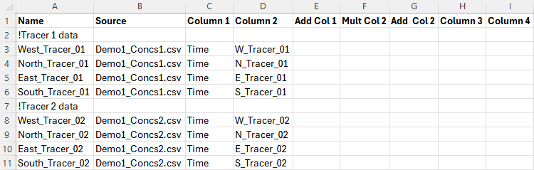
The Demo1_Concs.csv file was created by saving the below as a .csv file from Excel. All values are concentrations in mg/L, with the exception of the Time column, which has units of hours.
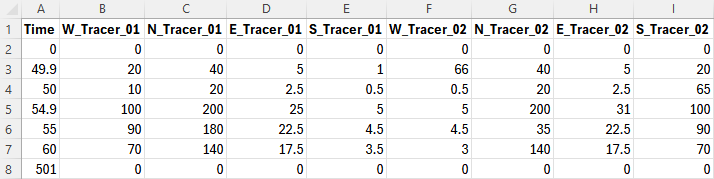
9.3.5 Initial Conditions
Initial conditions are specified for each constituent as either a constant value or spatially varied value (see Table 92). The former is simply entered as a decimal (or integer) in the Initial Condition field of the AD Global Database. This value is applied to all wet cells at model initiation. The latter is applied by entering a relative (or absolute) file path to a GIS layer in the Initial Condition field of the AD Global Database. The GIS file has the attributes described in Table 94.
| GIS Attribute | Description | Type |
|---|---|---|
| Conc | The initial condition concentration. | Float |
As many polygons as needed can be included in this layer. Any wet cells not covered by these polygons will be initialised to a concentration of zero. The naming convention prefix for this layer is 2d_ad_ic_. The objects must be polygons. Rectangles, round rectangles etc. are not supported by TUFLOW. The attribute name is not read by TUFLOW AD and can be anything meaningful to the user - “Conc” is used as an example above for clarity.
9.3.6 Groundwater Initial Conditions
Initial concentrations can be set within groundwater layers using the following .tgc commands:
Where:
- N = The groundwater layer number (reference multiple in a single command)
- M = The tracer number (reference multiple in a single command), as ordered in the AD Global Database
If a layer number is not referenced, it is assumed to apply to layer 1. Likewise, if a tracer number is not referenced it is assumed to apply to the first tracer. Note, the order that ‘Layer’ and ‘Tracer’ appear in the command does not matter (i.e. tracer numbers could be listed before layer numbers).
9.3.7 Minimum Dispersion Coefficient
Minimum dispersion coefficients are specified for each constituent as either a constant value or spatially varied value (see Table 92). The former is simply entered as a decimal (or integer) in the Minimum Dispersion field of the AD Global Database. This value is applied to all wet cells at all timesteps. The latter is applied by entering a relative (or absolute) file path to a GIS layer in the Minimum Dispersion field of the AD Global Database. The GIS file has the attributes described in Table 95.
| GIS Attribute | Description | Type |
|---|---|---|
| Conc | The initial condition concentration. | Float |
As many polygons as needed can be included in this layer. Any wet cells not covered by these polygons will be assigned a minimum dispersion coefficient of zero. The naming convention prefix for this layer is 2d_ad_md_. The objects must be polygons. Rectangles, round rectangles etc. are not supported by TUFLOW. The attribute name is not read by TUFLOW AD and can be anything meaningful to the user - “MD” is used as an example above for clarity.
9.4 Data Output
9.4.1 TUFLOW AD Log Files
TUFLOW AD log files are written to the location specified by Log Folder command in the .tcf file, or if this command is not usedthe same location as the .tcf file. The following logs are available:
- An AD simulation log file (.adlf);
- A CFL condition log file - output when using
Write CFL == ON , for TUFLOW Classic only; and
- A mass balance log file - output when using
Write Mass == ON .
9.4.1.1 Simulation Log File
This file is named ‘TCF name.adlf’. It contains commentary of input reading, constituent specification etc. as the simulation sets itself up.
Following model initialisation, if
Finished constituent Tracer_01 at AD substep iteration number 1
Finished constituent Tracer_02 at AD substep iteration number 1
Finished constituent Tracer_02 at AD substep iteration number 2
Finished constituent Tracer_02 at AD substep iteration number 3
These lines show information regarding the simulation time for each constituent. In particular, the number of AD sub-steps needed to be executed to maintain stability under CFL and Peclet conditions is reported. In the above example, constituent Tracer_01 required no substepping, whilst constituent Tracer_02 required 3 substep iterations to maintain stability. This is caused by Tracer_02 being set up with greater dispersion coefficients than Tracer_01 in the AD Global Database. Additional rows are added as required by the number of constituents simulated.
This TUFLOW AD timestep information is not available for TUFLOW HPC, or needs review by the modeller, due to the fact the TUFLOW HPC hydraulic engine and advection dispersion calculations are performed on the same timestep and with the same scheme. See Section ?? for discussion regarding timestep differences relating to TUFLOW Classic and TUFLOW HPC.
9.4.1.2 CFL Log File
This file is named ‘TCF name_ADcfl.csv’. It can be output when using TUFLOW Classic in conjunction with the
| Column | Description |
|---|---|
| time (h) | The simulation time in hours. |
| Constituent Name | The name of the constituent as specified in the AD global database. |
| Max_CFL_u | The maximum CFL for u velocities anywhere in the computational domain at that timestep. |
| Max_CFL_v | The maximum CFL for v velocities anywhere in the computational domain at that timestep. |
| Max_Peclet_u | The maximum Peclet number for u dispersion anywhere in the computational domain at that timestep. |
| Max_Peclet_v | The maximum Peclet number for v dispersion anywhere in the computational domain at that timestep. |
| Max_sum_u | The maximum of the sum of CFL and Peclet numbers in the x (u) direction anywhere in the computational domain. |
| Max_sum_v | The maximum of the sum of CFL and Peclet numbers in the y (v) direction anywhere in the computational domain. |
| Max_Disp_x | The maximum dispersion coefficient in the x (u) direction anywhere in the computational domain. |
| Max_Disp_y | The maximum dispersion coefficient in the y (v) direction anywhere in the computational domain. |
| Num_iterations | The number of iterations required by TUFLOW AD to remain stable. This can vary from constituent to constituent if different dispersion coefficients are applied. |
As per the TUFLOW AD timestep information in the ‘.adlf’ file. This log information is not available for TUFLOW HPC, or needs review by the modeller, due to the fact the TUFLOW HPC hydraulic engine and advection dispersion calculations are performed on the same timestep and with the same scheme. See Section ?? for discussion regarding timestep differences relating to TUFLOW Classic and TUFLOW HPC.
9.4.1.3 Mass Log File
This file is named ‘TCF name_ADmass.csv’. It can be output when using TUFLOW Classic or TUFLOW HPC in conjunction with the
| Column | Description |
|---|---|
| time (h) | The simulation time in hours. |
| Constituent Name 1 | The total mass of that constituent in the computational domain. TUFLOW AD assumes that the constituent concentrations are specified in mg/L, and this number is then in tonnes of constituent. If the concentration is g/L, then this number should be multiplied by 1000 to be in units of tonnes. |
| Constituent Name 2 | As per constituent 1. Column repeated until all constituents have been accounted for |
9.4.2 Check Files
When using the AD module, an _AD_check file will be output. For check file information, see the _AD_check TUFLOW Wiki Page.
9.4.3 Result Files
Result files contain the computed spatial and temporal evolution of simulated constituents. The output is a temporal format (maximums are not available) and will be output in the format specified by the Map Output Format command. For example, if
The AD output will automatically be produced unless the Map Output Data Types command is set to “AD OFF”. This off option can also be set on a Map Output format basis (e.g.
Plot Outputs are currently not supported for TUFLOW AD outputs.
10 Combining Domains and Solvers
10.1 Introduction
This chapter discusses methods available for dynamically linking 1D and 2D domains, linking with external (third-party) 1D solvers, and linking 2D domains together using Classic’s Multiple 2D Domains feature. HPC’s Quadtree feature, whilst allowing variable 2D cell sizes, is essentially one 2D domain over which a full 2D solution is applied is discussed in Section ??. A comparison between Classic’s M2D feature and HPC’s quadtree grid is presented in Section ??.
The range of functionalities discussed in the Chapter offer numerous benefits, including greater model design flexibility, greater computational efficiency and performance, and ability to integrate TUFLOW domains within supported third-party 1D solvers and models.
1D-2D linked models utilise the individual benefits of 1D and 2D solution schemes. 1D schemes are typically used to represent culverts or sub-surface pipe networks, and sometimes rivers, where the flow is essentially one-directional. 2D schemes are suited to the representation of, for example, rivers and floodplains or estuarine and coastal waters, where the hydrodynamics can flow in multiple horizontal directions, which requires the ability to simulate flow in a two-dimensional plane.
TUFLOW’s 2D solutions (Classic and HPC) may be dynamically linked to a variety of different 1D solutions, including TUFLOW 1D (ESTRY), EPA SWMM (herein referred to as SWMM in this chapter), Flood Modeller (formerly ISIS), 12D Dynamic Drainage (DDA), and XPSWMM from Autodesk (formerly XP-Software then Innovyze).
Within the one model, 1D domains that are TUFLOW 1D (ESTRY) and other 1D domains that are an external 1D scheme can occur. This may be useful where different 1D solvers offer different capabilities. Further, linking of TUFLOW 1D (ESTRY) directly to either Flood Modeller or SWMM is also possible.
The software environment for the 1D Solver / TUFLOW 2D combination varies:
- TUFLOW 1D (ESTRY) and SWMM are integrated within the TUFLOW executable. Model build tasks and result viewing associated with these linked 1D solvers is typically completed using traditional TUFLOW compatible GIS software.
- 12D Dynamic Drainage is developed by 12D Solutions. They have developed a TUFLOW interface within their own 12D GUI that offers GUI functionality for 1D and 2D modelling tasks. The interface provides users with the ability to build models and view results entirely within its GUI. Alternatively, existing TUFLOW files created in a GIS form can be imported and used in the 12D GUI.
- Flood Modeller, developed by Jacobs (formerly the ISIS software developed by Halcrow), is not built into the TUFLOW executable. Flood Modeller must be purchased from Jacobs, installed and configured, and to link with TUFLOW, the Flood Modeller TUFLOW Link must also be purchased and installed. Flood Modeller accesses the TUFLOW solvers via the TUFLOW_LINK.dll that is part of the standard TUFLOW download. The Flood Modeller GUI is used for 1D model build tasks, and execution of the linked Flood Modeller 1D / TUFLOW model. The TUFLOW script (control) file and GIS environment is typically used for the TUFLOW 1D and 2D components.
- XPSWMM functions in a fully independent GUI with TUFLOW fully embedded and operated “behind-the-scenes”. As such, the model development and results viewing information in this manual is not applicable and reference should be made to the XPSWMM documentation as supplied with the software. However, when XPSWMM runs a simulation with TUFLOW linked, all the standard TUFLOW script files, GIS layers and result outputs are written to disk should the user with to access these in their native formats.
Varying the 2D cell size within a single model enables use of smaller cell sizes (finer resolution) in areas where a more detailed assessment is required or a finer grid is required to accurately represent the hydraulics, with the larger cell sizes covering the remaining areas of the model. The ability to vary 2D cell sizes within the one model optimises the grid construct thereby reducing simulation times and the memory footprint compared to a model that adopts a fine resolution over the entire model domain.
Both TUFLOW Classic and HPC offer the ability to vary 2D cell sizes using two different approaches: - TUFLOW Classic offers 2D-2D linking of different 2D domains via the Multiple 2D Domains (M2D) Module. 2D-2D linked Classic models allow for a single model to contain multiple 2D domains of different cell sizes and different orientations. The 2D-2D link is via hidden TUFLOW 1D nodes that essentially pass the water from one 2D domain to another using HX links. Therefore, the solution across the link is not a full 2D solution, rather a linked 2D-1D-2D solution results that may not be as accurate as a full 2D solution. - TUFLOW HPC doesn’t support Classic’s 2D-2D linking, but supports varying 2D cell sizes using a full 2D solution across a quadtree grid (the Quadtree Module, which purchase/licence wise is shared with Classic’s M2D Module, is required). The quadtree grid requires all 2D cells are on the same orientation and they can only vary in size by a factor of two when transitioning from a smaller cell to a larger cell.
10.2 1D and 2D Domain Linking Theory
TUFLOW 1D and 2D domains can be linked in a variety of ways. Common configurations, as shown in Figure 87, include:
- 1D culverts through 2D embankments.
- 1D pipe networks underneath the 2D domain.
- Nesting of a 1D open channel (e.g. creek or river) through a 2D domain.
- Connection of a broader 1D network catchment model to a high resolution 2D domain.

Figure 87: 1D/2D Linking Configurations
There are two types of 1D/2D linking options available:
- Head (water level) boundaries to the 2D cells (HX); and
- Source boundaries to the 2D cells (SX).
These are described in the sections below.
10.2.1 HX 2D Head Boundary
The HX terminology is derived from a Head boundary being applied to the 2D cell using data from an eXternal 1D scheme. This type of connection can be used to connect TUFLOW 2D with the 1D schemes of ESTRY (TUFLOW 1D), SWMM, Flood Modeller and XPSWMM. HX lines are typically used along riverbanks to define the 1D-2D exchange when 1D is used for in-channel representation, linked to the floodplain in 2D (commonly referred to as, 1D nested open channel modelling).
For 1D nested open channel modelling, the HX cells are defined using HX lines, connected to 1D nodes (i.e. the start and end of 1D channel lines) via connection (CN) lines. HX and CN line type objects are defined in the 2d_bc format layer. The 2d_bc layer is often renamed with the prefix 2d_hx should the modeller choose to store the HX lines in their own layer(s). The CN lines are snapped to the 1D nodes and vertices along the HX line.
The open channel area modelled by 1D must be deactivated from the 2D domain (2d_code: code = 0) otherwise the flow down the open channel will be duplicated in both the 1D and 2D domains. These model features are presented in Figure 88.
When TUFLOW carries out the hydraulic calculations, water level information at the 1D nodes is transferred to the HX line vertices that are connected to the 1D nodes via the CN lines. Along the HX lines, between the connected vertices, the water levels are linearly interpolated.
A HX line must have a CN line connected to each of its ends, along with any connections from intermediate 1D nodes to HX line vertices. Not every HX vertex has to have a 1D node connected. However, should a 1D node not be connected, the water level from that 1D node will not contribute to setting the water level profile along the HX line and undesirable results may occur.
If a single 1D node is connected to both ends of a HX line, the water levels in the 2D cells along the HX line will all be the same thereby producing a horizontal water level profile along the HX line. This approach is typically used for upstream boundaries into a 2D domain, and the line must be roughly digitised perpendicular to the flow (alternatively use a 2D QT boundary which automates this set up).

Figure 88: HX Connection: Nested 1D Open Channel – Plan View
Flow can either enter or leave HX cells. The volume of water entering or leaving the cells is added or subtracted from the connected 1D nodes to conserve mass. The HX link preserves momentum in the sense that the velocity field is assumed to be undisturbed across the link, however, the solution across the HX line is not a complete 2D solution as the velocity field on the inactive side of the HX line is assumed, not calculated. The 2D velocity direction is not influenced by the direction of the linked 1D channel.
Because of the momentum preservation, the HX link approach produces a superior 1D-2D linking performance where complex flow behaviour occurs (e.g. river/floodplain interactions) than using a flow source approach such as applying a weir flow equation across the link. Figure 89 shows an example of the preservation of momentum across HX lines (shown in light purple) as water flows across a meander where the main channel is represented in 1D.

Figure 89: HX Connection: Example of Momentum Preservation across HX Lines
The elevations of 1D-2D boundary cells determine when water can transfer between the 1D and 2D. Water level is calculated at the cell centres in the 2D engine (see Section ??), once the water level in the 1D node exceeds the elevation in the HX cell, water can enter or leave the cell. As such, an accurate definition of the 2D HX cell centre elevations is important. If a levee aligns with the HX line, a 2d_zsh thick breakline is recommended along the levee to ensure that the 1D-2D boundary cell elevations are consistent with the levee or spill crest.
In the four panels of Figure 90, the 2D HX connection is shown in section view at four differing water level stages:
- Panel 1: In bank flow: the water level in the 1D section is below the 2D cell
elevation and no flow is occurring across the 1D-2D connection.
- Panel 2: Spill into the floodplain: the water level in the 1D section is above the 2D
cell elevation along the left bank (but not the right bank). In this
case, water is spilling from the 1D channel into the 2D floodplain on
the left bank.
- Panel 3: Flow from floodplain: the water level in the 1D is below the
water levels on the 2D floodplains and water will drain from the
2D domain into the 1D channel, which typical occurs during a flood recession.
- Panel 4: Perched floodplain: the flow is still moving from the 2D into the 1D on the left bank, however, on the right bank, the water level in the floodplain is below the 2D HX cell elevation and no flow is occurring (the water is perched).

Figure 90: HX Connection: Nested 1D Open Channel – Section View
In addition to 1D-2D connections associated with nested 1D open channel / 2D floodplain situations, HX connections are also used to connect a 2D domain embedded within a broader 1D network representing the upstream and/or downstream river sections further afield. In Figure 91, HX lines are shown along the upstream inflow to the 2D Domain as purple lines, the CN lines are shown in green. The CN lines are snapped to the 1D node at the end of the 1D network and the two vertices at either end of the HX line.
The water level at the 1D node is uniformly applied to the HX cells wherever the water level exceeds the cell ZC elevation. As the water level applied along the HX line will be horizontal the HX line must be digitised roughly perpendicular to the expected flow direction. Should the line not be perpendicular, circulatory flows maybe generated, so check that the flow patterns along HX lines appear to be reasonable.

Figure 91: HX Connection: External 1D Network Boundary Connection
Note that for all HX links, the cell centre elevation (ZC) at a HX cell must be above the 1D bed level (interpolated between connected 1D nodes) otherwise an artificial flow across the link will be produced. To enforce this, TUFLOW produces an error message during the model initialisation, and terminates the simulation, if the interpolated 1D node elevation exceeds the 2D HX cell centre elevation (ZC). The ERROR message(s) are geo-referenced to easily identify the HX cells that lie below the 1D bed profile.
10.2.2 SX 2D Flow Boundary
The SX terminology is derived from a Source boundary being applied to the 2D cell using data from an eXternal 1D scheme. This type of connection can be used to connect TUFLOW 2D with the 1D schemes of TUFLOW 1D (ESTRY), Flood Modeller, SWMM and XPSWMM. SX connections are typically used to transfer flow between 1D and 2D for 1D structures and at pits/drains/gully traps that capture water into the pipe network. Unique to SWMM, when using it as the 1D solver, an SX connection is only required at the downstream end of a 1D culvert (it uses a HX link at the upstream end due to limitations of the SWMM software).
At SX connections, the water level at the 1D node is reset every timestep as the average water level along the 2D SX cell(s). Conversely, the flow into or out of the 1D element feeds into the 2D SX cell(s) as a flow of water with the water level at the 2D cells computed as part of the 2D SWE solution. As the water level at the 1D node is set based on the water level in the SX cells, the storage in the 1D node is not used computationally in the 1D. Where there is an SX connection to 2D cell(s) from a 1D node, the average 1D node storage is distributed across the connected 2D SX cells.
The flow onto the SX cells is treated as a source flow, i.e. it can be positive or negative in magnitude but has no directional component. If there is more than one SX cell connected, the flow is, by default, proportioned via the depths in the 2D SX cells. The SX Flow Distribution Cutoff Depth command can be used to control the depth of water below which an SX cell does not receive flows from the connected 1D element.
SX objects are digitised in the 2d_bc layer and have the type set to “SX”. They can either be a point (a single SX cell), line (multiple SX cells) or region object (multiple SX cells). When using the SX line and region objects, these are joined to the 1D nodes with a single CN type object, also in the 2d_bc layer, as shown in Figure 92. The (2d_bc) SX point, line and region objects are shown in purple, the (2d_bc) CN lines are shown in green, and the cells selected for the SX 1D-2D connection are highlighted in white.
- When using an SX point, the point object needs to snap to the 1d network (1d_nwk) at the nodes (end of the culvert). A single 2D cell is selected for the 1D-2D SX connection.
- When using an SX line, a connection line snaps to the SX line and the 1d network (1d_nwk) node. Multiple 2D cells are selected for the 1D-2D SX connection. If the line does not select any 2D cells a single 2D cell is selected based on the line’s mid-point.
- When using an SX region, a connection line snaps to a vertex of the SX region and 1d network (1d_nwk) node. Multiple 2D cells are selected for the 1D-2D SX connection based on whether the 2D cell centre falls within the region. If the region does not select any 2D cells a single 2D cell is selected based on the region’s centroid.
Note that when connecting an SX connection for a 1D structure it is important to ensure that the width of connected SX cells at the structure invert (and higher levels for irregular shaped structures) is equal or more than the width of the 1D structure. This check should take into account whether any of the 2D SX cells are dry at the level being checked. If the width of water flow across the SX cells is less than the flow width of the 1D structure, the 2D SX cells become the constriction and instabilities or unrealistic flow patterns may result.

Figure 92: SX Connection Options
The lowest 2D SX cell (based on the ZC, cell centre, elevation) must be below the 1D bed level (invert) otherwise mass can be artificially generated. TUFLOW produces an ERROR message during the model initialisation and a simulation will not run if a 1D node elevation falls below the lowest 2D ZC SX cell elevation.
In addition to culverts through embankments, SX connections are used to connect 1D pipe network inlets (pits) to the ground surface, which is modelled in 2D. An example is presented in Figure 93 and Figure 94. The SX connections are used to transfer flow between the 1D pit/pipe network and the 2D domain. To make the workflow more efficient, pit SX connections can be simply defined using one the pit attributes in a 1d_nwk or 1d_pit layer, thereby removing the need to have a 2d_bc layer - see Section ??.

Figure 93: SX Connection: Pipe Network – Plan View

Figure 94: SX Connection: Pipe Network -Section View
10.3 TUFLOW 1D (ESTRY) to TUFLOW 2D Linking
Linked TUFLOW 1D and 2D domain models use 2D HX and 2D SX boundary types connected to 1D nodes (1d_nwk layer) using CN lines or points in the 2d_bc layer, as described in Section ??. The recommended approach for HX and SX connections are summarised in the following sections.
10.3.1 1D Open Channel and 2D Domain Linking
2D_bc HX boundaries are preferred for transitioning between 1D domains and 2D domains (shown in Figure 91) or when nesting a 1D open channel network within a 2D domain (shown in Figure 88).
An example of these HX connections is provided in Module 11 of the TUFLOW Wiki Tutorials. The TUFLOW Wiki also includes useful guidance on how to stabilise problematic 1D/2D TUFLOW HPC HX connections.
10.3.2 1D Structures Embedded within 2D Domains
2D_bc SX boundaries are preferred for inserting 1D culverts inside a 2D domain. For example, a 1D culvert underneath a road embankment, as shown in Figure 92.
An example of these SX connections is provided in Module 3 of the TUFLOW Wiki Tutorials. The TUFLOW Wiki also includes useful guidance how to stabilise problematic 1D/2D SX connections.
10.3.3 1D Pipe Network Pits linked to 2D Domains
Pits/Inlets within an urban drainage environment provide bi-directional connectivity between the urban surface represented by 2D domains and the 1D sub-surface pipe network. They use the SX type linking described in Section ??. To simplify the model setup process the SX connections are automatically created by setting the Conn_1D_2D attribute for the pit/inlet point object to “SX” in the 1d_pit or 1d_nwk layer. The type of pit is defined using the ‘Type’ attribute:
- “C” pits use zero length circular culverts to calculate the flow transferred between the 1D network and 2D domain.
- “R” pits use zero length box culverts to calculate the flow transferred between the 1D network and 2D domain.
- “W” pits use the weir equation to calculate the flow transferred between the 1D network and 2D domain.
- “Q” pits use a user-specified Depth-Discharge curve to transfer flow between the 2D domain and the 1D domain, based on the 2D water depth.
Section ?? contains information about the specification of pit parameters. A pipe network model example is provided in Module 5 of the TUFLOW Wiki Tutorials.
10.3.4 Virtual Pits linked to 2D Domains
Compared to the above-mentioned approach, virtual pits are an alternative way to model pits/inlets where the sub-surface pipe network is not being modelled. The flow entering a virtual pit can either be discharged back into the model further downstream or permanently extracted from the model. There are three main approaches to using virtual pits:
- Virtual Pit Inlets (Type ‘VPI’) only are used to extract flow from the model. One examples would be where there is no or insufficient data on the pipe network. Another example is where the pipe network flow discharges to a river (assuming the level in the river does not affect the flow into the pits) and no pit surcharging back onto the 2D domain occurs.
- VPIs are used in with Virtual Pipe Outlets (VPOs), which allow the flow into VPIs to be discharged back onto the model. VPIs can be allocated to specific VPOs via a common network ID. VPOs can have a limiting outlet flow. Once the VPO flow reaches the limit, the excess flow is surcharged back through VPIs, which can be prioritised as to which ones surcharge first. By default, the routing of flow between VPIs and VPOs on the same network is instantaneous (i.e. no lag). However from the 2023-03-AB build, it is possible to apply a lag or shift to the flows from the inlet to the outlet by using the 1d_pit Lag_Approach and Lag_Value attributes.
- Flows from VPIs can be connected to 1D channel nodes to drain flow from the 2D surface and reintroduce them to the 1D domain further downstream. This is a useful approach to modelling the major sub-surface drainage system as a pipe network and the minor system as VPIs feeding into the major system.
Section ?? contains more information about virtual pits. Examples of these model configurations are provided in the 1D Pipe Network / 2D Floodplain Modelling Example Model Database.
As previously mentioned, pits, virtual pits and nodes can be automatically connected to 2D domains using the 1d_nwk Conn_1D_2D attribute (see Table 42 and Table 41). If Conn_1D_2D is set to “SX”, TUFLOW automatically connects the upstream end of the pit channel or node to the 2D domain.
- For this automated 1D-2D SX connection to establish, it is a requirement that the 2D cell must be active (2d_code, Code = 1). If no active 2D cells are found from any 2D domain, a WARNING 2122 or 2123 is issued.
- The command Pit Default 2D Connection can be used to set the global default value for the 1d_nwk Conn_1D_2D attribute.
- By default, TUFLOW will connect the 1D pit/virtual pit/node to one or more 2D cells at pit connections. The number of 2D cells selected is a function of the flow width of the pit inlet (including the effects of the Number_of and Width_or_Dia 1d_nwk attributes), or the total flow width of the channels connected to the node. The total width of the 2D cells selected is always more than the pit inlet width or width of channels. For example, a width of 3.6 m on a 2 m grid selects two cells. The advantage of selecting more than one 2D cell is to provide enhanced stability at the 1D/2D connection when the 1D flow width exceeds the 2D cell size. The number of 2D connection cells is limited to 10 per pit inlet.
- The 1d_nwk Conn_No attribute can be used to change the number of 2D cells connected as follows:
- A positive value adds that number of 2D cells to the automatic number. In the example above, if Conn_No is set to 1, three (2 + 1) 2D cells are connected. The upper limit is 10 connected cells.
- If Conn_No is negative, this ignores the automatic approach and fixes the number of 2D cells connected to the absolute value of Conn_No. For example, a value of -1 would only connect the pit or node to one (1) 2D cell irrespective of the width.
- A positive value adds that number of 2D cells to the automatic number. In the example above, if Conn_No is set to 1, three (2 + 1) 2D cells are connected. The upper limit is 10 connected cells.
- If more than one 2D cell is being connected, there are two approaches available for how the 2D cells are selected.
- For pits, the default is the G (on Grade) option that selects the 2nd, 3rd, etc… cells by traversing to the next highest 2D cell that neighbours the 2D cell(s) already selected (this includes diagonal cells, i.e. all 8 cells around a cell are considered). These cells are also automatically lowered to the same height as the first cell so that their ZC value is at or below the pit inlet.
- For nodes, the default is the S (Sag) option that selects the 2nd, 3rd, etc… cells by traversing to the next lowest 2D cell. The ZC values of these cells are not changed as they are already at or below the node invert.
- For pits, the default is the G (on Grade) option that selects the 2nd, 3rd, etc… cells by traversing to the next highest 2D cell that neighbours the 2D cell(s) already selected (this includes diagonal cells, i.e. all 8 cells around a cell are considered). These cells are also automatically lowered to the same height as the first cell so that their ZC value is at or below the pit inlet.
- The above approaches can be changed using the G (Grade) and S (Sag) flags for the 1d_nwk Conn_1D_2D attribute. The G approach is that adopted by default for pits and S for nodes. To override the default approach, specify G or S as appropriate. For example, if the S approach is preferred for a pit that is draining a depression, specify an S flag for the Conn_1D_2D attribute (i.e. “SXS”). Note SX must come first before an optional flag is specified.
Note, the conventional 1D-2D link approach using 2d_bc SX points, lines or regions can still be used to connect 1D channel ends. This gives the user complete control over the 2D cells selected and may still be preferred in situations where large 1D structures are being connected to 2D cells.
10.4 SWMM to TUFLOW Linking
New in the 2023-03-AD release, TUFLOW’s 1D linking and solver options have been expanded to support the EPA Storm Water Management Model (SWMM), see Chapter ??. The SWMM engine (version 5) has been integrated into the TUFLOW executable as a 2D and 1D dynamically linked 1D solver. SWMM version 5 input (.inp) files can be directly input to TUFLOW.
In TUFLOW-SWMM there are three categories of connections between SWMM 1D and TUFLOW:
- Direct Connections: These apply to inlets/outlets associate with culverts passing through an embankment (modelled in 2D), or also open outlets from a pipe network.
- Storm-Drain Inlets: These apply to surface pits/inlets for capturing overland flow into a pipe network. Geometry information associated with the storm-drain inlet is used to determine the discharge that should flow from the 2D domain into the 1D SWMM pipe network.
- SWMM 1D connection to TUFLOW 1D (ESTRY) that allows 1D domains to be a combination of ESTRY and SWMM.
10.4.1 1D Culvert Connections to 2D Domains
This type of connection is used for cross-drainage such as culverts through an embankment. Due to limitations within SWMM, HX connections are used at the Nodes–Storage object (upstream side) and SX connections are applied at the Nodes–Outfalls object (downstream). This configuration is presented in Figure 95.
Where a Nodes–Storage point is connected to the 2D domain using an inlet or HX connection, TUFLOW will compute the discharge that should be transferred between the 1D and 2D domain. If the water level in the 2D domain is higher than the 1D (potentially ponded) water level, then flow will be transferred from the 2D domain to the 1D. The discharge rate will depend on the difference in water levels.
A TUFLOW-SWMM culvert model is provided in Module 1 of the TUFLOW-SWMM Wiki Tutorials.

Figure 95: SWMM 1D Connection: Culvert
10.4.2 1D Pipe Network Connections to 2D Domains
SX type linking described in Section ?? is recommended for pipe network storm-drain inlets. For a TUFLOW-SWMM model, storm-drain inlets can be defined in one of two ways, either:
- Fully defined in a SWMM input (.inp) file format: In this form, all table items listed below (Streets, Conduits, Inlets, and Inlet Usage) are required. In addition, a “2d_bc” layer is required to provide the connectivity between the 1D inlets and the 2D domain.
- Streets: SWMM uses the street cross-section information in this table to help compute storm drain inlet discharges, particularly for on-grade inlets.
- Conduits (Streets): The conduits table is used to define streets for overland runoff and the slope is used in the storm drain inlet discharges. This table is not used directly when running a TUFLOW-SWMM model because the overland flows are calculated within TUFLOW.
- Inlets: This table defines inlet configurations that describe how to determine inlet discharges. Inlets can be defined based on type and shape such as grates, curbs, and combination, or through curves that describe the relationship between depth and inlet discharge or approach flow and inlet discharge. The inlets table defines these parameters. The same inlet configuration can be used in multiple pit locations within the model.
- Inlet Usage: This table identifies the placement of inlets including the street conduit, inlet (configuration), the node receiving the flow, and local parameters including blockage, size of local gutter depressions, and specification of on-grade, on-sag placement, or automatic placement.
- Streets: SWMM uses the street cross-section information in this table to help compute storm drain inlet discharges, particularly for on-grade inlets.
- Defined using a SWMM input (.inp) file with a “swmm_inlet_usage” GIS layer: In this form TUFLOW creates a GIS layer to assist in the 1D-2D specification. Due to reduced data requirements and model build workflow efficiency the combined SWMM input (.inp) file / “swmm_inlet_usage” GIS layer format is the recommended approach. Using this format:
- Table 98 lists the attributes associated with the swmm_inlet_usage GIS layer.
- Automatic inlet connections between the 1D network and 2D domain can be implemented via the “Conn1D_2D” attribute field (instead of manual specification of SX connection cells within a “2d_bc” GIS layer).
- SWMM 5 “Inlet Usage” tables are not used, and Conduits (Streets) are not required. However, Streets and Inlet tables must be defined in the SWMM input (.inp) file.
- 2d_bc SX lines may be used to manually define connections associated with on-grade inlets. This gives the user complete control over the 2D cells selected for the on-grade flow calculations.
- The conventional 1D-2D link approach using 2d_bc CN lines and SX lines can be used (instead of the automated methods) should greater control be required over the selected 2D cells for the 1D-2D on-grade inlet connections.
- The conventional 1D-2D link approach using 2d_bc HX lines and SX points, lines or regions is required to connect 1D channel ends where “direct” connection to the 2D is desired.
- Table 98 lists the attributes associated with the swmm_inlet_usage GIS layer.
An example model configuration is shown in Figure 96, and example TUFLOW-SWMM pipe network models are also provided in Module 2, 3 and 4 of the TUFLOW-SWMM Wiki Tutorials.
Whether inlet usage details are defined in SWMM or in a separate GIS layer, the inlet discharges are computed within TUFLOW using EPA SWMM 5.2 code before being passed to the SWMM engine for the 1D solution computations. This approach has been selected to leverage the 2D domain hydraulic calculations.
If the pressure head in the 1D domain exceeds the 2D water level, the 1D domain will overflow (surcharge) into the 2D domain. The approach used to compute the surcharge discharge depends on the inlet setup and whether or not the SWMM node ponds.
- If the node allows ponding (ponding > 0) (recommended configuration):
- The surcharge discharge is based on the depth vs flow curve for custom inlets or from the orifice equation for other inlet types, plus any additional discharge from the use of the Maximum Inlet Ponded Depth command.
- The coefficient used for inlet surcharging can be specified with the Inlet Surcharge Orifice Coefficient command.
- The discharge for custom curves is applied directly in reverse. For example, a 1D water level 0.3 feet above the 2D water level will produce the equal, though opposite, discharge as a 2D water level 0.3 feet above the 1D water level (or ground elevation).
- The surcharge discharge is based on the depth vs flow curve for custom inlets or from the orifice equation for other inlet types, plus any additional discharge from the use of the Maximum Inlet Ponded Depth command.
- If the node does not allow ponding (ponding = 0):
- Any volume that exceeds the maximum nodal water level (YMax) plus any surcharge depth (YSur) is reported as flooding by SWMM, which no longer tracks it. Therefore, the water is passed directly from the SWMM engine to the TUFLOW 2D cells. Although possible, this approach is not recommended because it prevents the 1D network from utilising the full pressure head in its flow calculations.

Figure 96: SWMM 1D Connection: Pipe Network
| No. | Default GIS Attribute Name | Description | Type |
|---|---|---|---|
| 1 | Inlet | The name of the inlet defined in the SWMM inp file “INLETS” section | Char (100) |
| 2 | StreetXSEC | The name of the street cross-section that must be included in the SWMM SWMM inp file “Streets” section. | Char (100) |
| 3 | Elevation | The elevation of the inlet. If a value of –99999 is entered, the elevation will be based on the 2D cell’s elevation. | Float |
| 4 | SlopePct_Long | The longitudinal slope of the street near the inlet. | Float |
| 5 | Number | The number of inlets in series at the location (generally 1). | Integer |
| 6 | CloggedPct | The percentage that the inlet is blocked (defaults to 0.0). | Float |
| 7 | Qmax | The maximum discharge through the inlet (default is 0 which does not enforce a maximum). | Float |
| 8 | aLocal | The depth of a local depression at the inlet (default 0.0). | Float |
| 9 | wLocal | The width of a local depression at the inlet (default 0.0). | Float |
| 10 | Placement | Specifies whether the inlet should be treated as a sag or on-grade. Options are ON_GRADE, ON_SAG, or AUTOMATIC. AUTOMATIC (the default) will switch between ON_GRADE and ON_SAG depending upon the flow conditions at the inlet. | Char(10) |
| 11 | Conn1D_2D |
Used to specify a “SX” connection and any additional flags such as “SXZ” or “SXG” that automatically creates a 2D SX cell and connection at the 2D cell within which the SWMM node occurs. This negates the need to create SX objects in a 2d_bc layer. Flags:
|
Char (10) |
| 12 | Conn_Width |
If “SX” is specified for Conn1D_2D, this field controls the number of 2D cells connected as follows. Note this approach is slightly different than is used by TUFLOW-ESTRY models.
|
Float |
10.4.3 SWMM to TUFLOW 1D (ESTRY) Linking
SWMM can be linked to TUFLOW 1D (ESTRY) allowing the modeller to use the different solvers and their benefits across the 1D domains of a model. Also, note that full support for 1D open channel modelling using SWMM is not yet available, but can be readily modelled using TUFLOW 1D. A typical combined scenario would be 1D open channel modelling using TUFLOW 1D dynamically linked to a SWMM pipe network. Combined SWMM 1D-TUFLOW 1D configurations can be dynamically linked to TUFLOW 2D using the approaches outlined in the previous sections.
SWMM and TUFLOW 1D nodes will be considered linked if:
- A TUFLOW 1D node in a 1d_nwk layer, and a SWMM node layer are snapped to each other, and
- The TUFLOW 1D node has a 1d_nwk Conn_1D_2D attribute of either “X1DH” or
“X1DQ”.
- A “X1DH” link means a SWMM 1D water level is being
applied at the TUFLOW 1D node (i.e. SWMM sends TUFLOW 1D a water
level and TUFLOW 1D sends back a +/- flow to SWMM). This is applicable at SWMM Nodes–Junctions and Nodes–Storage locations.
- A “X1DQ” link means a SWMM inflow/outflow is being applied at the TUFLOW 1D node (i.e. SWMM sends TUFLOW 1D a +/- flow and TUFLOW 1D sends back a water level). This is applicable at SWMM Nodes–Outfalls locations.
- A “X1DH” link means a SWMM 1D water level is being
applied at the TUFLOW 1D node (i.e. SWMM sends TUFLOW 1D a water
level and TUFLOW 1D sends back a +/- flow to SWMM). This is applicable at SWMM Nodes–Junctions and Nodes–Storage locations.
Note:
- The upstream and downstream inverts for the TUFLOW 1D node linked to SWMM should be set to -99999 unless the node is also being used to set the inverts of channels snapped to it.
- SWMM cannot be connected to TUFLOW 1D and TUFLOW 2D from the same SWMM node. Only a single linkage is supported from a single SWMM node. This limitation is highlighted in the zoomed inset of Figure 97. In this example the SWMM Link–Conduit is only linked to TUFLOW 1D, it is not connected to TUFLOW 2D via CN and HX lines. The connection of TUFLOW 2D is associated with the TUFLOW 1D open channels, offset from SWMM by a single short TUFLOW 1D channel length.

Figure 97: SWMM 1D / TUFLOW 1D Connection
10.5 Flood Modeller to TUFLOW Linking
TUFLOW 2D domains can be dynamically linked to Flood Modeller (previously known as ISIS). Flood Modeller can also link to TUFLOW 1D (previously known as ISIS-TUFLOW-PIPE or ISIS-ESTRY).
Unlike TUFLOW 1D or SWMM, Flood Modeller is not included in the TUFLOW executable download. It must be installed and configured to support the linking to TUFLOW. The TUFLOW Link must be purchased from Jacobs and an appropriate software version used. It is recommended that TUFLOW 2020-10-AD or later is used in conjunction with Flood Modeller Version 5 or later. Figure 98 provides the compatibility between Flood Modeller and TUFLOW for versions prior to Flood Modeller 6 and TUFLOW 2020-10-AE. Post these releases, all TUFLOW Classic and TUFLOW HPC (including Quadtree) functionality is supported and compatible with Flood Modeller. Versions prior to Flood Modeller 4.5 will support TUFLOW Classic only. Regardless of the TUFLOW 2D solver (i.e. Classic or HPC), the linking mechanism is the same.

Figure 98: Compatibility of Recent Flood Modeller and TUFLOW versions
10.5.1 Flood Modeller 1D to TUFLOW 2D Linking
To link Flood Modeller’s 1D scheme to TUFLOW 2D, a TUFLOW 1d_x1d GIS layer defining the locations of the Flood Modeller 1D nodes is required. The 1d_x1d layer can either be created by the user or by the Flood Modeller interface.
For linking 1D Flood Modeller to TUFLOW 2D, the TUFLOW 1d_x1d layer requires only one attribute, namely a string 12 characters long that contains the unique IDs of the Flood Modeller 1D nodes/sections. Any other attributes are presently ignored. Creation of this layer manually is possible through exporting a text or csv file containing the Node ID and XY coordinates of the nodes, provided the Flood Modeller co-ordinates are in the same projection as the TUFLOW model. Note, the IDs are case sensitive (because Flood Modeller IDs are case sensitive).
In the .tcf file, use either the Read GIS X1D Nodes or Read GIS X1D Network command to read the 1d_x1d layer, as shown in the example below:
The digitising of channels (lines) within a 1d_x1d GIS layer is optional and is only necessary if the model uses 1D Water Level Lines to display map outputs in the 1D domain (refer to Section ?? for further details). If GIS layer(s) are provided including channels, they are also read into the .tcf file using the command Read GIS X1D Network, and should be used with Read GIS X1D WLL.
The example below shows the use of these commands (with the nodes and channels in separate files):
Note, legacy models may include reference to ISIS in the above commands. For example, “X1D” in Read GIS X1D Network can be substituted with “ISIS” (i.e. Read GIS ISIS Network).
Connections (CN) in the 2d_bc layer are snapped to the nodes in the 1d_x1d layer in the same manner as a TUFLOW 1D 1d_nwk layer.
The following restrictions apply when connecting Flood Modeller nodes to TUFLOW 2D:
- HX lines should only be connected to Flood Modeller RIVER units. Flood
Modeller INTERPOLATE and REPLICATE units are also permitted. This
requires that the Flood Modeller unit between consecutive connections
along a HX line is always a RIVER unit. If this is not the case, an
“ERROR 2043 - 2D HX cell has been assigned to a non-RIVER unit” occurs. Where a non-RIVER unit occurs (e.g. at a structure), the HX
line needs to be broken.
- Special Flood Modeller units may be required for some HX and SX connections (refer to the Flood Modeller documentation).
It is not necessary for all Flood Modeller RIVER units between the upstream and downstream ends of the HX line to be connected. Nodes/Sections may be intentionally or accidentally omitted as with TUFLOW 1D nodes. Please note that this is not recommended because by missing or omitting nodes the 1D water level water surface gradient that is applied along the HX lines will not be correctly represented.
TUFLOW checks whether the ZC elevation of a HX cell lies above the bed of the 1D nodes and that the ZC elevation of a SX cell lies below the 1D node bed, and if not, an error occurs (see Section ?? and Section ??).
Use the _x1d_nodes_check file to cross-check the external 1D nodes/sections that were read by TUFLOW, and the associated information passed from the 1D scheme. Also use the _1d_to_2d_check file to cross-check the correct HX and SX cells are connected to the correct channels (units). The HX cells in the _1d_to_2d_check layer can be colour coded using the “Primary_no” attribute to identify the external 1D channel (unit) that the flow in/out across the HX cells is associated with. For Flood Modeller, by default HX cells are assigned to the upstream end of a river unit as a lateral flow as per Flood Modeller conventions.
Note, the start and end simulation times and the timestep are controlled by Flood Modellers GUI input fields, therefore, any Start Time, End Time and Timestep commands are ignored in the .tcf file. Therefore, it is best practice to remove (or comment out) these commands. Within the Flood Modeller GUI, the Flood Modeller 1D timestep can differ from the TUFLOW timestep. It is recommended that the Flood Modeller timestep be set as an integer divisor of the TUFLOW timestep.
No TUFLOW 1D .ecf file is required, and the TUFLOW 1D ESTRY Control File command should not be specified unless there are also TUFLOW 1D domain(s) in addition to the external scheme 1D domain(s). Flood Modeller nodes can be directly linked to TUFLOW 1D nodes allowing models to have a combination of Flood Modeller 1D and TUFLOW 1D (ESTRY) - refer to Section ??. An example model demonstrating both ‘SX’ and ‘HX’ type links between Flood Modeller and TUFLOW is available here.
Note that Flood Modeller HX links may benefit from assigning a Form Loss Coefficient (typically 0.1 to 0.5 in value) to HX lines using the 2d_bc “a” attribute. For HX lines running along the riverbanks, especially those with high overtopping velocities, improved stability and representation of the energy losses associated with the water peeling off from the river to the floodplain or vice versa can be achieved.
For model review purposes, the .tcf command Write X1D Check Files writes out check_x1D_H_to_2D.csv and check_2D_Q_to_x1D.csv files. These contain the water levels and flows sent to the 2D to/from Flood Modeller.
Example models demonstrating TUFLOW / Flood Modeller linking are available from the TUFLOW Gitlab User Group. Detailed documentation for the example models is available from the TUFLOW Wiki. A TUFLOW / Flood Modeller linked model is provided in Module 1 of the TUFLOW / Flood Modeller Wiki Tutorials.
10.5.2 Flood Modeller 1D to TUFLOW 1D (ESTRY) Linking
TUFLOW 1D (ESTRY) domains can be dynamically linked with Flood Modeller. The most common reason this is carried out is to utilise TUFLOW 1D’s powerful pipe network features (see Section ??).
Flood Modeller and TUFLOW 1D (ESTRY) nodes will be considered linked if:
- A TUFLOW 1D node in a 1d_nwk layer, and a Flood Modeller node in a Read GIS X1D Nodes or Read GIS X1D Network layer are snapped.
- Note, legacy models may include reference to ISIS in the command. For example, “X1D” in Read GIS X1D Nodes can be substituted with “ISIS” (i.e. Read GIS ISIS Nodes).
- Note, legacy models may include reference to ISIS in the command. For example, “X1D” in Read GIS X1D Nodes can be substituted with “ISIS” (i.e. Read GIS ISIS Nodes).
- The TUFLOW 1D node connection method is defined using the TUFLOW 1D 1d_nwk Conn_1D_2D attribute. If the Conn_1D_2D field is blank, a “X1DH” type is assumed - this is the default approach. Alternatively, a value of “X1DH” or “X1DQ” can be manually specified.
- A “X1DH” link means a Flood Modeller 1D water level is applied at the TUFLOW 1D node (i.e. Flood Modeller sends TUFLOW 1D a water level and TUFLOW 1D sends back a +/- flow to Flood Modeller).
- A “X1DQ” link means a Flood Modeller inflow/outflow is being applied at the TUFLOW 1D node (i.e. Flood Modeller sends TUFLOW 1D a +/- flow and TUFLOW 1D sends back a water level).
- If the end of the TUFLOW 1D channel and the snapped Flood Modeller / TUFLOW 1D nodes are not in the same location a TUFLOW 1D 1d_nwk connector “X” channel type can be used to connect the end of the linked TUFLOW 1D channel to the TUFLOW 1D node snapped to the Flood Modeller node.
- Note that the upstream and downstream inverts for the TUFLOW 1D node linked to Flood Modeller should be set to -99999 unless the node is also being used to set the inverts of channels snapped to it.
- As a general rule, a TUFLOW 1D X1DH (the default) would be used for most Flood Modeller TUFLOW 1D links. An X1DQ might be more appropriate where a Flood Modeller model stops and flows into a TUFLOW 1D model.
Generally, a TUFLOW 1D timestep will be smaller than the Flood Modeller timestep. In these cases, the total volume is accumulated over all TUFLOW 1D timesteps within a Flood Modeller timestep, and applied to the Flood Modeller model as a discharge by dividing the volume by the Flood Modeller timestep.
When running a TUFLOW 1D Flood Modeller linked model, the mass balance output _MB1D.csv file includes four new columns (which are not present if the 1D-1D linking is not used):
- X1DH V In: The volume of water in via a X1DH link.
- X1DH V Out: The volume of water out via a X1DH link.
- X1DQ V In: The volume of water in via a X1DQ link.
- X1DQ V Out: The volume of water out via a X1DQ link.
Also, for model review purposes, the type or existence of a connection can be checked following a simulation by viewing the Conn_1D_2D attribute in the _nwk_N_check layer. The _messages GIS layer also contains CHECK 1393 messages at each TUFLOW 1D node linked to a Flood Modeller node.
Example models demonstrating TUFLOW Flood Modeller linking are available from the TUFLOW Gitlab User Group. Detailed documentation for the example models is available from the TUFLOW Wiki. A TUFLOW 1D Flood Modeller linked model is also provided in Module 2 of the TUFLOW / Flood Modeller Wiki Tutorials.
10.6 12D-DDA to TUFLOW Linking
12D Dynamic Drainage Analysis (DDA) is developed by 12D Solutions based on the USA EPA-SWMM solver. 12D have developed a TUFLOW interface within their own 12D GUI that offers GUI functionality for 1D and 2D modelling tasks. The interface provides users with the ability to build models and view result entirely within its GUI. Alternatively, existing TUFLOW files created in a GIS form can be imported and used in the 12D environment.
A TUFLOW engine licence, either purchased directly from 12D Solutions or from TUFLOW is required to use TUFLOW with 12D-DDA. If purchased from TUFLOW, the 12D modules, such as the TCF Interface Module and 12D-DDA Drainage Integration (Linking) Module, will need to be purchased from 12D Solutions.
For information detailing how to complete TUFLOW modelling using the 12D GUI, and linking TUFLOW 2D’s solvers with 12D-DDA, please contact 12D Solutions.
10.7 Multiple 2D Domains
The Multiple 2D Domain Module license provides access to TUFLOW HPC’s Quadtree and TUFLOW Classic’s Multiple 2D Domain (M2D) features. Both of these features allow the 2D cell resolution (cell sizes) to vary across the model. However, they are very different in their hydraulic solution and construct as described below.
10.7.1 Classic’s M2D Feature versus HPC Quadtree
- TUFLOW HPC only supports one 2D domain, however, the 2D cell size can be varied within the domain using the quadtree grid feature. In contrast, TUFLOW Classic’s M2D feature allows different 2D domains of different cell size/orientation to be linked together via hidden 1D nodes and HX lines.
- For a HPC quadtree grid, the numerical solution remains a full 2D solution without loss of accuracy, undesirable numerical artefacts or wave reflections when transitioning from one cell size to another. For Classic’s M2D feature, there is a loss of accuracy, particularly where the flow is complex/circulating and the assumptions associated with momentum and the linear water level profile associated with HX lines are influential.
- TUFLOW HPC Quadtree grids are set up by the modeller using a largely automated approach. Definition of 2D cell resolution regions is all that’s required. By comparison, TUFLOW Classic M2D requires manual definition of each 2D domain and the linkage between domains using 2D-2D links.
Please contact sales@tuflow.com if you wish to use these features, but do not have the M2D/Quadtree Module enabled on your licence.
Due to the workflow efficient nature of its implementation, superior stability, numerical accuracy and preservation of inertia, TUFLOW HPC Quadtree has superseded TUFLOW Classic’s Multiple 2D Domain (M2D) feature as the recommended approach for models that require varied 2D cell sizes within a single model.
For a complete description of the 2D TUFLOW HPC Quadtree solution and associated commands, please refer to Section ??.
An example TUFLOW HPC Quadtree model is available in Module 7 of the TUFLOW Wiki Tutorials. A video demonstration the implementation of this multiple 2D Domain feature is also available in the TUFLOW Library.
10.7.2 TUFLOW Classic’s Multiple 2D Domains
When using TUFLOW Classic with the M2D feature, any number of 2D domains of different cell size and orientation can be combined to form one model. The 2D domains can be linked via 1D domains or directly to each other. For example, a 1D domain of a river system may have several 2D domains embedded to represent several towns where a more detailed analysis is required. Alternatively, direct 2D to 2D linking can be achieved by using the 2d_bc 2D link type (see Section ??). Examples of these model configurations are shown in Figure 99 and Figure 100.

Figure 99: Schematic of a Multiple Domain Model linked via a 1D Domain
Figure 100: Schematic of a Multiple 2D Domain Model using the 2d_bc “2D” Link
To specify more than one 2D domain use Start 2D Domain and End 2D Domain in the .tcf file to start and end blocks of commands applicable for each 2D domain. The ESTRY Control File and BC Database commands are independent of the 2D domain block. As such they are typically not included within the 2D domain block.
The mandatory .tcf commands that occur within a 2D domain block are:
|
Geometry Control File BC Control File |
Timestep |
|---|
Optional commands that can be used are:
|
Cell Wet/Dry Depth Instability Water Level Read GIS FC Read GIS GLO |
Read GIS IWL Read RowCol IWL Read GIS LP Read GIS PO |
|---|
Note that specifying one of the above commands outside a Start/End 2D Domain block does not apply that command to all 2D domains. For example, specifying Cell Wet/Dry Depth outside a block will not set the Cell Wet/Dry Depth value to all 2D domains, and causes ERROR 2107 to occur.
An example of using 2D domain blocks is given below:
Multiple 2D domain models use the 2d_bc “2D” link type (see Table 77 and Table 78) as the boundary cells that transfer flow between the neighbouring domains. The link type creates hidden 1D nodes at each vertex along the 2D link line and also at a regular interval, as defined by the “d” attribute (see Table 78). The hidden 1D nodes act as storage that convey the water from one 2D domain to the other.
The water levels along the 2d_bc 2D link line are linearly interpolated using the water levels in the hidden 1D nodes. If the water level profile in reality is not close to linear between vertices, strange flow patterns may occur which can lead to model instability or unrealistic results. As such, appropriate resolution of the hidden 1D nodes is an important feature of multiple 2D domain models.
The .tcf command Reveal 1D Nodes can be used to view the hidden 1D nodes. The hidden nodes will be written to the nwk_N check layer, as shown in Figure 101 . For multiple domain models using the 2d_bc “2D” link, note that this GIS layer must be read into the .tbc files of both 2D domains. The 2D link can then be checked by viewing the _2d_to_2d_check layer which displays the 2D cells used to link the two domains together. These features, and their check files are shown in Figure 101.

Figure 101: Multiple 2D Domain Model “2D” Link Check Files
The following guidance is recommended when defining the location and orientation of the 2d_bc “2D” link.
- 2D link lines will be most stable if digitised perpendicular to the
dominant flow direction in high conveyance locations (e.g. rivers and
creeks).
- Orientation of the 2D link lines is less critical in low conveyance regions, such as floodplain storage areas (i.e. perpendicular orientation is not a necessity). High resolution definition of the hidden 1D nodes may be required. If used, the automated hidden 1D nodes distance attribute “d” should not be set finer than three times the larger cell size.
If the extents of the 2D domains overlap, it will be necessary to deactivate the overlapping cells in the other domain. Using the example above, the active area for the ‘West Domain’ will need to be deactivated in the .tgc file of the ‘East Domain’ and vice versa. The Read GIS Code Invert command is useful for this process as it allows for the same GIS layer to be used to active/deactivate cells.
A unique model Timestep is recommended for each 2D domain. The timestep should be defined so that it conforms to the Courant stability criteria for each domain, as discussed in Section ??. The timesteps of all 2D and 1D domains should be an integer multiple of one another.
A TUFLOW Classic Multiple 2D Domain model is available in Module 9 of the TUFLOW Wiki Tutorials Archive.
11 Outputs
Prior to carrying out a simulation the desired output needs to be configured and customised. For viewing outputs, see Chapter ??. There are also a variety of post-processing utilities available, see Chapter ??.
The chapter includes discussion on:
- Setting the folder location of where outputs are written (Section ??).
- Configuring map output options including 1D results in a 2D form and the powerful output zones feature (Section ??).
- Options for setting up time-series output from 1D and 2D domains at specified locations (Section ??).
- Specialised outputs such as time and depth of inundation along evacuation routes (Section ??).
- Options for customising the check and log file outputs (Section ??).
- List of commands available for customising all the different output options, including output to the simulation console window, check files and folder locations (Section ??).
11.1 Output Location
To set the location of where the outputs are written to, the Output Folder command is used. For example “
Outputs can be written in a different location to where the model sits. It is typically recommended to write outputs to your local C: or D: drive instead of filling up the network drive, or to keep results separate to the input data. A URL can be used (e.g. \myserver), which is useful for running simulations on other computers, but with the output directed to your local drive (your drive will need to be shared) or other location.
The Output Drive command can be used to change the drive letter of any output files with a full path specified. For example “
11.2 Map Outputs
TUFLOW has a range of commands that allows the user to control the formats, data types, frequency, sub-areas (output zones) or resolution (SGS high-resolution) of a simulation’s output. The options are highly flexible and can be customised to be different for different output formats and/or output zones.
For example, time-based map output may be produced using one format (e.g. XMDF), and the peak flood level surface for another output (e.g. TIF). Output over a township maybe at a higher output interval frequency than for the whole model so as to produce a higher quality animation of flooding through the township, or if using SGS, at a higher resolution (e.g. HRTIF).
The main commands to control map outputs are:
- Start Map Output and Map Output Interval: to control when and how frequently to write map output (Section ??).
- Map Output Format: to specify the format of the outputs to be written (Section ??).
- Map Output Data Types: to specify the data type, such as water level, stream power, etc. (Section ??).
For example, application of the above commands may look like:
11.2.1 Output Time Controls
To control when and how frequent outputs are written, time control commands are used. They can be set as a global setting or customised for each output format. A variety of formats can be output for a single simulation, the supported formats are discussed in Section ??.
To set default settings the followings commands can be used:
- Start Map Output: to control when to start writing outputs.
- Map Output Interval (s): to control the frequency of the output.
- End Map Output: to control when to stop writing outputs.
To customise the time control commands to be different to the default or global settings, the map output format acronym is included at the start of the command. For example, “
- <format> Start Map Output
- <format> Map Output Interval (s)
- <format> End Map Output
To apply the same setting to more than one format, the command needs to be repeated for each format. If a format is not customised the default setting or the setting applied to the whole of the model is used. The order of commands is important, ensure that commands defining the map output settings for all format types are read in prior to any commands specific to a certain format type. For example:
The following commands set a Map Output Interval of 120 seconds for the XMDF format and 3600 seconds for the TIF format:
Map Output Format == XMDF TIF
Map Output Interval == 120
TIF Map Output Interval == 3600 Swapping the order of the second and third command lines will set a Map Output Interval of 120 seconds for all output formats as the third command overwrites the TIF Map Output Interval command.
Map Output Format == XMDF TIF
TIF Map Output Interval == 3600
Map Output Interval == 120
Of note is that each output is tracked every timestep for its maximum if Maximums and Minimums is set to “ON” or “ON MAXIMUMS ONLY” (the default) to ensure that the peak result (water level, depth, hazard etc.), independent of the time it occurred during a simulation, is recorded.
11.2.2 Map Output Formats
TUFLOW offers a wide range of map output formats, all non-proprietary, to cater for a range of GIS and GUI software. There are no constraints over how many output formats a single simulation can produce. Different formats can have different output settings, and by using Output Zones different regions of the model can output in different formats.
Map output is offered in the following forms:
- Mesh Based: The output is based on a quadrilateral and/or
triangular mesh of the 1D and 2D domains. This output is the closest reproduction of the hydraulic calculations, with minimal interpolation from the 1D and 2D computational points. These formats include: XMDF, DAT, TMO and WRB.
- Grid Based: The output is over a regular north-south grid in a similar manner to a raster DEM. The hydraulic output at each output grid cell is interpolated from the computational mesh using the Mesh Based output above. These formats include: TIF, GPKG, FLT, ASC, NC, TGO, WRR.
- High Resolution Grid Based: If using SGS, the retained sampled elevations can be used to produce high-resolution (HR) grid outputs. All supported Grid Based outputs can be high-resolution: HRTIF, HRGPKG, HRFLT, HRASC, HRNC, HRTGO, HRWRR.
- Combination Mesh and Grid: This format includes: WRC.
- GIS Based: GIS layers written as the simulation proceeds (similar to using the post-processing TUFLOW_to_GIS utility). The format is set by GIS Format.
The selection of formats is controlled by the TCF command Map Output Format. One or more formats may be specified for the whole model or for an Output Zone (refer to Section ??).
If no output format has been specified, the results are written by default using the XMDF format. The following sections describe the supported map output formats.
11.2.2.1 Mesh Based Formats
Mesh based map outputs use a mesh of quadrilaterals and/or triangles of the 2D cells and any 1D WLLs to manage and store the model results.
The recommended mesh format is the XMDF.
| Format | Description |
|---|---|
| XMDF |
The default mesh format. XMDF (.xmdf) was developed by Aquaveo as a faster and more space efficient replacement to the DAT format. The XMDF format complies with the HDF5 standard. The advantages of the XMDF format are:
For more information on the XMDF structure for standard and specialised outputs see the TUFLOW Wiki. The XMDF format is supported by most GUIs, the TUFLOW QGIS Viewer and the TUFLOW Utilities. For these reasons XMDF is the default. |
| DAT | The DAT (.dat) format is a legacy format now superseded by XMDF and no longer recommended for use. For more info on the DAT format see the 2018 TUFLOW Manual. |
| TMO |
The TMO (.tmo) output format is utilised by 12D Solutions for their TUFLOW GUI interface. If using 12D to display/view results this format will need to be specified using Map Output Format. This format contains 2D domain cell centred outputs from the model. Note, the Output Zones feature (Section ??) is currently not yet available for the TMO format. |
| WRB |
WaterRIDE by Worley Parsons is commercial software for visualising and post-processing hydraulic modelling results. TUFLOW supports the WRB (.wrb), WRC (.wrc) (Section ??) and WRR (.wrr) (Section ??) WaterRIDE formats. WaterRIDE triangulation format for visualising and post-processing hydraulic modelling results. Results are only output in the cell centred triangular mesh arrangement as WaterRIDE does not support quadrilateral elements in a mesh. One .wrb file is produced for each simulation that contains the model’s ground/bathymetric elevations, water levels, velocities (scalar and vector), and optionally the Z0 (VxD product) and one hazard category. The .wrb format is restricted to these data types, other data types specified using Map Output Data Types are ignored for WaterRIDE output. Also, WaterRIDE can only display a single hazard category (the first one is used if more than one is specified). If Z0 and/or a hazard category are not specified for WRB output, WaterRIDE can optionally post-process these hazard values noting that the maximum of these hazard values, and the actual values, may differ from those directly output from TUFLOW due to post-processing interpolation effects. Other data types such as depth are also post-processed by WaterRIDE (and may differ from those directly output from TUFLOW). If maximums are tracked (see Maximums and Minimums) these are also added to the .wrb file for the data types mentioned above. Note that if WaterRIDE is used to post-process maximums the values will be different to those provided by TUFLOW. TUFLOW tracks maximums every timestep, whilst WaterRIDE post-processes maximums using the values in the .wrb file, which only occur every Map Output Interval. |
| CC | A cell centred map output format. The output writes to NetCDF file format and uses the 2D domain’s cell size and orientation. This feature is only compatible with single 2D domain models and does not include any 1D output via WLLs. The CC option allows for rotated TUFLOW model grids to be output at the 2D cell size resolution without interpolation to a north-south aligned raster. The file format of the output is described on the TUFLOW Wiki. |
Additional time outputs are available using Time Output Cutoff Depths or Time Output Cutoff Hazards to output maps of the duration of inundation and the time of first inundation above specified depth(s) or VxD(s).
The options in the table below only apply to the XMDF format. Only one (or none) can be specified.
Note that the Map Output Format SMS HIGH RES option is a legacy feature no longer supported and is, therefore, not included in the table below. For details on the SMS HIGH RES feature search the 2018 TUFLOW Manual.
| Format | Description |
|---|---|
| SMS | This is the default SMS option and outputs ground elevations and results at the cell corners only. |
| SMS TRIANGLES |
Outputs 2D cells as four triangles rather than as a quadrilateral if DAT and/or XMDF are specified. The triangles are constructed so that the 2D cell centre is a common vertex to all four triangles. This means that the mesh is entirely constructed of triangles (four triangles per 2D cell and any 1D WLL triangles). Note: For the formats that rely on this triangle only mesh (e.g. ASC, FLT, NC, T3, TGO, WRB, WRR), the SMS TRIANGLES option does not need to be invoked. Only specify SMS TRIANGLES if you require your XMDF or DAT output to be based on a triangle only mesh rather than the default mesh of quadrilaterals for 2D cells and triangles for 1D WLLs. See Section ??. |
11.2.2.1.1 Mesh Configurations
Quadrilateral and Triangle Mesh Option
The default mesh used by the XMDF format uses quadrilaterals (squares) for the 2D cells and triangles for representing any 1D WLLs as discussed in Section ??. Each 2D domain and the 1D WLL triangles are treated as separate meshes, although they will appear as one when viewing the .2dm file.
The advantage of this format is that the amount of data output is optimised keeping file sizes small with little loss of accuracy in translating results from the computational mesh.
Only the XMDF format supports the combination of quadrilaterals and triangles.
Triangular Mesh Option
Except for the XMDF format, all the other mesh-based formats use a triangular mesh to represent the computational 1D and 2D domains. The triangular mesh is also used by the grid-based formats (TIF, FLT, ASC, NC, TGO, WRR) to interpolate from the triangular mesh the values at the grids cells’ centres (this is the cell centres of the output grid, not the 2D domain grid cells).
To utilise this format using the XMDF format, specify SMS TRIANGLES anywhere in the arguments for the Map Output Format command.
The triangular mesh option incorporates output at the cell centres, so the exact water level calculated by TUFLOW at the 2D domain cell centres is used when translating results, thereby providing a slightly more representative surface of the hydraulic calculations. Each 2D cell is represented as four triangles with a common vertex at the cell centre, giving a higher resolution spatial representation than just using the 2D cell corners.
However, the number of nodes in the mesh for the 2D domains increases by 20% and the number of elements by a factor of 4, therefore, the output file sizes will be larger and the viewing and processing times possibly slower. Any triangular elements from 1D WLLs are not affected and remain the same in either mesh arrangement.
2D Cell Corner Interpolation/Extrapolation
Irrespective of the mesh option being used, the Map Output Data Type values at the 2D cell corners need to be interpolated (or extrapolated if at the wet-dry interface). Two methods were developed that can be set using the command Map Output Corner Interpolation == METHOD B or METHOD C. Method C (the default) is recommended as it is simpler and extensive testing has indicated it resolves issues associated with prior methods. METHOD B does largely resolve earlier issues, and has the added advantage that the effect of thin breaklines is better handled when they are dry or flow is upstream controlled.
For model results where the water has risen upwards (e.g. river flooding), the Method B or C approaches should cause no significant changes in results (i.e. fractions of a mm). Where the flow is downwards over steep slopes, some changes in results at cell corners will occur, but usually only slightly. However, maximum hazard values on very steep slopes may experience a more significant change.
11.2.2.2 Grid Based Formats
Grid-based formats output the results over a regular grid in similar formats to DEMs and other raster-based data. The output grid resolution and origin is not necessarily the same as the 2D hydraulic modelling grid, and will also use any 1D WLL triangulations to include map based output of 1D domains. Grid based formats are highly suited for use in GIS, and especially for handling output from very large models (e.g. GPU models).
The available grid formats are listed in Table 101. The output grid format is set with the Map Output Format command, for example:
Alternatively, instead of including a specific format (e.g. TIF or FLT) in the Map Output Format list, this can also be specified using the
The output grids are placed in a sub-folder called “grids”. For TUFLOW Classic the default output grid resolution is half the smallest 2D cell size (considering that multiple 2D domains may exist). For TUFLOW HPC the default is half the 2D cell size. For HPC models using Quadtree, the output resolution is the smallest 2D cell size. The resolution of the output grid can be controlled by the Grid Output Cell Size command. Only one output grid resolution is possible. If multiple commands exist, the last occurrence of the command will prevail. The origin of the output grid is rounded to the nearest cell size. This can be set to the exact model origin using the
The TUFLOW grid output formats (listed in Table 101) support all available Map Output Data Types (listed in Table 102 and Table 103). The minor exceptions are noted in Table 101.
Grids outputs store data on a grid by grid basis and in a north-south direction, therefore interpolation must occur to convert the data from the TUFLOW calculation points. The raster data is interpolated from the values at the cell corners and centres.
For example, the image below shows:
- A _grd_check file (black lines)
- A _zpt_check showing the TUFLOW calculation (ZC, ZU, ZV and ZH) points;
- An output water level TIF grid (underlying grey grid); and
- Orange dotted lines showing the triangulation between the cell corners and centres.
The raster data (grid centre indicated by red cross) obtains its value from the triangulation between A, B, and E.
To more closely align the grid output with the TUFLOW calculation points:
- Set the domain to have an Orientation Angle of zero, and
- Use the
Grid Output Origin == Model Origin command.
The <format> Map Output Interval can be set to zero as follows to trigger only outputting the maximums for those formats. For example:
All time outputs are supported by the grid map output formats. The grid file extensions are:
- _TDur_<cutoff> for duration of inundation;
- _TExc_<cutoff> for time <cutoff> is exceeded;
- _TMax_h for time of peak water level; and
- _TMax_V for time of peak velocity.
| Format | Description |
|---|---|
| TIF |
The GeoTIFF raster compressible format is supported from the 2023-03 Release and onwards and is the default format. A projection can be set for the output GeoTIFF rasters by using the TIF Projection command. Individual files are created for each output type, time, maximums, etc. TUFLOW supports several compression methods for GeoTIFF, see TIF Compression, the default is the “deflate” method. A compression predictor “horizontal differencing” is used to improve the compression ratio, see TIF Compression Predictor. TUFLOW will default to using all available CPU cores when writing GeoTIFF files which can speed up processing when using compression. This can be changed by specifying the number of threads using the command line argument “-nt[thread count]”. |
| FLT |
ESRI binary (float) version of the ASC format. The data is uncompressed. The file header containing the dimensions of the grid is output to a .hdr (text) file and contains the same header as for an .asc file. The remainder of the output, the 3D surface values, is written to a .flt file as a binary dump rather than as a text file. Advantages of this format are that it is very simple and is much faster to write and open than the ASC format. Main limitations are that file sizes are large, and a separate file needs to be written for every Map Output Data Type specified and for every output time (that can be a lot of files!). |
| GPKG |
The GeoPackage grid format is supported from the 2023-03 Release onwards. The format uses a tiled structure to make rendering and loading faster by enabling the ability to only process the required tiles. The tiled structure also makes pyramids (sometimes referred to as ‘overviews’) inherently available for the format. Individual files are created for each output type, time, maximums, etc. The GPKG raster outputs will be grouped if the Spatial Database command is set to “grouped” (the default). The GPKG raster format supports LZW compression of the data, see GPKG Compression. A compression predictor “horizontal differencing” is used to improve the compression ratio, see GPKG Compression Predictor. |
| ASC |
ESRI ASCII (.asc) uncompressed grid format, a long-established industry standard format often used for transferring 3D surfaces between GIS software. Advantages of this format are that it is very simple and can be viewed in a text editor. Limitations are that for large grids the file maybe slow to write, slow to open and work with, file sizes can be very large, and a separate file needs to be written for every Map Output Data Type specified and for every output time (that can be a lot of files!). |
| GRID | Outputs grid files in the default grid output (.tif) unless Grid Format is specified in the .tcf. |
| NC |
The NETCDF (Network Common Data Format) is a commonly used compressible format for storing modelling and scientific data. A single file is created that contains all output types, output times and static outputs (e.g. maximums). A number of NetCDF specific commands are supported as listed below. The TUFLOW Wiki page TUFLOW NetCDF Raster Format provides additional information.
|
| TGO | The TGO format is utilised by 12D Solutions for their TUFLOW interface. The output is a north-south aligned raster and includes outputs from multiple domains and water level lines. Unlike the mesh .tmo format, all Map Output Data Types are supported, and the resolution of the output grids can be set using the command Grid Output Cell Size. Individual files are created for each output type. As of the 2020-10 release the TGO velocity angle is in radians, previously this was degrees. |
| WRR | A WaterRIDE uncompressed format that contains the time varying grid output using a north-south aligned raster and includes outputs from multiple domains and 1D WLLs. All Map Output Data Types are supported, and the resolution of the output grids can be set using the command Grid Output Cell Size. A single file is created for all output types, times, etc. Due to no compression, file sizes can be very large. |
11.2.2.3 High-Resolution Grids
When using the Method C sub-grid sampling (SGS) approach the sampled elevations are retained including topography modifiers such as breaklines. At the end of the geometry processing this allows a high-resolution grid to be written and used for high resolution map outputs and also DEM check grids (DEM_Z_HR). All grid formats in Table 101 are supported. Currently, high resolution raster outputs are only available for depth (d) and water level (h) output data types.
To produce high-resolution output, add “HR” to the grid format. For example “HRTIF” or “HRFLT” to produce a high resolution TIF or FLT respectively. Note, the Map Output Interval will also have to be set, for example, “
The high resolution grid output uses the following approach:
- The water level at each HR raster output cell is interpolated from the computed 2D water levels.
- The depth is the difference between the interpolated water level and the terrain elevation interpolated from the surrounding SGS sampled elevations.
The regular grid output interpolates depth from cell centres/corners with a default output resolution of half the cell size. The difference between the regular and the HR grid output is illustrated in Figure 102.

Figure 102: Regular Grid Depth Output (Left) and HR Grid Depth Output (Right)
When modelling breaklines in TUFLOW, “thin” breaklines modify the cell face elevations but do not modify the cell storages. When outputting the high-resolution outputs, the user can set whether the cell face elevations are included using the .tcf command (the default is ON, to use face elevations):
The water level and depth interpolation approaches for the high resolution outputs can be altered depending on the type of model (e.g. hydrology inflows or direct rainfall) and specifically how TUFLOW outputs the high resolution results around thin breaklines. These output options are discussed on the HR Output TUFLOW Wiki page.
HR grid outputs are also compatible with the output zone functionality, see Section ??.
11.2.2.4 Combined Format
Combination of a mesh and grid-based approach. The only available combined format is the WRC format. The WRC format produces a master (.wrc) file and one or more WRR and WRB files. The approach adopted by TUFLOW is as follows:
- Each 2D domain is output as a rotated WRR format grid with the cell size equal to the TUFLOW cell size. The WRR format is significantly faster than than the WRB format due to its grid-based formatting. The output values are the cell centre values for each 2D cell.
- Any 1D WLL triangulations are output as a separate WRB file.
- The WRC “master” file is output to the specified results folder, while the WRR and WRB files are written to a “waterRIDE” sub folder.
11.2.2.5 GIS Based Format
GIS based map outputs use the format specified by GIS Format to write out map output as a series of GIS layers. Gridded output format as GIS layers can be written directly from TUFLOW during the simulation by including “GIS” in the Map Output Format command. This offers a similar functionality to that using the TUFLOW_to_GIS utility via, for example, the –shp option. For scalar outputs, these are output as a point GIS layer with a separate file for each output time. For vector outputs, this can be either as a point or region GIS layer. Specific commands to this output format are:
The commands above can be applied to all vector outputs or can be specific to the data type by prefixing with a “v”, “q” or “W”, for velocity, unit flow or wind respectively. The example below sets the scale factor to 1 for all outputs except unit flow, which has a smaller factor of 0.1.
11.2.3 Map Output Data Types
TUFLOW can output a wide range of output types in map format. Table 102 describes all the non-hazard map output types, while Table 103 contains all flood hazard category (Z) map output types. The map output types produced by a simulation are controlled using the .tcf command Map Output Data Types.
The map output types’ flags are listed in the first column of the tables and are used to denote the type(s) to be output. They can occur in any combination or order and are not case-sensitive. For example, to output water level, velocity and unit flow, enter the following line in the .tcf file:
Although optional, it is strongly recommended that spaces are used between each data type for clarity.
The output types are available in a wide range of Map Output Formats and can be varied for different formats (Section ??) and between output zones (Section ??). Not all Map Output Data Types are available for all Map Output Formats due to limitations or constraints of the type/format. The supported formats for each type are documented in Table 102 and Table 103.
It is possible to get different output types for different output formats, as discussed in Section ??. For example:
| Flag |
Map Output Data Type |
Description | Supported Formats |
|---|---|---|---|
| AP | Atmospheric Pressure | Atmospheric pressure in hPa. Atmospheric Pressure is only available if using the Read GIS Cyclone or Read GIS Hurricane commands. Maximum and minimum output is not available. | All formats excluding TMO, WRB and HR. |
| BSS | Bed Shear Stress |
Bed Shear Stress in N/m2 (or lbf/ft2 in English Units) is given by the equation below where ρ is density, g gravity, V velocity, n Manning’s n, and y depth: Metric Units: \[\tau_{bed} = \frac{\rho g V^2 n^2}{y^{\frac{1}{3}}} \hspace{3em} (N/m^2)\] The Bed Shear Stress map output can be misleading at very shallow depths as the BSS formula divides by the depth. The BSS and SP outputs are linearly reduced to zero once the depth is below a threshold (by default, 0.1m). This threshold can be changed using the .tcf command BSS Cutoff Depth. Note, prior to the 2017 release BSS output in English Units were in Poundals per square foot (pdl/ft2). |
All formats excluding TMO, WRB and HR. |
| CI | Cumulative Infiltration |
The cumulative infiltration over the entire simulation in mm or inches when a soil infiltration method has been used (see Section ??). Also see the IR (infiltration rate) map output type below. Maximum and minimum output is not applicable/available as it is a cumulative output. Note, the CI output is restricted to models for which the value is cumulative, specificially this means models that have:
|
All formats excluding TMO, WRB and HR. |
| Cr | Courant Number |
Classic Only. Courant number (2D domains only). Maximum and minimum output is not available. |
All formats excluding TMO, WRB and HR. |
| CWF | Cell Width Factor | No longer supported - previously available via the legacy SMS HIGH RES option. | N/A |
| d | Depth |
Water depths in m or ft. For the cell cornered results formats (see Section ??) the depths are calculated as the interpolated water level at the nodes (see _h below) less the ZH value. The interpolated water level may occasionally lie below the ZH value, in which case a negative depth may result, which is set to zero by default (see Zero Negative Depths). Both maximum and minimum output are available. For maximum depth output this is calculated at the end of the simulation based on the maximum water level and the ground elevation. For models that utilise varying ground elevations (using the Read GIS Variable Z Shape or variable geometry (VG) boundaries), care should be taken when interpreting maximum depth outputs. Hazard outputs (based on velocity and depth) are tracked at each timestep, and the maximum for these is the maximum at any timestep during the model. |
All formats excluding WRB. |
| dGW | Depth to Groundwater |
Depth to groundwater (from the ground surface) over time in metres or feet when a groundwater depth or level has been defined (see Section ??). If using multiple sub-surface layers in TUFLOW HPC (see Section ?? it is the distance from the ground surface to the groundwater level of the layer in question. Maximum and minimum output is not available. |
All formats excluding TMO, WRB and HR. |
| dt | Minimum Timestep |
HPC Only. The dt map output is a grid map output that displays the calculated minimum timestep at each grid cell. It does not necessarily align with the timestep adopted in the model (the timestep in the model could be less if the previous timesteps were smaller). This helps identify which cells in the model are controlling the model timestep. For more information see the TUFLOW Wiki. |
All formats excluding TMO, WRB and HR. |
| E | Energy |
Scalar data file containing the energy levels at the element nodes (cell corners). The energy levels are based on the interpolation of water levels and dynamic head (V2/2g) at the output location. As both the 1D and both 2D solutions use a staggered computational scheme, the interpolation of the water levels and/or velocities to the output location may occasionally cause an “increase” in energy to be apparent in the output, therefore, energy output should be treated with caution. For 1D areas, this output should be treated with additional caution as it is derived from interpolation of water levels and approximations of the channel velocities across the WLLs, which can be problematic in 1D channels with high velocities. The energy output for 1D nodes is available as part of the plotting output (Section ??). Maximum energy levels is for when the maximum water level occurs (Note: This may cause undulations in the maximum energy due to variations in the time of the maximum water level). |
All formats excluding TMO, WRB and HR. |
| F | Froude Number | Froude number output. No maximum and minimum output is available at this stage. | All formats excluding TMO, WRB and HR. |
| FLC | Form Loss Coefficient | No longer supported - previously available via the legacy SMS HIGH RES option. | N/A |
| GWd | Groundwater Depth |
Depth of water within each sub-surface layer(s) when layered interflow has been defined (see Section ??). Determined by dividing the cumulative infiltration by porosity. Reported in metres or feet. |
All formats excluding TMO, WRB and HR. |
| GWh | Groundwater Level |
Elevation of the groundwater surface (water table) for each sub-surface layer(s) when layered interflow has been defined (see Section ??). Reported in metres or feet. |
All formats excluding TMO, WRB and HR. |
| GWm | Groundwater Moisture | Groundwater moisture output. Dimensionless number in the range of zero to one representing a “fraction full” for each sub-surface layer(s) when layered interflow has been defined (see Section ??). | All formats excluding TMO, WRB and HR. |
| GWq | Groundwater Unit Flow |
Groundwater unit flow (m2/s, flow per unit width) at the nodes (cell corners) of the sub-surface layer(s) when layered interflow has been defined (see Section ??). Reported in m2/hr or ft2/hr. |
All formats excluding TMO, WRB and HR. |
| GWv | Groundwater Velocity |
Groundwater flow velocity when layered interflow has been defined (see Section ??). The resulting groundwater velocity vector is calculated from the surrounding u and v-points. Reported in m/hr or ft/hr. |
All formats excluding TMO, WRB and HR. |
| h | Water Level | Water level output. For the cell cornered results formats (see Section ??) the water levels are interpolated from the water levels calculated at the cell centres. Both maximum and minimum outputs are available. | All formats. |
| IR | Infiltration Rate |
The infiltration rate in mm/hr or inches/hr over time when a soil infiltration method has been used (see Section ??). See also the CI (cumulative infiltration) map output type above. Maximum and minimum output is not available. If using multiple sub-surface layers (see Section ??) the infiltration rate is reported for the first (top) layer only. |
All formats excluding TMO, WRB and HR. |
| MB1 | Mass Balance |
TUFLOW Classic only (for HPC, see the ‘dt’ output). Measure of the convergence level of the solution. The measure is a cumulative value since the last output time, therefore is an effective way of identifying problem areas in a model that repeatedly have poor convergence and most likely mass error. Very useful for identifying problem areas within a model. This output does not include 1D output from WLLs. |
All formats excluding TMO, WRB and HR. |
| MB2 | Mass Balance |
TUFLOW Classic only (for HPC, see the ‘dt’ output). Same as MB1 above but is accumulated over the entire simulation. This output does not include 1D output from WLLs. |
All formats excluding TMO, WRB and HR. |
| n | Manning’s n | Manning’s n values. The n values only vary over time for materials using the Manning’s n varying with depth feature. The n values at the cell corners in the _n.xmdf file are interpolated from the surrounding four cell mid-sides. Maximum and minimum output is not available. | All formats excluding TMO, WRB and HR. |
| Nc | Shallow Wave Celerity Number |
HPC Only. The Shallow Wave Celerity Number. One of the three controls TUFLOW HPC uses to determine the maximum timestep to maintain stability. See the HPC Adaptive Timestepping Wiki Page for discussion on adaptive timestepping and the Nc number. |
All formats excluding TMO, WRB and HR. |
| Nd | Diffusion Number |
HPC Only. The Diffusion Number. One of the three controls TUFLOW HPC uses to determine the maximum timestep to maintain stability. See the HPC Adaptive Timestepping Wiki Page for discussion on adaptive timestepping and the Nd number. |
All formats excluding TMO, WRB and HR. |
| Nu | Courant Number |
HPC Only. The Courant Number. One of the three controls TUFLOW HPC uses to determine the maximum timestep to maintain stability. See the HPC Adaptive Timestepping Wiki Page for discussion on adaptive timestepping and the Nu number. |
All formats excluding TMO, WRB and HR. |
| q | Vector Unit Flow |
Unit flow (m2/s, flow per unit width) at the nodes (cell corners). The resulting flow vector is calculated from the surrounding u and v-point velocities and the depth. Unit flow may also be used as a measure of flood hazard (i.e. velocity by depth or VxD). Note: The maximum unit flow is not tracked for the q output, the Z0 scalar hazard value option can be used, as this output is tracked at each timestep. |
All formats excluding TMO, WRB and HR. |
| R | Flow Regime |
TUFLOW Classic only. Flow regime. The output value is 0 (zero) for normal (sub-critical flow with momentum); greater than 1 for upstream controlled friction flow (e.g. supercritical flow); ‑1.5 for broad-crested weir flow; and ‑1 for flow through a flow constriction when the deck is submerged. No maximum and minimum output is available at this stage. The flow regime at the cell corners and centre is a weighted average (using unit flow) of the flow regimes at the four surrounding cell mid-sides, therefore, where there’s different flow regimes at any of the four cell faces the R value can be misleading due to the averaging. |
All formats excluding TMO, WRB and HR. |
| RC | Route Category |
The route category output over time for evacuation routes. The definition and number of categories is based on the values specified within the Cut_Off_Values attribute of the 2d_zshr GIS layer (see Section ??). The RC values are output as an integer representing the closure category specified by the user. The maximum RC category value is tracked every timestep and output (if tracking maximums is switched on, which is the default). |
All formats excluding TMO, WRB and HR. |
| RFC | Cumulative Rainfall |
The cumulative rainfall in mm or inches over time when direct rainfall has been applied to the model (refer to Section ??). See also the RFR (rainfall rate) map output type below. Both the RFC and RFR outputs (see next item) are inclusive of any boundary adjustments (e.g. in the boundary database) and rainfall losses applied in the materials file. Soil infiltration is applied once the rainfall has been applied to the cells, so this is not accounted for in the rainfall outputs, see also CI (cumulative infiltration) and IR (infiltration rate) output types. Maximum and minimum output is not applicable/available, as it is a cumulative output. |
All formats excluding TMO, WRB and HR. |
| RFML | Material Based Rainfall Loss | The output contains the total rainfall losses applied due the initial and continuing rainfall losses specified in the Read Materials File (.tmf or .csv) file. The RFML option can be used to track the rainfall based material losses that have been applied spatially. The RFC and RFR map output data types can be used to output the cumulative rainfall and rainfall rate. | All formats excluding TMO, WRB and HR. |
| RFR | Rainfall Rate | The rainfall rate in mm/hr or inches/hr over time when direct rainfall has been applied to the model (refer to Section ??). See also the RFC (cumulative rainfall) map output type above. Maximum and minimum output is not available. | All formats excluding TMO, WRB and HR. |
| SP | Stream Power |
Stream Power as given by the equation below where τbed is bed shear stress (see BSS above) and V is velocity. \[Stream Power = |V|\tau_{bed} \hspace{3em} (W/m^2)\] The Stream Power map output can be misleading at very shallow depths as the BSS formula divides by the depth. The BSS and SP outputs are linearly reduced to zero once the depth is below a threshold (by default, 0.1m). This threshold can be changed using the .tcf command BSS Cutoff Depth. Prior to the 2017 release SP output in English Units were in Poundals per square foot (pdl/ft2). From the 2017 release onwards the units are in Pounds Force per square foot (lbf/ft2), therefore, the SP values are 32.174 times smaller than for releases prior to 2017. |
All formats excluding TMO, WRB and HR. |
| SS | Sink / Source Flow |
The net source/sink inflows. Note the flow rate for a cell is shown at the ZH point (top right of the cell). Maximum and minimum output is not available. |
All formats excluding TMO, WRB and HR. |
| t | Viscosity Coeff | Eddy viscosity coefficient. This is useful for checking the Smagorinsky coefficient values. No maximum and minimum output is available at this stage. | All formats excluding TMO, WRB and HR. |
| tau | Shear stress |
This output contains the shear stress values applied via the external stress file (.tesf). The output values are in Newtons per square metre (N/m2) for SI units and pound-force per square foot (lbf/ft2) for US customary (English) units. |
All formats excluding TMO, WRB and HR. |
| V | Vector Velocity |
Flow velocity. The resulting velocity vector is calculated from the surrounding u and v-points. Note: The maximum and minimum velocities are tracked over time, however, be careful interpreting maximum velocities displayed as vectors as the flow patterns may appear to be opposing each other - this is due to the maximum velocities not all occuring at the same instant in time. By default the maximum velocities are tracked over 0.1m depth, below this depth the velocity at maximum water level is used. See the Maximum Velocity Cutoff Depth command for more information. |
All formats excluding HR. |
| WI10 | Wind Vector | Wind Vector output in m/s at a height of 10m. Available when a cyclone/hurricane boundary is used, see Section ??. | All formats excluding TMO, WRB and HR. |
| ZH | Bathymetry |
Elevations at the cell corners (ZH points). This information is already contained in the .2dm file, however, this option is useful if the model’s bathymetry varies over time because of variable geometry (2d_vzsh or VG boundaries) or for morphological modelling. This output is very useful if you are comparing two or more runs that have different topography (e.g. before and after scenarios), and you wish to easily view or compare the topography for each scenario. If the topography in the model does not change over time (i.e. no variable Z shapes or morphological changes), for the default .xmdf output format the ZH Zpt values are output once, rather than every timestep, thereby not consuming disk space unnecessarily. The ZH map output will appear under a XMDF folder “Fixed”. This feature is only available if using the XMDF format, for other output formats, the bathymetry will be output at each output interval. Currently, no maximum and minimum output is available. |
All formats excluding TMO, WRB and HR. |
11.2.3.1 Hazard Data Types
Table 103 presents the hazard category outputs. Of note is that each hazard is tracked every timestep for its maximum if Maximums and Minimums is set to “ON” or “ON MAXIMUMS ONLY” (the default) to ensure that the peak hazard category is recorded during the simulation. Up to ten (10) different hazard categories per simulation can be specified for map output. Grid map output hazard categories are output as integer grids (i.e. values are rounded to the nearest integer when a grid output cell centre is located at a change in category) when using Map Output Data Types except for output Z0, ZUK0 and ZUK2, which are output as real numbers.
Users have the option to customise hazard outputs based on a .csv file input using the “ZUD1” hazard type. This feature allows users to define a number of depth, velocity and depth-velocity product thresholds to create custom hazard categories. Like other hazards these are assessed at each computational timestep and the maximum is tracked every timestep. To specify a user defined hazard, add output type “ZUD1” in the “Map Output Data Types” command, e.g.:
The thresholds are defined through reading a .csv file using the following command:
The csv file should contain three (3) columns defining the thresholds for depth, velocity, and depth-velocity product respectively. The example below produces the same output as for “ZNZ1” described in Table 103.

Figure 103: Example Hazard File for User Defined Hazard
- Category 1: D < 0.1. Note: the velocity, and depth-velocity product
thresholds are effectively not applied by using a large threshold
value such as 99999.
- Category 2: D < 0.5 and V < 1.0. Note: the depth-velocity product
threshold is effectively not applied by using the large threshold value
of 99999.
- Category 3: D < 1.0 and V < 2.0 and D*V < 1.0
- Category 4: Otherwise
- Dry points are assigned Category 0.
A maximum of 10 categories can be specified by the .csv file, but just one User Defined Hazard is currently allowed per simulation. This functionality is compatible with both TUFLOW Classic and HPC solvers.
Please email support@tuflow.com if you would like to code a unique hazard output that is currently not included as an output type option or possible using the user defined hazard type (ZUD1).
| Flag | Supported Formats | Description |
|---|---|---|
| Z0 | All formats | Velocity x Depth product |
| Z1 | All formats |
Flood hazard category based on the Australian NSW Floodplain Management Manual (NSW Goverment, 2005b). The output is an integer number from 1 to 3 as follows and as illustrated in the figure below.

|
| Z2 | All formats |
V > 2.0: Category 5 (Extreme Hazard) 
|
| Z3 | All formats |
V > 2.4: Category 7 (Extreme Hazard) 
|
| Z4 | All formats |
Flood hazard mapping approach based on the Australian Guidelines (CSIRO, 2000) using the following logic:

|
| Z7 | All formats |
Based on Figure L1 of the NSW Floodplain Risk Development Manual (NSW Goverment, 2005b), using the following logic:

|
| Z9 | All formats |
Flood hazard mapping approach based on the draft storm tide hydraulic hazard categorisation developed for Moreton Bay Regional Council (GHD, 2011). Z9 output values are 0 (zero) for no hazard and 1 to 5 for H1 to H5 respectively. 
|
| ZAEM1 | All formats |
Flood hazard category as outlined by Australian Emergency Management Institute in 2014 (Australian Emergency Management Institute, 2014). ZAEM1 output values are 0 (zero) for no hazard and 1 to 6 for H1 to H6 respectively. 
|
| ZGC1 | All formats |
Flood Intensity output used by Gold Coast City Council (Australia). The logic applied is as follows:
|
| ZMBRC | All formats |
Flood hazard output used by Moreton Bay Regional Council (Australia). Where:
V > 2.5 or D > 2.5 or V*D > 2.5: Category 5 (H5)
H1: Hydraulically suitable for parked or moving cars. H2: Hydraulically suitable for parked or moving heavy vehicles and wading by able-bodied adults. H3: Hydraulically suitable for light construction (e.g. Timber frame and brick veneer). H4: Hydraulically suitable for heavy construction (e.g. steel frame and reinforced concrete). H5: Generally unsuitable |
| ZMW1 | All formats | No longer recommended by Melbourne Water. For details on this hazard category, see the 2018 TUFLOW Manual. |
| ZMW2 | All formats | No longer recommended by Melbourne Water. For details on this hazard category, see the 2018 TUFLOW Manual. |
| ZMW3 | All formats |
Based on Melbourne Water (Australia) FM&M Technical Specifications (Melbourne Water, 2016) to quantify Safety Risk in Roads. The logic used is as follows: D*V < 0.4 and D < 0.4: Low RiskD*V < 0.8 and D < 0.8: Medium Risk Otherwise: High Risk Dry points are assigned Category 0 |
| ZNZ1 | All formats |
The flood hazard category based on the Hamilton City Council (New Zealand) Flood Hazard Report [HamiltonFloodMapping]. The categories are defined as:

|
| ZNZ2 | All formats |
Hazard category used by Auckland Council, New Zealand.
|
| ZPA | All formats |
People Hazard category “Hazard to Adults” based on the Australian Rainfall and Runoff (ARR) Project 10 Stage One Report (Cox et al., 2010).
The values within the ZPA output are:
It is possible to specify cut-off depth/s representing when the Safe category applies by using the .tcf command ZP Hazard Cutoff Depth. Up to three values can be defined, which are the cut-off depths for ZPA, ZPC and ZPI respectively. The relevant tables and figures are reproduced below:  
|
| ZPC | All formats | People Hazard category “Hazard to Children” based on the ARR Project 10 Stage One Report (Cox et al., 2010). Refer to the description of output values for ZPA. |
| ZPI | All formats | People Hazard category “Hazard to Infants and frail/elderly People” based on the ARR Project 10 Stage One Report (Cox et al., 2010). Refer to the description of output values for ZPA. |
| ZPMH | All formats |
The flood hazard category based on the Port Macquarie-Hastings Council Flood Policy (Port Macquarie-Hastings Council, 2018). The logic used is as follows:
|
| ZQRA | All formats |
Hazard categories for the Queensland Reconstruction Authority (Queensland Reconstruction Authority, 2012).

|
| ZTMR | All formats |
Hazard category for the Queensland Department of Transport and Main Roads. Areas of a model with the Material ID set to a value of 100 (roads) will be tested for their submergence /closure status:
|
| ZUD1 | All formats |
Customisable hazard output based on a .csv file input read in using the Read Hazard File command. This feature allows users to define a number of depth, velocity and depth-velocity product thresholds to create custom hazard categories. The csv file should contain three (3) columns defining the thresholds for depth, velocity, and depth-velocity product respectively.
The example below produces the same output as for “ZNZ1”:
|
| ZUK0 | All formats | The (real) value of the UK Hazard formula based on Environment Agency (2006) (see UK Hazard Formula, UK Hazard Land Use and UK Hazard Debris Factor). |
| ZUK1 | All formats |
The UK Hazard category (integer) based on Environment Agency (2006) (see UK Hazard Formula, UK Hazard Land Use and UK Hazard Debris Factor). ZUK1 outputs a .xmdf file containing an integer, as per:
|
| ZUK2 | All formats |
The (real) value of the UK Hazard formula based on UK FD2320 Technical Report (Environment Agency, 2008).
\[Flood Hazard Rating = ((v+0.5)\:*\:D) + DF\] Where:v = velocity (m/s) D = depth (m) DF = debris factor |
| ZUK3 | All formats |
The UK Hazard category (integer) based on UK FD2320 Technical Report (Environment Agency, 2008). Where:
|

11.2.4 1D Map Outputs
1D domain results can be output in combination with 2D domain(s) by using the 1d_wll GIS layer and the Read GIS WLL 1D command. 1d_wll GIS layer(s) are used to define and control the 1D map output. The layer(s) contain lines (called Water Level Lines or WLLs) that cross or snap to 1D channels and/or nodes. A WLL is essentially a line of horizontal water level, and should be digitised on this basis (i.e. perpendicular to the flow direction).
The direction of WLLs is important. They must be digitised from left to right looking in the positive direction of the digitised channel.
When viewing the results, if the 1D WLLs and 2D domains overlap, the 1D results are displayed on top of the 2D results. However, depending on the viewing platform, when observing the scalar and vector magnitudes as the cursor is moved around, the 2D values maybe given precedence over the 1D where the overlap occurs.
Two WLL options are available. The preferred method can be specified by using the command WLL Approach. Of the two options, Method A and Method B, Method B allows more advanced and accurate mapping of 1D results in map formats and is the default and recommended method, and that described below. For documentation on Method A, refer to the TUFLOW 2010 Manual.
It should be noted that water level lines do NOT change the 1D hydraulic computations, they are purely used in order to display the 1D results in plan (2D) formats.
11.2.4.1 Water Level Lines
Ground elevations and optionally material (Manning’s n) values can be assigned to points along a WLL. A more accurate representation of 1D domain velocity and flood hazard can be mapped using this approach. The velocity at a point on the WLL is estimated by carrying out a parallel channel analysis along the WLL using the flow in the channel the WLL is associated with as explained further below.
The parallel channel analysis assumes the water surface slope is that of the associated channel, and the water level at the WLL is linearly interpolated between the upstream and downstream nodes based on the digitised channel length.
WLLs can have any number of vertices. The association of WLLs to channels and nodes is as follows:
- At the channel ends, to lock in the water level at a node, use a 3 vertex line with the
middle vertex snapped to the 1D node. If you use a 3 vertex line
across a channel, the channel “thalweg” is taken at the middle vertex,
otherwise, for 2 vertex lines the mid-point of the WLL line is used.
- If a WLL crosses two or more channels, the channel closest to the
middle vertex (3 point line) or half-way point (2 point line) is
used.
- If a WLL middle vertex snaps to a node with two or more channels on
the upstream side, the channel that is closest in angle to the WLL’s
perpendicular (based on the WLL’s two end points) is used.
- For 4 or more vertices, one of the middle vertices (i.e. not an end vertex) must snap to a vertex on the channel line.
There is one 1d_wll attribute required as described in 104. The attribute, Dist_for_Add_Points, is the minimum distance in metres along which to generate points for that WLL. If Dist_for_Add_Points is zero, only the vertices along the WLL are generated.
Estimates of the elevation, depth, velocity and other hydraulic outputs from the parallel channel analysis are produced at each WLL point including any automatically added ones. The user can subsequently assign elevations and materials to each point to improve the topographic representation if so desired (see Section ??).
An automatically generated triangulation (TIN) of the WLL points is used to display the outputs in map based formats.
| No | Default GIS Attribute Name | Description | Type |
|---|---|---|---|
| 1 | Dist_for_Add_Points |
The minimum distance interval along the WLL to generate elevation and material sampling points (WLL Points). These points form the corners of the triangulation. If set to zero, no additional points are generated (i.e. only the existing vertices along the WLL are used). |
Float |
Use the 1D command Read GIS WLL to specify the 1d_wll layer and automatically create 1D map output for TUFLOW 1D domains. For Flood Modeller or XPSWMM linked TUFLOW models, use Read GIS ISIS WLL or Read GIS XP WLL in the .tcf file to read the 1d_wll layer(s). The Flood Modeller units or XPSWMM links will also need to be built into a GIS layer and read using Read GIS ISIS Network or Read GIS XP Network from the .tcf file.
Several 1d_wll layers can be specified covering different sections of the 1D domain(s) if required. The TIN of triangular elements is created from the WLL points and included in the .2dm mesh file that can be viewed using the QGIS TUFLOW Viewer or in SMS to check they have been created correctly. In particular, look for overlapping or strange triangulations that arise from WLLs not being digitised correctly.
The default approach uses the processed cross-section data (height–width data) from the channel for setting elevations at each WLL point. For Flood Modeller and XPSWMM, these data are automatically fed through to TUFLOW and is based on the cross-section information entered into the Flood Modeller/XPSWMM model.
If a WLL is snapped to a node, the processed data used for setting any bed elevations is from the higher channel unless it is a bridge in which case it uses the bridge processed data.
11.2.4.2 Water Level Line Points
If Write Check Files in the .tcf file is specified, two GIS check layers are created from the WLLs. These are labelled 1d_WLLo and 1d_WLLp. 1d_WLLo (Water Level Line Objects) reproduces the WLLs with attributes containing the channel and node the WLL is allocated to for cross-checking purposes.
1d_WLLp layers (Water Level Line Points) contain all of the elevation points generated based on the Dist_for_Add_Points attribute. This layer can then be used to allocate elevations (first attribute) to each point from a DEM (in the same manner that 2D Zpts can be assigned elevations).
A second attribute, RR, contains the relative resistance of each point (which will have a value of 1 when first generated). The RR attribute can be replaced by the integer material value at each point by using GIS to assign values from material polygons. The material value must exist in the .tmf file or a materials.csv file (see Read Materials File).
The attributes of a 1d_WLLp layer created by Write Check Files and used in Read GIS WLL Points, Read GIS ISIS WLL Points or Read GIS XP WLL Points are listed in Table 105.
The parallel channel analysis carried out for each WLL in future simulations will then use the WLL point data to estimate velocities and other outputs across the WLL instead of using the default approach of using processed hydraulic data as previously described. Note, the WLLs do NOT change the 1D hydraulic computations, they are purely used in order to display the 1D results in plan (2D) formats.
For Flood Modeller and XP-SWMM, the layers are essentially the same, but are named using xWLLo and xWLLp.
Note: If using Read GIS WLL Points or Read GIS X1D WLL Points, this layer must be a copy of the 1d_WLLp layer produced by Write Check Files. Points from this layer can be deleted, but not added. At deleted points, the default of estimating an elevation from the channel’s processed data is used. If the 1d_WLL layer is modified or any of the Dist_for_Add_Points attribute values changed, the 1d_WLLp layer needs to be regenerated and repopulated again.
For culvert channels (R and C channel type), only the end and mid vertices are used along the WLL, and the elevations are set to the culvert invert irrespective of the number of points along the WLL or the Dist_for_Add_Points value.
| No | Default GIS Attribute Name | Description | Type |
|---|---|---|---|
| 1 | Z | Ground elevation of the point. Automatically generated from the channel cross-section processed data or updated based on a point inspection of a DEM or other approach. | Float |
| 2 | RR or Material |
In the 1d_WLLp check file, the relative resistance of the point. A value of 1 is assigned if the elevation was estimated from the channel’s processed data. If the elevation was provided through a point using Read GIS WLL Points, RR is the material Manning’s n value divided by the channel’s n value. In a 1d_WLLp layer being used in Read GIS WLL Points or Read GIS X1D WLL Points, this column should either be set to an integer material value (normally sourced from a GIS layer of material polygons) – the material value must exist in the .tmf file (see Read Materials File). |
Float |
Elevation values along WLLs for bridge channels are always based on the processed data (i.e. any WLLp Z values are overridden) to ensure that the bridge deck underside is correctly represented. This has benefits when using the post-processing utility TUFLOW_to_GIS.exe (see Section ??) when extracting obverts of structures for longitudinal profiles.
A useful tip at a junction of 1D channels is to use a connector for any side channels (Type = “X” – see Section ??). Separate WLLs can then be allocated to the side channel and main channel removing the confusion that sometimes occurs in generating the triangulation between WLLs at junctions.
11.2.4.3 Adding Triangles into the 1d_WLL Layer
When using Method B, triangular regions can also be included in the 1d_WLL layer (as a separate region or polygon layer if using the .gpkg or .shp formats). The triangles are inserted into the WLL triangulation. This is particularly useful at junctions or between parallel channels to enhance the WLL TIN by facilitating a smooth transition of the water level surface at, for example, junctions or across meanders to infill areas and avoid steps in the output surfaces.
The triangles must snap to the ends of WLL line objects. In the example below, the WLLs are shown in red and the triangles are shown as yellow. These are connected (snapped) to the ends of the WLLs. The map output surfaces will interpolate over the triangle based on the hydraulic output values at the snapped WLLs.
If the region object is not correctly snapped an ERROR 1311 message occurs, pointing to the vertex on the triangle that is not snapped.

Figure 104: Adding Triangles into 1d_WLL Layer to Infill Areas
11.2.5 Output Zones
Output Zones are a powerful feature that allows users to generate map and check file outputs for sub-regions of a model. The region is defined using a polygon feature using the 2d_oz_empty template file. No attributes are associated with the polygon. One polygon per output zone and GIS layer is recommended. Note, multiple polygons within a single layer are not supported.
Different Output Zones can have different output formats, start/end times, frequency of output, and output data types. Any number of Output Zones can be defined for a model, and all, a selection of, or none of the Output Zones can be activated when the model is run.
Output zones are very useful, particularly for large models, where higher frequency map output is required for a portion of a model, for example to create an animationfor an urban region using a shorter map output interval. Another useful purpose is to create an Output Zone for a problematic section of model that requires closer examination, by generating output on a fine time interval during the period in question. Another benefit is simply reducing the size of the output files by only outputting where information is required, and disabling the output for the whole model using Map Output Entire Model == OFF. Output zones currently only apply to TUFLOW’s map and GIS check file outputs (i.e. does not apply to time series and other plot outputs).
Note: the Model Output Zones command is used to select which Output Zones are to be used (activated). If this command is omitted, no output from the Output Zones is written. Separate multiple Output Zones using a “|” (vertical bar or pipe character). For example, to output from zones ZoneA and ZoneC specify:
If there are numerous Output Zones, it is recommended that the definitions are placed in one or more separate files, and use the Read File command to reference these file(s). This will keep the size of the .tcf file to a minimum. This, however, is not a requirement.
Each Output Zone is defined using a definition block as follows:
…..
The following commands can be used within an Output Zone definition. With the exception of Read GIS Output Zone, all commands are optional. The optional commands can be used to change the default setting or the setting applied outside the Output Zone definitions.
Read GIS Output Zone
Map Output Format
Start Map Output
End Map Output
Map Output Interval
Map Output Data Types
Output Folder
Maximums and Minimums
Maximums and Minimums Only for Grid
Write Check Files
The Read GIS Output Zone reads a GIS layer containing one or more polygons that define the regions to be output. The attributes of the layer are not used.
Note: If one of the commands above is not specified within the Output Zone’s definition, the latest setting of that command prior to the Output Zone’s definition, or the global default if the command has not been used prior to that location in the .tcf file, will be used. If, for example, all output is to be in the .xmdf format, only specify Map Output Format == XMDF once and prior to any Output Zone definitions.
Map Output Entire Model can be used outside an Output Zone definition block to turn on or off map output for the entire model (the default is ON). If set to OFF only map output for any Output Zones is written. Map output commands that occur outside Output Zone definitions apply to the entire model output.
Example: Defining an Output Zone
The example below defines Output Zone “ZoneA”. In the example, a DEM_Z check grid will be the only check layer written for the Output Zone, and Grid, WRB and XMDF outputs will be produced. The Grid output will consist of water level (h) and VxD (Z0) results, starting at time 0.5 hours and ending at 4 hours at an interval of 0.5 hours. The WRB and XMDF output files will contain water levels (h), velocities (V) and the ZMBRC hazard categories starting at the simulation beginning and finishing at 6 hours at an interval of 6 minutes.
11.2.6 Gauge Level Output
The 2d_glo GIS layer uses the .tcf command Read GIS GLO and writes map-based output data when the water level at the gauge reaches user defined levels.
Note: Map output based on reaching gauge levels replaces the conventional approach of using a Start Map Output time and a Map Output Interval.
The 2d_glo GIS layer is used to define the location of the gauge within the modelled extent. The gauge is digitised as a point object within a 2d_glo layer with the attributes as described in Table 106 and referenced within the .tcf using the command Read GIS GLO.
For TUFLOW Classic only, the water level at the gauge location is tracked by TUFLOW throughout the simulation and output to the Console DOS Window (see Section ??) preceded by the letters “GL”.
When the water level reaches a user specified value, the map output results at that simulation time will be written. The results are therefore useful for mapping the predicted area of inundation for specified gauge heights. The range of water levels at the gauge for which the results are written may be defined using one of two methods:
- By referencing a .csv file within the 2d_glo GIS layer using the first
attribute. The .csv file contains a single column of levels, and
comment lines are allowed using the “!” or “#” character. If a .csv
file is specified in the first attribute, the remaining attributes are
not used, but dummy or empty values for these attributes must exist.
- By populating the remaining attributes of the 2d_glo GIS layer as described below.
When using the attributes of the 2d_glo GIS layer to define the gauge heights, the map output results are first written when the water level at the gauge reaches the specified “Bottom_elevation”. Subsequent results are written as the water level at the gauge rises based on the value of the “increment” attribute. The map output ceases once the water level at the gauge reaches the “Top_elevation”.
For example, if the 2d_glo GIS layer has been defined as shown below, map output results will be written when the water level at the gauge reaches 41m, 41.5m, 42m, 42.5m and 43m.

Only one gauge location may be specified per model simulation. If more than one object exists within the 2d_glo layer, the gauge that is monitored by TUFLOW will be the last digitised point object. Similarly, if the Read GIS GLO command is used more than once, only the last occurrence of the command will be used.
| No | Default GIS Attribute Name | Description | Type |
|---|---|---|---|
| 1 | Datafile |
Filename (and relative or full path if needed) of the file containing the gauge levels to trigger map output. Must be a comma or space delimited text file such as a .csv file. Only the first column is used, and this column must contain the gauge levels. Comment lines using a leading “!” or “#” can be used at any point within the file. If this attribute is blank, the following three attributes are used to define the gauge levels to trigger map output. If this attribute is not blank, the following three attributes are not used, but they must exist and can simply be populated with empty or default values. |
Char (254) |
| 2 | Bottom_Elevation | The water level in m above datum at the gauge at which the writing of map output results will commence. | Float |
| 3 | Top_Elevation | The water level in m above datum at the gauge at which writing of the map output results will cease. | Float |
| 4 | Increment | The water level increments in metres between the Bottom_Elevation and Top_Elevation at which the map output results will be written. | Float |
11.3 Time-Series Outputs
Time-series results (sometimes referred to as Plot Output) produces output for graphing in charts and profiles. The data output are specified using the Map Output Data Types command, at an interval specified by the Time Series Output Interval command.
Time-Series data can be output for 1D domains (Section ??) and 2D domains (Section ??). If the total flow across the floodplain is required for a 1D/2D model where the river is in 1D and the floodplain in 2D, flows can be combined using Reporting Locations (Section ??). The Structure Reporting feature outputs time-series and summary data for structures (Section ??).
There are two formats available for time-series outputs: comma-separated values (.csv) (the default) and NetCDF (.nc). One of the advantages of NetCDF is all the timeseries output is in a single compressed .nc file, rather than multiple uncompressed .csv files. To change the format use Time Series Output Format command.
It is possible to write 1D and 2D time-series outputs as the simulation progresses, using the Write PO Online command.
11.3.1 1D Time-Series Output
Time-series data output from 1D domains is available for a range of hydraulic parameters. The Output Data Types ECF command or the 1D Output Data Types TCF command controls the types to output. The options are:
- A: flow area at channels (m2);
- E: energy at nodes (m);
- H: water level at nodes (m);
- Q: flow at channels (m3/s);
- QI: integral flow at channels (m3);
- S: structure and grouped structure output (see Section ??);
- V: velocity at channels (m/s); and
- Vol: volume at nodes (m3).
To review the 1D time-series data see ??.
11.3.2 2D Time-Series Output
Time-series data output from 2D domains is available for a range of hydraulic parameters (as listed in Table 107). Output takes the form of time-series hydrographs (referred to as PO – Plot Output) or longitudinal profiles (LP) over time.
This is carried out by creating one or more GIS layers containing points, lines and regions that define the locations of PO and LP output. Figure 105 illustrates how 2d_po objects are interpreted.
The start time for PO and LP output and the output interval is set using Start Time Series Output and Time Series Output Interval. If no start time is specified the simulation start time is used. If no output interval is specified the simulation will stop with ERROR 0046 to prevent excessive amounts of memory and disk space from being used.
The output is written to a .csv file and also to the _TS layer (refer to Section ??). 2D domain time-series (PO) output is synchronised with 1D domain output by default. This allows both 1D and 2D time-series to be placed in the _TS layer. Set Output Times Same as 2D to OFF in the .ecf file if 1D and 2D time-series data is not to be synchronised. In this case, no 2D PO is written to the _TS layer.
Maximums and minimums are output to four additional rows near the top of the _PO.csv file, and columns in the _LP.csv files, containing the Maximum, Time of Maximum, Minimum, and Time of Minimum values. The _TS GIS layer also contains the tracked values. For TUFLOW Classic this information is tracked every computational timestep. For TUFLOW HPC the maximum/minimum values are post-processed at the end of the simulation based on the Time Series Output Interval, not every computational timestep. Tracking of maximums and minimums can be disabled by setting the Maximums and Minimums Time Series command to OFF in the .tcf file.
Figure 105: Interpretation of PO Objects and Map Output
11.3.2.1 Plot Output
The data types available for PO are as listed in Table 107, noting that only supported object types (i.e. Point, Line and Region) for the data type are documented in the table. PO data is read into a simulation using the Read GIS PO .tcf command. This is carried out by creating one or more GIS layers containing points, lines and regions that define the locations of PO and LP output. Figure 105 illustrates how 2d_po objects are interpreted.
| Flag | Description | Comments |
|---|---|---|
| CI | Cumulative Infiltration | Point: Represents the current water content of each layer (mm or in of pure water). This value may increase or decrease depending on the flows into and out of the cell (it is not the cumulative value). |
| D_ | Depth |
Point: Depth of the nearest cell. Line: The average depth of all wet cells along the line. Note: In TUFLOW Classic if a line with more than 2 vertices (i.e. a polyline) is used, the average water level along each line segment is output, therefore, use of polylines is not recommended for this output type at present. TUFLOW HPC, will take the average depth along the entire polyline. |
| G_ | Gauge Level | Point: Water level at the cell center of the nearest cell. If the cell is dry, the ground level (ZC) is output. Used for Read GIS Objects to record gauge levels when a receptor is first inundated. Refer to Section ??. |
| GWd | Groundwater Depth | Point: Depth of water within sub-surface layer(s) (cumulative infiltration divided by porosity). |
| GWh | Groundwater Level | Point: Elevation of groundwater surface (water table) within sub-surface layer(s), reported in m or ft. |
| GWm | Groundwater Moisture | Point: A dimensionless number in range 0 - 1 representing “fraction full” of the sub-surface layer(s). |
| GWq | Groundwater Unit Flow |
Point: Unit flow magnitude within the sub-surface layer(s). Line: Total flow passing through the given line within each sub-surface layer(s). The positive flow convention is left to right looking downstream (same as the Q_ type). |
| Gwqa | Groundwater Unit Flow Angle | Point: Angle of unit flow vector within each layer. Reported in degrees clockwise from north (i.e. a compass bearing). |
| Gwqu |
Groundwater Unit Flow U-Component |
Point: Unit flow u-component within each sub-surface layer(s). |
| GWqv |
Groundwater Unit Flow V-Component |
Point: Unit flow v-component within each sub-surface layer(s). |
| GWVol | Groundwater Volume | Region: Total volume of water within the polygon for each layer (m3 or ft3). |
| H_ | Water Level (Head) | Point: Water level of the nearest cell. If the cell is dry, the ground level (ZC) is output. |
| HAvg | Average Water Level | Region: The average water level within the region (wet cells only). |
| HD HU | Downstream and Upstream Structure Water Levels |
Point: To associate the HU and HD objects with the QS line, all three (QS, HU and HD) must have the same ID for the 2d_po Label attribute (see Table 108). Note that the water levels over time are output to a 2D PO .csv file and the summary information at the flood peak to the new _SHmx.csv file. If the point or line is completely dry, -99999 is output to the .csv files. The _SHmx.csv file is currently not produced for 2D only models. |
| HMax | Maximum Water Level | Region: The maximum water level within the region. |
| Q_ | Flow or discharge |
Line: The flow crossing the line. The flow is determined by summing the flow across cell sides whose perpendiculars intersect the line (see Figure 105). The flow is positive if the water is flowing away from you when looking in a direction with the start of the PO line on your left and the end of the line on your right. If digitising a flow line across a 1D channel that is carved through the 2D domain, ensure that the line is digitised so that it crosses the 1D channel where there is a change in colour in linked 2D HX cells as shown in the 1d_to_2d_check or _TSMB1d2d layers (thematically map using the Primary Node if not using MapInfo). The 1D flow can then be added manually in a spreadsheet. However, note that Read GIS Reporting Location is now the preferred method for cumulating flows across a line for 1D/2D models. See Section ?? for discussion on Reporting Locations. |
| QA | Flow Area | Line: The flow area is calculated using the same cell sides as for Q_. An adjustment for oblique lines is made. |
| QI | Integral Flow | Line: Integrates the flow (as determined for Q_ above) over time (i.e. the area under a Q_ time-series curve) (i.e. cumulative volume). If Write PO Online is set to ON, the integral flow is not calculated until the simulation is complete. |
| Qin | Flow In | Region: The flow into a region. |
| Qout | Flow Out | Region: The flow out of a region. |
| QS | Structure Flow | Line: Same as Q_ above, but also used to set up a 2D structure output (see Section ??) that will include in addition to the 2D flow any flows from intersected 1D structures and the split between below and above deck flows. Note the flow output to the 2D PO .csv files is only the 2D flow, while that to the new _SQ.csv file is the combined 1D/2D structure flow. The _SQ.csv file is currently not produced for 2D only models. |
| QX | Flow in X-direction. | Line: The X component of Q_ (i.e. the sum of the flows at the u-points). |
| QY | Flow in Y-direction. | Line: The Y component of Q_ (i.e. the sum of the flows at the v-points). |
| SS | Sink Source | Region: Sink / source flows applied within the region (rainfall, infiltration, source area inflow and SX flows). |
| V_ | Velocity |
Point: The magnitude of the resolved vector based on the two u-points and two v-points of the cell in which the point falls. Exactly which cell is selected may be uncertain if the point falls exactly on a cell’s side. Line: Velocity as Q_/QA (i.e. the depth and width averaged velocity along the line). Prior to release 2020-10-AA it used the cell in which the line starts. |
| VA | Velocity Angle | Point: The angle of V_ (degrees relative to east where east is zero, north is 90, etc.). |
| Vol | Volume | Region: Total volume within the region. |
| Vu or Uu | u-point velocity | Point: The magnitude of the u-point velocity (i.e. across the right hand side of the cell). |
| Vv | v-point velocity | Point: The magnitude of the v-point velocity (i.e. across the top side of the cell). |
| VX | Velocity in X-direction | Point: The magnitude of the average of the u-point velocities (i.e. across the left and right hand sides of the cell). |
| VY | Velocity in Y-direction | Point: The magnitude of the average of the v-point velocities (i.e. across the bottom and top sides of the cell). |
Table 108 describes the GIS attributes of the 2d_po layer.
| No | Default GIS Attribute Name | Description | Type |
|---|---|---|---|
| 1 | Type | Any combination of the two letter flags listed in Column 1 of Table 107 (limit of 10 flags per entry). For example, to output water level and flow time-series for the same line, enter “H_Q_”. | Char (20) |
| 2 | Label |
Label up to 30 characters long defining the name of the time-series. The label appears at the top of the columns of data in the _PO.csv file. Spaces are permitted, but do not use commas. Read GIS Reporting Location is the preferred method for cumulating flows in 2D1D models. See Section ?? for discussion on Reporting Locations. |
Char (30) |
| 3 | Comment | Optional field for entering comments. Not used. | Char (250) |
11.3.2.2 Long Profile Output
H_ (water level) and V_ (velocity) are the only data types available for long profile (LP) outputs. LP locations and data types are initiated for a simulation using the Read GIS LP .tcf command.
Table 109 describes the GIS attributes of the 2d_lp layer. The 2d_lp layer(s) contain lines defining where the profile data are to be generated. Each line is given a label to uniquely define the profile in the output. The starting vertex of the line will set the distance origin for the profile.
The advantage of having TUFLOW generate the profiles directly rather than post-processing them is the outputs will be slightly more accurate due to no post-processing interpolation rounding, plus if the profile(s) are repeatedly being plotted, the plotting process can be streamlined via python scripts that use the LP outputs.
| No | Default GIS Attribute Name | Description | Type |
|---|---|---|---|
| 1 | Type | Specify “H_” to output water level. Specify “V_” to output velocity. | Char (20) |
| 2 | Label | Label up to 30 characters defining the name of the longitudinal profile. The label appears at the top of the columns of data in the _LP.csv file. Spaces are permitted. Commas are not permitted. | Char (30) |
| 3 | Comment | Optional field for entering comments. Not used. | Char (250) |
11.3.3 Reporting Locations
Read GIS Reporting Location allows for plotting of time-series results that automatically combines 1D and 2D outputs. For example, it is possible to digitise a reporting location line that extends across 1D and 2D domains, including multiple 2D domains, and TUFLOW will sum the flow across any 1D channels intersected by the line and all the 2D cells. This will save the need to post-process time-series output from 1D and 2D domains to accumulate the flow.
Reporting location lines are digitised into a 0d_RL GIS layer containing only a single attribute, the name of the reporting location, as outlined in Table 110. Points, lines and regions can be used. Points will be treated as water level output, lines as flow output and regions as volume output. For a point snapped to a 1D node, the 1D water level is used, if no 1D node is snapped a 2D water level is output.
The flow line can cross 1D and 2D sections of the model, for the 1D channels it does not have to snap to any vertices on the channels, it just needs to intersect them.
| No | Default GIS Attribute Name | Description | Type |
|---|---|---|---|
| 1 | Name | The name of the reporting location. Lines and points can share the same name. | Char (32) |
The RL outputs are written to the “plot\csv\” folder. The following files are produced:
- _RLL_Q.csv - flow time-series;
- _RLL_Qmx.csv - maximum flow information;
- _RLP_H.csv – water level time series;
- _RLP_Hmx.csv – maximum water level information;
- _RLR_Vol.csv - volume time-series; and
- _RLR_Volmx.csv - maximum volume information.
As well as the maximum water level and flow information, the time that these occur, the water level at maximum flow and vice versa, and the maximum change between timesteps are also output to the mx.csv files.
The RLs are also output to the plot\gis PLOT GIS layers and can be viewed and their time-series data displayed using the TUFLOW Viewer using the QGIS TUFLOW Plugin as illustrated in Figure 106.
An example model using reporting locations is available in the Example Models on the TUFLOW Wiki. In addition, see Section ?? for information on plotting of Reporting Location results.
Figure 106: Example of the QGIS TUFLOW Plugin for a Reporting Location
11.3.4 Structure Output
The Structure Reporting feature outputs time-series and summary data for single and grouped structures. 1D and 2D structures are all output together to give a complete set of results. The summary output at the flood peak also produces the flow split between below and above deck, along with other information such as the head drop. The structure output is particularly useful in the reporting of hydraulic structure flows and afflux.
Structures are classified according to the following logic:
1D Structures:
- 1D structures that are in parallel (i.e. two structures that link to
the same upstream and downstream nodes) are automatically grouped
together and treated as a single structure for this output. The ID
assigned to the group is the structure with the lowest bed elevation.
Note that the directions of the digitised channels is important, that
is, to form a group all channels must be digitised in the same
direction.
- For 1D structures that have no parallel 1D structures, these are also
included in the output so as to provide a complete set of results for
all 1D structures.
- The flow split between below and above deck is based on the structure geometry, except weirs contributing to the below deck flow and/or above deck flow, depending on the configuration.
2D and 1D/2D Structures:
- To create a structure output that includes 2D flow, and optionally any
1D structures, the “QS” PO line is digitised in a 2d_po layer (see
Section ??). All 2D flow across this line and any 1D structures that intersect this line
are grouped together. The 1D structure’s 1d_nwk line does not have to
snap with the QS line; they only have to cross over each other. The ID
assigned to the structure output group is the 2d_po QS Label (see Table 108).
- If the 2d_po QS line selects cell sides that are modified by the Layered
Flow Constriction or 2D Bridge feature, the summary output will split the flow into
a below and above “deck” component based on Layers 1 to 2 being below
“deck” and Layer 3 and 4 above.
- 2d_po HU and HD lines or points can be used to define the upstream and downstream water levels of the structure. HU objects should be located upstream of the structure and HD downstream. The average 2D water level along a line object will be used to populate the upstream and downstream water level data in the output. Lines can have more than two vertices (i.e. polylines are accepted). To associate the HU and HD objects with the QS line, all three (QS, HU and HD) must have the same ID for the 2d_po Label attribute Label (see Table 108). If a QS line has no HU and/or HD objects associated with it, output that cannot be produced, such as the water level drop across the structure, is given a -99999 value in the _SHmx.csv output file described below. HU and HD inputs are necessary for 2d_lfcsh and 2d_bg bridges.
An example model of the structure output for a bridge represented by a 2d_lfcsh is available in the Example Models on the TUFLOW Wiki.
The structure output is located in the plot/csv folder and includes:
- _SQ.csv file that contains time-series data of the flow through the
structure. This file is similar to other time-series .csv output, but
it only contains 1D and/or 2D structures as described above.
- _SHmx.csv file that contains a summary of each structure when the
upstream water level reached its maximum. To generate this output the
flow and other information is tracked every timestep for grouped
structures. The output columns include: flow, area and average
velocity for below and above deck; total flow, area and average
velocity for the whole structure; upstream and downstream water
levels; the head drop across the structure (i.e. upstream minus
downstream water level); and the time these data were recorded (e.g. the
time the upstream water level peaked).
- Time-series output for the upstream and downstream water levels are available through the 1d_H.csv, 2d_HD.csv and 2d_HU.csv files. Note that for the 2d_HD.csv and 2d_HU.csv files, if all 2D cells are dry a -99999 is output.
See Section ?? for further information on plotting of grouped structure results.
Two structure group check files are output if a model contains any structure groups (either automatically created, or via a “QS” type line in a 2d_po layer). The check files are both .csv files as follows:
- <simulation name>_Str_Grp_All.csv, contains information for all
structure groups, including single 1D structures.
- <simulation name>_Str_Grp_Multi.csv, contains information for structure groups that are comprised of more than one 1D channel or are generated from a 2d_po “QS” line.
For more information on the structure group check files, please see the Check File Page on the TUFLOW Wiki.
11.4 Specialised Outputs
Specialised outputs include:
- Receptors: records the flood level and time at one or more gauge(s) when the receptor is inundated above the specified trigger level, see Section ??.
- Evacuation Routes: provides additional information (e.g. first point of closure) along routes, see Section ??.
11.4.1 Receptors
Read GIS Objects RECORD GAUGE DATA records the flood level and simulation time at one or more gauge(s) when receptors are first inundated above their trigger inundation levels (e.g. floor levels). Read GIS Receptors can be used as an alias to Read GIS Objects. Level output associates a flood level at one or more gauges with the time of first inundation at properties, buildings, or other areas of interest within the modelled extent.
When the water level at the property reaches a user-defined trigger inundation level, the gauge height and simulation time are recorded and tagged to the receptor. This is particularly useful for flood warning and forecasting studies where property specific information on the likelihood of a property being inundated for a given gauge height can be generated. An example of translating gauge data information to catchment receptors can be found in the TUFLOW Wiki Example Models.
Gauges are defined as a point within a 2d_po GIS layer with type “G_” (see Section ?? and Table 107). The levels from all gauges are recorded at each receptor once inundated.
Receptors must be GIS point and/or polygon objects located in one or more GIS layers nominally prefixed by 2d_obj or 2d_rec. Each object within the layer represents a receptor, property or other object of interest. For information on the attributes of the GIS layer see the Read GIS Objects .tgc command. The command also includes options to set the Zpt elevations to the receptor level or the first attribute in the layer (for example, to set the Zpts to the floor level of the buildings), or to alternatively use the existing ZC elevations.
Once simulated, a GIS layer is written to the location as specified using the .tcf command Output Folder, and has a _GDO extension standing for Gauge Data Output. The layer contains point objects (for regions the centroid is used). The attribute data for the layer are described in Table 111. Figure 107 shows an example of how the output GIS layers may be used to illustrate the flooding of properties in relation to the water level at a gauge.
As well as outputting the water levels at gauge objects (as described above), the water levels at all point reporting locations and flows for all line reporting locations are also recorded. The reporting locations can be 1D and/or 2D locations. See Section ?? for a full description of the reporting location functionality. For example, flows past a gauge can be recorded, including combined flows from 1D channels and the 2D domain(s).
| GIS Attribute | Description |
|---|---|
| <gauge_1> | The water level in metres or feet above datum at <gauge_1> (as defined in a 2d_po layer) when the water level first reaches the Trigger_Level at the property/building/object. |
| <gauge_n>… | If a second, third, fourth… gauge exists, the water level in metres above datum at each gauge. |
| Time | The simulation time in hours when the water level at the receptor first reaches the Trigger_Level. |
| Trigger_Level | The trigger inundation level at the receptor. The level will be either the first attribute in the GIS layer (typically either the ground level of the property or the floor level of a building), or the lowest ZC value within the property or building polygon if the “USE ZC” option is specified (i.e. Read GIS Objects USE ZC). |
| Use_ZC | “Y” if the ZC 2D cell elevation was used for the Trigger_Level; “N” if not. |
Figure 107: Example Use of Gauge Data Output Layer
11.4.2 Evacuation Routes
Evacuation routes can be specified to output information relating to:
- Evacuation route suitability;
- Warning times;
- Risks;
- Degree of route inundation; and
- Duration of inundation.
The .tgc Read GIS Z Shape Route is used to define the routes and, by default, also adjust the Zpt elevations along the route using the standard Z Shape options. The 2d_zshr layer is the same as a 2d_zsh layer, but with three additional attributes, as shown in Table 112. Note, if using the TUFLOW HPC SGS functionality (Section ??, the cells/faces selected by this command are assumed flat (e.g. the traditional sampling approach using a single cell centre/face elevation).
The commands Set Route Cut Off Values and Set Route Cut Off Type can be used in the .tcf and/or .tgc files. If used in the .tcf file, this sets the default values for the 2d_zshr Cut_Off_Type and Cut_Off_Values attributes if these attributes are left blank. The default values can be changed between different Read GIS Z Shape Route commands in the .tgc file by repeat usage of the same commands.
The _RCP output layer is a layer of points showing where a route’s cut off value(s) were first exceeded (e.g. first point of closure). The layer contains the attributes as shown in Table 113.
The _RC.xmdf output file contains the Route Categories over time and is written when adding RC to the .tcf command Map Output Data Types. This file can be used to view and animate the route category values.
A range of evacuation route examples are available in the Example Models on the TUFLOW Wiki.
| No | Default GIS Attribute Name | Description | Type |
|---|---|---|---|
| 1 | Z | Unless the BRIDGE Shape_Options is specified (see below), the Z Shape lines adjust the Zpts as described in Table 54 for the same attribute. | Float |
| 2 | dZ | Unless the BRIDGE Shape_Options is specified (see below), the Z Shape lines adjust the Zpts as described in Table 54 for the same attribute. | Float |
| 3 | Shape_Width_or_dMax | Refer to the same attribute in Table 54. | Float |
| 4 | Shape_Options | BRIDGE: Does not use the Z attribute to adjust the Zpts, instead uses it to assign evacuation route categories. This allows for a Z Shape Route Line to cross a river without physically blocking it. Because a route can be comprised of more than one line (as long as each line is given the same Route_Name) they will all be regarded as being part of the same route. Therefore, to represent a bridge, split the route line either side of the bridge and give all three lines the same Route_Name, with the line representing the bridge or river crossing assigned a Shape_Options of “BRIDGE”. | Char(20) |
| 5 | Route_Name | Used to label the evacuation route. A route can be split into several lines if required, provided all the lines have the same Route_Name attribute. This can be useful where the route is more easily sourced or digitised as several lines, or if using the BRIDGE option described above. | Char(40) |
| 6 | Cut_Off_Type |
Options are as follows:
\[Energy Depth = d + \frac{V^2}{2g}\] More than one 2d_zshr layer may be used if different cut-off types are required. |
Char(40) |
| 7 | Cut_Off_Values | A comma delimited list of one or more values (e.g. depths) used to categorise the severity of the overtopping along the routes. For example, if “0.1, 0.3, 0.7” is specified for a depth Cut_Off_Type, then where the water depth exceeds 0.1 m, these sections of the route are assigned a Category 1; above 0.3 m deep Category 2; and above 0.7 m Category 3. The values must be in ascending order. Elsewhere the route is assigned Category 0 (i.e. no or less than Category 1 overtopping). The Route Categories are output over time in the _RC.dat file and summarised in the _RCP layer. Multiple cut-off values allow for the assessment of different risk levels (e.g. shallow depths would be acceptable for most vehicles and people to safely negotiate, while deeper depths would only be acceptable for higher set vehicles). | Char(80) |
| GIS Attribute | Description |
|---|---|
| Route_Name | The name of the route. |
| Cut_Off_Value | The cut off value applied. |
| First_Cut_Off_Time | The simulation time in hours the Cut_Off_Value was first exceeded. |
| Last_Cut_Off_Time | The simulation time in hours when the Cut_Off_Value was last exceeded. |
| Duration_Cut_Off | The duration in hours that the Cut_Off_Value was exceeded – not necessarily the difference between the first and last cut off times if the route reopened during this time. |
11.5 Check and Log Files
The options to control check and log file outputs are discussed in Chapter ??, with common commands to control these outputs listed in Table 114.
11.6 Output Control Commands
A wide range and variety of commands allow the user to configure TUFLOW output to be different to the default settings. Table 114 lists these commands in different categories followed by a brief description.
| Requirement | Command | Description | Category |
|---|---|---|---|
| Mandatory | GPKG Projection, SHP Projection, or MI Projection | Define the projection for the output of GIS layers. Not all projection commands are mandatory, i.e. only specify projection settings for the formats required. Commands are: GPKG Projection, MI Projection, SHP Projection, GIS Projection Check, SHP Projection Check Method, TIF Projection. | GIS |
| Mandatory | Map Output Format | Specify one or more map output formats to be written. | Map |
| Mandatory | Map Output Interval | Mandatory command that controls the frequency of map output. Alternatively, set this value to zero to only output maximums. | Map |
| Mandatory | Time Series Output Interval | Mandatory command that controls the frequency of time-series output. | Time-Series |
| Recommended | Write Check Files | Customise which check files/layers to output. | Check |
| Recommended | Log Folder | Customise the location for the .tlf and other files. | File Management |
| Recommended | Output Folder | Customise the parent folder for the 2D based output files. If the command is place in the .ecf or 1D Domain controls the folder for the 1D based output files. | File Management |
| Recommended | GIS Format | Controls the format for output GIS layers. | GIS |
| Recommended | Map Output Data Types | Controls the map data types to be output. Default is just water level and velocity, but there are many more! | Map |
| Optional | Pit Channel Offset | Change the default distance that a pit and its results are displayed relative to the 1D node the pit flows into. | Check |
| Optional | Write X1D Check Files | Set to ON to output additional check files for linked external 1D schemes. | Check |
| Optional | Mass Balance Output | Switch mass balance tracking and outputting on or off. | Console |
| Optional | Mass Balance Output Interval | Set the time interval for outputting mass balance information. | Console |
| Optional | Screen/Log Display Interval | Controls how often information is displayed and written to the .tlf file whilst a simulation is underway. | Console |
| Optional | Output Drive | Override the drive letter for all output files. | File Management |
| Optional | Output Files | Control which output files are to be written. | File Management |
| Optional | Simulations Log Folder | Customise the location for logging simulations. | File Management |
| Optional | Write Empty GIS Files | Output empty GIS layers. Very useful command when setting up a new model. | File Management |
| Optional | Write Restart File at Time | Controls how and when restart files are output. | File Management |
| Optional | Write Restart File Interval | Sets the interval at which to write a restart file. | File Management |
| Optional | Write Restart File Version | Controls the version of the restart file feature to output. | File Management |
| Optional | Write Restart Filename | Controls the approach on whether to keep overwriting or give a unique name for each restart file. | File Management |
| Optional | XF Files | Global setting on whether or not to use and output XF files. | File Management |
| Optional | XF Files Include in Filename | Set a unique text to be included in XF filenames. | File Management |
| Optional | Read GIS Objects | Add gauge levels and other information to GIS receptor layer(s). | GIS |
| Optional | Write GIS Domain | Output a GIS layer of the 2D domains processed thus far in the .tgc file. | GIS |
| Optional | Write GIS Zpts | Output a GIS layer of the current 2D Zpts elevations at that point in the .tgc file. | GIS |
| Optional | Spatial Database Output | Sets how the outputs are written when using GeoPackages. The grouped (default) option will group outputs by folder location. For example all check file outputs will be contained within one database. | GIS |
| Optional | Grid Format | Controls the format for output GIS grid layers. | Grid |
| Optional | Grid Output Cell Size | Sets the cell size of output grids, including check grids. This can be different to the 2D cell size(s). | Grid |
| Optional | Grid Output Origin | Change how the grid output origin is determined. | Grid |
| Optional | Write GIS Grid | Output a GIS layer of the current active 2D cells and their attributes at that point in the .tgc file. | Grid |
| Optional |
UK Hazard Debris Factor UK Hazard Formula UK Hazard Land Use |
Change the default settings on how the UK flood hazard output is calculated. | Hazard |
| Optional | ZP Hazard Cutoff Depth | Change the cutoff depth for outputting People Hazard categories (ZPA, ZPC and ZPI). | Hazard |
| Optional | BSS Cutoff Depth | Change the default cutoff depth setting for bed shear stress output. | Map |
| Optional | End Map Output | Change the end time for map output to be different to the simulation end time. Useful for output zones where a shorter output period is required. | Map |
| Optional | Map Cutoff Depth | Change the default cutoff depth for setting whether a 2D cell is wet or dry in the map output. Useful for direct rainfall modelling. Only used for map output, ie. it does not affect the hydraulic computations like Cell Wet/Dry Depth does. | Map |
| Optional | Map Output Entire Model | Switch on or off the map output for the entire model. Useful if using output zones and map output for the whole model is not needed. | Map |
| Optional | Maximum Velocity Cutoff Depth | Change the default depth that the approach to tracking maximum velocities is changed. | Map |
| Optional | Read GIS GLO | Change from regular time-based map output to map output produced at different water levels at a gauge. GLO stands for Gauge Level Output. | Map |
| Optional |
Read GIS WLL Points Read GIS X1D WLL Points |
Change the ground elevations and materials at WLL points along WLLs. | Map |
| Optional | Read GIS X1D WLL | Include the results from 1D elements in the map output using WLLs. | Map |
| Optional | Start Map Output | Change the start of map output to be different to the simulation start time. | Map |
| Optional | Time Output Cutoff | Add time of exceedance and time of duration for one or more depth or hazard values to the map output data set. | Map |
| Optional | Meshparts | Adds flags to the .2dm file for use by some map output viewers such as SMS to control the display of different parts of a model. | Other |
| Optional | Reveal 1D Nodes | Add the hidden 1D nodes used in 2D/2D links to the 1D output. | Other |
| Optional | Set Route Cut Off Type | Controls the parameter to use when determining whether a route is closed. For example, depth or hazard. | Other |
| Optional | Set Route Cut Off Values | Define one or more values for route closure categories. | Other |
| Optional | CSV Time | Change the units of the time column. | Time-Series |
| Optional | Excel Start Date | Start the time column at a specific date for use in Excel. | Time-Series |
| Optional | Order Output | Controls whether 1D nodes and channels are output in alphanumeric order or in the order they are processed during input. | Time-Series |
| Optional | Read GIS LP | Set up 2D longitudinal profile output. | Time-Series |
| Optional | Read GIS PO | Set up 2D time-series output locations. | Time-Series |
| Optional | Read GIS Reporting Location | Set up combined 1D and 2D time-series output locations. | Time-Series |
| Optional | Start Time Series Output | Change the start of time-series output to be different to the simulation start time. | Time-Series |
| Optional | Write PO Online | Write time-series output at each time map output is written (rather than just at the end of the simulation). | Time-Series |
| Optional | Maximums and Minimums | Change the default setting on whether to track maximums and/or minimums. | Tracking Max/Min |
| Optional | Maximums and Minimums Only for Grids | Controls whether grid based map output is only written out as maximums, ie. switch on or off the grid temporal map output. | Tracking Max/Min |
| Optional | Maximums and Minimums Time Series | Controls whether to track maximums for time-series outputs. | Tracking Max/Min |
| Advanced | Display Water Level | Display a water level on the console window whilst running. | Console |
| Advanced | Force File IO Display | Show file opening information to the console window. | Console |
| Advanced | Verbose | Controls how much information is displayed and written to the .tlf file. | Console |
| Advanced | Read File | Insert a file into a control file. | File Management |
| Advanced | Set Variable | Define user variables for use within the control files. Useful for setting output folder names based on a scenario. | File Management |
| Advanced | TSF Update Interval | Change when and how often the .tsf file is to be updated. | File Management |
| Advanced | Calibration Points GIS File | Add the maximum water levels to a GIS layer of calibration or gauge points. | GIS |
| Advanced | Map Output Corner Interpolation | Apply different approaches to interpolating results to 2D cell corners. Primarily provided for backward compatibility for legacy models. | Map |
| Advanced | WLLp Interpolate Bed | Change how the bed level along a WLL is assigned. | Map |
| Advanced |
Define Output Zone … End Define |
Set up a definition block of commands for an output zone. | Output Zones |
| Advanced | Model Output Zones | Controls which output zones are output. | Output Zones |
| Advanced | Read GIS Output Zone | Defines the region for the output zone. | Output Zones |
12 Hardware and Operating System
12.1 Introduction
This chapter provides information and guidance that aims to help users choose computer hardware that will suit their modelling needs. TUFLOW Classic and HPC utilise distinctly different solution schemes, and likewise have different requirements with regard to the choice of computer hardware. Descriptions for a number of hardware related commands and options that are specific to HPC are provided in Section ??.
Additional material on performance/benchmarking and hardware selection advice can be found on the TUFLOW Wiki:
12.2 Operating Systems
TUFLOW Classic and HPC are only available as 64-bit binaries for 64-bit Microsoft Windows operating systems. Unix/Linux and Mac operating systems are not currently supported. While TUFLOW Classic and HPC may run on older versions of Windows, support is only available for Windows 10 and later, and Windows Server 2016 and later.
12.3 TUFLOW Classic
TUFLOW Classic uses the ADI (alternating direction implicit (Stelling, 1984)) finite difference scheme that has been further refined by Syme (1991). For further details on the TUFLOW Classic solution scheme refer to Section ??. It is a highly efficient scheme, but is difficult to parallelise to use multiple threads. As such it runs on a single core of the main CPU (central processing unit). General hardware advice for TUFLOW Classic is summarised below:
- As all modern CPUs have multiple cores, it is possible to run more than one model at a time on the computer, provided the user has access to sufficient licences.
- If running only one model at a time, the primary factor for model speed is the single core computational capability of the CPU. Generally this is mostly driven by the CPU clock speed - a CPU with fewer cores but a higher clock speed will likely provide better performance than one with many cores and a lower clock speed. CPU type and architecture do also play a role in single core performance. For more information refer to the subsection on performance proxies. When running models with Classic, having a dual socket mainboard will be of little benefit if running just one model at a time. Dual socket mainboards are capable of holding two CPUs, doubling the total number of CPU cores available (e.g. 2 x 16 core CPUs), these are primarily found in server setups.
- If running multiple models simultaneously, the memory bandwidth between CPUs and the mainboard RAM is quite important, in which case a dual CPU mainboard will usually offer better performance than a single CPU mainboard. Further, running multiple models simultaneously will also require increased CPU RAM, which again typically favours a dual CPU mainboard.
- The mainboard memory required for a particular model will vary significantly due to a number of factors related to model setup. In general the memory required will scale proportionally with number of model cells.
- There is no requirement for a particular GPU (Graphics Processing Unit) to be installed. However, having a medium quality GPU installed may assist with graphics rendering in any GIS software being used for visualising model inputs and outputs.
- The amount of CPU RAM will determine the size of the model that can be run or a number of models that can be run at one time. Faster RAM will result in quicker runtimes, however this is usually a secondary consideration to chip speed, cache size and architecture.
12.4 TUFLOW HPC (Including Quadtree)
TUFLOW HPC uses an explicit finite volume scheme which is parallelised to utilise multiple CPU cores, or equally the thousands of cores available on GPUs. The explicit finite volume scheme is not as computationally efficient as the ADI finite difference scheme used in TUFLOW Classic. However, because it can be parallelised, benchmarking has found that using the HPC solution scheme on a modern GPU can run a typical model anywhere from 10 to 100 times faster than using the Classic scheme on a single core of a modern CPU. For further details on the TUFLOW HPC solution scheme refer to Section ??.
12.4.1 TUFLOW HPC Solver on CPU
TUFLOW HPC can be run using multiple CPU cores of a single or dual CPU mainboard, in which case it may offer solution times that are comparable with TUFLOW Classic on a single CPU core. However, most users prefer to utilise the performance of GPU compute, refer to Section ??. Note that compute using GPU does require a GPU module licence, refer to Section ??.
12.4.2 TUFLOW HPC Solver on GPU
TUFLOW HPC uses the CUDA API that NVIDIA makes available for their GPUs, and therefore only NVIDIA GPUs are supported. The GPU is a physically separate device that is connected to the mainboard at a PCI slot. It has its own separate memory which has to be sufficient to hold the working data for the model solution process, and draws power from the main power supply unit through its own supply cables. The computer’s power supply unit must be capable of supplying the mainboard (with the CPUs) and the GPUs attached to the mainboard. The power draw of the GPUs and the cooling requirements of the whole system can become a constraining issue with regard to the overall system design.
Note that due to the use of NVIDIA CUDA API, AMD GPU are not supported.
12.4.3 Types of GPU
In general, the price and performance of a GPU are related to the size of its memory, the number of compute cores, and importantly the internal architecture of the GPU. In this regard, the NVIDIA GPUs fall into two broad categories:
- Gaming GPUs. These usually offer excellent computational performance, but are often physically large and have high power draw. This means that it is often difficult to have more than two attached to a mainboard. Despite these drawbacks, installing gaming GPUs often provides the best overall performance relative to price for TUFLOW modelling.
- Scientific GPUs. The top-line scientific GPUs can offer superior computational performance to the top-line gaming GPUs, also offer more GPU memory, and are usually physically smaller in size with lower power draw. So it is more feasible to have four or more attached to a mainboard. However, they are significantly more expensive - sometimes an order of magnitude more expensive than even best gaming GPUs.
12.4.4 Utilising Multiple GPUs for One Model
TUFLOW HPC (including Quadtree) can utilise multiple GPUs (that are all connected to the same mainboard) to compute a single simulation. For larger models (typically more than 5,000,000 2D cells), useful reductions in solve times can be achieved with multiple GPUs. For smaller models (typically less than 100,000 cells), the solve time may actually increase when run across multiple GPUs due to the device to device communication latency.
Multiple GPU may be used to run very large models that require more GPU memory than available on a single GPU device.
12.4.5 Running Multiple Models on a Single GPU
It is also possible to run multiple TUFLOW HPC simulations on a single GPU card provided it has sufficient memory to accommodate both simulations. Both of the models will, however, solve more slowly as the GPU compute resources are shared between the models. Occasionally it has been noted that the amount of time taken for two models to complete when running simultaneously can be less than the sum of times when the models are run sequentially.
12.4.6 Differences in results between CPU and GPU
TUFLOW Classic uses a very different solution scheme to TUFLOW HPC, and there will be some differences between these solutions. However what we are discussing here is running the HPC solver on CPU, and then also on GPU, and comparing the difference. TUFLOW HPC has been written to utilise one source code, that with the use of macros can be compiled for CPU execution or for GPU execution without duplication of code. So the lines of code are the same, but the compilers are different, and the physical hardware that executes the binary instructions is different. In particular, the number of bits used for floating point representation within the CPU cores and GPU cores can differ, though both meet the minimum IEEE standards for single (or double) precision. The math libraries for computing square-roots and logarithms are not absolutely identical. These differences produce very subtle differences in depth calculations. The differences are very, very, small - maybe at the 7th decimal place for single precision calculations, but when an embankment is being over-topped by just a little bit, then a 0.0001% difference in depth can become a 0.1% difference in over-topping flux, leading to what appear to be larger relative differences in depth at shallow locations. Such differences can become as large as a few mm or even cm. These differences are certainly much smaller than the uncertainties involved in flood modelling, and much smaller than the differences that will arise from running the same model at a different resolution, or (to the extent possible) in a different software. It is important for all modellers to understand what constitutes real differences in results vs what is “numerical noise”.
12.4.7 RAM
RAM is the computer memory required to store all of the model data used during the computation. A computer has CPU RAM, which is located on the motherboard and accessed from the CPU, and it has GPU RAM, which is located on the GPU device and accessed from the GPU. The two memory storage systems are physically separate. Both are required for TUFLOW HPC simulations (when using GPU for the compute) The amount of GPU RAM is one of two factors that will determine the size of the model that can be run (the other being CPU RAM). As a general rule, approximately 5 million 2D cells can be simulated per gigabyte (GB) of GPU RAM depending on the model features (e.g. a model with infiltration requires more memory due to the extra variables needed for the infiltration calculation).
TUFLOW HPC on GPU hardware still uses the CPU to compute and store data (in CPU RAM) during model initialisation and for all 1D calculations. During initialisation and simulation a model will typically require 4-6 times the amount of CPU RAM relative to GPU RAM. As an example, a model that utilises 11GB of GPU RAM (typical memory for high-end gaming card, and corresponds to about a 50 million cell model) the CPU RAM required during initialisation will typically be in range 44GB to 66GB.
12.5 Proxies for CPU and GPU performance
When choosing hardware for running engineering software, it is important to consider performance for price, including an allowance for the cost of the software licencing. With licencing costs included, this often favours choosing recent high performance hardware. Prices for hardware can be well known in advance, but knowing what performance will be achieved on particular hardware, for a specific software, can be difficult.
TUFLOW publishes computational performance results for a benchmark 2D hydraulic model - refer to the links in Section ??. For other hardware that is not listed on these pages, the TUFLOW development team has found that some published 3rd party hardware benchmarks offer a relative performance comparison that appears to be consistent with our own performance measurements. These may be found at:
https://www.videocardbenchmark.net/
At this site there is a “High End Video Card Chart”. The scores for each GPU are calculated from a number of different tests, mostly to do with graphics performance. There is also a “GPU Compute Video Card Chart”, but interestingly we have found the former chart to be a better proxy for how well a GPU will run a TUFLOW HPC model. This site also has excellent CPU charts for multi-core and single-core performance.
12.6 Virtualisation
It is possible to share high-performance compute resources amongst multiple users simultaneously by running virtual desktops on a machine that users connect to remotely. There are many reasons why IT professionals favour this solution for sharing expensive resources. However, the important question that must be asked in advance is: how will the GPU(s) be shared between users? Unless the Virtual Desktop Infrastructure (VDI) environment is implemented correctly, users may experience erratic model start up and solve times. There are different sharing mechanisms possible depending on the type of GPU and the choice of operating system. Some key points are:
- Solving the 2D Shallow Water Equations is a computationally intensive task. TUFLOW HPC is a well-optimised engine that will efficiently utilise all of a GPU’s compute resources for hours, sometimes days depending on the size of the model. For optimum performance, it is generally safest to only allow one HPC compute job per GPU device.
- In a VDI environment for modellers, where resources are typically pooled and assigned dynamically, GPU resources should instead be assigned as isolated and independent resources, dedicated to a user session.
- When opting for large NVIDIA GPUs, choosing a GPU model and a hypervisor that support Multi Instance GPU is recommended. Otherwise, select multiple smaller GPUs that can be exclusively assigned to individual user sessions.
12.7 Cloud Compute
Organisations may host their TUFLOW network licences on the cloud and run simulations on cloud virtual machines. There are numerous ways both, licencing and simulation can be configured in a cloud environment, depending on the cloud provider (Microsoft, Google, Amazon, other etc.) and internal company protocols. Configuration of your cloud environment is your own responsibility. The Cloud Execution page of the TUFLOW Wiki provides guidance on this subject.
12.8 Commands
The following commands, all optional, are available for the HPC solution scheme (
If an NVIDIA GPU is available, then this may be selected using the Hardware command. If GPU hardware is specified, but the system cannot find an NVIDIA GPU, then ERROR 3005 will result. The memory required for the TUFLOW model will be compared against the free memory available on the GPU. If the available memory is insufficient to run the model ERROR 3017 will result. For models that only just fit within the available device memory by a small margin, it is possible that a memory allocation will fail due to being unable to find the required memory as a contiguous block, in which case ERROR 3018 will be reported during model initialisation.
The default setting of “ERROR”, causes TUFLOW to stop with ERROR 2420 (advising that it is recommended to use the single precision binary) if the HPC solution scheme is selected when running the double precision binary. Due to its explicit finite volume formulation and being depth based, the HPC 2D scheme does not generally require to be run in double precision (DP) mode. There can also be substantial speed gains using single precision (SP) on some GPU cards, and there is significantly less memory footprint. However, 1D-2D linked models that also use the ESTRY 1D engine may still require double precision in situations where the model is at higher elevations. Accordingly it is still possible to run the HPC solution scheme in double precision by explicitly setting HPC DP Check to “OFF”.
For computers with more than one GPU, the NVIDIA GPU driver will search all connected GPUs, and compile an enumerated list of NVIDIA GPUs. This list will range from 0 to n-1, where n is the number of attached NVIDIA GPUs. This command may be used to:
- Run a model on a particular GPU, e.g. “
GPU Device IDs == 1 ” will run the model on the second NVidia GPU in the list of available NVIDIA GPUs. - Distribute a model over two or more GPUs, e.g. “
GPU Device IDs == 0 1 ” will run the model spread over the first two NVIDIA GPUs in the list. Note that the GPUs do not have to be consecutive and the device IDs can appear in any order.
- If you only have one GPU device, or you wish to use the primary device, this command is not needed.
If desired, the selection of GPU Device IDs can be specified on the command line when running the executable:
- To select a specific GPU, specify “-puN” where N is the device ID.
- To select mutliple GPUs for a distributed run, supply a “-puN” argument for each device ID required, for example -pu0 -pu1.
- The “-pu” arguments will automatically override any GPU Device IDs specified in the tcf.
Also note:
- If the list of device IDs is longer than the number of available devices, then the list will be truncated to the number of available devices and WARNING 2784 issued.
- If a device ID is specified that is outside of the range 0…n-1 then ERROR 3005 will result.
- If a device ID is specified that already has a model running on it, then the requested GPU will be loaded up with the additional model, which will cause both the existing model and the new model to solve more slowly.
- A GPU module licence is required for each GPU.
- A CPU thread is created for managing the compute stream for each GPU device.
- Available memory checks are performed on all GPUs in the list.
- If Hardware target is CPU then this command is ignored.
These two commands are identical and control the number of CPU threads used by HPC (including Quadtree) when solving on CPU instead of GPU. For example, “CPU Threads == 6” runs the HPC 2D solver across 6 CPU cores. The number of threads may also be specified as a command line argument -nt[number_of_threads]. Using the command line argument will override any definition in the tcf file.
Notes:
- TUFLOW licences have 4 times the number of TUFLOW engine licences available as HPC “thread” licences. For example a local or network 4 licence has 16 thread licences available.
- The default number of threads that HPC will use for the CPU solver run is 4.
- The maximum number of threads possible is the lesser of the maximum number of cores available on the machine and the number of available TUFLOW thread licences.
- Pre-processing of SGS elevations can be computationally intensive, as can the compression of TIF output files. If the number of threads has not been specified then the number of threads used for these tasks will default to the maximum number of cores available without requiring any additional thread licences.
When a model is spread over two or more GPUs (or CPU threads), the model is partitioned into vertical ribbons and each device solves its own ribbon, with boundary data synchronised between the devices at each timestep. By default the ribbons are of equal width. However, the computational burden for each GPU is rarely uniform due to each ribbon having a different active cell or wet cell count. This command will vary the ribbon sizes in accordance with the load factors in the list, and therefore can improve overall solution time for unbalanced models. Also, for models that require nearly all of the available GPU memory on systems with GPUs of different memory, this command can be used to apportion ribbon sizes accordingly. Additional notes:
- Load factors are mapped respectively to the devices in the same order in which they appear in the list of device IDs.
- Load factors are normalised after reading, if required, so their average is one.
- Upon completion of the model, TUFLOW will report the approximate computational load split across the devices, and offer a suggested list of load factors that may improve the workload balance.
- When running on CPU, this command adjusts the ribbon size for each thread.
- For a Quadtree model, the decomposition is not performed in ribbons, instead the list of cells is partitioned.
Some models of NVIDIA GPUs allow for a direct communications link between them, either via a specific hardware connector or via the PCI bus controller. This is known as ‘peer to peer’ access. TUFLOW HPC will by default enable peer to peer access if the driver reports that it is available. This command may be used to specifically disable peer to peer communications if desired.
13 Managing and Starting Simulations
13.1 Introduction
This chapter provides guidance on model naming conventions and how TUFLOW’s powerful Variables, Events and Scenarios functionalities may be used to simulate any number of scenarios and events from a single control (.tcf) file.
The latter part of the chapter discusses the installation of TUFLOW, the different TUFLOW dongle types and how to start a simulation, both as a standalone TUFLOW simulation and in conjunction with third-party software.
Finally, there is a section on the reproducibility of results when using different hardware.
13.2 File Naming
Each hydraulic modelling study can easily generate hundreds, if not thousands, of model input files in addition to a large number of check and result files. Devising a sound naming convention as part of the modelling process is key to modelling that is easily interpreted, logical, efficient, quick to error check and quality control, and provide traceability for quality assurance.
The examples below are presented as guidance only. They demonstrate the progression of a simple model naming convention to a more complex version that incorporates different flood events and scenarios. The examples focus on the name of the .tcf control file, as this determines the prefix assigned to both the 1D and 2D check and result files.
Tip: A general recommendation is to avoid long filenames and use acronyms where possible. For example, for a simulation of the Brisbane River for the existing topography for the 1 in 100, 12 hour duration flood event, “BR_Exg_100yr_12hr_001.tcf” is preferable to “Brisbane_River_Existing_100year_12hour_001.tcf”.
Example 1: Basic
MODEL_001.tcf
In its simplest form, the names of the majority of TUFLOW models consist of a few characters denoting the study name and a version number. The characters denoting the study name are typically included in all input files to specify that the files are unique or created for this study. The numbering is used to denote different versions of the model, where each time a change is made and the model re-simulated, the version number is incremented. Use of a model version numbering system ensures it is clear which model input files generated which model output files. This is particularly important when troubleshooting or quality controlling a model.
Example 2: Event Naming
MODEL_0100F_001.tcf
MODEL_1000F_001.tcf
Most hydraulic modelling studies require the simulation of more than one event. In these cases, it is preferable to include the name of the event within the simulation name rather than simply incrementing the model version number. Note that the same number of characters is retained for the 100-year (0100F) and 1000-year (1000F) events and, in this case, the use of ‘F’ to denote the simulation is a fluvial flood event. Retaining the same number of characters (for example, by using preceding zeroes) ensures when the files are viewed in Windows Explorer, they are presented in ascending order. The model version number is the same in this example and tells the user that the same version of the model has been simulated for two different flood events.
Refer to Section ?? which presents a method to model numerous hydraulic events using a single .tcf control file.
Example 3: Scenario Naming
MODEL_0100F_EXG_001.tcf
MODEL_0100F_PRP_001.tcf
Many hydraulic modelling studies require the simulation of multiple scenarios, such as pre- and post-development topography scenarios or sensitivity testing where one or more model parameters are varied. Incorporating the name of the modelled scenario into the .tcf filename easily differentiates the output files associated with each scenario. The characters used to denote the scenario are typically also used for model input files specific to the scenario. For example, the post-development scenario ‘PRP’ may involve the raising of flood defences, hence the GIS layer used to raise the defences might be named ‘2d_zsh_MODEL_PRP_defence_001.shp’. The presence of this layer in a model simulation of the pre-development scenario ‘EXG’, will immediately highlight to the user that a mistake has been made.
Refer to Section ?? which presents a method to model one or more scenarios using a single .tcf control file.
13.3 Simulation Management
TUFLOW incorporates powerful functionality to manage the simulation of multiple events and multiple scenarios. The flexibility offered allows the user the ability to initiate all simulations using the one .tcf file should they so desire. Rather than create a new .tcf file for every simulation and a new .tgc and/or .ecf file for every different model scenario, it is possible to just have one of each of these files, or at least markedly reduce the number of these files. An example application using a single set of control files to simulate 328,986 combinations of different model domains, events and scenarios is published in the TUFLOW Insights Library.
Numerous tutorial examples (with associated data downloads) are available which demonstrate these powerful features:- eLearning - Bulk Simulation Management Scenarios, Events and Variables
- TUFLOW Wiki Tutorial 8 - Scenario Management
- TUFLOW Wiki Tutorial 9 - Event Management
- TUFLOW Wiki Example Models - Scenarios, Events and Variables
The following sections of the manual discuss the available options.
13.3.1 Events
Most hydraulic modelling studies require the simulation of different probabilistic events. For example, a flood study may have to consider the 2, 5, 10, 20, 50, 100, 200 and 500 year Average Recurrence Interval events, and one or two extreme floods. Each, or most of these, may have to be simulated using a range of different duration rainfalls. A downstream boundary such as the ocean may also need to be varied to model different probability storm tides or climate change scenarios. The final number of simulations can easily be in the hundreds, if not thousands.
The ability to simulate multiple events using a single .tcf control file not only makes management of the model easier, it also ensures consistency between the simulations and supports better project quality control.
Multiple events are set up through the creation of a TUFLOW Event File (recommended extension .tef) containing .tcf and .ecf commands that are particular to a specific event. The event specific commands are contained between Define Event and End Define commands. Global .tcf and .ecf commands can also be used by placing these commands outside the Define Event blocks (normally at the top). The .tef file is referenced in the .tcf file using the Event File command. The TUFLOW Event File is typically the last line in a .tcf file. Placing it in this location ensures it will be the final .tcf command that is read, and any global .tcf and .ecf commands within it will take precedence over conflicting commands in the parent .tcf and .ecf files.
Up to nine (9) different event groups can be specified for a single simulation. Unlimited events can be defined within an event group. Example event groups and associated events could be:
- Flood event magnitude: 2, 5, 10, 20, 50, 100, 200 and 500 year Average Recurrence Interval storms.
- Storm Duration: 1hr, 2hr, 3hr, 4hr, 6hr, 9hr, 12hr etc.
- Design event temporal pattern: TP01, TP02, TP03, TP04, TP05, TP06, TP07, TP08, TP09, TP10.
- Downstream boundary condition: LAT, HAT, 5 year, 10 year.
- Climate change time horizon: 2025, 2050, 2100.
Since the .tef file typically lists all available event options, the file can be viewed as a database of all available event possibilities. This is useful for model peer review purposes.
To automatically insert the event name(s) into the output filenames, making them unique, place “~e~” or “~e<X>~” (where <X> is from 1 to 9) into the .tcf filename.
Note ~e~ is effectively the same as ~e1~ and is typically used if there is only one event type being varied.
For example,
MODEL_~e1~_~e2~_EXG_001.tcf can be configured to run any number of events within the e1 and e2 event groups, such as:
- e1=0100F and e2=12h results in MODEL_0100F_12h_EXG_001
- e1=0100F and e2=24h results in MODEL_0100F_24h_EXG_001
- e1=1000F and e2=12h results in MODEL_1000F_12h_EXG_001
- e1=1000F and e2=24h results in MODEL_1000F_24h_EXG_001
Two options are available to define the event choice for a model simulation:
- Using a batch file (.bat): Specify the –e or –eX options (see Table
116) to run the multiple events using the same .tcf file – refer to the examples below. This option is best suited to executing bulk simulations.
- Using the Model Events command: Change the events manually before each simulation within the .tcf file. Note that if using the –e or -ex option, this will override any events defined using Model Events in the .tcf file. This option is useful for carrying out quick what-if or sensitivity simulations. It is not practical for bulk simulation.
The examples below demonstrate two approaches for running simulations of a 20 and 50 year flood and 1 and 2 hour duration storms.
- Example 1 uses a single event group.
- Example 2 achieves the same outcome as Example 1, though by using two event groups (~e1~ and ~e2~) it avoids some of the command repetition required for Example 1.
In the examples, note how the same command (in this case End
Time) is used within the event blocks to assign a
different simulation end time depending on the duration of the event. Also note the use of BC Event Source, which is a much more powerful alternative to using BC Event Text and BC Event Name, in that it can be used to define
up to 100 different event text / name combinations instead of being
limited to one. The key text field linkages with the BC Database file
are highlighted in yellow.
Events Example 1: One Event Group
Within the BC Database file:
Name,Source,Column 1,Column 2,Add Col 1,Mult Col 2,Add Col 2,
C001,..\Inflows\~ARI~_~DUR~.csv,Time,C001
C002,..\Inflows\~ARI~_~DUR~.csv,Time,C002
…
Include “~e~” in the .tcf filename, for example “Nile_~e~.tcf”, and add the following line at the bottom of the file:
The “Nile_Events.tef” file contains lines such as the below:
Multiple events can be simulated from a single .tcf file using a batch
file. Refer to Section ?? for details how to create a batch
file. Below is an events batch file example in its simplest form, without looping.
set RUN=start “TUFLOW” /low /wait /min “%TUFLOWEXE%” -b
%RUN% –e1 020y_01h Nile_~e~.tcf
%RUN% –e1 020y_02h Nile_~e~.tcf
%RUN% –e1 050y_01h Nile_~e~.tcf
%RUN% –e1 050y_02h Nile_~e~.tcf
Events Example 2: Two Event Groups
Within the BC Database file:
Name,Source,Column 1,Column 2,Add Col 1,Mult Col 2,Add Col 2,
C001,..\Inflows\Nile\~ARI~_~DUR~.csv,Time,C001
C002,..\Inflows\Nile\~ARI~_~DUR~.csv,Time,C002
…
Include “~e1~” and “~e2” in the .tcf filename, for example “Nile_~e1~_~e2~.tcf”, and add the following line:
The “Nile_Events.tef” file would contain lines such as the below:
To run multiple events from the one .tcf file a .bat file may be used, such as below (see Section ??):
set RUN=start “TUFLOW” /low /wait /min “%TUFLOWEXE%” -b
%RUN% –e1 020y -e2 01h Nile_~e1~_~e2~.tcf
%RUN% –e1 020y -e2 02h Nile_~e1~_~e2~.tcf
%RUN% –e1 050y -e2 01h Nile_~e1~_~e2~.tcf
%RUN% –e1 050y -e3 02h Nile_~e1~_~e2~.tcf
If Event logic blocks are also permitted in the same manner as the If Scenario command. Refer to Section ?? for further information. Also, events are automatically defined as variables and can be used, for example, to set the output folder name. See Section ?? for information on “Variables”.
Reminder: The location of Event File within the .tcf
file and the location of the commands within the .tef file are
important. If, for example End Time occurs in the
.tcf file after where Event File occurs, this latter
occurrence of End Time will prevail over those specified
in the .tef file. Essentially, the commands from the .tef file (for the
events specified using the –e or -e
Tip: To distinguish between 1D and 2D commands in a .tef file, prefix .ecf commands by “1D” followed by a space. In the examples below, the .ecf Output Folder command is used to set different folders for the 1D results depending on the event.
13.3.2 Scenarios
Using If Scenario is similar to using If…Else If… Else…End If constructs in a programming or macro language. This feature enables control of the commands to include or exclude depending on the scenario or combination of scenarios specified by the user at the time of simulation execution.
Scenarios can be added into most of TUFLOW’s control files. The only control files not supporting scenarios are the TUFLOW Rainfall Control File (.trcf), TUFLOW External Stress File (.tesf), Advection Control File (.adcf) or within a Define Control command inside a TUFLOW Operational Control (.toc) file. Similar to “events”, 9 scenario groups can be specified. Unlimited scenario variations can be defined within each scenario group.
In Example 1 below, an If Scenario logic block has
been inserted into a .tgc file:
Scenarios Example 1:
TUFLOW will carry out the following steps:
- Set all material values over the entire 2D domain to a value of 1.
- Process the 2d_mat_existing.shp layer to assign material values from
a layer of land-use polygons representing the existing situation.
- One of the following will then occur:
- If either “–s1 opA” was specified as a run selection in a batch file, or “Model Scenarios
== opA” was specified in the .tcf file, then the 2d_mat_opA.shp layer would be processed to modify the material values affected by the Option A scenario. If “~s1~” occurs within the .tcf filename, it is replaced by “opA” in the output filenames, otherwise “opA” is appended to the end of the .tcf filename for the output filenames.
- If opA was not specified as the chosen scenario for a simulation, 2d_mat_opA.shp would be ignored. For example, that option would be required if modelling the existing scenario.
- If either “–s1 opA” was specified as a run selection in a batch file, or “Model Scenarios
Example 1 can be extended to include an Option B, where Option B is an extension of Option A, and also Option C, which is a complete alternative to Option A and the combined Option A and B design. The If Scenario logic block for this situation is shown in Example 2a below:
Scenarios Example 2a:
In the above example:
- If “–s1 opA” is selected as the scenario for simulation, only 2d_mat_opA.shp will be read.
- If “–s1 opB” is selected as the scenario for simulation, 2d_mat_opA.shp and 2d_mat_opB.shp will be read.
- If “–s1 opC” is selected as the scenario for simulation, only 2d_mat_opC.shp will be read.
Example 2b has been expanded further to include an Else and Pause command in 2c. The command in the Else section will apply if any scenario except opA, opB or opC is called. The Pause command will halt the simulation initialisation and display the specified message in the DOS window. The user then has the option to continue or discontinue the simulation. It is good practice to include Pause commands as a way to avoid accidental use of unspecified scenarios.
Scenarios Example 2c:
In the example above, the batch file used to run the Option A, Option B and Option C scenarios may look like this:
set RUN=start “TUFLOW” /low /wait /min “%TUFLOWEXE%” -b
%RUN% –b -s1 opA Nile_~s1~_001.tcf
%RUN% –b –s1 opB Nile_~s1~_001.tcf
%RUN% –b –s1 opC Nile_~s1~_001.tcf
As demonstrated above, it is recommended that scenario group placeholders be used (~s1~, ~s2~ etc.) in the .tcf file name. This provides the modeller with increased output file name control. Above, ~s1~ in the .tcf file name will be substituted with the chosen scenario in all result, log and check files. For example, for the first simulation in the queue, Nile_~s1~__001.tcf would become M01_opA_001 for all output files.
The If Scenario command can be nested up to 10 levels. An example is provided in Scenario Example 3.
Scenarios Example 3:
Scenarios are automatically defined as “Variables” and can be used, for example, to set the output folder name. See Section ?? for information on Variables.
13.3.3 Variables
The Set Variable command can be used to assign different values for the same variable in different parts of the various TUFLOW control files. It is an efficient way to centralise information. It is regularly used to consolidate the definition of multiple variables in a single logic block rather than having multiple If..Else If.. End If command blocks in different locations or control files.
The Set Variable command can only be specified in the .tcf or within a read file (.trd) referenced from the .tcf. The variables can then be used in all control files (.tcf, .tgc, .tbc, .ecf, etc). The variables are referenced within the control files by being enclosing the character string within “<<” and “>>”.
An example is provided below. Variables associated with modelling at different cell sizes are defined in the .tcf within a single logic block.
Along with this variable definition, the following is used in the respective control files:
- .tcf: Timestep
== <<2D_TIMESTEP>> - .tcf: Grid Output Cell Size
== <<2D_CELL_SIZE>> - .tgc: Cell Size
== <<2D_CELL_SIZE>>
Refer to TUFLOW Wiki Example Models - Variables for various examples of variables in a working model.
Note: Set Variable scenario blocks are often contained within “read files”, referenced in the .tcf using the Read File command.
All events and scenarios are automatically set as a variable that can be used within your control files. For example, if your model results are to be output to different folders depending on Scenario 1 (~s1~), enter the following into the .tcf file noting the use of << and >> to delineate the variable name.
Output Folder
In the case above, if Scenario ~s1~ is set to “OpA”, TUFLOW automatically sets a variable named “~s1~” to a value of “OpA”, and the output will be directed to ..\results\OpA.
As an extension to the example above, if the output folder is to also include the first event name, which, for example, is the return period of the flood, the following could be used:
Output Folder
If Event ~e1~ is set to “Q100”, the output will be directed to ..\results\Q100_OpA.
13.4 TUFLOW Executable Download
13.4.1 Overview and Where to Install
The TUFLOW release consists of two different versions of the executable as follows:
- TUFLOW_iSP_w64.exe
- TUFLOW_iDP_w64.exe
The naming convention for each executable is explained in Table 115. Each version has associated TUFLOW .dll and .ptx files, and several system .dll files.
For each version all .exe, .dll and .ptx files must be placed in the same folder and kept together at all times. Older versions of TUFLOW may not have any .ptx files (these are associated with GPU based simulations. When replacing with a new build, archive the files by creating a folder of the same name as the Build ID (e.g. 2023-03-AD), and place all files in this folder.
The Build ID includes the acronym and appears in the top bar of the Console window, in the .tlf file and elsewhere. For example, if running the single precision, Windows 64-bit version, the Build ID would be “2023-03-AD-iSP-w64”.
Older builds can always be setup in a similar manner by placing the build in its own folder, if they are needed for running legacy models.
Model TUFLOW Build or a combination of Model TUFLOW Release, Model Precision and Model Platform can be used to force a simulation to use a specific TUFLOW build, release, or precision (SP or DP). This can be very useful for ensuring a consistent TUFLOW build/release/version is used for a project.
It is recommended that a folder structure such as that shown in Figure 108 is used. If an update (patch) is issued, archive the old build by moving all files to a separate folder or .zip file, and copy in the new TUFLOW files. This way, batch files, text editors and GIS packages that are used to start TUFLOW simulations will access the latest build. Previous versions can still be used if required.

Figure 108: TUFLOW Engine Files
| Version | Description |
|---|---|
|
Single Precision (iSP) |
Compiled using single precision (4-byte) real numbers that typically have around 7 significant figures. This version is recommended for the majority of TUFLOW simulations. See Section ?? for discussion on precision. |
|
Double Precision (iDP) |
Compiled using double precision (8-byte) real numbers that typically have around 16 significant figures. See Section ?? for discussion on precision. For TUFLOW Classic, this version should be used for models with high ground elevations (greater than 100 to 1,000m) and for direct rainfall models. If a model falls into these categories and is experiencing mass errors when using the single precision version, re-run using the double precision version and should the mass errors reduce to acceptable levels, continue to use double precision, otherwise contact support@tuflow.com. For TUFLOW HPC, due to its depth based formulation (rather than using elevation as required for implicit schemes like Classic), it double precision rarely needs to be used. However, for long-running simulations involving millions of timesteps, subsurface water levels can be subject to round-off errors during the integration process. Should mass volume errors occur, or if you are concerned about the accuracy of ground water levels, run in double precision and compare with single precision. Should the mass errors reduce to acceptable levels, continue to use double precision, otherwise contact support@tuflow.com. Model Precision can be used to ensure that a simulation is started using the single or double precision version. For example, a single precision version of TUFLOW will generate an error if used to start the simulation if the command below is included in the .tcf: Model Precision |
|
Windows 32-bit (w32) |
Legacy builds that were compiled as a 32-bit process. w32 TUFLOW builds can be run on Windows 32-bit and 64-bit platforms. All builds/releases prior to the 2010-10 release (except for the 2009-07-XX-iDP-64 build) are 32-bit. 32-bit programs are unable to access as much memory (RAM) as 64-bit versions of TUFLOW. For large models TUFLOW may generate an error that it is unable to allocate enough memory. Typically, when the memory requirement is ~1.5GB per simulation the 32-bit version of TUFLOW will not be able to allocate enough RAM. The 32-bit version of TUFLOW is only available for pre 2017-09 releases. Users should use the 64-bit versions where possible. |
|
Windows 64-bit (w64) |
Compiled as a 64-bit process. w64 TUFLOW builds can only be run on Windows 64-bit platforms. w64 2010-10 builds have been found to reduce simulation times by 20 to 50% compared with the 2009-07 (32-bit) release. Slightly different results (mostly fractions of a mm) will occur between w32 and w64 for the same model. Model Platform can be used to force a simulation to use a w32 or w64 version. Note that the 64-bit versions of TUFLOW may only be run using a WIBU dongle . |
Running TUFLOW is carried out by initiating the TUFLOW_X.exe file using one of the approaches discussed in Section ??. The system .dll files are required for the following purposes:
- TUFLOW_LINK_X.dll allows other schemes such as 12D DDA, FloodModeller 1D, EPA SWMM and XPSWMM to dynamically link with TUFLOW.
- TUFLOW_USER_DEFINED_X.dll allows users to customise TUFLOW to suit
their purposes (see Section ??).
- TUFLOW_AD_X.dll contains the AD (advection-dispersion) module
algorithms.
- TUFLOW_MORPHOLOGY_X.dll contains the morphology module algorithms. These are deprecated and retained for backward compatibility.
- Other supplied .dlls are system DLLs required by TUFLOW.
A number of .ptx files are required to run TUFLOW HPC/Quadtree simulations on a GPU card, these are:
- hpcKernels_nSP.ptx
- hpcKernels_nDP.ptx
- qpcKernels_nSP.ptx
- qpcKernels_nDP.ptx
As a general rule, once a build is over three years old, it is no longer supported. It can still be used, but there is no guarantee that older builds will recognise newer dongles or are updated with bug fixes.
13.4.2 Single and Double Precision
When storing floating point values on a computer, a certain number of bytes per value is needed. Single precision numbers use 4 bytes and double precision 8 bytes. This will yield from 6 to 9 digits of precision for single precision and 15 to 17 digits for double. TUFLOW Classic and TUFLOW HPC are available in both single precision and double precision, however, the reasons why you would use double precision instead of single are somewhat different for the two solvers.
13.4.2.1 TUFLOW Classic
Being an implicit matrix based solution, TUFLOW Classic solves for water levels rather than depths. The affect of this is best illustrated by an example. Consider a model where the highest ground level is under 10mAD. If a tiny amount of rainfall falls on the cell, this might raise the water level in the cell to 5.000001mAD. Both single and double precision will handle the accuracy needed as the resulting water level falls within the acceptable number of significant figures for both precisions.
However, consider another model with much higher elevations, and a cell that has a water level of 1000.000mAD. If this cell receives 0.000001m of rainfall in one timestep, for single precision the resulting water level will be 1000.000mAD (i.e. the added rainfall has disappeared resulting in an incorrect calculation and associated mass error). However, for double precision the resulting water level is 1000.00000100000, which is the correct water level and mass is conserved.
The need to use double precision for Classic also depends on other factors such as cell size and timestep. As there is no simple rule-of-thumb, the recommended action is to run the model in single and double precision modes. If the results are unacceptably different, and especially if the mass error is significantly lower in double precision, then double precision should be used.
Note that the choice of single or double precision also impacts on simulation times and RAM allocation. iDP versions of TUFLOW Classic will take approximately 25% longer to run and require up to twice as much memory, limiting the ability to run concurrent simulations. Therefore, if the results of a model run in both iSP and iDP versions are consistent, the iSP version of TUFLOW is recommended to take advantage of the faster simulation times and smaller memory footprint.
13.4.2.2 TUFLOW HPC
Being an explicit solution, the calculation method in TUFLOW HPC uses depth, unlike TUFLOW Classic which uses water level as discussed above. This means that precision issues associated with, for example, applying a very small rainfall to a high elevation are not applicable in TUFLOW HPC, resulting in most models being accurately solved using single precision. However, carrying out simulations in single and double precision and checking for consistency is still a recommended task, especially if the simulation is using for example, very small inflows or other metrics that are unusually fine-scale.
Unless testing shows otherwise, use the single precision version for all TUFLOW HPC simulations. Note: Double precision solutions on GPU cards can be four times slower than single precision on some GPU devices! If the TUFLOW HPC simulation is started with the single precision version of TUFLOW, the HPC solver will utilise a single precision version. If the simulation is started with the double precision version of TUFLOW, error message ERROR 2420 will be output by default stating that the single precision version should be used. This can be overridden by using the HPC DP Check
13.4.3 Customising TUFLOW using TUFLOW_USER_DEFINED.dll
The TUFLOW_USER_DEFINED.dll is a legacy feature for TUFLOW Classic that was primarily used for customising hazard category outputs and is no longer supported as the same service cannot be offered for HPC given its GPU code base.
Note: For customising hazard category outputs, see Section ??.
13.5 Running Simulations
13.5.1 Dongle Types and Setup
BMT dongles are generally distributed as a WIBU Codemeter (metal) dongle or software licence. These dongles were introduced in 2010. The older ‘SoftLok’ dongles are no longer supported.
Two types of licences are currently provided:
- Local or Standalone Licence – Allows up to a specified limit the
number of TUFLOW simulations to be run from the one computer. For
example, a Local 1 licence will allow a single simulation to be
performed on the machine. A local 4 licence allows up to 4 concurrent
simulations. Local 1 to Local 16 licences can be configured.
- Network Licence – allows for multiple TUFLOW processes running at any one time across multiple machines within the limitations of the TUFLOW EULA. For example, a Network 5 licence allows up to 5 concurrent simulations to be performed. This could be 5 simulations on a single computer, 5 simulations with each one on a different computer, or anything in between.
Refer to the installation instructions on the TUFLOW Wiki for both types of dongles.
13.5.1.1 Protocols for Accessing Dongles
If more than one type of dongle is available the protocols for taking and checking licences are:
- WIBU Codemeter licences are searched for, and if a licence is free
it is taken.
- If no licence is available, you can optionally set for TUFLOW to
continue to try and find an available WIBU dongle licence. This is
achieved using the “C:\BMT\TUFLOW_Dongle_Settings.dcf” file
described below. This is useful if there are no free licences and
you wish to start a simulation (the simulation will start once a
free licence becomes available).
- Once a simulation is under way, and if the licence is lost, TUFLOW will try to regain a licence, but it cannot switch to a different dongle type / provider. For example, a WIBU dongle can’t be used to finish a simulation if it is started with another WIBU dongle which is removed.
There are five varieties of licence type / vendor:
- BMT physical USB lock (dongle)
- BMT software lock (tied to a particular machine)
- Aquaveo (SMS) USB lock
- Jacobs (Flood Modeller) USB lock
- Jacobs (Flood Modeller) software lock
With numerous licencing options available, setting the preferred licence type can (slightly) speed the simulation start-up. The licence search order can be set via a licence control file “TUFLOW_licence_settings.lcf”, this replaces the TUFLOW_Dongle_Settings.dcf. Note that this file can occur in several locations. When looking for a licence setting file TUFLOW searches in the following locations:
- A “TUFLOW_licence_settings.lcf” in the same location as the TUFLOW executable.
- A “TUFLOW_licence_settings.lcf” in a TUFLOW folder in the “ProgramData” environment variable location. By default this will resolve to C:\ProgramData\TUFLOW\TUFLOW_licence_settings.lcf.
Entering %programdata% into the windows explorer path will take you to the location.
- C:\BMT\TUFLOW_Licence_Settings.lcf
- C:\BMT\TUFLOW_Dongle_Settings.dcf
If no licence settings files are found, TUFLOW defaults to the order listed above. WIBU Firm Code Search Order can be used to control the search order in the TUFLOW_licence_settings.lcf file.
Note: Use of C:\BMT\ above is for legacy reasons and is not recommended as read/write access to local drives is now often blocked for protection against hackers.
13.5.1.2 TUFLOW_Licence_Settings.lcf File
The TUFLOW Licence Settings (.lcf) file can be used to set WIBU settings, such as retry time interval and count. It has the same form and notation as a TUFLOW .tcf file.
This file is optional and if not found the settings below are the default:
In the above, the:
Simulations Log Folder sets the folder path or URL to a folder for logging all simulations. If the keywords “DO NOT USE” occur within the folder path or URL, this feature is disabled. Also see Simulations Log Folder.
WIBU Retry Time sets the interval in seconds for retrying to take a licence or regain a lost licence. The default is 60 and values less than 3 are set to 3.
WIBU Retry Count sets the number of times to retry for a licence at the start of a simulation. By default, if a licence is lost during the simulation, TUFLOW tries indefinitely to regain a licence so as not to lose the simulation.
WIBU Dongles Only if set to ON will force TUFLOW to only search for WIBU dongles.
13.5.1.3 Dongle Failure during a Simulation
If TUFLOW fails to recognise a network lock during a simulation (e.g. the network dongle server computer is down) it enters a holding pattern and continues trying until a license is found.
For local, standalone locks, TUFLOW prompts with a message that the lock could not be found. If it’s a USB lock try a different USB port, and press Enter to continue.
13.5.2 Starting a Simulation
There are a number of ways TUFLOW can be started, in each case the TUFLOW executable is started with the TUFLOW control file (.tcf) as the input argument. There are a number of optional switches that can be specified when starting a simulation; these are outlined in Table 116.
Starting a TUFLOW simulation can be carried out in a multitude of methods:
- From within a text editor such as Notepad++
- Through a batch file
- From within your GIS software:
- QGIS via the QGIS TUFLOW Plugin
- ArcMap via the use of the ArcTUFLOW toolbox
- MapInfo (through the MiTools add-on)
- QGIS via the QGIS TUFLOW Plugin
- From a Console (DOS) Window
- Via the right mouse button in Microsoft Explorer
- Via a runner such as the TUFLOW Runner or TRIM
This section of the manual only provides detailed instructions on initiating simulations through batch files as it is the most effective method to run several or many simulations. Instructions on all methods have been described on the TUFLOW Wiki.
13.5.2.1 Batch File Example and Run Options (Switches)
A batch file is a text file that contains a series of commands or instructions that is read by the Windows Operating System. The batch file requires the extension .bat to be recognised by Windows.
The simplest format of a TUFLOW batch file is to specify a single simulation. This is of the format:
For example:
The .bat file is run or opened by double clicking on it in Windows Explorer. This opens a Console Window and then executes each line of the .bat file. The above batch file will start the TUFLOW executable with the control file “MR_H99_C25_Q100.tcf” as the input file. As the control file argument does not have a file path, the batch file must be located in the same folder as the .tcf file. This could also include a relative or absolute file path, for example in the batch file line below, the batch file could be stored in any folder as the absolute file path is used. As outlined in Section ??, the relative file path is recommended for TUFLOW modelling inputs.
To start multiple simulations one after the other, these can be listed in succession.
C:\TUFLOW\Releases\2023-03\TUFLOW_iSP_w64.exe –b MR_H99_C25_Q050.tcf
C:\TUFLOW\Releases\2023-03\TUFLOW_iSP_w64.exe –b MR_H99_C25_Q020.tcf
pause
Note the use of the –b (batch) switch, which suppresses the need to press the return key at the end of a simulation. This ensures that one simulation proceeds on to the next without any need for user input. The pause at the end stops the Console window from closing automatically after completion of the last simulations so you can check the status of the simulations.
The –t (test) switch is very useful for testing the data input without running the simulation. It is good practice to use this switch before carrying out the simulations, as this will tell you whether there are any data input problems. The –t switch runs TUFLOW to just before it starts the hydrodynamic computations.
Using the example above, the recommended approach is to first run the following batch file:
C:\TUFLOW\Releases\2023-03\TUFLOW_iSP_w64.exe -b –t
MR_H99_C25_Q050.tcf
C:\TUFLOW\Releases\2023-03\TUFLOW_iSP_w64.exe -b –t
MR_H99_C25_Q020.tcf
pause
This will indicate any input problems (note some WARNINGS do not require a “press return key”, but they can be located in the .tlf file).
From TUFLOW version 2018-03-AA, it is possible to use the test model option without using a TUFLOW licence noting no diagnostics are reported so don’t use this option whilst you are developing/building a model. To utilise this licence free test, the -nlc (No Licence Check) input argument must be specified, e.g. the command line below would run the model in test model (-t) without needing a licence (-nlc):
To carry out the simulations the –t can be removed (and -nlc flag if used) or replaced with the –x (execute) switch. The -x switch is optional, but is useful when editing the .bat file to quickly change between –t and –x switches.
C:\TUFLOW\Releases\2023-03\TUFLOW_iSP_w64.exe -b –x MR_H99_C25_Q050.tcf
C:\TUFLOW\Releases\2023-03\TUFLOW_iSP_w64.exe -b –x MR_H99_C25_Q020.tcf
pause
Comment lines are specified in a .bat file using “REM” (remark) in the first column. Alternatively, “::” has a similar effect. The ss64 website has further guidance on using comment lines in batch files. For example, if you want to re-run only the first simulation in the examples above, edit the file as follows:
:: C:\TUFLOW\Releases\2023-03\TUFLOW_iSP_w64.exe -b –x MR_H99_C25_Q050.tcf
:: C:\TUFLOW\Releases\2023-03\TUFLOW_iSP_w64.exe -b –x MR_H99_C25_Q020.tcf
pause
Table 116 below describes other switches that are available. The switches are also displayed to the console if TUFLOW.exe is executed without any arguments (i.e. double click on TUFLOW.exe in Windows Explorer).
Any of the options can be prefixed by a:
- “-” (short dash or minus sign);
- “-” (long dash); or
- “/” (forward slash)
For example, to start a model in batch mode, the following all perform the exact same function:
C:\TUFLOW\Releases\2023-03\TUFLOW_iSP_w64.exe –b MR_H99_C25_Q100.tcf
C:\TUFLOW\Releases\2023-03\TUFLOW_iSP_w64.exe /b MR_H99_C25_Q100.tcf
| Switch | Description |
|---|---|
| -acf | Automatically create folders (the default). Prevents the dialog prompt from appearing when encountering non-existent folders (ie. results folders), and creates these folders automatically. If for any reason the folder can’t be created, a dialog will appear. |
| -b | Batch mode. Used when running two or more simulations in succession from a .bat file (see Section ??). Suppresses display of the TUFLOW “simulation has finished” dialogue window, or a request to press Enter at the end of a simulation, so that the .bat file can continue onto the next simulation. |
|
-c Optional additional flags of “a” , “L”, “p” or “ncf”. (e.g. -c, -cap, -cpncf, -cncf) |
A copy of a TUFLOW model can be created as described below. Making a copy of a model is useful for transferring a model to another site or for making an archive of the input data. Also see the -pm (package model) option as an alternative. To copy a TUFLOW model, the -c switch must be included on the TUFLOW command line, as a minimum. The -c switch copies only the files read by TUFLOW. Therefore, for MapInfo users, the .mif and .mid files read by TUFLOW will be copied. To copy the remaining MapInfo format files (.tab, .id, .dat and .map) use the -ca option described further below. Additional optional flags can be added to the base -c switch, in any combination, including:
The addition of the “a” flag (e.g. -ca) copies all files of the same name for all input files (i.e. same name, but different extensions). This option is particularly useful if the .tab and other associated files of a GIS layer need to be archived or delivered. The addition of the “L” flag will output the files used by TUFLOW into a .tcl (TUFLOW Copy List) file but not copy the files to a destination folder. This can be useful if scripting the copying of models. To run the copy list the character “L” needs to be specified after the -c input argument. This works for all copy options, for example the following are all valid; -cL, -caL -capL. The .tcl file produced is output in the same directory as the .tcf and takes the simulation name. The addition of the “p” flag (e.g. -cp) allows the user to specify an alternate path in which to copy the model. Without this flag, the location defaults to the .tcf’s location. For example, specifying the following, will place a copy of the model into a folder C:\put_model_here: “TUFLOW.exe” -cp “C:\put_model_here” “C:\TUFLOW\runs\M01_5m_003.tcf” The addition of the “ncf” flag (e.g. -cncf) copies the essential input files and excludes all check files. Note that these optional flags can be added in any combination to the base -c switch (e.g. -c, -ca, -cp, -cncf, -cap, -cancf, -cpncf, -capncf). Specifying -c on the TUFLOW command line creates a folder “\(\lt\).tcf filename\(\gt\)_copy” (or “\(\lt\).tcf filename\(\gt\)_copy_all” if the “a” flag is added) in the same location as the .tcf file. Under the folder, input files are copied (including the full folder structure), and any check files and output folders created. For example, specifying: TUFLOW.exe -c “C:\tuflow_models\my model.tcf” will make a copy of the TUFLOW model based on the file “my model.tcf” in a folder “my model.tcf_copy”, or “my model.tcf_copy_all” if using the “a” flag. Notes:
|
| -e<name> -e{1-9}<name> |
Specifies an event name to be used by Define Event in a .tef Event File to customise inputs for an event. There must be a space between –e and <name>. <name> may itself contain spaces, but if it does the event name must be enclosed in quotes. More than one (up to a maximum of nine) events per simulation may be specified by placing a number after –e. –e and –e1 are treated the same (don’t specify both of them otherwise indeterminate results may occur). Also see Section ?? and Model Events. Examples:–e Q100 Run the Q100 event. –e1 Q100 –e2 02h Run the Q100, 2 hour storm event. –e Q100 –e2 02h Same as above. –e “100 yr” Run the event name “100 yr” noting quotes required as there is a space in the name. |
| -et<time_in_hours> | The end time for a simulation can be specified using the run option -et<time_in_hours>. Any end time specified via this run option argument is given the highest priority and overrides the End Time settings in the .tcf, event files (.tef) and override files. |
| -nc |
The use of the -nc (no console) switch suppresses the appearance (hides) the console window (Section ??). You won’t be able to see the simulation running, however there will be a TUFLOW process visible in Windows Task Manager. The -nc switch automatically invokes the -nmb and -b switches. The “start” command included in the Advanced Batch File examples in Section ?? should not be used with the -nc command. It is strongly recommended to redirect standard console window output to a text file. It’s recommended that this file be given a unique name for each run, matching your simulation. “…TUFLOW.exe” –nc my_run.tcf > my_run.txt Build 2018-03-AB included some enhancements when running with the -nc (no console option). These were designed to remove any need for user input to TUFLOW as follows:
|
| -nlc | For Build 2018-03-AA or later it is possible to use the copy model (-c option) or test model (-t option) without using a licence. To utiltise this licence free copy / test, the -nlc (No Licence Check) input argument must be specified. If running without a TUFLOW licence no diagnostic output is generated (e.g. messages layer). If these are required, the -nlc option must be removed. |
| -nmb | No Message Boxes. Suppress use of windows message boxes to prompt the user. All prompts will be via the console window. |
| -nq | The use of the -nq (no queries) switch prevents the termination query dialog from displaying when Ctrl+C is pressed to terminate a simulation cleanly. If –nq is specified and Ctrl-C is pressed, the simulation terminates cleanly without a query dialog to check you are certain, so be careful! |
| -nt | Sets the number of CPU threads (cores) to use for a TUFLOW HPC simulation. Noting that the number of threads requested is limited to the maximum number of CPU cores available on the machine, and the available TUFLOW Thread licences. |
| -nwk | Force TUFLOW to search for a network licence (i.e. skip the search for a local licence). |
| -od<drive> | The Output Drive for a simulation can be specified with the –od command line option. For example –odC will redirect all outputs to the C:\ drive. |
| -oz<name> |
Map output includes Output Zone <name>. For more information on Output Zones, please refer to Section ??. For example “-oz ZoneA” would include output for Zone A, similar to the .tcf command: Model Output Zones |
|
-pm Optional additional flags of “All” , “L” or “ini”. |
The package model (-pm) function copies all input files for all events and scenarios defined in the model. Unlike the -c option, -pm does not read and process the data during the file copy. As such it is substantially faster than -c. The package model function does not require access to a TUFLOW licence. Optional switches are:
Combinations of the above are also valid, with the order of the optional switches not being important (-pmAllL would be treated the same as -pmLAll). Three options are also available for handling of the binary processed files created by TUFLOW to speed up the simulation start. These options are:
For example, the command line below will package the model but not include any .xf files. TUFLOW_iSP_w64.exe -pm -xf0 PR_~s1~_~e1~_~e2~_001.tcf When using package model the default destination folder is created in the same directory as the .tcf file, with the prefix “pm_”. For example, C:\Projects\Modelling\TUFLOW\runs\Run_001.tcf will create a package in the folder “C:\Projects\Modelling\TUFLOW\runs\pm_Run_001”. A .ini file can be used to overwrite the default base and destination folders. A .ini file is specified by including the optional ini argument after -pm followed by the ini file name. For example: TUFLOW_iSP_w64.exe -pmini package.ini PR_~s1~_~e1~_~e2~_001.tcf Valid commands in the .ini file are:
|
| -pu<id> |
Used to select which processing units to direct the simulation towards. At present this only applies to the HPC GPU solver where a simulation is to be directed to a particular GPU card or cards. –pu must be specified once for each device. For example, to direct the simulation to GPU devices 0 and 2, specify –pu0 –pu2. Can be used in place of the .tcf command GPU Device IDs. Note that the numbering starts at 0 for GPU devices. Override files (see Section ??) can be used to control the device ID’s used by a range of computers accessing the same control file. |
| -qcf | Query the creation of a folder. If you would prefer to have the create folder query dialog to appear (rather than TUFLOW automatically creating folders - see -acf), you can specify the –qcf run time option. |
|
-s<name> -s{1-9}<name> |
Specifies a scenario name to be used by If Scenario blocks to include/exclude commands. There must be a space between –s and <name>. <name> may itself contain spaces, but if it does the scenario name must be enclosed in quotes. More than one (maximum of nine) scenarios per simulation maybe specified by placing a number after –s. –s and –s1 are treated the same, so don’t specify both of them otherwise indeterminate results may occur. Also see Section ?? and Model Scenarios. Examples:–s exg Process all exg scenario commands. –s1 opA –s2 opB Process all opA and opB scenarios. –s opA –s2opB Same as above. –s “Option A” Quotes required as there is a space in the scenario name. |
| -slp | Simulation Log Path is a legacy option for Softlok (blue) dongles to set the path to a folder on the intranet to log all simulations initiated from the lock. Refer to the 2018 manual or earlier for details. (See Section ?? for equivalent option for WIBU Codemeter licences, and also Simulations Log Folder.) |
| -st<time_in_hours> | The start time for a simulation can be specified using the run option -st<time_in_hours>. Any start time specified via this run option argument is given the highest priority and overrides the Start Time settings in the .tcf, event files (.tef) and override files. |
| -t | Test input only. Processes all input data including writing of check files, but does not start the simulation. Useful for checking that simulations in a .bat file all initialise without error, prior to carrying out the simulations (especially when the runs will take all night or all weekend and you made a change you forgot to test!). |
| -wibu | Search for a WIBU Codemeter licence only. |
| -x | eXecute the simulation (the default). |
13.5.2.2 Copy/Package Model from Batch Files
TUFLOW can be run in copy mode, which can be useful for transferring a model to another site or for making an archive of the input data. To copy a TUFLOW model, the -c switch must be included on the TUFLOW command line. The -nlc (no licence check) flag can be used to copy a model without the need for a TUFLOW licence. Further details can be found here.
A licence free package model function that copies all input files for all events and scenarios defined in the model is also available using the -pm switch. If only a single set of events and scenarios is required, -c is preferable. Unlike the -c option, -pm does not read and process the data during the file copy, as such it is substantially faster than -c. The package model function does not require access to a TUFLOW licence. More information on the Package model function can be found here.
13.5.2.3 Advanced Batch Files
Batch files can be set up so that they are more generic and easily customised when moving from one project to another. Within the example below, a variable, TUFLOWEXE, is used to define the path to the TUFLOW executable, and a variable RUN is used to incorporate options such as starting the simulation on a low priority and to minimise the console window when the process starts (/min option).
set RUN=start “TUFLOW” /low /wait /min “%TUFLOWEXE%” -b
%RUN% MR_H99_C25_Q100.tcf
%RUN% MR_H99_C25_Q050.tcf
%RUN% MR_H99_C25_Q020.tcf
The advantage of using variables in batch files is if the path to the TUFLOW executable changes, or to run a different version of TUFLOW, it is just a simple single line change in the batch file. In the above, note the use of quotes around %TUFLOWEXE% in the definition for the RUN variable – quotes are needed around file path names whenever they contain a space. Also note there is no space between the variable name and the equals sign.
For examples of batch files used for running multiple events and different scenarios from the same .tcf file, see Sections ?? and ??.
It is also possible to create control logic such as loops in a batch file. For example, this could be used to loop through a large number of events and scenarios such as the example here.
SetLocal
:: Set up variables
set TUFLOWEXE=C:\Program Files\TUFLOW\Releases\2023-03\TUFLOW_iSP_w64.exe
set RUN=start “TUFLOW” /low /wait /min “%TUFLOWEXE%” -b
set A=Q010 Q020 Q050 Q100 Q200
set B=10min 30min 60min 120min 270min
:: Loop through each simulation
FOR %%a in (%A%) do (
FOR %%b in (%B%) DO (
%RUN% -e1 %%a -e2 %%b filename_~e1~_~e2~.tcf
)
)
pause
Further guidance on advanced batch files, including looping examples can be found on this page of the TUFLOW Wiki.
13.5.3 Running TUFLOW HPC
The front end of TUFLOW Classic and TUFLOW HPC are identical. No modification of the model input is needed to utilise the TUFLOW HPC solver (in CPU or GPU compute mode). Similarly, the output data is written by TUFLOW in the same output formats and data types irrespective of whether Classic or HPC solvers are used.
The .tcf Solution Scheme command is used to switch the solution scheme from TUFLOW Classic (the default) to TUFLOW HPC.
Hardware is used to access GPU hardware (CPU is the default). As such, to convert a model from TUFLOW Classic to TUFLOW HPC and run using GPU hardware only requires two additional TCF commands in most cases:
With TUFLOW HPC it is possible to use multi-GPU cards to split the simulation across multiple cards to reduce run times or access more GPU memory. This is carried out either by using the GPU Device IDs command or with the processing unit command line switch “-pu
TUFLOW HPC simulations are started in the same manner as a standard TUFLOW simulation and explained in Section ??.
13.5.3.1 TUFLOW HPC and GPU Module Commands
The following .tcf commands (apart from Timestep) are commands specific to the TUFLOW HPC solver:
| Command | Description |
|---|---|
| Control Number Factor | The default HPC Courant, shallow wave celerity and diffusion control number limits can be reduced to effectively underclock the simulation. Using the above command factors all three control numbers. For example, a value of 0.8 reduces the default limits by 20%. Reducing the control number limits may be useful if the simulation is exhibiting erratic behaviour or numerical “noise”, although testing has found this is rare in real-world models, and if occurring is more likely to be a sign of poor data or poor model schematisation. |
| Hardware |
TUFLOW HPC can be run using CPU or GPU hardware. This command defines the hardware to be used for the compute. CPU is the default and will run a simulation using the Central Processing Unit (CPU). GPU will run the simulation using the Graphics Processor Unit (GPU). When running TUFLOW HPC using the GPU hardware module, the pre (reading of data) and post processing (writing outputs) is managed by the standard TUFLOW CPU engine. This allows the user to utilise the extensive range of GIS input functionality available in TUFLOW. Simulation using GPU hardware requires the GPU Hardware Module in addition to a standard TUFLOW licence. |
| HPC DP Check |
TUFLOW HPC is available in both single precision and double precision. If the simulation is started with the single precision version of TUFLOW, the HPC solver will utilise a single precision version. If the simulation is started with the double precision version of TUFLOW, error message ERROR 2420 will be output by default stating that the single precision version should be used. The calculation method in TUFLOW HPC uses depth due to its explicit nature, unlike TUFLOW Classic that uses water level due to its implicit scheme. This means that precision issues when using the Classic solver, such as when applying a very small rainfall to a high elevation, are not applicable in HPC. Unless testing shows that single and double precision produce significantly different results, use the single precision version of TUFLOW for all TUFLOW HPC simulations. Note: Double precision solutions on GPU cards can be four times slower than single precision! Also, NVIDIA Cards with a compute capability of 1.2 or less are only able to run single precision versions. The HPC DP Check command allows the user to disable the default setting of issuing ERROR 2420 should double precision be required. |
| HPC Temporal Scheme |
Sets the order of the temporal solution. The default is the recommended 4th order temporal solution, therefore this command is usually not specified. We recommend the use of the 4th order temporal scheme as it is unconditionally stable with adaptive timestepping turned on and has been found to give accurate results and is results are not affected due to changing the timestepping. Lower order schemes save a little on memory requirements but are more prone to instability and in some cases unreliable results that are sensitive to the timestepping intervals. |
| GPU Device IDs | Controls the GPU device or devices to be used for the simulation if multiple CUDA enabled GPU cards are available in the computer or on the GPU itself. |
| Solution Scheme | This command is used to select the desired solution scheme for the compute. Use “HPC” to call TUFLOW HPC’s finite volume 2nd order solver (recommended over the 1st order alternative). |
| Timestep |
If adaptive timestepping is active (the default), the timestep value is only used for the very first step. To allow the same command to be used for either a TUFLOW Classic or a HPC simulation the timestep value is divided by 10 for the initial HPC timestep, therefore, enter a timestep value similar to that that you would use for TUFLOW Classic. If adaptive timestepping is off, sets the fixed timestep. The timestep will always be much smaller than TUFLOW Classic’s timesteps as the scheme is explicit (TUFLOW uses an implicit scheme). As a general rule of thumb specify a timestep that is around one tenth of the TUFLOW Classic timestep you would use. |
13.5.3.2 Compatible Graphics Cards
TUFLOW HPC’s GPU hardware module requires an NVIDIA CUDA enabled GPU card. A list of CUDA enabled GPUs can be found on the following website: https://developer.nvidia.com/cuda-gpus.
To check if your computer has an NVIDIA GPU and if it is CUDA enabled:
- Right click on the Windows desktop.
- If you see “NVIDIA Control Panel” or “NVIDIA Display” in the pop-up
dialogue, the computer has an NVIDIA GPU.
- Click on “NVIDIA Control Panel” or “NVIDIA Display” in the pop-up
dialogue.
- The GPU model should be displayed in the graphics card information.
- Check to see if the graphics card is listed on the following website: https://developer.nvidia.com/cuda-gpus.
The following screen images show the steps outlined above, this may vary slightly between NVIDIA GPU card models.

Figure 109: Accessing NVIDIA Control Panel from the Desktop
Figure 110: NVIDIA GPU Model

Figure 111: Check the Website for your NVIDIA Card
More information on the card can be found in the “System Information” section, which is accessed from the NVIDIA Control Panel. The system information contains more details on the following:
- The number of CUDA cores.
- Frequency of the graphics, processors and memory.
- Available memory including dedicated graphics and shared memory.

Figure 112: NVIDIA System Information
On the NVIDIA website, each CUDA enabled graphics card has a “Compute Capability” listed. For cards with a compute capability of 1.2 or less, only the single precision version of the GPU Module can be utilised. However, benchmarking has indicated that the double precision version, except in rare situations, is NOT required and that for nearly all GPU simulations, TUFLOW_iSP engine versions should suffice. Refer to Section ??.
Extensive GPU hardware benchmarking has been undertaken to assist users who are upgrading hardware for TUFLOW modelling, with numerous hardware options tested for their speed performance. The results are provided on the TUFLOW Wiki.
13.5.3.3 Updating NVIDIA Drivers
It is likely that the NVIDIA drivers will need to be updated periodically to the latest version as the drivers shipped with Windows Operating Systems are not always up-to-date. To update, open the NVIDIA Control Panel (by right clicking on the desktop and selecting NVIDIA Control Panel or NVIDIA Display). Once the control panel has loaded, select Help >> Updates from the menu items. For further guidance see the Updating NVIDIA Drivers Wiki Page.
If new drivers are available, please download and install these by following the prompts.
NOTE: Even if not prompted by the system, a restart is recommended to ensure the new drivers are correctly detected prior to running any simulations.

Figure 113: Accessing Driver Updates from the NVIDIA Control Panel
13.5.3.4 NVLink – Multi-GPU Performance (HPC Only)
NVLink is a connection (cable) for NVIDIA GPU devices providing peer-to-peer (direct) access between GPUs, rather than having to communicate via the CPU, giving faster communication. For example, data transfer rate for the RTX 2080 Ti is 32GB/s on the CPU PCIe and 100 GB/s via an NVLink. The TUFLOW 2020-01 and later releases automatically recognises and utilises any peer-to-peer (p2p) access between GPUs that is possible according to the hardware setup. Peer-to-peer access typically requires an NVLink connector between GPUs, or in some cases peer-to-peer access can occur via the PCI bus if all cards are placed into TCC driver mode.
Whilst testing thus far has not produced a huge jump in performance, it is expected greater gains in the future will arise as it is increasingly possible to connect to large numbers of GPU devices, especially Cloud-based instances. The user can choose to disable peer-to-peer GPU access by specifying the .tcf command:
GPU Peer to Peer Access
13.5.3.5 Troubleshooting
If you receive the following error when trying to run the TUFLOW GPU model:
TUFLOW GPU: Error: Non-CUDA Success Code returned
Please try the following steps:
- Check the compatibility of your GPU card and whether the latest
drivers are installed (see instructions in Section ??).
- Test with a user account that has administrator privileges as these
may be required for running computations on the GPU.
- If multiple monitors are running from the video card, try running with only a single monitor.
If the above steps fail to get the simulation to run, please email the NVIDIA system information (see Section 112) and TUFLOW log file (.tlf) to support@tuflow.com.
13.5.4 Running TUFLOW 1D Only Simulations
TUFLOW is set up to run as either a 2D model or as a 1D/2D model. It is, however, possible to run a TUFLOW 1D only model by including a small ‘dummy’ 2D domain within the model files. The 2D domain can be set up with the .tgc file and can be small, contain few cells of uniform material type and elevation values. The .tbc file will be set up so that the 2D domain does not receive any flows and therefore will not impact simulation runtimes. The 1D model can then be constructed within the .ecf and the simulation set up within the .tcf as per usual. An example model exists on the TUFLOW User Gitlab Page.
13.6 Using TUFLOW with Flood Modeller, SWMM, XP-SWMM, 12D or from SMS
TUFLOW supports the linking with third-party external 1D schemes such as Flood Modeller (Jacobs), SWMM (USA EPA SWMM Version 5), XP-SWMM (Autodesk), 12D (12D Solutions) as well as integration within the SMS GUI (Aquaveo). Flood Modeller (formerly known as ISIS), XP-SWMM and 12D executables access the TUFLOW hydraulic computational engine via the TUFLOW_LINK.dll. EPA SWMM (Version 5) is built into the standard TUFLOW release (2023-03-AF build or later). Flood Modeller, XP-SWMM, 12D and SMS are generally distributed with the latest supported version of TUFLOW at the time of release. It is possible to utilise different versions of TUFLOW with external 1D schemes using the processes described in the following sections.
13.6.1 Using TUFLOW with EPA SWMM
When running a TUFLOW - SWMM model, TUFLOW controls the execution of the simulation. SWMM input commands are specified within a SWMM Control File (.tscf). The SWMM control file is referenced in the TUFLOW Control File (.tcf) and the available commands listed in Appendix ??.
The SWMM Control File can reference multiple SWMM input files (inp) potentially varying by scenario. These input files are merged giving preferences to later files allowing for the overriding (upgrading) of existing features. After the input files are merged, the final SWMM model will be placed in the TUFLOW output folder and will be executed from there. The report and output files generated by the SWMM engine will also be placed in the TUFLOW output folder.
13.6.2 Using TUFLOW with Flood Modeller
Flood Modeller is shipped with the latest release of TUFLOW available at the time of development. It is possible to set Flood Modeller up to use a different version of TUFLOW. Before changing the version of TUFLOW, firstly check the compatibility between Flood Modeller and TUFLOW versions in Figure 98. To utilise a newer, or different, version of TUFLOW with Flood Modeller, use the Flood Modeller interface to set the TUFLOW Engine File location to the path of the TUFLOW executable required in the Project Settings as shown in Figure 114.

Figure 114: Flood Modeller Settings
If running TUFLOW HPC utilising GPU hardware, it is important that the Flood Modeller folder contains copies of four TUFLOW files (aka kernels). The Flood Modeller folder is called the “bin” folder and is located (by default) in “C:\Program Files\Flood Modeller”. It is important that the kernel files in the Flood Modeller ‘bin’ folder match those of the TUFLOW version specified in the Flood Modeller project settings. For TUFLOW versions 2023-03-AA release or later, the names of the kernels have changed and are:
- hpcKernels_nSP.ptx
- hpcKernels_nDP.ptx
- qpcKernels_nSP.ptx
- qpcKernels_nDP.ptx
If you need to use a later release of TUFLOW or if you find that the link in a Flood Modeller-TUFLOW coupled model is failing with a ERROR 3999 message (and an error description of ‘ptx file version mismatch’ in the hpc.tlf), then browse to your TUFLOW engine folder, and copy the above four files and then paste them into your Flood Modeller bin folder (replacing the files there). If wanting to use the 2023-03-AA release or later, ensure the relevant kernels are in the Flood Modeller Bin folder and any other older TUFLOW .ptx files (ie, kernels_nSP.ptx, kernels_nDP.ptx) are removed.
It is also possible to run Flood Modeller-TUFLOW models using a batch file, which can be useful where different combinations of Flood Modeller and TUFLOW versions are required. This page provides instructions on how to set this up.
13.6.3 Using TUFLOW with 12D
12D is shipped and installed with the latest version of TUFLOW at the time of release. Although it is recommended to use the latest version of TUFLOW, it is possible to use other versions of TUFLOW by copying the TUFLOW engine files into the 12D installation folder, which is usually C:Files\12d\12dmodel\15.00_2d. It is possible to have multiple versions of 12D installed to allow multiple 12D-TUFLOW pairs to be installed.
There are two ways to run a TUFLOW model within 12D. The first is via the 2D Quick Analysis, which enables an efficient approach to using TUFLOW with a limited number of parameter options as shown in Figure 115.

Figure 115: 12D 2D Quick Setting
The second approach is to use the TCF editor allowing full TCF control, and String attribute editing which exposes all the TUFLOW functionality to a 12D user. The TCF editor is shown in Figure 116.
Figure 116: 12D TUFLOW Project Editor
13.6.4 Using TUFLOW with XP-SWMM
XP-SWMM is generally shipped with the latest release of TUFLOW available at the time of development. To utilise a new version of TUFLOW with XP-SWMM, all of the .dll and .ptx files described in the previous section need to be copied to the location where XP SWMM accesses them (usually in the same folder as the XP-SWMM .exe files). Alternatively, modifying the path and environment variable found within Advanced Settings allows the user to point to the location of the TUFLOW .dll and .ptx files. They do not access the TUFLOW.exe file, although there are no issues in copying this file as well. Note, it is always wise to keep copies of any old .dll/.ptx files in a separate folder.
13.6.5 Using TUFLOW with SMS
When running TUFLOW from SMS, SMS by default looks for a TUFLOW.exe in the installation folder. To change this to the location where you have placed the TUFLOW.exe and .dll/.ptx files, go to the Edit, Preferences, File Locations tab as shown in Figure 117.

Figure 117: SMS Settings
13.6.6 Optimising Startup and Run Times
Regardless of the method for initiating a TUFLOW simulation, a simulation start stats file (
From the 2018-03-AA release, a new output file is created named “
13.6.6.1 Improved pre-processing of 1D Model Inputs
For the 2020-01 release, reading and processing of 1D inputs has been significantly improved, particularly for large urban drainage models (>1,000 1D pipe network elements). For a tested model with 25,000 1D channels, the start-up was approximately 40 times faster with the 2020-01 release compared to the previous 2018-03 release changing the start-up time from nearly two hours to less than 3 minutes. No changes in model files is required to implement this improved pre-processing time.
13.6.6.2 Parallel Processing for SGS initialisation
With the default SGS Method C (the default if “
By default, all CPU threads will be used for final SGS elevation pre-processing unless the number of threads (-nt[thread count]) command line argument has been specified. For example, to run on 8 threads the command line argument “-nt8” would be used. There is no check for thread licensing used for pre-processing. If the number of threads specified in the command line argument exceeds the number of threads available, all threads are used.
At the end of the .tgc file, after all elevation datasets have been processed, an XF file is written if the XF Files command is set to on (default). The XF file is written to an “xf” folder, which sits in the same location as the .tgc. The XF file is then used for any subsequent simulations for optimised pre-processing performance. To avoid re-processing when changes are made to .tgc data other than elevation (e.g. active cells, materials, soils, etc.), the XF file is not written with the same filename as the .tgc. Instead, the .xf will be prefixed by “hpc” or “qdt” for HPC single grid and Quadtree simulations respectively and includes the nesting level and cell size. Any text set with the .tcf command XF Files Include in Filename is included.
When reading the pre-processed SGS XF file, a check is done on the final SGS elevations, if these are consistent then the XF file is used.
13.6.6.3 Optimising Multi-GPU Performance (HPC Only)
If a model is simulated across multiple GPU devices, one of the devices (usually the one with the most wet cells) will be controlling the speed of the simulation and the other devices will be underutilised. By default, TUFLOW HPC divides a model equally over multiple GPU devices. However, for real-world models, it is usual for the GPUs to have an inequitable amount of workload due to the number of active cells and number of wet cells, and this can change throughout the simulation as the model wets and dries.
From the TUFLOW 2020-01 release it is possible to distribute the workload unequally to the GPU devices. During a simulation the workload efficiency of each GPU is output to the console and to the .tlf file with a suggested distribution provided at the end of the simulation. A number of iterations may be required to fully optimise the distribution.
For example, a model simulated across four GPU devices reported at the end of the simulation in the .tlf file:
HPC Suggested workload balance HPC Device Split == 1.23, 0.74, 0.89, 1.40.
The command
Note: The benefit depends on the model, but if you have a significant variation in workload efficiencies between GPU devices this feature should provide a noticeable decrease in run times.
13.6.7 Auto Terminate (Simulation End) Options
TUFLOW Classic and HPC include an Auto-Terminate feature for stopping simulations after the flood peak has been experienced within the simulation. This can help project efficiencies by avoiding unnecessary model simulation time once the peak flood extent has been achieved.
The 2D cells that are monitored to trigger the auto-termination are controlled by specifying a value of 0 (exclude) or 1 (include) using the .tcf commands: Set Auto Terminate and Read GIS Auto Terminate.
For example, in the below, all cells are first set to be excluded for monitoring followed by the reading of a GIS layer to set cells individually.
At each Map Output Interval the monitored cells are compared against two criteria:
- The percentage of the wet cells that have become wet since the last
map output interval.
- The velocity-depth product at the current timestep compared to the tracked maximum.
For the percentage of cells that have become wet since the last interval, the maximum allowable value is controlled with the .tcf command:
If set to 0, then if any monitored cells have become wet since the last map output the simulation continues. If set to a value of 5, then up to 5% of monitored cells can become wet since the last map output while still triggering an auto-termination of the simulation.
For the velocity-depth tolerance, at each output interval the velocity-depth product is compared to the tracked maximum value. If the current dV product is within the specified tolerance Auto Terminate dV Value Tolerance the simulation is not terminated.
The total number of cells that are allowable within the specified range is controlled with Auto Terminate dV Cell Tolerance. If set to a value of 1, then up to 1% of monitored cells can be within the tolerance value without triggering an auto-termination of the simulation. The larger the Auto Terminate dV Value Tolerance the further the dV product needs to have dropped from the peak value.
The time that the auto-terminate feature commences can be controlled using the .tcf command Auto Terminate Start Time otherwise the Start Time is used.
Note, this option is only assessed at every Map Output Interval.
13.7 Reproducibility of Results
A key concern with hydraulic modelling is the replication of results across a range of hardware. The following sections provide some information to be aware of when looking at the replication of results.
13.7.1 TUFLOW Classic (CPU only)
The TUFLOW Classic engine is written in Fortran and compiled for Windows™ with Intel™’s Fortran compiler, leading to well optimised CPU code. The computational algorithm is implicit in nature and difficult to parallelise for multi-thread execution. As a result race conditions do not exist and a repeat run of a model with the same inputs, with the same executable on the same type of CPU, should yield bit-wise identical results (i.e. a subtraction of results should be exactly zero). If a user finds that repeat model runs (same executable, same CPU) do not yield identical results then please contact support@tuflow.com as this may indicate a memory access error or an un-initialised variable in the code.
A repeat model run with the same executable but on a different type of CPU (e.g. Intel Xeon vs i9, or AMD Epyc vs Ryzen, or Intel vs AMD) may produce very slight differences in results due to the CPUs having different instruction set extensions that may or may not be utilised. Such differences are typically less than 1 mm water surface elevation but, in some locations, the differences can become accentuated due to changes in overtopping or an operational structure threshold.
Even though the source code for TUFLOW Classic is currently seeing little development, as we update Intel Fortran compilers, different releases of TUFLOW can be expected to show minor differences even on the same CPU.
13.7.2 TUFLOW HPC (incl. Quadtree) on CPU
The TUFLOW HPC engine (incl Quadtree) is written in C++ with NVIDIA™ CUDA GPU kernels. The kernels have been carefully written so that they can be compiled for both GPU and CPU execution. When compiled for CPU execution, the Microsoft Visual Studio compiler is used and the code is built into the dynamic link libraries (DLLs) in the executable bundle. Similar to TUFLOW Classic, repeat model runs of the same model (same TUFLOW executable, same CPU type) should produce bit-wise identical results. Again, if differences are observed please contact support@tuflow.com as this may indicate an issue that needs to be addressed.
As the TUFLOW HPC and Quadtree solvers are fundamentally different to TUFLOW Classic, there will always be minor differences between solutions from the different schemes even when using the same turbulence model and without sub-grid sampling (SGS). As TUFLOW HPC and Quadtree both default to using the Wu turbulence model while Classic can only use the Smagorinksy model, the differences will be more significant when run with the default settings.
13.7.3 TUFLOW HPC (incl. Quadtree) on GPU
When the CUDA kernels are compiled for GPU execution, a GPU agnostic intermediate code file (ptx) is produced with the final compilation of that being done on a just-in-time basis by the GPU driver on the machine that the executable is running on. The results may now depend not just on the version of TUFLOW executable used and type of CPU (since the pre-processing of the model input is still performed on CPU), but also on the type of GPU and the version of the GPU driver installed. GPUs have thousands of cores that work in parallel. However, the kernels have been carefully written to avoid race conditions, and the adaptive timestep control avoids relying on variables summed with atomic additions of floating point data. Therefore, provided these factors (version of TUFLOW, CPU type, GPU type, GPU driver version) are kept constant, a repeat model run will yield bit-wise reproducible results.
Also note that the GPU cores use different hardware for the floating point operations and the GPU compiler may re-optimise the sequence of instructions for complex lines of code compared to the CPU compiler. Therefore, even when using the same version of TUFLOW HPC, very small differences in the solution can be seen when the model is run on GPU compared to running on CPU. These differences are typically less than 1 mm water surface elevation but again, in some locations, the differences can become accentuated due to changes in overtopping or an operational structure threshold.
13.7.4 TUFLOW HPC (incl. Quadtree) on multiple GPUs / CPU threads
TUFLOW HPC (incl. Quadtree) support running a model across multiple GPU devices in one computer. In this case the model is decomposed into subdomains, and model data are exchanged and sychronised at the domain boundaries as required. Care has been taken to ensure that results when run on multiple GPUs (of all the same GPU type) are bit-wise identical to when run on a single GPU. If differences are observed between results from a run on multiple devices vs a single device please contact support@tuflow.com.
Likewise when running on multiple CPU threads (default is four unless
specified), the model results should be bit-wise identical to when
running on a single thread (CPU Threads
14 Checks and Log Files
14.1 Introduction
This chapter of the Manual describes the check, log and quality control outputs from TUFLOW. This encompasses the following outputs:
- The Console Window (Section ??);
- Message boxes (Section ??);
- Local and Global .log (Section ??);
- Simulation log files (e.g. .tlf, hpc.tlf, .tsf) (Section ??);
- 1D Output File (.eof) (Section ??);
- Check Files (Section ??); and
- Mass Balance Outputs (Section ??).
Viewing and processing of results are described in Chapter ??.
14.2 Console (DOS) Window Display
TUFLOW displays a lot of information to the Console (DOS) Window during the data input and simulations stages. However, this typically processes so quick, that it may be difficult to read. The log file (.tlf) (Section ??) and check files (Section ??) contains this information in much more usable formats, most of which is geo-referenced GIS layers. However, should you wish, you can look back through the Window buffer to establish where in the input data process the problem occurs.
After a model has completed initialising its input data and has started its computations, the simulation status is displayed. The default display frequency for TUFLOW Classic is every timestep and for TUFLOW HPC on GPU is every 100 timesteps. To change the frequency of display, the Screen/Log Display Interval command can be used. Where different timesteps are used for different domains, the display interval is based on the largest timestep. The console window contains a lot of useful information to keep an eye on your simulations as they progress. Whilst it isn’t expected to continuously watch the simulations DOS window, it is useful to glance at occasionally to check that your simulations are “happy”.
If the Console window does not appear (i.e. TUFLOW.exe won’t start) there could be a few reasons why, this is discussed on the TUFLOW Wiki.
If you are running from a batch file and the window briefly appears, then disappears straight away, you can force the window to stay open so you can diagnose the issue. This is discussed in Section ??.
14.2.1 TUFLOW Classic
Once the hydraulic calculations commence, the TUFLOW Classic Console Window appears as something similar to that shown below:
Figure 118: Example TUFLOW Classic Console (DOS) Display Window
The following information is shown along each line in order of occurrence.
- Number of timesteps completed, based on the largest timestep of all 1D
and 2D domains.
- Simulation time in hhhh:mm:ss.
- “-d” followed by two numbers:
- The maximum number of 1D nodes per timestep that experienced
negative depths below ‑0.1m since the previous display line.
- The maximum number of 2D cell sides per timestep that
experienced negative depths below ‑0.1m since the previous
display line.
The locations of these negative depths are output as warnings in the _messages layer (see Section ??). Negative depths indicate the model is having difficulty in convergence at that location, which may lead to an instability. See also Section ??.
- The maximum number of 1D nodes per timestep that experienced
negative depths below ‑0.1m since the previous display line.
- “Wet” followed by number of wet or active 2D cells.
- If automatic weir switching is active (see Free Overfall) the next information is “CS” (Cell
Sides) followed by two numbers as follows:
- The number of cell sides where upstream controlled friction flow
occurred (see Supercritical).
- The number of cell sides where upstream controlled broad-crested
weir flow occurred (see Free Overfall).
- The number of cell sides where upstream controlled friction flow
occurred (see Supercritical).
- If the free-overfall algorithm is set to ON WITHOUT WEIRS (see Free
Overfall), the next information is “FO” followed by
the number of cell sides where the free-overfall algorithm is being
applied. Note: this option is now rarely used in lieu of the automatic
weir and supercritical flow options.
- If Display Water Level was specified, the
next piece of information is a “GL” (Gauge Level) followed by the
water level at the location indicated. This is useful to monitor the
rise and fall of the water level at a key location.
- If Mass Balance Output is set to ON, “CE”
(Cumulative Error) followed by three percentages is displayed to show
the cumulative mass error as follows:
- The whole of model % cumulative mass error for all 1D and 2D
domains.
- The % cumulative mass error for all 1D domains.
- The % cumulative mass error for all 2D domains.
- The whole of model % cumulative mass error for all 1D and 2D
domains.
- If Mass Balance Output is set to ON the
following are displayed after the “CE” percentages:
- “Qi” followed by the total flow into the model (all domains) in
m3/s. If the inflow exceeds 999999m3/s or
falls below -99999m3/s, the flow is expressed in units of
1,000m3/s and a single quote symbol is displayed after
the number. A double quote symbol indicates the flow is expressed in
units of 1,000,000m3/s.
- “Qo” followed by the total flow out of the model (all domains) in
m3/s. If the outflow exceeds 999999m3/s or
falls below -99999m3/s, the flow is expressed in units of
1,000m3/s and a single quote symbol is displayed after
the number. A double quote symbol indicates the flow is expressed in
units of 1,000,000m3/s.
- “dV” followed by the change in volume in m3 of the model
(all domains) since the last display time. If the change in volume
exceeds 999999m3 or falls below -99999m3, the
amount is expressed in units of 1,000m3 (mL) and a single
quote symbol is displayed after the number. A double quote symbol
indicates the change in volume is expressed in units of
1,000,000m3.
- “Qi” followed by the total flow into the model (all domains) in
m3/s. If the inflow exceeds 999999m3/s or
falls below -99999m3/s, the flow is expressed in units of
1,000m3/s and a single quote symbol is displayed after
the number. A double quote symbol indicates the flow is expressed in
units of 1,000,000m3/s.
- If maximums are being tracked (i.e. Maximums and Minimums is set to ON or ON MAXIMUMS ONLY), additional information will be displayed to the Console Window and .tlf file for each Screen/Log Display Interval. Three numbers are displayed after “Mx” at the end of each line. The first two numbers are the percentage of 1D nodes and percentage of 2D cells that reached a new maximum in the last computational timestep. The third number is the time in decimal hours since no new maximum was recorded anywhere within the model. For example, “Mx 10 21 0.0” indicates that 10% of 1D nodes and 21% of 2D cells recorded a new maximum last timestep, and the time since the last recorded maximum is zero. Once all 1D nodes and 2D cells have reached their maximums the third (time) value will increase above zero.
The negative depth numbers, cumulative error percentages, inflow, outflow and change in volume figures are very useful to gauge the health of the model. Frequent negative depths, poor cumulative error (>1%, noting that some models will show a high mass error at the start, which can be acceptable provided it diminishes quickly) and “bouncy” inflow, outflow and change in volume values are all indicators of an unhealthy model. For further discussion see Section ??.
Whenever the map output is written (see Start Map Output and Map Output Interval), a line “Writing Output at:” is displayed, followed by the simulation clock time and CPU time. If the CPU time is significantly lower than the clock time, then either the simulation was paused for a period of time (see Section ??), the CPU is overloaded or the CPU is not being fully utilised (having Hyper Threading switched on can cause this to occur).
14.2.2 TUFLOW HPC
Once the hydraulic calculations commence, the TUFLOW HPC Console Window appears similar to the two images shown below:
Figure 119: Example TUFLOW HPC Console (DOS) Display Windows
For lines starting with “HPC:” the following information is shown along each line in order of occurrence.
- Number of timesteps completed, based on the largest timestep of all 1D and 2D domains.
- Simulation time in hhhh:mm:ss.
- Timestep Control Numbers:
- Nu: Courant Number.
- Nc: Shallow Wave Celerity Number.
- Nd: Diffusion Number.
- Nu: Courant Number.
- Number of wet cells.
- Volume.
- Computed timestep.
- The timestep efficiency.
If the model contains virtual pipe networks, the following additional information is shown:
- qInlet: flow extracted from the 2D domain.
- qSurcharge: flow surcharging out of inlets, due to the outlet flow being limited.
- qOutput: flow entering the 2D domain.
For lines starting with “SIM:”, which occur at regular simulation time increments, additional statistics are output:
- Simulation time in hhhh:mm:ss.
- “-d” followed by two numbers:
- The maximum number of 1D nodes per timestep that experienced
negative depths below ‑0.1m since the previous display line.
- The maximum number of 2D cell sides per timestep that
experienced negative depths below ‑0.1m since the previous
display line.
- The maximum number of 1D nodes per timestep that experienced
negative depths below ‑0.1m since the previous display line.
- Three compute percentage values:
- 0D % time spent on pre/post processing and CPU/GPU communication
overhead.
- 1D % time spent on 1D compute.
- 2D % time spent on 2D compute.
- 0D % time spent on pre/post processing and CPU/GPU communication
overhead.
- “CE” (Cumulative Error) followed by three percentages is displayed to
show the cumulative mass error as follows:
- The whole of model % cumulative mass error for all 1D and 2D
domains.
- The % cumulative mass error for all 1D domains.
- The % cumulative mass error for all 2D domains.
- The whole of model % cumulative mass error for all 1D and 2D
domains.
- Model volumes:
- “Vi” followed by the total volume of water into the model in m3/s. If the volume in exceeds 999999m3 or falls below -99999m3, the amount is expressed in units of 1,000m3 (mL) and a single quote symbol is displayed after the number. A double quote symbol indicates the change in volume is expressed in units of 1,000,000m3.
- “Vo” followed by the total volume of water out of the model (all domains) in
m3/s. If the volume out exceeds 999999m3 or falls below -99999m3, the
amount is expressed in units of 1,000m3 (mL) and a single
quote symbol is displayed after the number. A double quote symbol
indicates the change in volume is expressed in units of
1,000,000m3.
- “dV” followed by the change in volume in m3 of the model (all domains) since the last display time. If the change in volume exceeds 999999m3 or falls below -99999m3, the amount is expressed in units of 1,000m3 (mL) and a single quote symbol is displayed after the number. A double quote symbol indicates the change in volume is expressed in units of 1,000,000m3.
14.2.3 The Console (DOS) Window Does Not Appear
If you are running from a batch file and the window briefly appears, then disappears straight away, you can force the window to stay open so you can diagnose the issue.
To do this, insert “pause” at the end of the batch file and remove any Start “TUFLOW”, -b and/or -t switch. For example:
Pause
Using this simple batch file will start the simulation in the main batch window and give you greater control. Adding “Pause” at the end of the batch will keep the window open.
Common troubleshoot tips can be found here.
14.2.4 Unexpected Simulation Pause (DOS Quick Edit Mode)
Windows 10 and onwards includes a Quick Edit mode option in the DOS window that can artificially pause TUFLOW simulations. The Quick edit mode is initiated if the cursor clicks somewhere on the DOS window while a TUFLOW simulation is running. Quick Edit mode can be deactivated to avoid this issue.
- Right click the DOS window header. Select “Properties”.
- Uncheck “Quick Edit Mode”. This will turn it off for the current session.
- Update the default DOS window properties so this becomes the default mode. Right click the DOS window header. Select “Defaults”.
- Uncheck “Quick Edit Mode”, just like in the “Properties” dialog box. This will turn Quick Edit Mode off for all future sessions.
14.2.5 Stopping the Console Window
It is possible to stop a simulation by using Ctrl+C. When pressed the first time (with the TUFLOW console as the active window) the dialogue below is displayed asking whether to stop the simulation. Clicking on “Yes” will finish the simulation, write all output files and release any network dongle licence. The simulation is logged as being INTERRUPTED in the .tlf and .log files (refer to Section ??). Clicking on “No” will continue the simulation.
Ctrl+C is recommended instead of manually cancelling the simulation via clicking the display window close button. TUFLOW will not finalise writing the output result files if the simulation is cancelled via clicking the display window close button. For example, result maximums and minimums will not be written, even if Maximums and Minimums is set to ON.
In versions of Windows prior to Windows 10, it was possible to pause output processing in a terminal window by pressing Ctrl+S, which would effectively suspend TUFLOW. In modern versions of Windows, you may be able to achieve the same by either pressing Ctrl+S, the Pause button, or selecting text in the terminal window with the mouse (if quick edit mode is turned on, see Section ??). This depends on the versions of software used and their configuration.
14.2.6 Customisation of Console Window
The windows and buffer sizes of the Console Window are by default set by TUFLOW. During the model input stages the window is set to 122 characters wide and 30 lines high. During the hydraulic calculations the width varies depending on the length of the output to the window and the height is set to 40 lines.
It is possible to manually set the Console Window buffer as well as change the font and colours of the TUFLOW window. The latter may be useful when differentiating different models on a shared computer. For further information, refer to guidance found on the TUFLOW Wiki.
14.2.7 TUFLOW Windows ERROR LEVEL Reporting
If TUFLOW exits unsuccessfully, e.g. an error during initialisation or due to the model going unstable an ERRORLEVEL is reported to the Windows operating system. This value is 1 if a premature exit has been encountered and 0 for a normal exit. This can be useful for tracking simulation issues if using batch files, scripts or a simulation run manager. In a batch file the error level can be obtained with the %errorlevel% variable. For example:
echo error level is %errorlevel%
Prior to the 2018-03-AA version of TUFLOW, no error level was reported.
14.3 Message Boxes
Windows message boxes are used to alert the user to an input problem and when a simulation has stopped/finished, or is unable to start. This can be suppressed with the -nmb input switch as described in Table 116.
Some example message boxes are shown below.
14.4 Simulations .log
TUFLOW activity (when simulations are started, finished, interrupted) is written to two log files:
- A local file named “\_ TUFLOW Simulations.log”, located in the same folder as the .tcf file. This file is described in Section ??.
- A global log file that can optionally be located in a fixed location
on your organisation’s intranet. By default this is written to “C:\ProgramData\TUFLOW\
\log\_All TUFLOW Simulations.log”. To alter the location of this, use the Simulations Log Folder tcf command. This global log file can also be disabled by setting the Simulations Log Folder command to “DO NOT USE”. This file is described in Section ??.
14.4.1 Local .log File
The “\_ TUFLOW Simulations.log” file is a text file containing a record of every simulation initiated from that folder, and is located in the same folder as the .tcf file(s). For the 2023-03 release, information contained in the file includes the following:
- Date and time of the log entry;
- Dongle ID (if applicable);
- Type of TUFLOW licence. The notation on the type of licence varies
depending on the licence origin as follows:
- WIBU Licence:
- LOC3/4 for a Local (Standalone) Licence (the numbers in this
example indicate it was the third licence out of four available).
- NWK03/10 for a Network Licence (the numbers in this example
indicate it was the third licence out of ten available).
- LOC3/4 for a Local (Standalone) Licence (the numbers in this
example indicate it was the third licence out of four available).
- Jacobs (Flood Modeller) Software Licence:
- “HalcS” for a local Standalone licence
- “HalcN” for a network licence
- “HalcS” for a local Standalone licence
- XP-Software Licence:
- “XP” for all types of licences.
- “XP” for all types of licences.
- A Tutorial Model (no dongle required):
- “TUT” for all tutorial or demo models.
- “TUT” for all tutorial or demo models.
- WIBU Licence:
- Computer Name on which the simulation is being run;
- TUFLOW Build ID;
- Time:
- Clock time “CT” after initialisation;
- Processor time “PT” after initialisation;
- Clock time “CT” at end of simulation;
- Processor time “PT” at end of simulation;
Note that the processor time is summed across all threads and includes GPU hardware. If parallel processing is used in model initialisation or solver this number may be larger than clock time.
- Hardware type and number of processor used:
- “CPUx1” for a model run using one CPU thread;
- “GPUx1” for a model run using one GPU card;
- Simulation status as one of the following:
- “Started”;
- “Finished”;
- “Interrupted” (the simulation was stopped by pressing Ctrl+C);
- UNSTABLE (the simulation became unstable based on the water level exceedance
checks).
- “Started”;
- Simulation name;
- Performance for “Finished” or “Interrupted” simulations:
- “HPC Solver Used” for models using the HPC Solver.
- For models using the Classic Solver:
- “fCME” is the Final Cumulative Mass Error at the end of the
simulation.
- “pCME” is the Peak CME throughout the whole simulation.
- “pCME5” is the Peak CME for the period of the simulation that the
flow in and out of the model exceeds 5% of the peak flow in and out
(this value generally excludes any initial high ME values that may
occur at the start of some simulations).
- “pddV” is the Peak change in dV (change in volume) over one timestep
divided by the peak dV value expressed as a percentage.
- “pddV5” is the same as pddV but over the period of the simulation where the flow in and out of the model exceeds 5% of the peak flow in and out.
- “fCME” is the Final Cumulative Mass Error at the end of the
simulation.
- .tcf filename;
- .tlf filepath.
It is strongly recommended that this file is not deleted or edited as it could provide a valuable trace back to past simulations.
Excerpts from a local “\_ TUFLOW Simulations.log” file are shown below:
2024-May-30 13:46 Don: 00004465001 NWK 01/20 BMT-1 Build: 2023-03-AE-iSP-w64 Started: M05_001_CLA M05_001.tcf “D:\TUFLOW\runs\log\M05_001_CLA.tlf”
2024-May-30 13:47 Don: 00004465001 NWK 01/20 BMT-1 Build: 2023-03-AE-iSP-w64 Ini: 0:00:01 CT 0:00:00 PT Tot: 0:00:41 CT 0:00:00 PT CPUx1 Finished:M05_001_CLA fCME = -0.78% pCME = -2.12% pCME5 = -0.78% pddV = 3% pddV5 = 2% M05_001.tcf “D:\TUFLOW\runs\log\M05_001_CLA.tlf”
2024-May-30 13:47 Don: 00004465001 NWK 01/20 BMT-1 Build: 2023-03-AE-iSP-w64 Started: M05_001_HPC M05_001.tcf “D:\TUFLOW\runs\log\M05_001_HPC.tlf”
2024-May-30 13:47 Don: 00004465001 NWK 01/20 BMT-1 Build: 2023-03-AE-iSP-w64 Ini: 0:00:02 CT 0:00:00 PT Tot: 0:00:17 CT ——- PT GPUx1 Finished: M05_001_HPC HPC Solver Used. M05_001.tcf “D:\TUFLOW\runs\log\M05_001_HPC.tlf”
2024-May-30 13:47 Don: 00004465001 NWK 01/20 BMT-1 Build: 2023-03-AE-iSP-w64 Started: M05_001_HPC_CPU M05_001.tcf “D:\TUFLOW\runs\log\M05_001_HPC_CPU.tlf”
2024-May-30 13:48 Don: 00004465001 NWK 01/20 BMT-1 Build: 2023-03-AE-iSP-w64 Ini: 0:00:01 CT 0:00:00 PT Tot: 0:01:18 CT 0:02:16 PT CPUx4 Finished: M05_001_HPC_CPU HPC Solver Used. M05_001.tcf “D:\TUFLOW\runs\log\M05_001_HPC_CPU.tlf”
14.4.2 Global .log File
This file is named “\_ All TUFLOW Simulations.log” and by default is
located in a folder called “C:\ProgramData\TUFLOW\
The path to the global .log file can be changed using the following options:
- For all types of licenses use the Simulations Log
Folder command in the Dongle Control File
(see Section ??).
- Alternatively, use Simulations Log Folder
in the .tcf file (this option is given priority over the option
above).
- For either of the options above, if the keywords “DO NOT USE” occur within the folder path or URL name, writing to the global .log file is disabled.
The entries to the global .log file are as described for the local .log file above, but will be for all simulations carried out across the organisation (provided they are all referencing the same folder).
14.5 Simulation Log Files
TUFLOW writes a number of files to a folder typically called the ‘log’ folder and contained within the ‘TUFLOW\runs’. The location can be controlled using the Log Folder command. The files written to this folder contain:
- TUFLOW Log File (.tlf)
- HPC TUFLOW Log File and HPC timestep history file (.hpc.tlf and .dt.csv)
- TUFLOW Summary File (.tsf)
- Simulation start statistics (start_stats.txt)
- Simulation run statistics (run_stats.txt)
- Messages (in both tabular and GIS format) (.csv and .gpkg/.shp/.mif)
- GIS workspace (.qgs and .wor)
14.5.1 TLF
TUFLOW produces a log file (.tlf file) containing a record of the simulation. TUFLOW HPC also produces a hpc.tlf file due to difficulties in coordinating CPU and GPU file writing processes - see Section ??. The file is very useful for establishing data input problems and identifying instabilities.
Take time to familiarise yourself with the content of the log file. Much of it is a repeat of the information displayed to the Console Window, so if you can’t access information from the Console Window, check the log file using a text editor.
At key stages during the model development and application search the file for any “WARNING”, “CHECK” or “NOTE” messages. “WARNING” messages in particular should be checked regularly. An “ERROR” keyword indicates an unrecoverable error and causes the simulation to stop. As many errors as possible are trapped before stopping.
An “XY:” at the beginning of a line indicates the error, warning, check or other message has also been redirected to a geo-spatial layer (.gpkg, .shp or .mif) (see Section ??). Opening the layer in the GIS often provides a far more rapid location of the message within the model domain(s) than via other ways.
For more information on the .tlf, see the TUFLOW Wiki.
14.5.1.1 HPC TLF and DT
Two additional files are produced when using TUFLOW HPC, the hpc.tlf and hpc.dt.csv.
The .hpc.tlf log file records the model timestep, control numbers and volume of water in the model at each timestep, as described in Section ??. It also shows repeated timesteps if the control number limits were exceeded or there is a significant change in control numbers (more than 20%). Sometimes repeated timesteps are of no concern, such as when a direct rainfall model has a sudden change in rainfall when transitioning through a rainfall histogram, or there is a warmup period with small or no flow rate before a large inflow - the adaptive timestepping is simply adjusting to the sudden change in flow conditions somewhere within the model. However, if there is a high occurrence of repeating timesteps when the boundary inflows are smooth, this could be an indicator of model instability and sensitivity tests reducing the timestepping intervals, using the Control Number Factor command, carried out. The total number of repeated timesteps is also recorded in the Simulation Summary of the .tlf file.
For more information on the hpc.tlf, see the TUFLOW Wiki.
The hpc.dt.csv output provides a timeseries of the model timestep and the value of each control number at each timestep. The following columns are shown:
- iStep: Timestep display frequency, as mentioned in Section ??.
- tEnd: Simulation time at the end of timestep.
- dtStar: Desired timestep from the 2D component of the model.
- dt: Actual timestep, can be affected by the 1D timestep and output frequency.
- Nu: Courant Number.
- Nc: Shallow Wave Celerity Number.
- Nd: Diffusion Number.
- Eff: Efficiency value that represents the ratio of actual 2D timestep (dt) to possible 2D timestep (dtStar).
It is possible to view the minimum timestep (dt) in a map output format using
For more information of the hpc.dt.csv, see the TUFLOW Wiki.
14.5.2 TSF
A TUFLOW Summary File (.tsf file) is output to the same location as the .tlf file and provides a more concise summary of the simulation. This file can also be regularly updated during a simulation. By default, the summary output interval for a Classic model is set so there are 101 summary output values (for example, an interval of 180 seconds for a 5 hour model). For a HPC model the summary output interval is set to the Mass Balance Output Interval. If no Mass Balance Output Interval is specified, the lesser of the Map Output Interval and Time Series Output Interval is used.
Features are:
- The TSF Update Interval command can be used to control the interval in seconds to update the .tsf file while a
simulation is running.
- The .tsf file has a TUFLOW control file style syntax and contains information on the solution scheme, hardware, primary simulation inputs, the simulation status, mass balance outputs, etc. Additional information will be added based on user feedback (please email support@tuflow.com if you have a suggestion).
The .tsf is updated as the model is running, users can open this file as the model is running to check on key features and progress. Table 118 provides an example of a .tsf. What is written to the .tsf is listed under ‘Column’ and then described under ‘Description’.
| Column | Description |
|---|---|
|
|
File path of the TUFLOW Control File (.tcf), see Section ??. |
|
|
File path of the TUFLOW Log File (.tlf), see Section ??. |
|
|
Name of the TUFLOW Build used, see Section ??. |
|
|
The Solution Scheme used. The options are TUFLOW Classic, or TUFLOW HPC. |
|
|
The Hardware used. The options are CPU or GPU, see Chapter ??. |
|
|
The GPU Device IDs. If multiple GPUs are used, see Section ??, they will be listed here. |
|
|
The computer name that the simulation is running on. |
|
|
Simulation status as one of the following:
|
|
|
Simulation time at time .tsf is opened (this updates as the simulation progresses). |
|
|
Simulation Start Time. |
|
|
Simulation End Time. |
|
|
Progress of the simulation at time .tsf is opened. |
|
|
Number of completed computational steps at time .tsf is opened. |
|
|
CPU Time at time .tsf is opened. |
|
|
Clock Time at time .tsf is opened. |
|
|
Approximate time remaining of simulation. |
|
|
Number of negative 1D depth reported at time .tsf is opened. |
|
|
If using TUFLOW HPC, the number of repeated timesteps due to High Control Numbers (HCN) at time .tsf is opened. |
|
|
If using TUFLOW HPC, the number of repeated timesteps due to Not a Number (NaN) occurring at time .tsf is opened. |
|
|
Number of WARNING 2550 reported at time of .tsf being opened. |
|
|
Number of WARNINGs prior to the simulation (i.e. during initialisation phase). |
|
|
Number of WARNINGs during the simulation (i.e. as the computations are happening). |
|
|
Number of CHECKs prior to the simulation (i.e. during initialisation phase). |
|
|
Number of CHECKs during the simulation (i.e. as the computations are happening). |
|
|
Volume at the start of the model. |
|
|
Volume at the end of the model. |
|
|
The current amount of volume that has entered the model. |
|
|
The current amount of volume that has left the model. |
|
|
The current volume error. |
|
|
The current percent of volume error. |
|
|
The current cumulative mass error reported in the model. |
|
|
The interval that the .tsf file is being updated. |
|
|
The number of summary values written. |
|
|
The volume in values for each interval. |
|
|
The volume out values for each interval. |
|
|
The change in volume values for each interval. |
|
|
The mass error values for each interval. |
|
|
The number of 1D nodes within the model, see Section ??. |
|
|
The number of 1D channels within the model, see Section ??. |
|
|
The number of active 2D cells. Typically set using a 2d_code polygon with attribute of ‘1’, see Section ??. |
|
|
The number of cells within the 2D domain, see Section ??. |
|
|
The number of inactive 2D cells (i.e. the total cells minus the active cells). |
|
|
The number of 2D domains. This will be one unless using the M2D functionality, see Section ??. |
|
|
The 2D domain cell size used, see Section ??. |
|
|
The 2D timestep. When using HPC this is a variable timestep and users should refer to the hpc.dt.csv , see Section ??. |
|
|
Time of the first map output. |
|
|
The time of the shortest Map Output Interval. |
14.5.3 Start Stats
A simulation start stats file (\<simulation_name>\_start_stats.txt) is output to the same location as the .tlf file. This file contains information on the total time and the time elapsed for each stage of model initialisation. This can be used to identify the stages causing slow simulation start-up, and allows the TUFLOW development team to prioritise development tasks to remove bottlenecks in the start-up through the use of XF files and other enhancements. If you have a problematic (slow starting) model, please email the _start_stats.txt and corresponding .tlf file through to support@tuflow.com.
14.5.4 Run Stats
A simulation run stats file (\<simulation_name>\_run_stats.txt) is also output to the same location as the .tlf file. This file contains the amount of time that TUFLOW spends in the 1D and 2D computations. At each mass balance output interval, the percentage of the total computational effort that TUFLOW has spent in 1D calculations, 2D calculations and other is output to the run_stats file. The “other” column includes a variety of tasks that are neither 1D or 2D computations, such as writing of outputs, and transfer of data to GPU (if running on GPU devices). The “other” column also includes time spent within an external 1D solver.
14.5.5 Messages
Error, warning, check and other useful messages that are output to the Console Window and log file are also output to a .csv file and geo-spatial layer (e.g. .gpkg, .shp or .mif depending of the GIS format set in the model). Messages output to the geo-spatial layer are those that can be geographically located within the model domains. These messages layers are output in the Log Folder.
The three levels of messages generated in increasing order of severity are:
- CHECK: A check indicates that something unusual occurred and may, for example, indicate erroroneous data. For example a breakline failed to modify any cell elevations (CHECK 2079).
- WARNING: A warning is more severe than a check message, but the simulation will still progress. For example, a Manning’s n value of 0.001 would be considered outside typical industry ranges and will trigger WARNING 2218.
- ERROR: An error indicates that the simulation is unable to continue. For example, if no active cell is found within a source area boundary an ERROR 2014 will occur and the simulation will terminate.
This feature allows rapid identification of the error location within the GIS environment of data input errors and simulation instabilities and potential problems. Using this feature can save considerable time when setting up and checking new models.
Of note is that some messages can be changed from their default setting in situations where the modeller has determined that the message level does not need to be enforced, or enforced to a higher level.
A message numbering system has been adopted, prefixing all warnings with a four digit number. These numbers may be used to cross-reference the warning with a message database that is stored on the TUFLOW Wiki. The database contains detailed information on the CHECK, WARNING or ERROR to help check/resolve the issue. Each message falls into one of the following message categories:
- 0xxx warning messages refer to errors that occur in neither the 1D or 2D domains.
- 1xxx warning messages refer to errors that occur in the 1D domains.
- 2xxx warning messages refer to errors that occur in the 2D domains.
- 3xxx warning messages refer to errors that are unique to TUFLOW HPC.
- 4xxx warning messages refer to errors that are unique to Advection Dispersion module.
As of the QGIS TUFLOW Plugin Version 3.9, it is possible to filter messages by code ID, as shown in Figure 120. For more information see the QGIS TUFLOW Plugin Changelog.
Figure 120: Filter by Code Number
14.5.6 GIS Workspaces
A QGIS workspace (.qgs) and MapInfo workspace (.wor) is automatically created for every simulation. They are named <tcf_filename>.qgs / .wor and are written to the same folder as the .tlf file. The workspace contains all GIS layers used as input to the simulation, and is an excellent way of ascertaining the GIS layers used to set up a model, particularly large models with many GIS inputs, or those with multiple events or scenarios.
Opening the .qgs file in QGIS will open all GIS input and output check layers (.gpkg, .shp and/or .mif). Note that the visibilities of the output layers are unchecked so that the display time is quick.
The .wor file, when opened in MapInfo, simply opens the .tab layers. No Map or Browser windows are automatically opened. If the simulated model contains any other vector formats (e.g. .gpkg or .shp files), these are not opened.
For ArcMap users, the .mxd files cannot be directly written by TUFLOW, as the format is proprietary. However, the ArcTUFLOW Toolbox can be used to load the simulation input files into ArcMap.
14.6 1D Output File
The .eof file is both a summary file for the 1D, as well as a results file. It contains the 1D domain input datasets, including a complete output of the final input data before the simulation commences. For example, if a second table overwrites a channel cross-section properties table during the input process, the table in the .eof file relates to the second table. Similarly, adjustments to data, for example, a datum shift in a gradient channel’s cross-section based on the upstream and downstream inverts, are also incorporated. Therefore, the .eof file contains the final dataset that is used by the simulation.
By default the .eof file also contains a result summary of the
simulation, including useful information such as culvert flow regimes at
each output time, time of maximum water level, etc. The channel and node
regime flags are located in the two spaces after the velocity, flow and
head values in the time based output. The flags, described in Table 119, are useful for interrogating the hydraulic regime at nodes and channels. The writing of the outputs in the .eof file can be suppressed
by the
| Flag (Space 1) | Flag (Space 2) | Description |
|---|---|---|
| * | The depth at a node fell below -0.1m. A WARNING is also output to the _messages GIS layer (see Section ??. The occurrence of significant negative depths may cause mass conservation errors in the 1D domain. | |
| * | One end of a normal channel is close to being dry and a transitioning algorithm was used to dry/wet the channel. | |
| # | The gradient channel algorithm was applied. This occurs when one end of the channel is either dry or very shallow. The gradient channel algorithm applies a weir equation at the dry or shallow end in combination with the momentum equation by adjusting the water surface slope along the channel. | |
| A | Adverse flow (i.e. flow gradient is against the slope of the channel). | |
| D | Upstream controlled friction flow occurred in a Steep (S) channel when the downstream end was dry. | |
| S | Upstream controlled friction flow occurred in a Steep (S) channel with a Froude Number greater than one (1). | |
| T | Upstream controlled friction flow occurred in a Steep (S) channel with a Froude Number between 0.5 and one (1). T stands for Transitioning from normal flow to upstream controlled friction flow. | |
| N | Upstream controlled friction flow occurred in a Steep (S) channel with a Froude Number less than 0.5. N stands for normal flow, however, in this case the upstream controlled friction flow approach was adopted. This may occur during the transitioning of flow from downstream controlled to upstream controlled. If it occurs repetitively, the configuration of the channel should be reviewed. | |
| Culvert Flow Regime Flags | The culvert flow regime flag as documented in Table 23. Culvert channels only. | |
| E | The channel or node is empty or dry (i.e. the head or water level is at the bottom of the node). E stands for Empty. | |
| F | The head exceeds the top of the nodes elevation versus surface area table (NA table). F stands for Full. | |
| F | The head at the mid-point of the channel exceeds the top of the channel’s hydraulics properties table (CS table). F stands for Full. | |
| L | The velocity rate limit was applied to the channel to try and prevent oscillations or instabilities – non-inertial channels (structures) only. See Vel Rate Limit. | |
| U | The uni-directional flag assigned to the channel was invoked and the velocity/flow was set to zero. | |
| W | For a Sluice Gate type channel, the flow is not in contact with the sluice gate and the channel has reverted to Weir or Rectangular channel flow as outlined in Section ??. |
14.7 Check Files
When the command Write Check Files is specified in the .tcf file and/or .ecf file a number of various 2D, 1D, 1D/2D and 2D/2D check files can be output. At key stages in a model’s development, produce these check files, and check their contents to ensure that the input data are as expected. Note that a number of the check files listed below are only output when the corresponding feature has been used in the simulated model. The attributes of some check files (like that of the _grd_check) may vary depending on the feature used within the model.
Table 120 lists the various 2D, 1D, 1D/2D and 2D/2D check files that are available to be output. Links are provided to the TUFLOW Wiki which contains detailed descriptions of the files.
Many of the GIS check layers output by TUFLOW may be mapped within GIS to provide a visual representation of how the input data has been interpreted by the model. This often makes it easier and quicker to review a certain aspect of the model rather than individually viewing the attributes of each GIS check layer.
For example, using the styling functionality (thematic mapping) of GIS software, the user could:
- View the spatial distribution of the Soil Infiltration layer
(attribute in _grd_check layer).
- View the conveyance of 1D channel layers (attribute in _hydroprop_check layer).
Examples of viewing these check files for different GIS packages are provided via the links below to the TUFLOW Wiki:
Tip: the QGIS TUFLOW Plugin and ArcGIS Toolbox contain an ‘Apply TUFLOW Styles to Open Layers’ tool. This tool automatically styles inputs and outputs, including check layers, greatly enhancing the visual interpretation of the geo-spatial data.
14.8 Mass Balance Output
Mass balance information for TUFLOW Classic or HPC, and TUFLOW 1D (ESTRY), is generated by setting Mass Balance Output to ON (the default). Due to the different mathematics employed for the two 2D solvers, the information produced varies between Classic and HPC.
14.8.1 TUFLOW 1D Mass Balance
For simulations with a TUFLOW 1D (ESTRY) component, if Mass Balance Output is ON the following mass balance output is available for 1D:
- As discussed in Section ?? the cumulative mass error
percentage appears as three numbers after the letters “CE” in the
Console Window. This data is also output to the .tlf file (Section
??). The first percentage is the overall model (all 1D and 2D
domains) and the second is for all of the TUFLOW 1D domains (the third discussed in Section ??) (see the description of the “Cum ME (%)” column in Table 121 and Table 122). Monitoring these numbers is important so as to establish the “health” of the model, as discussed in Section ??.
Ideally all these percentages should be within ±1%. Much higher
numbers may occur at the start of a simulation, especially if there
are 2D domain(s) rapidly wetting. This should not be an issue provided
the model quickly settles down and the CE percentages fall within
acceptable amounts.
- The _MB1D.csv file contains mass balance reporting for all the 1D (ESTRY) domains (see Table 122). It is written to the .ecf Output Folder.
- Time based 1D mass error is output as a GIS layer to a _TSMB_P.shp layer (see Table 124 for a description of the attributes). Using GIS thematic mapping of the ME_Avg_Abs attribute is a powerful way of identifying any problematic 1D nodes.
- Time based mass error reporting across 1D/2D HX links is output as a GIS _TSMB1d2d layer. Note, when viewing this layer that each 1D node point object is connected to a collection of 2D cell objects that make one overall GIS object (called a Collection). This layer is also useful for identifying which 2D cells are connected to a 1D node for the 2D HX links. See Table 125 for a description of the attributes. Using GIS thematic mapping of the ME_Avg_Abs attribute is a powerful way of identifying any problematic 2D HX links.
14.8.2 TUFLOW Classic Mass Balance
For TUFLOW Classic simulations, if Mass Balance Output is ON the following mass balance output is available:
- As discussed in Section ?? the cumulative mass error
percentage appears as three numbers after the letters “CE” in the
Console Window. This data is also output to the .tlf file (Section
??). The first percentage is the overall model (all 1D and 2D
domains), the second is for all of the TUFLOW 1D domains and the third for
all of the 2D domains (see the description of the “Cum ME (%)” column
in Table 121, Table 122 and Table 123. Monitoring these numbers is important so as to establish the “health” of the model, as discussed in Section ??.
Ideally all these percentages should be within ±1%. Much higher
numbers may occur at the start of a simulation, especially if there
are 2D domain(s) rapidly wetting. This should not be an issue provided
the model quickly settles down and the CE percentages fall within
acceptable amounts.
- Two _MB.csv files are output by TUFLOW reporting on the various
inflows and outflows, volume, predicted volume error and the mass and
cumulative mass errors as a percentage as follows:
- The _MB.csv file is for the overall model (all 1D and 2D
domains) (see Table 121). It is written to the .tcf Output
Folder .
- The _MB2D.csv file contains mass balance reporting for all 2D domains together and for each individual 2D domain if using Classic’s Multiple 2D Domain feature (see Table 123). The _MB2D.csv is written to the .tcf Output Folder. These files also report inflows and outflows across HX and SX connections for 1D/2D links between TUFLOW’s 1D scheme (ESTRY) and other external 1D schemes (e.g. FloodModeller or SWMM). The overall mass balance reported does not include flows in any external 1D scheme, but does include flows across links to an external 1D scheme.
- The _MB.csv file is for the overall model (all 1D and 2D
domains) (see Table 121). It is written to the .tcf Output
Folder .
- Map output of the 2D mass error can be output by specifying the MB1 and/or MB2 option for Map Output Data Types. Both MB1 and MB2 outputs are a measure of the convergence level of the solution. The measure is a cumulative value since the last output time, therefore is an effective way of identifying problem areas in a model that repeatedly have poor convergence and most likely mass error. The MB1 output is accumulated since the previous output time and the MB2 output is accumulated over the entire simulation.
It is possible to specify different time intervals for the display on the screen and the _MB.csv output files. The .tcf command Mass Balance Output Interval is used for setting the interval in the _MB.csv files.
A summary of key model performance indicators is also reported at the end of the simulation in the Console Window and .tlf file (see Section ??).
Healthy TUFLOW Classic models fall within ±1% cumulative mass error (see Section ?? for discussion on “unhealthy” models). If a model experiences higher mass errors this may be due to the following:
- Poor numerical convergence due to using too large a timestep and/or areas of the model are slightly unstable (major instabilities will generate warnings and eventually an error).
- Models with significant areas of complex hydraulics, or steep and very shallow flows when using the
direct rainfall approach (Read GIS RF). These models
should be tested using double precision versions of TUFLOW Classic (see Section
??). This scenario may also require the default wet/dry depth
(Cell Wet/Dry Depth) to be reduced to minimise
mass errors that can arise from cells frequently wetting and drying
with larger wet/dry depths.
- Poorly configured 1D/2D or 2D boundaries that are causing
oscillations to occur.
- High frequency of repeated wetting and drying.
- Models located at high elevations above sea level, especially if the
inflows are relatively small or direct rainfall is applied. These
models should be run using double precision versions of TUFLOW Classic (see
Section ??). There are no fixed guidelines for when to switch
to double precision, other than to carry out sensitivity tests using
single and double precision versions (as a general rule for Classic, not HPC, all direct
rainfall models and models with elevations greater than 100 to 1,000m
usually require or will benefit from using double precision).
- 1D nodes that are frequently drying (undershooting), or are being
limited if Head Rate Limit is being used (not
recommended) can result in mass errors. The _TSMB and
_TSMB1d2d GIS layers are useful for reviewing 1D mass error. These files
report the mass error values as a flow rate (m3/s) so that
they can be compared with the total flow through the model at that
location (i.e. a mass error of 1m3/s at a node where
1,000m3/s is passing through is not an issue, while it would
be if only 2m3/s was passing through the node).
- Note that the calculation of mass errors will not detect errors in the model flow boundary inputs. It is recommended that conventional mass balance checks be carried out (irrespective of the software used) as a matter of course as a cross-check that the correct amount of water is entering and leaving the model (see Section ??).
| Column | Description |
|---|---|
| Time (h) | The simulation time in hours. |
| H Vol In | The volume of water in m3 flowing into the model across water level (HQ, HS, HT) boundaries since the previous time. |
| H Vol Out | The volume of water in m3 flowing out of the model across water level (HQ, HS, HT) boundaries since the previous time. |
| Q Vol In | The volume of water in m3 flowing into the model from flow (QH, QS, QT, RF, SA, ST) boundaries since the previous time. |
| Q Vol Out | The volume of water in m3 flowing out of the model across flow (QH, QS, QT, RF, SA, ST) boundaries since the previous time. |
| Tot Vol In | The total volume of water entering the model since the previous time in m3. |
| Tot Vol Out | The total volume of water leaving the model since the previous time in m3. |
| Vol I-O | “Tot Vol In” minus “Tot Vol Out” (i.e. the net volume of water in m3 entering the model since the previous time). |
| dVol | The change in the model’s volume since the previous time in m3. |
| Vol Err | “dVol” minus “Vol I-O” (i.e. the volume error or amount of water in m3 unaccounted for since the previous time). A positive value indicates the solution may have gained mass, while a negative value indicates a possible mass loss. |
| Q ME (%) | (“Vol Err”/“Vol I+O”)*100 (i.e. the percentage mass error based on the volume of water flowing through the model since the previous time). This figure can be large at the start of a simulation if there are 2D cells rapidly wetting and the flow through the model (“Vol I+O”) is relatively small. This is a characteristic of 2D domains, particularly when using the direct rainfall approach. If “Vol I+O” is less than 1m3, “Q ME (%)” is set to zero to avoid divide by zero calculations. |
| Vol I+O | “Tot Vol In” + “Tot Vol Out” (i.e. the volume of water in m3 entering and leaving the model since the previous time). |
| Tot Vol | The total volume of water in the model in m3. |
| Cum Vol I+O | The cumulative volume of water entering and leaving the model in m3 (i.e. the cumulative total of “Vol I+O”). |
| Cum Vol Err | The cumulative volume error in m3 (i.e. the cumulative total of “Vol Err”). |
| Cum ME (%) | (“Cum Vol Err”/max(“Tot Vol” and “Cum Vol I+O”))*100 (i.e. the percentage mass error based on the maximum of the volume of water that has flowed through the model and total volume of water in the model). This figure can be large at the start of a simulation if there are 2D cells rapidly wetting and the flow through the model (“Cum Vol I+O”) is relatively small. This is a particular characteristic of steep models, particularly when using the direct rainfall approach. This figure can also be misleadingly low if the model has a very large volume of “stagnant” water such as a lake or part of the ocean. If max (“Tot Vol” and “Cum Vol I+O”) is less than 1m3, “Cum ME (%)” is set to zero to avoid divide by zero calculations. This figure is the first number displayed after “CE” on the Console Window. |
| Cum Q ME (%) | (“Cum Vol Err”/“Cum Vol I+O”)*100 (i.e. the percentage mass error based on the cumulative volume of water that has flowed through the model). This figure can be large at the start of a simulation if there are 2D cells rapidly wetting and the flow through the model (“Cum Vol I+O”) is relatively small. This is a particular characteristic of steep models, particularly when using the direct rainfall approach. If “Cum Vol I+O” is less than 1m3, “Cum Q ME (%)” is set to zero to avoid divide by zero calculations. |
| Column | Description |
|---|---|
| Time (h) | The simulation time in hours. |
| H V In | The volume of water in m3 flowing into all 1D domains at 1D water level (HQ, HS, HT) boundaries since the previous time. |
| H V Out | The volume of water in m3 flowing out of all 1D domains at 1D water level (HQ, HS, HT) boundaries since the previous time. |
| SX2D V In | The volume of water in m3 flowing into all 1D domains from 2D SX links since the previous time. |
| SX2D V Out | The volume of water in m3 flowing out of all 1D domains from 2D SX links since the previous time. |
| Q V In | The volume of water in m3 flowing into all 1D domains from 1D flow (QH, QS, QT) boundaries, except for 1D QT Regions, since the previous time. |
| Q V Out | The volume of water in m3 flowing out of all 1D domains from 1D flow (QH, QS, QT) boundaries, except for 1D QT Regions since the previous time. |
| QR V In | The volume of water in m3 flowing into all 1D domains from 1D QT Region flow boundaries, since the previous time. |
| QR V Out | The volume of water in m3 flowing out of all 1D domains from 1D QT Region flow boundaries, since the previous time. |
| Q2D V In | The volume of water in m3 flowing into hidden 1D nodes from 2D QT flow boundaries, since the previous time. |
| Q2D V Out | The volume of water in m3 flowing out of hidden 1D nodes from 2D QT flow boundaries, since the previous time. |
| HX2D V In | The volume of water in m3 flowing into all 1D domains across 2D HX links since the previous time. |
| HX2D V Out | The volume of water in m3 flowing out of all 1D domains across 2D HX links since the previous time. |
| Vol In-Out | Sum of all the volumes in less the sum of all the volumes out (i.e. the net volume of water in m3 entering all the 1D domains since the previous time). |
| dVol | The change in the 1D domains’ volume in m3 since the previous time. |
| Vol Err | “dVol” minus “Vol In-Out” (i.e. the volume error or amount of water in m3 unaccounted for since the previous time). A positive value indicates the 1D domains may have gained mass, while a negative value indicates a possible mass loss. |
| Q ME (%) | (“Vol Err”/(ΣV In + ΣV Out))*100 (i.e. the percentage mass error based on the volume of water flowing through the 1D domains since the previous time). If (ΣV In + ΣV Out) is less than 1m3, “Q ME (%)” is set to zero to avoid divide by zero calculations. |
| Total Vol | The total volume of water in m3 in the 1D domains. |
| Cum Vol In+Out | The cumulative volume of water in m3 entering and leaving the 1D domains (i.e. the cumulative total of (ΣV In + ΣV Out)). |
| Cum Vol Error | The cumulative volume error in m3 (i.e. the cumulative total of “Vol Err”). |
| Cum ME (%) | (“Cum Vol Error”/max(“Cum Vol In+Out” and “Total Vol”))*100 (i.e. the percentage mass error based on the maximum of the volume of water that has flowed through the 1D domains and the total volume of water in the 1D domains). This figure can be misleadingly low if the 1D domains have a very large volume of “stagnant” water such as from lakes or part of the ocean. If max (“Cum Vol In+Out” and “Total Vol”) is less than 1 m3, “Cum ME (%)” is set to zero to avoid divide by zero calculations. This figure is the second number displayed after “CE” on the Console Window. |
| Cum Q ME (%) | (“Cum Vol Error”/“Cum Vol In+Out”)*100 (i.e. the percentage mass error based on the volume of water that has flowed through the 1D domains). If “Cum Vol In+Out” is less than 1 m3, “Cum Q ME (%)” is set to zero to avoid divide by zero calculations. |
| Column | Description |
|---|---|
| Time (h) | The simulation time in hours. |
| H V In | The volume of water in m3 flowing into the 2D domain/s at 2D water level (HQ, HS, HT) boundaries since the previous time. |
| H V Out | The volume of water in m3 flowing out of the 2D domain/s at 2D water level (HQ, HS, HT) boundaries since the previous time. |
| Es HX V In | The volume of water in m3 flowing into the 2D domain/s across HX links to TUFLOW 1D (ESTRY) domains since the previous time. Note, this figure includes any 2D QT boundaries and 2D links as these become HX links connected to hidden 1D nodes. |
| Es HX V Out | The volume of water in m3 flowing out of the 2D domain/s across HX links to TUFLOW 1D (ESTRY) domains since the previous time. Note, this figure includes any 2D QT boundaries and 2D links as these become HX links connected to hidden 1D nodes. |
| x1D HX V In | The volume of water in m3 flowing into the 2D domain/s across HX links to an external 1D scheme since the previous time. |
| x1D HX V Out | The volume of water in m3 flowing out of the 2D domain/s across HX links to an external 1D scheme since the previous time. |
| SS V In | The volume of water in m3 flowing into the 2D domain/s from 2D flow sources (RF, SA, SH, ST) boundaries since the previous time. |
| SS V Out | The volume of water in m3 flowing out of the 2D domain/s from 2D flow sources (RF, SA, SH, ST) boundaries since the previous time. |
| Es SX V In | The volume of water in m3 flowing into the 2D domain/s through SX links to TUFLOW 1D (ESTRY) domains since the previous time. |
| Es SX V Out | The volume of water in m3 flowing out of the 2D domain/s through SX links to TUFLOW 1D (ESTRY) domains since the previous time. |
| x1D SX V In | The volume of water in m3 flowing into the 2D domain/s through SX links to an external 1D scheme since the previous time. |
| x1D SX V Out | The volume of water in m3 flowing out of the 2D domain/s through SX links to an external 1D scheme since the previous time. |
| V In-Out | Sum of all the volumes in less the sum of all the volumes out (i.e. the net volume of water in m3 entering the 2D domain/s since the previous time). |
| dVol | The change in the 2D domain/s’ volume in m3 since the previous time. |
| V Err | “dVol” minus “V In-Out” (i.e. the volume error or amount of water in m3 unaccounted for since the previous time). A positive value indicates the 2D domain/s may have gained mass, while a negative value indicates a possible mass loss. |
| Q ME (%) | (“V Err”/(ΣV In + ΣV Out))*100 (i.e. the percentage mass error based on the volume of water flowing through the 2D domain/s since the previous time). This figure can be large at the start of a simulation if the 2D domain/s are rapidly wetting and the flow through the 2D domain/s is relatively small. This is a particular characteristic of steep 2D domains, particularly when using the direct rainfall approach. If (ΣV In + ΣV Out) is less than 1m3, “Q ME (%)” is set to zero to avoid divide by zero calculations. |
| Total V | The total volume of water in m3 in the 2D domain/s. |
| Cum V In+Out | The cumulative volume of water in m3 entering and leaving the 2D domain/s (i.e. the cumulative total of (ΣV In + ΣV Out)). |
| Cum V Error | The cumulative volume error in m3 (i.e. the cumulative total of “V Err”). |
| Cum ME (%) | (“Cum V Error”/max(“Cum V In+Out” and “Total V”))*100 (i.e. the percentage mass error based on the maximum of the volume of water that has flowed through the 2D domain/s and the total volume of water in the 2D domain/s). This figure can be large at the start of a simulation if the 2D domain/s are rapidly wetting and the flow through the 2D domain/s is relatively small. This is a particular characteristic of steep 2D domains, particularly when using the direct rainfall approach with builds prior to Build 2008‑08‑AA. This figure can also be misleading low if the 2D domain/s have a very large volume of “stagnant” water such as from lakes or part of the ocean. If max (“Cum V In+Out” and “Total V”) is less than 1m3, “Cum ME (%)” is set to zero to avoid divide by zero calculations. This figure is the third number displayed after “CE” on the Console Window. |
| Cum Q ME (%) | (“Cum V Error”/“Cum V In+Out”)*100, ie. the percentage mass error based on the cumulative volume of water that has flowed through the 2D domain/s. This figure can be large at the start of a simulation if the 2D domain/s are rapidly wetting and the flow through the 2D domain/s is relatively small. This is a particular characteristic of steep 2D domains, particularly when using the direct rainfall approach. If “Cum V In+Out” is less than 1m3, “Cum Q ME (%)” is set to zero to avoid divide by zero calculations. |
| Column | Description |
|---|---|
| ID | ID of the 1D node. |
| ME_Avg_Abs | The average of the absolute mass errors throughout the simulation. This is an excellent attribute for identifying 1D nodes that are regularly “bouncing”. By using the average of the absolute values, rather than the ME_Avg attribute below, any nodes that are bouncing either side of zero mass error will be identified. The best approach to identify these nodes is to using GIS thematic mapping tools to show, for example, large circles around nodes with high ME_Avg_Abs values down to small or no circle around nodes with zero ME_Avg_Abs values. The units are in m3/s. |
| ME_Peak_m3s | The peak (positive or negative) mass error in m3/s. |
| ME_Avg | The average mass error in m3/s. |
| Not_used | This attribute is not yet used. |
| t____ | The mass error in m3/s at time t____ hours. |
| Column | Description |
|---|---|
| ID | ID of the 1D node. The object appears as a 1D point for the node collectively combined with the 2D cells connected to that 1D node via the 2D HX link. |
| ME_Avg_Abs | The average of the absolute mass errors throughout the simulation. This is an excellent attribute for identifying HX links that have poor mass error or are “bouncing”. By using the average of the absolute values, rather than the ME_Avg attribute below, any HX links that are bouncing either side of zero mass error will be identified. The best approach to identify these links is to use GIS thematic mapping tools to differentiate the object display based on the ME_Avg_Abs values. The units are in m3/s. |
| ME_Peak_m3s | The peak (positive or negative) mass error in m3/s. |
| ME_Avg | The average mass error in m3/s. |
| Not_used | This attribute is not yet used. |
| t____ | The mass error across the 2D HX link in m3/s at time t____ hours. |
14.8.3 TUFLOW HPC Mass Balance
TUFLOW HPC writes the _MB_HPC.csv instead of the _MB2D.csv. The file contains mass balance tracking of volumes of water in and out, mass error calculations and other information (see Table 126). The HPC scheme, being a finite volume scheme, is mathematically volume conservative. However, small mass errors may arise due to rounding errors in the summation of fluxes around the cell faces. These mass errors are real but very small - they are a direct function of the numerical precision used. Further, the summation process for computing the total volume in the domain is also subject to rounding errors. These errors are not real but may show as a very slight jitter in the summation result from timestep to timestep. Note that single precision computations use approximately 8 significant figures, and double precision computations use approximately 16 significant figures.
Unlike Classic, the HPC scheme does not provide a 2D map output of estimated mass error as this is essentially always zero due to the finite volume scheme formulation. However, a running estimate of domain integrated mass error is computed considering all inflows and outflows and the running surface water volume integral. These metrics are written to the _MB_HPC.csv file in the .tcf Output Folder.
| Column | Description |
|---|---|
| Time (h) | Simulation time in hours. |
| iStep | Number of computational steps. |
| nRS_NaNs | Number of repeated timesteps due to Not a Number (NaN) occurring. A NaN occurs when the solution becomes unstable causing a divide by zero or other undefined calculation forcing a lowering and repeat of the timestep. |
| nRS_HCNs | Number of repeated timesteps due to High Control Numbers (HCN). A HCN means that one of the three stability criteria was exceeded by more than 20% forcing a lowering and repeat of the timestep. |
| dtTarget | The target timestep (ie. the preferred timestep) calculated from the stability criteria. A lower timestep may have been used if approaching a times series or map output time, as HPC will reduce the timestep so that the solution timestepping coincides with the output time. |
| tLastMax | Time of the last recorded maximum water level. |
| H Vol In | Volume in since the previous time via 2D H boundaries (HQ, HT). |
| H Vol Out | Volume out since the previous time via 2D H boundaries (HQ, HT). |
| S/RF Vol In | Volume in since the previous time from 2D source boundaries (RF, SA, ST, Subsurface water return). |
| S/RF Vol Out | Volume out since the previous time from 2D source boundaries (RF, SA, ST, Infiltration). |
| HX Vol In | Volume in since the previous time via 2D HX boundaries. |
| HX Vol Out | Volume out since the previous time via 2D HX boundaries. |
| SX Vol In | Volume in since the previous time via 2D SX boundaries. |
| SX Vol Out | Volume out since the previous time via 2D SX boundaries. |
| V In-Out | Volume In less Volume Out of 2D domain. |
| dVol | Change in total volume of water within 2D domain. |
| V Err | “dVol” less “V In-Out”. |
| Total V | Total volume of water in 2D domain. |
| Q ME% | Mass error expressed as a percentage of “V Err”/(Vin + Vout). |
15 Viewing Outputs
15.1 Introduction
This chapter provides guidance on viewing and processing TUFLOW output. For guidance on customising outputs, see Chapter ??. The fundamental software necessary for viewing results is discussed in Section ??. The recommended software for viewing TUFLOW results, due to the TUFLOW Viewer contained within the QGIS TUFLOW Plugin, is QGIS. This chapter is based on using QGIS as the viewing platform. It describes the following:
- Output folder structure (Section ??);
- 1D outputs (Section ??);
- 2D outputs (Section ??);
- Post processing and scripting (Section ??);
- Impact mapping (Section ??); and
- Animation generation (Section ??).
15.2 Folder Structure

Simulation outputs are written, by default, as long as the Map Output Interval tcf command has been specified (a mandatory command). If an output folder has not been specified (see Section ??), TUFLOW will write results to the folder in which the .tcf is located. It is recommended to use the Output Folder command to write results to a results folder, for example ‘TUFLOW\results’.
The adjacent image shows the typical folder structure of a TUFLOW model folder, including the breakdown of the results folder. The typical files found within the results folder are listed in Table 127. Note, this will depend on the model and the output commands specified in the .tcf.
If no other output commands (detailed in Chapter ??) have been defined, by default TUFLOW will write outputs in XMDF format, at the interval specified by the mandatory Map Output Interval command.
Within the results folder, TUFLOW will automatically create a ‘plot’ folder (for example ‘TUFLOW\results\plot’), containing both the .tpc output and a gis folder containing the TUFLOW plot output in .csv and GIS format (see Section ??). If the user has requested grid outputs, TUFLOW will automatically create a ‘grids’ folder in the location where the results have been written (for example ‘TUFLOW\results\grids’).
What TUFLOW outputs depends on the output settings specified in the model. Table 127 describes the typical files contained within the Output folder. If using the Output Folder command within the .ecf (or Start 1D Domain block) some of these outputs will be located in the folder referenced by that command.
| Folder | Filename | Description |
|---|---|---|
| results\ | .xmdf / .dat | The 2D temporal mesh output (e.g. XMDF or DAT and associated file types). See Section ?? for information on how to view these outputs. |
| results\ |
_MB.csv _MB_HPC.csv _MB1d.csv _1d_MB.csv |
Contains information on inflows and outflows, volume, predicted volume error and the mass and cumulative mass errors as a percentage. See Section ?? and Section ?? for information on these outputs. |
| results\ |
_PO.csv _POMM.csv |
Contains time series data output from 2D domains, for a range of hydraulic parameters based on the specified time-series output data type. |
| results\ |
_TS _TSF _TSL _TSMB _TSMB1d2d |
The _TS GIS layers contain time-series output with each layer presenting different information. |
| results\ | _1d_ccA | Contains information on culverts and bridges. See Section ?? for more information. |
| results\ |
_1D_mmH _1D_mmQ _1D_mmV |
GIS layers containing maximum/minimum values for water levels at nodes, and flows and velocities in channels. See Section ?? for more information. |
| results\grid | .tif / .flt / .asc | TUFLOW automatically writes raster outputs to a results\grids folder, in the format specified by the Map Output Format command. Users typically write maximum raster output only. User the mesh output for the temporal outputs due to file size and viewing abilities. See Section ?? for information on how to view these outputs. |
| results\plot\ | .tpc | TUFLOW Plot Control file is a text file. It is used by the QGIS TUFLOW Plugin to load plotting dataset, as documented in the TUFLOW Wiki. |
| results\plot\csv\ |
_1d_Chan.csv _1d_Cmx.csv _1d_Nmx.csv _1d_Node.csv |
The _1d_Chan layer contains information on the channel connectivity and properties. The _1d_Cmx layer contains the channel maximums data: flows and velocities as well as time of the maximums. The _1d_Nmx layer contains the node maximums data: water levels and energy levels. The _1d_Node layer contains information on the 1D nodes. |
| results\plot\csv\ | _1d_<ot>.csv | Time series output for output type <ot> at the 1D nodes or channels. The output is controlled by the Output Data Types command, which by default includes “H”, “Q”, “S” and “V”. |
| results\plot\csv\ | _1d_O.csv | Operational structures time series output, including information on the operational status and time varying values of variables. |
| results\plot\csv\ | _2d_<ot>.csv | Time series output for each 2d_po output type <ot>, as triggered by Read GIS PO commands. |
| results\plot\csv\ |
_RLP_H.csv _RLP_Hmx.csv _RLL_Q.csv _RLL_Qmx.csv _RLR_Vol.csv _RLR_Volmx.csv |
Reporting Location water levels (_H) and maximums plus other information at the peak water level (_Hmx). |
| results\plot\csv\ |
_SHmx.csv _SQ.csv |
Maximums and other information (_SHmx) and time-series total structure flow (_SQ) for all 1D structures and grouped structure output (see Section ??). This output is controlled by the “S” option in Output Data Types, which by default includes “S”. |
| results\plot\gis\ | _PLOT.csv | Summary .csv file containing information on the GIS objects and plot types available. |
| results\plot\gis\ |
_PLOT_L _PLOT_P _PLOT_R |
GIS layer in a vector format containing all plot line objects (e.g. 1D channels and flow Reporting Locations), plot point objects (e.g. 1D nodes and water level Reporting Locations) or region objects (e.g. total volume within the region). |
15.3 1D Output
TUFLOW outputs the following 1D outputs:
- TUFLOW Plot Control file (.tpc) (Section ??)
- Maximum and Minimum Output (Section ??)
- Closed Channels Performance (Section ??)
- GIS Time Series Outputs (_TS) (Section ??)
- Open Channel Water Level Line Output (Section ??)
- ESTRY Output File (.eof) (Section ??)
- MB1D.csv (Section ??)
For viewing SWMM 1D results, see the TUFLOW-SWMM Result Wiki page
15.3.1 TUFLOW Plot Control file (TPC)
A range of model time-series results from the 1D and 2D domains are output in .csv file format to the “results\plot\csv” folder. These files are traditionally used in spreadsheet software for graphing and time-series analysis. TUFLOW Plot Control file is a text file used by the TUFLOW Viewer (included in the QGIS TUFLOW Plugin) to load the plotting dataset into QGIS. Viewing the data spatially and temporally in QGIS is generally considered the preferred approach for day to day interaction with the csv files due to the increased workflow efficiency working in this manner. Documentation focused on viewing the .tpc in the TUFLOW Viewer is contained in the Time Series Output TUFLOW Wiki page. Some key pages related to viewing 1D time-series (plot) outputs are listed below:
- Loading in TPC
- Plotting Time Series
- Plotting Longitudinal Profiles
- Plotting 1D Flow Regimes
- Plotting 1D Cross-Section Inputs
An example of loading in a .tpc file into the TUFLOW Viewer is shown below.
Note: The tcf Start Time Series Output and Time Series Output Interval commands are used to control the period and frequency of output available in TUFLOW Viewer in QGIS.
15.3.2 Maximum and Minimum Output
Maximum and minimum values for water levels at nodes, and flows and velocities in channels, are output to GIS layers with the extensions 1d_mmH, 1d_mmQ and 1d_mmV, as well as to the end of the .eof file (see Section ??). The GIS layers can be opened in a GIS software, an example of the 1d_mmH and 1d_mmQ, with its automatic styling, is shown in Figure 121.

Figure 121: Maximum and Minimum Water Level and Flow Output
The following attributes are contained in the 1d_mmH layer:
- Node: ID of the node.
- Hmax: maximum water level.
- Hmin: minimum water level.
- tHmax: time of occurrence of the Hmax value.
- tHmin: time of occurrence of the Hmin value.
- dH: the largest water level drop across the channels that end at that node. Only channels that are digitised so that their downstream end is at the node are used to determine dH. Provided channels are digitised from upstream to downstream this is useful for identifying any increases in water level caused by any instabilities (thematically map the dH attribute – negative values indicate the water levels are increasing downstream). Pit channels are excluded from determining dH.
The following attributes are contained in the 1d_mmQ layer:
- Channel: ID of the channel.
- Qpeak: equal to the absolute maximum (positive or negative) flow. This is particularly useful for tidal reaches or where a channel has significant flows in both directions.
- Qmax: maximum flow.
- Qmin: minimum flow.
- tQpeak: time of occurrence of the Qpeak value.
- tQmax: time of occurrence of the Qmax value.
- tQmin: time of occurrence of the Qmin value.
- dHmax: difference in maximum water level drop through the channel. This is useful for quickly identifying large unexpected changes in flood level.
- pSmax: the slope as a percentage of the water surface along the channel. This is useful for quickly identifying any troublesome behaviour along 1D networks by viewing/searching for any negative (adverse) slopes.
- Style_SF: used for the automatic styling of the output. The value is a ratio based on the the channels Qmax value, and the maximum of all vMax values within the table and therefore will range between 0 and 1.
- Style_dir: angle based on the channels digitised direction.
The following attributes are contained in the 1d_mmV layer:
- Channel: ID of the channel.
- Vpeak: equal to the absolute maximum (positive or negative). This is particularly useful for tidal reaches or where a channel has significant flows in both directions.
- Vmax: maximum velocity.
- Vmin: minimum velocity.
- tVpeak: time of occurrence of the Vpeak value.
- tVmax: time of occurrence of the Vmax value.
- tVmin: time of occurrence of the Vmin value.
- Style_SF: used for the automatic styling of the arrow. The value is a ratio based on the the channels Vmax value, and the maximum of all Vmax values within the table and therefore will range between 0 and 1.
- Style_dir: angle based on the channels digitised direction.
15.3.3 ccA GIS Layer
The _ccA GIS layer contains a summary of information for culverts and bridges. It includes the following attributes:
- Channel = The ID of the channel.
- pFull_Max = The percentage of the peak flow area over the culvert/bridge area. If the culvert/bridge flowed full at any point during the simulation this will be 100%.
- pTime_Full = The percentage of time the culvert/bridge ran full over the time the culvert/bridge ran at least 10% full.
- Area_Max = The peak flow area that occurred during the simulation.
- Area_Culv = The culvert/bridge flow area (when full).
- Dur_Full = The time in hours the culvert/bridge was running full.
- Sur_CD = Surcharge cut-off depth. Depth above pit upstream invert for a pit to be considered surcharging.
- Dur_Sur = Duration of surcharge. Total duration (hrs) that the pipe is considered surcharging.
- pTime_Sur = Percent time that the pipe is surcharging relative to the time the pipe is running at 100% full.
- TFirst_Sur = Time of first surcharge (hrs).
- Dur_10pFull = The time in hours the culvert/bridge ran 10% full or more.
The layer’s lines can be coloured and thickened according to the pFull_Max attribute (styled using the QGIS TUFLOW Plugin ‘Apply TUFLOW Styles’ Tool for .shp/.gpkg format or output directly for the .mid/.mif format). The thinner and paler the line, the smaller the pFull_Max value. The pFull_Time attribute is also useful for thematically mapping in GIS to identify culverts that are performing well, and others that are not. The example shown in Figure 122 illustrates the _ccA GIS layer output.
Figure 122: Example of the ccA GIS Layer Highlighting Culvert Performance
15.3.4 _TS GIS Layer
The 1D water levels at nodes (_1d_H.csv), and flows (_1d_Q.csv) and velocities (_1d_V.csv) in channels are output in separate .csv files. This information is also provided in the _TS GIS layer and within the .eof file (Section ??). Maximum and minimum values are not output to the .csv files however are contained within both the _TS GIS layer and the .eof file as well as the 1d_mmH, 1d_mmQ and 1d_mmV GIS layers (Section ??).
The _TS GIS layers contain time-series output with each layer presenting different information, as described below and in Table 128. In addition to the time-series data, each layer contains several attributes at the start, summarising the time-series data. These attributes are:
- The maximum and minimum values;
- The time in hours of the maximum and minimum values; and
- The average and the average of the absolute mass error values (for the TSMB and TSMB1d2d files only).
| GIS Layer Name | Description |
|---|---|
|
_TS_L _TS_P |
Contains all 1D channel (velocities and flows), 1D nodes (water levels) and 2D PO (plot output locations from 2d_po layers). |
| _TSF_P | Contains the flow regime flags for culverts (see Table 23), and other types of channels (see Table 119). |
| _TSL_P |
Contains the culvert and bridge loss coefficients after any adjustments if If there is a manhole connected to one/both ends of a culvert, the loss coefficients will be affected by any manhole energy losses, as discussed in Sections ??. For culverts, the three values shown for each time are the inlet (entry) loss coefficient; additional loss coefficient (this value is the sum of any 1d_nwk Form_Loss (bend loss) value on the channel or an upstream pit and any manhole energy loss contribution); and outlet (exit) loss coefficient. For bridges, the bridge loss coefficient adopted is shown. |
| _TSMB_P | Contains the mass errors at 1D nodes (refer to Section ??). |
| _TSMB1d2d_P | Contains the mass errors across 1D/2D interface linkages, ie. HX links (refer to Section ??). |
The _TS GIS layers can be loaded into QGIS. Once loaded, they will automatically appear in the TUFLOW Viewer Results window, allowing users to view time-series data, as shown in Figure 123.

Figure 123: Example of the _TS Layer Flow Output
There are two ways to style the _TS layers. The first way is the default TUFLOW Styling, which displays arrows for velocity and flow, and points for water level. The second way is by using the Stability Checking Styling Tool. This tool styles the _TS layer into categories: likely unstable, possibly stable and stable, as shown in Figure 124. How to use this tool, and the rules applied to the categories are discussed on the Stability Checking Styling Tool TUFLOW Wiki page.
Figure 124: Example of the _TS Layer Stability Styling
Note that the output frequency of the time output in _TS GIS layers is automatically adjusted so that the limit of 245 output times is not exceeded (this limit is the maximum number of attributes allowed in some GIS software). For example, if based on the Time Series Output Interval setting there are 400 output times, then every second time will be written to the _TS GIS layer giving a total of 200 output times, but at least the full hydrograph is displayed!
For models that contain 1D operational structures (refer to Section ??), an additional file (_1d_O.csv) will be output to the “results\plot\csv” folder containing information on the operation of each structure over time. This file serves as a valuable check for the commands defined within the .toc.
15.3.5 1D Water Level Lines (WLL)
As mentioned in Section ??, 1D domain results can be output in combination with 2D domain(s) by using the 1d_wll GIS layer and the Read GIS WLL command. When WLL are used, the water level from the 1D node is interpolated into a 2D format when viewing the results (for both mesh and grid outputs). If the 1D WLLs and 2D domains overlap, the 1D results are displayed on top of the 2D results. Viewing of these 2D mesh and raster results is discussed in Section ?? and ??.
Additionally, viewing of 1D results in a 2D domain using the WLL functionality is demonstrated in Tutorial Module 11.
15.4 2D Output
TUFLOW outputs the following 2D outputs:
Additionally, time-series data from the 2D domain can be output using plot outputs (Section ??).
15.4.1 Mesh Output
The TUFLOW Viewer (found in the QGIS TUFLOW Plugin) can be used to load mesh temporal outputs in QGIS. When loading this data into TUFLOW Viewer, all map outputs specified by the user in the Map Output Data Types will automatically load under the results type panel. Symbology can be set for the outputs by right-clicking on the output in the results panel, in the same way described for raster outputs (Section ??).
Documentation focused on map outputs in the TUFLOW Viewer is contained in the TUFLOW Wiki Map Outputs page. Some key pages related to viewing mesh outputs are linked below:
- Loading Map Outputs
- Display Maximums
- Save Default Styles
- Plotting Time Series
- Plotting Cross Sections
An example of loading in an .xmdf file into the TUFLOW Viewer is shown below.
Note: Using TUFLOW Viewer, it is also possible to extract transect flow time-series from the mesh output result (see the TUFLOW Wiki for details). Unfortunately, map outputs do not include all required information for accurate extraction of this output type. A more accurate way, and the recommended approach, to obtain flow time-series information is to use the 2D plot outputs (Section ??).
15.4.2 Raster Output
Grid (raster) based outputs can be loaded into QGIS via drag and drop. Once loaded, there is a range of styling options. An example of setting the symbology for a raster layer is provided in Tutorial Model 1.
It is also possible to load NetCDF rasters into TUFLOW Viewer (when the Map Output Format has been set to NC or HRNC). The Loading NetCDF Grids Wiki page describes this process.
15.4.3 Plot Output
The location of plot outputs need to be defined prior to the simulation, as described in Section ??. 2D time-series data from plot output (PO) or longitudinal profile (LP) data at locations defined using 2d_po and 2d_lp layers (see Section ??) are output as _PO.csv and _LP< name>.csv files into the “results” folder. These files can be used in spreadsheet software for graphing and time-series analysis. 2D plot outputs can also be loaded and viewed in the TUFLOW Viewer using the same method described in Section ??. An example of plotting 2d_po outputs is shown in Result Viewing - Tutorial 1.
The commands Start Time Series Output and Time Series Output Interval are used to control the period and frequency of output.
When writing plot outputs, TUFLOW produces two .csv files, _PO.csv and _POMM.csv. _PO.csv is time-series data over the duration of the simulation. _POMM.csv reports the maximum and minimums. The columns included in the _POMM.csv file are:
- Output (for example, columns containing summary information for Flow, Water Level and Velocity)
- Location (name of the 2d_po point, line or region)
- Maximum (Extracted from Time Series)
- Time of Maximum
- Minimum (Extracted From Time Series)
- Time of Minimum
Time-series and maximum output in .csv files is also available when using Reporting Locations (see Section ??) and Structure Groups (see Section ??). These two options provide the ability to combine 1D and 2D domain outputs. The .csv files that are produced are listed in Table 127.
15.5 Post Processing
The open non-proprietary file formats used by TUFLOW for its input and output make it well suited to automation via scripting as a means to improve workflow efficiency. Many modellers develop their own tools to assist in their use of TUFLOW and to automate many tasks. A GitLab TUFLOW User Group has been established to support the sharing and collaborative development of these tools. These tools include scripts to assist with post-processing of TUFLOW outputs.
Where repeated plotting of results is required during a project, or there are a large number of charts to produce, Python scripts offer an attractive workflow efficient option. For some initial guidance regarding using Python scripts please see our Python eLearning.
Experienced python coders may also be interested in the PyTUFLOW tools, developed to simplify result analysis and post-processing automation. PyTUFLOW for instance can allow real-time calibration plots to be produced during the course of a simulation.
Additionally, the TUFLOW Utilities offer a range of options for post-processing TUFLOW map and grid output. Some of the more common functions include:
- Creating a vector GIS (e.g. .shp) file of velocity vectors;
- Creating a grid of the maximum values from two or more input grids; and
- Calculating the affluxes between two grids (see Section ??).
Refer to Chapter ?? and the TUFLOW Utilities Wiki Page for further information on the TUFLOW Utilities.
15.6 Impact Mapping
It is often necessary to carry out a comparison of results between two or more model simulations. For example, to quantify the impact of a proposed development on the predicted flood extent and flood depths, or assess the sensitivity of the model due to changes in one of the parameters. A number of the TUFLOW utilities (refer to Section ??) may be used to carry out this comparison. For example, the ASC_to_ASC utility may be used to compare the results contained in two grid output file (TIF, FLT or ASC formats). This utility outputs two result grids, shown in Figure 125:
- A difference grid subtracting the second input grid from the first; and
- A second grid with a “_wd” suffix, denoting locations where the model was previously wet and now dry, and vice versa.
Figure 125: Impact Mapping
An example of using the ASC_to_ASC utility to create an impact grid is available in the TUFLOW Tutorial Module 2.
Alternatively, the RES_to_RES utility may be used. Rather than comparing grid output, the RES_to_RES compares mesh result files (e.g. .xmdf format) for a single timestep or all timesteps in the model simulation. Note, unlike ASC_to_ASC, RES_to_RES is limited to comparing model results with the same underlying .2dm mesh file.
Further information on ASC_to_ASC, RES_to_RES and the other TUFLOW utilities are discussed in Chapter ??, with more detail and examples via the TUFLOW Wiki Utilities page.
15.7 Animations
Result animations can be exported from the TUFLOW Viewer for all accepted result types (map outputs, time series, particles etc). The process for animation creation is the same regardless of the result type. The tool will export an image for each timestep in a given range, then use ffmpeg to convert the images into a video file. TUFLOW Viewer offers the additional functionality of adding dynamic plots and dynamic time text. It also offers convenience functionality for adding items such as a legend, images etc, however these can also be added manually in the print layout.
Instructions on how to export animations is found on the TUFLOW Wiki and an example provided in the below video.
16 Quality Control and Troubleshooting
16.1 Introduction
Proficient and effective 1D and 2D hydrodynamic modelling is a skill that takes time to develop. During the development of these skills, most modellers may produce “unhealthy” models at some point (i.e. models that are problematic in that they regularly go unstable, produce strange flow patterns, etc.). Whilst, in most cases, the reasons for problems are due to the quality of input data, other reasons include poor model schematisation, and, of course, human error. With mentoring from experienced modellers, and/or following an iterative testing process, unhealthy models can be corrected to become healthy, and hydrodynamic modelling skill levels greatly enhanced. This section attempts to convey some ways to identify problematic areas within an unhealthy model, and solutions to resolving the problem.
16.2 Model Health
Due to the computational differences associated with the two solvers, TUFLOW Classic and TUFLOW HPC, there are slightly different approaches to assess and deal with model health issues in each. The following sections will outline the characteristics of unhealthy models in TUFLOW Classic and HPC separately, though the general approach to troubleshooting is very similar.
16.2.1 TUFLOW Classic
Unhealthy TUFLOW Classic models usually exhibit one or more of the following characteristics:
- The model only remains stable if using a smaller than recommended
timestep.
- Poor mass error (> ±1 %) as indicated by the “CE” percentages
displayed to the Console Window (see Section ??), and output
to the various mass balance files as described in
Section ??.
- “Unnatural” fluctuations of flow in/out and change in volume values
(i.e. the Qi, Qo and dV values displayed to the Console Window)
discussed in Section ??.
- Locations in the model that repetitively have negative depth WARNINGs. These repeatedly appear as a message such as: “WARNING 2991 - Negative U depth at [030;088], Time = 0:01:30, Depth = -0.4…”. The occurrence of the message several times at a location is usually not an issue (this means that the model experienced a short and slight numerical disturbance), however, if it repeatedly occurs for a period of time, it is good practice to resolve the source of the problem as this numerical disturbance may cause mass errors, possibly forcing the use of too small a timestep, and may initiate an instability in a future simulation.
If one or more of the above apply, the model needs to be reviewed and the cause of the unhealthy behaviour identified. This can be a daunting and difficult task for inexperienced modellers, however, the guidelines in the sections below are hopefully of some assistance.
16.2.1.1 Timestep
For the majority of TUFLOW Classic flood models, the 2D Timestep in seconds should be somewhere between \(\frac{1}{2}\) to \(\frac{1}{5}\) of the 2D Cell Size (in metres). For example, a 10m 2D grid should use a timestep of between 2 and 5 seconds. 2D domains with predominantly sub-critical flow usually can have timesteps larger than those for steeper models with significant areas of supercritical flow.
For coastal models, models with large cell sizes (>50m) or models with significant areas of deep water (>20m), the above rule-of-thumb may not apply with the timestep often being smaller. This is due to the Courant condition described in Section ??.
There is a tendency for hydraulic modellers to “solve” an instability by reducing the model timestep. Whilst this may “work”, if the required timestep is less than the above mentioned recommended minimums, it is usually not solving the fundamental cause of the model’s poor hydraulic performance or instability. Using too small a timestep can mask fundamental problems in the input data, and hide mistakes in the construction of the model. For example, if the user accidentally applies a topography modifier with an elevation -99m below the surrounding cells, a small timestep may “remove” the instability but does not resolve the issues in the input data.
Using a too large a timestep will cause mass errors. If the model runs stable without any negative depth warnings, yet the cumulative mass error is poor throughout the simulation, this is often an indication that the 1D and/or 2D timesteps are too large.
16.2.2 TUFLOW HPC
TUFLOW HPC uses an explicit finite volume scheme. It uses an automatic adaptive timestep routine which is unconditionally stable and provides 100% 2D mass conservation. TUFLOW HPC will not show a mass balance error like TUFLOW Classic but rather, in situations where the stability is threatened, the model timestep is reduced. In recognition of this behaviour, reviewing the minimum timestep is useful in determining the health of a TUFLOW HPC model. For TUFLOW HPC, the *_dt_Min map output file can be used to identify the specific location that is requiring the minimum timestep to achieve simulation stability. This is useful output to help identify where the modeller should be reviewing model inputs and model schematisation.
Figure 126: TUFLOW HPC Minimum Timestep (dt) Map Output
Unhealthy TUFLOW HPC models usually exhibit one or more of the following characteristics:
- A large number of repeat timesteps within the Console Window. The total number of repeated timesteps is recorded in the Simulation Summary section at the end of the .tlf file, and is reported to the _messages layer. Repeated timesteps are an indication that the TUFLOW HPC 2D solution is numerically “on-the-edge”. Models that have a high number of repeated timesteps should be sensitivity tested by reducing the control number limits using the Control Number Factor command.
- The model only remains stable if using an excessively small timestep.
- Oscillating timesteps and controls numbers as shown in the *.hpc.dt.csv output to the log folder.
- “Unnatural” fluctuations of flow in/out and change in volume values (i.e. the Qi, Qo and dV values displayed to the Console Window) discussed in Section ??.
Like TUFLOW Classic, if one or more of the above apply, the model needs to be reviewed, the cause identified and rectified.
Note: Although TUFLOW HPC is 100% mass conservative and will not produce any mass error in the 2D, it is still important to review the Mass Error from a simulation. Mass Error can occur in poorly configured models when coupling HPC with 1D elements (either associated with the 1D/2D linking or in the 1D scheme itself).
16.2.2.1 Timestep
The TUFLOW HPC solver, by default, uses adaptive timestepping to progress through the simulation. The timestep is adjusted so that it complies with the mathematical stability criteria of a 2D explicit solution. Due to the underlying solution scheme, TUFLOW HPC typically uses a smaller timestep than Classic. As a general rule, a healthy TUFLOW HPC timestep is roughly \(\frac{1}{10}\) of a TUFLOW Classic healthy timestep (i.e. for a cell size of 10m, a healthy TUFLOW Classic timestep would be 2 to 5s, and therefore a healthy TUFLOW HPC timestep would be between 0.2 to 0.5s).
There are three primary processes that determine the maximum timestep that an explicit solution of the Shallow Water Equations can use:
- Courant Number, Nu: The Courant number relates to velocity relative to the cell size. Higher velocities will trigger this as the timestep control.
- Wave Celerity Number, Nc: The Celerity Control number relates to water depth relative to cell size. Energy can pass through deeper water faster than shallow water, as such deep water will trigger this control.
- Diffusion Number, Nd: The diffusion control relates diffusion of momentum relating to the sub grid viscosity. Small cells subject to deep water will trigger this control.
Further description of these control numbers is provided on the TUFLOW Wiki.
TUFLOW will use the highest timestep possible without exceeding the limits associated with each of the control numbers. The .hpc.tlf log file records the model timestep, control numbers and the volume of water in model at each timestep. It also shows repeated timesteps if the control number limits were exceeded or there is a significant change in control numbers (more than 20%). If a model has a sudden change in rainfall between timesteps, or has a warmup period with small flow rate before a large inflow then repeated timesteps are possible. However, if there is a high occurrence of repeating timesteps when the boundary inflows are smooth, this could be an indicator of model instability. The total number of repeated timesteps is also recorded in Simulation Summary of the .tlf file.
Figure 127: TUFLOW HPC.TLF Repeating Timesteps
It is possible to plot the time-varying control number settings from the *.hpc.dt.csv that is output to the log folder when running a TUFLOW HPC simulation. This can be done using spreadsheet software such as Excel, or a scripting language such as python. An example using a drag and drop tool, the TUFLOW Summary Dashboard, is shown in Figure 128. The tool is available on the TUFLOW Gitlab User Group.
Figure 128: Timestep and Control Numbers plotted from the .hpc.dt.csv
The two key features that modellers should look for in the hpc.dt.csv output, is erratic oscillation of the timestep values and extremely low timesteps. If an oscillating timestep or an unusually low timestep is observed in the HPC dt time series, it is important to review the associated value for each control number (Nu, Nc and Nd). This will allow the modeller to determine which hydraulic condition is limiting the timestep. Since the 2023-03 release of TUFLOW, it is also possible to provide map output for the three control number using the Map Output Data Types command which can also help identify model features leading to reduced timesteps.
16.2.3 Healthy Model Indicators
A summary of healthy model indicators is provided at the end of the simulation on the display console, and at the end of the .tlf file. A selection of these indicators are also written to the “_ TUFLOW Simulations.log” files – see Section ??. The indicators are discussed in Table 129 below.
Note, these model health reporting items should be used in conjunction with good model review practices. They are a set of indicators of various model health parameters. They are not definitive proof that a simulation was or was not healthy.
| Model Health Reporting Item | Description | Solver |
|---|---|---|
| Total Negative Depths |
The occurrence of negative depths at 1D nodes or 2D cell sides is an indication that the solution has not converged or has over-stepped at that location and time. WARNING 1991 for 1D nodes and WARNING 2991 at 2D cell mid-sides are issued each time a negative depth greater than -0.1m occurs. The location of these warnings can be viewed using the _messages GIS layer. From a healthy model perspective, the occasional negative depth is not necessarily a concern, but repeat occurrences at the same location are an indication of a potential issue. See Section ?? for further discussion. Negative depths may often precede an instability. |
Classic/HPC |
| WARNINGs and CHECKs prior to and during simulation | Number of CHECKs and WARNINGs issued. At key stages of a project, review any CHECKs and WARNINGs, and if needed, resolve any issues, particularly for WARNINGs. If a CHECK or WARNING is not in the _messages layer, this means that it could not be located geographically and only occurs in the .tlf file (search the .tlf file to review them). | Classic/HPC |
| Peak Flow In and Out (m3/s) | Review these numbers in the sense that they are in accordance with your expectations. Usually the “Peak Flow In” exceeds the “Peak Flow Out” for flood simulations due to the flood wave being attenuated as it travels through the model. Note, at boundaries where a circulation develops, there will be flow in and out and these amounts will contribute to the Flow In and Out of the model as reported here and in the _MB.csv files. This behaviour is indicative of a boundary line that is not well aligned (perpendicular to flow) and possibly should be changed. | Classic |
| Volume at Start and End (m3) | The volume of water in the model at the start and end of the simulation. Review these numbers, and confirm they are sensible. A very large residual volume at the end of the simulation may indicate that the simulation was not run for long enough, for example, the flood may not have reached its peak. The time of peak water level is also a good indicator of this, if the time of peak water level is the same as the end time of the simulation, the simulation has likely not run long enough for the flood waters to peak. | Classic/HPC |
| Volume In and Out (m3) | The total volume of water in and out of the model during the simulation. Review these numbers to confirm they make sense. Usually the volume out is less than the volume in, as the model has a residual amount of water left in it at the end of the simulation. | Classic/HPC |
| Volume Error (m3) Final Cumulative ME% |
Volume Error is the loss or gain in water over the course of the simulation. Volume Error is equal to: (Total Volume In - Total Volume Out) – (Volume at End – Volume at Start) The Volume Error % value is the Volume Error divided by the Volume In + Out.The Final Cumulative Mass Error % is calculated throughout the simulation using a similar formula, so should be similar to the Volume Error %. Ideally these values should be less than 1%, but 2 or 3% can be acceptable depending on the objectives of the modelling. Values exceeding 3% usually indicate there are significant problems with the model. |
Classic/HPC |
| Peak +ve and –ve dV (m3) |
dV is the change in volume over the whole model in one timestep, and the values shown here are the peak positive and negative dV values. Note: these values will be different to those shown on the display console or in the _MB.csv files if the Screen/Log Display Interval or Mass Balance Output Interval are not set to the computational timestep. The time in hours that the Peak dV values occurred is also shown. |
Classic |
| Peak ddV (m3) (% of Peak dV) | Peak ddV is the maximum (positive or negative) change in dV over one timestep, and the % value is the % of the maximum Peak dV value. A large ddV value or % indicates the model may have been unsteady at some point. This may not be unusual in a model with complex hydraulics, however, it is another indicator of whether there may be somewhere in the model that needs reviewing. | Classic |
| Peak Cumulative ME | The peak CME% value that occurred. As discussed above, ideally this value should be less than 1%, though larger values can be acceptable depending on the objectives of the modelling. For example, higher numbers may occur during the intimal wetting of a Classic model, though still have a negligible impact on the overall model results. | Classic |
| Values under “Qi+Qo > 5%” | The values under “Qi+Qo > 5%” are for the period of the simulation when the flow in and out exceeded 5% of the peak flow in and out, and are representative of the bulk of the simulation once the flood wave has begun flowing. These indicators are designed to exclude an initial period of any unsteadiness at the start of the simulation that may occur in some models. | Classic |
| HPC HCN Repeated Timesteps |
TUFLOW HPC repeats timesteps if the control number limits are exceeded or if there is a significant change in control numbers (>20%). The three control numbers (Courant Number, Wave Celerity Number and Diffusion Number) determine the maximum timestep for the TUFLOW HPC adaptive timestepping. They are reported in the tlf and in the hpc.dt.csv. In general terms:
|
HPC |
| HPC NaN Repeated Timesteps | Each TUFLOW HPC timestep is tested for the occurrence of a NaN (Not a Number) which can occurs due to undefined mathematical calculations such as a divide by zero or square root of a negative number. The occurrence of a NaN is indicative of a sudden instability. | HPC |
| HPC NaN Warning 2550 | Provides the cumulative sum of the number of TUFLOW HPC timestep corrections (indicated by WARNING 2550) have been made in order for the TUFLOW HPC solution to remain stable. Whilst not always sign of an unstable model, it is worth reviewing especially in the case of a large number of repeated timesteps. | HPC |
16.3 Troubleshooting
Despite the best efforts of a modeller to be proactive in creating healthy models, some aspect of review and troubleshooting may be required to generate a healthy and robust model.
The most common cause for an unhealthy model is poor underlying topography. In the case of 2D domains, the quality of the Digital Terrain Model (DTM) is often the problem, therefore, investing time to create truly representative, well-constructed, DTMs is highly recommended from both the modelling perspective and the quality of the inundation mapping.
For 1D domains, topographic inaccuracies in cross-section data and at structures is often the source of problems, although model schematisation can sometime also be the source of issues. As a general statement, 1D modelling is more of an “art” than 2D modelling, due to the need for user judgement associated with the selection of cross-section locations, and schematisation of the 1D domain.
For 1D-2D models, often poor stability of the 1D domain can lead to instabilities in the combined model at higher flows when flow comes out of bank. Therefore, it is suggested that the 1D model is tested to ensure stability prior to coupling with the 2D domain where possible. Care should also be taken in the schematisation of any 1D-2D linkages.
Tip: Take an iterative approach to solving problems. As a model stability issue may cascade to cause others, when searching through the _messages GIS file, resolve the problems in order of occurrence (i.e. in the order the messages appear in a QGIS attributes table, top to bottom). Solving issues earlier may automatically resolve the errors reported later in the simulation
16.3.1 General Comments
When building a model, be proactive about ensuring the data is as complete as possible and accurately reflects reality. For 1D stormwater pipe network data, use the 1D Integrity Tool is recommended to ensure data is consistent and free of common errors, prior to use within a TUFLOW model simulation. The TUFLOW ‘test’ mode can also be used to test the data inputs without the simulation phase, see Section ?? for more details. This can be used in the initial model testing phase without using the high specification modelling hardware that is often required for the hydrodynamic simulation.
Problems in the input data that get through this initial integrity check are readily identified by using Write Check Files command in the .tcf file and/or Write Check Files in the .ecf file to generate GIS check files. These files represent the final combination of the 2D and 1D data inputs, and are excellent for identifying data input problems. A detailed description of all available check files is provided in the TUFLOW Wiki.
If the model becomes unstable, TUFLOW writes output data for the last computed timestep. The location of stability is easily found by viewing the results for the last timestep. Very large velocity vectors and/or excessively high or low water levels usually occur in the vicinity of the instability.The instability can also be located using the _messages.shp / .gpkg files (see Section ??).
Always search the .tlf files for the terms, “UNSTABLE”, “WARNING”, “CHECK” and “ERROR”. ERRORs stop the simulation, while WARNINGs and CHECKs do not. Note, it is possible that latter errors are caused by earlier warnings, therefore, search through the .tlf files, or start at the beginning of the attributes within the _messages.shp/.gpkg file, resolve the earlier errors first, rather than working backwards from the final error which resulted in the instability.
The Troubleshooting section of the TUFLOW Wiki contains a comprehensive database of TUFLOW “CHECK”, “WARNING” and “ERROR” messages. Each “CHECK”, “WARNING” and “ERROR” message has its own Wiki page documenting a description of the message, and suggestions how to address the message.
16.3.2 Instability Identification
Instabilities usually start with one or a few computational points “bouncing” as a result of poor convergence of the mathematical equations being solved. To help identify the start of an instability, negative depth warnings are issued if the depth in a 2D cell (usually TUFLOW Classic only) or a 1D node falls below ‑0.1m. Negative depth warnings are usually a pre-cursor to an instability of the true expected solution. It is not uncommon, particularly in areas of rapid wetting and drying for negative depths to occur before the computational point is made dry (inactive). Hence a buffer of -0.1m is used before reporting a WARNING.
The WARNING messages are sent to the _messages.shp / .gpkg file (see Section ??). Import or open this file in GIS software to identify the location of the negative depth calculation. If the number of these warnings are substantial (e.g. if a model remains stable but with minor instabilities), select some of the first negative depth warnings in the attribute data and display just those. The warnings are in order of occurrence. By tracing through the negative depth warnings in the vicinity of the instability, the original source of the instability can usually be located.
Figure 129: TUFLOW Warning 2551 Messages in QGIS
TUFLOW also uses defined 1D and 2D water level threshold values to trigger an instability message. The commands associated with these thresholds are Depth Limit Factor (1D domains) and Instability Water Level (2D domains).
16.3.2.1 1D (ESTRY) Domains
As advised in Section ?? for 2D domains, the location of an instability should be determined by investigating where the WARNING 1991 messages occur. Common options for helping resolve unstable or problematic 1D nodes and channels are:
- If a 1D node or channel has become unstable, causing a simulation to crash yet the water levels appear stable in the results, check the Depth Limit
Factor setting. It may be that the water
level is simply exceeding the maximum depth of the node/channel
times the Depth Limit Factor.
- If a 1D node has repeated WARNING 1991 messages, and/or has a mass
error problem, check that the cross-section/structure dimensions of
adjoining channels are correct and appropriate. Common causes are:
- A large change in cross-sectional area for successive channels.
If the channel is natural, then it is likely that one or more of
the cross-sections are not representative of the real situation.
- One or more incorrect upstream and downstream bed levels. Import
the 1d_inverts_check GIS file, label the Invert attribute, and cross-check that the inverts are correct.
- A very steep channel entering a gently sloping channel. If this
is the real situation, then additional 1D channels providing a
higher computational resolution may be needed, alternatively inserting a structure at the transition may help.
- If there is a sudden change in 1D flow area, then a more
appropriate and more stable approach would be to insert a
structure representative of the situation to model the energy
losses associated with the contraction and/or expansion of the water.
- Trial using a smaller 1D Timestep to establish
whether the problem is timestep related. If it is not timestep
related, reducing the timestep should have little change in
results. In some problematic models, 1D instabilities may
actually magnify with a reducing timestep.
- A common solution is to add additional storage to the 1D node. This can be done by using the 1d_nwk Length_or_ANA attribute described in Table 47 or using Minimum NA, Storage Above Structure Obvert or Minimum Channel Storage Length. Usually adding additional storage at problematic nodes does not adversely affect the results (unless there are a lot of problematic nodes), however, this should be checked through sensitivity testing (this can be carried out by adding even more storage again and ascertaining the effect on the hydraulic results).
- A large change in cross-sectional area for successive channels.
If the channel is natural, then it is likely that one or more of
the cross-sections are not representative of the real situation.
Besides investigating where the WARNING 1991 messages occur, the most effective approach to identify potential problem locations is to thematically map or categorise the _TSMB GIS layer using the ME_Avg_Abs attribute.
16.3.2.2 TUFLOW Classic
To identify problematic areas within a TUFLOW Classic 2D domain, the most common approach is to run the model at a reasonable timestep and investigate where the WARNING 2991 messages occur. If mass error is an issue in the 2D domain, the MB1 and MB2 outputs (see Map Output Data Types and Table 102 may be of use.
Of particular note, models based on high quality DTMs are as-a-rule rarely problematic. However, if the DTM is rough or “bumpy” (as can be the case with air-borne laser DTMs), or has poor triangulation causing sharp ridges as illustrated in the images below, models based on these DTMs are much more likely to be problematic in/near these areas.
The following steps are useful to help identify and resolve the problem.
- Set the 2D Timestep to somewhere between
\(\frac{1}{2}\) to \(\frac{1}{5}\) of the cell size (in metres).
- Run the model until it becomes unstable or has generated the WARNING
2991 messages.
- Import or open the _messages GIS layer.
- Within your chosen GIS package, view the _messages GIS layer in a
tabular format and try to trace back from the
“UNSTABLE 2999”
messages to the initial “WARNING
2991”
messages that were most likely the trigger for the instability.
- Select a few of these WARNINGs and locate them geographically in the GIS
map window.
- Using the various _check GIS layers, carry out some fundamental
checks. For example:
- 2d_zpt_check or _DEM_Z check file: Check the Zpt values are as you would expect. If the Zpt values are particularly “bumpy”, try
smoothing the ones at/near the WARNING 2991 messages. Where the
Zpts change in elevation rapidly (e.g. the outside bend of a river), deep ZU and ZV elevations can be problematic. If
modifying the ZU and ZV values, tend to assign an elevation
closer to the higher of the two ZC values either side of the
ZU/ZV point. To modify the Zpts it is recommended to create a
new 2d_zpt or 2d_zsh layer rather than editing the original data
source for quality control purposes.
- 2d_uvpt_check or 2d_grd_check: check the Manning’s n values are as expected, if not identify why.
- 2d_zpt_check or _DEM_Z check file: Check the Zpt values are as you would expect. If the Zpt values are particularly “bumpy”, try
smoothing the ones at/near the WARNING 2991 messages. Where the
Zpts change in elevation rapidly (e.g. the outside bend of a river), deep ZU and ZV elevations can be problematic. If
modifying the ZU and ZV values, tend to assign an elevation
closer to the higher of the two ZC values either side of the
ZU/ZV point. To modify the Zpts it is recommended to create a
new 2d_zpt or 2d_zsh layer rather than editing the original data
source for quality control purposes.
For reference, a detailed description of all available check files is provided in the TUFLOW Wiki.
Other points to note for TUFLOW Classic 2D domains are:
- If the model becomes unstable quickly and the instability location is near a 2D water level boundary, check that the initial water level setting is compatible with the starting water level of the boundary.
- Direct rainfall modelling on high elevations(>100m) may experience
unacceptable mass errors due to a floating point imprecision
problem. These models need to use the double precision version of
TUFLOW (see Section ??). In addition, the default Cell
Wet/Dry Depth may need to be lowered from 0.002m
to 0.0002m (when using
Units == US Customary the equivalent would be lowering from the default of 0.007 to 0.0007ft) due to the substantial amount of sheet flow.
16.3.2.3 TUFLOW HPC
To identify problematic areas within a TUFLOW HPC 2D domain, the most common approach is to output the ‘dt’ map output (see Map Output Data Types and Table 102), and identify the locations where the lowest timestep (dt) values occur (see Figure 126). For those locations, check files are reviewed to search for data input issues. Of the check files, possibly the most useful for TUFLOW HPC is the _DEM_Z check file in the location of the _dt_min to assess the topography representation. If the topography doesn’t look realistic, it’s useful to open the zsh_zpt_check file to assess if there’s any topographic modifications made in this location, or whether there is an artefact in the input DTM datasets that is causing the irregularity. The TUFLOW styles can be applied to the zsh_zpt_check file check file to show different adjustments, red upwards arrows for increased elevation values, blue downwards arrows for decreased elevation values.
Other points to note for TUFLOW HPC 2D domains are:
- Non-perpendicular boundaries can provide instabilities in both TUFLOW Classic and HPC. Whereas in TUFLOW Classic they will likely lead to an unstable model, they are more challenging to pick up with TUFLOW HPC because of its unconditionally stability. One approach to review inflow boundaries in a TUFLOW HPC model is to a add 2d_po line immediately downstream of any boundary inputs. The PO results can then be used for detailed review of the model stability in that particular location.
- TUFLOW HPC simulates flow depth as its state variable and therefore it does not suffer the same potential loss of precision as TUFLOW Classic when modelling direct rainfall. Therefore, it is not a requirement to run a double precision version of TUFLOW HPC for direct rainfall applications.
16.3.2.4 1D/2D Links
Some common configuration mistakes associated with 1D/2D links, and recommendations to resolve them are:
- Using a mixture of connected HX and SX lines along a river bank can
cause mass errors. This is not a recommended configuration. In these
situations the 1D and 2D mass error reporting can appear
satisfactory, however the overall model mass error is poor. HX connections are the recommended configuration to connect the 1D open channel to the 2D representation of the floodplain. The _TSMB1d2d GIS layer is useful for identifying mass error
issues across 2D HX lines. Note, the units of the mass error values
for this layer are presently in m3s-1, not in percent.
- Unrealistic flow patterns occurring across the HX lines, sometimes
causing strange flow patterns and circulations in the 2D domain.
This behaviour may occur due to one of the following reasons:
- Insufficient spatial resolution in the 1D domain. If the interval between 1D nodes is too large, then the linearly interpolated 1D water level profile that is transferred from the 1D domain to the 2D domain along the HX line will not accurately reflect the real situation. This can create recirculation in the 2D and oscillations in the 1D. Check that there is a sufficiently fine resolution of 1D nodes along the river to be representative of the river’s longitudinal water surface slope. Typically, areas where there are significant changes in longitudinal water surface gradient will require finer 1D resolution. Additional 1D nodes may be incorporated quickly and easily in the model through the use of automatically interpolated cross-sections (refer to Section ??).
- Conversely, having too fine a spatial 1D resolution may cause
stability problems due to insufficient nodal storage. As a
general rule-of-thumb, the node surface area should be similar to the
width of the 1D/2D interface multiplied by 3 to 10 cell widths.
- At a junction of three or more 1D channels, care should be
exercised in how the levels from the side branches are
transferred to the HX line(s). If the side branch has much
higher water levels than the main branch, and a HX line segment
is connected at one end to the side branch and the other end to
the main branch, a steep water level gradient may be applied
along the HX line segment that is not particularly
representative of the real situation.
- Similarly, at 1D structures where there is a significant drop in
water level (for example, across a weir), the HX line may need
to be stopped upstream and restarted downstream of the structure
to prevent a steep gradient being applied across HX cells over
the structure.
- Instabilities can occur across HX boundaries that are located in
areas of ponding water due to the frequent transfer of water back
and forth between the 1D and 2D domains. Use the 1D_2D_check layer
to view the ZC elevations of the boundary, ensuring the elevations
are appropriate and the boundaries have been digitised on the top of
banks. In some situations the HX boundaries may need to be relocated
and the schematisation of the model revisited to resolve the issue.
- Bumpy topography in the approach to SX boundaries may lead to
instabilities. Smooth out the Zpt elevations where appropriate,
ensuring there is a 2D flow path leading to / departing from the
boundary.
- An inappropriate number of SX boundary cells in relation to the 1D structure width may cause stability problems. The number of cells selected should generally always correlate to the 1D structure width. For example, a 5m wide culvert should be connected to 2-3 SX boundary cells when the cell size is 2m wide. If the 1D structure width is less than or equal to a single cell width, two rather than one boundary cell may need to be selected to achieve stability.
16.3.2.5 Other General Troubleshooting Recommendations
Futher general suggestions for common situations that are not uniquely specific to TUFLOW 1D, Classic, HPC or 1D/2D linking are provided below.
- If the Console Window does not appear at all when executing a simulation, check for virtual memory congestion (see Section ??).
- If the Console Window disappears for no apparent reason, first check
the following:
- You have sufficient disk space on the drive you are writing your
results to and where the .tcf or .ecf files are located (this is
where the .tlf file is written by default).
- Your computer network is/was not down.
- If you are executing TUFLOW from a Windows batch file, review the batch file syntax is correct.
- You have sufficient disk space on the drive you are writing your
results to and where the .tcf or .ecf files are located (this is
where the .tlf file is written by default).
- If TUFLOW indicates that GIS objects are not snapped, not connected,
could not be found or are outside the model domain, check that:
- The most recent GIS updates have been saved or exported for use by
TUFLOW.
- The relevant GIS layers are in the correct projection and that
the objects are snapped to each other. Some GIS programs can
handle layers of different projections, however, TUFLOW requires
that all layers be in the same projection. This projection must
be a Cartesian projection (not degrees latitude/longitude) and
is specified using SHP
Projection, GPKG Projection and/or MI Projection in the .tcf file. The default setting is
that all input layers are of the same projection otherwise an
ERROR occurs (see GIS Projection
Check).
- Different GIS software may use a different precision in the
coordinates, this may result in objects being snapped within the
software but not in TUFLOW. The distance which objects are
considered snapped in TUFLOW can be set with the Snap
Tolerance command in TUFLOW.
- The most recent GIS updates have been saved or exported for use by
TUFLOW.
- If you are experiencing instability water levels. Follow the advice
given in Section ?? and
??. Otherwise, check the
water level that is used for detecting instabilities (Instability
Water Level). If every Z point elevation
has not been allocated, the default elevation of 99999 will be
assigned. Provided the default settings for the .tcf command Zpt
Range Check have not been altered, TUFLOW will
report an ERROR message. If there are very high Z points in your
geometry (relative to your water levels), this allows any
instabilities to oscillate in a very large range. Consequently, the
instability can become so extreme that floating point errors (i.e.
the computation is unresolvable) may occur before TUFLOW stops the
simulation and declares it unstable. However, in most cases there
should be some water level exceedance warnings at the end of the
.tlf file and/or negative depth warnings in the _messages GIS layer. To remedy the situation use Instability Water
Level to set a realistic maximum water
level. This same effect can occur in 1D domains if the maximum
height in a node storage table or a channel cross-section is very
high or the Depth Limit Factor is set
unrealistically high.
If the problem persists, please contact support@tuflow.com.
- If you are having stability problems, check whether the computational
timestep is appropriate (see Section ??, ?? and ??).
- Discontinuous initial water levels, particularly at 1D/2D interfaces
are a common source of instability. If the model is going unstable
near a 1D/2D interface shortly after starting, check that the
initial water levels in the 1D and 2D domains are similar and also equal to any water level timeseries (HT) boundaries included in the model.
- It is not possible to specify a node as a flow boundary as well as
being connected to a 2D SX boundary (which automatically applies a
HX boundary to the node). This combination of flow boundary and
water level (HX) boundary is incompatible. The result is that the HX
boundary overrides the flow boundaries. An ERROR check for this
occurrence is output.
- Deep river bends with “bumpy” topography may cause instabilities in
2D models. Smoothing the topography, rather than reducing the
timestep is recommended.
- Under-sized 1D node storage (NA tables) connected to 2D HX
boundaries may cause instabilities near the 1D/2D interface.
Over-sized storage attenuates the inflow hydrograph. As a
rule-of-thumb, the node surface area should be similar to the width
of the 1D/2D interface multiplied by 3 to 10 cell widths.
- Irregular topography just inside a 2D boundary may cause instabilities. If problems occur, smooth the rough topography.
16.4 QA Check List and Simulation Logging
A quality assurance check of any model used for a project is recommended, even if initial simulation appears to be trouble free and healthy. Table 130 presents a helpful shortlist of general quality control checks. This list is not exhaustive, a more detailed list is available from Modelling Log and Review Template. Model review responsibility should be assigned to an experienced modeller, not someone who is not familiar with TUFLOW modelling.
| Item | Description | Checked |
|---|---|---|
| Modelling Log |
A modelling log is highly recommended and should be a requirement on all projects. The log may be in Excel, Word or other suitable software. A review of the modelling log is to be made by an experienced modeller. It should contain: \(\cdot\) the TUFLOW executable version used for the modelling; \(\cdot\) Sufficient information to record model versions during development and calibration; \(\cdot\) Observations from simulations; \(\cdot\) Key modelling assumptions; and \(\cdot\) A list of data sources used. A model version naming and numbering system needs to be designed prior to the modelling. The version numbering system should be reflected in input data filenames to allow traceability and the ability to reproduce an old simulation if needed. |
|
| File Naming, Structure and Management |
A review of the data file management should check: \(\cdot\) Files are named using a logical and appropriate convention that allows easy interpretation of file purpose and content; \(\cdot\) A logical and appropriate system of folders is used to store the files; \(\cdot\) Relative path names are used for input files (e.g. “..\model\geometry.tgc”) so that models are easily moved from one folder to another. \(\cdot\) Documentation of the above in the project Quality Control Document and/or Modelling Log. |
|
| 2D Cell Size and 1D resolution | Check whether the 2D cell size is appropriate to reproduce the topography needed to satisfactorily meet the objectives of the study (see Section ??), and that the 1D spatial resolution is appropriate to reproduce the water longitudinal surface gradient. | |
| Topography |
The topography review should focus on: \(\cdot\) Correct interrogation of Digital Terrain Model (DTM); \(\cdot\) Correct datum; \(\cdot\) Modifications to the base data (e.g. breaklines) have been checked. Regarding the latter, can be carried out by reviewing the _DEM_Z check file (see Table 120). Note: Reviewing the elevations in the .2dm file is not appropriate as only the ZH Zpt is represented in the .2dm file (the ZH elevation is not used in the hydrodynamic calculations). 1D cross-section locations and conveyance should be reviewed. As a general rule, conveyance should steadily increase downstream. Sudden changes in conveyance need to be cross-checked (these are often easily identified by sudden changes in velocities of successive channels). Are hydraulic controls such as levees, roads and embankments represented in the model? |
|
| Bed Resistance Values |
Bed resistance values are to be reviewed by an experienced modeller. The review should focus on checking: \(\cdot\) The DEM_M check file; \(\cdot\) The Manning_n attribute values in the uvpt_check file layer created by Write Check Files; \(\cdot\) The Material attribute values in the grd_check file created by Write Check Files; or The reviewer should be looking for: \(\cdot\) Relative consistency between different land-use (material) types; and \(\cdot\) Values are within accepted calibration values. GIS thematic mapping is an excellent way to visually and quickly review the variation in bed resistance and other parameter values. |
|
| Calibration / Validation | Check that the model calibration or validation is satisfactory in regard to the study objectives. Identify any limitations or areas of potential uncertainty that should be noted when interpreting the study outcomes. | |
| Mass Conservation |
In addition to the mass balance reporting (see Section ??), it is good practice to carry out independent mass checks. Standard practice is to place 2d_po flow lines (see Section ??) in several locations throughout the model. They are typically aligned roughly perpendicular to the flow direction. The locations should include lines just inside each of the boundaries. Other suitable locations are upstream and downstream of key structures, through structures and areas of particular interest. The flows are graphed and conservation of mass checked (i.e. the amount of water entering the model equals the amount leaving allowing for any retention of water in the model). Ensure that the flows from any 1D channels crossed by a 2d_po line are also included in the mass check, and that the 2d_po flow lines are digitised so that they cross the 1D channel where there is a change in colour of the linked 2D HX cells as shown in the 1d_to_2d_check files or _TSMB1d2d layers. In dynamic simulations, an exact match between upstream and downstream will not occur due to retention of water, however, examination of the flow lines should reflect this phenomenon. For steady-state simulations, demonstration of reaching steady flow conditions is demonstrated when the flow entering the model equals the flow leaving the model. |
|
| Hydraulic Structures |
Head losses through a structure need to be validated through: \(\cdot\) Calibration to recorded information (if available). \(\cdot\) Desktop calculations based on theory and/or standard publications (e.g. Hydraulics of Bridge Waterways). \(\cdot\) Cross-checking results using other hydraulic software. Simple checks can be made by calculating the number of dynamic head losses that occur and checking that this is in accordance with what is expected (see Section ??). It is important to note that contraction and expansion losses associated with structures are modelled very differently in 1D and 2D schemes. 1D schemes rely on applying form loss coefficients, as they cannot simulate the horizontal or vertical changes in velocity direction and speed. 2D schemes model these horizontal changes and, therefore, do not require the introduction of form losses to the same extent as that required for 1D schemes. However, 2D schemes do not model losses in the vertical or fine-scale horizontal effects (such as around a bridge pier) and, therefore, may require the introduction of additional form losses. See Syme (2001b) for further details. |
|
| Eddy Viscosity | Check that the eddy viscosity formulation and coefficient is appropriate (see Section ??). |
16.5 Models Exceeding Hardware RAM
In some situations TUFLOW modellers may experience an error due to the model simulation requiring more Random-Access Memory (RAM) than is available in the computer. When this situation occurs the following message is reported.
Figure 130: TUFLOW RAM Error
The error may be caused by a number of contributing factors. The following sections discuss the common causes and recommended troubleshooting considerations to help resolve the issue.
16.5.1 Computer RAM
If a TUFLOW simulation can not allocate sufficient RAM the first check that should be made is the amount of available RAM on the computer. What are the computers specifications and what is already being used by other processes? This can be done in Windows Task Manager. Third party software used to build TUFLOW models and view their results (such as GIS or CAD packages) can consume large amounts of RAM, leaving little remaining for the TUFLOW simulation.
16.5.2 TUFLOW Version
The choice of TUFLOW version can influence the amount of RAM needed to simulate the model. The double precision (DP) versions of TUFLOW utilise more RAM (up to twice as much) than the single (SP) precision version, as all real numbers are 8-byte reals in the DP version, rather than 4-byte reals in SP. Refer to Section ?? for further information on the difference between single and double precision versions of TUFLOW.
16.5.3 Model Design
Key model design items that influence memory allocation, and should be reviewed if simulation RAM requirements need to be reduced, include:
- The size of the redundant area around the perimeter of the active model domain;
- The number of 2D cells, hence the domain extent and the cell size; and
- Choice of model features utilised.
The term, “redundant area” is defined as the difference between the 2D domain size and the active model area. As discussed in Section ??, TUFLOW automatically strips any redundant rows/columns around the active area of the model to reduce simulation times, this however does not reduce the amount of RAM consumed by the model. Refer to Sections ?? and ?? for further information on defining the 2D domain and the active/inactive areas of a model.
Figure 131 presents two different versions of an example model. The only difference between both models is the size of the 2D domain. The 2d_dom check file of the models has been overlaid on top of the active area of the model, represented by a magenta polygon (2d_code GIS layer with CD=1).
Figure 131: Influence of 2D Domain Size on RAM Allocation
In this example, the green coloured 2d_dom_check in Figure 131 has been defined using
the .tgc command
In contrast the black coloured 2d_dom_check area in Figure 131 shows a much better fit to the active area. This model domain has been defined using
the .tgc command
The size of the redundant area can be determined by searching within the .tlf file for the term “redundant”.
For larger (green) domain in the figure above, the tlf file states the following redundant area information.
Isolating redundant perimeter sections of 2D domain Domain_001…
…Reduced computational grid by 79%. Now extends from [5,7] to [196,169].
…Reduced output grid by 79%. Now extends from [5,7] to [196,169].
It indicates TUFLOW has reduced the computation grid by 79%, meaning the active area is only 21% of the size of the 2D domain! A search for “memory” in the .tlf file shows the required memory allocation for the model:
Memory requested for 2D domain Domain_001 = 101 Mb
Total Memory requested thus far = 104 Mb
For smaller (black) domain in the figure above, the tlf file states the following redundant area information.
Isolating redundant perimeter sections of 2D domain Domain_001…
…Reduced computational grid by 8%. Now extends from [5,7] to [196,169].
…Reduced output grid by 8%. Now extends from [5,7] to [196,169].
The smaller 2D domain also has a noticeable impact on the memory required to run the model. In this case, reducing it by a factor of 5, from 104Mb to 27Mb.
Memory requested for 2D domain Domain_001 = 23 Mb
Total Memory requested thus far = 27 Mb
The 2D cell size dictates the total number of cells within a given study area, keeping in mind that halving the cell size quadruples the number of cells. The number of cells has a direct correlation to the amount of RAM required to run the model. For each cell, TUFLOW stores a number of variables including depth/water level and velocity components. The greater the number of cells, the greater the amount of information stored and therefore the greater the amount of memory needed to simulate the model. Simulating a variety of models, each with a different cell size during the initial model development stage, will provide a modeller with an understanding of the impact the cell size has on simulation time, memory allocation and also model results. Refer to Section ?? for discussion on cell size convergence testing.
A number of optional TUFLOW features may also increase the simulation memory requirements. Common features include:
- Model Output Zones (Section ??). Adding Extra Output Zones will increase the RAM requirement.
- TIF, ASC or FLT grid raster Map Output Format (Section ??). Consider using these grid raster output types for maximum reporting only. Use the XMDF or CC format for time varying dynamic 2D Map Outputs.
- Direct rainfall boundary condition inputs defined using the Read GIS RF format can require significant amounts of RAM. Consider using a Rainfall Control File approach to define the input instead. It requires a far smaller amount of memory.
- Excessively fine TUFLOW HPC sub-grid sampling resolution.
16.5.4 Memory Usage Reporting
The TUFLOW log file (.tlf) provides a summary of the model’s memory usage. The memory usage information can be used to identify which items of a model require the most RAM. An example is provided below:
1D QX and HX BCs automatically detected
1D Geometry data memory …….. 18 Mb
1D Boundary data memory …….. 0 Mb
1D yQ Curves memory ………… 0 Mb
1D Control structures memory … 0 Mb
1D Mesh data memory ………… 3 Mb
1D Results storage memory …… 24 Mb
1D Temporary data memory ……. 8 Mb
1D Computational arrays memory . 0 Mb
Total 1D domain memory (RAM) requested ………… 54 Mb
Total 1D domain character memory (RAM) requested .. 7 Mb
Domain_001 : Allocating Memory Pointers:
Domain_001 : Grid data memory …………… 47 Mb
Domain_001 : Variable Z and Layered FC memory 0 Mb
Domain_001 : Sub-domain linking memory …… 4 Mb
Domain_001 : Flow constrictions memory …… 16 Mb
Domain_001 : Weirs and viscosity factor memory 14 Mb
Domain_001 : Pressure, wind and waves memory 0 Mb
Domain_001 : General Memory …………….. 14 Mb
Domain_001 : Boundary conditions memory ….. 7 Mb
Domain_001 : Wind & waves boundary memory … 0 Mb
Domain_001 : Work arrays memory …………. 115 Mb
Domain_001 : SMS High Res format memory ….. 0 Mb
16.5.5 Temporary Memory Usage
A number of input steps may require additional memory for processing during model initialisation. For example, when a large DEM is input (Read Grid Zpts), this is read into memory and then processed. This allows for a very rapid processing of the file, though may consume significant additional memory. The DEM can be tiled to reduce memory usage at start-up. Other files that consume additional memory are Read GIS Z Shape, as TUFLOW tracks the modified elevation and the change in elevation for all Zpts.
The Maximum Vertices and Maximum Points commands can be used to increase or decrease the size of a single GIS object and will change the memory required.
For models utilising TUFLOW HPC Sub-Grid Sampling (SGS) with the SGS Approach Method A or B (default prior to 2023-03), the sub-grid sampling was undertaken during the data pre-processing, though the raw input data not retained. In the 2023-03 TUFLOW release, a new and improved Method C approach (default in 2023-03 and later) was introduced. Method C retains the raw sub-grid sampled elevation information from the pre-processing stage for numerous post-processed result features. Whilst Method C can potentially use more RAM, the approach has considerable benefits in terms of preserving sub-grid elevation data at cells/faces partially affected by terrain data layers and allows TUFLOW to produce high-resolution mapping at the SGS sampling resolution.
Sub-grid sampling is a computationally intensive process, particularly for large models with small SGS sample distances. To speed up model initialisation, TUFLOW has been configured to utilise multiple CPU cores. By default, all CPU threads will be used for final SGS elevation pre-processing unless the number of threads (-nt[thread count]) command line argument has been specified. For example, to run on 8 threads the command line argument “-nt8” would be used. There is no check for thread licensing used for pre-processing. All threads are used if the number of threads specified in the command line argument exceeds the number of threads available.
In addition to the parallelisation of the final SGS elevation pre-processing, XF files are now supported for SGS Method C. At the end of the .tgc reading, after all elevation datasets have been processed, an XF file is written if the XF Files command is set to on (default). This XF file can then be utilised in subsequent simulations, reducing memory requirements and processing time.
16.5.6 TUFLOW HPC GPU Module and RAM requirements
When running TUFLOW HPC with the GPU Module, TUFLOW Classic carries out all the pre- and post-processing of the data (setting up the model and storing and tracking of all output data). These CPU tasks typically consume significantly more memory than that required to carry out the hydraulic computations on the GPU card. Therefore, although the hydrodynamic calculations are carried out on the GPU card/s, significant amounts of CPU RAM are also required. As a rough guide, the CPU RAM requirement is around 4 to 6 times that of the GPU memory (with grid based output active and set to the defaults).
16.6 Past Release Version Backward Compatibility
TUFLOW uses a unique software build identifier to track and manage new versions of the software. This identifier has changed in the TUFLOW 2024 release. The build number is in the format of year-major-minor-precision-bitOS. Where ‘year’ is the year of the release, ‘major’ is the version of the major release starting at 1 and ‘minor’ is the version of the minor release starting at 1. For example, the first build of the 2024 release is ‘2024.1.1. Previously, the versioning system used year-month-xx-precision-bitOS where ’xx’ was the two letters starting at AA then AB, AC, etc. (for each new build for that month). For precision, iSP = single precision, iDP = double precision. The build number is written to the first line in the .tlf log files so it is clear what version of the software was used for a simulation. For example:
Build: 2024.1.1.iSP.w64
Advances in science, subsequently built into new release versions may cause slight result differences from one release version to another. In recognition of this, if a project is completed using a specific version of the software, continued future use of that software version for that particular model is recommended to achieve identical results.
During the life of TUFLOW, every effort has been made to provide full backward compatibility to past release versions. Chapter ?? lists code changes that may cause a change in model result. If a legacy or old model is being upgraded to the latest TUFLOW release, it is recommended that you familiarise yourself with possible changes to the default settings that may change results, and make the necessary changes as appropriate. In nearly all cases a backward compatibility switch is provided so that new builds can reproduce past build results (see Defaults). In rare cases exact byte identical replication of a past build result may not be possible using a new release version because different compiler versions were used to create the respective executables.
17 Utilities
17.1 Introduction
The TUFLOW Utilities are a set of tools that can be used to convert input data for use in a TUFLOW model, or to process / manipulate the raw 2D result files produced from a model simulation. Many of the utilities are DOS executables similar to the TUFLOW engine, however some are macros for use in Excel or Python scripts. GIS based utilities have also been developed for QGIS, ArcGIS, and MapInfo.
The utilities do not require a TUFLOW licence to utilise.
17.2 GIS Based Utilities
17.2.1 QGIS TUFLOW Plugin
If you are using QGIS as your model development or result viewing environment, we strongly recommend installing the TUFLOW QGIS Plugin. It includes numerous tools to increase workflow efficiency and powerful result viewing functionality via its TUFLOW Viewer. After installing, the tools can be found within the TUFLOW QGIS Plugin Menu or the QGIS TUFLOW Processing Toolbox.
| Category | Tool | Example |
|---|---|---|
| Editing Tools |
Create or Configure TUFLOW Project Import Empty (template GIS file) Insert TUFLOW Attributes to Existing Layer Arch Bridge Editor - shown in example image. Copy TUFLOW Command |
|
| Run Tools |
TUFLOW Runner - shown in example image. Running TUFLOW Utilities |
|
| Visualisation Tools |
TUFLOW Viewer - shown in example image. Import Check Files From Folder Apply Stability Styling |
|
| Hydrology Tools |
ARR to TUFLOW - shown in example image. SCS to TUFLOW |
|
| Integrity Tools | 1D Integrity Tool - shown in example image. |
|
| Processing Toolbox |
Convert TUFLOW Model GIS Format Package Model - shown in example image. |
|
This QGIS Plugin is actively developed, with new versions released frequently. Please send any feedback, recommendations or new feature ideas to support@tuflow.com.
17.2.2 ArcGIS Pro Toolbar
The ArcGIS Pro Toolbar, shown in Figure 132, helps with streamlining the process of creating and editing a TUFLOW model in ArcGIS Pro. It is available for download on the TUFLOW Website. For information on installation and the tools available within the ArcGIS Pro Toolbar, see the TUFLOW Wiki.
Figure 132: ArcGIS Pro TUFLOW Toolbar
The ArcGIS Pro Toolbar is actively developed. Please send any feedback, recommendations or new feature ideas to support@tuflow.com.
17.2.3 ArcMap Toolbox
The ArcMap Toolbox is available for ArcMap version 10.1 and newer. The toolbox helps with streamlining the process of creating and editing a TUFLOW model in ArcMap. For more information on the ArcMap Toolbox, see the TUFLOW Wiki.
The ArcMap Toolbox is no longer actively developed.
17.2.4 MiTools
MapInfo and TUFLOW Productivity Utilities (miTools) were developed to improve the efficiency of setting up and reviewing TUFLOW models, as well as improving the day to day ease of using MapInfo Professional. For information on miTools, see the TUFLOW Wiki.
MiTools are no longer actively developed.
17.3 Console Utilities
The TUFLOW Console Utilities are like the TUFLOW engine in that they are command window executables with no user interface. They are available for download from the TUFLOW Website.
The TUFLOW Wiki provides a comprehensive list of available options for each utility along with further examples.
Please send any feedback, recommendations or suggestions on the Utilities to support@tuflow.com.
17.3.1 Pre and Post Processing
The following utilities are available to assist in pre and post processing:
These Utilities can also be downloaded and run directly through the TUFLOW QGIS Plugin.
17.3.2 Convert to TUFLOW
The following utilities are available to assist in converting model files from other software to TUFLOW:
Refer to the relevant pages to view the details with regards to the conversion approach.
17.3.3 Textfile Syntax Highlighting
As described in Section ??, TUFLOW requires the use of control files to bring together the various GIS and tabular datasets as well as TUFLOW specific commands. To assist in the creation and review of the control files, syntax highlighting tools have been developed and are available for the following text file editors:
An example of the syntax highlighting is shown in Figure 3.
17.3.4 PyTUFLOW
PyTUFLOW is a package of Python tools for extracting TUFLOW time series results. It can be used to automate output tasks such as checking model health, goodness-of-fit for model calibration, viewing on-the-fly model output (used in conjunction with
More information about the PyTUFLOW package can be found on the TUFLOW Wiki.
For worked examples demonstrating the use of PyTUFLOW, please register for the free Introduction to Python for TUFLOW eLearning Course.
17.3.5 Excel Macros
A set of Excel TUFLOW Tools is available for download here. These tools can help with the set up and review of tabular data for input into TUFLOW as well as the review of tabular outputs. Further description of the tools, including setup instructions, is available on the TUFLOW Wiki.
18 Changelog
This chapter contains the changelog since version 2023-03-AF. Section ?? includes a description of the new features (linking to where the new features are described within the manual), enhancements and bug fixes. Section ?? lists any changes to default settings made. Released TUFLOW builds can be found on the TUFLOW Website Downloads page.
The TUFLOW 2024 release changes the version numbering system. From the 2024 release and onwards, releases are denoted by a year and major release version (for example “2024.1”). Builds for each release are now also denoted by a number starting at 1, therefore the first build for the 2024.1 release is called the 2024.1.1 build. Previously, releases were denoted by a year and month (for example “2023-03”), representing when the release was first issued. Builds for each release were denoted by two letters starting at AA, therefore the first build for the 2023-03 release is called the 2023-03-AA build. Subsequent builds will be denoted AB, AC, ….
New releases are typically linked to the release of major new features and/or improvements in the computational hydraulic engines. Whilst some changes in results can be expected between releases due to computational
engine improvements, the intent is not to have any changes in results between the builds for a release. The default settings are also intended to remain unchanged between builds for a release, but can vary between releases to force users to use the latest advancements. However, users can revert to the default settings and prior computational engine approaches – see the “
18.1 2024.1.1 Changelog
18.1.1 New Features
- TUFLOW CATCH see Section ???.
- Support for advection in 1D, see Section ???.
18.1.2 Enhancements
- Groundwater: support for soil moisture dependent conductivity, see ???
- Groundwater: support for Richards equation, see ???
- HQ boundary processing was sped up considerably
- SWMM: Additional time-series datasets for tracking flows between SWMM and 2D domains, see ??.
- Sped up writing large data to GeoPackage files. Between changes made in 2023-AF and 2024.1.1, the combined time to write the grid, zpt, and uvpt check tables to a GeoPackage file went from about 43 seconds to about 6 seconds. This is about 7 times faster!
18.1.3 Bug Fixes
- Fixed an issue with reading HEC-DSS files for boundary conditions described in ??. Quadtree models previously gave an error message and now work as expected.
18.2 Default Changes
Table 132 outlines the changes made to the default settings from the 2023-03-AF TUFLOW build. Some of these have specific commands to revert behaviour, for others these can be reverted by setting “
| Description of Change | Section | Backward Compatibility Command |
|---|---|---|
| example | example | example |
18.3 Pre 2023-03 Release
For default changes between releases prior to the 2023-03 TUFLOW release, please refer to the relevant TUFLOW Manual and Release Notes associated with the build of interest. For example, for documentation of the 2017-09 release, refer to the 2016-03 TUFLOW Manual and 2017-09 Release Notes. The TUFLOW Version Backward Compatibility page of the Wiki also includes a summary of significant changes associated with pre 2018-03 releases.
(APPENDIX) Appendix
19 TCF Commands
The TUFLOW Control File (.tcf) is the main control file used to execute a TUFLOW simulation. It includes reference to the second level control files used to consolidate model commands (for geometry, boundaries, 1D domain, events, etc.). It also lists the simulation parameters that define the solver settings, time controls and simulation outputs. The available TCF commands are listed below and detailed in Table 133.
AD Control File
Adjust Head at ESTRY Interface
Auto Terminate dV Cell Tolerance
Auto Terminate dV Value Tolerance
Auto Terminate Start Time
Auto Terminate Wet Cell Tolerance
BC Control File
BC Database
BC Event Name
BC Event Source
BC Event Text
BC Wet/Dry Method
BC Zero Flow
Bed Resistance Cell Sides
Bed Resistance Depth Interpolation
Bed Resistance Values
BG FLC Default Approach
Blank BG FLC Approach
Blockage AEP
Blockage ARI
Blockage Default
Blockage Matrix File
Blockage Matrix
Blockage Method
Blockage Override
Blockage PMF AEP
Blockage PMF ARI
Blockage Return Period
Blue Kenue Start Date
Boundary Viscosity Factor
BSS Cutoff Depth
Calibration Points MI File
Cell Side Wet/Dry Depth
Cell Size
Cell Wet/Dry Depth
Change Zero Material Values to One
Check Inside Grid
Check MI Save Date
Check MI Save Ext
Command Line Processing
Control Number Factor
CPU Threads
CSV Header Line
CSV Maximum Number Columns
CSV Time
Defaults
Define Output Zone
Demo Model
Density of Air
Density of Water
Depth/Ripple Height Factor Limit
Display Water Level
Distribute HX Flows
End 1D Domain
End 2D Domain
End After Maximum Start Time
End After Maximum
End Define
End Map Output
End Time
ESTRY Control File
Event File
Excel Start Date
External Stress File
FEWS Geodatum
FEWS Input File
File Retry Max Count
File Retry Timeout
First Sweep Direction
Force File IO Display
Free Overfall Factor
Free Overfall
Froude Check
Froude Depth Adjustment
GA Convergence Value
GA Maximum Iterations
Geometry Control File
GIS Format
GIS Grid Vector Direction
GIS Grid Vector SF
GIS Grid Vector TTF
GIS Grid Vector Type
GIS Project Path Format
GIS Projection Check
GIS Supported Object Ignored
GIS Unsupported Object
Global FC Ch Factor
Global Rainfall Use Material Loss
Global Weir Factor
GPKG Compression Predictor
GPKG Compression
GPKG Conversion Check
GPKG Inputs Read Only
GPKG Projection
GPU Device IDs
GPU DP Check
GPU Peer to Peer Access
GPU Solver
GPU Temporal Scheme
Grid Format
Grid Output Cell Size
Grid Output Origin
Groundwater Blend Threshold
Hardware
HEC-DSS Start Date
HPC
HPC 1D Synchronisation
HPC Boundary Approach
HPC Device Split
HPC DP Check
HPC dt Write Interval
HPC HQ Boundary Approach
HPC HQ Boundary Filter Constant
HPC Infiltration Drying Approach
HPC Mannings Depth Approach
HPC Restart Geometry
HPC SX Momentum Approach
HPC Temporal Scheme
HPC Weir Approach
HQ Boundary Approach
HR Grid Output Cell Size
HR Grid Output Use Face Elevations
HR Interpolation Approach
HR Thin Z Line Output Adjustment
HX Force Weir Equation
HX ZC Check
If Event
If Scenario
Index 1D2D Links
Input Drive
Inside Region
Instability Water Level
Latitude
Layered FLC Default Approach
Line Cell Selection
Link 2D2D Adjust Velocity Head
Link 2D2D Approach
Link 2D2D Distribute Flow
Link 2D2D Global Stability Factor
Log Folder
Map Cutoff Depth
Map Cutoff SGS
Map Cutoff Vector
Map Output Corner Interpolation
Map Output Data Types
Map Output Entire Model
Map Output Format
Map Output Interval
Mass Balance Corrector
Mass Balance Output Interval
Mass Balance Output
Maximum 1D Channels
Maximum Courant Number
Maximum Points
Maximum Velocity Cutoff Depth
Maximum Vertices
Maximums and Minimums Only for Grids
Maximums and Minimums Time Series
Maximums and Minimums
Maximums Approach
Maximums Start Track Time
Maximums Track Time
Meshparts
MI Projection Check Ignore Bounds
MI Projection
Model Events
Model Output Zones
Model Platform
Model Precision
Model Scenarios
Model TUFLOW Build
Model TUFLOW Release
Negative Depth Approach
NetCDF Output Compression
NetCDF Output Direction
NetCDF Output Format
NetCDF Output Start Date
NetCDF Output Time Unit
Non-Newtonian Mixing Exponent
Null Cell Checks
Number 2D2D Link Iterations
Number Iterations
Output Approach
Output Drive
Output Files
Output Folder
Pause
Pit Default Extrapolate Q Curve
Pit No 1D Connection
Plot Output Invalid Type
PO Approach
Process All Grids
Quadtree BC Parallel Inertia Approach
Quadtree Control File
Rainfall Boundaries
Rainfall Boundary Factor
Rainfall Control File
Rainfall Gauges
Rainfall Null Value
RAM Optimisation
Read File
Read GIS 12D Network
Read GIS 12D Nodes
Read GIS 12D WLL Points
Read GIS 12D WLL
Read GIS Auto Terminate
Read GIS Cyclone/Hurricane
Read GIS FC
Read GIS GLO
Read GIS ISIS Network
Read GIS ISIS Nodes
Read GIS ISIS WLL Points
Read GIS ISIS WLL
Read GIS IWL
Read GIS LP
Read GIS Output Zone
Read GIS PO
Read GIS Reporting Location
Read GIS X1D Network
Read GIS X1D Nodes
Read GIS X1D WLL Points
Read GIS X1D WLL
Read GIS XP Network
Read GIS XP Nodes
Read GIS XP WLL Points
Read GIS XP WLL
Read Grid RF
Read Hazard File
Read Materials File
Read Restart File
Read RowCol IWL
Read Soils File
Recalculate Chezy Interval
Record Gauge Data EXCLUDE
Record Gauge Data
Restart File Ignore Fields
Reveal 1D Nodes
SA Minimum Depth
SA Proportion to Depth
Screen/Log Display Interval
Set Auto Terminate
Set IWL
Set Route Cut Off Type
Set Route Cut Off Values
Set Variable
SGS Approach
SGS Breakline Detection Delta
SGS Depth Output
SGS Infiltration Approach
SGS Map Extent \(\langle\) Full or Trim \(\rangle\)
SGS Materials
SGS Max Sample Frequency
SGS Negative Rainfall Approach
SGS Sample Frequency
SGS Sample Target Distance
SGS SX Z Flag Approach
SGS TIN Memory Allocation Factor
SGS Velocity Based Outputs
SGS Z Shape Line Approach
SGS ZH Sample Ratio
SGS Zpt MAX/MIN Approach
SGS
Shallow Depth Stability Factor
SHP Projection Check Method
SHP Projection
Simulation Pause Interval
Simulation Pause Start
Simulations Log Folder
Snap Tolerance
Soil Initial Loss
Soil Negative Rainfall Approach
Soil Negative Rainfall Factor
Solution Scheme
Spatial Database Output
Spatial Database
SQLite On Open SQL
Start 1D Domain
Start 2D Domain
Start Map Output
Start Time Series Output
Start Time
Supercritical
SWMM Control File
SX Flow Distribution Cutoff Depth
SX FMP Unit Type Error
SX Head Adjustment
SX Head Distribution Cutoff Depth
SX Storage Approach
SX Storage Factor
SX ZC Check
TIF Compression Predictor
TIF Compression
TIF Projection
Time Output Corner Interpolation
Time Output Cutoff
Time Series Null Value
Time Series Output Format
Time Series Output Interval
Timestep Initial
Timestep Maximum Increase (%)
Timestep Maximum
Timestep Minimum
Timestep Repeats
Timestep
TSF Update Interval
Tutorial Model
UK Hazard Debris Factor
UK Hazard Formula
UK Hazard Land Use
Units
Unused HX and SX Connections
Use Forward Slash
Verbose
VG Z Adjustment
Viscosity Approach
Viscosity Coefficient
Viscosity Formulation
Water Level Checks
Wetting and Drying
WIBU FIRM Code Search Order
Wind/Wave Shallow Depths
Write Check Files
Write Empty GIS Files
Write PO Online
Write Restart File at Time
Write Restart File Interval
Write Restart File Version
Write Restart Filename
Write X1D Check Files
XF Files Boundaries
XF Files Include in Filename
XF Files Merge TIN Elevations
XF Files
XMDF Output Compression
Zero Negative Depths
Zero Rainfall Check
ZP Hazard Cutoff Depth
Zpt Range Check
| Command | Solver | Description | ||||||||||||||||||||
|---|---|---|---|---|---|---|---|---|---|---|---|---|---|---|---|---|---|---|---|---|---|---|
|
|
Classic and HPC | Triggers TUFLOW to execute an AD simulation (see Chapter ??) and specifies the TUFLOW AD control file name. A TUFLOW AD Module licence is required (see Section ??). | ||||||||||||||||||||
|
|
Classic and HPC |
Legacy command. Default value recommended. Expand to find out more about the legacy settings.This command’s main use is to provide backward compatibility for older models using the previous default of “ON” (pre Build 2006-03-AB) . If set to “ON”, TUFLOW lowers the 1D water level sent to the 2D cells along HX lines by an average of the dynamic head based on the 2D velocities, unless the S Flag is specified for a HX line (see Table 78). This can be useful where the 1D water level is more representative of a static water level (1D schemes roughly approximate the variation in water level across a flow path due to the dynamic head). Based on numerous and wide ranging application of HX lines, it is recommended that this command use the default “OFF” setting. The “ON VARIABLE” option, adjusts the water level on a cell-by-cell basis and is presently not recommended other than for research reasons. |
||||||||||||||||||||
|
|
Classic and HPC |
Used to set the % of cells tolerance for automated result monitoring to stop a simulation after the flood peak. This command is used with the stop simulation commands Set Auto Terminate and Read GIS Auto Terminate. If set to a value of 1, then up to 1% of monitored cells can be within the tolerance value without triggering an auto terminate. The larger the Auto Terminate dV Value Tolerance the further the dV product needs to have dropped from the peak value. This command is used with the optional commands Auto Terminate dV Value Tolerance, Auto Terminate Start Time and Auto Terminate Wet Cell Tolerance. Note, the Auto Terminate feature is only assessed at every Map Output Interval. Refer to Section ?? for more details. |
||||||||||||||||||||
|
|
Classic and HPC |
Used to set the velocity-depth tolerance for automated result monitoring to stop a simulation after the flood peak. This command is used with the mandatory stop simulation commands Set Auto Terminate and Read GIS Auto Terminate. For the velocity-depth tolerance, at each output interval the velocity depth product is compared to the tracked maximum value. If the current dV product is within the specified tolerance using Auto Terminate dV Value Tolerance, the cell is within the range and the simulation is not auto terminated. The total number of cells that are allowable within the specified range is controlled with .tcf command Auto Terminate dV Cell Tolerance. This command is used with the optional commands Auto Terminate dV Cell Tolerance, Auto Terminate Start Time and Auto Terminate Wet Cell Tolerance. Note, the Auto Terminate feature is only assessed at every Map Output Interval. Refer to Section ?? for more details. |
||||||||||||||||||||
|
|
Classic and HPC |
Used to set the start time when terminate feature commences, after which result monitoring to stop a simulation after the flood peak is done. This command is used with the mandatory stop simulation commands Set Auto Terminate and Read GIS Auto Terminate. This command is used with the optional commands Auto Terminate dV Cell Tolerance, Auto Terminate dV Value Tolerance and Auto Terminate Wet Cell Tolerance. Note, the Auto Terminate feature is only assessed at every Map Output Interval. Refer to Section ?? for more details. |
||||||||||||||||||||
|
|
Classic and HPC |
Used to set the percentage of cells that have become wet since the Map Output Interval for automated result monitoring to stop a simulation after the flood peak. This command is used with the mandatory stop simulation commands Set Auto Terminate and Read GIS Auto Terminate. If set to 0, then if any monitored cells have become wet since the last map output the simulation continues. If set, for example, to a value of 5, then up to 5% of monitored cells can become wet since the last map output without triggering an auto terminate. This command is used with the optional commands Auto Terminate dV Cell Tolerance, Auto Terminate dV Value Tolerance, Auto Terminate Start Time and Auto Terminate Wet Cell Tolerance. Note, the Auto Terminate feature is only assessed at every Map Output Interval. Refer to Section ?? for more details. |
||||||||||||||||||||
|
|
Classic and HPC |
Specifies the TUFLOW Boundary Control (.tbc) file (see Section ??). The available commands that can be read into a .tbc are listed in Appendix ??). There can only be one .tbc file per 2D domain. |
||||||||||||||||||||
|
|
Classic and HPC |
Sets the active BC Database file, as described in Section ??. The file is usually created using spreadsheet software such as Microsoft Excel. If the BC Database is specified in the TUFLOW .tcf file, it is set as the active database for both 2D and 1D models. However, the active database can be changed at any stage in the .tbc and .ecf files by repeating the command with the new database set as the \(\langle\) .csv \(\rangle\). A BC Database must be specified before any of the other BC commands are used. |
||||||||||||||||||||
|
|
Classic and HPC |
Legacy Command. Use BC Event Source instead. Expand to find out more about the legacy settings.Sets the active BC name to be substituted wherever BC Event Text values occurs in the BC Database. See Section ?? for a description of how the BC event commands operate and refer to the command BC Event Source. If specified in the .tcf file, <bc_event_name> also applies to any 1D models. The <bc_event_name> value can be changed at any stage by repeating this command in the .tbc and .ecf files. For example, it may be set to “Q100” to read in the 100 year catchment inflows, then set as “H010” to read in the 10 year ocean levels for the downstream boundary. Note that, in this case, the locations of the catchment inflows and downstream boundaries would have to be placed in two separate GIS layers. |
||||||||||||||||||||
|
|
Classic and HPC |
Typically used within Define Event blocks in a .tef file (TUFLOW Event File) – see Section ??, but can be used one or more times in a .tcf file. ERROR 2313 occurs if <bc_event_text> is not unique for a simulation. Combines BC Event Name and BC Event Text into one command, and can occur up to 100 times to allow multiple events within the one simulation. Cannot be used in conjunction with BC Event Text. |
||||||||||||||||||||
|
|
Classic and HPC |
Legacy Command. Use BC Event Source instead. Expand to find out more about the legacy settings.Sets the text in the BC Database that is to be substituted by the BC Event Name value. See Section ?? for a description of how the BC event commands operate. If specified in the .tcf file, <bc_event_text> also applies to any 1D models. The <bc_event_text> value can be changed at any stage by repeating this command in the .tbc and .ecf files, although it is strongly recommended that the <bc_event_text> value is standardised across all models and the command is specified only once. |
||||||||||||||||||||
|
|
Classic Only |
Legacy command. Default value recommended. Expand to find out more about the legacy settings.Water levels at HX cells are set to be not less than the ZC plus Cell Wet/Dry Depth value for when the 1D water level falls below the HX cell. This enhances stability in some situations. For backward compatibility use the PRE 2005-11-AF option. |
||||||||||||||||||||
|
|
Classic and HPC |
If set to START, END or START and END, zeros the start and/or end of 1D and 2D flow hydrographs (QT, ST, SA) as the option implies. The hydrograph is modified by adding another row at the start/end of the hydrograph with a flow value of zero. The benefit is that should a simulation start before or finish after the start/end of a hydrograph, the flow from this hydrograph into the model will be zero. (TUFLOW, by default, extends the first value of all boundary conditions backwards in time indefinitely, and the last value forwards in time indefinitely.) Only applies to hydrographs sourced via the BC Database file. See Section ??. |
||||||||||||||||||||
|
|
Classic and HPC |
Legacy command. Default value recommended. Expand to find out more about the legacy settings.Defines how the bed resistance value at a 2D cell’s mid-side (i.e. that used in the momentum equation) is calculated. INTERROGATE (the default) applies the exact value from the material polygons using Read GIS Mat. The INTERROGATE option provides a higher resolution sampling of material values compared with just sampling at the cell centres. This higher resolution sampling is particularly useful in modelling urban areas where frequent and large changes in Manning’s n occurs. Note the Read RowCol Mat command is incompatible with the INTERROGATE option. If using Read RowCol Mat, use AVERAGE M or AVERAGE n. The AVERAGE M option (TUFLOW Classic only) takes the average Manning’s M (1/Manning’s n) value of the two adjoining cell centre values. The AVERAGE n option (TUFLOW Classic only) takes the average Manning’s n values of the cell centres. The MAXIMUM n option (TUFLOW Classic only) takes the maximum n values of the cell centres either side of the cell side. See Section ??. |
||||||||||||||||||||
|
|
Classic Only |
Controls how the Manning’s n value is interpolated between the two depths if using the varying Manning’s n with depth (see Read Materials File). The default value is SPLINE n which uses a curved fit so that the n values transition gradually. LINEAR M and LINEAR n both use a linear interpolation of the M (1/n) and n value respectively. The depth taken to interpolate Manning’s n values that vary with depth is taken as the minimum of the depths at the cell mid-side and the neighbouring cell centres. See Section ??. |
||||||||||||||||||||
|
|
Classic Only | Sets the bed resistance formula to use. The default value is MANNING N. See Section ??. | ||||||||||||||||||||
|
|
Classic and HPC |
Specifies the approach used to calculate the FLC at different depths for the 2d_bg shape (see Section ??). The default option is LINEAR It is possible to individually specify the method to be used for each 2d_ bg structure using the ‘Option’ attribute (refer to Table 65). |
||||||||||||||||||||
|
|
Classic and HPC | Specifies the approach to automatically generate the superstructure FLC value if the SuperS_FLC attribute is not defined. The default option is NONE (i.e. superstructure FLC must be specified manually). Refer to Section ?? and Table 65. | ||||||||||||||||||||
|
|
Classic and HPC |
Sets the AEP (annual exceedance probability) for the current event, this would typically be defined within an event file (.tef), but can also be specified in the .tcf. See Section ?? for details of the blockage matrix approach. |
||||||||||||||||||||
|
|
Classic and HPC |
Sets the ARI (average recurrence interval) for the current event, this would typically be defined within an event file (.tef), but can also be specified in the .tcf. See Section ?? for details of the blockage matrix approach. |
||||||||||||||||||||
|
|
Classic and HPC | Sets the blockage category to be used if one is not defined in the 1d_nwk pBlockage attribute. The pBlockage field must be left blank for this to be used, if a numeric value is specified it is used instead. See Section ??. | ||||||||||||||||||||
|
|
Classic and HPC | Turns on or off the Blockage Matrix of culverts, as described in Section ??. | ||||||||||||||||||||
|
|
Classic and HPC | Sets the blockage matrix file, as described in Section ??. There can only be a single blockage matrix file. | ||||||||||||||||||||
|
|
Classic and HPC |
Sets the blockage matrix method to either ELM (energy loss method) or RAM (reduced area method). If blockage matrix is enabled this command must be specified.ERROR 1622 is returned if Blockage Matrix is on, though no blockage method is specified. See Section ?? for blockage matrix details. |
||||||||||||||||||||
|
|
Classic and HPC | Sets all culverts to use the specified blockage category. This overwrites the pBlockage attribute in the 1d_nwk layer. Useful for sensitivity testing. See Section ??. | ||||||||||||||||||||
|
|
Classic and HPC | Sets the AEP for the PMF. Only required if PMF is defined in the AEP column of the blockage matrix file. See Section ?? for blockage matrix details. | ||||||||||||||||||||
|
|
Classic and HPC | Sets the ARI for the PMF. Only required if PMF is defined in the ARI column of the blockage matrix file. See Section ?? for blockage matrix details. | ||||||||||||||||||||
|
|
Classic and HPC |
Used to set Blockage Matrix return period naming convention to ARI or AEP. See Section ??. If this command above is not set, the first occurrence of either Blockage ARI or Blockage AEP sets the return period naming convention. The return period values in the first column of the matrix file
specified with the .tcf command Blockage Matrix
File must be in the same convention. For
example, if specifying “ |
||||||||||||||||||||
|
|
Classic and HPC |
Legacy command. Expand to find out more about the legacy settings.This date is added to the Blue Kenue output files as per the Blue Kenue file format. The date should be specified in ISO 8601 (isodate) format (yyyy-mm-dd). For example, to specify the 5th of November 2023 the .tcf command would be: |
||||||||||||||||||||
|
|
Classic and HPC |
Multiplies the eddy viscosity coefficient by <factor> along all open (external) boundaries, and 2D and HX links. For releases prior to 2016-03 the eddy viscosity coefficient was previously set to zero for the boundary cells (this was because land boundaries required this and open boundaries were treated in the same manner). For the 2013-12 release for |
||||||||||||||||||||
|
|
Classic and HPC | Defines the depth threshold (m) below which the Bed Shear Stress (BSS) and Stream Power (SP) Map Output Data Types will linearly reduce to zero. See Table 102. | ||||||||||||||||||||
|
|
Classic and HPC |
Assigns the peak water level calculated during the simulation as an extra attribute to the .mif/.mid layer. Useful for obtaining peak flood levels at calibration points and other locations as direct output from TUFLOW. Up to a maximum of ten (10) files can be specified. The GIS layer at present must be in the .mif/.mid format and is opened and closed during the start-up phase so the existence of the layer is checked (rather than at the end of the simulation as this causes issues if the layer does not exist or has a save date later than the .tab file), and also so that the layers are copied if using the -c or -ca switches (refer to Table 116). |
||||||||||||||||||||
|
|
Classic Only |
Legacy command. Expand to find out more about the legacy settings.No longer required or recommended for use subsequent to implementation of |
||||||||||||||||||||
|
|
Classic and HPC |
Legacy command, use the .tgc Cell Size command instead. Expand to find out more about the legacy settings.Sets the grid cell size in metres. Rarely used; normally specified in the .tgc file (see Section ?? and Cell Size). If the command exists in both the .tcf and .tgc, the .tgc command will overwrite the .tcf command. This command is not supported when using the Quadtree TUFLOW HPC functionality (Section ??) and the command must be placed in the .tgc instead. As of the 2023-03-AF release, using this command in the TCF will give an error. |
||||||||||||||||||||
|
|
Classic and HPC |
Sets the wet/dry depth for determining when a cell wets and dries. The
default is 0.002m (2mm) or 0.007ft if using |
||||||||||||||||||||
|
|
Classic and HPC | |||||||||||||||||||||
|
|
Classic and HPC | By default, some layers, such as the 2d_bc and 2d_po layers, must have all of their objects fall within the 2D domain they are associated with, otherwise an ERROR is issued and the simulation stops. Should it be required that this check be switched off, set to either WARNING (a WARNING is issued and will be included in the _messages GIS layer) or OFF (no checks are made). The treatment of objects that fall partly inside a 2D domain should be cross-checked viewing the check files and results as to how they were treated. | ||||||||||||||||||||
|
|
Classic and HPC |
Checks that the save date of the .mid file is later than the save date of the GIS layer as defined by Check MI Save Ext. The two files must be located in the same folder. This command is very useful for detecting the possibility that a GIS layer has been modified, but not exported as .mif/.mid files prior to the simulation. For the ERROR option (the default), the simulation terminates and an error message is given. For the WARNING option, a warning is written to the screen and log file, but the simulation proceeds without pausing. It remains the responsibility of the user to check for any warnings. The OFF option disables all checks and no warnings are given. |
||||||||||||||||||||
|
|
Classic and HPC | Sets the extension of the GIS file for which Check MI Save Date uses. The default extension is “.tab”; the MapInfo primary GIS table file. | ||||||||||||||||||||
|
|
Classic and HPC | Relaxes a rule added in the 2016-03 release that will force an ERROR if a “==” (double =) is not specified for a command. This is to help prevent issues associated with specifying a single = and the command not being processed correctly (as could occur prior to the 2016-03 release). | ||||||||||||||||||||
|
|
HPC Only |
The default HPC courant, shallow wave celerity and diffusion control number limits can be reduced (or increased – be careful!) to effectively underclock or overclock the simulation. Using the above command factors all three control numbers. For example, a value of 0.8 reduces the limits from 1.0, 1.0, 0.3 to 0.8, 0.8, 0.24, and will increase the run time by 20%. Reducing the control number limits may be useful if the simulation is exhibiting erratic behaviour or numerical “noise”, although testing has found this is rare in real-world models, and if occurring is more likely to be a sign of poor data or poor model schematisation. See Section ?? for information relating to TUFLOW HPC’s timestep. Though not recommended, a HPC simulation can be run using a fixed instead of adaptive timestep by setting the <cn_value> to 0 and specifying a Timestep. When running using a fixed timestep, there are no checks on exceedance of control numbers or application of the repeated timestep feature. If the control numbers are exceeded, the simulation has a high risk of going unstable, which is detected by the occurrence of NaNs (Not a Number) in the calculations. However, unstable results can occur prior to NaNs being detected, therefore if no NaNs occur this is not an indication the simulation was stable. |
||||||||||||||||||||
|
|
HPC Only |
The number of CPU threads used by a TUFLOW HPC simulation. For example,
|
||||||||||||||||||||
|
|
Classic and HPC |
Legacy command. Expand to find out more about the legacy settings.This is a legacy command that applies to formats prior to the default .csv output for the 2016-03 release. Specifying SINGLE will only output a single header line in _PO.csv files, which makes it much easier to use the file for graphing in Excel. The simulation name is also included in the label so that it’s easy to distinguish between simulations when graphing comparisons. This is not the default setting, so this command needs to be specified to activate the feature. |
||||||||||||||||||||
|
|
Classic Only |
Legacy command. Expand to find out more about the legacy settings.This is a legacy command that applies to formats prior to the default .csv output for the 2016-03 release. Used to specify a maximum number of columns for 1D .csv output files. The default setting is limitless. Refer also to the .ecf command CSV Maximum Number Columns. |
||||||||||||||||||||
|
|
Classic and HPC |
Specifies the time values of .csv outputs. The default is HOURS. Will apply to 1D and 2D .csv output. See Section ??. |
||||||||||||||||||||
|
|
Classic and HPC |
Sets backward compatibility to the specified release. See Chapter ??. Options are:
|
||||||||||||||||||||
|
|
Classic and HPC |
Starts a block of .tcf commands for an Output Zone named \(\langle\)oz_name\(\rangle\). See Section ??. Only one block can be specified for each unique \(\langle\)oz_name\(\rangle\). Use End Define to terminate the block. An ERROR occurs if End Define is not specified. Refer also to Model Output Zones. |
||||||||||||||||||||
|
|
Classic and HPC | When set to ON, allows simulation of the Demo Models (developed for the 2012 Flood Managers Association (FMA) Conference) and also allows Free Mode for small-scale models without the need for a TUFLOW license. Note that writing to the _All_TUFLOW_Simulations.log file (see Section ??) is switched off when this command is set to ON. For further information on the Demo Models refer to Section ?? and the User Guide Free Demo TUFLOW Wiki page. | ||||||||||||||||||||
|
|
Classic Only | Sets the density of air in kg/m3. If a cyclone/hurricane/typhoon track is used, the density of air can be varied along the track. See Section ??. | ||||||||||||||||||||
|
|
Classic and HPC | Sets the density of water in kg/m3. | ||||||||||||||||||||
|
|
Classic Only | Sets an upper limit on the ratio of the water depth over the ripple height in the formula for calculating Chezy values based on water depth. The value must be greater than 1/12, and if less than 1/12 is set to the default value of 10. See Section ??. | ||||||||||||||||||||
|
|
Classic and HPC | Displays the water level on the screen for the cell located at X,Y where X and Y are the geographic coordinates in metres. See Section ??. | ||||||||||||||||||||
|
|
Classic and HPC | Offers an alternative option for distributing the flow across HX lines to/from the 1D nodes, see Section ??. The distribution is based on a linear interpolation based on the distance of the HX cell from the 1D node. This option, on some models, has improved model performance if the 1D/2D interface is being problematic. The feature is still under trial and should be benchmarked before adopting. It is not available for the Flood Modeller 1D link as incorrect results presently occur. It has not been tested with the XP-SWMM 1D link. | ||||||||||||||||||||
|
|
Classic and HPC | Terminates a Start 1D Domain block of 1D (.ecf) commands in a .tcf file. See Chapter ??. | ||||||||||||||||||||
|
|
Classic Only | Indicates the end of a block of commands that define a 2D domain. Must only occur after a Start 2D Domain command, otherwise an error occurs. See Chapter ??. | ||||||||||||||||||||
|
|
Classic and HPC |
Terminates the simulation <eam> hours after the last time a new maximum was recorded anywhere in the model. End Time should also still be specified as an upper limit to finish the simulation. <h_tol> is an optional second argument that sets a height tolerance
for detecting whether a 1D node or 2D cell has reached its maximum. For
example, “ |
||||||||||||||||||||
|
|
Classic and HPC |
The End After Maximum feature will not commence monitoring until after a specified time (in hours). For example, “ |
||||||||||||||||||||
|
|
Classic and HPC | Ends a Define Output Zone block of .tcf commands. This command must be specified if Define Output Zone occurs within the .tcf. See Section ??. | ||||||||||||||||||||
|
|
Classic and HPC |
The simulation time in hours when map output terminates. If the command is omitted, the simulation end time is used. This command can be defined for different output formats by including the output format extension on the left of the command. For example, to set the end time for XMDF output to 10hrs use: This functionality is also available for the commands Start Map Output, Map Output Interval and Map Output Data Types. Refer to Section ??. This command can be used within a Define Output Zone definition block to change the setting from that for the entire model map output. |
||||||||||||||||||||
|
|
Classic and HPC |
Specifies the finish time of the simulation in hours. Value must be greater than the start time and can be negative. See Section ??. If the command is omitted, an end time of 1 hour is used. |
||||||||||||||||||||
|
|
Classic and HPC |
Specifies the TUFLOW 1D / ESTRY control file (.ecf) (see Section ??). There can only be one .ecf file. The AUTO option automatically sets the .ecf filename to the same as the .tcf file (except for the extension). Note all 1D output filenames are now based on the .tcf filename, not the .ecf filename. This means that if the .ecf file does not change when setting up a new simulation based on a previous simulation, there is no need to make a copy of the .ecf file (i.e. the .ecf file can be treated in a similar manner to the .tgc and .tbc files). |
||||||||||||||||||||
|
|
Classic and HPC |
Sets the active event file, see Section ??. All .tcf and .ecf commands can also be read into a .tef. The additional .tef commands (that cannot be read in to a .tcf or .ecf) are listed in Appendix ??. Whilst this command may be repeated to change the active event file it is recommended that only one event file be created for all simulations. |
||||||||||||||||||||
|
|
Classic and HPC |
Adjusts the time column of time series output (Section ??) by the amount specified. The amount is in days from the year 1900 as used by Microsoft Excel to manage its date fields. To determine this value, enter the date corresponding to time zero in the TUFLOW simulation as a date field in Excel. Change the format of the Excel cell to “Number”, and the number of days since 1900 is shown. Paste this number into the .tcf file for <days_since_1900>. Note, only applies:
|
||||||||||||||||||||
|
|
Classic and HPC | Specifies the external stress control file ( .tesf) (see Section ??). There can only be one .tesf file per 2D domain. | ||||||||||||||||||||
|
|
Classic and HPC | Used to write out a FEWS regular grid configuration file (.xml). This .xml file is written if the FEWS Geodatum is specified and the Map Output Format includes the “NC” format. The .xml file is written to same results folder as the grid .nc, and has the file name “Grids.xml”. For further details see the NetCDF Raster Output Format TUFLOW Wiki page. | ||||||||||||||||||||
|
|
Classic and HPC | Reference to a DELFT-FEWS boundary file in .csv or .xml format. This command can be used to set the duration of the simulation and the NetCDF Output Start Date for a TUFLOW simulation based on the information within the DELFT-FEWS file. Refer to Section ??. | ||||||||||||||||||||
|
|
Classic and HPC | When a file is locked (e.g. due to external use such as during file backups) TUFLOW will retry a set number of times (and for a set period of time - see File Retry Timeout to access the file. The maximum number of retries is capped to prevent an infinite loops if the file is permanently locked. The default number of retries is 40. | ||||||||||||||||||||
|
|
Classic and HPC | When a file is locked (e.g. due to external use such as during file backups) TUFLOW will retry to access the file for a set period of time (and a set number of retries - see File Retry Max Count) to access the file. The default timeout value is 30 seconds. | ||||||||||||||||||||
|
|
Classic Only |
Legacy command. Expand to find out more about the legacy settings.Build 2004-05-AD reworked and tested part of the Stelling scheme that can vary the sweep direction depending on the flow regime at the time. In rare situations, this may cause very slight difference in results between two models (e.g. before and after cases) in areas where there should be no difference at all. This was as a result of the unpredictable sweep direction in one part of the scheme. Testing on a number of models showed that by fixing the sweep directions, there was virtually no difference in results. This also solved the rare situation where two models were showing a slight difference in areas they should not have been. This command is provided for backward compatibility, although it is not considered that this will be necessary in most models. To use the approach prior to Build 2004-05-AD use the AUTOMATIC option. |
||||||||||||||||||||
|
|
Classic and HPC |
If set to ON, forces all file opening and closing information to be displayed to the screen and .tlf file. Nearly all file opening and closing is displayed, however some isn’t. For example |
||||||||||||||||||||
|
|
Classic Only |
Legacy command. Expand to find out more about the legacy settings.The default ON option activates the free-overfall method described in Syme (1991). The method offers better stability; particularly where major wetting and drying occurs. It also allows large tidal flats to continue to drain without being cut-off at their edges. This option also activates the automatic broad-crested weir flow switch between upstream and downstream controlled flow. Use this option where weir flow occurs over levees and embankments. This option increases the computation time, typically by 10 to 30%, depending on the degree of wetting, drying and weir flow. Upstream controlled flow is determined by comparison of the upstream and downstream energy levels. If upstream controlled, the broad-crested weir formula is used to define the flow across the cell-side. With the development of the Supercritical flow switch, the automatic weir flow algorithm was enhanced and only applies to cell-sides that have an adverse slope (i.e. the bed slope from the ZC to ZU/ZV point is of opposite sign to the water surface slope) - see Section ??. The ON WITHOUT WEIRS option activates the free-overfall method without the automatic weir flow switching. Mainly used for models developed prior to 1999, which is when the weir flow option became available. The OFF option deactivates the free-overfall method. Used for models with little or no wetting and drying, and no upstream controlled weir flow. |
||||||||||||||||||||
|
|
Classic Only |
Sets the free-overfall factor (see Syme (1991)). The default is 0.6. The value should be less than 1.0 and greater than 0.0. |
||||||||||||||||||||
|
|
Classic Only | Sets the minimum Froude Number that upstream controlled friction flow may occur. Only applies if Supercritical is set to ON, otherwise it is not used. Improved stability may occur in steeply flowing areas if <froude_no> is less than 1. <froude_no> cannot be below zero and would normally not exceed 1. See Section ??. | ||||||||||||||||||||
|
|
Classic Only |
Legacy command. Expand to find out more about the legacy settings.Switches on or off an additional upstream controlled friction flow check (see Section ??). Set to OFF for backward compatibility for models run prior to Build 2003-01-AF that use the upstream controlled friction feature (i.e. see Supercritical). |
||||||||||||||||||||
|
|
Classic Only |
Sets the Green Ampt iteration infiltration convergence test value. The default value is 0.001m. See Section ??. The default unit for this command is metres. If |
||||||||||||||||||||
|
|
Classic Only | Sets the limit on the number of iterations for the Green Ampt solution. The default value is 10. If the number of iterations exceeds this value a WARNING 2302 is issued. See Section ??. | ||||||||||||||||||||
|
|
Classic and HPC | Specifies the geometry control file (.tgc) (see Section ??). There can only be one .tgc file per 2D domain. | ||||||||||||||||||||
|
|
Classic and HPC |
Specifies the output format for GIS check layers and GIS outputs such as the _TS layers. If the command GIS Format is not specified, the GIS format used for check layers and other GIS outputs is based on whether GPKG Projection, SHP Projection or MI Projection has been specified. If none or all of these commands have been specified, and GIS Format has not been specified, the default of using .mif files is adopted. See Section ??. Note that the format of an input layer is solely controlled by the file extension (i.e. .gpkg for the GPKG format, .shp for the SHP format and .mif for the MIF format). |
||||||||||||||||||||
|
|
Classic and HPC |
The magnitude and direction are output as attributes on the GIS object for output of vector data. This command sets the direction convention. For the ANGLE option the direction is output in arithmetic format (0 degrees = East). For BEARING this is set to a compass bearing notation with (0 degrees = North). If set to VERBOSE, the x-direction component, y-direction component, angle and bearing are all output as attributes on the GIS layer. To apply a different setting for different vector data types, inset the data type before the command. See Section ??. |
||||||||||||||||||||
|
|
Classic and HPC |
Scale factor for the scaling of region objects for GIS output of vector data. The default value is 1. A value of 1 means a velocity of 1 m/s is one 2D cell long, therefore, with a scale factor of 2, a vector of magnitude 1 m/s would be two 2D cells long. A negative value outputs vectors of fixed length equal to <scale_factor> in metres or feet. To apply a different setting for different vector data types, inset the data type before the command. See Section ??. |
||||||||||||||||||||
|
|
Classic and HPC | Tail thickness Factor, scales the thickness of the arrow tails (default = 0). The thickness is the <tail_thickness_factor> times the arrow length. For some GIS software such as ArcGIS, a zero tail thickness value may cause issues as the region shape wraps onto itself. To apply a different setting for different vector data types, inset the data type before the command. See Section ??. | ||||||||||||||||||||
|
|
Classic and HPC |
Specifies whether the vector information (output over a regular grid) should be as points or region objects. Region objects refer to the arrows that TUFLOW_to_GIS produces, scaled according to the vector magnitude. The magnitude and direction are output as attributes to the layer. The default is regions (as per TUFLOW_to_GIS). To apply a different setting for different vector data types, inset the data type before the command. See Section ??. |
||||||||||||||||||||
|
|
Classic and HPC | Sets the referencing type for the workspaces output by TUFLOW, for QGIS (.qgs) and MapInfo (.wor). “Relative” (the default) uses relative referencing, this can be changed to absolute by using “Absolute”. See Section ??. | ||||||||||||||||||||
|
|
Classic and HPC |
Checks that the GPKG Projection, SHP Projection and/or MI Projection setting is the same as the projection for all input layers. See Section ??. The Coordsys line check removes all spaces, tabs and quotes when making the comparison. The check includes the “Bounds” values, as having different bounds can affect the decimal precision used by GIS/CAD software when writing .mif files, which can affect the TUFLOW test for snapped (connected) objects. The default setting is ERROR and will prevent TUFLOW from starting the model simulation. Changing to WARNING output a message to the _messages GIS layer (Section ??) and will allow the model to continue to compile. |
||||||||||||||||||||
|
|
Classic and HPC |
Controls the response to GIS object ignored messages (for example, see Message 2073). If set to ERROR the simulation is terminated, while is set to WARNING (the default) the message is issued and the simulation continues. The default is for a WARNING to be issued as per releases prior to 2016-03. Note that various TUFLOW inputs expect different GIS object types, so the behaviour of this reporting varies. For example a 1D boundary (1d_bc) layer can contain points snapped to the 1D nodes and/or region objects used to apply flow boundaries to nodes that fall within the region. So whilst a line is a generally supported object (see GIS Unsupported Object) any line objects in a 1d_bc layer are not used and TUFLOW issues Message 1099. |
||||||||||||||||||||
|
|
Classic and HPC |
Controls the approach for issuing messages in relation to unsupported GIS objects. GIS software typically store vector data in three broad geometries:
Within these geometry types, different GIS packages may offer options for digitising objects. For example, when drawing a line object in MapInfo the user has the option for a line, a polyline and an arc. From left to right the editing buttons to digitise a line, polyline and arc in MapInfo are: These line types are stored differently in the MapInfo .mif file, an extract of a .mif file which shows a line (with 2 vertices) object (red), a line (with 3 vertices) object (green) and an arc object (blue) is below.
Various GIS packages handle the advanced GIS geometries (such as arcs) differently, for example if converting a MapInfo Arc object using QGIS, the arc object is converted to a polyline with vertices along the length. For consistency between packages and to provide better support across GIS platforms not all GIS geometries are supported by TUFLOW. For lines, arc objects are not supported (but line and polyline objects are both recognised). For region objects rectangles, rounded rectangles and ellipses are not supported. Two special cases of unsupported geometries are “Text” objects, which can be used to annotate GIS layers, and “None” or “Null” objects, which GIS software may add to the layer to indicate deleted objects (particularly if using the shapefile format). This command controls TUFLOW’s response for geometries that are not supported by TUFLOW. The ERROR option stops the simulation with a Message 0323, while WARNING issues Message 0323 and continues the simulation. There is an optional severity level component that can be specified as a second argument (separated by a vertical bar) with the options for <level> being: The severity levels are:
|
||||||||||||||||||||
|
|
Classic Only | The global Ch factor applied to flow constrictions when the flow upstream is submerged and the flow downstream is unsubmerged, using the pressure flow equation for upstream controlled flow. See Section ??. | ||||||||||||||||||||
|
|
Classic Only | Sets whether material rainfall losses (Section ??) are used when using a global rainfall boundary (Section ??). Prior to the 2020-10-AA release, if using material rainfall losses in TUFLOW Classic, the losses were not applied to any global rainfall boundaries. This command can be used to turn off material losses. The default for 2020-10-AA and newer is to apply material losses to global rainfall boundaries (in line with TUFLOW HPC). | ||||||||||||||||||||
|
|
Classic and HPC |
Factor that adjusts the broad-crested weir formula (see Section ??). Testing has shown that a value of 1.0 to 1.1 is needed to reproduce upstream controlled weir flow (Syme, 2001b). This factor is applied globally, although spatial variation of the factor can be specified through a GIS layer read by the geometry control file (see Read GIS WrF. Note that the global value and the spatially varying value are multiplied together (i.e. one does not replace the other). |
||||||||||||||||||||
|
|
Classic and HPC | ERROR 0248 may occur when reading a SHP or MIF file that has been exported from a GKPG layer (see Section ??). This command can be used to downgrade ERROR 0248 to a Warning. Alternatively, ensure the input file follows the correct TUFLOW attributes. | ||||||||||||||||||||
|
|
Classic and HPC |
Sets the geographic projection for all GIS input and output in GeoPackage (.gpkg) file format (see Section ??). This is used for checking whether input layers are in the same projection, and for setting the projection of all output layers (e.g. check layers). If a model has a mixture of .gpkg, .shp and .mif files as input, then the projection must be specified for each (e.g. using GPKG Projection, SHP Projection and MI Projection) |
||||||||||||||||||||
|
|
HPC Only |
Controls the GPU device or devices to be used for the simulation if multiple CUDA enabled GPU cards are available in the computer or on the GPU itself. If you only have one GPU device, or you wish to use the primary device, this command is not needed. If there is more than one GPU device, and you wish to run the model across cards, enter a list of device IDs. For example, if you wanted to run a model using GPU devices 0 and 2, specify: Note that the GPU device numbering starts at 0 rather than at 1. A GPU licence will be needed for each device ID. Also refer to the batch switch –pu<id> described in which has the same function. For further information see Section ??. |
||||||||||||||||||||
|
|
HPC Only |
Legacy command. Expand to find out more about the legacy settings.The GPU Solver is a legacy solver. The default setting of ERROR, causes TUFLOW to stop with ERROR 2420
advising that it is recommended to use the single precision version of
the GPU Solver. Due its explicit formulation and being depth based,
TUFLOW GPU does not usually require to be run in double precision (DP)
mode. Refer to Section ?? for further information. There can
also be substantial speed gains using single precision (SP) on some GPU
cards, and there is a significantly less memory footprint. If DP is
desired or required for the GPU Module specify |
||||||||||||||||||||
|
|
HPC Only | When running a HPC simulation across multiple GPUs, TUFLOW automatically recognises and utilises any peer to peer (p2p) access between GPUs that is possible according to the hardware setup. The user can choose to disable peer to peer GPU by setting this to ‘DISABLE’. This can also be specified using the command line argument -p2p0 to disable, or -p2p1 to enable (if available). The default is to use peer to peer access if available. Peer to peer access in rare occasions has failed to work when a peer connection has been reported as possible by the nVidia console or API. See Section ?? and ??. | ||||||||||||||||||||
|
|
HPC Only |
Legacy command. Default value recommended. Expand to find out more about the legacy settings.Set to ON to optimise CPU RAM allocation for TUFLOW HPC simulations. This will cause the CPU RAM requirements to use around 50% less memory. This command should only be set to OFF to identify whether memory allocation is the cause of any issues when running the HPC Solver. |
||||||||||||||||||||
|
|
GPU (pre-2017 HPC release) if set to ON |
Legacy command. Expand to find out more about the legacy settings.Must be set to ON to use the pre 2017 release version of the TUFLOW GPU Engine. Significant improvements were made to the GPU solver for the 2017 release. Please use Solution Scheme and Hardware commands to use the improved TUFLOW HPC solver using GPU hardware. If the command is not specified or set to OFF, the standard TUFLOW Classic CPU Engine will be used to simulate the model. |
||||||||||||||||||||
|
|
GPU (pre-2017 HPC release) |
Legacy command. Expand to find out more about the legacy settings.Note: This command relates to the legacy TUFLOW GPU solver. Please use Solution Scheme and Hardware commands to use the improved TUFLOW HPC solver using GPU hardware. This command sets the order of the temporal solution for TUFLOW GPU simulations. The default is the recommended 4th order temporal solution therefore this command is usually not specified. Available options are: 1 – First order out of place We recommend the use of the 4th order temporal scheme as it is unconditionally stable with adaptive timestepping turned on, and has found to give excellent results. Lower order schemes save a little on memory requirements, but are more prone to instability and in some cases unreliable results. |
||||||||||||||||||||
|
|
Classic and HPC | Sets the format that TUFLOW uses to write output and check file grids (see Section ??). The default is the TIF format. Table 101 lists the available formats. | ||||||||||||||||||||
|
|
Classic and HPC |
Sets the cell resolution in metres of all grid outputs. For TUFLOW Classic the default output grid resolution is half the smallest 2D cell size (considering that multiple 2D domains may exist). For TUFLOW HPC the default is half the 2D cell size. For HPC models using Quadtree, the output resolution is the smallest 2D cell size. For more information see Section ??. A DEM of the final Zpts is automatically written using this resolution if writing check files unless it is
excluded using |
||||||||||||||||||||
|
|
Classic and HPC |
AUTOMATIC, the default, adjusts the origin for the output grids by rounding to the Grid Output Cell Size so that all grids produced from different simulations using different model extents, and between different Output Zones, are all aligned. See Section ??. If |
||||||||||||||||||||
|
|
HPC Only | When a soil is nearly saturated, the level is transitioned from the level in the current layer to the layer above, as this avoids a sudden change in level as the soil reaches capacity. A “groundwater blend threshold” is used to control this, this threshold has a default value of 0.9, meaning that once a soil exceeds 90% of a soil capacity, the level starts to transition to the level in the layer above. The value must be in the range 0-99. See Section ??. | ||||||||||||||||||||
|
|
Classic and HPC |
This command defines the hardware to be used for the compute. See Section ??. CPU will run a simulation using the Central Processing Unit (CPU). GPU will run the simulation using the Graphics Processor Unit (GPU) hardware. GPU hardware technology means very large models ($$100 million cells) with fine grids can now be run within a sensible timeframe. TUFLOW Classic simulations are only possible using CPU. TUFLOW HPC can be run using CPU or GPU. TUFLOW HPC CPU simulations can be done using a standard TUFLOW licence. The GPU Hardware Module is required in addition to a standard TUFLOW licence to run a simulation on GPU. Refer to Section ?? for more details. |
||||||||||||||||||||
|
|
Classic and HPC | Used to identify the date/time that should be used for time-zero. The date should be in the isodate format: yyyy-mm-dd hh:mm:ss, where the time portions are optional. If this command is not used, the first time in the DSS curve will be treated as time 0.0. See Section ?? for more information. | ||||||||||||||||||||
|
|
HPC Only | New command for the TUFLOW 2023 release that sets the 2D weir flow parameters in the HPC solver at thin/thick breaklines, see Section ??. These parameters are the weir coefficient (Cd), the weir flow equation exponent (Ex) in the advanced weir equation (Section 5.7.5.3), and the exponents used in the Villemonte equation (a and b). The default values are 0.577, 1.5, 8.55 and 0.566, respectively. | ||||||||||||||||||||
|
|
HPC Only | The 1D timestep for a HPC 1D/2D linked model is the maximum or limiting timestep the 1D solver can use. The 1D solver act as an adaptive/varying timestep solution, and can step at different multiples of steps to the HPC 2D solver. Both 1D and 2D solutions are always synchronising at the 2D target timestep, or a multiple of the 2D target timestep if the 1D timestep is sufficiently greater for the 2D to perform more than one step. If the 1D limiting timestep is less than half the 2D target timestep, the 1D proceeds in two or more steps eventually synchronising with the 2D timestep. Where there is not a one-to-one synchronisation of the 1D and 2D timesteps, a usually negligible mass error may occur and can be checked by reviewing the CME% values shown on the Console Window (Section ??, the .tlf file (Section ??) or the _MB.csv file (Section ??) in the same manner as Classic. This command forces the 1D and 2D timestepping to be synchronised one-to-one. For more information on timestepping, see Section ??. | ||||||||||||||||||||
|
|
HPC Only | Used to set which HPC Boundary approach to use, for more information see Section ??. Method C is the default which applies energy corrections for HT, HQ and QT boundaries. Method B applies energy correction for HT, HQ, QT and HX boundaries connected to a single 1D node. Method A, the default for TUFLOW Classic, applies no energy connections. | ||||||||||||||||||||
|
|
HPC Only (non Quadtree) |
If a model is simulated across multiple GPU devices, one of the devices (usually the one with the most wet cells) will be controlling the speed of the simulation and the other devices will be under-utilised. By default, TUFLOW HPC divides a model equally over multiple GPU devices. It is usual for the GPUs to have an un-equal amount of workload due to the number of active cells and number of wet cells, and this can change throughout the simulation as the model wets and dries. This command allows the user to distribute the workload unequally to the GPU devices. During a simulation the workload efficiency of each GPU is output to the console and to the .tlf file with a suggested distribution provided at the end of the simulation. A number of iterations may be required to fully optimise the distribution. For example, a model simulated across four GPU devices reported at the end of the simulation in the .tlf file:
|
||||||||||||||||||||
|
|
HPC Only |
The default setting of “ERROR”, causes TUFLOW to stop with ERROR 2420 (advising that it is recommended to use the single precision version of
the HPC Solver). Due its explicit formulation and being depth based,
TUFLOW HPC does not usually require to be run in double precision (DP)
mode. Refer to Section ?? and the TUFLOW Wiki for further information. There can
also be substantial speed gains using single precision (SP) on some GPU
cards, and there is a significantly less memory footprint. If DP is
desired or required for the HPC (and as such, the GPU Module) specify |
||||||||||||||||||||
|
|
HPC Only | Sets the output interval for information written to the .hpc.dt.csv file (Section ??). If not set the default is to use the Screen/Log Display Interval. If set to zero of less the file is supressed and not written. | ||||||||||||||||||||
|
|
HPC Only | HQ boundary computes the flux across the entire boundary line and uses a rating curve to apply a water level to the model. Each line is treated as a separate boundary and has a stage-discharge relationship, this is consistent with the TUFLOW Classic approach to HQ boundaries. Earlier versions of TUFLOW HPC applied the water surface slope on a cell by cell basis. It is possible to revert to all HQ boundaries using a cell by cell approach by setting this command to ‘CELL’. For more information see Section ??. | ||||||||||||||||||||
|
|
HPC Only | For cross-sections with very low longitudinal slope, the stage vs flow (HQ) relationship can become unstable - a small change in flow causes a change in water level that subsequently causes a similar but opposite change in flow. The user may specify the global HQ boundary filter constant using this command, see Section ?? for further details. The default value is 1, which means no filtering (for backward compatibility). | ||||||||||||||||||||
|
|
HPC Only |
Used to control drying when soil infiltration is present, see Section ??. For models using SGS the default is Method B, otherwise the default is Method A. Infiltration is only computed for wet cells, consequently if the applied rainfall rate is less than the infiltration rate then the cell will repeatedly dry then wet. This can cause time output results to appear erratic and in rare cases has resolved stability issues if SGS was implemented. Currently infiltration rate is limited to the available water within a cell plus a precision adjustment, allowing the cell to dry. An improved approach (Method B) is to remove the precision adjustment for cells that have positive rainfall, so they remain “wet” but with near zero available water, thus eliminating the cyclical drying and wetting. For models with SGS on the default approach is to use Method B, while for Non SGS models the default approach is to use Method A for backward compatibility. For non-SGS models there maybe be benefits in switching to Method B noting that this will infinitesimally reduce the amount of infiltration and therefore infinitesimally increase the amount of surface water. For SGS activated models, Method B is recommended for improved stability in rare cases and because the differences between methods is even less due to the much smaller wetted area in the cell at the drying point. |
||||||||||||||||||||
|
|
HPC Only | Sets the approach used for the bed resistance calculation in the u and v direction (Section ??). “Method B” (the default) upwinds the depth of flow at a face which has found to improve model stability. The previous method is available by setting this command to “Method A”. Note, if using the TUFLOW HPC SGS functionality, this command has no effect. | ||||||||||||||||||||
|
|
HPC Only | Used to specify restart model geometry. From the 2020-10-AB build and onwards, the default option is “TGC”, which uses the bed elevation created by .tgc files. The “TGC” approach is consistent with the Classic solver. The bed elevation from the restart file can be used by selecting the option “Restart File”, this means changes in .tgc files won’t be applied in the restarted model. The “Restart File” approach was the default for HPC models prior to build 2020-10-AB. See Section ??. See also Restart File Ignore Fields. | ||||||||||||||||||||
|
|
HPC Only | Sets whether momentum flux is added to SX cells (Method B), which improves the boundary cell flow behaviour by applying appropriate momentum source/sink, or if only mass flux is added to SX cells (Method A). Method A is available for backward compatibility. See Section ??. | ||||||||||||||||||||
|
|
HPC Only |
This command sets the order of the temporal solution for TUFLOW HPC simulations, see Section ??. The default is the recommended 4th order temporal solution therefore this command is usually not specified. Available options are: 1 – First order out of place |
||||||||||||||||||||
|
|
HPC Only |
New command for the TUFLOW 2023 release that sets the 2D weir flow approach in the HPC solver at thin/thick breaklines (see Section ??). Available options are:
|
||||||||||||||||||||
|
|
Classic Only |
Sets the approach to be used for automatically generated 2D HQ boundaries (refer to Section ??).
METHOD A extends the HQ curve by ten metres (or 32.8 ft if using METHOD B sets the top level in HQ curve to be that of the highest cell elevation, and issues WARNING 2365 if the top of the curve is exceeded during the simulation. If the elevation range of the curve is less than one metre, the top elevation is raised to 1 metre above the lowest 2D cell. Alternatively the 2d_bc d attribute (refer to Table 78) can be used to specify the max depth to be used for generating the curve (if less than 1m it is set to 1m). METHOD C (the default) automatically removes consecutive flow values in automatic 2D HQ boundary tables. For existing models that run with an automatic 2D HQ boundary, if the change in consecutive flow values is less than 0.00001 the results may be very slightly affected by this change. Use of Method B provides backward compatibility if this is an issue. |
||||||||||||||||||||
|
|
HPC Only |
SGS Only. Sets the map output resolution for high resolution grid outputs (Section ??). If this command is not defined, the default HR Grid Output Cell Size is set based on the distance between SGS points. |
||||||||||||||||||||
|
|
HPC Only |
SGS Only. When modelling breaklines in TUFLOW, “thin” breaklines modify the cell face elevations but do not modify the cell storages. When outputting high-resolution outputs (Section ??) this command sets whether the cell face elevations are used.
|
||||||||||||||||||||
|
|
HPC Only |
SGS Only.
Sets the HR interpolation approach method. The HR output needs to interpolate cell centre water levels to cell corners. However, the interpolation methods for the standard output ( The following approaches are available for the HR output interpolation:
|
||||||||||||||||||||
|
|
HPC Only |
SGS Only. Sets the Z Line Output Adjustment at thin breaklines for HR Outputs (Section ??). The three options provided are:
|
||||||||||||||||||||
|
|
Classic Only |
When set to ON, forces the weir flow equation to be applied across all
active HX cell sides when the flow is upstream controlled (the default
is OFF). This command lowers the HX cell centre elevation by 0.002m
below the lowest active HX cell side elevation to force an adverse
slope. If a value is specified the feature is turned ON and the value is
the amount by which to set the HX cell centre elevation below the lowest
active cell side, for example, |
||||||||||||||||||||
|
|
Classic Only |
If ON (the default), checks whether the minimum ZC elevation at or along a HX object (see Table 77 and Table 78) is above the 1D bed level interpolated between connected 1D nodes. This is necessary to ensure that there is water in the nodes when the 2D HX cells start to wet. If the ZC elevation is lower than the 1D bed level, unexpected flows or a surge of water may occur into the 2D domain. See Section ??. Using the “Z” flag (see HX in ), the ZC elevation is automatically raised at each 2D HX cell to slightly above the 1D node bed level. Only ZC elevations that are below the 1D bed are raised. The checks and any automatic raising of ZC points includes the Cell Wet/Dry Depth value so that the ZC elevation is above the node bed plus the cell wet/dry depth. If this option is set to OFF, lower ZC elevations are allowed and no automatic raising of ZC elevations occurs. Turning this check off is not recommended and may results in mass balance issues. |
||||||||||||||||||||
|
|
Classic and HPC |
Controls which commands to process for different events, as specified using the –e run (see Section ?? and Table 116) or Model Events. The “If Event” block must be terminated by “End If”, otherwise an ERROR occurs. Optional “Else If Event” and “Else” blocks can be embedded between “If Event” and “End If”. The first block encountered that refers to a specified scenario is processed, and all remaining blocks within the “If Event” to “End If” construct are ignored. If an “Else” block is used it must occur as the last block (i.e. must occur after any “Else If Event” blocks) and its commands are only processed if no previous blocks have been processed. |
||||||||||||||||||||
|
|
Classic and HPC |
Controls which commands to process for different scenarios, as specified using the –s run option (see Section ?? and Table 116) or Model Scenarios. The “If Scenario” block must be terminated by “End If”, otherwise an ERROR occurs. Optional “Else If Scenario” and “Else” blocks can be embedded between “If Scenario” and “End If”. The first block encountered that refers to a specified scenario is processed, and all remaining blocks within the “If Scenario” to “End If” construct are ignored. If an “Else” block is used it must occur as the last block (i.e. must occur after any “Else If Scenario” blocks) and its commands are only processed if no previous blocks have been processed. |
||||||||||||||||||||
|
|
Classic and HPC | A sophisticated indexing system was implemented in release version 2018-03-AA to improve the run times of models with many HX and SX links (see Section ??. The improvement in run time is highly dependent on the size of the 2D domain(s) versus the number of HX and SX connections. It will also be more noticeable for HPC simulations on high end GPU devices where the clock time of the 2D computational effort is substantially lower than if running on a CPU. Improvements in run time vary from around 10% for the tutorial models to over 4,000% (i.e. over 40 times faster!) for a HPC model with 30,000 pit SX connections. This feature benefits both Classic and HPC simulations, and will also benefit links to external 1D schemes. | ||||||||||||||||||||
|
|
Classic and HPC |
Changes the drive letter of any input files with a full path specified.
For example “ |
||||||||||||||||||||
|
|
Classic and HPC |
Legacy command. Default value recommended. Expand to find out more about the legacy settings.Specifies the method used to assign values to 2D cells or cell mid-sides that fall within a polygon using commands that process polygons from a GIS layer (e.g. Read GIS Mat). Method A uses the previous, much slower method, and is provided in case of backward compatibility issues. Testing thus far has shown the two methods yield identical results although it is possible that if a 2D cell centre or mid-side point lies exactly on a polygon boundary different results may occur. Method B offers much faster processing than Method A. To appreciate the increase in start-up time this feature offers, testing on two large models reduced the start-up time from 20 minutes to 3 minutes for one model, and from 40 minutes to 5 minutes for the other. The faster start-up time occurs for any polygon layers being accessed from the .tgc and .tbc files, particularly those containing large number of vertices. |
||||||||||||||||||||
|
|
Classic Only |
The default water level used to detect instabilities higher than the highest cell elevation of all cells (whether wet, dry or
permanently dry). Any unassigned elevations (which are given a value of
99999, are not included). The default value is 10 metres (or 10ft if using |
||||||||||||||||||||
|
|
Classic Only | Sets the latitude used for calculating the Coriolis term in the shallow water equations (Equations (35) and (36)). A negative value indicates south of the equator. A zero value disables the Coriolis term. See Section ??. | ||||||||||||||||||||
|
|
Classic and HPC |
Used to specify the settings for layered flow constrictions (see Section ??). The default setting is METHOD B (PORTION). For releases prior to 2016-03 METHOD A (CUMULATE) was used. It is possible to individually specify the method to be used for each structure. Specify either METHOD A (CUMULATE), METHOD B (PORTION) or METHOD C in the Shape_Options attribute (refer to Table 67). If none of the options occur, the setting as specified in the command Layered FLC Default Approach is used.
|
||||||||||||||||||||
|
|
Classic and HPC |
Legacy command. Default value recommended. Expand to find out more about the legacy settings.Sets the method for selecting 2D cells along lines in GIS layers. Method A (used prior to Build 2006-06-AA) is the original method and is provided for backward compatibility. Method C (the default up until Build 2007-04-AC), uses the cell “cross-hair” approach where a cell is only selected if the line intersects imaginary “cross-hairs” that extend from cell mid-sides to cell mid-sides. Method D (the default) selects cells using the same approach as for Method C, however differs in that it uses a more advanced approach for assigning interpolation weightings of 1D node water levels based on the perpendicular intersection of the 2D cell centre with the boundary line (similar to that used for Z Lines). This provides a “smoother” water surface profile along HX lines, offers better stability along 1D/2D HX interfaces, and is the recommended approach. Method C and Method D are particularly useful along HX lines that follow, for example, the top of a levee or flood defence wall, as it ensures that the same cells selected along the 1D/2D interface are those raised by the Z line. |
||||||||||||||||||||
|
|
Classic Only | Sets the proportion of the velocity head by which to adjust the water levels along the 2D link line. A value of zero applies no adjustment whilst a value of 1.0 adjusts (downwards) the level by V2/2g. The default is 0.0 (no adjustment). Some tidal models demonstrated improved performance by setting to 1.0, however, where there is rapid changes in velocities along a 2D link line, for example in an urban situation where velocities vary considerably from road to garden to between buildings, this feature may not improve the 2D link performance, therefore sensitivity test before adopting. See Section ??. | ||||||||||||||||||||
|
|
Classic Only |
Command used to determine the approach used to link multiple 2D domains. See Section ??. Method A is the original 2D2D link approach introduced for the 2009-07 release. This command and Method B was also incorporated into the 2009-07 release. Method B (also introduced for the 2009-07 release) was an improvement over Method A which was prone to generating flows where the 2D2D link was located along dry boundaries with “bumpy” topography. Method B is preferred over Method A. Method C (introduced for the 2012-05 release) is the same as Method B, but allocates the storage of the 2D link cells (these cells do not contribute to the model’s storage so the storage is assigned to the hidden nodes) more evenly between the hidden nodes and ensures the nodes’ bed elevation is at or below the lowest connected 2D link cell. Method D (the default) includes significant enhancements to the 2D/2D linking of different 2D domains. It is recommended that models utilising 2D/2D linking upgrade to Build 2013-12-AC or later where possible to make use of these enhancements. For backwards compatibility, specify |
||||||||||||||||||||
|
|
Classic Only | Improves the distribution of flow between 2D cells along 2d_bc 2D link lines. The default is ON. For 2D/2D linking methods prior to Method D OFF applies. See Section ??. | ||||||||||||||||||||
|
|
Classic Only | Will globally factor all 2D link hidden 1D node storages to easily carry out a quick sensitivity test on the effect of increasing the storage of the hidden 1D nodes or to globally improve stability along 2D link lines if needed. The default value is 1.0. Usually, increasing the storage of the hidden 1D nodes by up to around a factor of 5 has only a slight effect on results. Note that any factor specified using the 2d_bc “a” attribute is also applied on top of this factor. Also note that the default value for the 2d_bc “a” attribute using Method D is 1.0 (prior methods use 2.0). See Section ??. | ||||||||||||||||||||
|
|
Classic and HPC | Redirects the .tlf and _messages file output to the specified folder. Typically used to write these files to a folder named log under the runs folder. For more information, see Section ??. | ||||||||||||||||||||
|
|
Classic and HPC |
The minimum depth used as the cutoff that TUFLOW outputs results. Results are only written for cells with depths above the cutoff depth. This feature is particularly useful for direct rainfall modelling where there is a need to differentiate between very shallow sheet flow and flooding. See Section ??. The value is in metres (greater than zero), or feet (if using |
||||||||||||||||||||
|
|
HPC Only |
Legacy command. Use SGS Depth Output instead. Expand to find out more about the legacy settings.SGS Only. Used to control the elevation below which cells are shown as “dry” in the map output.
For the average, exact, median, and minimum options, a optional second argument can be specified which is the depth above the datum. For example, “ A combination of Map Cutoff Depth and Map Cutoff SGS can be used in conjunction, with the higher elevation used. When SGS is on, the Map Cutoff Depth refers to a depth above the cell minimum elevation. For example: Will use the maximum of 0.05m above the lowest SGS sampled elevation, or the 25th percentile of the SGS elevations sampled within the cell. The elevation used for setting whether a cell is wet or dry in the map output, is reported in the _grd_check file as the “Z_Map_Cutoff”. This is the SGS Depth Output elevation for each cell plus the map cutoff depth. |
||||||||||||||||||||
|
|
Classic and HPC |
Default value recommended. When using Map Cutoff Depth with mesh-based output files (XMDF, DAT), the display of scalar and vector outputs at each mesh is controlled by a 0/1 flag, which is set as 0 if the local depth is below the cutoff depth. This flag disables the vector display in SMS however does not in other GIS programs (e.g. QGIS release version 3.14), and thus the velocity vectors could display everywhere for a global rainfall model even if the Map Cutoff Depth command is specified. The “ON” option (default) enables the map cutoff depth and sets the vector output value as zero if the cell water depth is below the cutoff depth. “OFF” option can be used for backward compatibility. |
||||||||||||||||||||
|
|
Classic and HPC |
Legacy command. Default value recommended. Expand to find out more about the legacy settings.This command determines the approach taken to extrapolate model results to the cell corners at the wet/dry interface. Method A (the approach adopted prior to the 2013-12 release) was the original routine where some issues were found with tracking the maximum depth related outputs, particularly on steep slopes, at the wet/dry interface where the depth extrapolated to the cell corners was exaggerated as it was extrapolated horizontally. Method B and Method C resolve the issues found in Method A. Method B will provide slightly better output along thin breaklines where they are dry or free-overfalling occurs, however, Method C provides the most consistent extrapolation to cell corners in terms of tracking maximum values at the wet/dry interface on steep slopes and is the recommended approach and default setting. |
||||||||||||||||||||
|
|
Classic and HPC |
Defines the data types to be output. Refer to and for a description of available options. The data types may be specified in any order or combination and are not case sensitive. Spaces between data types are optional, however are strongly recommended to ensure there is no misunderstanding. For example to output water levels, velocities and unit flow enter the following line: The default is: The format(s) of the map output is controlled by the .tcf command Map Output Format (refer to Section ?? for further information). Note that not all Map Output Data Types are available for all formats due to limitations or constraints of the format. This command may also be defined for different output formats by including the output format extension on the left of the command (refer to Section ??). For example, to write the XMDF Map Output Data Types H and D use: This output format specific functionality is also available for commands Start Map Output, End Map Output and Map Output Interval. This command can be used within an Output Zone definition block to change the setting from that for the entire model map output. |
||||||||||||||||||||
|
|
Classic and HPC |
The default is to produce map output for the whole model irrespective of
the number of Output Zones (refer to Section ??) being
written. Map output commands that occur outside Output Zone definitions
apply to the entire model (i.e. as is the case in previous releases). If
map output for the entire model is not required specify |
||||||||||||||||||||
|
|
Classic and HPC |
Sets the format(s) for TUFLOW map output. The default setting for the 2023-03 release is the XMDF format. The available output formats are listed in Section ??. For example, to output formats in XMDF and TIF formats specify: This command can be used within a Define Output Zone block to change the setting from that for the entire model map output to be different for the output zone. There is no limit (other than disk space!) on the number of formats specified per model simulation. Output format specific commands (Map Output Interval, Start Map Output, End Map Output and Map Output Data Types) can then be used to customise each format type as per the examples below. Refer to Section ??. For example, to set the Map Output Interval for XMDF output to 6 minutes specify: Or to only output depths (d) and Bed Shear Stress (BSS) in TIF format specify: |
||||||||||||||||||||
|
|
Classic and HPC |
The output interval in seconds for map based output. If the command is omitted, an ERROR 0045 is output. If set to zero (0) no time based map output is produced, and only the maximums are written (note tracking of maximums must be switched on – see command Maximums and Minimums). This command can be defined for different output formats by including the output format extension on the left of the command. For example, to set the Map Output Interval for XMDF output to 6 minutes use: If only the maximums in TIF format are required, use: This output format specific functionality is also available for commands Start Map Output, End Map Output and Map Output Data Types. Refer to Section ??. This command can be used within an Output Zone definition block to change the setting from that for the entire model map output. |
||||||||||||||||||||
|
|
Classic Only |
Legacy command. Expand to find out more about the legacy settings.No longer required or recommended for use subsequent to implementation of |
||||||||||||||||||||
|
|
Classic Only |
If set to ON (the default), outputs the following:
It is possible to use different timesteps for the mass balance outputs and those shown on the Console Window. The command Mass Balance Output Interval is used for setting the interval in the mass balance outputs whilst Screen/Log Display Interval sets the interval for the Console Window. A summary is included at the end of the simulation on the display console and .tlf file of key model performance indicators (see Section ??). Setting to OFF does not produce any mass balance information to the Console Window or data files, and will reduce run-times. For more information, see Section ??. |
||||||||||||||||||||
|
|
Classic and HPC | The output interval in seconds for the _MB.csv output files. See Section ??. If set to 0 (zero), the output interval used is the timestep set by the Timestep command. If the command is omitted (or set to -1), output is at the lesser of Map Output Interval and Time Series Output Interval. | ||||||||||||||||||||
|
|
Classic and HPC | Only used during the first pass through the model input files to allocate temporary space. After this pass, the only memory required is for the actual number of channels allocated. The default is 100,000, but can now be increased (or decreased) if required. The upper limit on the number of nodes is set to twice the number of channels. See Section ??. | ||||||||||||||||||||
|
|
Classic Only |
Legacy command. Expand to find out more about the legacy settings.The command is only available for 2D only models. The Timestep command is only used to set the initial timestep if <cr_max> is greater than zero. It is possible to control the maximum rate at which a timestep can increase by using the command Timestep Maximum Increase. There is no limit to how quickly the timestep can decrease. For 2D only models (not supported for 1D/2D linked models or hidden 1D) |
||||||||||||||||||||
|
|
Classic and HPC | Controls the maximum number of elevation points that can exist in a GIS layer referenced by commands such as Create TIN Zpts, Read GIS Z Line, Read GIS Z HX Line, Read GIS Z Shape, Read GIS Variable Z Shape, Read GIS FC Shape and Read GIS Layered FC Shape. If the number of points exceeds the amount specified, an ERROR occurs and this command needs to be used to increase the maximum number of points. This value can also be lowered to reduce RAM requirements. See Section ??. | ||||||||||||||||||||
|
|
Classic and HPC |
This command sets the depth above which the maximum velocity is tracked as the maximum velocity, rather than the velocity at the peak water level. See Section ??.
A small value of <y> (e.g. 0.1m which is the default) is recommended, as high velocities can occur at very shallow depths during the wetting and drying process. Note, as a consequence of the velocities now being tracked independently of the maximum water level (i.e. the maximum water level and maximum velocity can occur at different times), the maximum unit flow (q) and energy (E) were disabled. |
||||||||||||||||||||
|
|
Classic and HPC | Controls the maximum number of vertices that can exist in a single polyline or polygon in a GIS layer referenced by commands such as Create TIN Zpts, Read GIS Z Shape, Read GIS Variable Z Shape, Read GIS Layered FC Shape, Read GIS Z Line, Read GIS Z HX Line and Read GIS FC Shape. See Section ?? and Section ??. If the number of vertices exceeds the amount specified, an ERROR occurs and this command needs to be used to increase the maximum number of vertices. This value can also be lowered to reduce RAM requirements. | ||||||||||||||||||||
|
|
Classic and HPC |
Sets whether maximums and/or minimums are to be tracked and written as map output (see Section ??). The default setting for this command is ON MAXIMUMS ONLY. To suppress tracking and outputting of maximums for map output set to OFF. If set to ON or ON MAXIMUMS ONLY, additional information will be displayed to the Console Window and .tlf file for each Screen/Log Display Interval. Three numbers are displayed after “Mx” at the end of each line. The first two numbers are the percentage of 1D nodes and percentage of 2D cells that reached a new maximum in the last computational timestep. The third number is the time in decimal hours since no new maximum was recorded anywhere within the model. For example, “Mx 10 21 0.0” indicates that 10% of 1D nodes and 21% of 2D cells recorded a new maximum last timestep, and the time since the last recorded maximum is zero. Once all 1D nodes and 2D cells have reached their maximums the third (time) value will increase above zero. This command can be used within an Output Zone definition block to change the setting from that for the entire model map output. |
||||||||||||||||||||
|
|
Classic and HPC |
Legacy command. Expand to find out more about the legacy settings.Writes only the maximum and minimum grids for specified Map Output Data Types at the end of a simulation. This command only applies if the “Grid”, “TIF”, “FLT”, and/or “ASC” option is specified for the command Map Output Format. This command is provided for backward compatibility. The preferable command is to use the output format specific functionality This command can be used within an Output Zone definition block to change the setting from that for the entire model map output. |
||||||||||||||||||||
|
|
Classic and HPC | If set to ON, allows for tracking of maximums and minimums at every timestep for PO and LP outputs. See Section ??. | ||||||||||||||||||||
|
|
HPC Only |
Legacy command. Default value recommended. Expand to find out more about the legacy settings.This command specifies the approach taken in tracking the maximums for map outputs. Method A is the original approach and only provided for backward compatibility for legacy models. Method B (the default) introduced for Build 2012-05-AC, fixes a bug that would not correctly track the maximums if both cell cornered map output (.xmdf and .dat formats) and the GRID (ASCII grid) output were both specified. As a consequence of this bug, the approach for tracking cell-centred output maximum water levels is now used by default for both cell-centred and cell corner output formats. This may cause a very slight lowering of maximum water levels (usually a mm or less) in isolated locations. |
||||||||||||||||||||
|
|
Classic Only |
If tracking of maximums is enabled (the default), this command can be
used to set a start time for tracking the maximums. For example, if a
model starts at 0 hours, and the user only wants to track maximums after
24 hours of model warmup, |
||||||||||||||||||||
|
|
Classic and HPC |
Set to “ON” to enable the tracking of time of maximums for any specified hazard outputs, as well as Bed Shear Stress (BSS), Stream Power (SP) and Energy (E). Set to “OFF” (the default), to track maximum values, but not the time of maximum. This command does not apply to water level output; time of maximum H “Tmax_h” continues to be tracked. Set to “OFF Completely” to disable the “Tmax_h” output. TUFLOW Classic Only: Set to “Velocity” to enable the “Tmax_V” output. See Section ??. |
||||||||||||||||||||
|
|
Classic Only |
If set to ON, the SMS mesh .2dm file is split up into different meshparts. Meshparts are determined as follows:
The benefits of using meshparts are that for recent versions of SMS, while viewing results different meshparts can be switched on and off. Can also be useful when using the TUFLOW_to_GIS.exe utility to remove meshparts from the output. An example is to remove the pipe network layer WLLs from the output. The name allocated to the meshpart is either the 2D Domain Name (see Start 2D Domain) or the 1d_nwk layer name. The meshpart names can be clarified by opening the .2dm file in a text editor and searching for the “MESHPART” keyword. See Section ??. |
||||||||||||||||||||
|
|
Classic and HPC |
Sets the geographic projection for all GIS input and output in MID/MIF format (see Section ??). If this command is omitted, TUFLOW searches for a file “Header.mif” in each folder it opens GIS files, and extracts the projection from this file. The “Header.mif” file is any GIS layer in the correct projection exported in MID/MIF format. If no “Header.mif” file is found, non-earth coordinates are assumed. If a model has a mixture of .gpkg, .shp and .mif files as input, then the projection must be specified for each (e.g. using GPKG Projection, SHP Projection and MI Projection). |
||||||||||||||||||||
|
|
Classic and HPC |
This sets whether to ignore the MapInfo projection Bounds when the MIF projection check is processed (see Section ??). If a MapInfo Projection has been specified using the MI Projection command, TUFLOW checks the projection of the input files against the specified projection. If there is a discrepancy an ERROR is generated, see GIS Projection Check to change this from an error to a warning message. Internally, when TUFLOW compares the projection of the incoming file against the specified model project, it removes spaces, tabs and quotes before checking to see if they match. This can occasionally cause issues as different software may store the projection bounds differently (causing an ERROR to be generated). For example, the projection line in a MapInfo text file may look something like the below: CoordSys Earth Projection 8, 104, “m”, 177, 0, 0.9996, 500000, 10000000 Bounds (-7500000.0, 2000.0) (8800000.0, 20000000.0). The portion of this projection line to the left of the “Bounds” command defines the parameters of the projection, the portion of to the right of the “Bounds” defines a rectangle in which the coordinate system is valid. Some GIS software will write these bounds differently for different layers within the same projection. For example, the two projections below are identical, though with slightly different projections bounds: CoordSys Earth Projection 8, 104, “m”, 177, 0, 0.9996, 500000, 10000000 Bounds (-7500000.0, 2000.0) (8800000.0, 20000000.0). CoordSys Earth Projection 8, 104, “m”, 177, 0, 0.9996, 500000, 10000000 Bounds (-7499999.0, 2000.0) (8800000.0, 20000000.0). When not using the ignore bounds option, the differences in the projection lines above would cause the model to stop, if ignoring bounds the model would continue. The command “ |
||||||||||||||||||||
|
|
Classic and HPC |
Alternative to using the –e option when running TUFLOW (see Table 116). Up to nine (9) separate events that have been defined using Define Event can be specified. Separate the event names using vertical bars. The event names specified will be automatically appended to the output filenames if ~e~ or ~eX~ are not in the .tcf filename. For example: |
||||||||||||||||||||
|
|
Classic and HPC |
Controls which outputs zones are to be used. If this command is omitted, no output from Output Zones will be written. Separate multiple Output Zones using a “|”. For example, to output from zones ZoneA and ZoneC specify: |
||||||||||||||||||||
|
|
Classic and HPC | Forces the .tcf file to only be run using either a 32-bit (w32) or 64-bit (w64) version. If the command is not specified, the model may be run in either version. If the w32 version of TUFLOW is specified, and the w64 version is used, the simulation stops with an error. Similarly, if w64 is specified, the simulation stops if the w32 version is used. For further discussion see Section ??. | ||||||||||||||||||||
|
|
Classic and HPC |
Used to force a model to use either the single or double precision version of TUFLOW. If the command is not specified, the model may be run in either version. If SINGLE is specified, and the double precision version of TUFLOW is used, the simulation stops with an error. Similarly, if DOUBLE is specified, the simulation stops if the single precision version is used. For further discussion see Section ??. This command is useful for ensuring that the same (single or double) version of TUFLOW is always used. |
||||||||||||||||||||
|
|
Classic and HPC |
Alternative to using the –s option when running TUFLOW (see Table 116). Up to nine (9) separate scenarios that occur using If Scenario can be specified. Separate the scenarios names using vertical bars. The scenario names specified will be automatically appended to the output filenames if ~s~ or ~sX~ are not in the .tcf filename. For example: |
||||||||||||||||||||
|
|
Classic and HPC |
Forces the .tcf file to only be run using the specified build of TUFLOW. See Section ??. <build> must be identical to that displayed in the .tlf file or when double clicking TUFLOW.exe. The simulation stops with an error if the specified build is different to that used to run the model. For example: |
||||||||||||||||||||
|
|
Classic and HPC |
Forces the .tcf file to only be run using a build from a specified release of TUFLOW. See Section ??. The specified release must be one of the following options:
|
||||||||||||||||||||
|
|
Classic Only |
Legacy command. Default value recommended. Expand to find out more about the legacy settings.Method A represents the case of no special treatment of negative depths. Method B (the default) provides an improved performance in handling negative depths (which are a consequence of a non-convergence of the solution). It is only applied if a cell experiences a depth below zero at its centre. If the flow across any of the four cell sides is extracting water from the cell, a high friction is temporarily applied to that side and the high friction is reduced back to normal within several timesteps. This tends to stop a cell repeatedly experiencing a negative depth, which can cause mass errors. The negative depth problem can be particularly acute where there is very steep (supercritical) flow with high velocities, combined with some cell sides attempting to switch into weir flow. |
||||||||||||||||||||
|
|
Classic and HPC | Sets the compression for the output NetCDF file (see Section ??). If set to ON (the default) a compression level of 1 is used. The compression level can also be set via a number from 1 – 9. Higher levels result in smaller files but are slower to write/access, with the greater the number the greater the compression and slower the write/read time. If set to OFF a NetCDF “classic” format is used without compression. If set to ON a NetCDF 4 file is used with compression. The compressed version works well in ArcMap and Matlab but not in QGIS at the time of writing. | ||||||||||||||||||||
|
|
Classic and HPC | When output in NetCDF raster format (see Section ??) any vector outputs (e.g. flow or velocity) are output as two datasets: magnitude and direction, for example, magnitude_of_velocity and direction_of_velocity. This command specifies whether the direction_of NetCDF attribute is in arithmetic (0 degrees east) or geographic (0 degrees north). The default is arithmetic. | ||||||||||||||||||||
|
|
Classic and HPC | Sets the output format for the NetCDF outputs (see Section ??), the outputs are similar but the FEWS format option outputs the maximum, time of peak, duration outputs with a time stamp at the beginning of the simulation to ensure that it loads correctly into FEWS. For the generic output format no timestep is output with these static datasets. For more information on the format please see the TUFLOW Wiki page TUFLOW NetCDF Raster Format for more details. | ||||||||||||||||||||
|
|
Classic and HPC |
Sets the output units for the NetCDF (see Section ??) time variable. If set to OFF or NONE, the “units” attribute of the .nc file is simply the simulation time unit (e.g. units = ‘hours’). If a date is provided the NetCDF time units will be in the format “<unit> since <date>”. For example, unit = ‘hours since 2000-01-01 00:00’ or ‘days since 2000-01-01 00:00’. The default setting is ‘2000-01-01 00:00’ as not having a date appears to cause issues in ArcMap. If a date is specified, it is strongly recommended that this is in isodate format. TUFLOW does not check the date is valid, it is simply written to the NetCDF time variable as entered in this command. See also NetCDF Output Time Unit command below. |
||||||||||||||||||||
|
|
Classic and HPC | Set the output time unit for .nc outputs (see Section ??). The default is hours (as per other TUFLOW outputs). See also NetCDF Output Start Date command. | ||||||||||||||||||||
|
|
HPC Only | Used to specify the mixing exponents, m, o, and p to be used, see Section ??. | ||||||||||||||||||||
|
|
Classic Only |
Legacy command. Default value recommended. Expand to find out more about the legacy settings.Switches on and off the checks that ensure null cells occur on one side of an external boundary. A TUFLOW simulation prior to Build 2001-08-AE will not proceed unless a null cell occurs on one side of an external boundary cell (this was used to indicate the inactive side of the boundary line). Setting this to OFF (the default) allows ESTRY models to be inserted through the 2D domain with no need to specify null cells (e.g. a 1D creek flowing through a 2D floodplain). It also allows land cells, instead of null cells, to be specified against a boundary on the inactive side. Note: Prior to Build 2001-08-AE models were checked for the null cells along boundaries. For models prior to this build, you may need to set this flag. |
||||||||||||||||||||
|
|
Classic Only | Specifies the number of iterations for setting water levels at control points along a 2D line in a 2d_bc layer for stitching 2D domains together. See Section ??. | ||||||||||||||||||||
|
|
Classic Only |
Specifies the number of iterations per timestep (refer to Stelling (1984) or Syme (1991)). It is rare this value is changed from 2, the default. Doubling the number of iterations slows down the simulation by roughly a factor of two. If a value of less than 2 is specified, 2 is used. See Section ??. The main exception to the default value of 2 is in the modelling of rapidly varying flood waves such as dam break hydrographs. For simulations of this kind, improved convergence and reduced mass error can be achieved through increasing the number of iterations up to values as high as 10, although usually 4 should suffice. The recommended approach is if the simulation is demonstrating unacceptably high mass error (e.g. >3%), carry out sensitivity tests that increase the number of iterations to ascertain whether a poor convergence using the default value of 2 is the cause of the problem. If increasing the number of iterations has no benefits keep the value at the default value of 2. |
||||||||||||||||||||
|
|
Classic and HPC |
Legacy command. Default value recommended. Expand to find out more about the legacy settings.Sets the output approach. For the TUFLOW 2016-03 release a new approach
for time-series and summary .csv files was implemented that combines the
1D and 2D plot (time-series) data into a single folder, allowing
utilities such as the QGIS TUFLOW Plugin to provide access to all plot
output under the one folder. Where no output format has been specified, the new
default for the 2016-03 uses the XMDF format. Specifying It is intended that further enhancement of the default settings for map and other outputs will be added to future releases. |
||||||||||||||||||||
|
|
Classic and HPC |
Changes the drive letter of any output files with a full path specified.
For example “ |
||||||||||||||||||||
|
|
Classic and HPC |
Can be used to suppress or include certain time series and 1D output (see Section ??). Whilst this command currently only applies to 1D output it is assigned to the .tcf commands as is intended to extend to other output files in future releases that may contain 2D output. The EXCLUDE or INCLUDE options allow for a space delimited list of file extensions or prefixes to be specified to exclude or include output files and GIS layers from being written. The notation must be the same as those used by TUFLOW. For example, “eof” would apply to the .eof file. To exclude/include more than one layer ensure there are spaces between the prefixes. If EXCLUDE or INCLUDE occurs more than once, the latter occurrence prevails. Note that for the .eof file, this only affects the writing of results output to this file. The header information and input data written to the .eof file will still be output. Valid options to include or exclude are: EOF, 1d_mmH, 1d_mmQ, 1d_mmV, 1d_CCA, TS, TSF, TSL, TSMB, TSMB1D2D. Examples:
|
||||||||||||||||||||
|
|
Classic and HPC |
Redirects all TUFLOW output data except the log and summary files to <folder>. See Section ??. Typically used to write output to your local C: or D: drive instead of filling up the network drive, or to keep results separate to the input data. A URL can be used (e.g. \bmtserv), which is useful for running simulations on other computers, but with the output directed to your local drive or other location (your drive will need to be shared). This command can be used within an Output Zone definition block to change the setting from that for the entire model map output. |
||||||||||||||||||||
|
|
Classic and HPC |
Causes TUFLOW to stop whenever it encounters it. It can also be used to pause the simulation and display a given message. The user has the option to continue or discontinue the simulation via a dialog window. See Section ??. Example: |
||||||||||||||||||||
|
|
HPC Only | Q and VPI pit curves are automatically extrapolated using the orifice flow equation. To cap flow at the last value in a depth discharge curve (i.e. not extrapolate), this command can be set to “OFF”. See Section ??. | ||||||||||||||||||||
|
|
Classic and HPC | Unconnected pits (see Section ??) will by default be simulated and will extract water from a 2D domain (i.e. they are treated as a virtual pipe pit). A CHECK 1625 message is issued for unconnected pits (excluding VPI and VPO pits), alerting the modeller to the possibility of a pit possibly being inadvertently not snapped or within the Pit Search Distance. Prior to Build 2018-03-AA an ERROR would occur for unconnected pits such as “ERROR 1353 - No NA data for Node Pit1. If all the pits should be connected (excluding VPI and VPO pits)”, the user can specify the .ecf command Pit Search Distance ERROR to force an ERROR 1626 in the case of a pit not being connected by snapping or within the Pit Search Distance. | ||||||||||||||||||||
|
|
Classic and HPC |
When a plot output type (Section ??) has been assigned to an invalid geometry type, TUFLOW will output WARNING 2136. For example, plot output type “Q” (flow) is valid on a line but not a point. This can be escalated to an ERROR by setting to “ERROR”. |
||||||||||||||||||||
|
|
Classic and HPC |
Legacy command. Default value recommended. Expand to find out more about the legacy settings.METHOD A is the original 2d_po flow lines approach and only provided as a precaution for legacy models. Method A and Method B should give the same results, but Method B is much faster and can substantially reduce simulation times if numerous 2d_po flow lines exist. METHOD B (the default) utilises a substantially faster approach for 2d_po flow lines, which will not slow down a simulation if numerous 2d_po flow lines exist, as was occurring with old releases. The previous approach can be used by specifying |
||||||||||||||||||||
|
|
Classic and HPC |
By default the input grid extents for any grids read using the Read Grid <grid type> command are compared with the TUFLOW model extent and if the input GIS raster is entirely outside of the model area these are skipped to reduce the simulation start-up time. This can be particularly useful if the DEM data is across many tiles, of which only some tiles fall within the 2D domain. In other words, the .tgc file can reference all tiles (e.g. for the whole of the UK), but only those required for the 2D domain are accessed. To process all grids, regardless of the grid extents, the following .tcf file command can be included. |
||||||||||||||||||||
|
|
HPC Only |
TUFLOW HPC Quadtree Only. Controls the handling of inertia parallel at head boundaries for Quadtree simulations. “Method B” provides consistency with TUFLOW Classic and single level HPC. “Method A” is available for backward compatibility. The default approach is recommended. |
||||||||||||||||||||
|
|
HPC Only | Specifies the quadtree control file (.qcf), see Section ??. The keyword “Single Level” can be used instead of a control file to run the Quadtree solver on a single grid model (i.e.. a fixed cell size). | ||||||||||||||||||||
|
|
Classic and HPC |
The SMOOTHED TIME CENTRED option “smooths” the rainfall histogram by converting it into a “hydrograph” shaped curve rather than a histogram shape as is usually adopted for rainfall hyetographs. If TIME CENTRED is omitted (i.e. SMOOTHED option), the timing is such that the first rainfall occurs at the time of the first rainfall but because of the smoothing the volume of rainfall is delayed in time. The STEPPED option (the default) holds the rainfall constant for the time interval (i.e. the rainfall has a histogram stair-step shape). This means, for example, the second rainfall value in the time-series is applied as a constant rainfall from the first time value to the second time value. As with all rainfall boundaries, the first and last rainfall entries should be set to zero (otherwise these rainfall values are applied as a constant rainfall if the simulation starts before or extends beyond the first and last time values in the rainfall time-series). See Section ??. |
||||||||||||||||||||
|
|
Classic and HPC |
Sets a global multiplication factor for all rainfall boundaries, including: |
||||||||||||||||||||
|
|
Classic and HPC | Reads the text rainfall control file, if using time vary, gridded rainfall inputs for the model. See Section ?? for a description of the rainfall control file. Appendix ?? contains a full list of all the rainfall control file commands. | ||||||||||||||||||||
|
|
Classic and HPC | If each cell is only to be assigned one rainfall time-series (Section ??) use the “One per Cell” option. If One per Cell is set, an ERROR 2070 is issued if a 2D cell is assigned rainfall from more than one RF input (e.g. from overlapping RF polygons) as this would cause a duplication of rainfall on that cell, and so is a good quality control check. Note that if the common boundary of adjoining polygons intersects exactly at a 2D cell’s centre, this ERROR can be produced (slightly re-shape the polygons around the cell’s centre to fix this). This option can also reduce the amount of RAM needed for direct rainfall models, as a separate grid is not needed for each RF input. | ||||||||||||||||||||
|
|
Classic and HPC | Rainfall timeseries read in via the Rainfall Control File (.trfc) (Section ??) can have a null value, which is user defined using this command. The default null value is -99, and only applies to the IDW rainfall interpolation approach. If a null value is detected at a point location, the IDW interpolation is revised to ignore the location. If all locations have a null value at a boundary time, an ERROR 2642 is generated. Note, prior to release 2020-10 the default null value was -99999, not -99. | ||||||||||||||||||||
|
|
Classic and HPC |
Directs input to another file. When finished reading <file>, TUFLOW returns to reading the .tcf file. See Section ??. This command is particularly useful for projects with a large number of simulations. Repetitive commands are grouped and placed in another text file. If one of these commands changes, the command only has to be edited once, rather than in every .tcf file. The command can be used to redirect file(s) up to a maximum of ten levels. Also available in .tgc and .ecf files. |
||||||||||||||||||||
|
|
Classic and HPC |
TUFLOW simulations can be stopped after the peak flood using the Auto Terminate feature. Set Auto Terminate is used to turn on this feature. The 2D cells that are monitored are controlled by specifying a value of 0 (exclude) or 1 (include). Set Auto Terminate defines the value over the entire grid. Read GIS Auto Terminate is used to vary the monitoring location spatially. At each Map Output Interval the monitored cells are compared against two criteria:
This command is used with the optional commands Auto Terminate dV Cell Tolerance, Auto Terminate dV Value Tolerance, Auto Terminate Start Time and Auto Terminate Wet Cell Tolerance. Note, the Auto Terminate feature is only assessed at every Map Output Interval. Refer to Section ?? for more details. |
||||||||||||||||||||
|
|
Classic Only |
Reads a cyclone or hurricane track, as discussed in Section ??. The attributes of the GIS layer are listed in Table 86. Only the first line in the layer is read and used for the track. Points are snapped to the line wherever attribute data are to be assigned. It is not necessary to have points snapped to every vertex of the line – values will be interpolated between the digitised points. There must be points with attribute data snapped to the start and end of the polyline track. The optional NO PRESSURE and NO WIND options deactivate the pressure/wind fields respectively. Note that Latitude must be specified so as to distinguish between southern and northern hemispheres. |
||||||||||||||||||||
|
|
Classic Only |
Legacy command. Expand to find out more about the legacy settings.It is recommended to use the .tgc command Read GIS Layered FC Shape in preference to this command. Opens a GIS layer containing details on flow constrictions to model bridges, box culverts, etc, see Section ??. This command may be used any number of times. |
||||||||||||||||||||
|
|
Classic Only |
Opens a GIS layer containing details on gauge level output (2d_glo) locations (refer to Section ??). GLO controls map output based on the height of the water at a specified location – this is useful for producing a series of output based on gauge heights for flood warning purposes. It can also be used to display the height of the water at the gauge location to the screen. A buffer has been incorporated so that GLO only repeats at a level once the water level has moved at least 0.1m from the gauge level (this stops repetitive output if the model is “hovering” or “bouncing” around a gauge level. Only the last occurrence of this command is used. |
||||||||||||||||||||
|
|
Classic and HPC |
Opens a GIS file defining the water level at the start of the simulation. This option allows the water level to vary spatially in height, for example, to set water levels of lakes. This command may be used any number of times. Note that if the water level of a cell is specified more than once, the last occurrence prevails. Note: This command overwrites any IWL values set in the .tgc file for the same 2D cells. For details see Section ??. Initial water levels may also be read directly from a grid file using the command Read Grid IWL. |
||||||||||||||||||||
|
|
Classic Only | Opens a GIS layer containing details on longitudinal profile output (LP) locations (see Section ??). This command may be used any number of times. | ||||||||||||||||||||
|
|
Classic and HPC | Reads a GIS layer containing a polygon that defines the region to be output. The attributes of the layer are not used. Refer to Section ?? for further information on Model Output Zones. | ||||||||||||||||||||
|
|
Classic and HPC | Opens a GIS layer containing details on plot output (PO) locations (see Section ??). This command may be used any number of times. | ||||||||||||||||||||
|
|
Classic and HPC | Reads GIS points and lines for time series result from 1D and 2D sections of the model. This feature has the ability to combine flows, and track maximums, across 1D and 2D domains. See Section ?? for further information. | ||||||||||||||||||||
|
|
Classic and HPC |
Reads the location of external 1D scheme nodes and channels. Supported 1D schemes are Flood Modeller (formerly known as ISIS), XP-SWMM or 12D Solution’s DDA. 1D Nodes and Channels are referred to as Nodes and Units in Flood Modeller; Nodes and Links in XP-SWMM; and Pits and Pipes in 12D). The nodes in the GIS layer(s) are required for linking the external 1D scheme to TUFLOW. The channels are required only if using Read GIS X1D WLL to integrate 1D and 2D results in the map output. The only attribute required is the ID of the Flood Modeller node/unit, XP-SWMM node/link and 12D pit/pipe. See Section ?? for details on linking an external 1D scheme to TUFLOW, and Section ?? for integrating 1D and 2D results. For linking with TUFLOW, the linked nodes must occur in this layer or in a Read GIS X1D Nodes layer. The nodes and channels (links) can be placed in separate layers, and split over several layers if desired. If desired, and the WLL feature is not being used, the layer can solely contain linked nodes and no channels. |
||||||||||||||||||||
|
|
Classic and HPC |
Legacy command. Expand to find out more about the legacy settings.This command is superseded by Read GIS X1D Network, but continues to be supported for legacy models. It is now redundant as the nodes can be placed in a Read GIS X1D Network layer (the Read GIS X1D Network layer can only contain the nodes, and no channels, if so desired). |
||||||||||||||||||||
|
|
Classic and HPC | Reads the location of an external 1D scheme’s WLLs. See Section ?? for integrating 1D and 2D results. The GIS layer is identical to that used for Read GIS WLL. | ||||||||||||||||||||
|
|
Classic and HPC | Reads the location of an external 1D scheme’s WLL points for setting elevations and materials at points along WLLs. See Section ?? for integrating 1D and 2D results for more details. The GIS layer is identical to that used for Read GIS WLL Points. | ||||||||||||||||||||
|
|
Classic and HPC |
Reads a comma-delimited or NetCDF (.nc) file to define the rainfall applied directly to 2D cells over time. The .csv file is an index file that references the grids in either ESRI ASCII (.asc) or a binary (.flt) format. The .nc file contains all the rainfall grids over time within the one file. Refer to Section ?? for further information. Note that the Read Grid RF command is located within the .tcf file, unlike the Read GIS RF and Read RowCol RF commands which are located within the .tbc file. This allows for the rainfall to be applied across all domains if multiple 2D domains are being used. The Read Grid RF command is not domain dependent whilst the .tbc file is. |
||||||||||||||||||||
|
|
Classic and HPC |
Reads a text file containing Manning’s n values for different materials (land-use types). Two file formats (.csv and .tmf) are available and are discussed in detail in Section ??. Multiple materials files are also able to be specified. If a second argument, <n_factor> is provided, this value is used to
factor all Manning’s n values. For example, to increase all Manning’s n
values by 10%, enter “
|
||||||||||||||||||||
|
|
Classic and HPC |
Reads a restart file written from a previous simulation (see Write Restart File at Time and Write Restart File Interval). The file must have the .trf extension, and if a 1D/2D model there must be a corresponding .erf file. The water levels, velocities, wetting and drying status and other information saved in the restart file are used as the initial conditions for the simulation. Note that the simulation start time needs to be changed to be the same as the time of the restart file. Refer to Section ?? for further information. |
||||||||||||||||||||
|
|
Classic and HPC |
Legacy command. Use Read GIS IWL or Read Grid IWL instead. Expand to find out more about the legacy settings.Opens a .mid file defining the water level in each cell at the start of the simulation. This option allows the water level to vary spatially in height, for example, to set water levels of lakes. This command may be used any number of times. Note that if the water level of a cell is specified more than once, the last occurrence prevails. Note: This command overwrites any IWL values set in the .tgc file for the same 2D cells. For details see Section ??. Initial water levels may also be read directly from a grid using the command Read Grid IWL. |
||||||||||||||||||||
|
|
Classic and HPC | Reads a text file containing an integer soil ID, infiltration method and soil parameters for different soil types. Refer to Section ?? for more information. | ||||||||||||||||||||
|
|
Classic Only |
Warning: This command overwrites any previous use of Bed Resistance Values by setting CHEZY. Sets the number of timesteps between recalculation of Chezy values based on the ripple height. The default value of zero indicates Chezy values are not recalculated (i.e. remain constant throughout the simulation). See Section ??. |
||||||||||||||||||||
|
|
Classic and HPC |
Sets whether to automatically include reporting location lines, reporting location points, and gauge locations (PO ‘G_’ type) when processing gauge receptor objects, see Section ??. The default is to include all reporting location lines, points and gauges. The options are:
|
||||||||||||||||||||
|
|
Classic and HPC |
Sets whether to automatically exclude reporting location lines, reporting location points, and gauge locations (PO ‘G_’ type) when processing gauge receptor objects, see Section ??. The default is to include all reporting location lines, points and gauges.
The options are:
|
||||||||||||||||||||
|
|
HPC Only |
Used to specify which fields to ignore for restart files.
The fields are any combination of:
For example: “ By default (without the command above) the geometry information in the restart file is ignored and the .tgc information is used instead. See also |
||||||||||||||||||||
|
|
Classic and HPC | When set to ON, displays the hidden 1D nodes within a 2d_bc 2D link line for models containing multiple 2D domains and for QT boundaries. Refer to Section ?? for more information. | ||||||||||||||||||||
|
|
Classic and HPC | Sets the minimum depth a wet cell must have to apply an SA Inflow (see Section ??). This can resolve a problem that has occurred where large SA inflows onto very shallow, high roughness, areas can appear to gradually flow up hill. This was being caused by the SA inflow being greater than the rate at which the flow was travelling overland and the water would slowly creep up the dry slope at the edge of the flooded area. In such situations using a SA Minimum Depth of around 0.1m will ensure that this does not occur. Note that the only cases this problem has been seen to occur was when modelling an extreme flood event (PMF) on gently sloping high roughness areas. | ||||||||||||||||||||
|
|
Classic and HPC |
This command proportions the SA inflows according to the depth of water (see Section ??). This feature also enhances SA inflows by applying an inflow in proportion to the depths of water of the wet cells contained within the SA polygon. Where the SA hydrographs have been derived by a hydrologic model that has already included routing effects, this feature will tend to place more inflows in the deeper areas (i.e. the creeks, rivers and downstream areas of the SA region), and hence reduce any routing duplication effects. Proportioning to depth provides improved performance if using as a side inflow, especially for dam break type analyses, and reduces the effect of any duplicated routing when applying local hydrographs from a hydrology model. |
||||||||||||||||||||
|
|
Classic and HPC |
Sets the frequency for display of output to the computer screen and log (.tlf) file (see Section ??). The default display frequency for TUFLOW Classic is 1, TUFLOW HPC on CPU is 10 and TUFLOW HPC on GPU is 100. A value of zero is treated the same as for a value of 1. A value of ‑2 suppresses the display except for any negative depth warnings. A value of ‑3 suppresses all timestep displays. |
||||||||||||||||||||
|
|
Classic and HPC |
TUFLOW simulations can be stopped after the peak flood using the Auto Terminate feature. Set Auto Terminate is used to turn on this feature. The 2D cells that are monitored are controlled by specifying a value of 0 (exclude) or 1 (include). Set Auto Terminate defines the value over the entire grid. Read GIS Auto Terminate is used to vary the monitoring location spatially. At each Map Output Interval the monitored cells are compared against two criteria:
This command is used with the optional commands Auto Terminate dV Cell Tolerance, Auto Terminate dV Value Tolerance, Auto Terminate Start Time and Auto Terminate Wet Cell Tolerance. Note, the Auto Terminate feature is only assessed at every Map Output Interval. Refer to Section ?? for more details. |
||||||||||||||||||||
|
|
Classic and HPC |
If a <value> is specified, sets the initial water level for all cells in the 2D domain to the value, see Section ??. Initial water levels for individual cells can be overwritten using Read GIS IWL or Read Grid IWL. If AUTO is specified, sets the IWL in 1D and 2D domains to the value of the water level boundary in the model at the start of the simulation. If the model has more than one water level boundary, and the starting level is different, an ERROR 0037 occurs. This feature only works for HT and HS boundaries. Note that the initial water level is only applied to 1D nodes and 2D cells that have been allocated a zero IWL (this is the default value). This means that Read GIS IWL can still be used to set the IWL in other parts of the model, such as a lake. Note that if Read GIS IWL sets a zero IWL, then this will be overridden by the AUTO value. Note: This command overwrites any IWL values set in the .tgc file for the same 2D domain. |
||||||||||||||||||||
|
|
Classic Only |
Sets the cutoff value type for evacuation routes if the Cut_Off_Type attribute in the Read GIS Z Shape Route layer is blank. Depth, velocity and hazard options are available. The cutoff values are set using Set Route Cut Off Values in the .tcf and/or .tgc file, and evacuation routes are described in Section ?? and set using the .tgc file command Read GIS Z Shape Route. This command may be used in either the .tcf and/or .tgc file. If used in the .tcf it is the global default setting when the .tgc file is processed. If used in the .tgc file its location in the file is important in that it only applies to subsequent evacuation route commands. It may be used any number of times in the .tgc file so as to change the evacuation route settings at different points within the .tgc file. |
||||||||||||||||||||
|
|
Classic Only |
Sets the cutoff values for the evacuation route feature (see Section ??) if the Cut_Off_Values attribute in the Read GIS Z Shape Route layer is blank. The type of cutoff values is set using Set Route Cut Off Type and evacuation routes are set using the .tgc file command Read GIS Z Shape Route. This command may be used in either the .tcf and/or .tgc file. If used in the .tcf it is the global default setting when the .tgc file is processed. If used in the .tgc file its location in the file is important in that it only applies to subsequent evacuation route commands. It may be used any number of times in the .tgc file so as to change the evacuation route settings at different points within the .tgc file. |
||||||||||||||||||||
|
|
Classic and HPC |
In any TUFLOW control file use of this command defines a variable’s name and value (Section ??). Wherever you want to refer to the variable, the variable’s name must be bounded by “<< and “>>” characters. Note, that when using Set Variable do not use <<…>> to bound the variable’s name as is required to reference the variable in the control files. Any scenarios and events are automatically set as a variable that can be used within your control files. For example, if your model results are to be output to different folders depending on Scenario 1 (~s1~), enter the following into the .tcf file noting the use of \(\langle\langle\) and \(\rangle\rangle\) to delineate the variable name. In the case above, if Scenario ~s1~ is set to “OpA”, TUFLOW automatically sets a variable named “~s1~” to a value of “OpA”, and the output will be directed to “..\results\OpA”. As an extension to the example above if the output folder is to also include the first event name, which, for example, is the return period of the flood, the following could be used: If Event ~e1~ is set to “Q100”, the output will be directed to ..\results\Q100_OpA. Variables may be set to any characters and can be referred to as often as needed in any control file and in other files such as the .tmf and .toc files. At present you can’t use variables in the bc_dbase.csv files, but future builds may offer this feature. For example the lines below give some idea of how you could use variables that explains how scenarios and events are automatically set as available variables. The commands below set the model’s cell size, timestep and output interval, and sets the folders for outputting check files and results according to Scenario 1 which is the model’s grid resolution (cell size), i.e.. one of “0.5m”, “1.0m” or “2.0m”. .tcf file entries:
.tgc file entry: |
||||||||||||||||||||
|
|
HPC Only |
To implement sub-grid sampling (SGS) the only command required is |
||||||||||||||||||||
|
|
HPC Only |
SGS Only. Sets the approach for Sub-grid Sampling when SGS is used. See Section ??.
|
||||||||||||||||||||
|
|
HPC Only |
SGS Only.
Used to activate the SGS breakline detection delta check. See Section ??. The SGS breakline detection check processes each 2D cell to identify the minimum water surface elevation needed for a continuous wet connection through the cell traversing between left to right and between top to bottom. The maximum invert elevation of the left and right faces is subtracted from the left-right minimum water level and reports it as “uDelta”. Similarly, the top to bottom value is reported as “vDelta”. uDelta and vDelta represent the depth of water over the cell face inverts by which a natural ridge (break) line would block any flow. If either uDelta or vDelta exceeds the <maximum delta value> a spatial (GIS) CHECK 3542 message is issued at the cell location. This command can add significant time to the initialisation process, it is recommended to perform this check during model set up and to turn off once the creation of breaklines is complete. |
||||||||||||||||||||
|
|
HPC Only |
SGS Only. Controls how map output values that use water depth are calculated for mesh based outputs (e.g. XMDF, DAT) if SGS is used. See Section ??.
|
||||||||||||||||||||
|
|
HPC Only |
SGS Only.
Sets the infiltration approach when SGS is enabled. See Section ??.
|
||||||||||||||||||||
|
|
HPC Only |
SGS Only.
Can be used to change the default trimming option (see Section ??. The following options are available:
For example:
|
||||||||||||||||||||
|
|
HPC Only |
Legacy command. Expand to find out more about the legacy settings.SGS Only. Used to enable or disable the sub-grid sampling of materials (land-use). In the 2023-03 Release this functionality has been disabled and TUFLOW will report ERROR 2568. It was included in the 2020-10 Release as beta functionality. |
||||||||||||||||||||
|
|
HPC Only |
SGS Only. Sampling frequency in SGS models is capped at 31 sampling points per cell face by default. This command can be used to increase this limit. Note, a hard limit of 127 per face still applies. See Section ??. |
||||||||||||||||||||
|
|
HPC Only |
SGS Only. Controls the cell area used when negative rainfall is applied in conjunction with SGS. See Section ??.
|
||||||||||||||||||||
|
|
HPC Only |
SGS Only.
The “frequency” sets the number of sample locations per face. See Section ??. If a quadtree mesh is used (Section ??), different frequencies can be defined for each nesting level (e.g. |
||||||||||||||||||||
|
|
HPC Only |
SGS Only. Sets the sampling target distance in meters or feet (if using |
||||||||||||||||||||
|
|
HPC Only |
SGS Only. If set to Method A, cells that are lowered by the “Z” flag on SX connections are assumed flat (i.e. as per the approach for no SGS). The default Method B retains the SGS information, but shifts it all to match the lowered elevation. See Section ??. |
||||||||||||||||||||
|
|
HPC Only |
SGS Only. Occasionally points modified by TINs exceed the size of temporary memory allocated. This command can be used to increase this temporary memory allocation. For example using a value of ‘1.1’ will increase the temporary memory allocation by 10%. |
||||||||||||||||||||
|
|
HPC Only |
SGS Only. Sets how the depth is determined for output data types that use a combination of depth and velocity in the calculation. The velocity used for these outputs should usually be the cell average velocity. For consistency a cell average depth (default) is applied for these output types regardless of the “SGS Depth Output” setting. However, if desired, this can be changed by using “SGS Depth Output” which will use the depth set by the “SGS Depth Output” command. |
||||||||||||||||||||
|
|
HPC Only |
SGS Only. If set to Method A, cell faces are assumed flat (i.e. SGS is not applied and a rectangular section / flat cell is used). The default, Method B, applies a gradient along the face based on the cell corners and cell side Zpt values and for thick lines uses the ZC, ZU, ZV and ZH values to apply a sloping cell area for the cell volume. See Section ??. |
||||||||||||||||||||
|
|
HPC Only |
SGS Only. Used to control the area used for SGS at ZH locations. The area is set to \(\langle ratio \rangle \times cell\_area\) to sample and generate Z values around a cell corner (the sampled elevations are not used in the hydraulic computations, only for map output). The default setting for this command is 1.0. The corner elevations are also used to enable the _DEM_Zmin check file to be written. See Section ??. |
||||||||||||||||||||
|
|
HPC Only |
Legacy command. Expand to find out more about the legacy settings.SGS Only. When MAX/MIN options are used in SGS .tgc commands, the minimum elevations are used to determine whether the new elevation is higher/lower than the previous one (default option, MINIMUM). However occasionally the new elevation has a median elevation lower than the previous elevation, and in some situations, should be considered as the “lower” elevation. This command allows users to specify which elevation is used for the geometry updates using the MIN or MAX settings.
Only available using the legacy “ |
||||||||||||||||||||
|
|
Classic Only |
Legacy command. Expand to find out more about the legacy settings.Legacy command. No longer required or recommended for use
subsequent to implementation of |
||||||||||||||||||||
|
|
Classic and HPC |
Sets the geographic projection for all GIS input and output in Shapefile (.shp) file format (see Section ??). This is used for checking whether input layers are in the same projection, and for setting the projection of all output layers (e.g. check layers). If a model has a mixture of .gpkg, .shp and .mif files as input, then the projection must be specified for each (e.g. using GPKG Projection, SHP Projection and MI Projection). |
||||||||||||||||||||
|
|
Classic and HPC | Sets the method for processing of the shapefile format projection (.prj) file to ensure an input is the same as the model projection (see Section ??). Setting to PARSED (default) parses the parameter data into number values and compares each of these numbers to check they are consistent. Setting to ‘SIMPLE’ will read in the file as a character string. Note, using ‘SIMPLE’ could cause issues if moving between GIS platforms (e.g. between ArcMap and QGIS), as these could write the .prj files slightly differently, particularly with a different number of decimal places. For example, consider the two extracts from .prj files; “PARAMETER[”latitude_of_origin”,0]” and “PARAMETER[”latitude_of_origin”,0.0]”. A string compare would highlight these as not matching. | ||||||||||||||||||||
|
|
Classic and HPC | This command is optional and can be used to sets the folder that the “_ All TUFLOW Simulations.log” is written to (see Section ??). The default folder is “C:\ProgramData\TUFLOW\log”. Setting this command to ‘Do Not Use’ will supress the writing of the “_ All TUFLOW Simulations.log”. | ||||||||||||||||||||
|
|
Classic and HPC | This command can be used to pause a TUFLOW simulation at set intervals during the simulation. This will create a Console pause (Section ??) requiring a carriage return (enter key) to be pressed before the simulation will continue. | ||||||||||||||||||||
|
|
Classic and HPC | This command can be used to pause a TUFLOW simulation at a set time during the simulation. This will create a Console pause (Section ??) requiring a carriage return (enter key) to be pressed before the simulation will continue. | ||||||||||||||||||||
|
|
Classic and HPC |
Sets the search distance in metres or feet for detecting whether two GIS objects are connected (snapped), see Section ??. Note that this command can be repeated to change the tolerance only for a single layer. For example the below could be used set the tolerance and then return it to the default value: |
||||||||||||||||||||
|
|
Classic and HPC |
Provides flexibility in the handling of material imperviousness when applying soil initial losses, either using ILCL or Horton soil infiltration methods (Section ??). The initial losses can be used to model interception losses (i.e. water
that does not reach the soil), in which case the use of a material’s
imperviousness is not warranted and the default “ |
||||||||||||||||||||
|
|
HPC Only |
Provides the ability for negative rainfall to draw from the topmost groundwater layer under surface layer cells that are dry, mimicking evapotranspiration. Refer to Section ?? for more information. “Factor” applies the defined negative rainfall at a (globally) factored rate. To set the rate, see Soil Negative Rainfall Factor. |
||||||||||||||||||||
|
|
HPC Only | Sets the factor value when Soil Negative Rainfall Approach has been set to “factor”. The default factor is 1, meaning that the full value of the negative rainfall is applied. Refer to Section ?? for more information. | ||||||||||||||||||||
|
|
Classic and HPC |
This command defines the 2D solution scheme to be used for a simulation. Options are:
|
||||||||||||||||||||
|
|
Classic and HPC | Sets the database to use for subsequent inputs when using the GeoPackage format. For more information see Section ??. | ||||||||||||||||||||
|
|
Classic and HPC |
Sets how the outputs are written when using GeoPackages, see Section ??. Options are:
|
||||||||||||||||||||
|
|
Classic and HPC | Indicates the start of a block of 1D Commands (see Appendix ??) in the .tcf file. Block must be terminated by using End 1D Domain. | ||||||||||||||||||||
|
|
Classic Only | Indicates the start of a block of commands that define a 2D domain (see Section ??). If no 2d_domain_name is specified, the 2D domain is automatically assigned a name. The name is solely used for reporting in the .tlf file and elsewhere. Also see End 2D Domain. If there is only one 2D domain, this command is optional. | ||||||||||||||||||||
|
|
Classic and HPC |
The simulation time in hours when map output commences. If the command is omitted, the simulation start time is used. This command can be defined for different output formats by including the output format extension on the left of the command. For example, to set the start time for XMDF output to 1hr use: This output format specific functionality is also available for commands End Map Output, Map Output Interval and Map Output Data Types. Refer to Section ??. This command can be used within an Output Zone definition block to change the setting from that for the entire model map output. |
||||||||||||||||||||
|
|
Classic Only | Specifies the start time of the simulation in hours (see Section ??). Value can be negative and it is recommended that it be relative to midnight for historical events. | ||||||||||||||||||||
|
|
Classic and HPC | The simulation time in hours when time series (PO and LP) output commences (see Section ??). If the command is omitted, the simulation start time is used. Also see Time Series Output Interval. | ||||||||||||||||||||
|
|
Classic Only |
Sets the supercritical flow mode. If set to ON (the default), flow automatically switches into upstream controlled friction flow, allowing the supercritical flow conditions on steep slopes to be modelled. See Section ?? and Froude Check for more details. If set to OFF, and Free Overfall is set to ON, the broad-crested weir formula applies where flow conditions are predicted to be upstream controlled. Setting to PRE 2002-11-AD provides backward compatibility for simulations carried out using supercritical flow prior to Build 2002-11-AD. In Build 2002-11-AD, additional checks using the Froude Number specified by Froude Check were incorporated in addition to the downstream/upstream controlled flow check comparison. This may produce different results in some flow conditions. The ON option is to be used in preference to the PRE 2002-11-AD option. |
||||||||||||||||||||
|
|
Classic and HPC | Specifies the TUFLOW SWMM control file (.tscf), see Section ?? for details. See Appendix ?? for a list of the SWMM control file commands. | ||||||||||||||||||||
|
|
Classic and HPC |
Legacy command. Default value recommended. Expand to find out more about the legacy settings.Sets the depth of water below which an SX boundary cell will not receive flows from the connected 1D element. The default value {AUTO} equals three times 1.5 times the Cell Wet/Dry Depth. Prior to the 2016-03 TUFLOW release this was set to 0.0, as soon as the cell was wet, flow was applied. Set to 0.0 for backward compatibility. |
||||||||||||||||||||
|
|
Classic and HPC |
For 2D SX connections linked to Flood Modeller Pro (FMP) (Section ??) a check is performed that the FMP node has been assigned as a HTBDY node. If this is not the case, a spatial message (ERROR 2043) is issued and the simulation is stopped. This error message can be set to a warning with the .tcf command “ |
||||||||||||||||||||
|
|
Classic and HPC | If OFF (the default), makes no adjustment for energy compatibility (i.e. the 1D water level and 2D water level are set as equal to each other at the 2D SX link). See Section ??. | ||||||||||||||||||||
|
|
Classic and HPC |
At an SX link (see Section ??), the water level sent through to the 1D node is based on the water levels of the wet SX cells. Prior to the 2017 release, this level was simply the average of the wet cells. This approach can cause issues where there are a slightly wet SX cells that are elevated above the SX cells within the main flow path. This primarily occurs if using direct rainfall, or if there is some side flow cascading down the higher SX cells. For the 2017 release onwards, the default is to calculate the 1D water level based on proportioning to the SX cell depth. This means that the water level transferred to the 1D node is biased to that of the deeper cells. If depth_m is set to AUTO or is greater than 0.0001, any wet SX cells with a depth less than depth_m is excluded, and the 1D water level is calculated as a depth weighted average of the remaining wet SX cells. |
||||||||||||||||||||
|
|
Classic and HPC |
Legacy command. Default value recommended. Expand to find out more about the legacy settings.As of the 2017-09 release the default is to distribute the average 1D node storage across connected SX cells (see Section ??). For backward compatibility in legacy models, and to not assign additional storage to the 2D SX cells based on the 1D node details, set the SX Storage Approach to Cell Only. |
||||||||||||||||||||
|
|
Classic and HPC | <sxs_factor> is a multiplier that globally adjusts all additional storages applied to SX cells (see Section ??). <sxs_limits> sets the limit by which an SX cell can have its storage increased in addition to its own storage. By default, this is a factor of 20, in which case, if a 1D node’s storage increases an SX cell’s additional storage by more than 20, the factor is limited to 20. | ||||||||||||||||||||
|
|
Classic and HPC |
If ON (the default), checks whether the minimum ZC elevation at or along a SX object (see Section ??) is below the connected or snapped 1D node bed level. This is necessary to ensure that the channels connected to the node only start flowing once the 2D SX cell is wet and the water level in the cell is above the lowest channel bed. If the ZC elevation is higher than the lowest channel, unexpected flows or a surge of water may occur in the 1D channels. Using the “Z” flag (see SX in Table 78), the ZC elevation is automatically lowered at each cell associated with a SX object to below the connected or snapped 1D node bed level. Only ZC elevations that are above the node are lowered. The checks and any automatic lowering of ZC points includes the Cell Wet/Dry Depth value so that the ZC elevation is below the node bed less the cell wet/dry depth. If OFF, higher ZC elevations are allowed and no automatic lowering of ZC elevations occurs. A value may be entered to set a maximum permitted change in ZC elevation caused by the use of any “Z” flags for 2D SX links. For example, if |
||||||||||||||||||||
|
|
Classic and HPC |
Sets the compression for output GeoTIFF grids (see Section ??). The following compression methods are available:
|
||||||||||||||||||||
|
|
Classic and HPC | Sets the compression predictor, used to improve the compression ratio for TIF outputs (see Section ??). Testing has shown that using deflate compression with “horizontal differencing” (default) will typically achieve better compression than the typical method of using a ZIP file on the same uncompressed data. Can be turned off using “NONE”. | ||||||||||||||||||||
|
|
Classic and HPC | Sets the .tif file projection for setting the projection of all output layers (e.g. check and result layers), see Section ??. Currently there is no input projection checking of raster layers. | ||||||||||||||||||||
|
|
Classic and HPC |
The tracking of the time of exceedance and duration (e.g. VALUE|<user specified value>: The cell corners are given a fixed value which is user specified. Using this option any cell corners that have not been exceeded will be given the output value of ‑99. This value can be used to improve the output contouring. This is the default with a specified value of -99. WET: The cell corner values are based on an interpolation of the surrounding wet cells. Note, this can mask the presence of thin breaklines in the output. START | <offset>: The cell corners are given a fixed value based on the simulation start time plus an offset. |
||||||||||||||||||||
|
|
Classic and HPC |
If one or more comma or space delimited values are specified using this command, the map output (Section ??) will contain additional time output in hours for each value v1, v2, … as follows. The type of the values is controlled by the [ Depths | VxD | \(\langle\)Hazard\(\rangle\) ] setting (only one of these can be specified).
|
||||||||||||||||||||
|
|
Classic and HPC | A user specified output null value for water level plot outputs if a cell is dry (see Section ??). For other PO outputs, such as; flow, flow area, velocity, a value of 0.0 is output if a cell is dry. | ||||||||||||||||||||
|
|
Classic and HPC |
This command controls the format of time series outputs written to the results/plot folder. There are two formats available for time series outputs (Section ??): comma-separated values (.csv) and NetCDF (.nc). One of the advantages of NetCDF is all the timeseries output is in a single compressed .nc file, rather than multiple uncompressed .csv files. This can be useful for large 1D models or large amounts of 2d_po data. |
||||||||||||||||||||
|
|
Classic and HPC |
The output interval in seconds for time series based output (PO and LP) (see Section ??). Either Output Interval (s) or Time Series Output Interval must be specified otherwise an ERROR 0046 message is output. The default values for these intervals is the computational timestep, and by not specifying values can cause excessive amounts of memory to be allocated, sometimes causing undesirable results! |
||||||||||||||||||||
|
|
Classic and HPC |
Specifies the computation timestep of the simulation in seconds. Value must be greater than zero. Timesteps that divide equally into one minute or one hour are recommended. For example, 0.5, 1, 2, 3, 5, 6, 7.5, 10, 12, 15, 20, 30, 45, 60, etc. seconds. Different timesteps can be specified for different 1D and 2D domains. If the command is specified outside a Start 2D Domain / End 2D Domain block, the timestep will apply to any 2D domain that is not given a timestep. If it is specified within a Start 2D Domain / End 2D Domain block it only applies to that 2D domain. For TUFLOW Classic simulations, the specified value sets the fixed timestep for the simulation. For TUFLOW HPC simulations, the specified value sets the initial timestep for the simulation. All subsequent timesteps are automatically calculated using an adaptive timestep approach based on control number criterion. Refer to Section ?? for further information. |
||||||||||||||||||||
|
|
HPC Only |
The standard Timestep command is only used by the HPC solver for the first timestep if using adaptive timestepping mode, see Section ??. For consistency with typical Classic timesteps, this timestep is divided by 10 to provide a timestep commensurate with the explicit solution scheme used by HPC. Therefore, the general advice if using the Timestep command is to specify the same timestep as would typically be used when running the Classic solver. This is usually one fifth to half of the 2D cell size in metres. As of the 2017-09-AC Build the Timestep Initial command can be used to set the HPC initial timestep directly (i.e. the timestep is not divided by 10). |
||||||||||||||||||||
|
|
HPC Only |
Sets a maximum timestep for the simulation, see Section ??. Particularly useful when running a model with significant periods in which all cells were dry, as the timestep can increase to the map output interval leading to stability issues when the model first wets after a dry period (as the timestep has to reduce rapidly). If not specified, or set to “Auto”, the maximum timestep is based on the shallow water wave celerity where the wave speed is calculated based on c=√gh where the cell wet/dry depth is used as a water depth (h). The max timestep is calculate as maxdt=dx/√gh, so for a 5m cell size with a 2mm wet/dry depth the maximum timestep is 35.7 seconds. For models with infiltration and direct rainfall with a similar magnitude, it may be desirable to reduce the maximum timestep to avoid repeat timesteps. |
||||||||||||||||||||
|
|
Classic Only |
Legacy command. Expand to find out more about the legacy settings.This command controls the maximum rate at which an adaptive timestep, using the command Maximum Courant Number, can increase. There is no limit to how quickly the timestep can decrease. |
||||||||||||||||||||
|
|
HPC Only | The minimum permissible target timestep allowed by the HPC solver (see Section ??). By default this is set to the minimum of 0.1 seconds or the cell size divided by 200 m/s. In most cases, where there is no erroneous data or poor model setup, the target timestep will always be well above the default minimum timestep. The timestep Minimum value can be manually specified if desired. | ||||||||||||||||||||
|
|
HPC Only | This command allows the user flexibility to change the allowable number of TUFLOW HPC repeated timesteps prior to an instability being triggered (see Section ??). One situation where this might be useful is if a 2D only model remains totally dry for some time the timestep can become very large, and then needs to be rapidly reduced once inflows commence. | ||||||||||||||||||||
|
|
Classic Only | Sets the interval in seconds to update the .tsf file (Section ??) while a simulation is running. If set to 0 or less (the default) the .tsf file is only updated at the start and the end of the hydrodynamic calculations. | ||||||||||||||||||||
|
|
Classic and HPC | When set to ON, allows simulation of the Tutorial Models without the need for a TUFLOW license. For further information refer to Section ?? and the Tutorial Introduction TUFLOW Wiki page. | ||||||||||||||||||||
|
|
Classic and HPC |
Sets the debris factor (DF) value for calculating the flood hazard output for options ZUK0 and ZUK1 (see Table 103) for UK Hazard Formula == D*(V+0.5)+DF. If a UK Hazard Land Use is specified, DF is determined from the debris factor land use table (see UK Hazard Land Use). The default value is 1.0. |
||||||||||||||||||||
|
|
Classic and HPC |
Sets the formula to be used for calculating the flood hazard output for options ZUK0 and ZUK1 (see Table 103), where D is depth, V velocity and DF Debris Factor (see UK Hazard Debris Factor). If a UK Hazard Land Use is set, the D(V+0.5)+DF option is used irrespective of this command. ZUK0 produces a .xmdf file containing the actual value from applying the UK Hazard Formula, while ZUK1 outputs a .xmdf file containing an integer as per:
|
||||||||||||||||||||
|
|
Classic and HPC |
Sets the land use category for varying debris factors with depth and velocity as specified in DEFRA R&D Outputs: Flood Risks to People Phase Two Draft FD2321/ TR2, Table 3.1 as shown below. Use NOT SET to ignore the land use setting and allow use of UK Hazard Debris Factor and UK Hazard Formula commands. See Table 103. If the UK Hazard Land Use is not specified, and the default UK Hazard Formula is used, the debris factors for the CONSERVATIVE land use are assumed. In the table below, the V \(\rangle\) 2m/s criteria in the last row is applied at all depths greater than 0.1m. Occasionally, as a 2D cell wets, a high velocity may occur, hence the 0.1m cut-off for applying the V \(\rangle\) 2m/s criteria. Guidance on debris factors (DF) for different flood depths, velocities and dominant land uses
|
||||||||||||||||||||
|
|
Classic and HPC |
By default, TUFLOW uses metric units. Full support for US Customary Units (English or Imperial – they are identical) is available by setting
|
||||||||||||||||||||
|
|
Classic and HPC | If set to “ERROR” (the default), any unconnected or redundant CN objects in 2d_bc layers are treated as an ERROR. This error is typically due to a CN object not being snapped to a HX or SX object in the same 2d_bc layer, or the use of two CN objects at either end of a SX line (only one CN object is required to connect a SX line, thereby making the other one redundant). See Section ??. Setting to “WARNING” will issue a WARNING message but allow TUFLOW to continue to run. It is not recommended that the WARNING option be used other than for backward compatibility. | ||||||||||||||||||||
|
|
Classic and HPC | If set to ON, forward slash (/), rather than backslash (\, is used in the text output files contain file paths (e.g. .tlf, .qgis, .tpc, .wor). For LINUX systems forward slash must be used, while for Windows either can be used. See Section ??. | ||||||||||||||||||||
|
|
Classic and HPC |
Controls the amount of information displayed on the DOS console window and written to the .tlf. The options are:
|
||||||||||||||||||||
|
|
Classic Only |
When using the VG boundary (Section ??). Options are: MAX ZC (the default setting): This forces the adjusted ZU/ZV and ZH points to be set to the maximum
ZC value rather than an interpolated ZC value. This option provides significant enhancements in some
situations to the stability of the flow over the breach. The ZC option adjusts ZU/ZV and ZH points to be the average of the neighbouring ZC elevations. The ZH option provides backward compatibility for models using the original VG adjustment of Zpts based on changing the ZH values. |
||||||||||||||||||||
|
|
HPC Only |
Sets the viscosity approach, from the 2020 release onwards “Method B” is the default (which is based on the approach developed for TUFLOW Classic). For backward compatibility, the previous approach “Method A” can be used. |
||||||||||||||||||||
|
|
Classic and HPC |
Sets the viscosity coefficient(s) for the chosen Viscosity Formulation (see Sections ??, ?? and ??). Options are:
|
||||||||||||||||||||
|
|
Classic and HPC |
Sets the viscosity formulation (see Sections ??, ?? and ??).
Options are:
TUFLOW Classic only supports CONSTANT and SMAGORINSKY, with the default being SMAGORINSKY TUFLOW HPC supports all, with the default being WU. |
||||||||||||||||||||
|
|
Classic Only | The default ON option carries out checks on water levels to detect any significant instabilities. Instabilities are triggered when a water level exceeds the Instability Water Level or falls below the negative of the Instability Water Level. Switching this option off reduces the computation time very slightly. See Section ??. | ||||||||||||||||||||
|
|
Classic Only |
Legacy command. Default value recommended. Expand to find out more about the legacy settings.Controls the wetting and drying method. The ON METHOD B approach (default) introduced an enhanced wetting algorithm in the 2012-05 release that provides significant improvement to inflows on steep areas (e.g. direct rainfall models), whilst maintaining low mass error, greater stability and often larger timesteps. Use of this approach does not require use of the Shallow Depth Stability Factor that was previously automatically invoked for direct rainfall models. This method makes an estimate of the likely velocity that will occur when a cell side first wets and feeds this information into the solution matrices. Previously, the velocity used was that from the previous timestep which was zero as the cell side was dry. The zero velocity essentially created a frictionless slope and would cause a surge of water, albeit very shallow, when the cell side first wets. This was not usually a major issue, however, with direct rainfall models all cell sides can become wet in one timestep and if the terrain is steep a significant surge and unacceptable mass errors would occur. This method largely overcomes this effect. The (pre 2012-05 default) ON approach dries cells once the cell water depth falls below the cell wet/dry depth (see Cell Wet/Dry Depth and Cell Side Wet/Dry Depth). A cell becomes wet once an adjoining cell’s water level is higher than the cell’s wet/dry depth. This method only considers adjoining wet cells that share a common cell side that is wet. The ON NO SIDE CHECKS option is as described above, except that drying at the cell sides is not considered. All four adjoining cells are always considered. The OFF option disables wetting and drying. This should only be used for models that have no cells likely to wet and/or dry. |
||||||||||||||||||||
|
|
Classic and HPC |
Used to control the search order in the TUFLOW_licence_settings.lcf (not
the TCF) the command specified is “ With numerous licencing options available, setting the preferred licence type can speed simulation start-up. The licence search order can be set via a licence control file “TUFLOW_licence_settings.lcf”, this replaces the TUFLOW_Dongle_Settings.dcf. Note that this file can occur in several locations. When looking for a licence setting file TUFLOW searches in the following locations:
The firm codes used below are unique identifiers used by Wibu.
If multiple firmcodes are to be used these are entered with a space between the values. For example, in the below, this sets the search order to BMT software lock licences, then BMT hardware lock (dongle) licences. Any firm codes not listed are not used. For example to search for only an Aquaveo hardware lock licence, the .lcf command would be: |
||||||||||||||||||||
|
|
Classic Only |
Sets the depth of water when the wind and/or wave stress (Section ??) are reduced to
zero. This command is necessary to avoid a divide by zero error in the numerical calculation, and model
instabilities when high wind/wave stresses are applied to very
shallow depths. Below y1, the stress is set to zero, above y2 the full
stress is applied, and between y1 and y2 the stress is interpolated. y1
and y2 are in metres (or feet if using |
||||||||||||||||||||
|
|
Classic and HPC |
Creates GIS check files in the format specified by the GIS Format command and text .csv files for quality control checking of model input data. Refer to Section ?? for further details on the check files produced. The options available for this command can be used to control which check layers are written. The EXCLUDE or INCLUDE options allow for a space delimited list of file prefixes to be specified to exclude or include GIS layers from being written. Prefixes must be the same as those used by TUFLOW. For example, “zpt” would apply to the zpt_check layer. To exclude/include more than one layer ensure there are spaces between the prefixes. If EXCLUDE or INCLUDE occurs more than once, the latter occurrence prevails. Examples: The ALL option requires no prefix list. All check files will be written to the same folder as the .tcf file. Specification of the ALL option will nullify any prior occurrence of an EXCLUDE or INCLUDE list; this is useful if you wish to write no or all check files for one particular run – simply add Write Check Files ALL to the end of the .tcf file. Alternatively, the Write Check Files command may be used without options to add a prefix to all check files or specify a location in which to write the files. If <file_prefix> is omitted or ends in a “\ to indicate a folder, the .tcf filename (without the .tcf extension) is prefixed to each check file. <prefix_list> can include a folder path that is normally set to the check folder. See the examples below for this subtle difference. Examples: The NONE option is similar to the ALL option and requires no prefix list. No check files will be written and specification of the NO option will nullify any prior occurrence of an EXCLUDE or INCLUDE list. Examples: Specifying the Write Check Files command in the .tcf file will now automatically also write the 1D check files. There is no need to specify Write Check Files in the .ecf file unless a different folder path for the files is desired. This command can be used within an Output Zone definition block to change list of check files to exclude or include for the Output Zone. However, the output path of the check files cannot be specified for Output Zones. |
||||||||||||||||||||
|
|
Classic and HPC |
Creates empty (template) 1D and 2D GIS files in the format specified by the GIS Format command. If no GIS Format has been set, the empty files will be in MIF format by default. Each empty layer as described in Table 6 and Table 7 is produced with the required attribute definitions pre-defined, but containing no geographic objects. Provided the GPKG Projection, SHP Projection or MI Projection command has been previously specified, each layer has the correct GIS projection. The layers are prefixed using the prefixes defined in Table 6 and Table 7, and are given a suffix of “_empty”. If <folder> is specified, the GIS files are located in the folder. If the folder does not already exist, it will be created. It is possible to add a second argument after defining the folder, which can also be used to set the required format of the empty files, as shown in the second example below. Examples: |
||||||||||||||||||||
|
|
Classic and HPC | If set to ON writes the 1D and 2D time-series data files as the simulation progresses (see Section ??). The _TS GIS file is only written if there is a 1D domain in the model. The files are closed off so that they can be opened in Excel or other software for viewing during a simulation, however, opening the files in some software (e.g. Excel) may cause TUFLOW to pause at the next output time until the files are closed. If set to OFF the files are not written until the simulation finishes. | ||||||||||||||||||||
|
|
Classic and HPC |
Sets when to write the restart file (Section ??) in hours. The restart files are written to the results folder. The restart file is given the extension .trf. An .erf file is also written for the 1D components if there is 1D/2D dynamic linking. The .trf file is a binary file and not readable by a text editor. The .erf file is a text file and is readable by a text editor. The first line of the .erf file shows the time when the restart files were written. The time(s) when the restart files are written are displayed in the log file(s). If the time is before the simulation start, the start time is used. Only the last occurrence of this command is used. |
||||||||||||||||||||
|
|
Classic and HPC |
Sets the interval in hours between writing the restart file (Section ??). The restart file is overwritten every <interval_in_hours> after the first restart file write. This is useful if a simulation is going unstable. A restart file is written prior to the instability, and is used to restart the simulation after modification of the topography to control the instability – thereby saving time in reaching the time of instability. If set to zero, the default, or is negative, the restart file is written only once at the write restart file time. Only the last occurrence of this command is used. The restart files are written in a result folder called “trf”. Refer also to the command Write Restart Filename. |
||||||||||||||||||||
|
|
Classic and HPC | Uses a more detailed dump of the 2D domains that will result in a more precise restart (see Section ??). | ||||||||||||||||||||
|
|
Classic and HPC |
Command to control whether restart files (Section ??) are overwritten or are time-stamped. If INCLUDE TIME (the default) is specified, .trf and .erf filenames are time-stamped and written for each restart output time. OVERWRITE is the case for all prior versions of TUFLOW where the .trf
and .erf files are overwritten each time restart files are written. If
|
||||||||||||||||||||
|
|
Classic and HPC |
If set to ON, writes out check_x1D_H_to_2D.csv and check_2D_Q_to_x1D.csv files that contain the water levels sent to the 2D and the flows sent by the 2D to/from an external 1D scheme such as Flood Modeller or XP-SWMM. See Section ??. Note that Write Check Files must be also be specified (and not set to NONE). |
||||||||||||||||||||
|
|
Classic and HPC | Sets the global default for whether or not to automatically generate XF files. See Section ??. | ||||||||||||||||||||
|
|
Classic and HPC |
XF files (Section ??) are used to speed up the reading of boundary data in both .csv and .ts1 file formats. This works for data referenced from the “BC Database” and “Pit Inlet Database”. As with other .xf files
created by TUFLOW (for example using “Read Grid Zpts”), the save date of the .xf file is compared to the save date of the original data file (.csv or .ts1). If the original dataset has been modified since the .xf
file was created the original dataset is re-read and the .xf file
regenerated. XF files can be turned off globally with the .tcf command:
XF Files, or just for the new boundary/pit database files
using
|
||||||||||||||||||||
|
|
Classic and HPC | Appends <text> to the end of XF filenames (see Section ??). This command prevents the reprocessing of the DEM each time a different model utilising the same DEM is run. | ||||||||||||||||||||
|
|
Classic and HPC | Sets the file compression level of XMDF map output files (Section ??). If set to ON, the default, compression level 1 is applied. A maximum compression level of 9 is allowed. The greater the compression the smaller the file sizes, but the slower the access speed when writing and reading the file. Testing has indicated that a compression level of 1 reduces file sizes by 70 to 80% with little change in access speeds. | ||||||||||||||||||||
|
|
Classic Only |
Legacy command. Default value recommended. Expand to find out more about the legacy settings.This is a legacy command provided for backward compatibility. Setting to ON zeroes depths at cell corners for map output if negative. The negative depth could arise in old builds of TUFLOW when interpolating the water level at the cell corners from the surrounding cell centres, due to the ZH Zpt being higher than the interpolated water level. Setting to OFF disables this command and should only be effective if the
original cell interpolation method ( |
||||||||||||||||||||
|
|
Classic and HPC |
Introduced for the 2016-03 release to set the level for Message 2460 that reports whether the f1 and/or f2 attribute is set to zero for a 2d_rf
layer (see Section ??). For the 2016-03 release the message is treated as an ERROR and
the simulation will terminate, unless |
||||||||||||||||||||
|
|
Classic Only |
This command can be used when specifying the ZPA, ZPC, and ZPI hazard map outputs, based on the People Hazard categories within the Australian Rainfall and Runoff (ARR) Project 10 Stage One report (Cox et al., 2010). Refer to Table 103 for more information. If one value is specified, the cutoff depth to define when the Safe category applies is the same for ZPA, ZPC and ZPI. If three values are specified, these are the cutoff depths for ZPA, ZPC and ZPI respectively. The default is 0.01m (i.e. if the depth is below 0.01m (1cm), the hazard category is Safe for ZPA, ZPC and ZPI). |
||||||||||||||||||||
|
|
Classic and HPC |
Legacy command. Expand to find out more about the legacy settings.Reports an ERROR 2444 (WARNING 2444 if |
||||||||||||||||||||
|
|
Classic and HPC |
Executes SQL command(s) when a GPKG database is initially opened. This command is intended to be used to change general SQLite database settings without the need for TUFLOW to provide custom commands for each setting. Typically these would be what SQLite calls ‘PRAGMA’ commands. Database settings can be changed outside of TUFLOW and by default TUFLOW won’t change these when reading from a GPKG, however some applications could be making changes without the user being aware (e.g. QGIS will change the journal mode depending on whether the user is viewing the data or making edits to it) so this command forces certain settings to be used when TUFLOW accesses the database. The addition of key words ‘Read’ or ‘Write’ can provide further context to the command to apply specifically when TUFLOW is reading or writing from a database. If neither ‘Read’ or ‘Write’ is provided, the command will be applied to both read and write contexts. Multiple SQL commands can be specified by separating the commands by a semicolon ‘;’. If this command is used multiple times, the last instance will be used and the command itself does not stack. The exception to this is separate commands can be used for ‘Read’ and ‘Write’ contexts. A typical example of using this command would to change the SQLite journal mode which can be helpful to stop database locks when multiple simulations are reading from the same database. This can happen when the journal mode is set to Write Ahead Log (WAL) and one simulation closes the database at the exact same instance another one is trying to open it. This occurs because the WAL method forces the creation of a new file (‘.WAL’) which is deleted when the database is closed (and no other processes are accessing the database). A temporary lock is placed on the database when the WAL is deleted and therefore stops any other process from opening it. In this example the user could force TUFLOW to change the journal mode to ‘delete’ which adopts a rollback journal and stops any database locks from being placed when simply reading from the database. The command to do this would be: |
||||||||||||||||||||
|
|
Classic and HPC | By default, TUFLOW will also use a compression predictor to improve the compression ratio, this can be turned off by setting this command to ‘NONE’. See Section ??. | ||||||||||||||||||||
|
|
Classic and HPC | The GPKG raster format supports LZW compression of the data. The data is compressed by default, however, can be turned off by setting this command to ‘NONE’. See Section ??. | ||||||||||||||||||||
|
|
Classic and HPC | Reads in a hazard file with a defined hazard threshold. The csv file should contain three (3) columns defining the thresholds for depth, velocity, and depth \(\times\) velocity product respectively. See Section ??. | ||||||||||||||||||||
|
|
Classic and HPC | Reads the location of an external 1D scheme’s WLLs. See Section ?? for integrating 1D and 2D results. The GIS layer is identical to that used for Read GIS WLL. | ||||||||||||||||||||
|
|
Classic and HPC | Reads the location of an external 1D scheme’s WLLs. See Section ?? for integrating 1D and 2D results. The GIS layer is identical to that used for Read GIS WLL. | ||||||||||||||||||||
|
|
Classic and HPC | Reads the location of an external 1D scheme’s WLLs. See Section ?? for integrating 1D and 2D results. The GIS layer is identical to that used for Read GIS WLL. | ||||||||||||||||||||
|
|
Classic and HPC | Reads the location of an external 1D scheme’s WLL points for setting elevations and materials at points along WLLs. See Section ?? for integrating 1D and 2D results for more details. The GIS layer is identical to that used for Read GIS WLL Points. | ||||||||||||||||||||
|
|
Classic and HPC | Reads the location of an external 1D scheme’s WLL points for setting elevations and materials at points along WLLs. See Section ?? for integrating 1D and 2D results for more details. The GIS layer is identical to that used for Read GIS WLL Points. | ||||||||||||||||||||
|
|
Classic and HPC | Reads the location of an external 1D scheme’s WLL points for setting elevations and materials at points along WLLs. See Section ?? for integrating 1D and 2D results for more details. The GIS layer is identical to that used for Read GIS WLL Points. | ||||||||||||||||||||
|
|
Classic and HPC |
Legacy command. Expand to find out more about the legacy settings.This command is superseded by Read GIS X1D Network, but continues to be supported for legacy models. It is now redundant as the nodes can be placed in a Read GIS X1D Network layer (the Read GIS X1D Network layer can only contain the nodes, and no channels, if so desired). |
||||||||||||||||||||
|
|
Classic and HPC |
Legacy command. Expand to find out more about the legacy settings.This command is superseded by Read GIS X1D Network, but continues to be supported for legacy models. It is now redundant as the nodes can be placed in a Read GIS X1D Network layer (the Read GIS X1D Network layer can only contain the nodes, and no channels, if so desired). |
||||||||||||||||||||
|
|
Classic and HPC |
Legacy command. Expand to find out more about the legacy settings.This command is superseded by Read GIS X1D Network, but continues to be supported for legacy models. It is now redundant as the nodes can be placed in a Read GIS X1D Network layer (the Read GIS X1D Network layer can only contain the nodes, and no channels, if so desired). |
||||||||||||||||||||
|
|
Classic and HPC |
Reads the location of external 1D scheme nodes and channels. Supported 1D schemes are Flood Modeller (formerly known as ISIS), XP-SWMM or 12D Solution’s DDA. 1D Nodes and Channels are referred to as Nodes and Units in Flood Modeller; Nodes and Links in XP-SWMM; and Pits and Pipes in 12D). The nodes in the GIS layer(s) are required for linking the external 1D scheme to TUFLOW. The channels are required only if using Read GIS X1D WLL to integrate 1D and 2D results in the map output. The only attribute required is the ID of the Flood Modeller node/unit, XP-SWMM node/link and 12D pit/pipe. See Section ?? for details on linking an external 1D scheme to TUFLOW, and Section ?? for integrating 1D and 2D results. For linking with TUFLOW, the linked nodes must occur in this layer or in a Read GIS X1D Nodes layer. The nodes and channels (links) can be placed in separate layers, and split over several layers if desired. If desired, and the WLL feature is not being used, the layer can solely contain linked nodes and no channels. |
||||||||||||||||||||
|
|
Classic and HPC |
Reads the location of external 1D scheme nodes and channels. Supported 1D schemes are Flood Modeller (formerly known as ISIS), XP-SWMM or 12D Solution’s DDA. 1D Nodes and Channels are referred to as Nodes and Units in Flood Modeller; Nodes and Links in XP-SWMM; and Pits and Pipes in 12D). The nodes in the GIS layer(s) are required for linking the external 1D scheme to TUFLOW. The channels are required only if using Read GIS X1D WLL to integrate 1D and 2D results in the map output. The only attribute required is the ID of the Flood Modeller node/unit, XP-SWMM node/link and 12D pit/pipe. See Section ?? for details on linking an external 1D scheme to TUFLOW, and Section ?? for integrating 1D and 2D results. For linking with TUFLOW, the linked nodes must occur in this layer or in a Read GIS X1D Nodes layer. The nodes and channels (links) can be placed in separate layers, and split over several layers if desired. If desired, and the WLL feature is not being used, the layer can solely contain linked nodes and no channels. |
||||||||||||||||||||
|
|
Classic and HPC |
Reads the location of external 1D scheme nodes and channels. Supported 1D schemes are Flood Modeller (formerly known as ISIS), XP-SWMM or 12D Solution’s DDA. 1D Nodes and Channels are referred to as Nodes and Units in Flood Modeller; Nodes and Links in XP-SWMM; and Pits and Pipes in 12D). The nodes in the GIS layer(s) are required for linking the external 1D scheme to TUFLOW. The channels are required only if using Read GIS X1D WLL to integrate 1D and 2D results in the map output. The only attribute required is the ID of the Flood Modeller node/unit, XP-SWMM node/link and 12D pit/pipe. See Section ?? for details on linking an external 1D scheme to TUFLOW, and Section ?? for integrating 1D and 2D results. For linking with TUFLOW, the linked nodes must occur in this layer or in a Read GIS X1D Nodes layer. The nodes and channels (links) can be placed in separate layers, and split over several layers if desired. If desired, and the WLL feature is not being used, the layer can solely contain linked nodes and no channels. |
||||||||||||||||||||
|
|
Classic and HPC | Introduced in the 2023-03-AF build as an enhancement to the XF file feature by reusing the TIN structure in the XF files, but updating the TIN vertex elevations from the new simulations. ‘Reprocess’ is the default approach for the 2023-03-AF build and onwards that reprocesses the TIN vertex elevations for each simulation, while ‘Use XF’ is the original method, used for builds prior to 2023-03-AF, that applies the TIN vertex elevations stored in XF files. | ||||||||||||||||||||
|
|
Classic and HPC |
Introduced in the 2023-03-AF build, if set to “ON”, this command forces TUFLOW to open GPKG input databases in a stricter read only mode. This should reduce the chance of database locks occuring from concurrent access from simultaneous TUFLOW simulations. The ‘read only’ mode has some limitations, for example, “.gpkg-WAL” and “.gpkg-SHM” files won’t be cleaned up if these are created. It also won’t be possible to change some of the database settings if this command is used in conjunction with SQLite On Open SQL. |
20 ECF Commands
The TUFLOW ESTRY Control File (.ecf) includes commands and data inputs to build the 1D ESTRY domain, it is read into the .tcf using the ESTRY Control File command. For more information on the .ecf, see Section ??. Building the 1D domain is discussed in Chapter ??. The available ECF commands are listed below and are detailed in Table 134.
Arch Bridge Minimum Blockage (%)
BC Database
BC Event Name
BC Event Text
Bridge Flow
Bridge Zero Coefficients
Conveyance Calculation
Create Nodes
CSV Format
CSV Maximum Number Columns
CSV Time
Culvert Critical H/D
Culvert Flow
Culvert Zero Coefficients
Depth Discharge Database
Depth Limit Factor
Flow Area
Flow Calculation
Froude Check
Froude Depth Adjustment
Head Rate Creep Factor
Head Rate Limit Minimum
Head Rate Limit
Interpolate Cross-Sections
Interpolate Culvert Inverts
M Channel Approach
M11 Network
Manhole Approach
Manhole Default C Exit Coefficient
Manhole Default Loss Approach
Manhole Default R Exit Coefficient
Manhole Default Side Clearance
Manhole Default Type
Manhole K Maximum Bend/Drop
Manhole Minimum Dimension
Manholes at All Culvert Junctions
Maximum Operational Controls
Minimum Channel Conveyance Length
Minimum Channel Storage Length
Minimum NA Pit
Minimum NA
Momentum Equation
Order Output
Output Data Types
Output Folder
Output Interval
Output Times Same as 2D
Pit Channel Offset
Pit Default 2D Connection
Pit Default Extrapolate Q Curve
Pit Default Road Crossfall
Pit Inlet Database
Pit Search Distance
Read File
Read GIS BC
Read GIS IWL
Read GIS Manhole
Read GIS Network
Read GIS Node
Read GIS Pits
Read GIS Table Links
Read GIS WLL Points
Read GIS WLL
Read Operating Controls File
S Channel Approach
Set IWL
Set Variable \(\langle\)name\(\rangle\)
Spatial Database
Start Output
Storage Above Structure Obvert
Structure Flow Levels
Structure Losses Approach
Structure Losses SX
Structure Losses
Structure Routines
Taper Closed NA Table
Timestep
Trim XZ Profiles
Vel Rate Creep Factor
Vel Rate Limit Minimum
Vel Rate Limit
Weir Approach
Weir Flow
WLL Approach
WLL Automatic
WLL No Weirs
WLL Vertical Offset
WLLp Interpolate Bed
Write Check Files
XS Database
| Command | Solver | Description |
|---|---|---|
|
|
Classic and HPC | Sets the minimum blockage applied in the arch bridge flow calculation (see Section ??). The default value is 5 (%). |
|
|
Classic and HPC |
Sets the active BC Database file, as described in Section ??. The file is usually created using spreadsheet software such as Microsoft Excel. If the BC Database is specified in the TUFLOW .tcf file, it is set as the active database for both 2D and 1D models. However, the active database can be changed at any stage in the .tbc and .ecf files by repeating the command with the new database set as the \(\langle\) .csv_file \(\rangle\). A BC Database must be specified before any of the other BC commands are used. |
|
|
Classic and HPC |
Sets the active BC name to be substituted where \(\langle\) bc_event_text \(\rangle\) (see BC Event Text) occurs in the BC Database. See Section ?? for a description of how the BC event commands operate. This command is normally specified in the .tcf file, and is only used in the .ecf file if the event boundaries vary by event within the model. For example, it may be set to “Q100” to read in the 100 year catchment inflows, then set as “H010” to read in the 10 year ocean levels for the downstream boundary. Note that, in this case, the locations of the catchment inflows and downstream boundaries would have to be placed in two separate GIS layers, with each layer read using Read GIS BC after the relevant BC Event Name command as shown below: |
|
|
Classic and HPC |
Sets the text in the BC Database that is to be substituted by the BC Event Name command value. See Section ?? for a description of how the BC event commands operate. For 1D/2D models this command only needs to be specified in the .tcf file. It would only be used in the .ecf file for 1D only models or if for some reason the \(\langle\) bc_event_text \(\rangle\) value needs to change prior to reading the 1D BCs. Also see BC Event Text for the .tcf file if the model is 1D/2D. The \(\langle\) bc_event_text \(\rangle\) value can be changed at any stage by repeating this command in the .ecf file, although it is strongly recommended that the \(\langle\) bc_event_text \(\rangle\) value is standardised across all models and the command is only specified once. |
|
|
Classic and HPC |
Controls the method for calculating bridge flows. Method A uses the original ESTRY bridge routine. Method B (the default), is based on Method A, but provides improved stability particularly when the bridge is flowing at shallow depths or is wetting and drying. Method B also does not force the loss coefficient to be a minimum of 1.5625 once the bridge obvert is surcharged (Method B uses the value as specified in the BG table). Refer to Section ?? for further information. |
|
|
Classic and HPC |
Changes the default BB bridge (Section ??) channel coefficients applied to zero (0.0) attribute values in the 1d_nwk layer(s). This command is not used for B bridge channels. The four values and their associated 1d_nwk attributes are:
For example, DEFAULT (which is the default setting) will set any zero values to the default values mentioned above. OFF will allow a zero value to be applied to the ELC and XLC loss coefficients. Cd and DLC cannot be non-zero, therefore, if OFF is specified these will always have their default value above applied if the 1d_nwk attribute is zero. |
|
|
Classic and HPC |
If set to CHANGE IN RESISTANCE, the parallel channel analysis splits the cross-section into separate parallel channels based on wherever there is a change in resistance (due to different relative resistance, material type or Manning’s n values). If set to ALL PARALLEL (the default), a parallel channel is created for every X (distance across section) value. This approach does not cause conveyance reducing with height warnings. Refer to Section ??. |
|
|
Classic and HPC |
If no node is found snapped to the end of a channel a new node is automatically created. The ID of the node is the first ten characters of the channel ID with a “.1” or “.2” extension. “.1” is used if the node is at the start of the channel and “.2” if at the end. If more than one channel is connected to the created node, the channel ID that occurs first alphanumerically is used. The automatic creation of nodes can be switched off using the OFF option. For further information see Section ??. |
|
|
Classic and HPC | If set to HORIZONTAL, writes the 1D .csv output file (Section ??) with the head/flow/velocity values for a node/channel in rows. The default is to write the values in columns. |
|
|
Classic and HPC |
Default value recommended. Expand to find out more about the legacy settings.This is a legacy command that applies to formats prior to the default .csv output for the 2016-03 release. Used to specify a maximum number of columns for 1D .csv output files. The default setting is limitless. Refer also to the .tcf command CSV Maximum Number Columns. |
|
|
Classic and HPC | |
|
|
Classic and HPC |
Sets the H/D value to be used for determining whether outlet control Regimes E and F take preference over the inlet control Regimes B or L. H is the upstream head above the culvert sill and D is the culvert height. If H/D exceeds \(\langle\) critical_h/d \(\rangle\) Regime E or F is used, otherwise the regime with the lower discharge (along with other tests) is used. The default is OFF (i.e. infinitely large H/D). Three options are additionally available:
|
|
|
Classic and HPC |
Controls the method for calculating culvert flows.
Options include:
|
|
|
Classic and HPC |
Sets the default culvert coefficients if they are set to zero (0) in the 1d_nwk layer(s). The five affected attribute values are as per the following:
For example, DEFAULT sets zero coefficients to the default values of 1.0, 0.6, 0.9, 0.5 and 1.0. OFF (default) doesn’t apply this feature and if the 1d_nwk attributes are empty (See Table 21):
|
|
|
Classic and HPC | Specifies the depth discharge database file that references the depth-discharge curves for non-operated Q channels. Mandatory if the model has any Q channels. Performs the same function as Pit Inlet Database. The same database file can be used for both Q channels, Q pits and pump channels. |
|
|
Classic and HPC |
Sets the depth limit for detecting instabilities. The default is set to
10, therefore the water level must exceed ten times the depth of the CS
or NA table before an instability is triggered. See Section Section ??.
Specifying a value greater than one extends the cross-section hydraulic properties and nodal storages above the highest elevation. For example, if a value of 2 is specified, this will allow water levels to reach twice the depth where depth is the difference between the highest and lowest elevations in the table. Cross-section hydraulic properties above the highest elevation are calculated based on the flow width remaining constant at the width of the highest elevation in the table. If the hydraulic properties are calculated from a cross-section profile, it uses the effective flow width as shown in the .eof file (it does not use the storage width) – this preserves the effect of any variation in relative roughness across the cross-section. All other hydraulic property sources use the storage width, and any relative roughness effects are ignored once the water level exceeds the highest elevation. Also note that the wetted perimeter remains constant above the highest elevation; ie. it is not increased on the vertical as the flood level rises. Cross-section properties of bridge channels are not affected by this command. Nodal storage properties extend upwards by keeping the surface area constant above the highest elevation in the table. |
|
|
Classic and HPC |
Sets the default method for calculating flow area at a channel cross-section when ESTRY calculates the hydraulic properties from a cross-section XZ profile table. The default is EFFECTIVE area, which means that the flow area is the sum of the areas divided by the relative resistance factor. TOTAL area ignores the relative resistance factor when calculating area, but uses it to set the wetted perimeter and hydraulic radius values. Either method gives the same channel conveyance. If the relative resistance across the profile is not specified or constant at a value of one, effective and total area are the same. The effective area method produces a velocity that applies to the main channel (where the relative resistance is set to one). The total area approach produces a velocity depth and width averaged, and typically underestimates the main channel velocity. The recommended approach is to use effective area. See Section ?? for a more detailed discussion. |
|
|
Classic and HPC |
Method A is the original ESTRY channel flow routine. Method B corrects an anomaly that would sometimes incorrectly output 1D flow values where the channel flow regimes are oscillating every half timestep (for example, between super and sub-critical flow regimes). Where the channel is switching flow regimes between timesteps (nearly always the case), the correct flow is calculated. This fix also affects the flow in/out of 2D SX connections if the connected 1D channel is oscillating every half timestep. The fix does not change 1D water level and velocity results, unless they are influenced by changes due to any effects on SX flows. Use Method A only for backward compatibility. |
|
|
Classic and HPC | Sets the minimum Froude Number that upstream controlled friction flow may occur in “S” channels. Improved stability may occur in steeply flowing areas if \(\langle\) froude_no \(\rangle\) is less than 1. \(\langle\) froude_no \(\rangle\) cannot be below zero and would normally not exceed 1. |
|
|
Classic and HPC |
Switches ON or OFF an additional upstream controlled friction flow check for S channels (a similar check is used for 2D domains – see Section ??). Only set to OFF for backward compatibility. |
|
|
Classic and HPC | Specifies rate at which the Head Rate Limit value changes. |
|
|
Classic and HPC | Specifies the head rate limit applied to nodes. This feature can be used to stabilise problematic 1D nodes, but should be used with caution and mass balance checks must be made to ensure there is no significant mass loss or gain. It is particularly useful where a node “bounces” temporarily and is prevented from becoming unstable. The maximum amount the water level can change in half a timestep is the \(\langle\) hrl \(\rangle\) value after any adjustment by the Head Rate Creep Factor. The \(\langle\) hrl \(\rangle\) is adjusted up and down depending on the stability of the node in a similar approach used for Vel Rate Limit. If the ON option is used, the \(\langle\) hrl \(\rangle\) value is set to 0.1. |
|
|
Classic and HPC | Specifies the minimum head rate limit that can occur. See Head Rate Limit. |
|
|
Classic and HPC | If set to ON (the default), any channels that don’t have a cross-section have their cross-section properties interpolated using the nearest cross-sections attached to other channels. See Section ?? for details on the process used. Set to OFF to disable this feature and force every channel to have a cross-section. |
|
|
Classic and HPC | If set to ON (the default), any culverts that don’t have an invert (i.e. a -99999 value was assigned to the invert attribute(s) and there were no inverts assigned via any pits or nodes snapped to the culvert ends) have their invert(s) interpolated using the nearest assigned inverts of connected culverts/pipes. Set to OFF to disable this feature. |
|
|
Classic and HPC |
Sets the matrix interpolation approach for M channel data (Section ??). Method A is the original interpolation approach which uses a 4 value interpolation routine that, especially along the 0 flow diagonal, might not interpolate as accurately as using a triangular (3 point) technique. The main issue with the 4 point routine is that a slightly positive or negative flow of the wrong sign may result when interpolating close to the zero flow diagonal. Method B uses an improved method. It uses a triangular interpolation with the long side of the triangle parallel to the zero flow diagonal, and does not experience the problems Method A has when interpolating close to the zero flow diagonal. |
|
|
Classic and HPC |
Legacy Command. Expand to find out more about the legacy settings.Sets the active MIKE 11 network file as \(\langle\) .nwk11_file \(\rangle\). The file is used to extract link, cross-section and other information using 1d_nwk attributes. Topo_ID must be set to “$Link”. For more details see the 2018 TUFLOW Manual. This command must be specified before the relevant Read GIS Network command. The command may be used at any point to change the active MIKE 11 network file. |
|
|
Classic and HPC |
Sets the automatic manhole definition approach. See Section ??. Method A is the original approach which has been found to be too conservative (i.e. higher losses and therefore higher flood levels) as indicated by users. Method B, incorporates a few bug fixes found in Method A. Method C (the default) incorporates further bug fixes affecting manholes using the Engelund approach for calculating losses. If using METHOD B, sensitivity testing the effects of METHOD C versus METHOD B should be carried out to check for any unacceptable differences. |
|
|
Classic and HPC | For C (circular) manholes, sets the default K coefficient for flow out of the manhole and into the out flowing culvert(s). The default value is 0.25. See Section ??. |
|
|
Classic and HPC | Sets the default loss approach to be used at automatically generated manholes, and manholes where no loss approach is specified. The default is ENGELUND (see Section ?? for a description on the different approaches). |
|
|
Classic and HPC | For R (rectangular) manholes, sets the default K coefficient for flow out of the manhole and into the out flowing culvert(s). The default value is 0.5. See Section ??. |
|
|
Classic and HPC |
For C (circular) manholes, sets the default side clearance in metres from the side of the largest culvert to the side of the manhole chamber (i.e. if the diameter of the chamber is not specified, the diameter is set to the width/diameter of the largest culvert plus twice the side clearance). For R (rectangular) manholes, sets the default side clearance from the side of the culvert(s) to the side of the manhole chamber. If the width of the chamber is not specified, the width is set to the greatest incoming or outgoing width, where the width is calculated as the sum of the incoming/outgoing culvert widths/diameters, plus twice the side clearance for the sides, plus twice the side clearance for the space between each incoming/outgoing culvert if more than one incoming or outgoing culvert exists. The default side clearance value can be overridden by specifying a negative width for a manhole in a 1d_mh layer. The side clearance applied will be the absolute value of the 1d_mh Width attribute, and the above approach will be used to determine the manhole width/diameter. See Section ??. |
|
|
Classic and HPC |
Sets the default type of manhole to be used at automatically generated manholes, and manholes where no type approach is specified.
CR assigns an R type if one or more of the below are true, otherwise a C type is assigned.
CJR uses the same logic as described above for CR, however, it will assign a J type instead of a C or R if all of the below are true. The J type in this case is to cover the situation where access is possible via the culverts, rather than via a manhole.
|
|
|
Classic and HPC | Sets the maximum K energy loss coefficient that can occur for the sum of the loss coefficients for bends and drops at a manhole when using the Engelund approach. See Section ??. |
|
|
Classic and HPC | Sets the minimum diameter for C manholes and minimum width and length for R manholes. The value is usually controlled by the minimum dimensions needed for access to manhole chambers, not by any hydraulic efficiency requirements. See Section ??. |
|
|
Classic and HPC | If set to ON (the default), manholes are automatically created at all culvert junctions. See Section ?? for more information. |
|
|
Classic and HPC | Sets the maximum number of operational control channels (Section ??. |
|
|
Classic and HPC | Automatically increases the conveyance (and storage) length to \(\langle\) length_m \(\rangle\) if the channel’s length is less than \(\langle\) length_m \(\rangle\). The default setting is zero (i.e. no change to any channel’s length). Does not apply to pit channels. |
|
|
Classic and HPC | If a channel’s length is less than \(\langle\) length_m \(\rangle\), then \(\langle\) length_m \(\rangle\) is used for calculating any storage contributions from the channel widths. It does not affect the channels bed resistance, conveyance or slope. Can be useful to add additional storage for stability reasons to nodes at the ends of very short channels. If using this command, care must be taken not to excessively add additional storage causing results to be distorted. Generally, adding an appropriate amount of storage for stability reasons does not distort results, however, it is strongly recommended that sensitivity tests are carried out to cross-check the effect of any additional storage, and that any adverse effects are corrected. |
|
|
Classic and HPC | Sets the minimum surface area (m2) in all NA tables (except for the upstream (ground) nodes of pit channels). The default value is one (1m2). This command is useful for stabilising 1D nodes that have very small storages, particularly at shallow depths. If using this command, care must be taken not to excessively add additional storage causing results to be distorted. Generally, adding an appropriate amount of storage for stability reasons does not distort results, however, it is strongly recommended that sensitivity tests are carried out to cross-check the effect of any additional storage, and that any adverse effects are corrected. The percentage (%) option is provided which sets the minimum NA value for each node based on a percentage of the maximum nodal area value for the node. |
|
|
Classic and HPC | Sets the minimum surface area (m2) of the upstream (ground) nodes of all pit channels. The default value is one (1m2). This command was introduced to differentiate upstream pit channel nodes from the Minimum NA setting. If the pit channel is connected to a 2D domain, this storage has no influence on the hydraulic computations, and increasing the value has no stability benefits. |
|
|
Classic and HPC |
Default value recommended. Expand to find out more about the legacy settings.Sets treatment of the effective flow width above the top of a cross-section to the method used prior to Build 2003‑08‑AD to provide backward compatibility. After this build, the effective flow width at the top of a cross-section is stored and used to extend the effective flow area above the highest point in the cross-section. Prior to this build, the top storage width was used for the effective flow width for flows above the top of the cross-section. This may only affect results where relative resistance varies across a cross-section, and flow occurs above the top of the cross-section, and effective flow area is being used. |
|
|
Classic and HPC | Alphanumerically orders 1D output according to the node and channel IDs. The exception is the boundary condition data in the .eof file. |
|
|
Classic and HPC |
Similar to the .tcf map output command Map Output Data Types, this command controls which 1D data types to output, The options are:
|
|
|
Classic and HPC | Redirects all ESTRY (1D) output data to another folder. Typically used to write output to your local drive instead of filling up the network or to keep results separate to the input data. A URL path can be used (e.g. \bmtserv\Computer001\tuflow\results), which is useful for running simulations on other computers, but having the output directed to your local drive or other location (your drive will need to be shared). The default location for 1D output is that specified using Output Folder in the .tcf file for 1D/2D models. |
|
|
Classic and HPC |
Use the .tcf Time Series Output Interval command instead. Expand to find out more about the legacy settings.The output interval for ESTRY output. The default units are hours; however, seconds may be used if the “(s)” option is specified. If the command is omitted, output is at every computational timestep. |
|
|
Classic and HPC |
For 1D/2D models, the times for 1D output are, by default, the same as that of the 2D domain(s) time series output (see Start Time Series Output and Time Series Output Interval), unless no 2D time series output (2d_po layers) has been specified, in which case Start Output and Output Interval are used. For backward compatibility or to use different times for 1D time series output, set to OFF. This change was made so that both 1D and 2D time series data could be output to the_TS. file, allowing graphing of 1D and 2D time series data within a GIS (see Section ??). This command is ignored for 1D only (ESTRY) models. |
|
|
Classic and HPC | Sets the display, not computed, length in metres of pit channels in 1D output and the1d_nwk check files. The channel is displayed on a north to south alignment. See Section ??. |
|
|
Classic and HPC | Sets the default value for the 1d_nwk Conn_1D_2D attribute. For example, if set to SX, then if the 1d_nwk Conn_1D_2D attribute for a pit is empty, SX will be used, saving the user to specify SX at pits. To disconnect a pit NO can be used for the Conn_1D_2D attribute. It is also possible to have the L and Z options at the one pit (e.g. SXLZ). See Section ??. |
|
|
Classic and HPC |
TUFLOW automatically extrapolates Q and VPI pits depth discharge
information beyond the last value in the depth-discharge curve using an
orifice flow equation. To not extrapolate the depth-discharge curve the
1D command “ |
|
|
Classic and HPC |
Increases the depth at Q pits based on the height of an imaginary triangle of the road cross-section with a crossfall slope of \(\langle\) slope \(\rangle\). \(\langle\) slope \(\rangle\) is Vertical/Horizontal as a fraction (not percentage). The imaginary triangle has the same area as the vertical flow area in the 2D cell the pit is connected to (i.e. the triangle’s area is the depth in the 2D cell times the width of the cell). Once the horizontal width of the triangle is greater than the width of the 2D cell, the formula changes to give an equivalent area based on a trapezoid consisting of the triangle plus a rectangle for the remaining area in excess of the triangle. See Section ??. |
|
|
Classic and HPC |
Specifies the pit inlet database file that references the depth-discharge curves for Q pit channels. Mandatory if the model has any Q pit channels. Performs the same function as Depth Discharge Database. The same database file can be used for both Q channels and Q pits. See Section ?? for more information. |
|
|
Classic and HPC |
Set the distance (radius) in metres to search for the closest node to automatically connect pits into the 1D network where pits are not snapped to channel ends. Pits connected via this feature are displayed in the 1d_nwk_C_check layer as occurring from the location of the pit to the node, ie. Pit Channel Offset is not used to display the pit channels created. The pits are also displayed in the 1d_nwk_N_check layer using a different colour to those pits that are snapped directly to a channel end. This command may be used several times in the .ecf file with the most recent occurrence applying at the time a pit is processed. A value of 0.0 (the default), disables the pit search feature. See Section ??. |
|
|
Classic and HPC |
Directs input to another file. When finished reading \(\langle\) file \(\rangle\), ESTRY returns to reading the .ecf file. This command is particularly useful for projects with a large number of simulations. Repetitive commands are grouped and placed in another text file. If one of these commands changes, the command only has to be edited once, rather than in every .ecf file. This command can be used to redirect file(s) up to a maximum of ten levels. |
|
|
Classic and HPC | Reads the location and attributes of 1D model boundary conditions, as described in Section ??. |
|
|
Classic and HPC |
Reads initial water level elevations at nodes from a 1d_iwl GIS layer. The 1d_iwl layer contains points snapped to nodes in the 1d_nwk layer(s). The first attribute of the layer must be the initial water level as a number (float or decimal). The layer can define any number of the nodes (it does not need to define all the nodes). The command can be used any number of times to access more than one 1d_iwl layer. The command can be used in the .tcf and .tef files as 1D Read GIS IWL. See Section ?? for further information. |
|
|
Classic and HPC | Reads manhole locations and attributes from a GIS 1d_mh layer as described in Section ??. Any number of 1d_mh layers may be read by repeating this command. Manholes that occur in the same location will override each other with the last manhole processed prevailing. Manholes processed using this command will overwrite any automatically generated manholes. Automatically generated manholes may be individually disabled by digitising points and specifying “NO” for the Loss_Approach attribute – see Table 45. |
|
|
Classic and HPC | Reads channel and node locations and attributes from a GIS 1d_nwk layer as described in Sections ?? and ??. Any number of 1d_nwk layers may be read by repeating this command. If accessing external cross-section databases such as MIKE 11 .txt file, the XS Database command must be specified before this command to set the active cross-section database. |
|
|
Classic and HPC | Reads node locations and attributes from a GIS 1d_nd layer as described in Table 48. Any number of 1d_na layers may be read by repeating this command. This is an alternative option to the 1d_nwk Read GIS Network command, but applies to 1D nodes only. |
|
|
Classic and HPC | Reads virtual pipe locations and attributes from a GIS 1d_pit layer, as described in Section ??. If using the virtual pipe functionality a Pit Inlet Database is required. |
|
|
Classic and HPC | Reads links to tabular input of cross-section profiles (1d_xs – see Section ??), nodal surface areas (1d_na – see Section ??) or bridge loss coefficients (1d_bg – see Section ??). The first attribute is the filename (can include a file path) of the .csv or similar file containing the table. This attribute can be setup as a hotlink, allowing the file to be opened in spreadsheet software via a GIS program. |
|
|
Classic and HPC | Reads water level lines (WLL) and polygons for defining 1D map output, see Section ?? for further information. |
|
|
Classic and HPC | For WLL Approach Method B, reads elevation and material points generated from the WLLs. This allows more accurate velocity and flood hazard mapping. See Section ?? for more information. |
|
|
Classic and HPC |
Directs input to the Operational Controls file (.toc) containing operating rules applied to hydraulic structures, pumps and other controllable devices. More than one .toc file can be created and accessed should there be a need to break the control definitions into several files (for example, all pump controls could be placed in one file and sluice gate controls in another). Refer to Section ?? for more information. |
|
|
Classic and HPC |
PRE 2004-06-AA provides backward compatibility of S channel types for pre 2004-06-AA models. METHOD A improved the S channel algorithm after Build 2004-06-AA. The new approach utilises the approach used by G channels for handling situations when the downstream end of a channel is dry or free-overfalling. METHOD B (the default) was introduced for the 2010-10 release after rigorous testing on steep, fast flowing channels showed improved performance over METHOD A. METHOD B only applies the G channel approach in adverse flow conditions (i.e. when the water surface gradient is of opposite slope to the channel bed slope), whereas METHOD A tests for and may apply the G channel algorithm on any S channel, and was found in extreme situations to cause some minor choking of the flow down the channel. |
|
|
Classic and HPC | Sets the initial water level at all nodes to \(\langle\) IWL \(\rangle\). Initial water levels different to \(\langle\) IWL \(\rangle\), for example in a lake, can be set using the “Read GIS IWL” command. |
|
|
Classic and HPC | Define user variables for use within the control files, see Set Variable. |
|
|
Classic and HPC | Optional when using the GeoPackage input format. Sets the database to use for subsequent inputs. For more information see Section ??. |
|
|
Classic and HPC |
Use the .tcf Time Series Output Interval command instead. Expand to find out more about the legacy settings.The simulation time in hours when output commences. If the command is omitted, the simulation start time is used. |
|
|
Classic and HPC |
Defines how the surface area is to be contributed to the NA table above the obvert of B, C and R channels, it does not apply to manually defined NA tables. The default is to apply 5% of the maximum surface area. The CHANNEL WIDTH option uses the top width of B and R channels and the diameter for C channels (see Section ??). Older models that used CHANNEL WIDTH (the default prior to 2006-03-AB) and require it for stability, will most likely need to adopt a smaller 1D Timestep. Alternatively, use of CHANNEL WIDTH is acceptable provided the additional storage that it adds to the model is relatively minor, or it can be demonstrated to not significantly influence results. If a value is specified, the channels width by half the channel length is applied (provided the UCS attribute is left blank or set to “Y” (yes) or “T” (true) between the invert and obvert, with \(\langle\) value \(\rangle\) applied above the obvert. If the (%) option is specified (the default), the value applied above the obvert is the percentage of the structure’s maximum surface area. The default setting is to use 5% of the structure’s maximum surface area above the obvert. If the (%) option is not specified, the value is in m2 and is applied as a constant above the obvert. For C channels, the correct flow width in the section is applied (rather than the diameter), and for C and R channels, the Number_of attribute in the 1d_nwk layer is also used. Use this option where the storage contributed by B, C and/or R channels is significant (e.g. pipe model). Note, the reason a storage value of zero is not automatically used above the obvert is that a node cannot have zero storage. A value of zero can be used provided storages at the nodes is contributed by other channels, or a pit storage is applied or commands such as Minimum NA are used. If the only channels connected to a node are B, C and R channels, the NA table is extended vertically by 10m (32.8ft) above the highest obvert. Should water levels exceed this height, use Depth Limit Factor to extend the table further. |
|
|
Classic and HPC | For calculating structure flows sets, defines whether to use energy or water surface levels as the global default in the flow calculations. The default is to use ENERGY (upstream and downstream). As of the 2023-03 Release “ENERGY UPSTREAM” can be used, which uses energy for the upstream and water level for the downstream. The global default can be overridden channel by channel using the “E”, “H”, or “EH” optional flag for the 1d_nwk Type attribute (see Table 19). |
|
|
Classic and HPC |
If set to ADJUST, the entrance and exit losses of culverts and the bridge loss coefficients are adjusted according to the approach and departure velocities upstream and downstream of the structure. See Section for details. This setting can be overridden using an A (adjust) or F (fix) flag for B, C and R channels. If set to ADJUST EXCEPT BG TABLE (the default) only adjusts losses for culverts and automatically generated BG tables noting that in the latter it is only the deck loss component that is adjusted as the component specified via the 1d_nwk Form_Loss attribute is always treated as fixed. Any manually specified BG tables are not adjusted unless the “A” flag is used in the 1d_nwk Type attribute or “Structure Losses == ADJUST” is used without specifying “EXCEPT BG TABLE”. See Section ?? for details. |
|
|
Classic and HPC |
METHOD A is the original ESTRY routine. METHOD B (the default) is an enhancement over METHOD A. It is the same as METHOD A, except that if reverse flow occurs in the approach or departure primary channels (reverse flow is when flow is in the opposite direction to the channel’s digitised direction), the adjustment of entrance and exit losses is based on the flow direction, not the digitised direction. |
|
|
Classic and HPC |
Extends the adjustment of contraction and expansion losses for 1D culverts and bridges to automatically adjust at 1D/2D SX connections.
|
|
|
Classic and HPC |
Default value recommended. Expand to find out more about the legacy settings.ORIGINAL only allows structures available prior to Build 2013-12-AA to be available to force users to limit their use of structures in a legacy model. 2013 allows the use of the original structures, plus the many new structures introduced for Build 2013-12-AA. This includes access to operational structures and any other new structures added since Build 2013-12-AA. |
|
|
Classic and HPC | Reduces the second last surface area value gradually over 3 additional levels for nodes connected to only closed channels such as bridges and culverts. Also, for B and R channels, starts to reduce storage a 20% of the structures total depth below the obvert, to prevent a sudden change in surface area. This command is still to be further tested, but may offer additional stability in urban models with many closed structures. |
|
|
Classic and HPC |
1D/2D TUFLOW Classic or 1D Only ESTRY Simulations Specifies the fixed computational timestep of the simulation in seconds. Value must be greater than zero. Timesteps that divide equally into one minute or one hour are recommended. For example, 0.5, 1, 2, 3, 5, 6, 7.5, 10, 12, 15, 20, 30, 45, 60, etc. seconds. A 1D timestep different to the timesteps of the 2D domains may be specified for 1D/2D models, however the 1D timestep must not be greater than the smallest timestep of the 2D domains. If the 1D timestep is not equally divisible into the smallest 2D timestep, the 1D timestep is reduced automatically so that it is equally divisible. If this command is not specified in the .ecf file, the smallest 2D timestep is used. See Section ?? for details. 1D/2D TUFLOW HPC Simulations The 1D timestep for a HPC 1D/2D linked model represents the maximum limiting timestep the 1D solver can use. ESTRY uses an adaptive/varying timestep solution when used with the HPC solver. Both 1D and 2D solutions are always synchronising at the 2D target timestep, or a multiple of the 2D target timestep if the 1D timestep is sufficiently greater for the 2D to perform more than one step. If the 1D limiting timestep is less than half the 2D target timestep, the 1D proceeds in two or more steps eventually synchronising with the 2D timestep. Where there is not a one to one synchronisation of the 1D and 2D timesteps, a usually negligible mass error may occur and can be checked by reviewing the CME% values shown on the Console Window, the .tlf file or the _MB.csv file in the same manner as Classic. . See Section ?? for details. |
|
|
Classic and HPC |
Trims the XZ profile extracted from Flood Modeller .dat files so that the treatment at the ends of the cross-section profile is similar to that used by Flood Modeller. If set to OFF the whole XZ profile is stored with the sections of the profile before and after the left and right markers disabled. However, the active end of the cross-section profile will extend to midway between the first/last disabled point and the last/first active point at either end of the profile. If set to ON, the points before and after the left and right markers are not stored, and the cross-section extent is not extended to midway to the first/last points nearest the left and right markers. To have similar compatibility with Flood Modeller, this command should be set to ON. |
|
|
Classic and HPC | Specifies rate at which the Vel Rate Limit value changes. This value is rarely changed from its default value of 1.2. See Vel Rate Limit for further discussion. |
|
|
Classic and HPC | Specifies the velocity rate limit applied to non-inertial channels (structures). This value is rarely changed from its default value of 0.2. During a computation this value is adjusted downwards if a structure becomes unstable and upwards if stable using the Vel Rate Creep Factor value. An “L” is shown in the second space after velocity and flow time output in the .eof file, and also in the_TSF output, indicating if the velocity rate limit algorithm was applied. If a structure frequently has the velocity rate limit applied to it, checks should be made on structure configuration and on the results at the structure. For example, check the flow through the structure based on the upstream and downstream water levels is similar to that using desktop calculations or other software. |
|
|
Classic and HPC | Specifies the minimum velocity rate limit that can occur. See Vel Rate Limit. |
|
|
Classic and HPC |
This command specifies the approach taken to calculate submerged flow for ‘W’ type weirs (refer to Section ??). For all other weir types, the approaches used are discussed in Section ??. Method A (the default) utilises the Bradley submergence approach which after further analysis is the preferred approach. Method B was initially introduced to provide better stability for weirs embedded within 2D domains. In some situations, this approach was found to not converge very well and caused large head drops. |
|
|
Classic and HPC |
Method A is the original ESTRY routine and only applies to W weirs. Method B is not recommended – only applies to W weirs. Method C (the default and introduced for the 2016-03 release), applies Method A for the original W weirs, provides some minor improvement to WW weirs, and otherwise has no influence for all other weir types introduced for the 2013-12 release. Note that for the 2016-03 release there is a general improvement to all new weirs introduced for the 2013-12 release when the weirs became drowned out. Previously it was possible for an instability (usually associated with a large head drop) and/or presence of NaNs in the results. The new approach does not experience this issue and is significantly more stable. There is no backward compatibility switch for this change. |
|
|
Classic and HPC | If set to Method A uses the simpler approach for incorporating 1D output into SMS and GIS map output. Method B (the default) allows the use of elevation points and material values to more accurately map and animate 1D results. See Section ?? for details on Method B and the TUFLOW 2010 Manual on Method A (noting that Method A is no longer supported). |
|
|
Classic and HPC |
If set to CULVERTS, automatically generates 1D WLLs along culverts (C, R and I channels). The WLL will have the same width as the culvert width, and can save a lot of digitising for large pipe models! WLLs are placed a short distance from each end of the culvert channel, and also at each vertices along the channel line. See Section ?? for more details. |
|
|
Classic and HPC |
If set to ON, TUFLOW will not assign any WLLs to 1D weir channels. This is useful where weir channels modelling flow over a bridge or culvert (especially those using the BW, CW or RW channel type) is in parallel to a B, C or R channel. In this instance, it is not known whether the B, C or R channel, or the W channel will be selected for assigning results to WLLs. To guarantee that the B, C or R channel is selected use this command with the ON option. See Section ?? for more details. |
|
|
Classic and HPC |
Sets the vertical adjustment of WLL elevations in the mesh .2dm file. The value of 10 generally means that the 1D WLL output sits above the 2D cell output and is more visible (which presents data in order of increasing height). However, in 3D the 1D appears perched on top of the 2D. To show the WLL mesh at its correct height for 3D displays specify a dZ value of 0.0. This command only affects the .2dm file, so can be applied to a temporary .tcf file used solely to generate an alternative .2dm file (i.e. there is no need to carry out the hydraulic calculations). See Section ?? for more details. |
|
|
Classic and HPC |
If set to ON (the default), sets the centre WLL point to the channel bed based on the processed data (rather than use any value from a WLLp layer). This forces the bed profiles in longitudinal profile plots using the ‑lp switch in the TUFLOW_to_GIS utility (see Section ??) to be based on that modelled, rather than that a DTM using WLLp values (which may sometimes occur above the water surface!). Also helps to show where the WLLp elevations are inconsistent with the channel bed when viewing in SMS or using TUFLOW_to_GIS. Doesn’t apply to culverts and bridges which use this approach
regardless, and only applies to |
|
|
Classic and HPC |
Creates GIS check files and text .csv files for quality control checking of model input data. A list of check files written are described in Section ??. Refer to the Write Check Files command in the .tcf file for an explanation of the various options and for examples. Specifying the Write Check Files command in the .tcf file will automatically also write the 1D check files for 1D/2D linked models. There is no need to specify Write Check Files in the .ecf file unless a different folder path for the files is desired. |
|
|
Classic and HPC |
Sets the active cross-section database as \(\langle\) file \(\rangle\). The extension of the file determines its format as follows:
The assignment of cross-sections is carried out using 1d_nwk attributes as discussed in Section ??. This command must be specified before a Read GIS Network command. The command may be used at any point to change the active cross-section database. |
21 TGC Commands
The TUFLOW Geometry Control File (.tgc) includes commands and geometric / topographic data inputs to build the 2D domain. It is read into the .tcf using the Geometry Control File command. For more information on the .tgc, see Section ??. Building the 2D domain is discussed in Chapter ??. The available TGC commands are listed below and are detailed in Table 135.
12DA Read Approach
Allow Dangling Z Lines
Cell Size
Create TIN Zpts
Default Land Z
Grid Approach
Grid Size (N,M)
Grid Size (X,Y)
If Scenario
Interpolate ZC
Interpolate ZHC
Interpolate ZUV
Interpolate ZUVC
Interpolate ZUVH
Orientation Angle
Orientation
Origin
Pause When Polyline Does Not Find Zpt
Read File
Read GIS \(\langle\)option\(\rangle\)
Read GIS BG Shape
Read GIS CnM
Read GIS Code
Read GIS CWF
Read GIS FC Shape
Read GIS FLC/L
Read GIS FLC
Read GIS FRIC
Read GIS GWD
Read GIS GWL
Read GIS IGW Conc Layer N1,N2,..N Tracer M1,M2,..M
Read GIS IGW Depth
Read GIS IGW Level
Read GIS IWL
Read GIS Layered FC Shape
Read GIS Location
Read GIS Mat
Read GIS Objects
Read GIS Receptors
Read GIS Soil
Read GIS Soil Base Elevation
Read GIS Soil Thickness
Read GIS SRF
Read GIS Variable Z Shape
Read GIS WrF
Read GIS Z HX Line
Read GIS Z Line
Read GIS Z Shape
Read GIS Z Shape Route
Read GIS Zpts
Read GIS Zpts Modify Conveyance
Read Grid \(\langle\)option\(\rangle\)
Read Grid CnM
Read Grid Code
Read Grid CWF
Read Grid FLC/L
Read Grid FLC
Read Grid GWD
Read Grid GWL
Read Grid IGW Conc Layer N1,N2,..N Tracer M1,M2,..M
Read Grid IGW Depth
Read Grid IGW Level
Read Grid IWL
Read Grid Location
Read Grid Mat
Read Grid Soil
Read Grid Soil Base Elevation
Read Grid Soil Thickness
Read Grid SRF
Read Grid WrF
Read Grid Zpts
Read RowCol \(\langle\)option\(\rangle\)
Read RowCol WrF
Read RowCol Zpts
Read TIN Zpts
Set \(\langle\)option\(\rangle\)
Set CnM
Set Code
Set Code and Clean Zpt
Set CWF
Set FLC/L
Set FLC
Set FRIC
Set GWD
Set GWL
Set IGW Conc Layer N1,N2,..N Tracer M1,M2,..M
Set IGW Depth
Set IGW Level
Set IWL
Set Mat
Set Route Cut Off Type
Set Route Cut Off Values
Set Soil
Set Soil Base Elevation
Set Soil Thickness
Set SRF
Set Variable \(\langle\)name\(\rangle\)
Set WrF
Set Zpt
SGS
SGS Grid Max Null Frac
SGS Partial Grid Update Null Frac
Spatial Database
Stop
Thin Line as Thick
TIN Angles
TIN Coincident Point Distance
Write GIS Domain
Write GIS Grid
Write GIS Zpts
ZC
Zero Z Point
| Command | Solver | Description |
|---|---|---|
|
|
Classic and HPC | Defines the approach used to read the 12DA file format. Method B (default) supports super TINs. This method for reading 12da TIN files however may require slightly more memory (RAM) than the previous method. Set this command to Method A to revert to the previous method for reading 12da files. See Section ??. |
|
|
Classic and HPC |
Legacy Command. Only applicable to superseded Read GIS Z Line command. Expand to find out more.If a breakline using the Read GIS Z Line command does not find a snapped point at the end (i.e. the end is dangling), but the line has at least one snapped point elsewhere along the line, this command when set to ON, assigns the elevation of the nearest snapped point to the dangling end. This command may be used several times through a .tgc file to change the setting before different Read GIS Z Line commands. Elevations applied to dangling ends are displayed to the check and log file. The default (OFF) option does not allow dangling breaklines. In which case, WARNING 2075 is written to the tlf and the elevation adopted is that given to the line (i.e. all snapped points are ignored). Note, if the Z attribute of the line is NULL, WARNING 2073 is produce and the line ignored. |
|
|
Classic and HPC |
Sets the grid’s cell size in metres (or feet if using |
|
|
Classic and HPC |
Creates a TIN for each polygon in the GIS layer, and assigns elevations to any Zpts falling within the TIN. Any points and lines falling within the polygon are used for creating the TIN surface. Lines can have points snapped to them to create a 3D breakline effect through the TIN. For more information and examples, see Section ??. If WRITE TIN is specified, a SMS .tin file is written to the same location as the GIS layer. The TIN can be viewed/checked in SMS, edited and modified if needed. Read TIN Zpts can be used to assign Zpt values resulting from the modified TIN. If Write Check Files is active and WRITE TIN is specified, the triangles are written to the 2d_sh_obj_check layer. XF ON and XF OFF switch the automatic generation of XF files ON or OFF specifically for \(\langle\) zpt_file \(\rangle\). The global default for using XF files is ON and can be changed using XF Files. |
|
|
Classic and HPC | Sets any previously unspecified ZH, ZU, ZV or ZC Zpts to the value for land cells only (code value of “0”, see Section ??). Is useful where all the land cells and their Zpts have been removed from the GIS layers to keep file sizes to a minimum. |
|
|
Classic and HPC |
Default value recommended. Expand to find out more about the legacy settings.Method A: for iSP (single precision) builds, this method was found to occasionally generate a NaN (not a number) at a Zpt due to precision issues. This has been fixed for Method B. Method B (default): assigns values to Zpts that fall within the outer half of the DEM cells around the DEM perimeter. Previously, if processing a group of DEM tiles (i.e. using multiple Read Grid Zpt commands, one for each tile), any Zpts lying within the outer half of the DEM perimeter cells were not assigned a value. The new approach assigns values to Zpts around the DEM perimeter based on an interpolation of the two DEM cells the Zpt lies nearest to. Provided tiled DEMs have a common edge (or overlapping edge), all Zpts near the DEM edges should now be assigned a value. The Grid Approach command may be used any number of times within the .tgc file with the latest setting prevailing when a Read Grid command is processed. If associated .xf files exist from previous simulations, and Grid Approach set to Method B is applied, TUFLOW will automatically resample and replace the existing .xf files. The Zpt values will essentially be identical or very similar except for around the perimeter of the DEM as discussed above. This also applies for all Read Grid options (e.g. also applies to “Read Grid Mat”). |
|
|
Classic and HPC |
Sets the dimensions of the grid based on the number of rows and columns. The values entered must be integer values. See Section ??. See also the command Read GRID Location, which defines the size and location of a 2D domain based on a DEM. |
|
|
Classic and HPC |
Sets the dimensions of the grid using a distance along the grid’s X‑axis (\(\langle\) X_length \(\rangle\)) and Y‑axis (\(\langle\) Y_length \(\rangle\)). The number of columns and rows is rounded to the nearest integer, therefore, \(\langle\) X_length \(\rangle\) and \(\langle\) Y_length \(\rangle\) do not have to be an exact multiple of the cell size. See Section ??. See also the command Read GRID Location, which defines the size and location of a 2D domain based on a DEM. |
|
|
Classic and HPC | Controls which commands to process for different scenarios, as specified using the –s run option (see Section ?? and Table 116) or Model Scenarios. |
|
|
Classic and HPC |
Interpolates ZC elevations where they have not been specified. If ALL occurs at the end of the command, then all ZC elevations are interpolated. Note: If a value already exists (for example, from previous Read GIS Zpts commands) it will not be affected unless the ALL option is specified. The LOWER option sets the ZC value to the average of the two lowest of the four ZU and ZV points. This is useful in models with highly variable or bumpy topography (e.g. of urban areas with buildings incorporated), as it will open up and smooth some flow paths that were blocked by a high ZC value. The default is to set the ZC value to the average of the four ZU and ZV values. Note, only applies to topography commands below this command in the .tgc file. Also see Interpolate ZHC, Interpolate ZUV, Interpolate ZUVC, Interpolate ZUVH. |
|
|
Classic and HPC |
Interpolates ZH and ZC elevations where they have not been specified. If ALL occurs at the end of the command, then all ZH and ZC elevations are interpolated. The values are a linear interpolation of the ZU and ZV values. This command can provide some “smoothing” of the cell centre and corner elevations that may be desirable in a model, particularly if the DTM data is “bumpy”, such as occurs from airborne laser surveys. Note, only applies to topography commands below this command in the .tgc file. Also see Interpolate ZC, Interpolate ZUV, Interpolate ZUVC, Interpolate ZUVH |
|
|
Classic and HPC |
Interpolates ZU and ZV elevations where they have not been specified. If ALL occurs at the end of the command, then all ZU and ZV elevations are interpolated. The ZU and ZV values are a linear interpolation of the neighbouring ZC values. This command can provide some “smoothing” of the cell side elevations that may be desirable in a model, particularly if the DTM data is “bumpy”, such as occurs from airborne laser surveys. The MAX option sets the ZU and ZV values to the higher of the neighbouring ZC values (rather than a linear interpolation). This option is experimental and is not recommended for practical use. Note, only applies to topography commands below this command in the .tgc file. Also see Interpolate ZC, Interpolate ZHC, Interpolate ZUVC, Interpolate ZUVH |
|
|
Classic and HPC |
Interpolates ZC, ZU and ZV elevations where they have not been specified. If ALL occurs at the end of the command, then all ZC, ZU and ZV elevations are interpolated. The ZU and ZV values are a linear interpolation of the neighbouring ZH values, while the ZC value is the average of the four surrounding ZH values (this was the standard approach of earlier versions of TUFLOW where only the Zpts at the H location were specified). Note, only applies to topography commands below this command in the .tgc file. Also see Interpolate ZC, Interpolate ZHC, Interpolate ZUV, Interpolate ZUVH |
|
|
Classic and HPC |
Interpolates ZH, ZU and ZV elevations where they have not been specified. If ALL occurs at the end of the command, then all ZH, ZU and ZV elevations are interpolated. The ZU and ZV values are a linear interpolation of the neighbouring ZC values, while the ZH value is the average of the four surrounding ZC values. This option is particularly useful for converting MIKE 21 models where the elevations are only specified at the cell centres. The MAX option sets the ZU and ZV values to the higher of the neighbouring ZC values (rather than a linear interpolation). This option is experimental and is not recommended for practical use. Note, only applies to topography commands below this command in the .tgc file. Also see Interpolate ZC, Interpolate ZHC, Interpolate ZUV, Interpolate ZUVC |
|
|
Classic and HPC |
Sets the geographical orientation of the grid in metres (or feet if using |
|
|
Classic and HPC | Sets the geographical orientation of the grid using an angle. The angle is in degrees relative to east (e.g. X-axis directly north would be 90°). See Section ??. |
|
|
Classic and HPC |
Sets the geographical origin of the grid, the origin being the lower
left corner of the lower left cell. \(\langle\) OX \(\rangle\) is the X‑coordinate and \(\langle\) OY \(\rangle\) the Y‑coordinate in metres (or feet if using |
|
|
Classic and HPC |
Legacy Command. Only applicable to superseded Read GIS Z Line command. Expand to find out more.If a breakline using the Read GIS Z Line command does not find a Zpt, the default (OFF) option produces WARNING 2075 in the tlf and the elevation adopted is the value assigned to the line (i.e. all snapped points are ignored). Note, if the Z attribute of the line is NULL, WARNING 2073 is produce and the line ignored. The ‘OFF’ option is useful where there are very short breaklines (for example, survey lines imported from another software which has lost the connectivity between line segments), which do not affect any Zpts. By setting this command to ON, if a breakline using the Read GIS Z Line command does not find a Zpt, TUFLOW will pause (with a warning message) and waits for a return key to be entered. This command may be used several times through a file to change the setting before different Read GIS Z Line commands. |
|
|
Classic and HPC |
Directs input to another file. When finished reading \(\langle\) file \(\rangle\), TUFLOW returns to reading the .tgc file. See Section ??. This command is particularly useful for projects with a large number of .tgc files. Repetitive commands are grouped and placed in another text file. If one of these commands changes, the command only has to be edited once, rather than in every .tgc file. For example, as the grid size, location and orientation commands are likely to be the same for all runs, placing these commands in their own text file could be advantageous if ever the grid’s size, location and/or orientation changes (i.e. only one file would have to be edited). This command can be used in redirected file(s) up to a maximum of ten levels. |
|
|
Classic and HPC |
The following Read GIS options are available:
|
|
|
Classic and HPC | Used to read in a 2D bridge object (2d_bg) GIS layer which constricts the flow across a 2D cell side. See Section ??. This command was introduced in the 2023-03 release. |
|
|
Classic Only | Bed resistance value. CnM is a Chezy C, Manning’s n or Manning’s M value as set by Bed Resistance Values. Uses 2d_mat GIS layer. See Section ??. |
|
|
Classic and HPC |
Used to specify the cell code (see Section ??). Uses 2d_code GIS layer. The following values can be specified:
Any values great than 2 will be treated as active cells (cell code of 1). Any values less than -1 will be treated as inactive cells (cell code of 0). When using “Read GIS Code BC”, code values are extracted from objects in a 2d_bc layer that have a Type attribute of “CD” (instead of the 2d_code), the code value is taken from the 2d_bc f attribute. See Table 78. If INVERT is specified (e.g.”Read GIS Code Invert” or “Read GIS Code BC Invert”), the active/inactive status of any Code polygons are reversed (ie. a Code of 1 becomes 0, and a Code of -1 or 0 becomes 1). This means that the same layer can be used by both .tgc and .tbc files when linking 2D domains using TUFLOW Classic Multiple 2D Domain Module. |
|
|
Classic and HPC | Sets the cell flow width (see Section ??) based on the input GIS layer. The value entered for CWF is a factor to adjust the 2D cell flow widths (in the same manner as 2D flow constrictions (2d_fc)), noting that the changed flow width applies to all depths. For example 0.1 will limit the flow width to 10%. |
|
|
Classic | Command to read in a flow constriction shape (2d_fcsh) GIS layer which constricts the flow across a 2D cell side. See Section ??. |
|
|
Classic and HPC |
Applies the form loss attribute values to all cells within each region. Uses 2d_flc GIS layer. See Section ??. Note, the FLC values will need to be changed if the 2D cell size changes. |
|
|
Classic and HPC | Applies a form loss per unit length to all cells within each region. Uses 2d_flc GIS layer. The effect of applying the FLC in this manner is 2D cell size independent. See Section ??. |
|
|
Classic Only | Ripple height. See Section ??. Uses 2d_mat GIS layer. |
|
|
Classic and HPC |
Legacy Command. Use Read GIS Soil Thickness instead. Expand to find out more.Groundwater depth (see Section ??). Uses 2d_gw GIS layer. This command may only be specified following Set Soil, Read GIS Soil and/or Read Grid Soil commands. |
|
|
Classic and HPC |
Legacy Command. Use Read GIS Soil Base Elevation instead. Expand to find out more.Groundwater level (see Section ??). Uses 2d_gw GIS layer. This command may only be specified following Set Soil, Read GIS Soil and/or Read GRID Soil commands. |
|
|
HPC Only |
Sets the initial concentration of one or more tracers in one or more groundwater layers of the model based on the input GIS layer. Where N1,N2,..N are the groundwater layer numbers and M1,M2,..M are the tracer numbers. If a layer number is not referenced, it is assumed to apply to layer 1. Likewise, if a tracer number is not referenced it is assumed to apply to the first tracer. For more information see Section ??. Uses 2d_gw GIS layer. Note, the order that ‘Layer’ and ‘Tracer’ appear in the command does not matter (i.e. tracer numbers could be listed before layer numbers). |
|
|
Classic and HPC |
Sets the initial water depth in the Nth subsurface layer in meters (or feet if using |
|
|
Classic and HPC |
Sets the initial water level in the Nth subsurface layer in meters (or feet if using |
|
|
Classic and HPC |
Sets the initial water level (see Section ??) based on the input (2d_iwl) GIS layer. The units are metres (or feet if using |
|
|
Classic and HPC | Offers the ability to vary flow constriction (FC) parameters with height as a method to model obstructions, such as bridges and above ground pipeline infrastructure, in 2D at all flow heights. Uses 2d_lfcsh GIS layer. See Section ?? for details. |
|
|
Classic and HPC |
Sets the geographical origin and orientation of the grid based on the first line or region found in \(\langle\) gis_layer \(\rangle\). Uses 2d_loc GIS layer. The orientation is based on the first point in the line or region being located at the bottom left corner of the grid. If a line is used the second point is located anywhere along the bottom of the grid to set the orientation of the grid – it does not determine the length of the grid along the X-axis (use Grid Size (N,M) or Grid Size (X,Y) to set the size of the grid). A line must only have two vertices, if more than two are used (i.e. a polyline) TUFLOW stops with an error. If a region is used it must have four sides digitised clockwise. The second vertex is located at or close to the top left corner of the 2D grid. The distance from the first to second vertices determines the length of the grid’s Y-axis. The third vertex is not used. The fourth vertex is located at the bottom right corner of the grid. The distance from the first to fourth vertices determines the length of the grid’s X-axis. The grid’s orientation is determined from the line passing from the first vertex to the fourth vertex. For more information see Section ??. |
|
|
Classic and HPC |
Sets the Material ID (see Section ??), using the 2d_mat GIS layer. The Material ID value must correspond to a value within the Materials Definition File Read Materials File.
If |
|
|
Classic |
References a 2d_obj (Read GIS objects) or 2d_rec (Read GIS receptors) GIS layer containing points or polygons representing receptors such as properties or buildings. At present the only option is to use the RECORD GAUGE DATA feature, with more options to record or value add information to receptors planned for future releases. RECORD GAUGE DATA records the flood level and simulation time at one or more gauge(s) when the receptor is first inundated above a trigger inundation level (e.g. floor level). Gauges are defined as a point within a 2d_po GIS layer with type “G_” (see Section??). The levels from all gauges are recorded at each receptor once inundated. At present up to 20 different layers may be read in by repeating this command (let us know if you want to input more than 20 layers!). The first attribute in the GIS layer is used to set the trigger inundation elevation (e.g. floor level) to record the gauge level(s) unless the USE ZC option is specified. The USE ZC option, sets the trigger inundation level to either the ZC elevation of the cell (for digitised point objects) or the lowest ZC elevation within the polygon (for digitised polygon objects). In this case the first attribute is not used as the trigger inundation level. The ZPTS option allows TUFLOW to adjust the Zpts within the polygon or whole cell at a point object, essentially merging the functionality of the Read GIS Zpts command with Read GIS Objects. In this case, the first attribute is used to set the value of the Zpts within each polygon. If there is a second attribute, this is used to define the trigger inundation level, otherwise the first attribute is used for this level. Refer to Section ?? for further information. Alias: Read GIS Receptors. |
|
|
Classic and HPC |
Sets the soil ID (see Section ??) based on the input GIS layer (2d_soil). The Soil ID value must correspond to a value within the .tsoilf file. (refer to Read Soils File). Multiple soil layers are supported when using TUFLOW HPC (see Section ??). The layer(s) that this command applies
to can be optionally defined using
|
|
|
Classic and HPC |
Sets the base elevation of the Nth subsurface layer in meters (or feet if using |
|
|
Classic and HPC |
Sets the thickness in the vertical of the Nth subsurface layer in meters (or feet if using |
|
|
Classic and HPC | Sets the storage reduction factor from the input GIS layer (2d_srf). The storage of 2D cells may be reduced (for example to model hypothetical filling, or reduced storage from buildings), or increased. For example, if a cell has a Storage Reduction Factor (SRF) value of 0.1, then its storage (surface area) is reduced by 10%. If the SRF value is less than zero, the storage is increased. The default SRF value is zero (i.e. no change in storage). For more information see Section ??. |
|
|
Classic and HPC |
Used to define the final 3D shape of the Zpts at the completion of a breach, or other change in topographic shape, during a simulation. See Section ??. Similar to Read GIS Z Shape, but with additional attributes to control the trigger mechanism and time period of the failure. For examples and detailed description of the 2d_vzsh GIS layer attributes, see Section ??. The XF ON and XF OFF switch the automatic generation of XF files ON or OFF specifically for \(\langle\) vzsh_file \(\rangle\). The global default for using XF files is ON and can be changed using XF Files. |
|
|
Classic and HPC | Applies the WrF value to all cell faces based on the input 2d_wrf GIS layer. The global value Global Weir Factor and the spatially varying value are multiplied together (i.e. one does not replace the other). |
|
|
Classic and HPC |
Uses HX lines and ZP points from a 2d_bc (or 2d_hx) layer to set the cell elevations along HX lines. There must be at least one “ZP” (Type) point snapped to each HX line in the 2d_bc layer (alternatively a separate points layer can be used - see Section ??). The 2d_bc “f” attribute is used to set the elevation and the “d” attribute is used to adjust the elevation (i.e. if d = 0, the elevation remains unchanged – useful if you wish to raise the line by, say, 0.2m) - see Table 78 . If no “ZP” points are snapped to the HX line then no Zpts are adjusted along that line and a CHECK is issued stating this. When adjusting the cell heights, the THICK approach described for Read GIS Z Line is used (i.e. the whole cell is modified). If RIDGE or MAX or RAISE (they all perform the same function!) are specified this becomes the default setting for the treatment of all HX lines. Alternatively, the “R” Flag can be used to force the ridge option for that line. If RIDGE or MAX or RAISE is specified the “R” flag on a HX line is redundant - see . An “A” flag adjusts all elevations irrespective of whether RIDGE, MAX or RAISE are used. |
|
|
Classic and HPC |
Legacy Command. Use Read GIS Z Shape instead. Expand to find out more.Reads a 2d_z_ GIS layer (e.g. .gpkg, .shp or .mif) containing lines that are treated as breaklines in the model’s bathymetry. The breakline can vary in height along its length (i.e. a 3D breakline). This is a powerful feature for quickly and easily entering a breakline feature such as a road, railway, levee, creek, drain, etc. It is particularly useful where TUFLOW’s fixed grid discretisation does not guarantee that the crest along, for example, a road, is picked up from the DTM, or the lowest point along a drain. It saves having to incorporate roads, levees, etc. into the DTM. The modified Zpts, except for the GULLY option, are output to the 2d_zln_zpt_check layer (see Table 12‑2) if Write Check Files has been set. The approach uses the polylines in the layer to set the nearest Zpt values in the TUFLOW grid to the polyline’s height. A variable height polyline is created in the GIS by snapping the polyline to points in the same layer. The first attribute column must be a number (real or integer) representing the elevation of the points. Other attributes are ignored. If the polyline is not snapped with a point at its beginning and end, the polyline is assumed to be horizontal (the height is taken from the polyline’s attribute). Otherwise, the polyline’s grade is determined by the height of the points snapped to the polyline nodes. It is not necessary to snap a point at every polyline node – the minimum requirement is a point snapped to each polyline end. Height values for nearby TUFLOW Z-points are interpolated. The default is to modify a “thin” line following the ZH, ZU and ZV Zpts. If the THICK option occurs, interpolated Z values are applied to whole cells (i.e. at the cell centres, all cell sides and cell corners). If the RIDGE option is specified, the Z values are only modified where the polyline height is higher than the current Z values. This is useful where, for example, a weir occurs in a river and it is easier to just digitise the weir from bank to bank without having to determine where it should exactly end. The keyword MAX can be substituted for RIDGE. Conversely, the GULLY option adjusts the ZU, ZV and ZC values where the polyline is lower than the current Z value. This option is useful for ensuring low flow paths such as small creeks or drains are modelled without “dams” across their path. The GULLY option should not be seen as a method to accurately define the shape of a waterway. The keyword MIN can be substituted for GULLY. Note: The THICK option is not available with the GULLY option. If Line Cell Selection is set to Method C (the default), a more advanced approach for the RIDGE option is used to interpolate Zpt values. The approach interpolates from the Zpt to the nearest intersection of the Z line (i.e. the perpendicular), or if there is no perpendicular intersection, the nearest vertex on the Z line. The previous approaches used a more simplistic approach of intersecting the polyline with a line extending perpendicular to the cell side, and ZC and ZH values were an average of the modified ZU and ZV values. The new approach produces “smoother” Zpts, and is not prone to unpredictable final elevations where multiple Z lines cross through a cell. For RIDGE, the highest value of the Z lines that intersect with the “cross-hairs” is chosen, even if there are closer Z lines. If RIDGE (or MAX) is not specified, the value from the closest eligible Z line is used. ADD works for both scenarios. The GULLY option takes the intersection of the polyline with the cell side to determine elevations. If neither the RIDGE nor GULLY option is specified, the Z values are adjusted along the entire polyline length, irrespective of whether the height of the line is higher or lower than the current Zpt values. The RIDGE (not the GULLY) methodology is used in determining which Zpts are selected for modification. The ADD option adds (use negative values to subtract) the height value along the polyline to the current Zpt values. See also Allow Dangling Z Lines and Pause When Polyline Does Not Find Zpt commands). See Section ??. This feature is also incorporated into Read GIS Z Shape, Read GIS Variable Z Shape and other shape commands. These commands offer more flexible application of Z lines in that a layer can contain a mixture of thin and thick lines, a mixture of RIDGE, GULLY and ADD options, and a width in metres can be applied to lines if more than one cell width is needed to be raised/lowered/added. See Section ?? for further information. |
|
|
Classic and HPC |
Command that offers powerful options for modifying Zpt elevations using points, lines and polygons to define 3D shapes. For examples and detailed description of the options available see Section ??. The full functionality (and more) of Read GIS Z Line is incorporated into this command. Uses 2d_zsh GIS layer. If RIDGE or MAX or RAISE (they all perform the same function!) are specified this becomes the default setting for the treatment of lines unless the Shape_Options attribute for a line overrides this setting. Similarly if GULLY or MIN or LOWER is specified. The _sh_obj_check layer may be used to view the buffer polygons of wide Z Lines. XF ON and XF OFF switch the automatic generation of XF files ON or OFF specifically for \(\langle\) zsh_file \(\rangle\). The global default for using XF files is ON and can be changed using XF Files. |
|
|
Classic |
Command that provides output on the degree of inundation along routes, and helps define evacuation routes, warning times, risks and durations that routes are cut off. It also performs the same adjustment to Zpts as per Read GIS Z Shape. See section ?? for a description of this feature. Also see Set Route Cut Off Values and Set Route Cut Off Type. Uses 2d_zshr GIS layer. |
|
|
Classic and HPC |
Can be used to modify the elevation for a series of cells based on an increase or decrease in conveyance. Three inputs are required for this operation. These are:
|
|
|
Classic and HPC |
Reads the Zpt values from a GIS layer (e.g. .gpkg, .shp or .mif). See Section ??. Uses the 2d_z_ GIS layer. If other format files are used, the first attribute (column) must be the Zpt value attached to the GIS objects. Any other attribute columns are ignored. Any Zpt (ZC, ZU, ZV and ZH) falling within a region object is assigned the object’s first attribute value. Topography modifications defined using point or line objects will update the ZC values. The ADD option adds the first attribute value of the object to the Zpts. Use a negative value to subtract. The MAX option will only raise a Zpt from its existing value, while the MIN option will only lower the Zpt value from its existing value. |
|
|
Classic and HPC |
The following options are available:
|
|
|
Classic and HPC | Sets the cell flow width (see Section ??) based on the input grid. The value entered for CWF is a factor to adjust the 2D cell flow widths (in the same manner as 2D flow constrictions (2d_fc)), noting that the changed flow width applies to all depths. For example 0.1 will limit the flow width to 10%. Uses 2d_cwf GIS layer. |
|
|
Classic Only | Bed resistance value. CnM is a Chezy C, Manning’s n or Manning’s M value as set by Bed Resistance Values. See Section ??. |
|
|
Classic and HPC |
Used to specify the cell code (see Section ??).
The following values can be specified:
Any values great than 2 will be treated as active cells (cell code of 1). Any values less than -1 will be treated as inactive cells (cell code of 0). Note, this command is not supported when using the TUFLOW HPC Quadtree functionality (Section ??). Please use Read GIS Code instead. |
|
|
Classic and HPC |
Applies the form loss attribute values to all cells within each region. See Section ??. Note that FLC values will need to be changed if the 2D cell size changes. |
|
|
Classic and HPC | Applies form losses per unit length to all cells. The effect of applying the FLC in this manner is 2D cell size independent. See Section ??. |
|
|
Classic and HPC |
Legacy Command. Use Read Grid Soil Thickness instead. Expand to find out more.Groundwater depth (see Section ??). The Read Grid GWD command may only be specified following Set Soil, Read GIS Soil and/or Read Grid Soil commands. |
|
|
Classic and HPC |
Legacy Command. Use Read Grid Soil Base Elevation instead. Expand to find out more.Groundwater level (see Section ??). The Read Grid GWL command may only be specified following Set Soil, Read GIS Soil and/or Read Grid Soil commands. |
|
|
HPC Only |
Sets the initial concentration of one or more tracers in one or more groundwater layers of the model based on the input grid. Where N1,N2,..N are the groundwater layer numbers and M1,M2,..M are the tracer numbers. If a layer number is not referenced, it is assumed to apply to layer 1. Likewise, if a tracer number is not referenced it is assumed to apply to the first tracer. For more information, see Section ??. Note, the order that ‘Layer’ and ‘Tracer’ appear in the command does not matter (i.e. tracer numbers could be listed before layer numbers). |
|
|
Classic and HPC |
Sets the initial water depth in the Nth subsurface layer in meters or feet based on the input grid. Assumed to be the depth of water in the soil (water content divided by porosity). If Read Grid IGW Depth Layer N is used with the Read Grid IGW Level Layer N the highest initial condition will be adopted. If using multiple soil layers (see Section ??), the initial conditions do not automatically cascade into layers below (i.e. setting the initial water depth in the top layer will not automatically set the layers below to be 100% saturated). Setting the initial conditions in the .tgc for any given grid cell will override the “Initial Moisture” parameter set in the .tsoilf. The difference between the methods is that the .tsoilf sets the initial moisture by soil type, whereas setting the initial conditions in the .tgc allows spatial distribution. If no initial conditions are set in the .tgc for a given grid cell, the initial conditions will be determined by the “Initial Moisture” defined in the .tsoilf. For more information see Section ??. Note, multiple soil layers in the vertical are only supported using TUFLOW HPC. |
|
|
Classic and HPC |
Sets the initial water level in the Nth subsurface layer in meters or feet based on the input grid. If Read Grid IGW Depth Layer N is used with the Read Grid IGW Level Layer N the highest initial condition will be adopted. If using multiple soil layers (see Section ??), the initial conditions do not automatically cascade into layers below (i.e. setting the initial water level in the top layer will not automatically set the layers below to be 100% saturated). Setting the initial conditions in the .tgc for any given grid cell will override the “Initial Moisture” parameter set in the .tsoilf. The difference between the methods is that the .tsoilf sets the initial moisture by soil type, whereas setting the initial conditions in the .tgc allows spatial distribution. If no initial conditions are set in the .tgc for a given grid cell, the initial conditions will be determined by the “Initial Moisture” defined in the .tsoilf. Note, multiple soil layers in the vertical are only supported using TUFLOW HPC. |
|
|
Classic and HPC |
Sets the initial water level (see Section ??) based on the input grid. Note: IWLs can also be set in the .tcf file (see Set IWL). This is preferable if the initial water levels vary from simulation to simulation as it removes the necessity to create a new .tgc file each time the initial water levels change. Any IWL values set in the .tcf file override those specified in the .tgc file for the same cells. |
|
|
Classic and HPC |
Sets the size and location of a 2D domain based on the input grid. The dimensions of the grid is used to set the 2D domain’s origin and X,Y dimensions (i.e. replaces Origin and Grid Size (X,Y) or Read GIS Location. The orientation angle is set to zero (i.e. the 2D domain will be orientated north-south). Useful where the model extent is the same as the DEM. Cell Size still needs to be specified and can be different to the DEM’s cell size. For more information see Section ??. |
|
|
Classic and HPC |
Material ID (see Section ??). The Material ID value must correspond to a value within the Materials Definition File Read Materials File.
If |
|
|
Classic and HPC |
Sets the soil ID (see Section ??) based on the input grid. The Soil ID value must correspond to a value within the .tsoilf file. (refer to Read Soils File). Multiple soil layers are supported when using TUFLOW HPC (see Section ??). The layer(s) that this command applies
to can be optionally defined using
|
|
|
Classic and HPC | Sets the base elevation of the Nth subsurface layer in meters or feet based on the input grid. Note, multiple soil layers are only supported when using TUFLOW HPC (see Section ??). If the Soil Thickness or Base Elevation is not set for a given layer, it is assumed to be infinite. If both methods are specified for a given cell the highest of the two will be adopted. For more information see Section ??. |
|
|
Classic and HPC | Sets the thickness in the vertical of the Nth subsurface layer in meters or feet based on the input grid layer. Note, multiple soil layers are only supported when using TUFLOW HPC (see Section ??). The thickness is set from the layer above. If the Soil Thickness or Base Elevation is not set for a given layer, it is assumed to be infinite. If both methods are specified for a given cell the highest of the two will be adopted. For more information see Section ??. |
|
|
Classic and HPC | Sets the storage reduction factor from the input raster grid. The storage of 2D cells may be reduced (for example to model hypothetical filling, or reduced storage from buildings), or increased. For example, if a cell has a Storage Reduction Factor (SRF) value of 0.1, then its storage (surface area) is reduced by 10%. If the SRF value is less than zero, the storage is increased. The default SRF value is zero (i.e. no change in storage). For more information see Section ??. |
|
|
Classic and HPC | Applies the WrF value to all cell faces based on the input grid. The global value Global Weir Factor and the spatially varying value are multiplied together (i.e. one does not replace the other). |
|
|
Classic and HPC |
Directly interrogates an input grid to set the Zpt elevations. See Section ??. The use of this command has significant advantages over the previous method of manually carrying out a point inspection on an empty 2d_zpt layer. It will allow for the model to (very likely) become cell size independent. Changing a 2D domain’s orientation and dimensions is also much simpler without the need to regenerate and point inspect a 2d_zpt layer. See Section for more details. The ADD option adds the value interrogated from the grid to the Zpts. Use a negative value to subtract. The MAX option will only raise a Zpt from its existing value, while the MIN option will only lower the Zpt value from its existing value. The XF ON and XF OFF options can be used to switch the writing of XF files (see Section ) on or off for individual inputs. This command permits a second argument, specifying a GIS layer containing one or more polygons to clip the area of Zpts to be inspected. Elevations will only be assigned to Zpts lying inside polygons within the GIS layer. See Section for more details. Like other .tgc commands, Read Grid Zpts may be specified more than once. You can also specify ADD, MIN or MAX in the same way as for other similar commands. See also the .tgc command Grid Approach. |
|
|
Classic and HPC |
Legacy Command. Expand to find out more.This is a legacy command. It is suggested to use the corresponding Read GIS or Read GRID command instead . Reads the code, material, IWL, CnM, fric, WrF or FLC values from a .mid or similarly formatted (comma delimited) file. The first three columns in the file must be “n, m, \(\langle\) value \(\rangle\)”, where n and m are the 2D grid row, column and \(\langle\) value \(\rangle\) is the value of the \(\langle\) option \(\rangle\) as listed the 2018 TUFLOW Manual. This command is not supported when using the TUFLOW HPC Quadtree functionality. |
|
|
Classic and HPC |
Legacy Command. Expand to find out more.This is a legacy command. It is suggested to use Read GIS WrF or Read GRID WrF command instead. Reads the weir factor from a .mid or similarly formatted (comma delimited) file. The first three columns in the file must be “n, m, This command is not supported when using the TUFLOW HPC Quadtree functionality. |
|
|
Classic and HPC |
Legacy Command. Expand to find out more.This is a legacy command. It is suggested to use the Read GIS Zpts or Read GRID Zpts command instead. Reads in Zpt elevation data. The .mid file must be the same format as that produced by the Write GIS Zpts command. The ADD option adds the Zpt value to the current Zpt value. The MAX and MIN options only modify the current Zpt value if the value is higher (MAX option) or lower (MIN option) than the existing value. The GIS layer can be trimmed to contain either only H values or only U and V values to minimise the size of the file. In this case use an Interpolate command to interpolate other Z values. XF ON and XF OFF switch the automatic generation of XF files ON or OFF specifically for \(\langle\) zpt_file \(\rangle\). The global default for using XF files is ON and can be changed using XF Files. This command is not supported when using the TUFLOW HPC Quadtree functionality. |
|
|
Classic and HPC |
Use to read a triangulation file (TIN) to assign elevation values to Zpts. See Section ??. The following is a list of accepted TINs. The type of TIN is determined by the file extension:
ADD adds the TIN value to the Zpt elevations. MAX only changes the value of a Zpt if the TIN value is greater than the current Zpt value. MIN only changes the value of a Zpt if the TIN value is less than the current Zpt value. Also see Create TIN Zpts to have TUFLOW create and write out a TIN. This command permits a second argument, specifying a GIS layer containing one or more polygons to clip the area of Zpts to be inspected. Elevations will only be assigned to Zpts lying inside polygons within the GIS layer. See Section for more details. By default, an XF file of the Zpts assigned an elevation from a Read TIN Zpts command is created so that loading up the Zpts is pretty well instantaneous for subsequent runs using that TIN. If the TIN is updated, TUFLOW will automatically resample the Zpts and create a new XF file. The XF file can be switched on or off from the global default settings using XF Files or specifically for this layer using “Read TIN Zpts XF OFF == …”. |
|
|
Classic and HPC |
The following global options are available:
|
|
|
Classic Only | Global bed resistance value. CnM is a Chezy C, Manning’s n or Manning’s M value as set by Bed Resistance Values. See Section ??. |
|
|
Classic and HPC |
Used to globally set the 2D cell code. See Section ?? for more information.
The Cell code options are:
Any values great than 2 will be treated as active cells (cell code of 1). Any values less than -1 will be treated as inactive cells (cell code of 0). The ZERO ABOVE ZC option for Set Code applies a Code value of zero (0) to all cells that have a ZC value greater than the \(\langle\)ZC\(\rangle\) value specified for this command. For example, “ |
|
|
Classic and HPC |
Assigns cells as active (Code 1) or inactive (Code 0) (see Section ??) based on whether the cell has been assigned an elevation or not. Also extrapolates Z values to any unassigned Zpt values in cells assigned as active. The value of \(\langle\) Z_inactive \(\rangle\) is used to assign an elevation to unassigned Zpts. This command negates the need to digitise active/inactive code polygons where:
Note: This command must occur after the Zpts have been assigned their elevations from the DEM or 2dm file. Do not use the Set Zpt command as this assigns every Zpt a value, and therefore all Zpts have been assigned a value and this command will not work. This command is not supported when using the TUFLOW HPC Quadtree (Section ?? or SGS (Section ??) functionality. |
|
|
Classic and HPC | Globally sets the cell flow width (see Section ??). The value entered for CWF is a factor to adjust the 2D cell flow widths (in the same manner as 2D flow constrictions (2d_fc)), noting that the changed flow width applies to all depths. For example 0.1 will limit the flow width to 10%. |
|
|
Classic and HPC |
Globally applies a form loss to all cells. See Section ??. Note, FLC values will need to be changed if the 2D cell size changes. |
|
|
Classic and HPC | Globally applies a form loss per unit length to all cells. The effect of applying the FLC in this manner is 2D cell size independent. See Section ??. |
|
|
Classic Only | Global ripple height command. See Section ??. |
|
|
Classic and HPC |
Legacy Command. Use Set Soil Thickness instead. Expand to find out more.Used to set global groundwater depth (see Section ??). The default is for the GWD/GWL to be infinitely deep. If a cell has both a GWD and GWL specified, the higher of the two (elevation wise) prevails. This can be checked by viewing the Map Output Data Type dGW, which shows the depth to groundwater (from the ground surface) in metres or feet. The Set GWD command may only be specified following Set Soil, Read GIS Soil and/or Read GRID Soil commands. |
|
|
Classic and HPC |
Legacy Command. Use Set Soil Base Elevation instead. Expand to find out more.Used to set global groundwater level (see Section ??). The default is for the GWD/GWL to be infinitely deep. If a cell has both a GWD and GWL specified, the higher of the two (elevation wise) prevails. This can be checked by viewing the Map Output Data Type dGW, which shows the depth to groundwater (from the ground surface) in metres or feet. The Set GWL command may only be specified following Set Soil, Read GIS Soil and/or Read GRID Soil commands. |
|
|
HPC Only |
Globally sets the initial concentration of one or more tracers in one or more groundwater layers of the model. Where N1,N2,..N are the groundwater layer numbers and M1,M2,..M are the tracer numbers. If a layer number is not referenced, it is assumed to apply to layer 1. Likewise, if a tracer number is not referenced it is assumed to apply to the first tracer. For more information, see Section ??. Note, the order that ‘Layer’ and ‘Tracer’ appear in the command does not matter (i.e. tracer numbers could be listed before layer numbers). |
|
|
HPC Only |
Globally sets the initial water depth in the Nth subsurface layer in meters or feet. Assumed to be the depth of water in the soil (water content divided by porosity). If Set IGW Depth Layer N is used with the Set IGW Level Layer N the highest initial condition will be adopted. If using multiple soil layers (see Section ??), the initial conditions do not automatically cascade into layers below (i.e. setting the initial water depth in the top layer will not automatically set the layers below to be 100% saturated). Setting the initial conditions in the .tgc for any given grid cell will override the “Initial Moisture” parameter set in the .tsoilf. The difference between the methods is that the .tsoilf sets the initial moisture by soil type, whereas setting the initial conditions in the .tgc allows spatial distribution. If no initial conditions are set in the .tgc for a given grid cell, the initial conditions will be determined by the “Initial Moisture” defined in the .tsoilf. For more information see Section ??. Note, multiple soil layers in the vertical are only supported using TUFLOW HPC. |
|
|
HPC Only |
Globally sets the initial water level in the Nth subsurface layer in meters or feet. If Set IGW Depth Layer N is used with the Set IGW Level Layer N the highest initial condition will be adopted. If using multiple soil layers (see Section ??), the initial conditions do not automatically cascade into layers below (i.e. setting the initial water level in the top layer will not automatically set the layers below to be 100% saturated). Setting the initial conditions in the .tgc for any given grid cell will override the “Initial Moisture” parameter set in the .tsoilf. The difference between the methods is that the .tsoilf sets the initial moisture by soil type, whereas setting the initial conditions in the .tgc allows spatial distribution. If no initial conditions are set in the .tgc for a given grid cell, the initial conditions will be determined by the “Initial Moisture” defined in the .tsoilf. Note, multiple soil layers in the vertical are only supported using TUFLOW HPC. |
|
|
Classic and HPC |
Globally sets initial water level (see Section ??). Note: IWLs can also be set in the .tcf file (see Set IWL). This is preferable if the initial water levels vary from simulation to simulation as it removes the necessity to create a new .tgc file each time the initial water levels change. Any IWL values set in the .tcf file override those specified in the .tgc file for the same cells. |
|
|
Classic and HPC |
Globally sets Material ID (see Section ??). The Material ID value must correspond to a value within the Materials Definition File Read Materials File.
If |
|
|
Classic |
Globally sets the cutoff value type for evacuation routes if the Cut_Off_Type attribute in the Read GIS Z Shape Route layer is blank. Depth, velocity and hazard options are available. The cutoff values are set using Set Route Cut Off Values in the .tcf and/or .tgc file, and evacuation routes are described in Section ?? and set using the .tgc file command Read GIS Z Shape Route. This command may be used in either the .tcf and/or .tgc file. If used in the .tcf it is the global default setting when the .tgc file is processed. If used in the .tgc file its location in the file is important in that it only applies to subsequent evacuation route commands. It may be used any number of times in the .tgc file so as to change the evacuation route settings at different points within the .tgc file. |
|
|
Classic |
Globally sets the cutoff values for the evacuation route feature (see Section ??) if the Cut_Off_Values attribute in the Read GIS Z Shape Route layer is blank. The type of cutoff values is set using Set Route Cut Off Type and evacuation routes are set using the .tgc file command Read GIS Z Shape Route. This command may be used in either the .tcf and/or .tgc file. If used in the .tcf it is the global default setting when the .tgc file is processed. If used in the .tgc file its location in the file is important in that it only applies to subsequent evacuation route commands. It may be used any number of times in the .tgc file so as to change the evacuation route settings at different points within the .tgc file. |
|
|
Classic and HPC |
Globally sets Soil ID (see Section ??). The Soil ID value must correspond to a value within the .tsoilf file (refer to Read Soils File). Multiple soil layers are supported when using TUFLOW HPC (see Section ??). The layer(s) that this command applies
to can be optionally defined using
|
|
|
Classic and HPC | Globally sets the base elevation of the Nth subsurface layer in meters or feet. Note, multiple soil layers are only supported when using TUFLOW HPC (see Section ??). If the Soil Thickness or Base Elevation is not set for a given layer, it is assumed to be infinite. If both methods are specified for a given cell the highest of the two will be adopted. For more information see Section ??. |
|
|
Classic and HPC | Globally sets the thickness in the vertical of the Nth subsurface layer in meters or feet. Note, multiple soil layers are only supported when using TUFLOW HPC (see Section ??). The thickness is set from the layer above. If the Soil Thickness or Base Elevation is not set for a given layer, it is assumed to be infinite. If both methods are specified for a given cell the highest of the two will be adopted. For more information see Section ??. |
|
|
Classic and HPC | Globally sets the storage reduction factor. The storage of 2D cells may be reduced (for example to model hypothetical filling, or reduced storage from buildings), or increased. For example, if a cell has a Storage Reduction Factor (SRF) value of 0.1, then its storage (surface area) is reduced by 10%. If the SRF value is less than zero, the storage is increased. The default SRF value is zero (i.e. no change in storage). For more information see Section ??. |
|
|
Classic and HPC | Define user variables for use within the control files, see Set Variable and Section ??. |
|
|
Classic and HPC | Globally applies the same WrF value to all cell faces. The global value Global Weir Factor and the spatially varying value are multiplied together (i.e. one does not replace the other). |
|
|
Classic and HPC | Globally sets all ZC, ZU, ZV and ZH Zpts to the value specified. This is typically used to set a global elevation for active cells before reading in a DEM (using Read Grid Zpts). Reviewing the _DEM_Z check file and searching for the global value used is an easy way to identify if there are any gaps in the DEM dataset that were not expected (these should be fixed). |
|
|
HPC Only |
Legacy Command. Use SGS Sample Frequency or SGS Sample Target Distance instead. Expand to find out more about the legacy settings.Available when using SGS (Method B) only (Section ??). Sets the sample distance to be used for both input grid and TIN files.
For grid inputs, if no sample distance has been set the resolution of the DEM is used by default. For TIN datasets, the sample distance must be set. The sample ‘frequency’ set by this command is capped at 31 by default to avoid to avoid long pre-processing time. In general, a sample frequency smaller than 31 is sufficient for most of natural water ways or artificial structures, and users may not benefit from applying a super fine sample distance against the model cell size. This upper limit can be increased by using a second argument in the “SGS Sample Distance” command, e.g. “ |
|
|
HPC Only |
Legacy Command. Expand to find out more about the legacy settings.Available when using SGS (Method B) only (see |
|
|
HPC Only |
Legacy Command. Expand to find out more about the legacy settings.Available when using SGS (Method B) only (see |
|
|
Classic and HPC | Optional when using the GeoPackage input format. Sets the database to use for subsequent inputs. For more information see Section ??. |
|
|
Classic and HPC |
Legacy Command. Expand to find out more.Stops TUFLOW (useful while just developing the model grid and Zpts). |
|
|
Classic and HPC |
Legacy Command. Expand to find out more.If set to ON, treats all thin Z lines as thick. The default is OFF. |
|
|
Classic and HPC |
Provides the user with the ability to vary the formation of triangles in TINs created from Read GIS Z Shape polygons. See Section ??. \(\langle\) point_angle \(\rangle\) controls the minimum angle from an internal point to two vertices on the triangulation perimeter to be used. The smaller the angle the greater the priority given to triangulating to an internal point. \(\langle\) edge_angle \(\rangle\) controls the formation of triangles from vertices along internal boundary of the TIN as it is created. The greater the angle the greater the priority given to triangulating using boundary vertices only. The command maybe repeated within the .tgc file to change the angles for different commands. |
|
|
Classic and HPC | Changes the distance used for removing coincident points prior to creating a TIN. Can be used several times within the .tgc file to apply different distances for different layers/commands. Applies to any polygon shape or command that generates a TIN. See Section ??. |
|
|
Classic and HPC |
Creates _dom GIS (e.g. .shp) file containing a rectangular region representing the extent of the 2D domain. Useful for cross-checking the 2D domain’s extent in the GIS rather than generating a large _grd_check file using Write GIS Grid. A _dom_check layer is also created using Write Check Files, however, it will contain a rectangular region for all 2D domains. |
|
|
Classic and HPC |
Creates a GIS file (e.g. .shp) representing the 2D domain’s grid based on the dimensions, origin and orientation. The grid is a mesh of square polygons. All information relating to grid cells as defined by any previous commands up until that point within the .tgc file is included. The output layer has the same attributes as a _grd_check layer. Tip: Use this command to check that the grid’s data (code, material, etc.) is setup correctly by writing to temporary GIS file (e.g. .shp), and importing and viewing in the GIS at different stages in the .tgc file (this command can be used any number of times within a .tgc file – remember to specify a different filename each time though!). A _grd_check layer is also created using Write Check Files, however, it will contain the active cells of all 2D domains. |
|
|
Classic and HPC |
Writes a GIS file (e.g. .shp) containing the points where Zpts (model elevation) values are defined. Tip: Use this command to check that the model’s elevation data is correct. After building the topography use this command to write a temporary GIS file (e.g. .shp). Import into the GIS and check the elevations are as expected. |
|
|
Classic and HPC |
Sets the ZC Zpt equal to the minimum of the two ZU and two ZV Zpts either side and above and below it. This essentially allows a grid cell to wet and dry according to when water first enters and last leaves the cell. It may provide enhanced stability in models with severe wetting and drying. |
|
|
Classic and HPC |
If set to ERROR, causes an ERROR 2049 message if a snapped point to a Z Line, or inside or on the perimeter of a Shape region has a zero value. If set to WARNING, a warning message is issued and the simulation does not stop. If the ADD option is used, no ERRORs or WARNINGs are issued except in the case of points snapped to TIN lines. |
|
|
Classic | See Read GIS Objects for command description. |
22 TBC Commands
The TUFLOW Boundary Control File (.tbc) includes commands and data inputs to set boundaries and initial conditions, it is read into the .tcf using the Boundary Control File command. For more information on the .tbc see Section ??. Boundaries and initial conditions are discussed in Chapter ??. The available TBC commands are listed below and are detailed in Table 136.
BC Database
BC Event Name
BC Event Text
Blank BC Type
Blank HQ Slope
Global Rainfall Area Factor
Global Rainfall BC
Global Rainfall Continuing Loss
Global Rainfall Initial Loss
If Scenario
Read GIS BC
Read GIS RF
Read GIS SA
Read GIS Streams
Read RowCol RF
Set Variable
Spatial Database
Unused HX and SX Connections
| Command | Solver | Description |
|---|---|---|
|
|
Classic and HPC |
Sets the active BC Database file as described in Section ??. The file is usually created using spreadsheet software such as Microsoft Excel. If the BC Database is specified in the TUFLOW .tcf file, it is set as the active database for both 2D and 1D models. However, the active database can be changed at any stage in the .tbc and .ecf files by repeating the command with the new database set as the \(\langle\) .csv_file \(\rangle\). A BC Database must be specified before any of the other BC commands are used. |
|
|
Classic and HPC |
Sets the active BC name to be substituted where \(\langle\) bc_event_text \(\rangle\) (see BC Event Text) occurs in the BC Database. See Section ?? for a description of how the BC event commands operate. This command is normally specified in the .tcf file, and only used in the .tbc file if the event boundaries vary by event within the model. For example, it may be set to “Q100” to read in the 100 year catchment inflows, then set as “H010” to read in the 10 year ocean levels for the downstream boundary. Note that, in this case, the locations of the catchment inflows and downstream boundaries would have to be placed in two separate GIS layers, with each layer read using Read GIS BC after the relevant BC Event Name command as shown below:
|
|
|
Classic and HPC |
Sets the text in the BC Database that is to be substituted by the BC Event Name command value. See Section ?? for a description of how the BC event commands operate. This command is normally specified in the .tcf file, and only used in the .tbc file if for some reason the \(\langle\) bc_event_text \(\rangle\) value needs to change (this should be very unlikely unless wanting to split the different boundaries into groups). Also see BC Event Text for the .tcf file. This command has been superseded by the .tcf BC Event Source command. It combines the functionality of BC Event Name and BC Event Text into a single command. |
|
|
Classic and HPC |
If a blank BC type occurs the value entered is used. If NONE (the default) is specified, a BC type must be assigned to every object in 2d_bc layers. This command can be repeated within the .tbc file as per the example lines below. |
|
|
Classic and HPC | A default HQ slope can be specified directly in the .tbc, and can be repeated prior to reading different HQ boundaries (in separate layers). Note, \(\langle\) slope \(\rangle\) will only be used if no boundary name is specified for the 2d_bc HQ boundary (as a specified for the HQ boundary slope is given preference over the name). |
|
|
Classic and HPC | Sets the factor applied to the global rainfall after the initial loss and continuing losses have been applied. This is useful if you wish to increase the rainfall within the area covered by the active (Code 1) cells to compensate for areas that contribute to the runoff that out not included in the active model area |
|
|
Classic and HPC |
Sets the BC name in the BC database that defines the global rainfall.
Using metric units (default), the rainfall is specified as mm versus time in hours. This is converted
to m3/s and applied as a source versus time (ST). Using This command applies rainfall to all active cells. Therefore, if the rainfall being applied is the same for all cells, this command negates the need to use a 2d_rf layer. If used in conjunction with the commands Global Rainfall Initial Loss and Global Rainfall Continuing Loss to apply initial and continuing losses, The Global Rainfall BC command must occur after the two preceding commands as shown in the example below else no losses will be applied:
Note rainfall losses in the materials files are not applied to global rainfall boundaries. See also the command Global Rainfall Area Factor. |
|
|
Classic and HPC |
Sets the continuing loss rate for any global rainfall (note does
not apply to rainfall via Read GIS RF or Rainfall
Control File). Using metric units (default) the rate is mm/h. Using |
|
|
Classic and HPC |
Sets the initial loss rate for any global rainfall (note does
not apply to rainfall via Read GIS RF or Rainfall
Control File). Using metric units (default) the value is in mm. Using |
|
|
Classic and HPC | Controls which commands to process for different scenarios as specified using the –s run option (see Section ?? and Table 116) or Model Scenarios. |
|
|
Classic and HPC | Reads the location and attributes of 2D model boundary conditions as described in Section ??. Uses 2d_bc GIS layers, as described in Table 78. |
|
|
Classic and HPC |
Reads the polygons for applying rainfall directly to 2D cells, as described by RF in Table 77. Uses 2d_rf GIS layers, as described in Table 84. Also refer to the .tbc command Read RowCol RF and the .tcf command Read Grid RF. Negative rainfall values when using Read GIS RF are treated as a loss (e.g. evaporation). No IL/CL values that apply to positive rainfall are applied to negative values. Previously negative values were treated as zero. |
|
|
Classic and HPC |
Available Reads the polygons for distributing source flows over the 2D domain(s) as described in Section ??. Usually used for specifying rainfall runoff (flow) directly onto the 2D domain(s). The “ALL” option is available to apply the flow or rainfall to all Code 1 cells (wet or dry active cells) within the polygon. Not applied to any inactive or water level boundary condition or HX 1D/2D linkage cells. If using the “ALL” option the double precision version may be needed as this is a similar approach to direct rainfall modelling. The “PITS” option directs the inflow only to 2D cells that are connected to a 1D pit or node connected to the 2D domain using “SX” for the Conn_1D_2D (previously Topo_ID) 1d_nwk attribute. The inflow is spread equally over the applicable 2D cells. An ERROR occurs if no 2D cells are found within the region. Two options are available for controlling streamlines (refer to Read GIS Streams), as described in Section ??:
The “RF” (rainfall) option is available to specify rainfall hyetographs (mm versus hours: metric units / inches versus hours: US customary units) instead of flow hydrographs. See Section ?? for more information. Negative rainfall values when using Read GIS SA RF are treated as a loss (e.g. evaporation). No IL/CL values that apply to positive rainfall are applied to negative values. Previously negative values were treated as zero. The “TRIGGER” option allows the initiation of inflow hydrographs based on a flow or water level trigger so that, for example, reservoir failures can be initiated based on when the flood wave reaches the reservoir rather than at a fixed time. See Section ?? for more details. The “PO” option models seepage or infiltration based on a varying water level or flow rate elsewhere in the model. This feature is used to model the seepage of groundwater into a coastal lagoon that was dependent on the water level in the lagoon as observed from long-term historical measurements. See Section ?? for more details. |
|
|
Classic and HPC |
Streamlines, as described in Section ??, allow the user to apply SA inflows along the waterways rather than to the lowest cell (when all cells are dry within the SA region). The Read GIS Streams command can be used one or more times in the .tbc file to define streamline cells. Streamlines are typically line objects, usually representing the path of the waterways. One attribute is required, being the Stream Order as an integer. GIS and other software have the ability to generate streamlines from DEMs, and usually assign a stream order to each stream line. If needed, rearrange (or copy) the attributes so that the first attribute is the stream order one. Point and region objects are also recognised, for a point object the cell in which the point falls is designated as a stream cell. For a region object, all cells with the cell centre (ZC) within the polygon are assigned as stream cells. The stream cells within SA regions are output in the SAC Check file. Note only streams with a stream order greater than zero (0) are used by TUFLOW. Therefore, streams that are not to be used for applying SA inflows can be assigned a stream order of 0 or deleted from the layer. If
|
|
|
Classic and HPC |
Legacy Command. Expand to find out more about the legacy settings.Reads the rainfall cell by cell using just the .mid file (in a similar manner to other Read RowCol commands). The first two attributes of the .mid file must be the row and column of the 2D cell and the next three attributes must be as described in Table 7‑7 of the 2018 TUFLOW Manual. To create this layer, select all ZC points from a 2d_zpt layer, save the selection as another layer, restructure the attributes so that row (n) and column (m) remain as the first two, remove the other attributes, and add the attributes as described in Table 7‑7 of the 2018 TUFLOW Manual. Update the Name attribute to one or more rainfall boundaries. Different proportions of different rainfall hyetographs can be applied by duplicating the layer and having one layer for each rainfall boundary. Also refer to the .tbc command Read GIS RF and the .tcf command Read Grid RF. |
|
|
Classic and HPC | See Section ??. If Set Variable is used in the .tcf, if you wish to refer to the variable in the .tbc, the variable’s name must be bounded by “\(\langle\)\(\langle\)” and “\(\rangle\)\(\rangle\)” characters. |
|
|
Classic and HPC | See Unused HX and SX Connections under .tcf file commands. The command can be used several times in a .tbc file to change from ERROR to WARNING and vice versa if a different level of checking is required for different 2d_bc layers. When reading and checking a 2d_bc layer, the latest occurrence of this command applies. |
|
|
Classic and HPC | This is an optional command when using the GeoPackage input format. It sets the GeoPackage database to use for subsequent GIS inputs. |
23 TOC Commands
The TUFLOW Operations Control (.toc) contains operating rules for structures, it is read into the .tcf using the Read Operating Control File command. For more information on the .toc see Section ??. Using operated structures is discussed in Section ??. The available TOC commands are listed below and are detailed in Table 137.
Breach Opening
Cd Failed
Cd Gate Submerged
Cd Gate
Cd Intact
Cd Spillway
Cd
Cf Failed
Cf Intact
Cf
Define
Depth Breached
Depth Collapse
Depth Fully Breached
Discharge Curve Type
End Define
Ex Failed
Ex Intact
Gate Height Fully Open
Gate Opening
Gate Seat Vertical Offset
Gate Speed
Gate Type
Gate Width Fully Open
Ka Intact
Ka
Kp Intact
Kp
Method
Number of Piers
Operation
Orifice Height Fully Open
Orifice Opening
Orifice Shape
Orifice Width Fully Open
Period Collapse
Period Failure
Period Opening/Closing
Period Startup/Shutdown
Pump Capacity
Pump Number
Pump Operation
Sa Failed
Sa Intact
Sb Failed
Sb Intact
Side Slope (degree)
Top Width Breached
Top Width Collapse
Top Width Fully Breached
Weir Height
Weir Height Speed
Weir Type Failed
Weir Type Intact
Weir Width
Weir Width Speed
| Command | Solver | Description |
|---|---|---|
|
|
Classic and HPC | The breach status of a Dam Failure Channel. CLOSE will keep the breach fully closed, while OPEN will start the breaching process. NO CHANGE means that the DF channel operation remains unchanged. The default status is CLOSE. See Section ??. |
|
|
Classic and HPC |
For RO culverts, sets the discharge coefficient used in the (Ansar M. and Nair S., 2003) equation. The default value is 0.75 for RO culverts. See Section ??. For PF channels, sets the discharge coefficient used in the orifice flow equation (31). The default value is 0.6 for PF channels. |
|
|
Classic and HPC | Sets the discharge coefficient of the gate. For sluice gates the default value is 0.6 (see Section ??). For gated spillways the default is set to the default for Cd Spillway, which is 0.75 (see Section ??). |
|
|
Classic and HPC | Sets the discharge coefficient of the gate when fully submerged. The default value is 0.8. See Section ??. |
|
|
Classic and HPC | Cd Intact sets the weir coefficient (Cd) for the un-breached section of the DF channel, while Cd Failed sets Cd for the breached section of the DF channel. This command overwrites the default Cd values set by the Weir Type Intact/Failed command. See Table 40. |
|
|
Classic and HPC | Cd Intact sets the weir coefficient (Cd) for the un-breached section of the DF channel, while Cd Failed sets Cd for the breached section of the DF channel. This command overwrites the default Cd values set by the Weir Type Intact/Failed command. See Table 40. |
|
|
Classic and HPC | Sets the discharge coefficient of the spillway. Default = 0.75. Prior to the 2016-03 release the default was 0.5 due to a different version of the weir equation being used. See Section ??. |
|
|
Classic and HPC | Weir calibration factor. The default value is 1.0. See Section ??. |
|
|
Classic and HPC | Sets the weir calibration factor for DF channels. The default values are 1.0. See Table 40. |
|
|
Classic and HPC | Sets the weir calibration factor for DF channels. The default values are 1.0. See Table 40. |
|
|
Classic and HPC |
Available structure types ( Each Define Control block consists of three sections:
Within the control definition, commands specific to the type of structure/device can be used to adjust the structure/device’s operation. Further information can be found in Section ??. \(\langle\) control_id \(\rangle\) is a unique control definition name. For a 1d_nwk channel to use the control, \(\langle\) control_id \(\rangle\) must be entered into the 1d_nwk Inlet_Type attribute. As mentioned above, more than one channel can reference the same control. For example, several pumps may utilise the same operational control logic. Use End Define to terminate the block. An ERROR occurs if End Define is not specified. |
|
|
Classic and HPC | Sets the depth that the dam crest collapse during the Period Collapse at the beginning of the dam break. The default value is zero (0). See Section ??. |
|
|
Classic and HPC | Sets the height (not elevation) of the dam failure opening when fully breached. The default value is zero (0). See Section ??. |
|
|
Classic and HPC | Ends a Define Control block of .toc commands for the operating rules applied to hydraulic structures, pumps and other controllable devices. See Section ??. |
|
|
Classic and HPC | Sets Ex for the breached section of the DF channel. See Section ??. This command overwrites the default Ex values set by the Weir Type Intact/Failed command. See Table 40. |
|
|
Classic and HPC | Ex Intact sets Ex (the weir flow equation exponent) for the un-breached section of the DF channel. See Section ??. This command overwrites the default Ex values set by the Weir Type Intact/Failed command. See Table 40. |
|
|
Classic and HPC |
For vertically moving gates the height (not elevation) of the gate when
fully open above the gate’s seat. If not set, the 1d_nwk “Height”
attribute is used. Metric units (default) are metres. Using |
|
|
Classic and HPC | The position the gate is to be operated towards. A “++” or “–” before \(\langle\) opening \(\rangle\) will incrementally open or close the gate by the value of \(\langle\) opening \(\rangle\), otherwise \(\langle\) opening \(\rangle\) is taken as the absolute position. The units of \(\langle\) opening \(\rangle\) are in m or ft, unless “(%)” is specified, where it is the percentage of the fully gate open position. CLOSE will start moving the gate to the fully closed position, while OPEN will start moving the gate to the fully open position. NO CHANGE means that the gate operation remains unchanged. The default setting is CLOSE. |
|
|
Classic and HPC | The difference in height in metres (or feet if Units == US Customary) between the spillway crest and the seat of the gate. |
|
|
Classic and HPC | The speed at which the gate moves. Units are m/s or ft/s or if “(min)” is specified in m/min or ft/min. See Sections ??, ??, ?? and ??. |
|
|
Classic and HPC | Sets the type of gate arrangement. VERTICAL/HORIZONTAL indicates the direction of the gate movement. SINGLE is a single gate, while DOUBLE are two gates that move in/out from either side. See Section ??. |
|
|
Classic and HPC | For horizontally moving gates the width of the gate(s) when fully open. Units are m or ft. If not set, the 1d_nwk “Width_or_Dia” attribute is used. See Section ??. |
|
|
Classic and HPC | Sets which method to use for the hydraulic calculations. As of the 2013-12 release this command does not need to be applied, as it is intended for use should alternative equations become available for a structure in future releases. |
|
|
Classic and HPC | Keep the operation of the structure unchanged. UNCHANGED can also be used instead of NO CHANGE. This function can be applied to all operational structures types. |
|
|
Classic and HPC | Optional command to set the height of the piping orifice when fully breached. If omitted, the value set by 1d_nwk Height_or_WF attribute is used. See Section ??. |
|
|
Classic and HPC | The breach status of a Pipe Failure Channel. CLOSE will keep the breach to the fully closed, while OPEN will start the breaching process. NO CHANGE means that the DF channel operation remains unchanged. The default status is CLOSE. See Section ??. |
|
|
Classic and HPC | Optional command to set the width of the piping orifice when fully breached. If omitted, the value set by 1d_nwk Width_or_Dia attribute is used. See Section ??. |
|
|
Classic and HPC |
For PF channels, sets the time in hour taken to ‘shut close’ the piping failure channel after it reaches the full extend. The default value is 0 (i.e. no collapsing at the end of pipe failure). See Section ??. For DF channels, sets the time in hour taken to rapidly change the dam breach opening at the beginning of the dam break. The default value for DF channels is 0 (i.e. no collapsing at the beginning dam failure). See Section ??. Units are in hours by default, but minutes or seconds can be used if “(min)” or “(s)” is specified. |
|
|
Classic and HPC |
For PF channels, Sets the time in hours taken to reach the full size of piping failure. The default value is 0.0166667 (i.e. 60 seconds). See Section ??. For DF channels, Sets the time in hours taken to reach the full size of dam failure. The default value is 0.0166667 (i.e. 60 seconds). See Section ??. Units are in hours by default, but minutes or seconds can be used if “(min)” or “(s)” is specified. |
|
|
Classic and HPC |
The time taken to fully open a closed gate or to fully close an open gate or the time taken to start the pump up or shut it down. Units are in hours by default, but minutes or seconds can be used if “(min)” or “(s)” is specified. For example, specifying either of the commands below will set the time taken to open/close the gate to half an hour:
If this command is omitted the default opening/closing period is 0.167hrs. This command is identical to Period Startup/Shutdown and the two can be used interchangeably. |
|
|
Classic and HPC |
The time taken to fully open a closed gate or to fully close an open gate or the time taken to start the pump up or shut it down. Units are in hours by default, but minutes or seconds can be used if “(min)” or “(s)” is specified. For example, specifying either of the commands below will set the time taken to open/close the gate to half an hour:
If this command is omitted the default opening/closing period is 0.167hrs. This command is identical to Period Opening/Closing and the two can be used interchangeably. |
|
|
Classic and HPC | The flow capacity of the pump either as a constant flow or reference to a dep. If a constant flow rate, specify \(\langle\) flow \(\rangle\). If a head-discharge curve specify the name of the curve in the Depth Discharge Database. |
|
|
Classic and HPC | Number of pumps in parallel. |
|
|
Classic and HPC | Turns the operation of the pump on or off, or keeps the current operation unchanged. |
|
|
Classic and HPC | Sets Sa (the Villemonte equation coefficient a) for the breached section of the DF channel. See Section ??. This command overwrites the default Sa values set by the Weir Type Intact/Failed command. |
|
|
Classic and HPC | Sets Sa (the Villemonte equation coefficient a) for the un-breached section of the DF channel. See Section ??. This command overwrites the default Sa values set by the Weir Type Intact/Failed command. |
|
|
Classic and HPC | Sets Sb (the Villemonte equation coefficient b) for the breached section of the DF channel. See Section ??. This command overwrites the default Ex values set by the Weir Type Intact/Failed command. |
|
|
Classic and HPC | Sb Intact sets Sb (the Villemonte equation coefficient b) for the un-breached section of the DF channel. See Section ??. This command overwrites the default Ex values set by the Weir Type Intact/Failed command. See Table 40. |
|
|
Classic and HPC | Sets the angle of side slope in degree. This is used for bottom width and flow area calculation. The default value is 90°, i.e. vertical side walls. See Section ??. |
|
|
Classic and HPC | Sets the top width that opens up during the Period Collapse. This command is optional. If not defined, the collapse width is set proportionally as Top Width Fully Breached* Depth Collapse / Depth Fully Breached. See Section ??. |
|
|
Classic and HPC | Sets the top width of the dam failure channel opening when fully breached. Note that the total flow with of the DF channel is set by the 1d_nwk Width_or_Dia attribute. This value can be set smaller than the Width_or_Dia if the maximum breach width does not reach the total width of the dam crest. See Section ??. |
|
|
Classic and HPC |
The height (not elevation) of the weir above its fully down (open) state to operate towards. The % option allows the specification of the percentage of the weir height that is up (0% would indicate completely lowered and 100% completely raised). Note that the height of the weir above the crest when fully up is set by the 1d_nwk Height_or_WF attribute. |
|
|
Classic and HPC | The speed at which the weir moves in the vertical. Units are m/s or ft/s or if “(min)” is specified in m/min or ft/min. |
|
|
Classic and HPC | Sets the weir parameters for the DF channel based on Table 31. The default Weir Type Intact is “WB”, and the default Weir Type Failed is “WW”. See Table 40. |
|
|
Classic and HPC | Sets the weir parameters for the DF channel based on Table 31. The default Weir Type Intact is “WB”, and the default Weir Type Failed is “WW”. See Table 40. |
|
|
Classic and HPC |
The width (not elevation) of the weir to operate towards. The % option allows the specification of the percentage of the weir width that is open (0% would indicate completely closed and 100% completely open). See Section ??. Note that the full width of the weir is set by the 1d_nwk Width_or_Dia attribute. |
|
|
Classic and HPC | The speed at which the weir moves in the horizontal. Units are m/s or ft/s or if “(min)” is specified in m/min or ft/min. See Section ??. |
|
|
Classic and HPC | Sets the shape of the orifice, the default shape is rectangular. See Section ??. |
|
|
Classic and HPC | Sets the number of piers over a weir. For operational weirs, see Section ??. For dam failure modelling, applying the USBR (1987) approach, see Section ??. The default value is 0. |
|
|
Classic and HPC |
Sets the pier contraction coefficient. See Section ??. The default value is set to zero (0) for backward compatibility. The following values for the pier contraction coefficient Kp are recommended by USBR (1987):
|
|
|
Classic and HPC |
Sets the abutment contraction coefficient. See Section ??.
The default value is set to zero (0) for backward compatibility. The recommended values, by USBR (1987), for the abutment contraction coefficient Ka are:
|
|
|
Classic and HPC |
Sets the pier contraction coefficient. See Section ?? for details.
The default value is set to zero (0) for backward compatibility. The following values for the pier contraction coefficient Kp are recommended by USBR (1987).
|
|
|
Classic and HPC |
Sets the abutment contraction coefficient. See Section ?? for details.
The default value is set to zero (0) for backward compatibility. The recommended values, by USBR (1987), for the abutment contraction coefficient Ka are:
|
|
|
Classic and HPC |
Used to specify how the depth/head discharge curves are calculated in QO channels. See Section ??.
|
|
|
Classic and HPC |
Sets the initial breach status of the DF channel. Metric units (default) are metres. Using |
|
|
Classic and HPC |
Sets the initial breach status of the DF channel. Metric units (default) are metres. Using |
24 TRFC Commands
The TUFLOW Rainfall Control File (.trfc) contains commands used to generate rainfall grids based on point rainfall gauges, it is read into the .tcf using the Rainfall Control File command. For more information on the .trfc see Section ??. Generating and using rainfall grids is discussed in Section ??. The TUFLOW Wiki also includes some useful discussion on this subject. The available TRFC commands are listed below and are detailed in Table 138.
IDW Exponent
IDW Maximum Distance
IDW Maximum Points
Maximum Hyetograph Points
Maximum RF Locations
Read GIS RF Point
Read GIS RF Polygons
Read GIS RF Triangles
RF Grid Cell Size
RF Grid Format
RF Grid Origin
RF Grid Size (N,M)
RF Grid Size (X,Y)
RF Interpolation Method
| Command | Solver | Description |
|---|---|---|
|
|
Classic and HPC |
If using the |
|
|
Classic and HPC |
If using the |
|
|
Classic and HPC |
If using the |
|
|
Classic and HPC | Controls the temporary memory allocated for reading / storing the rainfall data. If more the 1,000 points occur in the rainfall hyetograph, this can be increased. Can also be reduced to decrease temporary memory allocation. Refer to Section ?? for more details. |
|
|
Classic and HPC | Controls the temporary memory allocated for reading / storing the rainfall data. If more the 1,000 point rainfall locations are used, this can be increased. Can also be reduced to decrease temporary memory allocation. Refer to Section ?? for more details. |
|
|
Classic and HPC | Read the point rainfall locations in the 2d_rf file format. For each point the attributes are Name, f1 and f2 factors. If the rainfall factors f1 and/or f2 are zero (or less than zero), these are changed to 1 and WARNING 2618 is issued. Refer to Section ?? for more details. |
|
|
Classic and HPC | The GIS layer contains a series of polygons or regions in the 2d_rf format. These polygons can either have the rainfall boundary Name (and f1 and f2 factors) specified on the polygon objects, or if these attributes are blank TUFLOW looks for rainfall points (specified with the Read GIS RF Points) that fall within the polygons. If the Name attribute in the polygon layer is blank and no points fall within the polygon an ERROR 2619 occurs. Refer to Section ?? for more details. |
|
|
Classic and HPC |
Reads in a GIS layer containing the triangulation of the rainfall points. The GIS objects should be polygons or regions with three vertices, with each vertex snapped to a rainfall point location as specified by Read GIS RF Points. The layer is typically produced by other software specialising in the interpolation of rainfall, but can be manually created when only a small number of rainfall locations exist. The attributes of the GIS layer are not used. For each grid cell in the rainfall output grids, the rainfall depth is based on the planar (linear) interpolation of the three rainfall depths at the vertices of the bounding triangle. An example of a triangulation polygon layer (red) connecting the rainfall point locations (blue) is shown below. Refer to Section ?? for more details. |
|
|
Classic and HPC | Sets the cell size for the generated rainfall grids. If omitted, a value 10 times the 2D domain cell size is used. Typically the rainfall can be satisfactorily represented on a much coarser resolution than that required for the hydraulic calculations, therefore, using high resolution rainfall grids is not required and unnecessarily consumes memory and disk space, and may slow down the simulation. Refer to Section ?? for more details. |
|
|
Classic and HPC |
This mandatory command sets the output grid format. Options are TIF (GeoTIFF - extension .tif) , FLT (ESRI binary grid – extension .flt), ASC (ESRI asc grid – extension .asc), or NC (NetCDF extension .nc). The rainfall grids are output to a separate folder (RFG\ \(\langle\) rainfall_grid \(\rangle\)) in the location of the .trfc file. If the .trfc file is in the bc_dbase\ folder, a new folder “bc_dbase\” is created containing the output grids. The output formats from the rainfall interpolation are compatible with the formats used by the .tcf Read Grid RF, therefore, once the rainfall grids have been generated this command can be used to apply the rainfall, rather than regenerate the rainfall grids using the .trfc file (should the .trfc input files remain unchanged). NC: If NetCDF output is specified a single output file (.nc) containing all timesteps in a single file is created. This is given the simulation name: TUFLOW_dbase\simulation_name \(\rangle\).nc ensuring that the dataset is not accidentally overwritten as the simulation is running. There is no limit to the number of rainfall timesteps that are included in the NetCDF format. A total rainfall depth is also output, however, this is not used by TUFLOW during the simulation, and it can be used for checking purposes. For more information see TUFLOW NetCDF Rainfall Format Wiki Page. TIF, FLT and ASC: A series of grids are written (one
for each hyetograph timestep) in the specified formats. Due to the
large number of grids that may be written, these are separated into a
sub-folder under the RFG\ folder, for example: An index file containing a list of the times and rainfall grid filenames
is written in .csv file format in the same folder, for example: |
|
|
Classic and HPC | Sets the origin for the output rainfall grid. If this command is omitted the rainfall grid origin is based on the origin of the TUFLOW 2D domain(s). Refer to Section ?? for more details. |
|
|
Classic and HPC | Sets the size of the output rainfall grids. Similar to the .tgc Grid Size (N,M) command. If omitted the rainfall grid size is based on the dimensions in the TUFLOW 2D domain(s). Refer to Section ?? for more details. |
|
|
Classic and HPC | Sets the size of the output rainfall grids. Similar to the .tgc Grid Size (X,Y) command. If omitted the rainfall grid size is based on the dimensions in the TUFLOW 2D domain(s). Refer to Section ?? for more details. |
|
|
Classic and HPC |
Sets the interpolation approach between rainfall locations. This command must be specified with one of the options as described below. IDW: An inverse distance weighting approach is used to calculate the rainfall depth based on the distance to the surrounding rainfall points (specified by Read GIS RF Points). The exponent (p) can be changed from its default value of 2 using IDW Exponent. Other commands that affect the IDW interpolation are IDW Maximum Distance and IDW Maximum Points. POLYGON: A series of GIS polygons are specified and the rainfall for each polygon comes from the point rainfall. This can be used to apply distributions such as Thiessen polygons generated from other software. The regions or polygons are read in the 2d_rf format, and can either have the rainfall boundary Name (and F1 and F2 factors) specified via the polygon attributes, or if the attributes are blank TUFLOW will look for rainfall points (specified by Read GIS RF Points) that fall within the polygons. If the Name attribute in the polygon layer is blank and no points fall within the polygon an ERROR 2619 occurs. This method is similar to using a series of rainfall polygons read in via the .tbc Read GIS RF command. By pre-processing using a .trfc file, however significant more memory efficiency occurs, particularly if a large number of rainfall boundaries is used. TIN: A TIN (Triangulated Irregular Network) is specified via Read GIS RF Triangles which connects the rainfall point locations. |
25 TESF Commands
The External Stress File (.tesf) allows the definition of time varying global or spatially varying external forcing such as wind or wave radiation stresses, it is read into the .tcf using the External Stress File command. For more information on the .tesf see Section ??. Applying external stresses is discussed in Section ??. The available TESF commands are listed below and are detailed in Table 139.
Global Wind BC
Grid Interpolation Method
IDW Exponent
IDW Maximum Distance
IDW Maximum Point
Output Grid Cell Size
Output Grid Format
Output Grid Origin
Read GIS Wind Point
Read GIS Wind Poly
Read Gridded Tau
| Command | Solver | Description |
|---|---|---|
|
|
Classic and HPC | This command defines the Wind BC name in the BC Database (Section ??). It invokes a global wind boundary in a model. See Section ??. |
|
|
Classic and HPC | Defines the external stress grid interpolation method. See Section ??. |
|
|
Classic and HPC | Sets the exponent term to be used in the external stress IDW interpolation. See Section ??. |
|
|
Classic and HPC | This can be used to set the maximum distance for a point to be considered in the external stress IDW interpolation, any points further than this are not used in the IDW interpolation. If not specified no maximum distance is considered. See Section ??. |
|
|
Classic and HPC | Controls the maximum number of points considered in the external stress IDW interpolation. By default, all point locations will be used. If a very large number of point locations are provided this command can be used to reduce the memory usage. For example, if 100 wind locations are provided, and the IDW Maximum Point is set to 20 at each output grid interpolation point only the closest 20 points are used. See Section ??. |
|
|
Classic and HPC | Sets the grid size for the generated stress grids. If omitted, a value of 10 times the smallest 2D cell size is used. Typically, wind stresses can be satisfactorily represented on a much coarser resolution than that required for the hydraulic computations, therefore, using high resolution stress grids is typically not required and may unnecessarily increase memory usage, disk space and may slow down the simulation. See Section ??. |
|
|
Classic and HPC | Sets the output grid format to be used if interpolating point data to a stress grid. The default is to use NetCDF as this packages all output grid data for the simulation into a single .nc file. See Section ??. |
|
|
Classic and HPC | Sets the origin for the output stress grids. If this command is omitted, the model origin is used. See Section ??. |
|
|
Classic and HPC | This command defines spatially varying wind BC name information, as referenced in the BC Database (see Section ??). This command invokes external stress grid interpolation. Uses 2d_ws GIS layers, as described in Table 87. |
|
|
Classic and HPC | This command defines spatially varying wind BC name information, as referenced in the BC Database (see Section ??). This command invokes external stress grid interpolation. See Section ??. Uses 2d_ws GIS layers, as described in Table 87. |
|
|
Classic and HPC | This command is used to reference a user defined external stress file. See Section ??. |
26 QCF Commands
The Quadtree Control File (.qcf) is used to define the grid refinement areas and optionally the model location and extent, it is read into the .tcf using the Quadtree Control File command. For more information on the .qcf see Section ??. Setting up a quadtree grid is discussed in Section ??. The available QCF commands are listed below and are detailed in Table 140.
Base Cell Size
Model Origin and Extent
Orientation Angle
Quadtree Mesh Processing Method
Read GIS Nesting
Spatial Database
| Command | Solver | Description |
|---|---|---|
|
|
HPC Only |
Used to set the Level 1 (parent) cell size. If set to “TGC”, then the cell size defined in the .tgc is used. If set to a numerical value, can be used to override the cell size command in the .tgc file. Using metric units (default) the value is in metres. Using |
|
|
HPC Only | If set to a numerical value (in degrees) defines the model orientation angle and overwrites any angle / location .tgc commands. If Set to “Optimise” the parent Level 1 polygon is used to optimise the angle of the mesh. As such the GIS nesting polygon must have a Level 1 polygon defined. See Section ?? for more details. |
|
|
HPC Only |
If set to “Auto” the extents of the Level 1 GIS polygon are used to define the model origin and extents. If set to “TGC”, the model is located as per the commands in the .tgc file. Note the angle of the model is defined with the Orientation Angle command below. Also note, if set to “Auto” the GIS nesting polygons must have a Level 1 polygon defined, otherwise an ERROR is generated. The default setting is “TGC” if |
|
|
HPC Only | Used to define polygons of mesh refinement (different levels). Uses 2d_qnl GIS layers, as described Section ??. See Section ?? for more details. |
|
|
HPC Only | When pre-processing the Quadtree mesh, a hidden 2D domain is used for areas of refinement to allow fast processing of geometry on a regular grid. The default approach, “FAST”, treats each nesting level as a domain, therefore with 3 levels of nesting the geometry control file is processed 3 times. To reduce initialisation memory demands it is possible to treat each GIS polygon in the 2d_qnl as a separate domain for the processing of geometry inputs by setting this command to “Memory Efficient”. Whilst being more memory efficient during mesh creation, this may be slower to initialise. It has no effect on the speed of the hydraulic computations or the memory demand during the hydraulic calculations. See Section ?? for more details. |
|
|
HPC Only | Optional when using the GeoPackage input format. Sets the database to use for subsequent inputs. See Section ??. |
27 TSCF Commands
The TUFLOW SWMM Control File (.tscf) contains the SWMM input commands, it is read into the .tcf using the SWMM Control File command. For more information on the .tscf, see Section ??. Setting up a SWMM-TUFLOW model is discussed in Chapter ??. The available TSCF commands are listed below and are detailed in Table 141.
Check INP Save Date
Inlet Surcharge Orifice Coefficient
Maximum Inlet Ponded Depth
Output Folder
READ BC <TYPE>
Read GIS SWMM Inlet Usage
Read SWMM
SWMM Iterations
| Command | Solver | Description |
|---|---|---|
|
|
Classic and HPC |
Checks that the save date of the SWMM .inp file is later than the save date of the equivalent SWMM GeoPackage GIS layer. This command is very useful for detecting the possibility that a GIS layer has been modified, but not exported as an .inp prior to the simulation. For this check to function, both the .inp and GIS files must be located in the same folder. For the ERROR option (the default), the simulation terminates and an error message is reported. For the WARNING option, a warning is written to the screen and log file, but the simulation proceeds without pausing. It remains the responsibility of the user to check for any warnings. The OFF option disables all checks and no warnings are given. Refer to Section ?? for SWMM GeoPackage GIS layer information. |
|
|
Classic and HPC | Specifies the orifice equation coefficient that is used when a 1D SWMM inlet overflows to 2D TUFLOW (1D SWMM pressure head is higher than the 2D TUFLOW water surface elevation). See Section ?? for more details. |
|
|
Classic and HPC | This command prevents unrealistic SWMM ponding elevations when using SWMM hydrology to convey subcatchment flows directly to pipe network nodes connected to the 2D TUFLOW domain. When the 1D SWMM domain water depth at the node inlet is above the specified value, the ponded volume above this threshold will be transferred to the 2D TUFLOW domain in the next SWMM timestep. Without this command, flows from the 1D to the 2D domain are determined based on the orifice equation. In that form, because of the unrealistic nature of adding the flows directly to the pipe network, this can lead to unrealistically high water levels in ponded SWMM nodes. See Section ?? for more details. |
|
|
Classic and HPC | The default location for 1D SWMM output is the folder location specified using the .tcf Output Folder command. This command redirects the SWMM combined inp file and all SWMM output data to a non-default folder location. |
|
|
Classic and HPC | Reads curves from the BC database using the Name lookup (similar to what would be used in the 2d_bc) and writes them to the SWMM .inp file used for the simulation, into the [TIMESERIES] section if “TIMESERIES” is provided, or otherwise into the generic curves section. For generic curves, the type specified before the “==” becomes the Type specified in the inp. Valid types (<type>) are STORAGE, SHAPE, DIVERSION, TIDAL, PUMP1, PUMP2, PUMP3, PUMP4, PUMP5, RATING, CONTROL, or WEIR. Multiple commands can be used as needed and the simulation events will be used as appropriate. See Section ?? for more details. |
|
|
Classic and HPC | This command reads a SWMM inlet usage filename to identify locations and attributes of inlets (pits) that connect the 2D TUFLOW and 1D SWMM models. This feature uses swmm_iu_ GIS layers, as described in Table 98. |
|
|
Classic and HPC | This command defines the SWMM input (.inp) file for the SWMM simulation. This command can be duplicated to read in multiple SWMM input files. TUFLOW automatically combines the multiple .inp files into a single file for the simulation. If duplicate items, in terms of SWMM item location and “Name”, or alternatively Project–Options, are included in multiple different inp files, the entry that is referenced lowest in the TUFLOW SWMM Control File (TSCF) will be used. See Section ?? for more details. |
|
|
Classic and HPC | Controls the number of SWMM iterations that are run for each 2D timestep. Increasing the number decreases the timestep used by SWMM, potentially improving model stability, though increasing 1D simulation run time. See Section ?? for more details. |
28 ADCF Commands
The TUFLOW Advection Dispersion Control File (.adcf) contains commands related to the TUFLOW Advection Dispersion (AD) Module for simulating depth-averaged, constituent fate and transport. It is read into the .tcf using the AD Control File command. For more information on the .tesf see Section ??. The Advection Dispersion module is discussed in Chapter ??. The available ADCF commands are listed below and are detailed in Table 142.
| Command | Solver | Description |
|---|---|---|
|
|
Classic and HPC | A pointer to a file containing constituent information (e.g. name and dispersion coefficients). See Section ??. |
|
|
Classic and HPC | A pointer to a file containing boundary database information (e.g. names of boundary files as mapped to GIS datasets read by TUFLOW). See Section ??. |
|
|
Classic and HPC | If set to ON, generates a mass conservation commentary output file. See Section ??. |
|
|
Classic and HPC | Sets the unit for the mass output file if Write Mass is set to ON. See Section ??. |
|
|
Classic Only | If set to ON, generates a _ADcfl.csv output file with commentary on CFL and Peclet numbers, maximum dispersion coefficients and number of sub-step iterations. See Section ??. |
|
|
Classic Only | If set to ON, shows information regarding the simulation time for each constituent. In particular, the number of AD sub-steps needed to be executed to maintain stability under CFL and Peclet conditions is reported. Additional rows are added as required by the number of constituents simulated. See Section ??. |
29 TEF Commands
The TUFLOW Event File (.tef) contains commands related to Event Management functionality. It is read into the .tcf using the Event File command. For more information on the .tef, see Section ??. Event management is discussed in Section ??. All commands listed in Appendix ?? and Appendix ?? can be read into the .tef. The additional .tef specific commands are listed below and are detailed in Table 143.
| Command | Solver | Description |
|---|---|---|
|
|
Classic and HPC |
Starts a block of .tcf and .ecf commands for an event named <event_name>. Only one block can be specified for each unique event_name. Use End Define to terminate the block. An ERROR occurs if End Define is not specified. For information on Events, see Section ??. An example of using Events is given in the TUFLOW Wiki Tutorial 9. |
|
|
Classic and HPC |
Ends the Define Event block of commands. This command must be specified if Define Event occurs within the .tef. For information on Events, see Section ??. An example of using Events is given in the TUFLOW Wiki Tutorial 9. |
30 SWMM GeoPackage Format
This appendix contains the layers and attributes used in the SWMM GeoPackage format which can be converted to and from EPA SWMM inp files, as discussed in Section ??.
30.1 SWMM GeoPackage Layer List
| Category | Input | Description | Geometry | Table |
|---|---|---|---|---|
| BC | Inflows | Specifies external hydrographs and pollutographs that enter the drainage system at specific nodes. | Point | Table 145 |
| Curves | Curves | Describes a relationship between two variables in tabular format. | No Geometry | Table 146 |
| Curves | Timeseries | Describes how a quantity varies over time. | No Geometry | Table 147 |
| Groundwater | Aquifers | Supplies parameters for each unconfined groundwater aquifer in the study area. Aquifers consist of two zones – a lower saturated zone and an upper unsaturated zone with a moving boundary between the two. | No Geometry | Table 148 |
| Groundwater | Groundwater | Supplies parameters that determine the rate of groundwater flow between the aquifer underneath a subcatchment and a node of the conveyance system. | Region | Table 149 |
| Groundwater | GWF | Defines custom groundwater flow equations for specific subcatchments. | Region | Table 150 |
| Hydrology | Adjustments | Specifies optional monthly adjustments to be made to temperature, evaporation rate, rainfall intensity and hydraulic conductivity in each time period of a simulation. | No Geometry | Table 151 |
| Hydrology | Evaporation | Specifies how daily potential evaporation rates vary with time for the study area. | No Geometry | Table 152 |
| Hydrology | Hydrographs | Specifies the shapes of the triangular unit hydrographs that determine the amount of rainfall-dependent infiltration/inflow (RDII) entering the drainage system. | No Geometry | Table 153 |
| Hydrology | Patterns | Specifies time patterns of dry weather flow or quality in the form of adjustment factors applied as multipliers to baseline values. | No Geometry | Table 154 |
| Hydrology | Raingages | Identifies each rain gage that provides rainfall data for the study area. | No Geometry | Table 155 |
| Hydrology | RDII | Specifies the parameters that describe rainfall-dependent infiltration/inflow (RDII) entering the drainage system at specific nodes. | Point | Table 156 |
| Hydrology | Snowpacks | Specifies parameters that govern how snowfall accumulates and melts on the plowable, impervious and pervious surfaces of subcatchments. | No Geometry | Table 157 |
| Hydrology | Temperature | Specifies daily air temperatures, monthly wind speed, and various snowmelt parameters for the study area. Required only when snowmelt is being modeled or when evaporation rates are computed from daily temperatures or are read from an external climate file. | No Geometry | Table 158 |
| Inlets | Inlet Usage | Assigns inlet structures to specific street and open channel conduits. | Point | Table 159 |
| Inlets | Inlets | Defines inlet structure designs used to capture street and channel flow that are sent to below ground sewers. | No Geometry | Table 160 |
| LID | Lid_controls | Defines scale-independent LID controls that can be deployed within subcatchments. | No Geometry | Table 161 |
| LID | Lid_usage | Deploys LID controls within specific subcatchment areas. | Region | Table 162 |
| Links | Conduits | Identifies each conduit link of the drainage system. Conduits are pipes or channels that convey water from one node to another. | Line | Table 163 |
| Links | Controls | Determines how pumps and regulators will be adjusted based on simulation time or conditions at specific nodes and links. | No Geometry | Table 164 |
| Links | Losses | Specifies minor head loss coefficients, flap gates, and seepage rates for conduits. | Line | Contained within Table 163 |
| Links | Orifices | Identifies each orifice link of the drainage system. An orifice link serves to limit the flow exiting a node and is often used to model flow diversions and storage node outlets. | Line | Table 165 |
| Links | Outlets | Identifies each outlet flow control device of the drainage system. These are devices used to model outflows from storage units or flow diversions that have a user-defined relationship between flow rate and water depth. | Line | Table 166 |
| Links | Pumps | Identifies each pump link of the drainage system. | Line | Table 167 |
| Links | Streets | Describes the cross-section geometry of conduits that represent streets. | No Geometry | Table 168 |
| Links | Transects | Describes the cross-section geometry of natural channels or conduits with irregular shapes following the HEC-2 data format. | No Geometry | Table 169 and Table 170 |
| Links | Weirs | Identifies each weir link of the drainage system. Weirs are used to model flow diversions and storage node outlets. | Line | Table 171 |
| Links | Xsections | Provides cross-section geometric data for conduit and regulator links of the drainage system. | Line | Contained within Table 163, Table 165 and Table 171. |
| Nodes | Dividers | Identifies each flow divider node of the drainage system. Flow dividers are junctions with exactly two outflow conduits where the total outflow is divided between the two in a prescribed manner. | Point | Table 172 |
| Nodes | DWF | Specifies dry weather flow and its quality entering the drainage system at specific nodes. | No Geometry | Table 173 |
| Nodes | Junctions | Identifies each junction node of the drainage system. Junctions are points in space where channels and pipes connect together. For sewer systems they can be either connection fittings or manholes. | Point | Table 174 |
| Nodes | Outfalls | Identifies each outfall node (i.e., final downstream boundary) of the drainage system and the corresponding water stage elevation. Only one link can be incident on an outfall node. | Point | Table 175 |
| Nodes | Storage | Identifies each storage node of the drainage system. Storage nodes can have any shape as specified by a surface area versus water depth relation. | Point | Table 176 |
| Project | Files | Identifies optional interface files used or saved by a run. | No Geometry | Table 177 |
| Project | Options | Provides values for various analysis options. | No Geometry | Table 178 |
| Project | Report | Describes the contents of the report file that SWMM produces. | No Geometry | Table 179 |
| Project | Title | Attaches a descriptive title to the project being analyzed. | No Geometry | Table 180 |
| Hydrology | Infiltration | Supplies infiltration parameters for each subcatchment. Rainfall lost to infiltration only occurs over the pervious subarea of a subcatchment. | Region | Contained within Table 181 |
| Hydrology | Subareas | Supplies information about pervious and impervious areas for each subcatchment. Each subcatchment can consist of a pervious subarea, an impervious subarea with depression storage, and an impervious subarea without depression storage. | Region | Contained within Table 181 |
| Hydrology | Subcatchments | Identifies each subcatchment within the study area. Subcatchments are land area units that generate runoff from rainfall. | Region | Table 181 |
| WQ | Buildup | Specifies the rate that pollutants build up over different land uses between rain events. | No Geometry | Table 182 |
| WQ | Coverages | Specifies the percentage of a subcatchment’s area that is covered by each category of land use. | Region | Table 183 |
| WQ | Landuses | Identifies the various categories of land uses within the drainage area. Each subcatchment area can be assigned a different mix of land uses. Each land use can be subjected to a different street sweeping schedule. Land uses are only used in conjunction with pollutant buildup and wash off. | No Geometry | Table 184 |
| WQ | Loadings | Specifies the pollutant buildup that exists on each subcatchment at the start of a simulation. | Region | Table 185 |
| WQ | Pollutants | Identifies the pollutants being analyzed. | No Geometry | Table 186 |
| WQ | Treatment | Specifies the degree of treatment received by pollutants at specific nodes of the drainage system. | Point | Table 187 |
| WQ | Washoff | Specifies the rate at which pollutants are washed off from different land uses during rain events. | No Geometry | Table 188 |
30.2 SWMM GeoPackage Layer Descriptions
| No. | Default GIS Attribute Name | Description | Type |
|---|---|---|---|
| 1 | Node | Name of the node where external inflow enters. | Char |
| 2 | Type | FLOW or <name of a pollutant>. | Char |
| 3 | Tseries | Name of a time series in the TIMESERIES section describing how external flow or pollutant loading varies with time. | Char |
| 4 | PollutType |
<name of a pollutant>:
|
Char |
| 5 | Mfactor | The factor that converts the inflow’s mass flow rate units into the project’s mass units per second, where the project’s mass units are those specified for the pollutant in the POLLUTANTS section (default is 1.0). | Float |
| 6 | SeriesType | CONCEN if pollutant is described as a concentration, MASS if it is described as a mass flow rate (default is CONCEN) | Char |
| 7 | Factor1 | Generally 1 for FLOW; Mfactor for Pollutant - the factor that converts the inflow’s mass flow rate units into the project’s mass units per second, where the project’s mass units are those specified for the pollutant in the [POLLUTANTS] section (default is 1.0) | Float |
| 8 | Sfactor | A scaling factor that multiplies the recorded time series values (default is 1.0). | Float |
| 9 | Base | A constant baseline value added to the time series value (default is 0.0). | Float |
| 10 | Pat | Name of an optional time pattern in the PATTERNS section used to adjust the baseline value on a periodic basis. | Char |
| No. | Default GIS Attribute Name | Description | Type |
|---|---|---|---|
| 1 | Name | Name assigned to the curve. | Char |
| 2 | Type | The type of curve being defined: STORAGE / SHAPE / DIVERSION / TIDAL / PUMP1 / PUMP2 / PUMP3 / PUMP4 / PUMP5 / RATING / CONTROL / WEIR. | Char |
| 3 | xval | An X (independent variable) value. | Float |
| 4 | yval | The Y (dependent variable) value corresponding to X. | Float |
| No. | Default GIS Attribute Name | Description | Type |
|---|---|---|---|
| 1 | Name | Name assigned to the time series. | Char |
| 2 | Frame | The name of a file in which the time series data are stored. | Char |
| 3 | Date | Date in Month/Day/Year format (e.g., June 15, 2001 would be 6/15/2001). | Char |
| 4 | Time | Hours since the start of the simulation, expressed as a decimal number or as hours:minutes (where hours can be greater than 24). | Char |
| 5 | Value | A value corresponding to the specified date and time. | Float |
| No. | Default GIS Attribute Name | Description | Type |
|---|---|---|---|
| 1 | Name | Name assigned to aquifer. | Char |
| 2 | Por | Soil porosity (pore space volume / total volume). | Float |
| 3 | WP | Soil wilting point (moisture content of a fully dried soil). | Float |
| 4 | FC | Soil field capacity (moisture content of a fully drained soil). | Float |
| 5 | Ksat | Saturated hydraulic conductivity (in/hr or mm/hr). | Float |
| 6 | Kslope | Slope of the logarithm of hydraulic conductivity versus moisture deficit (porosity minus moisture content) curve (dimensionless). | Float |
| 7 | Tslope | Slope of soil tension versus moisture content curve (inches or mm). | Float |
| 8 | ETu | Fraction of total evaporation available for evapotranspiration in the upper unsaturated zone. | Float |
| 9 | ETs | Maximum depth into the lower saturated zone over which evapotranspiration can occur (ft or m). | Float |
| 10 | Seep | Seepage rate from saturated zone to deep groundwater when water table is at ground surface (in/hr or mm/hr). | Float |
| 11 | Ebot | Elevation of the bottom of the aquifer (ft or m). Local values can be assigned to specific subcatchments in the GROUNDWATER section. | Float |
| 12 | Egw | Groundwater table elevation at start of simulation (ft or m). Local values can be assigned to specific subcatchments in the GROUNDWATER section. | Float |
| 13 | Umc | Unsaturated zone moisture content at start of simulation (volumetric fraction). Local values can be assigned to specific subcatchments in the GROUNDWATER section. | Float |
| 14 | ETupat | Name of optional monthly time pattern used to adjust the upper zone evaporation fraction for different months of the year. | Float |
| No. | Default GIS Attribute Name | Description | Type |
|---|---|---|---|
| 1 | Subcatchment | Subcatchment name. | Char |
| 2 | Aquifer | Name of groundwater aquifer underneath the subcatchment. | Char |
| 3 | Node | Name of a node in the conveyance system exchanging groundwater with the aquifer. | Char |
| 4 | Esurf | Surface elevation of the subcatchment (ft or m). | Float |
| 5 | A1 | Groundwater flow coefficient (see Equation (70) below). | Float |
| 6 | B1 | Groundwater flow exponent (see Equation (70) below). | Float |
| 7 | A2 | Surface water flow coefficient (see Equation (70) below). | Float |
| 8 | B2 | Surface water flow exponent (see Equation (70) below). | Float |
| 9 | A3 | Surface water – groundwater interaction coefficient (see Equation (70) below). | Float |
| 10 | Dsw | Fixed depth of surface water at the receiving node (ft or m) (set to zero if surface water depth will vary as computed by flow routing). | Float |
| 11 | Egwt | Threshold groundwater table elevation which must be reached before any flow occurs (ft or m). Leave blank (or enter *) to use the elevation of the receiving node’s invert. | Float |
| 12 | Ebot | Optional. Elevation of the bottom of the aquifer (ft or m). Can be used to override the values supplied for the subcatchment’s aquifer. | Float |
| 13 | Wgr | Optional. Groundwater table elevation at the start of the simulation (ft or m). Can be used to override the values supplied for the subcatchment’s aquifer. | Float |
| 14 | Umc | Optional. Unsaturated zone moisture content at start of simulation (volumetric fraction). Can be used to override the values supplied for the subcatchment’s aquifer. | Float |
The flow coefficients are used in the following equation that determines the lateral groundwater flow rate based on groundwater and surface water elevations:
\[\begin{equation} Q_{L} = A1 (H_{gw} – H_{cb})^{B1} – A2 (H_{sw} – H_{cb})^{B2} + A3 H_{gw} H_{sw} \tag{70} \end{equation}\]Where:
- \(Q_{L}\) = lateral groundwater flow (cfs per acre or cms per hectare),
- \(H_{gw}\) = height of saturated zone above the bottom of the aquifer (ft or m),
- \(H_{sw}\) = height of surface water at the receiving node above the aquifer bottom (ft or m),
- \(H_{cb}\) = height of the channel bottom above the aquifer bottom (ft or m).
| No. | Default GIS Attribute Name | Description | Type |
|---|---|---|---|
| 1 | Subcatchment | Subcatchment name. | Char |
| 2 | Type |
Lateral: to designate an expression for Lateral groundwater flow (to a node of the conveyance network). Deep: for vertical loss to Deep groundwater |
Char |
| 3 | Expr |
A math formula expressing the rate of groundwater flow (in cfs per acre for lateral flow or in/hr for deep flow (cms per hectare and mm/hr if using metric units) as a function of the following variables:
Where all heights are relative to the aquifer bottom and have units of either feet or meters (if using metric units):
|
Char |
| No. | Default GIS Attribute Name | Description | Type |
|---|---|---|---|
| 1 | Format |
Temperature: t1..t12 Evaporation: e1..e12 Rainfall: r1..r12 Conductivity: c1..c12 |
Char |
| 2 | Month1 |
t1: adjustments to temperature in January, as plus or minus degrees F (degrees C if using metric units). e1: adjustments to evaporation rate in January, as plus or minus in/day (mm/day if using metric units). r1: multipliers applied to precipitation rate in January. c1: multipliers applied to soil hydraulic conductivity in January used in either Horton or Green-Ampt infiltration. |
Float |
| 3 | Month2 | As above, for February. | Float |
| 4 | Month3 | As above, for March. | Float |
| 5 | Month4 | As above, for April. | Float |
| 6 | Month5 | As above, for May. | Float |
| 7 | Month6 | As above, for June. | Float |
| 8 | Month7 | As above, for July. | Float |
| 9 | Month8 | As above, for August. | Float |
| 10 | Month9 | As above, for September. | Float |
| 11 | Month10 | As above, for October. | Float |
| 12 | Month11 | As above, for November. | Float |
| 13 | Month12 | As above, for December. | Float |
| No. | Default GIS Attribute Name | Description | Type |
|---|---|---|---|
| 1 | Format |
CONSTANT: applies a constant evaporation rate. MONTHLY: applies a constant evaporation rate per month. TIMESERIES: applies the specified timeseries. TEMPERATURE: indicates that evaporation rates will be computed from the daily air temperatures contained in an external climate file whose name is provided in the TEMPERATURE section. This method also uses the site’s latitude, which can also be specified in the TEMPERATURE section. FILE: indicates that evaporation data will be read directly from the same external climate file used for air temperatures as specified in the TEMPERATURE section. Supplying monthly pan coefficients for these data is optional. RECOVERY: identifies an optional monthly time pattern of multipliers used to modify infiltration recovery rates during dry periods. For example, if the normal infiltration recovery rate was 1% during a specific time period and a pattern factor of 0.8 applied to this period, then the actual recovery rate would be 0.8%. DRY_ONLY: determines if evaporation only occurs during periods with no precipitation. The default is NO. Note: The evaporation rates provided in this section are potential rates. The actual amount of water evaporated will depend on the amount available as a simulation progresses. |
Char |
| 2 | Evap | CONSTANT: constant evaporation rate (in/day or mm/day). | Float |
| 3 | e1 | MONTHLY: evaporation rate in January (in/day or mm/day). | Float |
| 4 | e2 | MONTHLY: evaporation rate in February (in/day or mm/day). | Float |
| 5 | e3 | MONTHLY: evaporation rate in March (in/day or mm/day). | Float |
| 6 | e4 | MONTHLY: evaporation rate in April (in/day or mm/day). | Float |
| 7 | e5 | MONTHLY: evaporation rate in May (in/day or mm/day). | Float |
| 8 | e6 | MONTHLY: evaporation rate in June (in/day or mm/day). | Float |
| 9 | e7 | MONTHLY: evaporation rate in July (in/day or mm/day). | Float |
| 10 | e8 | MONTHLY: evaporation rate in August (in/day or mm/day). | Float |
| 11 | e9 | MONTHLY: evaporation rate in September (in/day or mm/day). | Float |
| 12 | e10 | MONTHLY: evaporation rate in October (in/day or mm/day if using metric units). | Float |
| 13 | e11 | MONTHLY: evaporation rate in November (in/day or mm/day if using metric units). | Float |
| 14 | e12 | MONTHLY: evaporation rate in December (in/day or mm/day if using metric units). | Float |
| 15 | Tseries | TIMESERIES: name of a time series in the TIMESERIES section with evaporation data. | Char |
| 16 | p1 | FILE: pan coefficient for January. | Float |
| 17 | p2 | FILE: pan coefficient for February. | Float |
| 18 | p3 | FILE: pan coefficient for March. | Float |
| 19 | p4 | FILE: pan coefficient for April. | Float |
| 20 | p5 | FILE: pan coefficient for May. | Float |
| 21 | p6 | FILE: pan coefficient for June. | Float |
| 22 | p7 | FILE: pan coefficient for July. | Float |
| 23 | p8 | FILE: pan coefficient for August. | Float |
| 24 | p9 | FILE: pan coefficient for September. | Float |
| 25 | p10 | FILE: pan coefficient for October. | Float |
| 26 | p11 | FILE: pan coefficient for November. | Float |
| 27 | p12 | FILE: pan coefficient for December. | Float |
| 28 | patternID | RECOVERY: Name of a monthly time pattern. | Char |
| 29 | Value | DRY_ONLY: Yes or No. Determines if evaporation only occurs during periods with no precipitation. The Default is No. | Char |
| No. | Default GIS Attribute Name | Description | Type |
|---|---|---|---|
| 1 | Name | Name assigned to a unit hydrograph group. | Char |
| 2 | RaingageOrMonth | Name of the rain gage used by the unit hydrograph group or month of the year (e.g., JAN, FEB, etc. or ALL for all months). | Char |
| 3 | Term |
Three separate unit hydrographs, that represent the short-term, medium-term, and long-term RDII responses, can be defined for each month (or all months taken together). Use either SHORT, MEDIUM, or LONG. |
Char |
| 4 | R | Response ratio for the unit hydrograph. The response ratio (R) is the fraction of a unit of rainfall depth that becomes RDII. The sum of the ratios for a set of three hydrographs does not have to equal 1.0. | Float |
| 5 | T | Time to peak (hours) for the unit hydrograph. | Float |
| 6 | K | Recession limb ratio for the unit hydrograph. The recession limb ratio (K) is the ratio of the duration of the hydrograph’s recession limb to the time to peak (T) making the hydrograph time base equal to T*(1+K) hours. The area under each unit hydrograph is 1 inch (or mm if using metric units). | Float |
| 7 | Dmax | Optional. Maximum initial abstraction depth available (in rain depth units). If not supplied then the default is no initial abstraction. | Float |
| 8 | Drec | Optional. Initial abstraction recovery rate (in rain depth units per day). If not supplied then the default is no initial abstraction. | Float |
| 9 | D0 | Optional. Initial abstraction depth already filled at the start of the simulation (in rain depth units). If not supplied then the default is no initial abstraction. | Float |
| No. | Default GIS Attribute Name | Description | Type |
|---|---|---|---|
| 1 | Name | Name used to identify the pattern. | Char |
| 2 | Interval |
MONTHLY: Used to set monthly pattern factors for dry weather flow constituents. DAILY: Used to set dry weather pattern factors for each day of the week, where Sunday is day 1. HOURLY: Used to set dry weather factors for each hour of the day starting from midnight. WEEKEND: If these factors are different for weekend days than for weekday days then the WEEKEND format can be used to specify hourly adjustment factors just for weekends. More than one line can be used to enter a pattern’s factors by repeating the pattern’s name (but not the pattern type) at the beginning of each additional line. The pattern factors are applied as multipliers to any baseline dry weather flows or quality concentrations supplied in the DWF section. |
Char |
| 3 | Factor1 |
MONTHLY: factor for January DAILY: factor for Sunday HOURLY: factor for 0:00AM. |
Float |
| 4 | Factor2 |
MONTHLY: factor for February DAILY: factor for Monday HOURLY: factor for 1:00AM. |
Float |
| 5 | Factor3 |
MONTHLY: factor for March DAILY: factor for Tuesday HOURLY: factor for 2:00AM. |
Float |
| 6 | Factor4 |
MONTHLY: factor for April DAILY: factor for Wednesday HOURLY: factor for 3:00AM. |
Float |
| 7 | Factor5 |
MONTHLY: factor for May DAILY: factor for Thursday HOURLY: factor for 4:00AM. |
Float |
| 8 | Factor6 |
MONTHLY: factor for June DAILY: factor for Friday HOURLY: factor for 5:00AM. |
Float |
| 9 | Factor7 |
MONTHLY: factor for July DAILY: factor for Saturday HOURLY: factor for 6:00AM. |
Float |
| 10 | Factor8 |
MONTHLY: factor for August DAILY: not used. HOURLY: factor for 7:00AM. |
Float |
| 11 | Factor9 |
MONTHLY: factor for September DAILY: not used. HOURLY: factor for 8:00AM. |
Float |
| 12 | Factor10 |
MONTHLY: factor for October DAILY: not used. HOURLY: factor for 9:00AM. |
Float |
| 13 | Factor11 |
MONTHLY: factor for November DAILY: not used. HOURLY: factor for 10:00AM. |
Float |
| 14 | Factor12 |
MONTHLY: factor for December DAILY: not used. HOURLY: factor for 11:00AM. |
Float |
| 15 | Factor13 |
MONTHLY and DAILY: not used. HOURLY: factor for 12:00PM. |
Float |
| 16 | Factor14 |
MONTHLY and DAILY: not used. HOURLY: factor for 13:00PM. |
Float |
| 17 | Factor15 |
MONTHLY and DAILY: not used. HOURLY: factor for 14:00PM. |
Float |
| 18 | Factor16 |
MONTHLY and DAILY: not used. HOURLY: factor for 15:00PM. |
Float |
| 19 | Factor17 |
MONTHLY and DAILY: not used. HOURLY: factor for 16:00PM. |
Float |
| 20 | Factor18 |
MONTHLY and DAILY: not used. HOURLY: factor for 17:00PM. |
Float |
| 21 | Factor19 |
MONTHLY and DAILY: not used. HOURLY: factor for 18:00PM. |
Float |
| 22 | Factor20 |
MONTHLY and DAILY: not used. HOURLY: factor for 19:00PM. |
Float |
| 23 | Factor21 |
MONTHLY and DAILY: not used. HOURLY: factor for 20:00PM. |
Float |
| 24 | Factor22 |
MONTHLY and DAILY: not used. HOURLY: factor for 21:00PM. |
Float |
| 25 | Factor23 |
MONTHLY and DAILY: not used. HOURLY: factor for 22:00PM. |
Float |
| 26 | Factor24 |
MONTHLY and DAILY: not used. HOURLY: factor for 23:00PM. |
Float |
| No. | Default GIS Attribute Name | Description | Type |
|---|---|---|---|
| 1 | Name | Name assigned to rain gage. | Char |
| 2 | Form | Form of recorded rainfall, either INTENSITY, VOLUME or CUMULATIVE. | Char |
| 3 | Intvl | Time interval between gage readings in decimal hours or hours:minutes format (e.g., 0:15 for 15-minute readings). | Char |
| 4 | SnowCatchDeficiency | Snow catch deficiency correction factor (use 1.0 for no adjustment). | Float |
| 5 | Format | Either TIMESERIES or FILE. | Char |
| 6 | Tseries | TIMESERIES: Name of a time series in the TIMESERIES section with rainfall data. | Char |
| 7 | Fname | FILE: Name of an external file with rainfall data. Enclose the external file name in double quotes if it contains spaces and include its full path if it resides in a different directory than the SWMM input file. | Char |
| 8 | Sta | FILE: Name of the recording station in a user-prepared formatted rain file. Only required when using a user-prepared formatted rainfall file. | Char |
| 9 | Units | FILE: Rain depth units for the data in a user-prepared formatted rain file, either inches or millimeters if using metric units. Only required when using a user-prepared formatted rainfall file. | Char |
| No. | Default GIS Attribute Name | Description | Type |
|---|---|---|---|
| 1 | Node | Name of a node receiving RDII flow. | Char |
| 2 | UHgroup | Name of an RDII unit hydrograph group appearing in the HYDROGRAPHS section. | Char |
| 3 | SewerArea | Area of the sewershed that contributes RDII to the node (acres or hectares if using metric units). | Float |
| No. | Default GIS Attribute Name | Description | Type |
|---|---|---|---|
| 1 | Name | Name assigned to snowpack parameter set . | Char |
| 2 | Type |
PLOWABLE: contains parameters for the impervious area of a subcatchment that is subject to snow removal by plowing but not to areal depletion. This area is the fraction SNN0 of the total impervious area. IMPERVIOUS: contains parameter values for the remaining impervious area. PERVIOUS: contains parameter values for the entire pervious area. REMOVAL: describes how snow removed from the plowable area is transferred onto other areas. The various transfer fractions should sum to no more than 1.0. If the line is omitted then no snow removal takes place. |
Char |
| 3 | Cmin |
PLOWABLE, IMPERVIOUS and PERVIOUS: Minimum melt coefficient (in/hr-deg F or mm/hr-deg C if using metric units). REMOVAL: Not Used. |
Float |
| 4 | Cmax |
PLOWABLE, IMPERVIOUS and PERVIOUS: Maximum melt coefficient (in/hr-deg F or mm/hr-deg C if using metric units). REMOVAL: Not Used. |
Float |
| 5 | Tbase |
PLOWABLE, IMPERVIOUS and PERVIOUS: Snow melt base temperature (deg F or deg C if using metric units). REMOVAL: Not Used. |
Float |
| 6 | FWF |
PLOWABLE, IMPERVIOUS and PERVIOUS: Ratio of free water holding capacity to snow depth (fraction). REMOVAL: Not Used. |
Float |
| 7 | SD0 |
PLOWABLE, IMPERVIOUS and PERVIOUS: Initial snow depth (water equivalent in or mm if using metric units). REMOVAL: Not Used. |
Float |
| 8 | FW0 |
PLOWABLE, IMPERVIOUS and PERVIOUS: Initial free water in pack (in or mm if using metric units). REMOVAL: Not Used. |
Float |
| 9 | SNN0 |
PLOWABLE: Fraction of impervious area that can be plowed. IMPERVIOUS, PERVIOUS and REMOVAL: Not Used. |
Float |
| 10 | SD100 |
IMPERVIOUS and PERVIOUS: Snow depth above which there is 100% cover (water equivalent in or mm if using metric units). PLOWABLE and REMOVAL: Not Used. |
Float |
| 11 | Dplow |
REMOVAL: Depth of snow on plowable areas at which snow removal begins (in or mm if using metric units). PLOWABLE, IMPERVIOUS and PERVIOUS: Not Used. |
Char |
| 12 | Fout |
REMOVAL: Fraction of snow on plowable area transferred out of watershed. PLOWABLE, IMPERVIOUS and PERVIOUS: Not Used. |
Float |
| 13 | Fimp |
REMOVAL: Fraction of snow on plowable area transferred to impervious area by plowing. PLOWABLE, IMPERVIOUS and PERVIOUS: Not Used. |
Float |
| 14 | Fperv |
REMOVAL: Fraction of snow on plowable area transferred to pervious area by plowing. PLOWABLE, IMPERVIOUS and PERVIOUS: Not Used. |
Float |
| 15 | Fimelt |
REMOVAL: Fraction of snow on plowable area converted into immediate melt. PLOWABLE, IMPERVIOUS and PERVIOUS: Not Used. |
Float |
| 16 | Fsub |
REMOVAL: Fraction of snow on plowable area transferred to pervious area in another subcatchment. PLOWABLE, IMPERVIOUS and PERVIOUS: Not Used. |
Float |
| 17 | Scatch |
REMOVAL: Name of subcatchment receiving the Fsub fraction of transferred snow. PLOWABLE, IMPERVIOUS and PERVIOUS: Not Used. |
Char |
| No. | Default GIS Attribute Name | Description | Type |
|---|---|---|---|
| 1 | Option |
Available options:
|
Char |
| 2 | Value | Name of file or relevent value. Add additional value columns when required. | Char |
| No. | Default GIS Attribute Name | Description | Type |
|---|---|---|---|
| 1 | Conduit | Name of a street or open channel conduit containing the inlet. | Char |
| 2 | Inlet | Name of an inlet structure (from the INLETS section) to use. | Char |
| 3 | Node | Name of the sewer node receiving flow captured by the inlet. | Char |
| 4 | Number | Optional. Number of replicate inlets placed on each side of the street. Default is 1 (for each side of a two-sided street). | Integer |
| 5 | PctClogged | Optional. Degree to which inlet capacity is reduced due to clogging (%). Default is 0. | Float |
| 6 | Qmax | Optional. Maximum flow that the inlet can capture (flow units). A Qmax value of 0 indicates that the inlet has no flow restriction. Default is 0. | Float |
| 7 | aLocal | Optional. Height of local gutter depression (in or mm). Default is 0. The local gutter depression applies only over the length of the inlet unlike the continuous depression for a STREET cross section which exists over the full curb length. | Float |
| 8 | wLocal | Optional. Width of local gutter depression (ft or m). Default is 0. The local gutter depression applies only over the length of the inlet unlike the continuous depression for a STREET cross section which exists over the full curb length. | Float |
| 9 | Placement | Optional. AUTOMATIC, ON_GRADE, or ON_SAG. The default inlet placement is AUTOMATIC, meaning that the program uses the network topography to determine whether an inlet operates on-grade or on-sag. On-grade means the inlet is located on a continuous grade. On-sag means the inlet is located at a sag or sump point where all adjacent conduits slope towards the inlet leaving no place for water to flow except into the inlet. | Char |
| No. | Default GIS Attribute Name | Description | Type |
|---|---|---|---|
| 1 | Name | Name assigned to the inlet structure. | Char |
| 2 | Type | Set either GRATE, DROP_GRATE, CURB, DROP_CURB, SLOTTED or CUSTOM. | Char |
| 3 | Grate_Length | GRATE: length of the inlet parallel to the street curb (ft or m). | Float |
| 4 | Grate_Width | GRATE: width of a GRATE inlet (ft or m). | Float |
| 5 | Grate_Type |
GRATE: type of GRATE used, options availabe:
|
Char |
| 6 | Grate_Aopen | GRATE: if type is GENERIC, fraction of grate’s area that is open. | Float |
| 7 | Grate_vsplash | GRATE: if type is GENERIC, splash over velocity (ft/s or m/s if using metric units). | Float |
| 8 | Curb_Length | CURB: length of the inlet parallel to the street curb (ft or m if using metric units). | Float |
| 9 | Curb_Height | CURB: height of a opening inlet (ft or m if using metric units). | Float |
| 10 | Curb_Throat | CURB: the throat angle of a CURB opening inlet (HORIZONTAL, INCLINED or VERTICAL). | Char |
| 11 | Slotted_Length | SLOTTED: length of a SLOTTED inlet (ft or m if using metric units). | Float |
| 12 | Slotted_Width | SLOTTED: width of a SLOTTED inlet (ft or m if using metric units). | Float |
| 13 | Custom_Curve | CUSTOM: name of a Rating-type curve (captured flow v. water depth). | Char |
| No. | Default GIS Attribute Name | Description | Type |
|---|---|---|---|
| 1 | Name | Name assigned to LID process. | Char |
| 2 | Type |
BC for bio-retention cell RG for rain garden GR for green roof IT for infiltration trench PP for permeable pavement RB for rain barrel RD for rooftop disconnection VS for vegetative swale |
Char |
| 3 | surface_StorHt |
BC, RG, GR, IT, PP, RD, VS: When confining walls or berms are present this is the maximum depth to which water can pond above the surface of the unit before overflow occurs (in inches or mm). For LIDs that experience overland flow it is the height of any surface depression storage. For swales, it is the height of its trapezoidal cross-section. All other types: Not Used. |
Float |
| 4 | surface_VegFrac |
BC, RG, GR, IT, PP, RD, VS: Fraction of the surface storage volume that is filled with vegetation. All other types: Not Used. |
Float |
| 5 | surface_Rough |
BC, RG, GR, IT, PP, RD, VS: Manning’s coefficient (n) for overland flow over surface soil cover, pavement, roof surface or a vegetative swale. Use 0 for other types of LIDs. If value is 0 then any ponded water that exceeds the surface storage depth is assumed to completely overflow the LID control within a single time step. All other types: Not Used. |
Float |
| 6 | surface_Slope |
BC, RG, GR, IT, PP, RD, VS: slope of a roof surface, pavement surface or vegetative swale (percent). Use 0 for other types of LIDs. If value is 0 then any ponded water that exceeds the surface storage depth is assumed to completely overflow the LID control within a single time step. All other types: Not Used. |
Float |
| 7 | surface_Xslope |
BC, RG, GR, IT, PP, RD, VS: slope (run over rise) of the side walls of a vegetative swale’s cross-section. Use 0 for other types of LIDs. All other types: Not Used. |
Float |
| 8 | soil_Thick |
BC, RG, GR, PP: Thickness of the soil layer (inches or mm if using metric units). Optional for PP. All other types: Not Used. |
Float |
| 9 | soil_Por |
BC, RG, GR, PP: Soil porosity (pore space volume / total volume). Optional for PP. All other types: Not Used. |
Float |
| 10 | soil_FC |
BC, RG, GR, PP: Soil field capacity (moisture content of a fully drained soil). Optional for PP. All other types: Not Used. |
Float |
| 11 | soil_WP |
BC, RG, GR, PP: Soil wilting point (moisture content of a fully dried soil). Optional for PP. All other types: Not Used. |
Float |
| 12 | soil_Ksat |
BC, RG, GR, PP: Soil’s saturated hydraulic conductivity (in/hr or mm/hr if using metric units). Optional for PP. All other types: Not Used. |
Float |
| 13 | soil_Kcoeff |
BC, RG, GR, PP: Slope of the curve of log (conductivity) versus soil moisture deficit (porosity minus soil moisture) (dimensionless). Optional for PP. All other types: Not Used. |
Float |
| 14 | soil_Suct |
BC, RG, GR, PP: Soil capillary suction (in or mm if using metric units). Optional for PP. All other types: Not Used. |
Float |
| 15 | pavement_Thick |
PP: Thickness of the pavement layer (inches or mm if using metric units). All other types: Not Used. |
Float |
| 16 | pavement_Vratio |
PP: Void ratio (volume of void space relative to the volume of solids in the pavement for continuous systems or for the fill material used in modular systems). Note that porosity = void ratio / (1 + void ratio). All other types: Not Used. |
Float |
| 17 | pavement_FracImp |
PP: Ratio of impervious paver material to total area for modular systems; 0 for continuous porous pavement systems. All other types: Not Used. |
Float |
| 18 | pavement_Perm |
PP: Permeability of the concrete or asphalt used in continuous systems or hydraulic conductivity of the fill material (gravel or sand) used in modular systems (in/hr or mm/hr). All other types: Not Used. |
Float |
| 19 | pavement_Vclog |
PP: the number of pavement layer void volumes of runoff treated it takes to completely clog the pavement. Use a value of 0 to ignore clogging. All other types: Not Used. |
Float |
| 20 | pavement_Treg |
PP: The number of days that the pavement layer is allowed to clog before its permeability is restored, typically by vacuuming its surface. A value of 0 (the default) indicates that no permeability regeneration occurs. All other types: Not Used. |
Float |
| 21 | pavement_Freg |
PP: The fractional degree to which the pavement’s permeability is restored when a regeneration interval is reached. The default is 0 (no restoration) while a value of 1 indicates complete restoration to the original permeability value. Once regeneration occurs the pavement begins to clog once again at a rate determined by Vclog. All other types: Not Used. |
Float |
| 22 | storage_Height |
BC, IT, PP, RB: Thickness of the storage layer or height of a rain barrel (inches or mm if using metric units). All other types: Not Used. |
Float |
| 23 | storage_Vratio |
BC, IT, PP, RB: void ratio (volume of void space relative to the volume of solids in the layer). Note that porosity = void ratio / (1 + void ratio). All other types: Not Used. |
Float |
| 24 | storage_Seepage |
BC, IT, PP, RB: The rate at which water seeps from the layer into the underlying native soil when first constructed (in/hr or mm/hr if using metric units). If there is an impermeable floor or liner below the layer then use a value of 0. All other types: Not Used. |
Float |
| 25 | storage_Vclog | BC, IT, PP, RB: Number of storage layer void volumes of runoff treated it takes to completely clog the layer. Use a value of 0 to ignore clogging. | Float |
| 26 | storage_Covrd |
BC, IT, PP, RB: YES (the default) if a rain barrel is covered, NO if it is not. All other types: Not Used. |
Char |
| 27 | drain_Coeff |
RB, RD, BC, IT, PP: Coefficient C that determines the rate of flow through the drain as a function of height of stored water above the drain bottom. For Rooftop Disconnection it is the maximum flow rate (in inches/hour or mm/hour if using metric units) that the roof’s gutters and downspouts can handle before overflowing. Optional for BC, IT, PP. All other types: Not Used. |
Float |
| 28 | drain_Expon |
RB, RD, BC, IT, PP: Exponent n that determines the rate of flow through the drain as a function of height of stored water above the drain outlet. Optional for BC, IT, PP. All other types: Not Used. |
Float |
| 29 | drain_Offset |
RB, RD, BC, IT, PP: Height of the drain line above the bottom of the storage layer or rain barrel (inches or mm if using metric units). Optional for BC, IT, PP. All other types: Not Used. |
Float |
| 30 | drain_Delay |
RB, RD, BC, IT, PP: Number of dry weather hours that must elapse before the drain line in a rain barrel is opened (the line is assumed to be closed once rainfall begins). A value of 0 signifies that the barrel’s drain line is always open and drains continuously. This parameter is ignored for other types of LIDs. All other types: Not Used. |
Float |
| 31 | drain_Hopen |
RB, RD, BC, IT, PP: The height of water (in inches or mm) in the drain’s Storage Layer that causes the drain to automatically open. Use 0 to disable this feature. Optional for BC, IT, PP. All other types: Not Used. |
Float |
| 32 | drain_Hclose |
RB, RD, BC, IT, PP: The height of water (in inches or mm) in the drain’s Storage Layer that causes the drain to automatically close. Use 0 to disable this feature. Optional for BC, IT, PP. All other types: Not Used. |
Float |
| 33 | drain_Qcrv |
RB, RD, BC, IT, PP: The name of an optional Control Curve that adjusts the computed drain flow as a function of the head of water above the drain. Leave blank if not applicable. Optional for BC, IT, PP. All other types: Not Used. |
Char |
| 34 | drainmat_Thick |
GR: Thickness of the drainage mat (inches or mm if using metric units). All other types: Not Used. |
Float |
| 35 | drainmat_Vratio |
GR: Ratio of void volume to total volume in the mat. All other types: Not Used. |
Char |
| 36 | drainmat_Rough |
GR: Manning’s coefficient (n) used to compute the horizontal flow rate of drained water through the mat. All other types: Not Used. |
Char |
| No. | Default GIS Attribute Name | Description | Type |
|---|---|---|---|
| 1 | Subcatchment | Name of the subcatchment using the LID process. | Char |
| 2 | LID | Name of a LID process defined in the LID_CONTROLS section. | Char |
| 3 | Number | Number of replicate LID units deployed. | Integer |
| 4 | Area | Area of each replicate unit (ft2 or m2 if using metric units) | Float |
| 5 | Width | Width of the outflow face of each identical LID unit (in ft or m if using metric units). This parameter applies to roofs, pavement, trenches, and swales that use overland flow to convey surface runoff off of the unit. It can be set to 0 for other LID processes, such as bio-retention cells, rain gardens, and rain barrels that simply spill any excess captured runoff over their berms. | Float |
| 6 | InitSat | The percent to which the LID’s soil, storage, and drain mat zones are initially filled with water. For soil zones 0 % saturation corresponds to the wilting point moisture content while 100 % saturation has the moisture content equal to the porosity. | Float |
| 7 | FromImp | The percent of the impervious portion of the subcatchment’s non-LID area whose runoff is treated by the LID practice. (E.g., if rain barrels are used to capture roof runoff and roofs represent 60% of the impervious area, then the impervious area treated is 60%). If the LID unit treats only direct rainfall, such as with a green roof, then this value should be 0. If the LID takes up the entire subcatchment then this field is ignored. | Float |
| 8 | ToPerv | A value of 1 indicates that the surface and drain flow from the LID unit should be routed back onto the pervious area of the subcatchment that contains it. This would be a common choice to make for rain barrels, rooftop disconnection, and possibly green roofs. The default value is 0. | Float |
| 9 | RptFile | Optional name of a file to which detailed time series results for the LID will be written. Enclose the name in double quotes if it contains spaces and include its full path if it resides in a different directory than the SWMM input file. Use ’*’ if not applicable and an entry for DrainTo or FromPerv follows | Char |
| 10 | DrainTo | Optional name of subcatchment or node that receives flow from the unit’s drain line, if different from the outlet of the subcatchment that the LID is placed in. Use ’*’ if not applicable and an entry for FromPerv follows. | Char |
| 11 | FromPerv | Optional percent of the pervious portion of the subcatchment’s non-LID area whose runoff is treated by the LID practice. The default value is 0. | Float |
| No. | Default GIS Attribute Name | Description | Type |
|---|---|---|---|
| 1 | Name | Name assigned to conduit link. | Char |
| 2 | From Node | Name of the conduit’s upstream node. | Char |
| 3 | To Node | Name of the conduit’s downstream node. | Char |
| 4 | Length | Conduit length (ft or m if using metric units). | Float |
| 5 | Roughness | Manning’s roughness coefficient (n). | Float |
| 6 | InOffset | Offset of the conduit’s upstream end above the invert of its upstream node (ft or m if using metric units). | Float |
| 7 | OutOffset | Offset of the conduit’s downstream end above the invert of its downstream node (ft or m if using metric units). | Float |
| 8 | InitFlow | Flow in the conduit at the start of the simulation (flow units) (default is 0). | Float |
| 9 | MaxFlow | Maximum flow allowed in the conduit (flow units) (default is no limit). | Float |
| 10 | xsec_XsecType |
A cross-section shape, the available shapes include: Circular, Force_main, Filled_circular2, Rect_closed, Rect_open, Trapezoidal, Triangular, Horiz_ellipse, Vert_ellipse, Arch, Parabolic, Power, Rect_triangular, Rect_round, Modbaskethandle, Egg, Horseshoe, Gothic, Catenary, Semielliptical, Baskethandle, Semicircular, Custom. |
Char |
| 11 | xsec_Geom1 |
Circular, Force_main, Filled_circular2: Diameter (ft or m if using metric units) All other shapes: Full height of the cross-section (ft or m if using metric units) |
Float |
| 12 | xsec_Geom2 |
Modbaskethandle and Trapezoidal: Base Width Arch, Horiz_ellipse and Vert_ellipse: Max. Width Force_main: Roughness Filled_circular2: Sediment depth Custom: Shape curve Parabolic, Power, Rect_closed, Rect_open, Rect_round, Rect_triangular, Triangular: Top width All other shapes: Not used |
Float |
| 13 | xsec_Geom3 |
Rect_Round: Bottom Radius Power: Exponent Trapezoidal: Left Slope Vert_ellipse and Horiz_ellipse: Size Code Arch: Size Code ModBasketHandle: Top Radius Rect_Triangular: Triangle Height All other shapes: Not used |
Float |
| 14 | xsec_Geom4 |
Trapezoidal: Right slope All other shapes: Not used |
Float |
| 15 | xsec_Barrels | Number of barrels (i.e., number of parallel pipes of equal size, slope, and roughness) associated with a conduit (default is 1). | Integer |
| 16 | xsec_Culvert | Code number from Table A.10 for the conduit’s inlet geometry if it is a culvert subject to possible inlet flow control (leave blank otherwise). | Char |
| 17 | xsec_Curve | Name of a Shape Curve in the CURVES section that defines how cross-section width varies with depth. | Char |
| 18 | xsec_Tsect | Name of an entry in the TRANSECTS section that describes the cross-section geometry of an irregular channel. | Char |
| 19 | xsec_Street | Name of an entry in the STREETS section that describes the cross-section geometry of a street. | Char |
| 20 | losses_Kentry | Minor head loss coefficient at the conduit’s entrance. | Float |
| 21 | losses_Kexit | Minor head loss coefficient at the conduit’s exit. | Float |
| 22 | losses_Kavg | Average minor head loss coefficient across the length of the conduit. | Float |
| 23 | losses_Flap | YES if the conduit has a flap valve that prevents back flow, NO otherwise. (Default is NO). | Char |
| 24 | losses_Seepage | Rate of seepage loss into the surrounding soil (in/hr or mm/hr if using metric units). (Default is 0.) | Float |
| No. | Default GIS Attribute Name | Description | Type |
|---|---|---|---|
| 1 | Text | Determines how pumps and regulators will be adjusted based on simulation time or conditions at specific nodes and links. | Char |
| No. | Default GIS Attribute Name | Description | Type |
|---|---|---|---|
| 1 | Name | Name assigned to orifice link. | Char |
| 2 | From Node | Name of the orifice’s inlet node. | Char |
| 3 | To Node | Name of the orifice’s outlet node. | Char |
| 4 | Type | The type of orifice - either SIDE if oriented in a vertical plane or BOTTOM if oriented in a horizontal plane. | Char |
| 5 | Offset | Amount that a Side Orifice’s bottom or the position of a Bottom Orifice is offset above the invert of inlet node (ft or m, expressed as either a depth or as an elevation, depending on the LINK_OFFSETS option setting). | Float |
| 6 | Qcoeff | Discharge coefficient (unitless). | Float |
| 7 | Gated | YES if a flap gate prevents reverse flow, NO if not (default is NO). | Char |
| 8 | CloseTime | Time in decimal hours to open a fully closed orifice (or close a fully open one). Use 0 if the orifice can open/close instantaneously. | Float |
| 9 | xsec_XsecType | The only allowable shapes are CIRCULAR and RECT_CLOSED (closed rectangular). | Char |
| 10 | xsec_Geom1 |
Circular: Diameter (ft or m) Rect_Closed: Full height of the cross-section (ft or m if using metric units) |
Float |
| 11 | xsec_Geom2 |
Circular: Not used Rect_closed: Top width |
Float |
| 12 | xsec_Geom3 | Not used | Float |
| 13 | xsec_Geom4 | Not used | Float |
| 14 | xsec_Barrels | Number of barrels (i.e., number of parallel pipes of equal size, slope, and roughness) associated with a conduit (default is 1). | Integer |
| 15 | xsec_Culvert | Code number from Table A.10 for the conduit’s inlet geometry if it is a culvert subject to possible inlet flow control (leave blank otherwise). | Char |
| 16 | xsec_Curve | Name of a Shape Curve in the CURVES section that defines how cross-section width varies with depth. | Char |
| 17 | xsec_Tsect | Name of an entry in the TRANSECTS section that describes the cross-section geometry of an irregular channel. | Char |
| 18 | xsec_Street | Name of an entry in the STREETS section that describes the cross-section geometry of a street. | Char |
| No. | Default GIS Attribute Name | Description | Type |
|---|---|---|---|
| 1 | Name | Name assigned to outlet link. | Char |
| 2 | From Node | Name of the outlet’s inlet node. | Char |
| 3 | To Node | Name of the outlet’s outlet node. | Char |
| 4 | Offset | Amount that the outlet is offset above the invert of its inlet node (ft or m, expressed as either a depth or as an elevation, depending on the LINK_OFFSETS option setting). | Float |
| 5 | Type | TABULAR/DEPTH, TABULAR/HEAD, FUNCTIONAL/DEPTH, FUNCTIONAL/HEAD | Char |
| 6 | QCurve | Name of the rating curve listed in the CURVES section that describes outflow rate (flow units) as a function of: - water depth above the offset elevation at the inlet node (ft or m if using metric units) for a TABULAR/DEPTH outlet. - head difference (ft or m) between the inlet and outflow nodes for a TABULAR/HEAD outlet. | Char |
| 7 | C1 | Coefficient of a power function that relates outflow to: - water depth (ft or m if using metric units) above the offset elevation at the inlet node for a FUNCTIONAL/DEPTH outlet. - head difference (ft or m if using metric units) between the inlet and outflow nodes for a FUNCTIONAL/HEAD outlet. | Float |
| 8 | C2 | Exponent of a power function that relates outflow to: - water depth (ft or m if using metric units) above the offset elevation at the inlet node for a FUNCTIONAL/DEPTH outlet. - head difference (ft or m if using metric units) between the inlet and outflow nodes for a FUNCTIONAL/HEAD outlet. | Float |
| 9 | Gated | YES if a flap gate prevents reverse flow, NO if not (default is NO). | Char |
| No. | Default GIS Attribute Name | Description | Type |
|---|---|---|---|
| 1 | Name | Name assigned to pump link. | Char |
| 2 | From Node | Name of the pump’s inlet node. | Char |
| 3 | To Node | Name of the pump’s outlet node. | Char |
| 4 | Pcurve |
Name of a pump curve listed in the CURVES section of the input. A pump curve describes the relation between a pump’s flow rate and conditions at its inlet and outlet nodes. The following types of pump curves are supported:
|
Char |
| 5 | Status | Pump’s status at the start of the simulation (either ON or OFF; default is ON). | Char |
| 6 | Startup | Depth at the inlet node when the pump turns on (ft or m if using metric units) (default is 0). | Float |
| 7 | Shutoff | Depth at inlet node when the pump shuts off (ft or m if using metric units) (default is 0). | Float |
| No. | Default GIS Attribute Name | Description | Type |
|---|---|---|---|
| 1 | Name | Name assigned to the street cross-section. | Char |
| 2 | Tcrown | Distance from street’s curb to its crown (ft or m if using metric units). | Float |
| 3 | Hcurb | Curb height (ft or m if using metric units). | Float |
| 4 | Sx | Street cross slope (%). | Float |
| 5 | nRoad | Manning’s roughness coefficient (n) of the road surface | Float |
| 6 | a | Gutter depression height (in or mm if using metric units) (default = 0). | Float |
| 7 | W | Depressed gutter width (ft or m if using metric units) (default = 0). | Float |
| 8 | Sides | 1 for single sided street or 2 for two-sided street (default = 2). | Integer |
| 9 | Tback | Street backing width (ft or m if using metric units) (default = 0). | Float |
| 10 | Sback | Street backing slope (%) (default = 0). | Float |
| 11 | nBack | Street backing Manning’s roughness coefficient (n) (default = 0). | Float |
| No. | Default GIS Attribute Name | Description | Type |
|---|---|---|---|
| 1 | Name | Name assigned to the transect. | Char |
| 2 | Xleft | Station position which ends the left overbank portion of the channel (ft or m if using metric units). | Char |
| 3 | Xright | Station position which begins the right overbank portion of the channel (ft or m if using metric units). | Char |
| 4 | Lfactor | Meander modifier that represents the ratio of the length of a meandering main channel to the length of the overbank area that surrounds it (use 0 if not applicable). | Char |
| 5 | Wfactor | Factor by which distances between stations should be multiplied to increase (or decrease) the width of the channel (enter 0 if not applicable). | Char |
| 6 | Eoffset | Amount to be added (or subtracted) from the elevation of each station (ft or m if using metric units). | Char |
| 7 | Nleft | Manning’s roughness coefficient (n) of right overbank portion of channel (use 0 if no change from previous NC line). | Char |
| 8 | Nright | Manning’s roughness coefficient (n) of right overbank portion of channel (use 0 if no change from previous NC line. | Char |
| 9 | Nchan1 | Manning’s roughness coefficient (n) of main channel portion of channel (use 0 if no change from previous NC line. | Char |
| No. | Default GIS Attribute Name | Description | Type |
|---|---|---|---|
| 1 | Name | Name assigned to the transect. | Char |
| 2 | Elev | Elevation of the channel bottom at a cross-section station relative to some fixed reference (ft or m if using metric units). | Float |
| 3 | Station | Distance of a cross-section station from some fixed reference (ft or m if using metric units). | Float |
| No. | Default GIS Attribute Name | Description | Type |
|---|---|---|---|
| 1 | Name | Name assigned to weir link. | Char |
| 2 | From Node | Name of the weir’s inlet node. | Char |
| 3 | To Node | Name of the weir’s outlet node. | Char |
| 4 | Type | TRANSVERSE, SIDEFLOW, V-NOTCH, TRAPEZOIDAL or ROADWAY. | Char |
| 5 | CrestHt | Amount that the weir’s opening is offset above the invert of inlet node (ft or m if using metric units, expressed as either a depth or as an elevation, depending on the LINK_OFFSETS option setting). | Float |
| 6 | Cd | Weir discharge coefficient (for CFS if using US flow units or CMS if using metric flow units). | Float |
| 7 | Gated | YES if a flap gate prevents reverse flow, NO if not (default is NO). | Char |
| 8 | EC | Number of end contractions for a TRANSVERSE or TRAPEZOIDAL weir (default is 0). | Char |
| 9 | Cd2 | Discharge coefficient for the triangular ends of a TRAPEZOIDAL weir (for CFS if using US flow units or CMS if using metric flow units) (default is the value of Cd). | Float |
| 10 | Sur | YES if the weir can surcharge (have an upstream water level higher than the height of the weir’s opening); NO if it cannot (default is YES). | Char |
| 11 | Road_Width | Applies only to ROADWAY weirs. Width of road lanes and shoulders for a ROADWAY weir (ft or m if using metric units). | Float |
| 12 | Road_Surf | Applies only to ROADWAY weirs. Type of road surface for a ROADWAY weir: PAVED or GRAVEL. | Char |
| 13 | xsec_XsecType |
A cross-section shape. The following shapes must be used with each type of weir:
|
Char |
| 14 | xsec_Geom1 | Full height of the cross-section (ft or m if using metric units) | Float |
| 15 | xsec_Geom2 |
Trapezoidal: Base Width Rect_open and Triangular: Top width |
Float |
| 16 | xsec_Geom3 |
Trapezoidal: Left Slope Rect_open and Triangular: Not used |
Float |
| 17 | xsec_Geom4 |
Trapezoidal: Right slope All other shapes: Not used |
Float |
| 18 | xsec_Barrels | Number of barrels (i.e., number of parallel pipes of equal size, slope, and roughness) associated with a conduit (default is 1). | Integer |
| 19 | xsec_Culvert | Code number from Table A.10 for the conduit’s inlet geometry if it is a culvert subject to possible inlet flow control (leave blank otherwise). | Char |
| 20 | xsec_Curve | Name of a Shape Curve in the CURVES section that defines how cross-section width varies with depth. | Char |
| 21 | xsec_Tsect | Name of an entry in the TRANSECTS section that describes the cross-section geometry of an irregular channel. | Char |
| 22 | xsec_Street | Name of an entry in the STREETS section that describes the cross-section geometry of a street. | Char |
| No. | Default GIS Attribute Name | Description | Type |
|---|---|---|---|
| 1 | Name | Name assigned to divider node. | Char |
| 2 | Elev | Node’s invert elevation (ft or m if using metric units). | Float |
| 3 | DivLink | Name of the link to which flow is diverted. | Char |
| 4 | Type | OVERFLOW: CUTOFF: TABULAR: WEIR: | Char |
| 5 | Qmin |
CUTOFF and WEIR: flow at which diversion begins (flow units). OVERFLOW and TABULAR: Not Used. |
Float |
| 6 | Dcurve |
TABULAR: name of a curve that relates diverted flow to total flow. OVERFLOW, CUTOFF and WEIR: Not Used. |
Float |
| 7 | Ht |
WEIR: height of a WEIR divider (ft or m). OVERFLOW, CUTOFF and TABULAR: Not Used. |
Float |
| 8 | Cd |
WEIR: discharge coefficient for a WEIR divider. OVERFLOW, CUTOFF and TABULAR: Not Used. |
Float |
| 9 | Ymax | OVERFLOW, CUTOFF, TABULAR and WEIR: depth from the ground to the node’s invert elevation (ft or m if using metric units) (default is 0). | Float |
| 10 | Y0 | OVERFLOW, CUTOFF, TABULAR and WEIR: water depth at the start of the simulation (ft or m if using metric units) (default is 0). | Float |
| 11 | Ysur | OVERFLOW, CUTOFF, TABULAR and WEIR: maximum additional pressure head above the ground elevation that the node can sustain under surcharge conditions (ft or m if using metric units) (default is 0). | Float |
| 12 | Apond | OVERFLOW, CUTOFF, TABULAR and WEIR: area subjected to surface ponding once water depth exceeds Ymax + Ysur (ft2 or m2 if using metric units) (default is 0). | Float |
| No. | Default GIS Attribute Name | Description | Type |
|---|---|---|---|
| 1 | Node | Name of a node where dry weather flow enters. | Char |
| 2 | Type | Keyword FLOW for flow or a pollutant name for a quality constituent. | Char |
| 3 | Base | Average baseline value for corresponding constituent (flow or concentration units). The actual dry weather input will equal the product of the baseline value and any adjustment factors supplied by the specified patterns. If not supplied, an adjustment factor defaults to 1.0. | Float |
| 4 | Pat1 | Name of first time pattern appearing in the PATTERNS section. The patterns can be any combination of monthly, daily, hourly and weekend hourly patterns, listed in any order. See the PATTERNS section for more details. | Char |
| 5 | Pat2 | Name of second time pattern appearing in the PATTERNS section. The patterns can be any combination of monthly, daily, hourly and weekend hourly patterns, listed in any order. See the PATTERNS section for more details. | Char |
| 6 | Pat3 | Name of third time pattern appearing in the PATTERNS section. The patterns can be any combination of monthly, daily, hourly and weekend hourly patterns, listed in any order. See the PATTERNS section for more details. | Char |
| 7 | Pat4 | Name of fourth time pattern appearing in the PATTERNS section. The patterns can be any combination of monthly, daily, hourly and weekend hourly patterns, listed in any order. See the PATTERNS section for more details. | Char |
| No. | Default GIS Attribute Name | Description | Type |
|---|---|---|---|
| 1 | Name | Name assigned to junction node. | Char |
| 2 | Elev | Elevation of the junction’s invert (ft or m if using metric units). | Float |
| 3 | Ymax |
Depth from ground to invert elevation (ft or m if using metric units). Default is 0. If Ymax is 0 then SWMM sets the junction’s maximum depth to the distance from its invert to the top of the highest connecting link. |
Float |
| 4 | Y0 | Water depth at the start of the simulation (ft or m if using metric units). Default is 0. | Float |
| 5 | Ysur |
Maximum additional pressure head above the ground elevation that the junction can sustain under surcharge conditions (ft or m if using metric units). Default is 0. If the junction is part of a force main section of the system then set Ysur to the maximum pressure that the system can sustain. |
Char |
| 6 | Apond |
Area subjected to surface ponding once water depth exceeds Ymax + Ysur (ft2 or m2 if using metric units). Default is 0. Surface ponding can only occur when Apond is non-zero and the ALLOW_PONDING analysis option is turned on. |
Float |
| No. | Default GIS Attribute Name | Description | Type |
|---|---|---|---|
| 1 | Name | Name assigned to outfall node. | Char |
| 2 | Elev | Node’s invert elevation (ft or m if using metric units). | Float |
| 3 | Type | Use either FREE, NORMAL, FIXED, TIDAL or TIMESERIES. | Char |
| 4 | Stage |
FIXED: Elevation of a fixed stage outfall (ft or m). FREE, NORMAL, TIDAL and TIMESERIES: Not Used. |
Char |
| 5 | Tcurve |
TIDAL: Name of a curve in the CURVES section containing tidal height (i.e., outfall stage) v. hour of day over a complete tidal cycle. FREE, NORMAL, FIXED and TIMESERIES: Not Used. |
Char |
| 6 | Tseries |
TIMESERIES: Name of a time series in TIMESERIES section that describes how outfall stage varies with time. FREE, NORMAL, FIXED and TIDAL: Not Used. |
Char |
| 7 | Gated | YES or NO depending on whether a flap gate is present that prevents reverse flow. The default is NO. | Char |
| 8 | RouteTo | Optional. Name of a subcatchment that receives the outfall’s discharge. The default is not to route the outfall’s discharge. | Char |
| No. | Default GIS Attribute Name | Description | Type |
|---|---|---|---|
| 1 | Name | Name assigned to storage node. | Char |
| 2 | Elev | Node’s invert elevation (ft or m if using metric units). | Float |
| 3 | Ymax | Water depth when the storage node is full (ft or m if using metric units). | Float |
| 4 | Y0 | Water depth at the start of the simulation (ft or m if using metric units). | Float |
| 5 | TYPE |
TABULAR: FUNCTIONAL: CYLINDRICAL: CONICAL: PARABOLOID: PYRAMIDAL: |
Char |
| 6 | Acurve | Name of a curve in the CURVES section that relates surface area (ft2 or m2 if using metric units) to depth (ft or m if using metric units) for TABULAR geometry. | Char |
| 7 | A1 | Coefficient of a FUNCTIONAL relation between surface area and depth. Where Area = A0 + A1*DepthA2. | Float |
| 8 | A2 | Exponent of a FUNCTIONAL relation between surface area and depth. | Float |
| 9 | A0 | Constant of a FUNCTIONAL relation between surface area and depth. | Float |
| 10 | L |
CYLINDRICAL: major axis length CONICAL: major axis length of base PARABOLOID: major axis length at full height PYRAMIDAL: base length |
Float |
| 11 | W |
CYLINDRICAL: major axis width CONICAL: major axis width of base PARABOLOID: minor axis width at full height PYRAMIDAL: base width |
Float |
| 12 | Z |
CYLINDRICAL: Not Used. CONICAL: side slope (run/rise) PARABOLOID: full height PYRAMIDAL: side slope (run/rise) |
Float |
| 13 | Ysur | Maximum additional pressure head above full depth that a closed storage unit can sustain under surcharge conditions (ft or m if using metric units) (default is 0). | Float |
| 14 | Fevap | Fraction of potential evaporation from the storage unit’s water surface realized (default is 0). | Float |
| 15 | Psi | Optional seepage parameters for soil surrounding the storage unit. Suction head (inches or mm if using metric units). | Float |
| 16 | Ksat | Optional seepage parameters for soil surrounding the storage unit. Saturated hydraulic conductivity (in/hr or mm/hr if using metric units). | Float |
| 17 | IMD | Optional seepage parameters for soil surrounding the storage unit. Initial moisture deficit (porosity minus moisture content) (fraction). | Float |
| No. | Default GIS Attribute Name | Description | Type |
|---|---|---|---|
| 1 | Operation |
Set if the interface file is to be used or saved by a run:
|
Char |
|
2 |
Filetype |
The different types of interface files that are currently available include: RAINFALL: rainfall interface file (USE / SAVE operation) RUNOFF: runoff interface file (USE / SAVE operation) HOTSTART: hot start file (USE / SAVE operation) RDII: RDII interface file (USE / SAVE operation) INFLOWS: routing interface files (USE operation only) OUTFLOWS: routing interface files (SAVE operation only) |
Char |
| 3 | Filename | The name of an interface file. Enclose the external file name in double quotes if it contains spaces and include its full path if it resides in a different directory than the SWMM input file. | Char |
| No. | Default GIS Attribute Name | Description | Type |
|---|---|---|---|
| 1 | Option |
FLOW_UNITS makes a choice of flow units. Selecting a US flow unit means that all other quantities will be expressed in US customary units, while choosing a metric flow unit will force all quantities to be expressed in SI metric units. (Exceptions are pollutant concentration and Manning’s roughness coefficient (n) which are always in metric units). The default is CFS. INFILTRATION selects a model for computing infiltration of rainfall into the upper soil zone of subcatchments. The default model is HORTON. FLOW_ROUTING determines which method is used to route flows through the drainage system. STEADY refers to sequential steady state routing (i.e. hydrograph translation), KINWAVE to kinematic wave routing, DYNWAVE to dynamic wave routing. The default routing method is DYNWAVE. LINK_OFFSETS determines the convention used to specify the position of a link offset above the invert of its connecting node. DEPTH indicates that offsets are expressed as the distance between the node invert and the link while ELEVATION indicates that the absolute elevation of the offset is used. The default is DEPTH. FORCE_MAIN_EQUATION establishes whether the Hazen-Williams (H-W) or the Darcy-Weisbach (D-W) equation will be used to compute friction losses for pressurized flow in conduits that have been assigned a Circular Force Main cross-section shape. The default is H-W. IGNORE_RAINFALL is set to YES if all rainfall data and runoff calculations should be ignored. In this case SWMM only performs flow and pollutant routing based on user-supplied direct and dry weather inflows. The default is NO. IGNORE_SNOWMELT is set to YES if snowmelt calculations should be ignored when a project file contains snow pack objects. The default is NO. IGNORE_GROUNDWATER is set to YES if groundwater calculations should be ignored when a project file contains aquifer objects. The default is NO. IGNORE_RDII is set to YES if rainfall dependent inflow/infiltration should be ignored when RDII unit hydrographs and RDII inflows have been supplied to a project file. The default is NO. IGNORE_ROUTING is set to YES if only runoff should be computed even if the project contains drainage system links and nodes. The default is NO. IGNORE_QUALITY is set to YES if pollutant washoff, routing, and treatment should be ignored in a project that has pollutants defined. The default is NO. ALLOW_PONDING determines whether excess water is allowed to collect atop nodes and be re-introduced into the system as conditions permit. The default is NO ponding. In order for ponding to actually occur at a particular node, a non-zero value for its Ponded Area attribute must be used. SKIP_STEADY_STATE should be set to YES if flow routing computations should be skipped during steady state periods of a simulation during which the last set of computed flows will be used. A time step is considered to be in steady state if the percent difference between total system inflow and total system outflow is below the SYS_FLOW_TOL and the percent difference between current and previous lateral inflows are below the LAT_FLOW_TOL. The default for this option is NO. SYS_FLOW_TOL is the maximum percent difference between total system inflow and total system outflow which can occur in order for the SKIP_STEADY_STATE option to take effect. The default is 5 percent. LAT_FLOW_TOL is the maximum percent difference between the current and previous lateral inflow at all nodes in the conveyance system in order for the SKIP_STEADY_STATE option to take effect. The default is 5 percent. START_DATE is the date when the simulation begins. If not supplied, a date of 2004-01-01 is used. START_TIME is the time of day on the starting date when the simulation begins. The default is 12 midnight (0:00:00). END_DATE is the date when the simulation is to end. The default is the start date. END_TIME is the time of day on the ending date when the simulation will end. The default is 24:00:00. REPORT_START_DATE is the date when reporting of results is to begin. The default is the simulation start date. REPORT_START_TIME is the time of day on the report starting date when reporting is to begin. The default is the simulation start time of day. SWEEP_START is the day of the year (month/day) when street sweeping operations begin. The default is 1/1. SWEEP_END is the day of the year (month/day) when street sweeping operations end. The default is 12/31. DRY_DAYS is the number of days with no rainfall prior to the start of the simulation. The default is 0. REPORT_STEP is the time interval for reporting of computed results. The default is 0:15:00. WET_STEP is the time step length used to compute runoff from subcatchments during periods of rainfall or when ponded water still remains on the surface. The default is 0:05:00. DRY_STEP is the time step length used for runoff computations (consisting essentially of pollutant buildup) during periods when there is no rainfall and no ponded water. The default is 1:00:00. ROUTING_STEP is the time step length in seconds used for routing flows and water quality constituents through the conveyance system. The default is 20 sec. This can be increased if dynamic wave routing is not used. Fractional values (e.g., 2.5) are permissible as are values entered in hours:minutes:seconds format. LENGTHENING_STEP is a time step, in seconds, used to lengthen conduits under dynamic wave routing, so that they meet the Courant stability criterion under full-flow conditions (i.e., the travel time of a wave will not be smaller than the specified conduit lengthening time step). As this value is decreased, fewer conduits will require lengthening. A value of 0 (the default) means that no conduits will be lengthened. VARIABLE_STEP is a safety factor applied to a variable time step computed for each time period under dynamic wave flow routing. The variable time step is computed so as to satisfy the Courant stability criterion for each conduit and yet not exceed the ROUTING_STEP value. If the safety factor is 0 (the default), then no variable time step is used. MINIMUM_STEP is the smallest time step allowed when variable time steps are used for dynamic wave flow routing. The default value is 0.5 seconds. INERTIAL_DAMPING indicates how the inertial terms in the Saint Venant momentum equation will be handled under dynamic wave flow routing. Choosing NONE maintains these terms at their full value under all conditions. Selecting PARTIAL (the default) will reduce the terms as flow comes closer to being critical (and ignores them when flow is supercritical). Choosing FULL will drop the terms altogether. NORMAL_FLOW_LIMITED specifies which condition is checked to determine if flow in a conduit is supercritical and should thus be limited to the normal flow. Use SLOPE to check if the water surface slope is greater than the conduit slope, FROUDE to check if the Froude number is greater than 1.0, BOTH to check both conditions or NONE if no checks are made. The default is BOTH. SURCHARGE_METHOD selects which method will be used to handle surcharge conditions. The EXTRAN option uses a variation of the Surcharge Algorithm from previous versions of SWMM to update nodal heads when all connecting links become full. The SLOT option uses a Preissmann Slot to add a small amount of virtual top surface width to full flowing pipes so that SWMM’s normal procedure for updating nodal heads can continue to be used. The default is EXTRAN. MIN_SURFAREA is a minimum surface area used at nodes when computing changes in water depth under dynamic wave routing. If 0 is entered, then the default value of 12.566 ft2 (1.167 m2) (i.e., the area of a 4-ft diameter manhole) is used. MIN_SLOPE is the minimum value allowed for a conduit’s slope (%). If zero (the default) then no minimum is imposed (although SWMM uses a lower limit on elevation drop of 0.001 ft (0.00035 m) when computing a conduit slope). MAX_TRIALS is the maximum number of trials allowed during a time step to reach convergence when updating hydraulic heads at the conveyance system’s nodes. The default value is 8. HEAD_TOLERANCE is the difference in computed head at each node between successive trials below which the flow solution for the current time step is assumed to have converged. The default tolerance is 0.005 ft (0.0015 m). THREADS is the number of parallel computing threads to use for dynamic wave flow routing on machines equipped with multi-core processors. The default is 1. |
Char |
| 2 | Value |
FLOW_UNITS: CFS / GPM / MGD / CMS / LPS / MLD INFILTRATION: HORTON / MODIFIED_HORTON / GREEN_AMPT / MODIFIED_GREEN_AMPT / CURVE_NUMBER FLOW_ROUTING: STEADY / KINWAVE / DYNWAVE LINK_OFFSETS: DEPTH / ELEVATION FORCE_MAIN_EQUATION: H-W / D-W IGNORE_RAINFALL: YES / NO IGNORE_SNOWMELT: YES / NO IGNORE_GROUNDWATER: YES / NO IGNORE_RDII: YES / NO IGNORE_ROUTING: YES / NO IGNORE_QUALITY: YES / NO ALLOW_PONDING: YES / NO SKIP_STEADY_STATE: YES / NO SYS_FLOW_TOL: value LAT_FLOW_TOL: value START_DATE: yyyy-mm-dd (default) or month/day/year START_TIME: hours:minutes END_DATE: yyyy-mm-dd (default) or month/day/year END_TIME: hours:minutes REPORT_START_DATE: yyyy-mm-dd (default) or month/day/year REPORT_START_TIME: hours:minutes SWEEP_START: month/day SWEEP_END: month/day DRY_DAYS: days REPORT_STEP: hours:minutes:seconds WET_STEP: hours:minutes:seconds DRY_STEP: hours:minutes:seconds ROUTING_STEP: seconds LENGTHENING_STEP: seconds VARIABLE_STEP: value MINIMUM_STEP: seconds INERTIAL_DAMPING: NONE / PARTIAL / FULL NORMAL_FLOW_LIMITED: SLOPE / FROUDE / BOTH / NONE SURCHARGE_METHOD: EXTRAN / SLOT MIN_SURFAREA: value MIN_SLOPE: value MAX_TRIALS: value HEAD_TOLERANCE: value THREADS: value |
Char |
| No. | Default GIS Attribute Name | Description | Type |
|---|---|---|---|
| 1 | Format |
INPUT specifies whether or not a summary of the input data should be provided in the output report. The default is NO. CONTINUITY specifies whether continuity checks should be reported or not. The default is YES. FLOWSTATS specifies whether summary flow statistics should be reported or not. The default is YES. CONTROLS specifies whether all control actions taken during a simulation should be listed or not. The default is NO. SUBCATCHMENTS gives a list of subcatchments whose results are to be reported. The default is NONE. NODES gives a list of nodes whose results are to be reported. The default is NONE. LINKS gives a list of links whose results are to be reported. The default is NONE. LID specifies that the LID control Name in subcatchment Subcatch should have a detailed performance report for it written to file Fname. The SUBCATCHMENTS, NODES, LINKS, and LID lines can be repeated multiple times. |
Char |
| 2 | Value |
INPUT: YES / NO CONTINUITY: YES / NO FLOWSTATS: YES / NO CONTROLS: YES / NO SUBCATCHMENTS: ALL / NONE / NODES: ALL / NONE / LINKS: ALL / NONE / |
Char |
| No. | Default GIS Attribute Name | Description | Type |
|---|---|---|---|
| 1 | Title | Any number of lines may be entered. The first line will be used as a page header in the output report. | Char |
| No. | Default GIS Attribute Name | Description | Type |
|---|---|---|---|
| 1 | Name | Name assigned to the subcatchment. | Char |
| 2 | Rain Gage | Name of a rain gage in the RAINGAGES section assigned to the subcatchment. | Char |
| 3 | Outlet | Name of the node or subcatchment that receives runoff from the subcatchment. | Char |
| 4 | Area | Area of the subcatchment (acres or hectares if using metric units). | Float |
| 5 | PctImperv | Percentage of the subcatchment’s area that is impervious. | Float |
| 6 | Width | Characteristic width of the subcatchment (ft or m, if using metric units). | Float |
| 7 | PctSlope | The subcatchment’s slope (percent). | Float |
| 8 | CurbLen | Total curb length (any length units) used to describe pollutant buildup. Use 0 if not applicable. | Float |
| 9 | SnowPack | Optional name of a snow pack object (from the SNOWPACKS section) that characterizes snow accumulation and melting over the subcatchment. | Char |
| 10 | Subareas_Nimp | Manning’s coefficient (n) for overland flow over the impervious sub-area. | Float |
| 11 | Subareas_Nperv | Manning’s coefficient (n) for overland flow over the pervious sub-area. | Float |
| 12 | Subareas_Simp | Depression storage for the impervious sub-area (inches or mm, if using metric units). | Float |
| 13 | Subareas_Sperv | Depression storage for the pervious sub-area (inches or mm, if using metric units). | Float |
| 14 | Subareas_PctZero | Percent of impervious area with no depression storage. | Float |
| 15 | Subareas_RouteTo | IMPERVIOUS if pervious area runoff runs onto impervious area, PERVIOUS if impervious runoff runs onto pervious area, or OUTLET if both areas drain to the subcatchment’s outlet (default = OUTLET). | Char |
| 16 | Subareas_PctRouted | Percent of runoff routed from one type of area to another (default = 100). | Float |
| 17 | Infiltration_p1 |
HORTON and MODIFIED_HORTON: maximum infiltration rate on the Horton curve (in/hr or mm/hr). GREEN-AMPT and MODIFIED_GREEN_AMPT: soil capillary suction (in or mm if using metric units). CURVE_NUMBER: SCS Curve Number. |
Float |
| 18 | Infiltration_p2 |
HORTON and MODIFIED_HORTON: minimum infiltration rate on the Horton curve (in/hr or mm/hr if using metric units). GREEN-AMPT and MODIFIED_GREEN_AMPT: soil saturated hydraulic conductivity (in/hr or mm/hr if using metric units). CURVE_NUMBER: no longer used. |
Float |
| 19 | Infiltration_p3 |
HORTON and MODIFIED_HORTON: decay rate constant of the Horton curve (1/hr). GREEN-AMPT and MODIFIED_GREEN_AMPT: initial soil moisture deficit (porosity minus moisture content) (fraction). CURVE_NUMBER: time it takes for a fully saturated soil to dry (days). |
Float |
| 20 | Infiltration_p4 |
HORTON and MODIFIED_HORTON: time it takes for a fully saturated soil to dry (days). GREEN-AMPT, MODIFIED_GREEN_AMPT and CURVE_NUMBER: Not Used. |
Float |
| 21 | Infiltration_p5 |
HORTON and MODIFIED_HORTON: maximum infiltration volume possible (0 if not applicable) (in or mm if using metric units). GREEN-AMPT, MODIFIED_GREEN_AMPT and CURVE_NUMBER: Not Used. |
Float |
| 22 | Infiltration_Method |
Either HORTON, MODIFIED_HORTON, GREEN_AMPT, MODIFIED_GREEN_AMPT, or CURVE_NUMBER. If not specified then the infiltration method supplied in the OPTIONS section is used. |
Char |
| No. | Default GIS Attribute Name | Description | Type |
|---|---|---|---|
| 1 | Landuse | Land use name. | Char |
| 2 | Pollutant | Pollutant name. | Char |
| 3 | FuncType |
Buildup function type. POW (Power): Min(C1, C2*tC3) EXP (Exponential): C1(1-exp(-C2t)) SAT (Saturation): (C1*t)/(C3+t) EXT (External): C1 is the maximum possible buildup (mass per area or curb length), C2 is a scaling factor, and C3 is the name of a Time Series that contains buildup rates (as mass per area or curb length per day) as a function of time. |
Char |
| 4 | C1 | Buildup function parameters (see FuncType). | Float |
| 5 | C2 | Buildup function parameters (see FuncType). | Float |
| 6 | C3 | Buildup function parameters (see FuncType). | Float |
| 7 | PerUnit | AREA if buildup is per unit area, CURBLENGTH if per length of curb. | Char |
| No. | Default GIS Attribute Name | Description | Type |
|---|---|---|---|
| 1 | Subcatchment | Subcatchment name. | Char |
| 2 | Landuse | Land use name. | Char |
| 3 | Percent | Percent of the subcatchment’s area covered by the land use | Float |
| No. | Default GIS Attribute Name | Description | Type |
|---|---|---|---|
| 1 | Name | Land use name. | Char |
| 2 | SweepIntervalDays | Days between street sweeping. | Float |
| 3 | AvailabilityFract | Fraction of pollutant buildup available for removal by street sweeping. | Float |
| 4 | LastSweepDays | Days since last sweeping at the start of the simulation. | Float |
| No. | Default GIS Attribute Name | Description | Type |
|---|---|---|---|
| 1 | Subcatchment | Name of a subcatchment. | Char |
| 2 | Landuse | Name of a pollutant. | Char |
| 3 | Percent | Initial buildup of the pollutant (lbs/acre or kg/hectare). If an initial buildup is not specified for a pollutant, then its initial buildup is computed by applying the DRY_DAYS option (specified in the OPTIONS section) to the pollutant’s buildup function for each land use in the subcatchment. | Float |
| No. | Default GIS Attribute Name | Description | Type |
|---|---|---|---|
| 1 | Name | Name assigned to a pollutant. Note, FLOW is a reserved word and cannot be used to name a pollutant. | Char |
| 2 | Units | Concentration units (MG/L for milligrams per liter, UG/L for micrograms per liter, or #/L for direct count per liter). | Char |
| 3 | Crain | Concentration of the pollutant in rainfall (concentration units). | Float |
| 4 | Cgw | Concentration of the pollutant in groundwater (concentration units). | Float |
| 5 | cii | Concentration of the pollutant in inflow/infiltration (concentration units). | Float |
| 6 | Kdecay | First-order decay coefficient (1/days). | Float |
| 7 | Sflag | YES if pollutant buildup occurs only when there is snow cover, NO otherwise (default is NO). | Char |
| 8 | CoPoll | Name of a co-pollutant (default is no co-pollutant designated by a *). | Char |
| 9 | CoFract | Fraction of the co-pollutant’s concentration (default is 0). When pollutant X has a co-pollutant Y, it means that fraction CoFract of pollutant Y’s runoff concentration is added to pollutant X’s runoff concentration when wash off from a subcatchment is computed. | Float |
| 10 | Cdwf | Pollutant concentration in dry weather flow (default is 0). If there is no co-pollutant but non-default values, then enter an asterisk (*) for the co-pollutant name. The dry weather flow concentration can be overridden for any specific node of the conveyance system by editing the node’s Inflows property (see the INFLOWS section). | Float |
| 11 | Cinit | Pollutant concentration throughout the conveyance system at the start of the simulation (default is 0). If there is no co-pollutant but non-default values, then enter an asterisk (*) for the co-pollutant name. | Float |
| No. | Default GIS Attribute Name | Description | Type |
|---|---|---|---|
| 1 | Node | Name of the node where treatment occurs. | Char |
| 2 | Pollut | Name of pollutant receiving treatment. | Char |
| 3 | Result |
Result computed by treatment function. Choices are: C (function computes effluent concentration) R (function computes fractional removal) |
Char |
| 4 | Func |
Mathematical function expressing treatment result in terms of pollutant concentrations, pollutant removals, and other standard variables. Treatment functions can be any well-formed mathematical expression involving:
|
Char |
| No. | Default GIS Attribute Name | Description | Type |
|---|---|---|---|
| 1 | Landuse | Land use name. | Char |
| 2 | Pollutant | Pollutant name. | Char |
| 3 | FuncType |
Washoff function type. Each washoff function expresses its results in different units. Available types:
|
Char |
|
4 |
C1 |
Washoff function coefficients. See FuncType. EXP: units are (in/hr)-C2 per hour or (mm/hr)-C2 per hour if using metric units. RC: units depend on the flow units employed. EMC: concentration units. |
Float |
| 5 | C2 | Washoff function coefficients. See FuncType. | Float |
| 6 | SweepRmv1 | Street sweeping removal efficiency (percent). | Float |
| 7 | BmpRmv1 | BMP removal efficiency (percent). | Float |
References
References
Figure courtesy of University of Texas https://www.caee.utexas.edu/prof/mckinney/ce374k/Overheads/10-Infiltration.pdf#page=20↩︎
Figure courtesy of University of Texas https://www.caee.utexas.edu/prof/mckinney/ce374k/Overheads/10-Infiltration.pdf#page=20↩︎